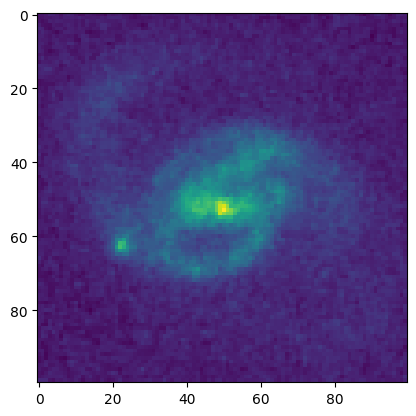

ASDF Example#
Use case: Create ASDF (Advanced Scientific Data Format) file from FITS file.
Data: CANDELS image of the COSMOS field.
Tools: asdf, gwcs, astrocut.
Cross-intrument: all instruments.
Documentation: This notebook is part of a STScI’s larger post-pipeline Data Analysis Tools Ecosystem.
Introduction#
JWST data files make use of the Advanced Scientific Data Format. The ASDF metadata are stored in a FITS extension. The JWST pipline software reads and writes these from the in-memory datamodels.
However, it is relatively straightforward to read and write a pure ASDF file, skipping FITS and datamodels entirely. This notebook illustrates some aspects of ASDF using a FITS file as a starting point.
Imports#
astrocut for getting the data via the astrocut service at MAST
the fits library from astropy for reading in the FITS file
the astropy coordinates
SkyCoordobject for dealing with celestial coordinatesmatplotlib for making plots
asdf and the
AsdfFileobjectthe astropy
Tableobject for a notebook-friendly view of the headerItems from the modeling, coordinates and wcs libraries for an example of converting world coordinate system information from FITS keywords to a
gwcsdata structure.
from astrocut import fits_cut
from astropy.io import fits
from astropy.coordinates import SkyCoord
import matplotlib.pyplot as plt
import asdf
from asdf import AsdfFile
# For example 4
from astropy.table import Table
# For example 6
from astropy.modeling import models
from astropy import coordinates as coord
from astropy import units as u
from astropy.wcs import WCS
from gwcs.wcstools import wcs_from_fiducial
%matplotlib inline
Get the data#
We’ll grab a cutout from the CANDELS observations of COSMOS using astroquery.
url = "https://archive.stsci.edu/pub/hlsp/candels/cosmos/cos-tot/v1.0/"
input_files = [url + "hlsp_candels_hst_acs_cos-tot-sect23_f606w_v1.0_drz.fits"]
center_coord = SkyCoord("150.0946 2.38681", unit='deg')
cutout_size = [100, 100]
cutout_file = fits_cut(input_files, center_coord, cutout_size, single_outfile=True)
print(cutout_file)
cutout_150.0946000_2.3868100_100-x-100_astrocut.fits
Read in the FITS file, look at its structure and display the data#
cutout_hdulist = fits.open(cutout_file)
cutout_hdulist.info()
Filename: cutout_150.0946000_2.3868100_100-x-100_astrocut.fits
No. Name Ver Type Cards Dimensions Format
0 PRIMARY 1 PrimaryHDU 11 ()
1 CUTOUT 1 ImageHDU 2769 (100, 100) float32
Pull apart the FITS components, for convenience later on.
data = cutout_hdulist[1].data
header0 = cutout_hdulist[0].header
header1 = cutout_hdulist[1].header
plt.imshow(data)
<matplotlib.image.AxesImage at 0x7fee85a8cc20>

header1
XTENSION= 'IMAGE ' / Image extension
BITPIX = -32 / array data type
NAXIS = 2 / number of array dimensions
NAXIS1 = 100
NAXIS2 = 100
PCOUNT = 0 / number of parameters
GCOUNT = 1 / number of groups
OBJECT = 'COS_2EPOCH_ACS_F606W_030MAS_V1.0_SECT23_DRZ[1/1]'
ORIGIN = 'KPNO-IRAF' /
DATE = '2012-12-31T17:40:43'
IRAFNAME= 'cos_2epoch_acs_f606w_030mas_v1.0_sect23_drz.hhh' / NAME OF IRAF IMA
IRAF-MAX= 0.000000E0 / DATA MAX
IRAF-MIN= 0.000000E0 / DATA MIN
IRAF-BPX= 32 / DATA BITS/PIXEL
IRAFTYPE= 'REAL ' / PIXEL TYPE
DATAMIN = 0.
DATAMAX = 0.
CRPIX1 = -2552.5 / Pixel coordinate of reference point
CRVAL1 = 150.1163213 / [deg] Coordinate value at reference point
CTYPE1 = 'RA---TAN' / Right ascension, gnomonic projection
CD1_1 = -8.333333E-6
CD2_1 = 0.
CRPIX2 = -22248.5 / Pixel coordinate of reference point
CRVAL2 = 2.200973097 / [deg] Coordinate value at reference point
CTYPE2 = 'DEC--TAN' / Declination, gnomonic projection
CD1_2 = 0.
CD2_2 = 8.333333E-6
ORIGIN = 'NOAO-IRAF FITS Image Kernel July 2003' / FITS file originator
DATE = '2012-05-19T15:15:35'
FILETYPE= 'SCI ' / type of data found in data file
TELESCOP= 'HST' / telescope used to acquire data
INSTRUME= 'ACS ' / identifier for instrument used to acquire data
EQUINOX = 2000.0 / [yr] Equinox of equatorial coordinates
/ DATA DESCRIPTION KEYWORDS
ROOTNAME= 'jboa28wmq ' / rootname of the observation set
IMAGETYP= 'EXT ' / type of exposure identifier
PRIMESI = 'WFC3 ' / instrument designated as prime
/ TARGET INFORMATION
TARGNAME= 'ANY ' / proposer's target name
RA_TARG = 1.501554086126E+02 / right ascension of the target (deg) (J2000)
DEC_TARG= 2.270881608073E+00 / declination of the target (deg) (J2000)
/ PROPOSAL INFORMATION
PROPOSID= 12440 / PEP proposal identifier
LINENUM = '28.002 ' / proposal logsheet line number
PR_INV_L= 'Faber ' / last name of principal investigator
PR_INV_F= 'Sandra ' / first name of principal investigator
PR_INV_M= 'M. ' / middle name / initial of principal investigat
/ EXPOSURE INFORMATION
SUNANGLE= 107.339531 / angle between sun and V1 axis
MOONANGL= 61.991249 / angle between moon and V1 axis
SUN_ALT = -32.338875 / altitude of the sun above Earth's limb
FGSLOCK = 'FINE ' / commanded FGS lock (FINE,COARSE,GYROS,UNKNOWN)
GYROMODE= 'T' / number of gyros scheduled, T=3+OBAD
REFFRAME= 'ICRS ' / guide star catalog version
MTFLAG = ' ' / moving target flag; T if it is a moving target
DATE-OBS= '2011-12-11' / ISO-8601 time of observation
TIME-OBS= '13:09:12' / UT time of start of observation (hh:mm:ss)
EXPSTART= 5.590654805854E+04 / exposure start time (Modified Julian Date)
EXPEND = 5.590655125326E+04 / exposure end time (Modified Julian Date)
EXPTIME = 36800. / exposure duration (seconds)--calculated
EXPFLAG = 'NORMAL ' / Exposure interruption indicator
QUALCOM1= ' '
QUALCOM2= ' '
QUALCOM3= ' '
QUALITY = ' '
/ POINTING INFORMATION
PA_V3 = 128.000000 / position angle of V3-axis of HST (deg)
/ TARGET OFFSETS (POSTARGS)
POSTARG1= 0.000000 / POSTARG in axis 1 direction
POSTARG2= 0.000000 / POSTARG in axis 2 direction
/ DIAGNOSTIC KEYWORDS
OPUS_VER= 'OPUS 2011_1h ' / OPUS software system version number
CAL_VER = '5.1.1 (27-Apr-2010)' / CALACS code version
PROCTIME= 5.590885636574E+04 / Pipeline processing time (MJD)
/ SCIENCE INSTRUMENT CONFIGURATION
OBSTYPE = 'IMAGING ' / observation type - imaging or spectroscopic
OBSMODE = 'ACCUM ' / operating mode
CTEIMAGE= 'NONE' / type of Charge Transfer Image, if applicable
SCLAMP = 'NONE ' / lamp status, NONE or name of lamp which is on
NRPTEXP = 1 / number of repeat exposures in set: default 1
SUBARRAY= F / data from a subarray (T) or full frame (F)
DETECTOR= 'WFC' / detector in use: WFC, HRC, or SBC
FILTER1 = 'F606W ' / element selected from filter wheel 1
FW1OFFST= 0 / computed filter wheel offset
FILTER2 = 'CLEAR2L ' / element selected from filter wheel 2
FW1ERROR= F / filter wheel position error flag
FW2OFFST= -4320 / computed filter wheel offset
FW2ERROR= T / filter wheel position error flag
FWSOFFST= 0 / computed filter wheel offset
FWSERROR= F / filter wheel position error flag
LRFWAVE = 0.000000 / proposed linear ramp filter wavelength
APERTURE= 'WFC ' / aperture name
PROPAPER= 'WFC ' / proposed aperture name
DIRIMAGE= 'NONE ' / direct image for grism or prism exposure
CTEDIR = 'NONE ' / CTE measurement direction: serial or parallel
CRSPLIT = 1 / number of cosmic ray split exposures
/ CALIBRATION SWITCHES: PERFORM, OMIT, COMPLETE
STATFLAG= F / Calculate statistics?
WRTERR = T / write out error array extension
DQICORR = 'COMPLETE' / data quality initialization
ATODCORR= 'OMIT ' / correct for A to D conversion errors
BLEVCORR= 'COMPLETE' / subtract bias level computed from overscan img
BIASCORR= 'COMPLETE' / Subtract bias image
FLSHCORR= 'OMIT ' / post flash correction
CRCORR = 'OMIT ' / combine observations to reject cosmic rays
EXPSCORR= 'COMPLETE' / process individual observations after cr-reject
SHADCORR= 'OMIT ' / apply shutter shading correction
DARKCORR= 'COMPLETE' / Subtract dark image
FLATCORR= 'COMPLETE' / flat field data
PHOTCORR= 'COMPLETE' / populate photometric header keywords
RPTCORR = 'OMIT ' / add individual repeat observations
DRIZCORR= 'PERFORM ' / drizzle processing
/ CALIBRATION REFERENCE FILES
BPIXTAB = 'jref$t3n1116nj_bpx.fits' / bad pixel table
CCDTAB = 'jref$uc82140bj_ccd.fits' / CCD calibration parameters
ATODTAB = 'jref$t3n1116mj_a2d.fits' / analog to digital correction file
OSCNTAB = 'jref$lch1459bj_osc.fits' / CCD overscan table
BIASFILE= 'jref$vbh1844rj_bia.fits' / bias image file name
FLSHFILE= 'N/A ' / post flash correction file name
CRREJTAB= 'jref$n4e12511j_crr.fits' / cosmic ray rejection parameters
SHADFILE= 'jref$kcb17349j_shd.fits' / shutter shading correction file
DARKFILE= 'jref$vbh18454j_drk.fits' / dark image file name
PFLTFILE= 'jref$qb12257sj_pfl.fits' / pixel to pixel flat field file name
DFLTFILE= 'N/A ' / delta flat field file name
LFLTFILE= 'N/A ' / low order flat
PHOTTAB = 'N/A ' / Photometric throughput table
GRAPHTAB= 'mtab$v9n1603mm_tmg.fits' / the HST graph table
COMPTAB = 'mtab$vb71653dm_tmc.fits' / the HST components table
IDCTAB = 'jref$v8q1444tj_idc.fits' / image distortion correction table
DGEOFILE= 'jref$qbu16424j_dxy.fits' / Distortion correction image
MDRIZTAB= 'jref$ub21537aj_mdz.fits' / MultiDrizzle parameter table
CFLTFILE= 'N/A ' / Coronagraphic spot image
SPOTTAB = 'N/A ' / Coronagraphic spot offset table
IMPHTTAB= 'jref$vbb18107j_imp.fits' / Image Photometry Table
/ COSMIC RAY REJECTION ALGORITHM PARAMETERS
MEANEXP = 0.000000 / reference exposure time for parameters
SCALENSE= 0.000000 / multiplicative scale factor applied to noise
INITGUES= ' ' / initial guess method (MIN or MED)
SKYSUB = ' ' / sky value subtracted (MODE or NONE)
SKYSUM = 0.0 / sky level from the sum of all constituent image
CRSIGMAS= ' ' / statistical rejection criteria
CRRADIUS= 0.000000 / rejection propagation radius (pixels)
CRTHRESH= 0.000000 / rejection propagation threshold
BADINPDQ= 0 / data quality flag bits to reject
REJ_RATE= 0.0 / rate at which pixels are affected by cosmic ray
CRMASK = F / flag CR-rejected pixels in input files (T/F)
MDRIZSKY= 32.08782958984375 / Sky value computed by MultiDrizzle
/ OTFR KEYWORDS
T_SGSTAR= 'N/A ' / OMS calculated guide star control
/ PATTERN KEYWORDS
PATTERN1= 'NONE ' / primary pattern type
P1_SHAPE= ' ' / primary pattern shape
P1_PURPS= ' ' / primary pattern purpose
P1_NPTS = 0 / number of points in primary pattern
P1_PSPAC= 0.000000 / point spacing for primary pattern (arc-sec)
P1_LSPAC= 0.000000 / line spacing for primary pattern (arc-sec)
P1_ANGLE= 0.000000 / angle between sides of parallelogram patt (deg)
P1_FRAME= ' ' / coordinate frame of primary pattern
P1_ORINT= 0.000000 / orientation of pattern to coordinate frame (deg
P1_CENTR= ' ' / center pattern relative to pointing (yes/no)
PATTSTEP= 0 / position number of this point in the pattern
/ POST FLASH PARAMETERS
FLASHDUR= 0.0 / Exposure time in seconds: 0.1 to 409.5
FLASHCUR= 'OFF ' / Post flash current: OFF, LOW, MED, HIGH
FLASHSTA= 'NOT PERFORMED ' / Status: SUCCESSFUL, ABORTED, NOT PERFORMED
SHUTRPOS= 'A ' / Shutter position: A or B
/ ENGINEERING PARAMETERS
CCDAMP = 'ABCD' / CCD Amplifier Readout Configuration
CCDGAIN = 2.0 / commanded gain of CCD
CCDOFSTA= 1 / commanded CCD bias offset for amplifier A
CCDOFSTB= 1 / commanded CCD bias offset for amplifier B
CCDOFSTC= 1 / commanded CCD bias offset for amplifier C
CCDOFSTD= 1 / commanded CCD bias offset for amplifier D
/ CALIBRATED ENGINEERING PARAMETERS
ATODGNA = 2.0200000E+00 / calibrated gain for amplifier A
ATODGNB = 1.8860000E+00 / calibrated gain for amplifier B
ATODGNC = 2.0170000E+00 / calibrated gain for amplifier C
ATODGND = 2.0109999E+00 / calibrated gain for amplifier D
READNSEA= 4.5700002E+00 / calibrated read noise for amplifier A
READNSEB= 3.9100001E+00 / calibrated read noise for amplifier B
READNSEC= 4.2500000E+00 / calibrated read noise for amplifier C
READNSED= 4.0400000E+00 / calibrated read noise for amplifier D
BIASLEVA= 2.0885564E+03 / bias level for amplifier A
BIASLEVB= 2.1405024E+03 / bias level for amplifier B
BIASLEVC= 2.2087419E+03 / bias level for amplifier C
BIASLEVD= 2.2967388E+03 / bias level for amplifier D
/ ASSOCIATION KEYWORDS
ASN_ID = 'JBOA28010 ' / unique identifier assigned to association
ASN_TAB = 'jboa28010_asn.fits ' / name of the association table
ASN_MTYP= 'EXP-DTH ' / Role of the Member in the Association
BSTRCORR= 'COMPLETE'
PCTEFILE= 'jref$pctefile_101109.fits'
PCTETAB = 'jref$pctetab_pcte_20110913113559.fits'
PCTECORR= 'COMPLETE'
PCTEFRAC= 1.289367530158845
DATE = '2012-04-10T16:39:27' / Date FITS file was generated
EXPNAME = 'jboa28wmq ' / exposure identifier
BUNIT = 'ELECTRONS' / brightness units
/ WFC CCD CHIP IDENTIFICATION
CCDCHIP = 1 / CCD chip (1 or 2)
/ World Coordinate System and Related Parameters
WCSAXES = 2 / Number of coordinate axes
LTV1 = 0.0000000E+00 / offset in X to subsection start
LTV2 = 0.0000000E+00 / offset in Y to subsection start
LTM1_1 = 1.0 / reciprocal of sampling rate in X
LTM2_2 = 1.0 / reciprocal of sampling rate in Y
ORIENTAT= -54.67632556350016 / position angle of image y axis (deg. e of n)
RA_APER = 1.501554086126E+02 / RA of aperture reference position
DEC_APER= 2.270881608073E+00 / Declination of aperture reference position
PA_APER = -54.4475 / Position Angle of reference aperture center (de
VAFACTOR= 1.000104465141E+00 / velocity aberration plate scale factor
/ READOUT DEFINITION PARAMETERS
CENTERA1= 2073 / subarray axis1 center pt in unbinned dect. pix
CENTERA2= 1035 / subarray axis2 center pt in unbinned dect. pix
SIZAXIS1= 4096 / subarray axis1 size in unbinned detector pixels
SIZAXIS2= 2048 / subarray axis2 size in unbinned detector pixels
BINAXIS1= 1 / axis1 data bin size in unbinned detector pixels
BINAXIS2= 1 / axis2 data bin size in unbinned detector pixels
/ PHOTOMETRY KEYWORDS
PHOTMODE= 'ACS WFC1 F606W MJD#55906.5481' / observation con
PHOTFLAM= 7.8624958E-20 / inverse sensitivity, ergs/cm2/Ang/electron
PHOTZPT = -2.1100000E+01 / ST magnitude zero point
PHOTPLAM= 5.9211147E+03 / Pivot wavelength (Angstroms)
PHOTBW = 6.7223627E+02 / RMS bandwidth of filter plus detector
/ REPEATED EXPOSURES INFO
NCOMBINE= 1 / number of image sets combined during CR rejecti
/ DATA PACKET INFORMATION
FILLCNT = 1 / number of segments containing fill
ERRCNT = 1 / number of segments containing errors
PODPSFF = F / podps fill present (T/F)
STDCFFF = T / science telemetry fill data present (T=1/F=0)
STDCFFP = '0x5569' / science telemetry fill pattern (hex)
/ ON-BOARD COMPRESSION INFORMATION
WFCMPRSD= F / was WFC data compressed? (T/F)
CBLKSIZ = 0 / size of compression block in 2-byte words
LOSTPIX = 0 / #pixels lost due to buffer overflow
COMPTYP = 'None ' / compression type performed (Partial/Full/None)
/ IMAGE STATISTICS AND DATA QUALITY FLAGS
NGOODPIX= 8097343 / number of good pixels
SDQFLAGS= 31743 / serious data quality flags
GOODMIN = -3.1759687E+01 / minimum value of good pixels
GOODMAX = 8.5606719E+04 / maximum value of good pixels
GOODMEAN= 3.5944370E+01 / mean value of good pixels
SOFTERRS= 0 / number of soft error pixels (DQF=1)
SNRMIN = -3.4609985E+00 / minimum signal to noise of good pixels
SNRMAX = 2.3393831E+02 / maximum signal to noise of good pixels
SNRMEAN = 5.9348207E+00 / mean value of signal to noise of good pixels
MEANDARK= 1.2713139E+00 / average of the dark values subtracted
MEANBLEV= 2.1145295E+03 / average of all bias levels subtracted
MEANFLSH= 0.000000 / Mean number of counts in post flash exposure
ONAXIS2 = 2048 / Axis length
ONAXIS1 = 4096 / Axis length
OORIENTA= -54.64776336099293 / position angle of image y axis (deg. e of n)
OCTYPE1 = 'RA---TAN' / the coordinate type for the first axis
OCTYPE2 = 'DEC--TAN' / the coordinate type for the second axis
WCSCDATE= '13:02:32 (10/04/2012)' / Time WCS keywords were copied.
A_0_2 = 2.26194120304176E-06
B_0_2 = -9.7985788387639E-06
A_1_1 = -7.5302905463753E-06
B_1_1 = 6.42569986264533E-06
A_2_0 = 8.51886870532632E-06
B_2_0 = -2.9658922285423E-06
A_0_3 = 6.51050854317125E-11
B_0_3 = -4.1421499542394E-10
A_1_2 = -5.2539201413375E-10
B_1_2 = -3.0354276197375E-11
A_2_1 = -1.0714004130419E-10
B_2_1 = -4.4034927976003E-10
A_3_0 = -4.6936360210189E-10
B_3_0 = 9.00334210115821E-11
A_0_4 = 1.35191449346299E-13
B_0_4 = -1.5248974790417E-13
A_1_3 = -1.4269338401366E-14
B_1_3 = 2.75911271664302E-14
A_2_2 = 9.70199603291834E-14
B_2_2 = -1.0403607372429E-13
A_3_1 = 3.80059786170717E-14
B_3_1 = -3.8363933112663E-14
A_4_0 = 1.83627862287182E-14
B_4_0 = -1.6913942054528E-14
A_ORDER = 4
B_ORDER = 4
IDCSCALE= 0.05
IDCV2REF= 261.1130981445312
IDCV3REF= 198.231201171875
IDCTHETA= 0.0
OCX10 = 0.002270935984783606
OCX11 = 0.04922343821974121
OCY10 = 0.0485839959198564
OCY11 = 0.00213603403929032
TDDALPHA= 0.2802605508521792
TDDBETA = -0.09075351695072641
SKYVAL = 32.5013968269
SKYRMS = 7.873235
QUADOFFA= 0.190616225
QUADOFFB= -0.660557125
QUADOFFC= 0.117621775
QUADOFFD= 0.352319125
NDRIZIM = 100 / Drizzle, number of images drizzled onto this ou
D001VER = 'WDRIZZLE Version 3.4.2 (Jul 3rd 2006)' / Drizzle, task version
D001GEOM= 'Header WCS' / Drizzle, source of geometric information
D001DATA= 'cos01_28_f606w_1_flt_sci2_final.fits' / Drizzle, input data image
D001DEXP= 275. / Drizzle, input image exposure time (s)
D001OUDA= 'tmpdir221/cos_2epoch_acs_f606w_030mas_v1.0_sect23_drz.hhh' / Drizzle,
D001OUWE= 'tmpdir221/cos_2epoch_acs_f606w_030mas_v1.0_sect23_wht.hhh' / Drizzle,
D001OUCO= ' ' / Drizzle, output context image
D001MASK= 'cos01_28_f606w_1_flt_wht2_final.fits' / Drizzle, input weighting imag
D001WTSC= 583770.1 / Drizzle, weighting factor for input image
D001KERN= 'square ' / Drizzle, form of weight distribution kernel
D001PIXF= 0.8 / Drizzle, linear size of drop
D001COEF= 'cos01_28_f606w_1_flt_coeffs1.dat' / Drizzle, coefficients file name
D001XGIM= 'jref$qbu16424j_dxy.fits[DX,2]' / Drizzle, X distortion image name
D001YGIM= 'jref$qbu16424j_dxy.fits[DY,2]' / Drizzle, Y distortion image name
D001LAM = 555. / Drizzle, wavelength applied for transformation
D001EXKY= 'exptime ' / Drizzle, exposure keyword name in input image
D001INUN= 'counts ' / Drizzle, units of input image - counts or cps
D001OUUN= 'cps ' / Drizzle, units of output image - counts or cps
D001FVAL= 'INDEF ' / Drizzle, fill value for zero weight output pixe
D001INXC= 2049. / Drizzle, reference center of input image (X)
D001INYC= 1025. / Drizzle, reference center of input image (Y)
D001OUXC= 7001. / Drizzle, reference center of output image (X)
D001OUYC= 7201. / Drizzle, reference center of output image (Y)
D001SECP= F / Drizzle, there are no secondary geometric param
D002VER = 'WDRIZZLE Version 3.4.2 (Jul 3rd 2006)' / Drizzle, task version
D002GEOM= 'Header WCS' / Drizzle, source of geometric information
D002DATA= 'cos01_28_f606w_2_flt_sci2_final.fits' / Drizzle, input data image
D002DEXP= 707. / Drizzle, input image exposure time (s)
D002OUDA= 'tmpdir221/cos_2epoch_acs_f606w_030mas_v1.0_sect23_drz.hhh' / Drizzle,
D002OUWE= 'tmpdir221/cos_2epoch_acs_f606w_030mas_v1.0_sect23_wht.hhh' / Drizzle,
D002OUCO= ' ' / Drizzle, output context image
D002MASK= 'cos01_28_f606w_2_flt_wht2_final.fits' / Drizzle, input weighting imag
D002WTSC= 3858213. / Drizzle, weighting factor for input image
D002KERN= 'square ' / Drizzle, form of weight distribution kernel
D002PIXF= 0.8 / Drizzle, linear size of drop
D002COEF= 'cos01_28_f606w_2_flt_coeffs1.dat' / Drizzle, coefficients file name
D002XGIM= 'jref$qbu16424j_dxy.fits[DX,2]' / Drizzle, X distortion image name
D002YGIM= 'jref$qbu16424j_dxy.fits[DY,2]' / Drizzle, Y distortion image name
D002LAM = 555. / Drizzle, wavelength applied for transformation
D002EXKY= 'exptime ' / Drizzle, exposure keyword name in input image
D002INUN= 'counts ' / Drizzle, units of input image - counts or cps
D002OUUN= 'cps ' / Drizzle, units of output image - counts or cps
D002FVAL= 'INDEF ' / Drizzle, fill value for zero weight output pixe
D002INXC= 2049. / Drizzle, reference center of input image (X)
D002INYC= 1025. / Drizzle, reference center of input image (Y)
D002OUXC= 7001. / Drizzle, reference center of output image (X)
D002OUYC= 7201. / Drizzle, reference center of output image (Y)
D002SECP= F / Drizzle, there are no secondary geometric param
D003VER = 'WDRIZZLE Version 3.4.2 (Jul 3rd 2006)' / Drizzle, task version
D003GEOM= 'Header WCS' / Drizzle, source of geometric information
D003DATA= 'cos01_29_f606w_1_flt_sci2_final.fits' / Drizzle, input data image
D003DEXP= 275. / Drizzle, input image exposure time (s)
D003OUDA= 'tmpdir221/cos_2epoch_acs_f606w_030mas_v1.0_sect23_drz.hhh' / Drizzle,
D003OUWE= 'tmpdir221/cos_2epoch_acs_f606w_030mas_v1.0_sect23_wht.hhh' / Drizzle,
D003OUCO= ' ' / Drizzle, output context image
D003MASK= 'cos01_29_f606w_1_flt_wht2_final.fits' / Drizzle, input weighting imag
D003WTSC= 583802.2 / Drizzle, weighting factor for input image
D003KERN= 'square ' / Drizzle, form of weight distribution kernel
D003PIXF= 0.8 / Drizzle, linear size of drop
D003COEF= 'cos01_29_f606w_1_flt_coeffs1.dat' / Drizzle, coefficients file name
D003XGIM= 'jref$qbu16424j_dxy.fits[DX,2]' / Drizzle, X distortion image name
D003YGIM= 'jref$qbu16424j_dxy.fits[DY,2]' / Drizzle, Y distortion image name
D003LAM = 555. / Drizzle, wavelength applied for transformation
D003EXKY= 'exptime ' / Drizzle, exposure keyword name in input image
D003INUN= 'counts ' / Drizzle, units of input image - counts or cps
D003OUUN= 'cps ' / Drizzle, units of output image - counts or cps
D003FVAL= 'INDEF ' / Drizzle, fill value for zero weight output pixe
D003INXC= 2049. / Drizzle, reference center of input image (X)
D003INYC= 1025. / Drizzle, reference center of input image (Y)
D003OUXC= 7001. / Drizzle, reference center of output image (X)
D003OUYC= 7201. / Drizzle, reference center of output image (Y)
D003SECP= F / Drizzle, there are no secondary geometric param
D004VER = 'WDRIZZLE Version 3.4.2 (Jul 3rd 2006)' / Drizzle, task version
D004GEOM= 'Header WCS' / Drizzle, source of geometric information
D004DATA= 'cos01_29_f606w_2_flt_sci2_final.fits' / Drizzle, input data image
D004DEXP= 707. / Drizzle, input image exposure time (s)
D004OUDA= 'tmpdir221/cos_2epoch_acs_f606w_030mas_v1.0_sect23_drz.hhh' / Drizzle,
D004OUWE= 'tmpdir221/cos_2epoch_acs_f606w_030mas_v1.0_sect23_wht.hhh' / Drizzle,
D004OUCO= ' ' / Drizzle, output context image
D004MASK= 'cos01_29_f606w_2_flt_wht2_final.fits' / Drizzle, input weighting imag
D004WTSC= 3858522. / Drizzle, weighting factor for input image
D004KERN= 'square ' / Drizzle, form of weight distribution kernel
D004PIXF= 0.8 / Drizzle, linear size of drop
D004COEF= 'cos01_29_f606w_2_flt_coeffs1.dat' / Drizzle, coefficients file name
D004XGIM= 'jref$qbu16424j_dxy.fits[DX,2]' / Drizzle, X distortion image name
D004YGIM= 'jref$qbu16424j_dxy.fits[DY,2]' / Drizzle, Y distortion image name
D004LAM = 555. / Drizzle, wavelength applied for transformation
D004EXKY= 'exptime ' / Drizzle, exposure keyword name in input image
D004INUN= 'counts ' / Drizzle, units of input image - counts or cps
D004OUUN= 'cps ' / Drizzle, units of output image - counts or cps
D004FVAL= 'INDEF ' / Drizzle, fill value for zero weight output pixe
D004INXC= 2049. / Drizzle, reference center of input image (X)
D004INYC= 1025. / Drizzle, reference center of input image (Y)
D004OUXC= 7001. / Drizzle, reference center of output image (X)
D004OUYC= 7201. / Drizzle, reference center of output image (Y)
D004SECP= F / Drizzle, there are no secondary geometric param
D005VER = 'WDRIZZLE Version 3.4.2 (Jul 3rd 2006)' / Drizzle, task version
D005GEOM= 'Header WCS' / Drizzle, source of geometric information
D005DATA= 'cos01_30_f606w_1_flt_sci2_final.fits' / Drizzle, input data image
D005DEXP= 275. / Drizzle, input image exposure time (s)
D005OUDA= 'tmpdir221/cos_2epoch_acs_f606w_030mas_v1.0_sect23_drz.hhh' / Drizzle,
D005OUWE= 'tmpdir221/cos_2epoch_acs_f606w_030mas_v1.0_sect23_wht.hhh' / Drizzle,
D005OUCO= ' ' / Drizzle, output context image
D005MASK= 'cos01_30_f606w_1_flt_wht2_final.fits' / Drizzle, input weighting imag
D005WTSC= 583802.4 / Drizzle, weighting factor for input image
D005KERN= 'square ' / Drizzle, form of weight distribution kernel
D005PIXF= 0.8 / Drizzle, linear size of drop
D005COEF= 'cos01_30_f606w_1_flt_coeffs1.dat' / Drizzle, coefficients file name
D005XGIM= 'jref$qbu16424j_dxy.fits[DX,2]' / Drizzle, X distortion image name
D005YGIM= 'jref$qbu16424j_dxy.fits[DY,2]' / Drizzle, Y distortion image name
D005LAM = 555. / Drizzle, wavelength applied for transformation
D005EXKY= 'exptime ' / Drizzle, exposure keyword name in input image
D005INUN= 'counts ' / Drizzle, units of input image - counts or cps
D005OUUN= 'cps ' / Drizzle, units of output image - counts or cps
D005FVAL= 'INDEF ' / Drizzle, fill value for zero weight output pixe
D005INXC= 2049. / Drizzle, reference center of input image (X)
D005INYC= 1025. / Drizzle, reference center of input image (Y)
D005OUXC= 7001. / Drizzle, reference center of output image (X)
D005OUYC= 7201. / Drizzle, reference center of output image (Y)
D005SECP= F / Drizzle, there are no secondary geometric param
D006VER = 'WDRIZZLE Version 3.4.2 (Jul 3rd 2006)' / Drizzle, task version
D006GEOM= 'Header WCS' / Drizzle, source of geometric information
D006DATA= 'cos01_30_f606w_2_flt_sci2_final.fits' / Drizzle, input data image
D006DEXP= 707. / Drizzle, input image exposure time (s)
D006OUDA= 'tmpdir221/cos_2epoch_acs_f606w_030mas_v1.0_sect23_drz.hhh' / Drizzle,
D006OUWE= 'tmpdir221/cos_2epoch_acs_f606w_030mas_v1.0_sect23_wht.hhh' / Drizzle,
D006OUCO= ' ' / Drizzle, output context image
D006MASK= 'cos01_30_f606w_2_flt_wht2_final.fits' / Drizzle, input weighting imag
D006WTSC= 3858522. / Drizzle, weighting factor for input image
D006KERN= 'square ' / Drizzle, form of weight distribution kernel
D006PIXF= 0.8 / Drizzle, linear size of drop
D006COEF= 'cos01_30_f606w_2_flt_coeffs1.dat' / Drizzle, coefficients file name
D006XGIM= 'jref$qbu16424j_dxy.fits[DX,2]' / Drizzle, X distortion image name
D006YGIM= 'jref$qbu16424j_dxy.fits[DY,2]' / Drizzle, Y distortion image name
D006LAM = 555. / Drizzle, wavelength applied for transformation
D006EXKY= 'exptime ' / Drizzle, exposure keyword name in input image
D006INUN= 'counts ' / Drizzle, units of input image - counts or cps
D006OUUN= 'cps ' / Drizzle, units of output image - counts or cps
D006FVAL= 'INDEF ' / Drizzle, fill value for zero weight output pixe
D006INXC= 2049. / Drizzle, reference center of input image (X)
D006INYC= 1025. / Drizzle, reference center of input image (Y)
D006OUXC= 7001. / Drizzle, reference center of output image (X)
D006OUYC= 7201. / Drizzle, reference center of output image (Y)
D006SECP= F / Drizzle, there are no secondary geometric param
D007VER = 'WDRIZZLE Version 3.4.2 (Jul 3rd 2006)' / Drizzle, task version
D007GEOM= 'Header WCS' / Drizzle, source of geometric information
D007DATA= 'cos01_32_f606w_1_flt_sci2_final.fits' / Drizzle, input data image
D007DEXP= 275. / Drizzle, input image exposure time (s)
D007OUDA= 'tmpdir221/cos_2epoch_acs_f606w_030mas_v1.0_sect23_drz.hhh' / Drizzle,
D007OUWE= 'tmpdir221/cos_2epoch_acs_f606w_030mas_v1.0_sect23_wht.hhh' / Drizzle,
D007OUCO= ' ' / Drizzle, output context image
D007MASK= 'cos01_32_f606w_1_flt_wht2_final.fits' / Drizzle, input weighting imag
D007WTSC= 583801.9 / Drizzle, weighting factor for input image
D007KERN= 'square ' / Drizzle, form of weight distribution kernel
D007PIXF= 0.8 / Drizzle, linear size of drop
D007COEF= 'cos01_32_f606w_1_flt_coeffs1.dat' / Drizzle, coefficients file name
D007XGIM= 'jref$qbu16424j_dxy.fits[DX,2]' / Drizzle, X distortion image name
D007YGIM= 'jref$qbu16424j_dxy.fits[DY,2]' / Drizzle, Y distortion image name
D007LAM = 555. / Drizzle, wavelength applied for transformation
D007EXKY= 'exptime ' / Drizzle, exposure keyword name in input image
D007INUN= 'counts ' / Drizzle, units of input image - counts or cps
D007OUUN= 'cps ' / Drizzle, units of output image - counts or cps
D007FVAL= 'INDEF ' / Drizzle, fill value for zero weight output pixe
D007INXC= 2049. / Drizzle, reference center of input image (X)
D007INYC= 1025. / Drizzle, reference center of input image (Y)
D007OUXC= 7001. / Drizzle, reference center of output image (X)
D007OUYC= 7201. / Drizzle, reference center of output image (Y)
D007SECP= F / Drizzle, there are no secondary geometric param
D008VER = 'WDRIZZLE Version 3.4.2 (Jul 3rd 2006)' / Drizzle, task version
D008GEOM= 'Header WCS' / Drizzle, source of geometric information
D008DATA= 'cos01_32_f606w_2_flt_sci2_final.fits' / Drizzle, input data image
D008DEXP= 707. / Drizzle, input image exposure time (s)
D008OUDA= 'tmpdir221/cos_2epoch_acs_f606w_030mas_v1.0_sect23_drz.hhh' / Drizzle,
D008OUWE= 'tmpdir221/cos_2epoch_acs_f606w_030mas_v1.0_sect23_wht.hhh' / Drizzle,
D008OUCO= ' ' / Drizzle, output context image
D008MASK= 'cos01_32_f606w_2_flt_wht2_final.fits' / Drizzle, input weighting imag
D008WTSC= 3858506. / Drizzle, weighting factor for input image
D008KERN= 'square ' / Drizzle, form of weight distribution kernel
D008PIXF= 0.8 / Drizzle, linear size of drop
D008COEF= 'cos01_32_f606w_2_flt_coeffs1.dat' / Drizzle, coefficients file name
D008XGIM= 'jref$qbu16424j_dxy.fits[DX,2]' / Drizzle, X distortion image name
D008YGIM= 'jref$qbu16424j_dxy.fits[DY,2]' / Drizzle, Y distortion image name
D008LAM = 555. / Drizzle, wavelength applied for transformation
D008EXKY= 'exptime ' / Drizzle, exposure keyword name in input image
D008INUN= 'counts ' / Drizzle, units of input image - counts or cps
D008OUUN= 'cps ' / Drizzle, units of output image - counts or cps
D008FVAL= 'INDEF ' / Drizzle, fill value for zero weight output pixe
D008INXC= 2049. / Drizzle, reference center of input image (X)
D008INYC= 1025. / Drizzle, reference center of input image (Y)
D008OUXC= 7001. / Drizzle, reference center of output image (X)
D008OUYC= 7201. / Drizzle, reference center of output image (Y)
D008SECP= F / Drizzle, there are no secondary geometric param
D009VER = 'WDRIZZLE Version 3.4.2 (Jul 3rd 2006)' / Drizzle, task version
D009GEOM= 'Header WCS' / Drizzle, source of geometric information
D009DATA= 'cos01_33_f606w_1_flt_sci1_final.fits' / Drizzle, input data image
D009DEXP= 275. / Drizzle, input image exposure time (s)
D009OUDA= 'tmpdir221/cos_2epoch_acs_f606w_030mas_v1.0_sect23_drz.hhh' / Drizzle,
D009OUWE= 'tmpdir221/cos_2epoch_acs_f606w_030mas_v1.0_sect23_wht.hhh' / Drizzle,
D009OUCO= ' ' / Drizzle, output context image
D009MASK= 'cos01_33_f606w_1_flt_wht1_final.fits' / Drizzle, input weighting imag
D009WTSC= 583803.6 / Drizzle, weighting factor for input image
D009KERN= 'square ' / Drizzle, form of weight distribution kernel
D009PIXF= 0.8 / Drizzle, linear size of drop
D009COEF= 'cos01_33_f606w_1_flt_coeffs2.dat' / Drizzle, coefficients file name
D009XGIM= 'jref$qbu16424j_dxy.fits[DX,1]' / Drizzle, X distortion image name
D009YGIM= 'jref$qbu16424j_dxy.fits[DY,1]' / Drizzle, Y distortion image name
D009LAM = 555. / Drizzle, wavelength applied for transformation
D009EXKY= 'exptime ' / Drizzle, exposure keyword name in input image
D009INUN= 'counts ' / Drizzle, units of input image - counts or cps
D009OUUN= 'cps ' / Drizzle, units of output image - counts or cps
D009FVAL= 'INDEF ' / Drizzle, fill value for zero weight output pixe
D009INXC= 2049. / Drizzle, reference center of input image (X)
D009INYC= 1025. / Drizzle, reference center of input image (Y)
D009OUXC= 7001. / Drizzle, reference center of output image (X)
D009OUYC= 7201. / Drizzle, reference center of output image (Y)
D009SECP= F / Drizzle, there are no secondary geometric param
D010VER = 'WDRIZZLE Version 3.4.2 (Jul 3rd 2006)' / Drizzle, task version
D010GEOM= 'Header WCS' / Drizzle, source of geometric information
D010DATA= 'cos01_33_f606w_1_flt_sci2_final.fits' / Drizzle, input data image
D010DEXP= 275. / Drizzle, input image exposure time (s)
D010OUDA= 'tmpdir221/cos_2epoch_acs_f606w_030mas_v1.0_sect23_drz.hhh' / Drizzle,
D010OUWE= 'tmpdir221/cos_2epoch_acs_f606w_030mas_v1.0_sect23_wht.hhh' / Drizzle,
D010OUCO= ' ' / Drizzle, output context image
D010MASK= 'cos01_33_f606w_1_flt_wht2_final.fits' / Drizzle, input weighting imag
D010WTSC= 583803.6 / Drizzle, weighting factor for input image
D010KERN= 'square ' / Drizzle, form of weight distribution kernel
D010PIXF= 0.8 / Drizzle, linear size of drop
D010COEF= 'cos01_33_f606w_1_flt_coeffs1.dat' / Drizzle, coefficients file name
D010XGIM= 'jref$qbu16424j_dxy.fits[DX,2]' / Drizzle, X distortion image name
D010YGIM= 'jref$qbu16424j_dxy.fits[DY,2]' / Drizzle, Y distortion image name
D010LAM = 555. / Drizzle, wavelength applied for transformation
D010EXKY= 'exptime ' / Drizzle, exposure keyword name in input image
D010INUN= 'counts ' / Drizzle, units of input image - counts or cps
D010OUUN= 'cps ' / Drizzle, units of output image - counts or cps
D010FVAL= 'INDEF ' / Drizzle, fill value for zero weight output pixe
D010INXC= 2049. / Drizzle, reference center of input image (X)
D010INYC= 1025. / Drizzle, reference center of input image (Y)
D010OUXC= 7001. / Drizzle, reference center of output image (X)
D010OUYC= 7201. / Drizzle, reference center of output image (Y)
D010SECP= F / Drizzle, there are no secondary geometric param
D011VER = 'WDRIZZLE Version 3.4.2 (Jul 3rd 2006)' / Drizzle, task version
D011GEOM= 'Header WCS' / Drizzle, source of geometric information
D011DATA= 'cos01_33_f606w_2_flt_sci1_final.fits' / Drizzle, input data image
D011DEXP= 707. / Drizzle, input image exposure time (s)
D011OUDA= 'tmpdir221/cos_2epoch_acs_f606w_030mas_v1.0_sect23_drz.hhh' / Drizzle,
D011OUWE= 'tmpdir221/cos_2epoch_acs_f606w_030mas_v1.0_sect23_wht.hhh' / Drizzle,
D011OUCO= ' ' / Drizzle, output context image
D011MASK= 'cos01_33_f606w_2_flt_wht1_final.fits' / Drizzle, input weighting imag
D011WTSC= 3858528. / Drizzle, weighting factor for input image
D011KERN= 'square ' / Drizzle, form of weight distribution kernel
D011PIXF= 0.8 / Drizzle, linear size of drop
D011COEF= 'cos01_33_f606w_2_flt_coeffs2.dat' / Drizzle, coefficients file name
D011XGIM= 'jref$qbu16424j_dxy.fits[DX,1]' / Drizzle, X distortion image name
D011YGIM= 'jref$qbu16424j_dxy.fits[DY,1]' / Drizzle, Y distortion image name
D011LAM = 555. / Drizzle, wavelength applied for transformation
D011EXKY= 'exptime ' / Drizzle, exposure keyword name in input image
D011INUN= 'counts ' / Drizzle, units of input image - counts or cps
D011OUUN= 'cps ' / Drizzle, units of output image - counts or cps
D011FVAL= 'INDEF ' / Drizzle, fill value for zero weight output pixe
D011INXC= 2049. / Drizzle, reference center of input image (X)
D011INYC= 1025. / Drizzle, reference center of input image (Y)
D011OUXC= 7001. / Drizzle, reference center of output image (X)
D011OUYC= 7201. / Drizzle, reference center of output image (Y)
D011SECP= F / Drizzle, there are no secondary geometric param
D012VER = 'WDRIZZLE Version 3.4.2 (Jul 3rd 2006)' / Drizzle, task version
D012GEOM= 'Header WCS' / Drizzle, source of geometric information
D012DATA= 'cos01_33_f606w_2_flt_sci2_final.fits' / Drizzle, input data image
D012DEXP= 707. / Drizzle, input image exposure time (s)
D012OUDA= 'tmpdir221/cos_2epoch_acs_f606w_030mas_v1.0_sect23_drz.hhh' / Drizzle,
D012OUWE= 'tmpdir221/cos_2epoch_acs_f606w_030mas_v1.0_sect23_wht.hhh' / Drizzle,
D012OUCO= ' ' / Drizzle, output context image
D012MASK= 'cos01_33_f606w_2_flt_wht2_final.fits' / Drizzle, input weighting imag
D012WTSC= 3858528. / Drizzle, weighting factor for input image
D012KERN= 'square ' / Drizzle, form of weight distribution kernel
D012PIXF= 0.8 / Drizzle, linear size of drop
D012COEF= 'cos01_33_f606w_2_flt_coeffs1.dat' / Drizzle, coefficients file name
D012XGIM= 'jref$qbu16424j_dxy.fits[DX,2]' / Drizzle, X distortion image name
D012YGIM= 'jref$qbu16424j_dxy.fits[DY,2]' / Drizzle, Y distortion image name
D012LAM = 555. / Drizzle, wavelength applied for transformation
D012EXKY= 'exptime ' / Drizzle, exposure keyword name in input image
D012INUN= 'counts ' / Drizzle, units of input image - counts or cps
D012OUUN= 'cps ' / Drizzle, units of output image - counts or cps
D012FVAL= 'INDEF ' / Drizzle, fill value for zero weight output pixe
D012INXC= 2049. / Drizzle, reference center of input image (X)
D012INYC= 1025. / Drizzle, reference center of input image (Y)
D012OUXC= 7001. / Drizzle, reference center of output image (X)
D012OUYC= 7201. / Drizzle, reference center of output image (Y)
D012SECP= F / Drizzle, there are no secondary geometric param
D013VER = 'WDRIZZLE Version 3.4.2 (Jul 3rd 2006)' / Drizzle, task version
D013GEOM= 'Header WCS' / Drizzle, source of geometric information
D013DATA= 'cos01_34_f606w_1_flt_sci1_final.fits' / Drizzle, input data image
D013DEXP= 275. / Drizzle, input image exposure time (s)
D013OUDA= 'tmpdir221/cos_2epoch_acs_f606w_030mas_v1.0_sect23_drz.hhh' / Drizzle,
D013OUWE= 'tmpdir221/cos_2epoch_acs_f606w_030mas_v1.0_sect23_wht.hhh' / Drizzle,
D013OUCO= ' ' / Drizzle, output context image
D013MASK= 'cos01_34_f606w_1_flt_wht1_final.fits' / Drizzle, input weighting imag
D013WTSC= 583803.6 / Drizzle, weighting factor for input image
D013KERN= 'square ' / Drizzle, form of weight distribution kernel
D013PIXF= 0.8 / Drizzle, linear size of drop
D013COEF= 'cos01_34_f606w_1_flt_coeffs2.dat' / Drizzle, coefficients file name
D013XGIM= 'jref$qbu16424j_dxy.fits[DX,1]' / Drizzle, X distortion image name
D013YGIM= 'jref$qbu16424j_dxy.fits[DY,1]' / Drizzle, Y distortion image name
D013LAM = 555. / Drizzle, wavelength applied for transformation
D013EXKY= 'exptime ' / Drizzle, exposure keyword name in input image
D013INUN= 'counts ' / Drizzle, units of input image - counts or cps
D013OUUN= 'cps ' / Drizzle, units of output image - counts or cps
D013FVAL= 'INDEF ' / Drizzle, fill value for zero weight output pixe
D013INXC= 2049. / Drizzle, reference center of input image (X)
D013INYC= 1025. / Drizzle, reference center of input image (Y)
D013OUXC= 7001. / Drizzle, reference center of output image (X)
D013OUYC= 7201. / Drizzle, reference center of output image (Y)
D013SECP= F / Drizzle, there are no secondary geometric param
D014VER = 'WDRIZZLE Version 3.4.2 (Jul 3rd 2006)' / Drizzle, task version
D014GEOM= 'Header WCS' / Drizzle, source of geometric information
D014DATA= 'cos01_34_f606w_1_flt_sci2_final.fits' / Drizzle, input data image
D014DEXP= 275. / Drizzle, input image exposure time (s)
D014OUDA= 'tmpdir221/cos_2epoch_acs_f606w_030mas_v1.0_sect23_drz.hhh' / Drizzle,
D014OUWE= 'tmpdir221/cos_2epoch_acs_f606w_030mas_v1.0_sect23_wht.hhh' / Drizzle,
D014OUCO= ' ' / Drizzle, output context image
D014MASK= 'cos01_34_f606w_1_flt_wht2_final.fits' / Drizzle, input weighting imag
D014WTSC= 583803.6 / Drizzle, weighting factor for input image
D014KERN= 'square ' / Drizzle, form of weight distribution kernel
D014PIXF= 0.8 / Drizzle, linear size of drop
D014COEF= 'cos01_34_f606w_1_flt_coeffs1.dat' / Drizzle, coefficients file name
D014XGIM= 'jref$qbu16424j_dxy.fits[DX,2]' / Drizzle, X distortion image name
D014YGIM= 'jref$qbu16424j_dxy.fits[DY,2]' / Drizzle, Y distortion image name
D014LAM = 555. / Drizzle, wavelength applied for transformation
D014EXKY= 'exptime ' / Drizzle, exposure keyword name in input image
D014INUN= 'counts ' / Drizzle, units of input image - counts or cps
D014OUUN= 'cps ' / Drizzle, units of output image - counts or cps
D014FVAL= 'INDEF ' / Drizzle, fill value for zero weight output pixe
D014INXC= 2049. / Drizzle, reference center of input image (X)
D014INYC= 1025. / Drizzle, reference center of input image (Y)
D014OUXC= 7001. / Drizzle, reference center of output image (X)
D014OUYC= 7201. / Drizzle, reference center of output image (Y)
D014SECP= F / Drizzle, there are no secondary geometric param
D015VER = 'WDRIZZLE Version 3.4.2 (Jul 3rd 2006)' / Drizzle, task version
D015GEOM= 'Header WCS' / Drizzle, source of geometric information
D015DATA= 'cos01_34_f606w_2_flt_sci1_final.fits' / Drizzle, input data image
D015DEXP= 707. / Drizzle, input image exposure time (s)
D015OUDA= 'tmpdir221/cos_2epoch_acs_f606w_030mas_v1.0_sect23_drz.hhh' / Drizzle,
D015OUWE= 'tmpdir221/cos_2epoch_acs_f606w_030mas_v1.0_sect23_wht.hhh' / Drizzle,
D015OUCO= ' ' / Drizzle, output context image
D015MASK= 'cos01_34_f606w_2_flt_wht1_final.fits' / Drizzle, input weighting imag
D015WTSC= 3858529. / Drizzle, weighting factor for input image
D015KERN= 'square ' / Drizzle, form of weight distribution kernel
D015PIXF= 0.8 / Drizzle, linear size of drop
D015COEF= 'cos01_34_f606w_2_flt_coeffs2.dat' / Drizzle, coefficients file name
D015XGIM= 'jref$qbu16424j_dxy.fits[DX,1]' / Drizzle, X distortion image name
D015YGIM= 'jref$qbu16424j_dxy.fits[DY,1]' / Drizzle, Y distortion image name
D015LAM = 555. / Drizzle, wavelength applied for transformation
D015EXKY= 'exptime ' / Drizzle, exposure keyword name in input image
D015INUN= 'counts ' / Drizzle, units of input image - counts or cps
D015OUUN= 'cps ' / Drizzle, units of output image - counts or cps
D015FVAL= 'INDEF ' / Drizzle, fill value for zero weight output pixe
D015INXC= 2049. / Drizzle, reference center of input image (X)
D015INYC= 1025. / Drizzle, reference center of input image (Y)
D015OUXC= 7001. / Drizzle, reference center of output image (X)
D015OUYC= 7201. / Drizzle, reference center of output image (Y)
D015SECP= F / Drizzle, there are no secondary geometric param
D016VER = 'WDRIZZLE Version 3.4.2 (Jul 3rd 2006)' / Drizzle, task version
D016GEOM= 'Header WCS' / Drizzle, source of geometric information
D016DATA= 'cos01_34_f606w_2_flt_sci2_final.fits' / Drizzle, input data image
D016DEXP= 707. / Drizzle, input image exposure time (s)
D016OUDA= 'tmpdir221/cos_2epoch_acs_f606w_030mas_v1.0_sect23_drz.hhh' / Drizzle,
D016OUWE= 'tmpdir221/cos_2epoch_acs_f606w_030mas_v1.0_sect23_wht.hhh' / Drizzle,
D016OUCO= ' ' / Drizzle, output context image
D016MASK= 'cos01_34_f606w_2_flt_wht2_final.fits' / Drizzle, input weighting imag
D016WTSC= 3858529. / Drizzle, weighting factor for input image
D016KERN= 'square ' / Drizzle, form of weight distribution kernel
D016PIXF= 0.8 / Drizzle, linear size of drop
D016COEF= 'cos01_34_f606w_2_flt_coeffs1.dat' / Drizzle, coefficients file name
D016XGIM= 'jref$qbu16424j_dxy.fits[DX,2]' / Drizzle, X distortion image name
D016YGIM= 'jref$qbu16424j_dxy.fits[DY,2]' / Drizzle, Y distortion image name
D016LAM = 555. / Drizzle, wavelength applied for transformation
D016EXKY= 'exptime ' / Drizzle, exposure keyword name in input image
D016INUN= 'counts ' / Drizzle, units of input image - counts or cps
D016OUUN= 'cps ' / Drizzle, units of output image - counts or cps
D016FVAL= 'INDEF ' / Drizzle, fill value for zero weight output pixe
D016INXC= 2049. / Drizzle, reference center of input image (X)
D016INYC= 1025. / Drizzle, reference center of input image (Y)
D016OUXC= 7001. / Drizzle, reference center of output image (X)
D016OUYC= 7201. / Drizzle, reference center of output image (Y)
D016SECP= F / Drizzle, there are no secondary geometric param
D017VER = 'WDRIZZLE Version 3.4.2 (Jul 3rd 2006)' / Drizzle, task version
D017GEOM= 'Header WCS' / Drizzle, source of geometric information
D017DATA= 'cos01_36_f606w_1_flt_sci2_final.fits' / Drizzle, input data image
D017DEXP= 275. / Drizzle, input image exposure time (s)
D017OUDA= 'tmpdir221/cos_2epoch_acs_f606w_030mas_v1.0_sect23_drz.hhh' / Drizzle,
D017OUWE= 'tmpdir221/cos_2epoch_acs_f606w_030mas_v1.0_sect23_wht.hhh' / Drizzle,
D017OUCO= ' ' / Drizzle, output context image
D017MASK= 'cos01_36_f606w_1_flt_wht2_final.fits' / Drizzle, input weighting imag
D017WTSC= 583804.3 / Drizzle, weighting factor for input image
D017KERN= 'square ' / Drizzle, form of weight distribution kernel
D017PIXF= 0.8 / Drizzle, linear size of drop
D017COEF= 'cos01_36_f606w_1_flt_coeffs1.dat' / Drizzle, coefficients file name
D017XGIM= 'jref$qbu16424j_dxy.fits[DX,2]' / Drizzle, X distortion image name
D017YGIM= 'jref$qbu16424j_dxy.fits[DY,2]' / Drizzle, Y distortion image name
D017LAM = 555. / Drizzle, wavelength applied for transformation
D017EXKY= 'exptime ' / Drizzle, exposure keyword name in input image
D017INUN= 'counts ' / Drizzle, units of input image - counts or cps
D017OUUN= 'cps ' / Drizzle, units of output image - counts or cps
D017FVAL= 'INDEF ' / Drizzle, fill value for zero weight output pixe
D017INXC= 2049. / Drizzle, reference center of input image (X)
D017INYC= 1025. / Drizzle, reference center of input image (Y)
D017OUXC= 7001. / Drizzle, reference center of output image (X)
D017OUYC= 7201. / Drizzle, reference center of output image (Y)
D017SECP= F / Drizzle, there are no secondary geometric param
D018VER = 'WDRIZZLE Version 3.4.2 (Jul 3rd 2006)' / Drizzle, task version
D018GEOM= 'Header WCS' / Drizzle, source of geometric information
D018DATA= 'cos01_36_f606w_2_flt_sci2_final.fits' / Drizzle, input data image
D018DEXP= 707. / Drizzle, input image exposure time (s)
D018OUDA= 'tmpdir221/cos_2epoch_acs_f606w_030mas_v1.0_sect23_drz.hhh' / Drizzle,
D018OUWE= 'tmpdir221/cos_2epoch_acs_f606w_030mas_v1.0_sect23_wht.hhh' / Drizzle,
D018OUCO= ' ' / Drizzle, output context image
D018MASK= 'cos01_36_f606w_2_flt_wht2_final.fits' / Drizzle, input weighting imag
D018WTSC= 3858532. / Drizzle, weighting factor for input image
D018KERN= 'square ' / Drizzle, form of weight distribution kernel
D018PIXF= 0.8 / Drizzle, linear size of drop
D018COEF= 'cos01_36_f606w_2_flt_coeffs1.dat' / Drizzle, coefficients file name
D018XGIM= 'jref$qbu16424j_dxy.fits[DX,2]' / Drizzle, X distortion image name
D018YGIM= 'jref$qbu16424j_dxy.fits[DY,2]' / Drizzle, Y distortion image name
D018LAM = 555. / Drizzle, wavelength applied for transformation
D018EXKY= 'exptime ' / Drizzle, exposure keyword name in input image
D018INUN= 'counts ' / Drizzle, units of input image - counts or cps
D018OUUN= 'cps ' / Drizzle, units of output image - counts or cps
D018FVAL= 'INDEF ' / Drizzle, fill value for zero weight output pixe
D018INXC= 2049. / Drizzle, reference center of input image (X)
D018INYC= 1025. / Drizzle, reference center of input image (Y)
D018OUXC= 7001. / Drizzle, reference center of output image (X)
D018OUYC= 7201. / Drizzle, reference center of output image (Y)
D018SECP= F / Drizzle, there are no secondary geometric param
D019VER = 'WDRIZZLE Version 3.4.2 (Jul 3rd 2006)' / Drizzle, task version
D019GEOM= 'Header WCS' / Drizzle, source of geometric information
D019DATA= 'cos01_37_f606w_1_flt_sci1_final.fits' / Drizzle, input data image
D019DEXP= 275. / Drizzle, input image exposure time (s)
D019OUDA= 'tmpdir221/cos_2epoch_acs_f606w_030mas_v1.0_sect23_drz.hhh' / Drizzle,
D019OUWE= 'tmpdir221/cos_2epoch_acs_f606w_030mas_v1.0_sect23_wht.hhh' / Drizzle,
D019OUCO= ' ' / Drizzle, output context image
D019MASK= 'cos01_37_f606w_1_flt_wht1_final.fits' / Drizzle, input weighting imag
D019WTSC= 583796.7 / Drizzle, weighting factor for input image
D019KERN= 'square ' / Drizzle, form of weight distribution kernel
D019PIXF= 0.8 / Drizzle, linear size of drop
D019COEF= 'cos01_37_f606w_1_flt_coeffs2.dat' / Drizzle, coefficients file name
D019XGIM= 'jref$qbu16424j_dxy.fits[DX,1]' / Drizzle, X distortion image name
D019YGIM= 'jref$qbu16424j_dxy.fits[DY,1]' / Drizzle, Y distortion image name
D019LAM = 555. / Drizzle, wavelength applied for transformation
D019EXKY= 'exptime ' / Drizzle, exposure keyword name in input image
D019INUN= 'counts ' / Drizzle, units of input image - counts or cps
D019OUUN= 'cps ' / Drizzle, units of output image - counts or cps
D019FVAL= 'INDEF ' / Drizzle, fill value for zero weight output pixe
D019INXC= 2049. / Drizzle, reference center of input image (X)
D019INYC= 1025. / Drizzle, reference center of input image (Y)
D019OUXC= 7001. / Drizzle, reference center of output image (X)
D019OUYC= 7201. / Drizzle, reference center of output image (Y)
D019SECP= F / Drizzle, there are no secondary geometric param
D020VER = 'WDRIZZLE Version 3.4.2 (Jul 3rd 2006)' / Drizzle, task version
D020GEOM= 'Header WCS' / Drizzle, source of geometric information
D020DATA= 'cos01_37_f606w_1_flt_sci2_final.fits' / Drizzle, input data image
D020DEXP= 275. / Drizzle, input image exposure time (s)
D020OUDA= 'tmpdir221/cos_2epoch_acs_f606w_030mas_v1.0_sect23_drz.hhh' / Drizzle,
D020OUWE= 'tmpdir221/cos_2epoch_acs_f606w_030mas_v1.0_sect23_wht.hhh' / Drizzle,
D020OUCO= ' ' / Drizzle, output context image
D020MASK= 'cos01_37_f606w_1_flt_wht2_final.fits' / Drizzle, input weighting imag
D020WTSC= 583796.7 / Drizzle, weighting factor for input image
D020KERN= 'square ' / Drizzle, form of weight distribution kernel
D020PIXF= 0.8 / Drizzle, linear size of drop
D020COEF= 'cos01_37_f606w_1_flt_coeffs1.dat' / Drizzle, coefficients file name
D020XGIM= 'jref$qbu16424j_dxy.fits[DX,2]' / Drizzle, X distortion image name
D020YGIM= 'jref$qbu16424j_dxy.fits[DY,2]' / Drizzle, Y distortion image name
D020LAM = 555. / Drizzle, wavelength applied for transformation
D020EXKY= 'exptime ' / Drizzle, exposure keyword name in input image
D020INUN= 'counts ' / Drizzle, units of input image - counts or cps
D020OUUN= 'cps ' / Drizzle, units of output image - counts or cps
D020FVAL= 'INDEF ' / Drizzle, fill value for zero weight output pixe
D020INXC= 2049. / Drizzle, reference center of input image (X)
D020INYC= 1025. / Drizzle, reference center of input image (Y)
D020OUXC= 7001. / Drizzle, reference center of output image (X)
D020OUYC= 7201. / Drizzle, reference center of output image (Y)
D020SECP= F / Drizzle, there are no secondary geometric param
D021VER = 'WDRIZZLE Version 3.4.2 (Jul 3rd 2006)' / Drizzle, task version
D021GEOM= 'Header WCS' / Drizzle, source of geometric information
D021DATA= 'cos01_37_f606w_2_flt_sci1_final.fits' / Drizzle, input data image
D021DEXP= 707. / Drizzle, input image exposure time (s)
D021OUDA= 'tmpdir221/cos_2epoch_acs_f606w_030mas_v1.0_sect23_drz.hhh' / Drizzle,
D021OUWE= 'tmpdir221/cos_2epoch_acs_f606w_030mas_v1.0_sect23_wht.hhh' / Drizzle,
D021OUCO= ' ' / Drizzle, output context image
D021MASK= 'cos01_37_f606w_2_flt_wht1_final.fits' / Drizzle, input weighting imag
D021WTSC= 3858427. / Drizzle, weighting factor for input image
D021KERN= 'square ' / Drizzle, form of weight distribution kernel
D021PIXF= 0.8 / Drizzle, linear size of drop
D021COEF= 'cos01_37_f606w_2_flt_coeffs2.dat' / Drizzle, coefficients file name
D021XGIM= 'jref$qbu16424j_dxy.fits[DX,1]' / Drizzle, X distortion image name
D021YGIM= 'jref$qbu16424j_dxy.fits[DY,1]' / Drizzle, Y distortion image name
D021LAM = 555. / Drizzle, wavelength applied for transformation
D021EXKY= 'exptime ' / Drizzle, exposure keyword name in input image
D021INUN= 'counts ' / Drizzle, units of input image - counts or cps
D021OUUN= 'cps ' / Drizzle, units of output image - counts or cps
D021FVAL= 'INDEF ' / Drizzle, fill value for zero weight output pixe
D021INXC= 2049. / Drizzle, reference center of input image (X)
D021INYC= 1025. / Drizzle, reference center of input image (Y)
D021OUXC= 7001. / Drizzle, reference center of output image (X)
D021OUYC= 7201. / Drizzle, reference center of output image (Y)
D021SECP= F / Drizzle, there are no secondary geometric param
D022VER = 'WDRIZZLE Version 3.4.2 (Jul 3rd 2006)' / Drizzle, task version
D022GEOM= 'Header WCS' / Drizzle, source of geometric information
D022DATA= 'cos01_37_f606w_2_flt_sci2_final.fits' / Drizzle, input data image
D022DEXP= 707. / Drizzle, input image exposure time (s)
D022OUDA= 'tmpdir221/cos_2epoch_acs_f606w_030mas_v1.0_sect23_drz.hhh' / Drizzle,
D022OUWE= 'tmpdir221/cos_2epoch_acs_f606w_030mas_v1.0_sect23_wht.hhh' / Drizzle,
D022OUCO= ' ' / Drizzle, output context image
D022MASK= 'cos01_37_f606w_2_flt_wht2_final.fits' / Drizzle, input weighting imag
D022WTSC= 3858427. / Drizzle, weighting factor for input image
D022KERN= 'square ' / Drizzle, form of weight distribution kernel
D022PIXF= 0.8 / Drizzle, linear size of drop
D022COEF= 'cos01_37_f606w_2_flt_coeffs1.dat' / Drizzle, coefficients file name
D022XGIM= 'jref$qbu16424j_dxy.fits[DX,2]' / Drizzle, X distortion image name
D022YGIM= 'jref$qbu16424j_dxy.fits[DY,2]' / Drizzle, Y distortion image name
D022LAM = 555. / Drizzle, wavelength applied for transformation
D022EXKY= 'exptime ' / Drizzle, exposure keyword name in input image
D022INUN= 'counts ' / Drizzle, units of input image - counts or cps
D022OUUN= 'cps ' / Drizzle, units of output image - counts or cps
D022FVAL= 'INDEF ' / Drizzle, fill value for zero weight output pixe
D022INXC= 2049. / Drizzle, reference center of input image (X)
D022INYC= 1025. / Drizzle, reference center of input image (Y)
D022OUXC= 7001. / Drizzle, reference center of output image (X)
D022OUYC= 7201. / Drizzle, reference center of output image (Y)
D022SECP= F / Drizzle, there are no secondary geometric param
D023VER = 'WDRIZZLE Version 3.4.2 (Jul 3rd 2006)' / Drizzle, task version
D023GEOM= 'Header WCS' / Drizzle, source of geometric information
D023DATA= 'cos01_38_f606w_1_flt_sci1_final.fits' / Drizzle, input data image
D023DEXP= 275. / Drizzle, input image exposure time (s)
D023OUDA= 'tmpdir221/cos_2epoch_acs_f606w_030mas_v1.0_sect23_drz.hhh' / Drizzle,
D023OUWE= 'tmpdir221/cos_2epoch_acs_f606w_030mas_v1.0_sect23_wht.hhh' / Drizzle,
D023OUCO= ' ' / Drizzle, output context image
D023MASK= 'cos01_38_f606w_1_flt_wht1_final.fits' / Drizzle, input weighting imag
D023WTSC= 583805.7 / Drizzle, weighting factor for input image
D023KERN= 'square ' / Drizzle, form of weight distribution kernel
D023PIXF= 0.8 / Drizzle, linear size of drop
D023COEF= 'cos01_38_f606w_1_flt_coeffs2.dat' / Drizzle, coefficients file name
D023XGIM= 'jref$qbu16424j_dxy.fits[DX,1]' / Drizzle, X distortion image name
D023YGIM= 'jref$qbu16424j_dxy.fits[DY,1]' / Drizzle, Y distortion image name
D023LAM = 555. / Drizzle, wavelength applied for transformation
D023EXKY= 'exptime ' / Drizzle, exposure keyword name in input image
D023INUN= 'counts ' / Drizzle, units of input image - counts or cps
D023OUUN= 'cps ' / Drizzle, units of output image - counts or cps
D023FVAL= 'INDEF ' / Drizzle, fill value for zero weight output pixe
D023INXC= 2049. / Drizzle, reference center of input image (X)
D023INYC= 1025. / Drizzle, reference center of input image (Y)
D023OUXC= 7001. / Drizzle, reference center of output image (X)
D023OUYC= 7201. / Drizzle, reference center of output image (Y)
D023SECP= F / Drizzle, there are no secondary geometric param
D024VER = 'WDRIZZLE Version 3.4.2 (Jul 3rd 2006)' / Drizzle, task version
D024GEOM= 'Header WCS' / Drizzle, source of geometric information
D024DATA= 'cos01_38_f606w_1_flt_sci2_final.fits' / Drizzle, input data image
D024DEXP= 275. / Drizzle, input image exposure time (s)
D024OUDA= 'tmpdir221/cos_2epoch_acs_f606w_030mas_v1.0_sect23_drz.hhh' / Drizzle,
D024OUWE= 'tmpdir221/cos_2epoch_acs_f606w_030mas_v1.0_sect23_wht.hhh' / Drizzle,
D024OUCO= ' ' / Drizzle, output context image
D024MASK= 'cos01_38_f606w_1_flt_wht2_final.fits' / Drizzle, input weighting imag
D024WTSC= 583805.7 / Drizzle, weighting factor for input image
D024KERN= 'square ' / Drizzle, form of weight distribution kernel
D024PIXF= 0.8 / Drizzle, linear size of drop
D024COEF= 'cos01_38_f606w_1_flt_coeffs1.dat' / Drizzle, coefficients file name
D024XGIM= 'jref$qbu16424j_dxy.fits[DX,2]' / Drizzle, X distortion image name
D024YGIM= 'jref$qbu16424j_dxy.fits[DY,2]' / Drizzle, Y distortion image name
D024LAM = 555. / Drizzle, wavelength applied for transformation
D024EXKY= 'exptime ' / Drizzle, exposure keyword name in input image
D024INUN= 'counts ' / Drizzle, units of input image - counts or cps
D024OUUN= 'cps ' / Drizzle, units of output image - counts or cps
D024FVAL= 'INDEF ' / Drizzle, fill value for zero weight output pixe
D024INXC= 2049. / Drizzle, reference center of input image (X)
D024INYC= 1025. / Drizzle, reference center of input image (Y)
D024OUXC= 7001. / Drizzle, reference center of output image (X)
D024OUYC= 7201. / Drizzle, reference center of output image (Y)
D024SECP= F / Drizzle, there are no secondary geometric param
D025VER = 'WDRIZZLE Version 3.4.2 (Jul 3rd 2006)' / Drizzle, task version
D025GEOM= 'Header WCS' / Drizzle, source of geometric information
D025DATA= 'cos01_38_f606w_2_flt_sci1_final.fits' / Drizzle, input data image
D025DEXP= 707. / Drizzle, input image exposure time (s)
D025OUDA= 'tmpdir221/cos_2epoch_acs_f606w_030mas_v1.0_sect23_drz.hhh' / Drizzle,
D025OUWE= 'tmpdir221/cos_2epoch_acs_f606w_030mas_v1.0_sect23_wht.hhh' / Drizzle,
D025OUCO= ' ' / Drizzle, output context image
D025MASK= 'cos01_38_f606w_2_flt_wht1_final.fits' / Drizzle, input weighting imag
D025WTSC= 3858539. / Drizzle, weighting factor for input image
D025KERN= 'square ' / Drizzle, form of weight distribution kernel
D025PIXF= 0.8 / Drizzle, linear size of drop
D025COEF= 'cos01_38_f606w_2_flt_coeffs2.dat' / Drizzle, coefficients file name
D025XGIM= 'jref$qbu16424j_dxy.fits[DX,1]' / Drizzle, X distortion image name
D025YGIM= 'jref$qbu16424j_dxy.fits[DY,1]' / Drizzle, Y distortion image name
D025LAM = 555. / Drizzle, wavelength applied for transformation
D025EXKY= 'exptime ' / Drizzle, exposure keyword name in input image
D025INUN= 'counts ' / Drizzle, units of input image - counts or cps
D025OUUN= 'cps ' / Drizzle, units of output image - counts or cps
D025FVAL= 'INDEF ' / Drizzle, fill value for zero weight output pixe
D025INXC= 2049. / Drizzle, reference center of input image (X)
D025INYC= 1025. / Drizzle, reference center of input image (Y)
D025OUXC= 7001. / Drizzle, reference center of output image (X)
D025OUYC= 7201. / Drizzle, reference center of output image (Y)
D025SECP= F / Drizzle, there are no secondary geometric param
D026VER = 'WDRIZZLE Version 3.4.2 (Jul 3rd 2006)' / Drizzle, task version
D026GEOM= 'Header WCS' / Drizzle, source of geometric information
D026DATA= 'cos01_38_f606w_2_flt_sci2_final.fits' / Drizzle, input data image
D026DEXP= 707. / Drizzle, input image exposure time (s)
D026OUDA= 'tmpdir221/cos_2epoch_acs_f606w_030mas_v1.0_sect23_drz.hhh' / Drizzle,
D026OUWE= 'tmpdir221/cos_2epoch_acs_f606w_030mas_v1.0_sect23_wht.hhh' / Drizzle,
D026OUCO= ' ' / Drizzle, output context image
D026MASK= 'cos01_38_f606w_2_flt_wht2_final.fits' / Drizzle, input weighting imag
D026WTSC= 3858539. / Drizzle, weighting factor for input image
D026KERN= 'square ' / Drizzle, form of weight distribution kernel
D026PIXF= 0.8 / Drizzle, linear size of drop
D026COEF= 'cos01_38_f606w_2_flt_coeffs1.dat' / Drizzle, coefficients file name
D026XGIM= 'jref$qbu16424j_dxy.fits[DX,2]' / Drizzle, X distortion image name
D026YGIM= 'jref$qbu16424j_dxy.fits[DY,2]' / Drizzle, Y distortion image name
D026LAM = 555. / Drizzle, wavelength applied for transformation
D026EXKY= 'exptime ' / Drizzle, exposure keyword name in input image
D026INUN= 'counts ' / Drizzle, units of input image - counts or cps
D026OUUN= 'cps ' / Drizzle, units of output image - counts or cps
D026FVAL= 'INDEF ' / Drizzle, fill value for zero weight output pixe
D026INXC= 2049. / Drizzle, reference center of input image (X)
D026INYC= 1025. / Drizzle, reference center of input image (Y)
D026OUXC= 7001. / Drizzle, reference center of output image (X)
D026OUYC= 7201. / Drizzle, reference center of output image (Y)
D026SECP= F / Drizzle, there are no secondary geometric param
D027VER = 'WDRIZZLE Version 3.4.2 (Jul 3rd 2006)' / Drizzle, task version
D027GEOM= 'Header WCS' / Drizzle, source of geometric information
D027DATA= 'cos01_40_f606w_1_flt_sci2_final.fits' / Drizzle, input data image
D027DEXP= 225. / Drizzle, input image exposure time (s)
D027OUDA= 'tmpdir221/cos_2epoch_acs_f606w_030mas_v1.0_sect23_drz.hhh' / Drizzle,
D027OUWE= 'tmpdir221/cos_2epoch_acs_f606w_030mas_v1.0_sect23_wht.hhh' / Drizzle,
D027OUCO= ' ' / Drizzle, output context image
D027MASK= 'cos01_40_f606w_1_flt_wht2_final.fits' / Drizzle, input weighting imag
D027WTSC= 390803.6 / Drizzle, weighting factor for input image
D027KERN= 'square ' / Drizzle, form of weight distribution kernel
D027PIXF= 0.8 / Drizzle, linear size of drop
D027COEF= 'cos01_40_f606w_1_flt_coeffs1.dat' / Drizzle, coefficients file name
D027XGIM= 'jref$qbu16424j_dxy.fits[DX,2]' / Drizzle, X distortion image name
D027YGIM= 'jref$qbu16424j_dxy.fits[DY,2]' / Drizzle, Y distortion image name
D027LAM = 555. / Drizzle, wavelength applied for transformation
D027EXKY= 'exptime ' / Drizzle, exposure keyword name in input image
D027INUN= 'counts ' / Drizzle, units of input image - counts or cps
D027OUUN= 'cps ' / Drizzle, units of output image - counts or cps
D027FVAL= 'INDEF ' / Drizzle, fill value for zero weight output pixe
D027INXC= 2049. / Drizzle, reference center of input image (X)
D027INYC= 1025. / Drizzle, reference center of input image (Y)
D027OUXC= 7001. / Drizzle, reference center of output image (X)
D027OUYC= 7201. / Drizzle, reference center of output image (Y)
D027SECP= F / Drizzle, there are no secondary geometric param
D028VER = 'WDRIZZLE Version 3.4.2 (Jul 3rd 2006)' / Drizzle, task version
D028GEOM= 'Header WCS' / Drizzle, source of geometric information
D028DATA= 'cos01_40_f606w_2_flt_sci2_final.fits' / Drizzle, input data image
D028DEXP= 407. / Drizzle, input image exposure time (s)
D028OUDA= 'tmpdir221/cos_2epoch_acs_f606w_030mas_v1.0_sect23_drz.hhh' / Drizzle,
D028OUWE= 'tmpdir221/cos_2epoch_acs_f606w_030mas_v1.0_sect23_wht.hhh' / Drizzle,
D028OUCO= ' ' / Drizzle, output context image
D028MASK= 'cos01_40_f606w_2_flt_wht2_final.fits' / Drizzle, input weighting imag
D028WTSC= 1278684. / Drizzle, weighting factor for input image
D028KERN= 'square ' / Drizzle, form of weight distribution kernel
D028PIXF= 0.8 / Drizzle, linear size of drop
D028COEF= 'cos01_40_f606w_2_flt_coeffs1.dat' / Drizzle, coefficients file name
D028XGIM= 'jref$qbu16424j_dxy.fits[DX,2]' / Drizzle, X distortion image name
D028YGIM= 'jref$qbu16424j_dxy.fits[DY,2]' / Drizzle, Y distortion image name
D028LAM = 555. / Drizzle, wavelength applied for transformation
D028EXKY= 'exptime ' / Drizzle, exposure keyword name in input image
D028INUN= 'counts ' / Drizzle, units of input image - counts or cps
D028OUUN= 'cps ' / Drizzle, units of output image - counts or cps
D028FVAL= 'INDEF ' / Drizzle, fill value for zero weight output pixe
D028INXC= 2049. / Drizzle, reference center of input image (X)
D028INYC= 1025. / Drizzle, reference center of input image (Y)
D028OUXC= 7001. / Drizzle, reference center of output image (X)
D028OUYC= 7201. / Drizzle, reference center of output image (Y)
D028SECP= F / Drizzle, there are no secondary geometric param
D029VER = 'WDRIZZLE Version 3.4.2 (Jul 3rd 2006)' / Drizzle, task version
D029GEOM= 'Header WCS' / Drizzle, source of geometric information
D029DATA= 'cos01_41_f606w_1_flt_sci1_final.fits' / Drizzle, input data image
D029DEXP= 225. / Drizzle, input image exposure time (s)
D029OUDA= 'tmpdir221/cos_2epoch_acs_f606w_030mas_v1.0_sect23_drz.hhh' / Drizzle,
D029OUWE= 'tmpdir221/cos_2epoch_acs_f606w_030mas_v1.0_sect23_wht.hhh' / Drizzle,
D029OUCO= ' ' / Drizzle, output context image
D029MASK= 'cos01_41_f606w_1_flt_wht1_final.fits' / Drizzle, input weighting imag
D029WTSC= 390813.4 / Drizzle, weighting factor for input image
D029KERN= 'square ' / Drizzle, form of weight distribution kernel
D029PIXF= 0.8 / Drizzle, linear size of drop
D029COEF= 'cos01_41_f606w_1_flt_coeffs2.dat' / Drizzle, coefficients file name
D029XGIM= 'jref$qbu16424j_dxy.fits[DX,1]' / Drizzle, X distortion image name
D029YGIM= 'jref$qbu16424j_dxy.fits[DY,1]' / Drizzle, Y distortion image name
D029LAM = 555. / Drizzle, wavelength applied for transformation
D029EXKY= 'exptime ' / Drizzle, exposure keyword name in input image
D029INUN= 'counts ' / Drizzle, units of input image - counts or cps
D029OUUN= 'cps ' / Drizzle, units of output image - counts or cps
D029FVAL= 'INDEF ' / Drizzle, fill value for zero weight output pixe
D029INXC= 2049. / Drizzle, reference center of input image (X)
D029INYC= 1025. / Drizzle, reference center of input image (Y)
D029OUXC= 7001. / Drizzle, reference center of output image (X)
D029OUYC= 7201. / Drizzle, reference center of output image (Y)
D029SECP= F / Drizzle, there are no secondary geometric param
D030VER = 'WDRIZZLE Version 3.4.2 (Jul 3rd 2006)' / Drizzle, task version
D030GEOM= 'Header WCS' / Drizzle, source of geometric information
D030DATA= 'cos01_41_f606w_1_flt_sci2_final.fits' / Drizzle, input data image
D030DEXP= 225. / Drizzle, input image exposure time (s)
D030OUDA= 'tmpdir221/cos_2epoch_acs_f606w_030mas_v1.0_sect23_drz.hhh' / Drizzle,
D030OUWE= 'tmpdir221/cos_2epoch_acs_f606w_030mas_v1.0_sect23_wht.hhh' / Drizzle,
D030OUCO= ' ' / Drizzle, output context image
D030MASK= 'cos01_41_f606w_1_flt_wht2_final.fits' / Drizzle, input weighting imag
D030WTSC= 390813.4 / Drizzle, weighting factor for input image
D030KERN= 'square ' / Drizzle, form of weight distribution kernel
D030PIXF= 0.8 / Drizzle, linear size of drop
D030COEF= 'cos01_41_f606w_1_flt_coeffs1.dat' / Drizzle, coefficients file name
D030XGIM= 'jref$qbu16424j_dxy.fits[DX,2]' / Drizzle, X distortion image name
D030YGIM= 'jref$qbu16424j_dxy.fits[DY,2]' / Drizzle, Y distortion image name
D030LAM = 555. / Drizzle, wavelength applied for transformation
D030EXKY= 'exptime ' / Drizzle, exposure keyword name in input image
D030INUN= 'counts ' / Drizzle, units of input image - counts or cps
D030OUUN= 'cps ' / Drizzle, units of output image - counts or cps
D030FVAL= 'INDEF ' / Drizzle, fill value for zero weight output pixe
D030INXC= 2049. / Drizzle, reference center of input image (X)
D030INYC= 1025. / Drizzle, reference center of input image (Y)
D030OUXC= 7001. / Drizzle, reference center of output image (X)
D030OUYC= 7201. / Drizzle, reference center of output image (Y)
D030SECP= F / Drizzle, there are no secondary geometric param
D031VER = 'WDRIZZLE Version 3.4.2 (Jul 3rd 2006)' / Drizzle, task version
D031GEOM= 'Header WCS' / Drizzle, source of geometric information
D031DATA= 'cos01_41_f606w_2_flt_sci1_final.fits' / Drizzle, input data image
D031DEXP= 407. / Drizzle, input image exposure time (s)
D031OUDA= 'tmpdir221/cos_2epoch_acs_f606w_030mas_v1.0_sect23_drz.hhh' / Drizzle,
D031OUWE= 'tmpdir221/cos_2epoch_acs_f606w_030mas_v1.0_sect23_wht.hhh' / Drizzle,
D031OUCO= ' ' / Drizzle, output context image
D031MASK= 'cos01_41_f606w_2_flt_wht1_final.fits' / Drizzle, input weighting imag
D031WTSC= 1278740. / Drizzle, weighting factor for input image
D031KERN= 'square ' / Drizzle, form of weight distribution kernel
D031PIXF= 0.8 / Drizzle, linear size of drop
D031COEF= 'cos01_41_f606w_2_flt_coeffs2.dat' / Drizzle, coefficients file name
D031XGIM= 'jref$qbu16424j_dxy.fits[DX,1]' / Drizzle, X distortion image name
D031YGIM= 'jref$qbu16424j_dxy.fits[DY,1]' / Drizzle, Y distortion image name
D031LAM = 555. / Drizzle, wavelength applied for transformation
D031EXKY= 'exptime ' / Drizzle, exposure keyword name in input image
D031INUN= 'counts ' / Drizzle, units of input image - counts or cps
D031OUUN= 'cps ' / Drizzle, units of output image - counts or cps
D031FVAL= 'INDEF ' / Drizzle, fill value for zero weight output pixe
D031INXC= 2049. / Drizzle, reference center of input image (X)
D031INYC= 1025. / Drizzle, reference center of input image (Y)
D031OUXC= 7001. / Drizzle, reference center of output image (X)
D031OUYC= 7201. / Drizzle, reference center of output image (Y)
D031SECP= F / Drizzle, there are no secondary geometric param
D032VER = 'WDRIZZLE Version 3.4.2 (Jul 3rd 2006)' / Drizzle, task version
D032GEOM= 'Header WCS' / Drizzle, source of geometric information
D032DATA= 'cos01_41_f606w_2_flt_sci2_final.fits' / Drizzle, input data image
D032DEXP= 407. / Drizzle, input image exposure time (s)
D032OUDA= 'tmpdir221/cos_2epoch_acs_f606w_030mas_v1.0_sect23_drz.hhh' / Drizzle,
D032OUWE= 'tmpdir221/cos_2epoch_acs_f606w_030mas_v1.0_sect23_wht.hhh' / Drizzle,
D032OUCO= ' ' / Drizzle, output context image
D032MASK= 'cos01_41_f606w_2_flt_wht2_final.fits' / Drizzle, input weighting imag
D032WTSC= 1278740. / Drizzle, weighting factor for input image
D032KERN= 'square ' / Drizzle, form of weight distribution kernel
D032PIXF= 0.8 / Drizzle, linear size of drop
D032COEF= 'cos01_41_f606w_2_flt_coeffs1.dat' / Drizzle, coefficients file name
D032XGIM= 'jref$qbu16424j_dxy.fits[DX,2]' / Drizzle, X distortion image name
D032YGIM= 'jref$qbu16424j_dxy.fits[DY,2]' / Drizzle, Y distortion image name
D032LAM = 555. / Drizzle, wavelength applied for transformation
D032EXKY= 'exptime ' / Drizzle, exposure keyword name in input image
D032INUN= 'counts ' / Drizzle, units of input image - counts or cps
D032OUUN= 'cps ' / Drizzle, units of output image - counts or cps
D032FVAL= 'INDEF ' / Drizzle, fill value for zero weight output pixe
D032INXC= 2049. / Drizzle, reference center of input image (X)
D032INYC= 1025. / Drizzle, reference center of input image (Y)
D032OUXC= 7001. / Drizzle, reference center of output image (X)
D032OUYC= 7201. / Drizzle, reference center of output image (Y)
D032SECP= F / Drizzle, there are no secondary geometric param
D033VER = 'WDRIZZLE Version 3.4.2 (Jul 3rd 2006)' / Drizzle, task version
D033GEOM= 'Header WCS' / Drizzle, source of geometric information
D033DATA= 'cos01_42_f606w_1_flt_sci1_final.fits' / Drizzle, input data image
D033DEXP= 225. / Drizzle, input image exposure time (s)
D033OUDA= 'tmpdir221/cos_2epoch_acs_f606w_030mas_v1.0_sect23_drz.hhh' / Drizzle,
D033OUWE= 'tmpdir221/cos_2epoch_acs_f606w_030mas_v1.0_sect23_wht.hhh' / Drizzle,
D033OUCO= ' ' / Drizzle, output context image
D033MASK= 'cos01_42_f606w_1_flt_wht1_final.fits' / Drizzle, input weighting imag
D033WTSC= 390813.7 / Drizzle, weighting factor for input image
D033KERN= 'square ' / Drizzle, form of weight distribution kernel
D033PIXF= 0.8 / Drizzle, linear size of drop
D033COEF= 'cos01_42_f606w_1_flt_coeffs2.dat' / Drizzle, coefficients file name
D033XGIM= 'jref$qbu16424j_dxy.fits[DX,1]' / Drizzle, X distortion image name
D033YGIM= 'jref$qbu16424j_dxy.fits[DY,1]' / Drizzle, Y distortion image name
D033LAM = 555. / Drizzle, wavelength applied for transformation
D033EXKY= 'exptime ' / Drizzle, exposure keyword name in input image
D033INUN= 'counts ' / Drizzle, units of input image - counts or cps
D033OUUN= 'cps ' / Drizzle, units of output image - counts or cps
D033FVAL= 'INDEF ' / Drizzle, fill value for zero weight output pixe
D033INXC= 2049. / Drizzle, reference center of input image (X)
D033INYC= 1025. / Drizzle, reference center of input image (Y)
D033OUXC= 7001. / Drizzle, reference center of output image (X)
D033OUYC= 7201. / Drizzle, reference center of output image (Y)
D033SECP= F / Drizzle, there are no secondary geometric param
D034VER = 'WDRIZZLE Version 3.4.2 (Jul 3rd 2006)' / Drizzle, task version
D034GEOM= 'Header WCS' / Drizzle, source of geometric information
D034DATA= 'cos01_42_f606w_1_flt_sci2_final.fits' / Drizzle, input data image
D034DEXP= 225. / Drizzle, input image exposure time (s)
D034OUDA= 'tmpdir221/cos_2epoch_acs_f606w_030mas_v1.0_sect23_drz.hhh' / Drizzle,
D034OUWE= 'tmpdir221/cos_2epoch_acs_f606w_030mas_v1.0_sect23_wht.hhh' / Drizzle,
D034OUCO= ' ' / Drizzle, output context image
D034MASK= 'cos01_42_f606w_1_flt_wht2_final.fits' / Drizzle, input weighting imag
D034WTSC= 390813.7 / Drizzle, weighting factor for input image
D034KERN= 'square ' / Drizzle, form of weight distribution kernel
D034PIXF= 0.8 / Drizzle, linear size of drop
D034COEF= 'cos01_42_f606w_1_flt_coeffs1.dat' / Drizzle, coefficients file name
D034XGIM= 'jref$qbu16424j_dxy.fits[DX,2]' / Drizzle, X distortion image name
D034YGIM= 'jref$qbu16424j_dxy.fits[DY,2]' / Drizzle, Y distortion image name
D034LAM = 555. / Drizzle, wavelength applied for transformation
D034EXKY= 'exptime ' / Drizzle, exposure keyword name in input image
D034INUN= 'counts ' / Drizzle, units of input image - counts or cps
D034OUUN= 'cps ' / Drizzle, units of output image - counts or cps
D034FVAL= 'INDEF ' / Drizzle, fill value for zero weight output pixe
D034INXC= 2049. / Drizzle, reference center of input image (X)
D034INYC= 1025. / Drizzle, reference center of input image (Y)
D034OUXC= 7001. / Drizzle, reference center of output image (X)
D034OUYC= 7201. / Drizzle, reference center of output image (Y)
D034SECP= F / Drizzle, there are no secondary geometric param
D035VER = 'WDRIZZLE Version 3.4.2 (Jul 3rd 2006)' / Drizzle, task version
D035GEOM= 'Header WCS' / Drizzle, source of geometric information
D035DATA= 'cos01_42_f606w_2_flt_sci1_final.fits' / Drizzle, input data image
D035DEXP= 407. / Drizzle, input image exposure time (s)
D035OUDA= 'tmpdir221/cos_2epoch_acs_f606w_030mas_v1.0_sect23_drz.hhh' / Drizzle,
D035OUWE= 'tmpdir221/cos_2epoch_acs_f606w_030mas_v1.0_sect23_wht.hhh' / Drizzle,
D035OUCO= ' ' / Drizzle, output context image
D035MASK= 'cos01_42_f606w_2_flt_wht1_final.fits' / Drizzle, input weighting imag
D035WTSC= 1278741. / Drizzle, weighting factor for input image
D035KERN= 'square ' / Drizzle, form of weight distribution kernel
D035PIXF= 0.8 / Drizzle, linear size of drop
D035COEF= 'cos01_42_f606w_2_flt_coeffs2.dat' / Drizzle, coefficients file name
D035XGIM= 'jref$qbu16424j_dxy.fits[DX,1]' / Drizzle, X distortion image name
D035YGIM= 'jref$qbu16424j_dxy.fits[DY,1]' / Drizzle, Y distortion image name
D035LAM = 555. / Drizzle, wavelength applied for transformation
D035EXKY= 'exptime ' / Drizzle, exposure keyword name in input image
D035INUN= 'counts ' / Drizzle, units of input image - counts or cps
D035OUUN= 'cps ' / Drizzle, units of output image - counts or cps
D035FVAL= 'INDEF ' / Drizzle, fill value for zero weight output pixe
D035INXC= 2049. / Drizzle, reference center of input image (X)
D035INYC= 1025. / Drizzle, reference center of input image (Y)
D035OUXC= 7001. / Drizzle, reference center of output image (X)
D035OUYC= 7201. / Drizzle, reference center of output image (Y)
D035SECP= F / Drizzle, there are no secondary geometric param
D036VER = 'WDRIZZLE Version 3.4.2 (Jul 3rd 2006)' / Drizzle, task version
D036GEOM= 'Header WCS' / Drizzle, source of geometric information
D036DATA= 'cos01_42_f606w_2_flt_sci2_final.fits' / Drizzle, input data image
D036DEXP= 407. / Drizzle, input image exposure time (s)
D036OUDA= 'tmpdir221/cos_2epoch_acs_f606w_030mas_v1.0_sect23_drz.hhh' / Drizzle,
D036OUWE= 'tmpdir221/cos_2epoch_acs_f606w_030mas_v1.0_sect23_wht.hhh' / Drizzle,
D036OUCO= ' ' / Drizzle, output context image
D036MASK= 'cos01_42_f606w_2_flt_wht2_final.fits' / Drizzle, input weighting imag
D036WTSC= 1278741. / Drizzle, weighting factor for input image
D036KERN= 'square ' / Drizzle, form of weight distribution kernel
D036PIXF= 0.8 / Drizzle, linear size of drop
D036COEF= 'cos01_42_f606w_2_flt_coeffs1.dat' / Drizzle, coefficients file name
D036XGIM= 'jref$qbu16424j_dxy.fits[DX,2]' / Drizzle, X distortion image name
D036YGIM= 'jref$qbu16424j_dxy.fits[DY,2]' / Drizzle, Y distortion image name
D036LAM = 555. / Drizzle, wavelength applied for transformation
D036EXKY= 'exptime ' / Drizzle, exposure keyword name in input image
D036INUN= 'counts ' / Drizzle, units of input image - counts or cps
D036OUUN= 'cps ' / Drizzle, units of output image - counts or cps
D036FVAL= 'INDEF ' / Drizzle, fill value for zero weight output pixe
D036INXC= 2049. / Drizzle, reference center of input image (X)
D036INYC= 1025. / Drizzle, reference center of input image (Y)
D036OUXC= 7001. / Drizzle, reference center of output image (X)
D036OUYC= 7201. / Drizzle, reference center of output image (Y)
D036SECP= F / Drizzle, there are no secondary geometric param
D037VER = 'WDRIZZLE Version 3.4.2 (Jul 3rd 2006)' / Drizzle, task version
D037GEOM= 'Header WCS' / Drizzle, source of geometric information
D037DATA= 'cos01_45_f606w_1_flt_sci1_final.fits' / Drizzle, input data image
D037DEXP= 225. / Drizzle, input image exposure time (s)
D037OUDA= 'tmpdir221/cos_2epoch_acs_f606w_030mas_v1.0_sect23_drz.hhh' / Drizzle,
D037OUWE= 'tmpdir221/cos_2epoch_acs_f606w_030mas_v1.0_sect23_wht.hhh' / Drizzle,
D037OUCO= ' ' / Drizzle, output context image
D037MASK= 'cos01_45_f606w_1_flt_wht1_final.fits' / Drizzle, input weighting imag
D037WTSC= 390814.3 / Drizzle, weighting factor for input image
D037KERN= 'square ' / Drizzle, form of weight distribution kernel
D037PIXF= 0.8 / Drizzle, linear size of drop
D037COEF= 'cos01_45_f606w_1_flt_coeffs2.dat' / Drizzle, coefficients file name
D037XGIM= 'jref$qbu16424j_dxy.fits[DX,1]' / Drizzle, X distortion image name
D037YGIM= 'jref$qbu16424j_dxy.fits[DY,1]' / Drizzle, Y distortion image name
D037LAM = 555. / Drizzle, wavelength applied for transformation
D037EXKY= 'exptime ' / Drizzle, exposure keyword name in input image
D037INUN= 'counts ' / Drizzle, units of input image - counts or cps
D037OUUN= 'cps ' / Drizzle, units of output image - counts or cps
D037FVAL= 'INDEF ' / Drizzle, fill value for zero weight output pixe
D037INXC= 2049. / Drizzle, reference center of input image (X)
D037INYC= 1025. / Drizzle, reference center of input image (Y)
D037OUXC= 7001. / Drizzle, reference center of output image (X)
D037OUYC= 7201. / Drizzle, reference center of output image (Y)
D037SECP= F / Drizzle, there are no secondary geometric param
D038VER = 'WDRIZZLE Version 3.4.2 (Jul 3rd 2006)' / Drizzle, task version
D038GEOM= 'Header WCS' / Drizzle, source of geometric information
D038DATA= 'cos01_45_f606w_1_flt_sci2_final.fits' / Drizzle, input data image
D038DEXP= 225. / Drizzle, input image exposure time (s)
D038OUDA= 'tmpdir221/cos_2epoch_acs_f606w_030mas_v1.0_sect23_drz.hhh' / Drizzle,
D038OUWE= 'tmpdir221/cos_2epoch_acs_f606w_030mas_v1.0_sect23_wht.hhh' / Drizzle,
D038OUCO= ' ' / Drizzle, output context image
D038MASK= 'cos01_45_f606w_1_flt_wht2_final.fits' / Drizzle, input weighting imag
D038WTSC= 390814.3 / Drizzle, weighting factor for input image
D038KERN= 'square ' / Drizzle, form of weight distribution kernel
D038PIXF= 0.8 / Drizzle, linear size of drop
D038COEF= 'cos01_45_f606w_1_flt_coeffs1.dat' / Drizzle, coefficients file name
D038XGIM= 'jref$qbu16424j_dxy.fits[DX,2]' / Drizzle, X distortion image name
D038YGIM= 'jref$qbu16424j_dxy.fits[DY,2]' / Drizzle, Y distortion image name
D038LAM = 555. / Drizzle, wavelength applied for transformation
D038EXKY= 'exptime ' / Drizzle, exposure keyword name in input image
D038INUN= 'counts ' / Drizzle, units of input image - counts or cps
D038OUUN= 'cps ' / Drizzle, units of output image - counts or cps
D038FVAL= 'INDEF ' / Drizzle, fill value for zero weight output pixe
D038INXC= 2049. / Drizzle, reference center of input image (X)
D038INYC= 1025. / Drizzle, reference center of input image (Y)
D038OUXC= 7001. / Drizzle, reference center of output image (X)
D038OUYC= 7201. / Drizzle, reference center of output image (Y)
D038SECP= F / Drizzle, there are no secondary geometric param
D039VER = 'WDRIZZLE Version 3.4.2 (Jul 3rd 2006)' / Drizzle, task version
D039GEOM= 'Header WCS' / Drizzle, source of geometric information
D039DATA= 'cos01_45_f606w_2_flt_sci1_final.fits' / Drizzle, input data image
D039DEXP= 407. / Drizzle, input image exposure time (s)
D039OUDA= 'tmpdir221/cos_2epoch_acs_f606w_030mas_v1.0_sect23_drz.hhh' / Drizzle,
D039OUWE= 'tmpdir221/cos_2epoch_acs_f606w_030mas_v1.0_sect23_wht.hhh' / Drizzle,
D039OUCO= ' ' / Drizzle, output context image
D039MASK= 'cos01_45_f606w_2_flt_wht1_final.fits' / Drizzle, input weighting imag
D039WTSC= 1278743. / Drizzle, weighting factor for input image
D039KERN= 'square ' / Drizzle, form of weight distribution kernel
D039PIXF= 0.8 / Drizzle, linear size of drop
D039COEF= 'cos01_45_f606w_2_flt_coeffs2.dat' / Drizzle, coefficients file name
D039XGIM= 'jref$qbu16424j_dxy.fits[DX,1]' / Drizzle, X distortion image name
D039YGIM= 'jref$qbu16424j_dxy.fits[DY,1]' / Drizzle, Y distortion image name
D039LAM = 555. / Drizzle, wavelength applied for transformation
D039EXKY= 'exptime ' / Drizzle, exposure keyword name in input image
D039INUN= 'counts ' / Drizzle, units of input image - counts or cps
D039OUUN= 'cps ' / Drizzle, units of output image - counts or cps
D039FVAL= 'INDEF ' / Drizzle, fill value for zero weight output pixe
D039INXC= 2049. / Drizzle, reference center of input image (X)
D039INYC= 1025. / Drizzle, reference center of input image (Y)
D039OUXC= 7001. / Drizzle, reference center of output image (X)
D039OUYC= 7201. / Drizzle, reference center of output image (Y)
D039SECP= F / Drizzle, there are no secondary geometric param
D040VER = 'WDRIZZLE Version 3.4.2 (Jul 3rd 2006)' / Drizzle, task version
D040GEOM= 'Header WCS' / Drizzle, source of geometric information
D040DATA= 'cos01_45_f606w_2_flt_sci2_final.fits' / Drizzle, input data image
D040DEXP= 407. / Drizzle, input image exposure time (s)
D040OUDA= 'tmpdir221/cos_2epoch_acs_f606w_030mas_v1.0_sect23_drz.hhh' / Drizzle,
D040OUWE= 'tmpdir221/cos_2epoch_acs_f606w_030mas_v1.0_sect23_wht.hhh' / Drizzle,
D040OUCO= ' ' / Drizzle, output context image
D040MASK= 'cos01_45_f606w_2_flt_wht2_final.fits' / Drizzle, input weighting imag
D040WTSC= 1278743. / Drizzle, weighting factor for input image
D040KERN= 'square ' / Drizzle, form of weight distribution kernel
D040PIXF= 0.8 / Drizzle, linear size of drop
D040COEF= 'cos01_45_f606w_2_flt_coeffs1.dat' / Drizzle, coefficients file name
D040XGIM= 'jref$qbu16424j_dxy.fits[DX,2]' / Drizzle, X distortion image name
D040YGIM= 'jref$qbu16424j_dxy.fits[DY,2]' / Drizzle, Y distortion image name
D040LAM = 555. / Drizzle, wavelength applied for transformation
D040EXKY= 'exptime ' / Drizzle, exposure keyword name in input image
D040INUN= 'counts ' / Drizzle, units of input image - counts or cps
D040OUUN= 'cps ' / Drizzle, units of output image - counts or cps
D040FVAL= 'INDEF ' / Drizzle, fill value for zero weight output pixe
D040INXC= 2049. / Drizzle, reference center of input image (X)
D040INYC= 1025. / Drizzle, reference center of input image (Y)
D040OUXC= 7001. / Drizzle, reference center of output image (X)
D040OUYC= 7201. / Drizzle, reference center of output image (Y)
D040SECP= F / Drizzle, there are no secondary geometric param
D041VER = 'WDRIZZLE Version 3.4.2 (Jul 3rd 2006)' / Drizzle, task version
D041GEOM= 'Header WCS' / Drizzle, source of geometric information
D041DATA= 'cos01_46_f606w_1_flt_sci1_final.fits' / Drizzle, input data image
D041DEXP= 225. / Drizzle, input image exposure time (s)
D041OUDA= 'tmpdir221/cos_2epoch_acs_f606w_030mas_v1.0_sect23_drz.hhh' / Drizzle,
D041OUWE= 'tmpdir221/cos_2epoch_acs_f606w_030mas_v1.0_sect23_wht.hhh' / Drizzle,
D041OUCO= ' ' / Drizzle, output context image
D041MASK= 'cos01_46_f606w_1_flt_wht1_final.fits' / Drizzle, input weighting imag
D041WTSC= 390814. / Drizzle, weighting factor for input image
D041KERN= 'square ' / Drizzle, form of weight distribution kernel
D041PIXF= 0.8 / Drizzle, linear size of drop
D041COEF= 'cos01_46_f606w_1_flt_coeffs2.dat' / Drizzle, coefficients file name
D041XGIM= 'jref$qbu16424j_dxy.fits[DX,1]' / Drizzle, X distortion image name
D041YGIM= 'jref$qbu16424j_dxy.fits[DY,1]' / Drizzle, Y distortion image name
D041LAM = 555. / Drizzle, wavelength applied for transformation
D041EXKY= 'exptime ' / Drizzle, exposure keyword name in input image
D041INUN= 'counts ' / Drizzle, units of input image - counts or cps
D041OUUN= 'cps ' / Drizzle, units of output image - counts or cps
D041FVAL= 'INDEF ' / Drizzle, fill value for zero weight output pixe
D041INXC= 2049. / Drizzle, reference center of input image (X)
D041INYC= 1025. / Drizzle, reference center of input image (Y)
D041OUXC= 7001. / Drizzle, reference center of output image (X)
D041OUYC= 7201. / Drizzle, reference center of output image (Y)
D041SECP= F / Drizzle, there are no secondary geometric param
D042VER = 'WDRIZZLE Version 3.4.2 (Jul 3rd 2006)' / Drizzle, task version
D042GEOM= 'Header WCS' / Drizzle, source of geometric information
D042DATA= 'cos01_46_f606w_1_flt_sci2_final.fits' / Drizzle, input data image
D042DEXP= 225. / Drizzle, input image exposure time (s)
D042OUDA= 'tmpdir221/cos_2epoch_acs_f606w_030mas_v1.0_sect23_drz.hhh' / Drizzle,
D042OUWE= 'tmpdir221/cos_2epoch_acs_f606w_030mas_v1.0_sect23_wht.hhh' / Drizzle,
D042OUCO= ' ' / Drizzle, output context image
D042MASK= 'cos01_46_f606w_1_flt_wht2_final.fits' / Drizzle, input weighting imag
D042WTSC= 390814. / Drizzle, weighting factor for input image
D042KERN= 'square ' / Drizzle, form of weight distribution kernel
D042PIXF= 0.8 / Drizzle, linear size of drop
D042COEF= 'cos01_46_f606w_1_flt_coeffs1.dat' / Drizzle, coefficients file name
D042XGIM= 'jref$qbu16424j_dxy.fits[DX,2]' / Drizzle, X distortion image name
D042YGIM= 'jref$qbu16424j_dxy.fits[DY,2]' / Drizzle, Y distortion image name
D042LAM = 555. / Drizzle, wavelength applied for transformation
D042EXKY= 'exptime ' / Drizzle, exposure keyword name in input image
D042INUN= 'counts ' / Drizzle, units of input image - counts or cps
D042OUUN= 'cps ' / Drizzle, units of output image - counts or cps
D042FVAL= 'INDEF ' / Drizzle, fill value for zero weight output pixe
D042INXC= 2049. / Drizzle, reference center of input image (X)
D042INYC= 1025. / Drizzle, reference center of input image (Y)
D042OUXC= 7001. / Drizzle, reference center of output image (X)
D042OUYC= 7201. / Drizzle, reference center of output image (Y)
D042SECP= F / Drizzle, there are no secondary geometric param
D043VER = 'WDRIZZLE Version 3.4.2 (Jul 3rd 2006)' / Drizzle, task version
D043GEOM= 'Header WCS' / Drizzle, source of geometric information
D043DATA= 'cos01_46_f606w_2_flt_sci1_final.fits' / Drizzle, input data image
D043DEXP= 407. / Drizzle, input image exposure time (s)
D043OUDA= 'tmpdir221/cos_2epoch_acs_f606w_030mas_v1.0_sect23_drz.hhh' / Drizzle,
D043OUWE= 'tmpdir221/cos_2epoch_acs_f606w_030mas_v1.0_sect23_wht.hhh' / Drizzle,
D043OUCO= ' ' / Drizzle, output context image
D043MASK= 'cos01_46_f606w_2_flt_wht1_final.fits' / Drizzle, input weighting imag
D043WTSC= 1278739. / Drizzle, weighting factor for input image
D043KERN= 'square ' / Drizzle, form of weight distribution kernel
D043PIXF= 0.8 / Drizzle, linear size of drop
D043COEF= 'cos01_46_f606w_2_flt_coeffs2.dat' / Drizzle, coefficients file name
D043XGIM= 'jref$qbu16424j_dxy.fits[DX,1]' / Drizzle, X distortion image name
D043YGIM= 'jref$qbu16424j_dxy.fits[DY,1]' / Drizzle, Y distortion image name
D043LAM = 555. / Drizzle, wavelength applied for transformation
D043EXKY= 'exptime ' / Drizzle, exposure keyword name in input image
D043INUN= 'counts ' / Drizzle, units of input image - counts or cps
D043OUUN= 'cps ' / Drizzle, units of output image - counts or cps
D043FVAL= 'INDEF ' / Drizzle, fill value for zero weight output pixe
D043INXC= 2049. / Drizzle, reference center of input image (X)
D043INYC= 1025. / Drizzle, reference center of input image (Y)
D043OUXC= 7001. / Drizzle, reference center of output image (X)
D043OUYC= 7201. / Drizzle, reference center of output image (Y)
D043SECP= F / Drizzle, there are no secondary geometric param
D044VER = 'WDRIZZLE Version 3.4.2 (Jul 3rd 2006)' / Drizzle, task version
D044GEOM= 'Header WCS' / Drizzle, source of geometric information
D044DATA= 'cos01_46_f606w_2_flt_sci2_final.fits' / Drizzle, input data image
D044DEXP= 407. / Drizzle, input image exposure time (s)
D044OUDA= 'tmpdir221/cos_2epoch_acs_f606w_030mas_v1.0_sect23_drz.hhh' / Drizzle,
D044OUWE= 'tmpdir221/cos_2epoch_acs_f606w_030mas_v1.0_sect23_wht.hhh' / Drizzle,
D044OUCO= ' ' / Drizzle, output context image
D044MASK= 'cos01_46_f606w_2_flt_wht2_final.fits' / Drizzle, input weighting imag
D044WTSC= 1278739. / Drizzle, weighting factor for input image
D044KERN= 'square ' / Drizzle, form of weight distribution kernel
D044PIXF= 0.8 / Drizzle, linear size of drop
D044COEF= 'cos01_46_f606w_2_flt_coeffs1.dat' / Drizzle, coefficients file name
D044XGIM= 'jref$qbu16424j_dxy.fits[DX,2]' / Drizzle, X distortion image name
D044YGIM= 'jref$qbu16424j_dxy.fits[DY,2]' / Drizzle, Y distortion image name
D044LAM = 555. / Drizzle, wavelength applied for transformation
D044EXKY= 'exptime ' / Drizzle, exposure keyword name in input image
D044INUN= 'counts ' / Drizzle, units of input image - counts or cps
D044OUUN= 'cps ' / Drizzle, units of output image - counts or cps
D044FVAL= 'INDEF ' / Drizzle, fill value for zero weight output pixe
D044INXC= 2049. / Drizzle, reference center of input image (X)
D044INYC= 1025. / Drizzle, reference center of input image (Y)
D044OUXC= 7001. / Drizzle, reference center of output image (X)
D044OUYC= 7201. / Drizzle, reference center of output image (Y)
D044SECP= F / Drizzle, there are no secondary geometric param
D045VER = 'WDRIZZLE Version 3.4.2 (Jul 3rd 2006)' / Drizzle, task version
D045GEOM= 'Header WCS' / Drizzle, source of geometric information
D045DATA= 'cos01_49_f606w_1_flt_sci1_final.fits' / Drizzle, input data image
D045DEXP= 225. / Drizzle, input image exposure time (s)
D045OUDA= 'tmpdir221/cos_2epoch_acs_f606w_030mas_v1.0_sect23_drz.hhh' / Drizzle,
D045OUWE= 'tmpdir221/cos_2epoch_acs_f606w_030mas_v1.0_sect23_wht.hhh' / Drizzle,
D045OUCO= ' ' / Drizzle, output context image
D045MASK= 'cos01_49_f606w_1_flt_wht1_final.fits' / Drizzle, input weighting imag
D045WTSC= 390814.1 / Drizzle, weighting factor for input image
D045KERN= 'square ' / Drizzle, form of weight distribution kernel
D045PIXF= 0.8 / Drizzle, linear size of drop
D045COEF= 'cos01_49_f606w_1_flt_coeffs2.dat' / Drizzle, coefficients file name
D045XGIM= 'jref$qbu16424j_dxy.fits[DX,1]' / Drizzle, X distortion image name
D045YGIM= 'jref$qbu16424j_dxy.fits[DY,1]' / Drizzle, Y distortion image name
D045LAM = 555. / Drizzle, wavelength applied for transformation
D045EXKY= 'exptime ' / Drizzle, exposure keyword name in input image
D045INUN= 'counts ' / Drizzle, units of input image - counts or cps
D045OUUN= 'cps ' / Drizzle, units of output image - counts or cps
D045FVAL= 'INDEF ' / Drizzle, fill value for zero weight output pixe
D045INXC= 2049. / Drizzle, reference center of input image (X)
D045INYC= 1025. / Drizzle, reference center of input image (Y)
D045OUXC= 7001. / Drizzle, reference center of output image (X)
D045OUYC= 7201. / Drizzle, reference center of output image (Y)
D045SECP= F / Drizzle, there are no secondary geometric param
D046VER = 'WDRIZZLE Version 3.4.2 (Jul 3rd 2006)' / Drizzle, task version
D046GEOM= 'Header WCS' / Drizzle, source of geometric information
D046DATA= 'cos01_49_f606w_2_flt_sci1_final.fits' / Drizzle, input data image
D046DEXP= 407. / Drizzle, input image exposure time (s)
D046OUDA= 'tmpdir221/cos_2epoch_acs_f606w_030mas_v1.0_sect23_drz.hhh' / Drizzle,
D046OUWE= 'tmpdir221/cos_2epoch_acs_f606w_030mas_v1.0_sect23_wht.hhh' / Drizzle,
D046OUCO= ' ' / Drizzle, output context image
D046MASK= 'cos01_49_f606w_2_flt_wht1_final.fits' / Drizzle, input weighting imag
D046WTSC= 1278740. / Drizzle, weighting factor for input image
D046KERN= 'square ' / Drizzle, form of weight distribution kernel
D046PIXF= 0.8 / Drizzle, linear size of drop
D046COEF= 'cos01_49_f606w_2_flt_coeffs2.dat' / Drizzle, coefficients file name
D046XGIM= 'jref$qbu16424j_dxy.fits[DX,1]' / Drizzle, X distortion image name
D046YGIM= 'jref$qbu16424j_dxy.fits[DY,1]' / Drizzle, Y distortion image name
D046LAM = 555. / Drizzle, wavelength applied for transformation
D046EXKY= 'exptime ' / Drizzle, exposure keyword name in input image
D046INUN= 'counts ' / Drizzle, units of input image - counts or cps
D046OUUN= 'cps ' / Drizzle, units of output image - counts or cps
D046FVAL= 'INDEF ' / Drizzle, fill value for zero weight output pixe
D046INXC= 2049. / Drizzle, reference center of input image (X)
D046INYC= 1025. / Drizzle, reference center of input image (Y)
D046OUXC= 7001. / Drizzle, reference center of output image (X)
D046OUYC= 7201. / Drizzle, reference center of output image (Y)
D046SECP= F / Drizzle, there are no secondary geometric param
D047VER = 'WDRIZZLE Version 3.4.2 (Jul 3rd 2006)' / Drizzle, task version
D047GEOM= 'Header WCS' / Drizzle, source of geometric information
D047DATA= 'cos01_50_f606w_1_flt_sci1_final.fits' / Drizzle, input data image
D047DEXP= 225. / Drizzle, input image exposure time (s)
D047OUDA= 'tmpdir221/cos_2epoch_acs_f606w_030mas_v1.0_sect23_drz.hhh' / Drizzle,
D047OUWE= 'tmpdir221/cos_2epoch_acs_f606w_030mas_v1.0_sect23_wht.hhh' / Drizzle,
D047OUCO= ' ' / Drizzle, output context image
D047MASK= 'cos01_50_f606w_1_flt_wht1_final.fits' / Drizzle, input weighting imag
D047WTSC= 390814.2 / Drizzle, weighting factor for input image
D047KERN= 'square ' / Drizzle, form of weight distribution kernel
D047PIXF= 0.8 / Drizzle, linear size of drop
D047COEF= 'cos01_50_f606w_1_flt_coeffs2.dat' / Drizzle, coefficients file name
D047XGIM= 'jref$qbu16424j_dxy.fits[DX,1]' / Drizzle, X distortion image name
D047YGIM= 'jref$qbu16424j_dxy.fits[DY,1]' / Drizzle, Y distortion image name
D047LAM = 555. / Drizzle, wavelength applied for transformation
D047EXKY= 'exptime ' / Drizzle, exposure keyword name in input image
D047INUN= 'counts ' / Drizzle, units of input image - counts or cps
D047OUUN= 'cps ' / Drizzle, units of output image - counts or cps
D047FVAL= 'INDEF ' / Drizzle, fill value for zero weight output pixe
D047INXC= 2049. / Drizzle, reference center of input image (X)
D047INYC= 1025. / Drizzle, reference center of input image (Y)
D047OUXC= 7001. / Drizzle, reference center of output image (X)
D047OUYC= 7201. / Drizzle, reference center of output image (Y)
D047SECP= F / Drizzle, there are no secondary geometric param
D048VER = 'WDRIZZLE Version 3.4.2 (Jul 3rd 2006)' / Drizzle, task version
D048GEOM= 'Header WCS' / Drizzle, source of geometric information
D048DATA= 'cos01_50_f606w_1_flt_sci2_final.fits' / Drizzle, input data image
D048DEXP= 225. / Drizzle, input image exposure time (s)
D048OUDA= 'tmpdir221/cos_2epoch_acs_f606w_030mas_v1.0_sect23_drz.hhh' / Drizzle,
D048OUWE= 'tmpdir221/cos_2epoch_acs_f606w_030mas_v1.0_sect23_wht.hhh' / Drizzle,
D048OUCO= ' ' / Drizzle, output context image
D048MASK= 'cos01_50_f606w_1_flt_wht2_final.fits' / Drizzle, input weighting imag
D048WTSC= 390814.2 / Drizzle, weighting factor for input image
D048KERN= 'square ' / Drizzle, form of weight distribution kernel
D048PIXF= 0.8 / Drizzle, linear size of drop
D048COEF= 'cos01_50_f606w_1_flt_coeffs1.dat' / Drizzle, coefficients file name
D048XGIM= 'jref$qbu16424j_dxy.fits[DX,2]' / Drizzle, X distortion image name
D048YGIM= 'jref$qbu16424j_dxy.fits[DY,2]' / Drizzle, Y distortion image name
D048LAM = 555. / Drizzle, wavelength applied for transformation
D048EXKY= 'exptime ' / Drizzle, exposure keyword name in input image
D048INUN= 'counts ' / Drizzle, units of input image - counts or cps
D048OUUN= 'cps ' / Drizzle, units of output image - counts or cps
D048FVAL= 'INDEF ' / Drizzle, fill value for zero weight output pixe
D048INXC= 2049. / Drizzle, reference center of input image (X)
D048INYC= 1025. / Drizzle, reference center of input image (Y)
D048OUXC= 7001. / Drizzle, reference center of output image (X)
D048OUYC= 7201. / Drizzle, reference center of output image (Y)
D048SECP= F / Drizzle, there are no secondary geometric param
D049VER = 'WDRIZZLE Version 3.4.2 (Jul 3rd 2006)' / Drizzle, task version
D049GEOM= 'Header WCS' / Drizzle, source of geometric information
D049DATA= 'cos01_50_f606w_2_flt_sci1_final.fits' / Drizzle, input data image
D049DEXP= 407. / Drizzle, input image exposure time (s)
D049OUDA= 'tmpdir221/cos_2epoch_acs_f606w_030mas_v1.0_sect23_drz.hhh' / Drizzle,
D049OUWE= 'tmpdir221/cos_2epoch_acs_f606w_030mas_v1.0_sect23_wht.hhh' / Drizzle,
D049OUCO= ' ' / Drizzle, output context image
D049MASK= 'cos01_50_f606w_2_flt_wht1_final.fits' / Drizzle, input weighting imag
D049WTSC= 1278740. / Drizzle, weighting factor for input image
D049KERN= 'square ' / Drizzle, form of weight distribution kernel
D049PIXF= 0.8 / Drizzle, linear size of drop
D049COEF= 'cos01_50_f606w_2_flt_coeffs2.dat' / Drizzle, coefficients file name
D049XGIM= 'jref$qbu16424j_dxy.fits[DX,1]' / Drizzle, X distortion image name
D049YGIM= 'jref$qbu16424j_dxy.fits[DY,1]' / Drizzle, Y distortion image name
D049LAM = 555. / Drizzle, wavelength applied for transformation
D049EXKY= 'exptime ' / Drizzle, exposure keyword name in input image
D049INUN= 'counts ' / Drizzle, units of input image - counts or cps
D049OUUN= 'cps ' / Drizzle, units of output image - counts or cps
D049FVAL= 'INDEF ' / Drizzle, fill value for zero weight output pixe
D049INXC= 2049. / Drizzle, reference center of input image (X)
D049INYC= 1025. / Drizzle, reference center of input image (Y)
D049OUXC= 7001. / Drizzle, reference center of output image (X)
D049OUYC= 7201. / Drizzle, reference center of output image (Y)
D049SECP= F / Drizzle, there are no secondary geometric param
D050VER = 'WDRIZZLE Version 3.4.2 (Jul 3rd 2006)' / Drizzle, task version
D050GEOM= 'Header WCS' / Drizzle, source of geometric information
D050DATA= 'cos01_50_f606w_2_flt_sci2_final.fits' / Drizzle, input data image
D050DEXP= 407. / Drizzle, input image exposure time (s)
D050OUDA= 'tmpdir221/cos_2epoch_acs_f606w_030mas_v1.0_sect23_drz.hhh' / Drizzle,
D050OUWE= 'tmpdir221/cos_2epoch_acs_f606w_030mas_v1.0_sect23_wht.hhh' / Drizzle,
D050OUCO= ' ' / Drizzle, output context image
D050MASK= 'cos01_50_f606w_2_flt_wht2_final.fits' / Drizzle, input weighting imag
D050WTSC= 1278740. / Drizzle, weighting factor for input image
D050KERN= 'square ' / Drizzle, form of weight distribution kernel
D050PIXF= 0.8 / Drizzle, linear size of drop
D050COEF= 'cos01_50_f606w_2_flt_coeffs1.dat' / Drizzle, coefficients file name
D050XGIM= 'jref$qbu16424j_dxy.fits[DX,2]' / Drizzle, X distortion image name
D050YGIM= 'jref$qbu16424j_dxy.fits[DY,2]' / Drizzle, Y distortion image name
D050LAM = 555. / Drizzle, wavelength applied for transformation
D050EXKY= 'exptime ' / Drizzle, exposure keyword name in input image
D050INUN= 'counts ' / Drizzle, units of input image - counts or cps
D050OUUN= 'cps ' / Drizzle, units of output image - counts or cps
D050FVAL= 'INDEF ' / Drizzle, fill value for zero weight output pixe
D050INXC= 2049. / Drizzle, reference center of input image (X)
D050INYC= 1025. / Drizzle, reference center of input image (Y)
D050OUXC= 7001. / Drizzle, reference center of output image (X)
D050OUYC= 7201. / Drizzle, reference center of output image (Y)
D050SECP= F / Drizzle, there are no secondary geometric param
D051VER = 'WDRIZZLE Version 3.4.2 (Jul 3rd 2006)' / Drizzle, task version
D051GEOM= 'Header WCS' / Drizzle, source of geometric information
D051DATA= 'cos02_72_f606w_1_flt_sci2_final.fits' / Drizzle, input data image
D051DEXP= 275. / Drizzle, input image exposure time (s)
D051OUDA= 'tmpdir221/cos_2epoch_acs_f606w_030mas_v1.0_sect23_drz.hhh' / Drizzle,
D051OUWE= 'tmpdir221/cos_2epoch_acs_f606w_030mas_v1.0_sect23_wht.hhh' / Drizzle,
D051OUCO= ' ' / Drizzle, output context image
D051MASK= 'cos02_72_f606w_1_flt_wht2_final.fits' / Drizzle, input weighting imag
D051WTSC= 583572.3 / Drizzle, weighting factor for input image
D051KERN= 'square ' / Drizzle, form of weight distribution kernel
D051PIXF= 0.8 / Drizzle, linear size of drop
D051COEF= 'cos02_72_f606w_1_flt_coeffs1.dat' / Drizzle, coefficients file name
D051XGIM= 'jref$qbu16424j_dxy.fits[DX,2]' / Drizzle, X distortion image name
D051YGIM= 'jref$qbu16424j_dxy.fits[DY,2]' / Drizzle, Y distortion image name
D051LAM = 555. / Drizzle, wavelength applied for transformation
D051EXKY= 'exptime ' / Drizzle, exposure keyword name in input image
D051INUN= 'counts ' / Drizzle, units of input image - counts or cps
D051OUUN= 'cps ' / Drizzle, units of output image - counts or cps
D051FVAL= 'INDEF ' / Drizzle, fill value for zero weight output pixe
D051INXC= 2049. / Drizzle, reference center of input image (X)
D051INYC= 1025. / Drizzle, reference center of input image (Y)
D051OUXC= 7001. / Drizzle, reference center of output image (X)
D051OUYC= 7201. / Drizzle, reference center of output image (Y)
D051SECP= F / Drizzle, there are no secondary geometric param
D052VER = 'WDRIZZLE Version 3.4.2 (Jul 3rd 2006)' / Drizzle, task version
D052GEOM= 'Header WCS' / Drizzle, source of geometric information
D052DATA= 'cos02_72_f606w_2_flt_sci2_final.fits' / Drizzle, input data image
D052DEXP= 407. / Drizzle, input image exposure time (s)
D052OUDA= 'tmpdir221/cos_2epoch_acs_f606w_030mas_v1.0_sect23_drz.hhh' / Drizzle,
D052OUWE= 'tmpdir221/cos_2epoch_acs_f606w_030mas_v1.0_sect23_wht.hhh' / Drizzle,
D052OUCO= ' ' / Drizzle, output context image
D052MASK= 'cos02_72_f606w_2_flt_wht2_final.fits' / Drizzle, input weighting imag
D052WTSC= 1278505. / Drizzle, weighting factor for input image
D052KERN= 'square ' / Drizzle, form of weight distribution kernel
D052PIXF= 0.8 / Drizzle, linear size of drop
D052COEF= 'cos02_72_f606w_2_flt_coeffs1.dat' / Drizzle, coefficients file name
D052XGIM= 'jref$qbu16424j_dxy.fits[DX,2]' / Drizzle, X distortion image name
D052YGIM= 'jref$qbu16424j_dxy.fits[DY,2]' / Drizzle, Y distortion image name
D052LAM = 555. / Drizzle, wavelength applied for transformation
D052EXKY= 'exptime ' / Drizzle, exposure keyword name in input image
D052INUN= 'counts ' / Drizzle, units of input image - counts or cps
D052OUUN= 'cps ' / Drizzle, units of output image - counts or cps
D052FVAL= 'INDEF ' / Drizzle, fill value for zero weight output pixe
D052INXC= 2049. / Drizzle, reference center of input image (X)
D052INYC= 1025. / Drizzle, reference center of input image (Y)
D052OUXC= 7001. / Drizzle, reference center of output image (X)
D052OUYC= 7201. / Drizzle, reference center of output image (Y)
D052SECP= F / Drizzle, there are no secondary geometric param
D053VER = 'WDRIZZLE Version 3.4.2 (Jul 3rd 2006)' / Drizzle, task version
D053GEOM= 'Header WCS' / Drizzle, source of geometric information
D053DATA= 'cos02_73_f606w_1_flt_sci2_final.fits' / Drizzle, input data image
D053DEXP= 275. / Drizzle, input image exposure time (s)
D053OUDA= 'tmpdir221/cos_2epoch_acs_f606w_030mas_v1.0_sect23_drz.hhh' / Drizzle,
D053OUWE= 'tmpdir221/cos_2epoch_acs_f606w_030mas_v1.0_sect23_wht.hhh' / Drizzle,
D053OUCO= ' ' / Drizzle, output context image
D053MASK= 'cos02_73_f606w_1_flt_wht2_final.fits' / Drizzle, input weighting imag
D053WTSC= 583662.8 / Drizzle, weighting factor for input image
D053KERN= 'square ' / Drizzle, form of weight distribution kernel
D053PIXF= 0.8 / Drizzle, linear size of drop
D053COEF= 'cos02_73_f606w_1_flt_coeffs1.dat' / Drizzle, coefficients file name
D053XGIM= 'jref$qbu16424j_dxy.fits[DX,2]' / Drizzle, X distortion image name
D053YGIM= 'jref$qbu16424j_dxy.fits[DY,2]' / Drizzle, Y distortion image name
D053LAM = 555. / Drizzle, wavelength applied for transformation
D053EXKY= 'exptime ' / Drizzle, exposure keyword name in input image
D053INUN= 'counts ' / Drizzle, units of input image - counts or cps
D053OUUN= 'cps ' / Drizzle, units of output image - counts or cps
D053FVAL= 'INDEF ' / Drizzle, fill value for zero weight output pixe
D053INXC= 2049. / Drizzle, reference center of input image (X)
D053INYC= 1025. / Drizzle, reference center of input image (Y)
D053OUXC= 7001. / Drizzle, reference center of output image (X)
D053OUYC= 7201. / Drizzle, reference center of output image (Y)
D053SECP= F / Drizzle, there are no secondary geometric param
D054VER = 'WDRIZZLE Version 3.4.2 (Jul 3rd 2006)' / Drizzle, task version
D054GEOM= 'Header WCS' / Drizzle, source of geometric information
D054DATA= 'cos02_73_f606w_2_flt_sci2_final.fits' / Drizzle, input data image
D054DEXP= 407. / Drizzle, input image exposure time (s)
D054OUDA= 'tmpdir221/cos_2epoch_acs_f606w_030mas_v1.0_sect23_drz.hhh' / Drizzle,
D054OUWE= 'tmpdir221/cos_2epoch_acs_f606w_030mas_v1.0_sect23_wht.hhh' / Drizzle,
D054OUCO= ' ' / Drizzle, output context image
D054MASK= 'cos02_73_f606w_2_flt_wht2_final.fits' / Drizzle, input weighting imag
D054WTSC= 1278391. / Drizzle, weighting factor for input image
D054KERN= 'square ' / Drizzle, form of weight distribution kernel
D054PIXF= 0.8 / Drizzle, linear size of drop
D054COEF= 'cos02_73_f606w_2_flt_coeffs1.dat' / Drizzle, coefficients file name
D054XGIM= 'jref$qbu16424j_dxy.fits[DX,2]' / Drizzle, X distortion image name
D054YGIM= 'jref$qbu16424j_dxy.fits[DY,2]' / Drizzle, Y distortion image name
D054LAM = 555. / Drizzle, wavelength applied for transformation
D054EXKY= 'exptime ' / Drizzle, exposure keyword name in input image
D054INUN= 'counts ' / Drizzle, units of input image - counts or cps
D054OUUN= 'cps ' / Drizzle, units of output image - counts or cps
D054FVAL= 'INDEF ' / Drizzle, fill value for zero weight output pixe
D054INXC= 2049. / Drizzle, reference center of input image (X)
D054INYC= 1025. / Drizzle, reference center of input image (Y)
D054OUXC= 7001. / Drizzle, reference center of output image (X)
D054OUYC= 7201. / Drizzle, reference center of output image (Y)
D054SECP= F / Drizzle, there are no secondary geometric param
D055VER = 'WDRIZZLE Version 3.4.2 (Jul 3rd 2006)' / Drizzle, task version
D055GEOM= 'Header WCS' / Drizzle, source of geometric information
D055DATA= 'cos02_74_f606w_1_flt_sci2_final.fits' / Drizzle, input data image
D055DEXP= 275. / Drizzle, input image exposure time (s)
D055OUDA= 'tmpdir221/cos_2epoch_acs_f606w_030mas_v1.0_sect23_drz.hhh' / Drizzle,
D055OUWE= 'tmpdir221/cos_2epoch_acs_f606w_030mas_v1.0_sect23_wht.hhh' / Drizzle,
D055OUCO= ' ' / Drizzle, output context image
D055MASK= 'cos02_74_f606w_1_flt_wht2_final.fits' / Drizzle, input weighting imag
D055WTSC= 583683.6 / Drizzle, weighting factor for input image
D055KERN= 'square ' / Drizzle, form of weight distribution kernel
D055PIXF= 0.8 / Drizzle, linear size of drop
D055COEF= 'cos02_74_f606w_1_flt_coeffs1.dat' / Drizzle, coefficients file name
D055XGIM= 'jref$qbu16424j_dxy.fits[DX,2]' / Drizzle, X distortion image name
D055YGIM= 'jref$qbu16424j_dxy.fits[DY,2]' / Drizzle, Y distortion image name
D055LAM = 555. / Drizzle, wavelength applied for transformation
D055EXKY= 'exptime ' / Drizzle, exposure keyword name in input image
D055INUN= 'counts ' / Drizzle, units of input image - counts or cps
D055OUUN= 'cps ' / Drizzle, units of output image - counts or cps
D055FVAL= 'INDEF ' / Drizzle, fill value for zero weight output pixe
D055INXC= 2049. / Drizzle, reference center of input image (X)
D055INYC= 1025. / Drizzle, reference center of input image (Y)
D055OUXC= 7001. / Drizzle, reference center of output image (X)
D055OUYC= 7201. / Drizzle, reference center of output image (Y)
D055SECP= F / Drizzle, there are no secondary geometric param
D056VER = 'WDRIZZLE Version 3.4.2 (Jul 3rd 2006)' / Drizzle, task version
D056GEOM= 'Header WCS' / Drizzle, source of geometric information
D056DATA= 'cos02_74_f606w_2_flt_sci2_final.fits' / Drizzle, input data image
D056DEXP= 407. / Drizzle, input image exposure time (s)
D056OUDA= 'tmpdir221/cos_2epoch_acs_f606w_030mas_v1.0_sect23_drz.hhh' / Drizzle,
D056OUWE= 'tmpdir221/cos_2epoch_acs_f606w_030mas_v1.0_sect23_wht.hhh' / Drizzle,
D056OUCO= ' ' / Drizzle, output context image
D056MASK= 'cos02_74_f606w_2_flt_wht2_final.fits' / Drizzle, input weighting imag
D056WTSC= 1278462. / Drizzle, weighting factor for input image
D056KERN= 'square ' / Drizzle, form of weight distribution kernel
D056PIXF= 0.8 / Drizzle, linear size of drop
D056COEF= 'cos02_74_f606w_2_flt_coeffs1.dat' / Drizzle, coefficients file name
D056XGIM= 'jref$qbu16424j_dxy.fits[DX,2]' / Drizzle, X distortion image name
D056YGIM= 'jref$qbu16424j_dxy.fits[DY,2]' / Drizzle, Y distortion image name
D056LAM = 555. / Drizzle, wavelength applied for transformation
D056EXKY= 'exptime ' / Drizzle, exposure keyword name in input image
D056INUN= 'counts ' / Drizzle, units of input image - counts or cps
D056OUUN= 'cps ' / Drizzle, units of output image - counts or cps
D056FVAL= 'INDEF ' / Drizzle, fill value for zero weight output pixe
D056INXC= 2049. / Drizzle, reference center of input image (X)
D056INYC= 1025. / Drizzle, reference center of input image (Y)
D056OUXC= 7001. / Drizzle, reference center of output image (X)
D056OUYC= 7201. / Drizzle, reference center of output image (Y)
D056SECP= F / Drizzle, there are no secondary geometric param
D057VER = 'WDRIZZLE Version 3.4.2 (Jul 3rd 2006)' / Drizzle, task version
D057GEOM= 'Header WCS' / Drizzle, source of geometric information
D057DATA= 'cos02_76_f606w_1_flt_sci2_final.fits' / Drizzle, input data image
D057DEXP= 275. / Drizzle, input image exposure time (s)
D057OUDA= 'tmpdir221/cos_2epoch_acs_f606w_030mas_v1.0_sect23_drz.hhh' / Drizzle,
D057OUWE= 'tmpdir221/cos_2epoch_acs_f606w_030mas_v1.0_sect23_wht.hhh' / Drizzle,
D057OUCO= ' ' / Drizzle, output context image
D057MASK= 'cos02_76_f606w_1_flt_wht2_final.fits' / Drizzle, input weighting imag
D057WTSC= 583685.8 / Drizzle, weighting factor for input image
D057KERN= 'square ' / Drizzle, form of weight distribution kernel
D057PIXF= 0.8 / Drizzle, linear size of drop
D057COEF= 'cos02_76_f606w_1_flt_coeffs1.dat' / Drizzle, coefficients file name
D057XGIM= 'jref$qbu16424j_dxy.fits[DX,2]' / Drizzle, X distortion image name
D057YGIM= 'jref$qbu16424j_dxy.fits[DY,2]' / Drizzle, Y distortion image name
D057LAM = 555. / Drizzle, wavelength applied for transformation
D057EXKY= 'exptime ' / Drizzle, exposure keyword name in input image
D057INUN= 'counts ' / Drizzle, units of input image - counts or cps
D057OUUN= 'cps ' / Drizzle, units of output image - counts or cps
D057FVAL= 'INDEF ' / Drizzle, fill value for zero weight output pixe
D057INXC= 2049. / Drizzle, reference center of input image (X)
D057INYC= 1025. / Drizzle, reference center of input image (Y)
D057OUXC= 7001. / Drizzle, reference center of output image (X)
D057OUYC= 7201. / Drizzle, reference center of output image (Y)
D057SECP= F / Drizzle, there are no secondary geometric param
D058VER = 'WDRIZZLE Version 3.4.2 (Jul 3rd 2006)' / Drizzle, task version
D058GEOM= 'Header WCS' / Drizzle, source of geometric information
D058DATA= 'cos02_76_f606w_2_flt_sci2_final.fits' / Drizzle, input data image
D058DEXP= 407. / Drizzle, input image exposure time (s)
D058OUDA= 'tmpdir221/cos_2epoch_acs_f606w_030mas_v1.0_sect23_drz.hhh' / Drizzle,
D058OUWE= 'tmpdir221/cos_2epoch_acs_f606w_030mas_v1.0_sect23_wht.hhh' / Drizzle,
D058OUCO= ' ' / Drizzle, output context image
D058MASK= 'cos02_76_f606w_2_flt_wht2_final.fits' / Drizzle, input weighting imag
D058WTSC= 1278469. / Drizzle, weighting factor for input image
D058KERN= 'square ' / Drizzle, form of weight distribution kernel
D058PIXF= 0.8 / Drizzle, linear size of drop
D058COEF= 'cos02_76_f606w_2_flt_coeffs1.dat' / Drizzle, coefficients file name
D058XGIM= 'jref$qbu16424j_dxy.fits[DX,2]' / Drizzle, X distortion image name
D058YGIM= 'jref$qbu16424j_dxy.fits[DY,2]' / Drizzle, Y distortion image name
D058LAM = 555. / Drizzle, wavelength applied for transformation
D058EXKY= 'exptime ' / Drizzle, exposure keyword name in input image
D058INUN= 'counts ' / Drizzle, units of input image - counts or cps
D058OUUN= 'cps ' / Drizzle, units of output image - counts or cps
D058FVAL= 'INDEF ' / Drizzle, fill value for zero weight output pixe
D058INXC= 2049. / Drizzle, reference center of input image (X)
D058INYC= 1025. / Drizzle, reference center of input image (Y)
D058OUXC= 7001. / Drizzle, reference center of output image (X)
D058OUYC= 7201. / Drizzle, reference center of output image (Y)
D058SECP= F / Drizzle, there are no secondary geometric param
D059VER = 'WDRIZZLE Version 3.4.2 (Jul 3rd 2006)' / Drizzle, task version
D059GEOM= 'Header WCS' / Drizzle, source of geometric information
D059DATA= 'cos02_77_f606w_1_flt_sci1_final.fits' / Drizzle, input data image
D059DEXP= 275. / Drizzle, input image exposure time (s)
D059OUDA= 'tmpdir221/cos_2epoch_acs_f606w_030mas_v1.0_sect23_drz.hhh' / Drizzle,
D059OUWE= 'tmpdir221/cos_2epoch_acs_f606w_030mas_v1.0_sect23_wht.hhh' / Drizzle,
D059OUCO= ' ' / Drizzle, output context image
D059MASK= 'cos02_77_f606w_1_flt_wht1_final.fits' / Drizzle, input weighting imag
D059WTSC= 583685.2 / Drizzle, weighting factor for input image
D059KERN= 'square ' / Drizzle, form of weight distribution kernel
D059PIXF= 0.8 / Drizzle, linear size of drop
D059COEF= 'cos02_77_f606w_1_flt_coeffs2.dat' / Drizzle, coefficients file name
D059XGIM= 'jref$qbu16424j_dxy.fits[DX,1]' / Drizzle, X distortion image name
D059YGIM= 'jref$qbu16424j_dxy.fits[DY,1]' / Drizzle, Y distortion image name
D059LAM = 555. / Drizzle, wavelength applied for transformation
D059EXKY= 'exptime ' / Drizzle, exposure keyword name in input image
D059INUN= 'counts ' / Drizzle, units of input image - counts or cps
D059OUUN= 'cps ' / Drizzle, units of output image - counts or cps
D059FVAL= 'INDEF ' / Drizzle, fill value for zero weight output pixe
D059INXC= 2049. / Drizzle, reference center of input image (X)
D059INYC= 1025. / Drizzle, reference center of input image (Y)
D059OUXC= 7001. / Drizzle, reference center of output image (X)
D059OUYC= 7201. / Drizzle, reference center of output image (Y)
D059SECP= F / Drizzle, there are no secondary geometric param
D060VER = 'WDRIZZLE Version 3.4.2 (Jul 3rd 2006)' / Drizzle, task version
D060GEOM= 'Header WCS' / Drizzle, source of geometric information
D060DATA= 'cos02_77_f606w_1_flt_sci2_final.fits' / Drizzle, input data image
D060DEXP= 275. / Drizzle, input image exposure time (s)
D060OUDA= 'tmpdir221/cos_2epoch_acs_f606w_030mas_v1.0_sect23_drz.hhh' / Drizzle,
D060OUWE= 'tmpdir221/cos_2epoch_acs_f606w_030mas_v1.0_sect23_wht.hhh' / Drizzle,
D060OUCO= ' ' / Drizzle, output context image
D060MASK= 'cos02_77_f606w_1_flt_wht2_final.fits' / Drizzle, input weighting imag
D060WTSC= 583685.2 / Drizzle, weighting factor for input image
D060KERN= 'square ' / Drizzle, form of weight distribution kernel
D060PIXF= 0.8 / Drizzle, linear size of drop
D060COEF= 'cos02_77_f606w_1_flt_coeffs1.dat' / Drizzle, coefficients file name
D060XGIM= 'jref$qbu16424j_dxy.fits[DX,2]' / Drizzle, X distortion image name
D060YGIM= 'jref$qbu16424j_dxy.fits[DY,2]' / Drizzle, Y distortion image name
D060LAM = 555. / Drizzle, wavelength applied for transformation
D060EXKY= 'exptime ' / Drizzle, exposure keyword name in input image
D060INUN= 'counts ' / Drizzle, units of input image - counts or cps
D060OUUN= 'cps ' / Drizzle, units of output image - counts or cps
D060FVAL= 'INDEF ' / Drizzle, fill value for zero weight output pixe
D060INXC= 2049. / Drizzle, reference center of input image (X)
D060INYC= 1025. / Drizzle, reference center of input image (Y)
D060OUXC= 7001. / Drizzle, reference center of output image (X)
D060OUYC= 7201. / Drizzle, reference center of output image (Y)
D060SECP= F / Drizzle, there are no secondary geometric param
D061VER = 'WDRIZZLE Version 3.4.2 (Jul 3rd 2006)' / Drizzle, task version
D061GEOM= 'Header WCS' / Drizzle, source of geometric information
D061DATA= 'cos02_77_f606w_2_flt_sci1_final.fits' / Drizzle, input data image
D061DEXP= 407. / Drizzle, input image exposure time (s)
D061OUDA= 'tmpdir221/cos_2epoch_acs_f606w_030mas_v1.0_sect23_drz.hhh' / Drizzle,
D061OUWE= 'tmpdir221/cos_2epoch_acs_f606w_030mas_v1.0_sect23_wht.hhh' / Drizzle,
D061OUCO= ' ' / Drizzle, output context image
D061MASK= 'cos02_77_f606w_2_flt_wht1_final.fits' / Drizzle, input weighting imag
D061WTSC= 1278466. / Drizzle, weighting factor for input image
D061KERN= 'square ' / Drizzle, form of weight distribution kernel
D061PIXF= 0.8 / Drizzle, linear size of drop
D061COEF= 'cos02_77_f606w_2_flt_coeffs2.dat' / Drizzle, coefficients file name
D061XGIM= 'jref$qbu16424j_dxy.fits[DX,1]' / Drizzle, X distortion image name
D061YGIM= 'jref$qbu16424j_dxy.fits[DY,1]' / Drizzle, Y distortion image name
D061LAM = 555. / Drizzle, wavelength applied for transformation
D061EXKY= 'exptime ' / Drizzle, exposure keyword name in input image
D061INUN= 'counts ' / Drizzle, units of input image - counts or cps
D061OUUN= 'cps ' / Drizzle, units of output image - counts or cps
D061FVAL= 'INDEF ' / Drizzle, fill value for zero weight output pixe
D061INXC= 2049. / Drizzle, reference center of input image (X)
D061INYC= 1025. / Drizzle, reference center of input image (Y)
D061OUXC= 7001. / Drizzle, reference center of output image (X)
D061OUYC= 7201. / Drizzle, reference center of output image (Y)
D061SECP= F / Drizzle, there are no secondary geometric param
D062VER = 'WDRIZZLE Version 3.4.2 (Jul 3rd 2006)' / Drizzle, task version
D062GEOM= 'Header WCS' / Drizzle, source of geometric information
D062DATA= 'cos02_77_f606w_2_flt_sci2_final.fits' / Drizzle, input data image
D062DEXP= 407. / Drizzle, input image exposure time (s)
D062OUDA= 'tmpdir221/cos_2epoch_acs_f606w_030mas_v1.0_sect23_drz.hhh' / Drizzle,
D062OUWE= 'tmpdir221/cos_2epoch_acs_f606w_030mas_v1.0_sect23_wht.hhh' / Drizzle,
D062OUCO= ' ' / Drizzle, output context image
D062MASK= 'cos02_77_f606w_2_flt_wht2_final.fits' / Drizzle, input weighting imag
D062WTSC= 1278466. / Drizzle, weighting factor for input image
D062KERN= 'square ' / Drizzle, form of weight distribution kernel
D062PIXF= 0.8 / Drizzle, linear size of drop
D062COEF= 'cos02_77_f606w_2_flt_coeffs1.dat' / Drizzle, coefficients file name
D062XGIM= 'jref$qbu16424j_dxy.fits[DX,2]' / Drizzle, X distortion image name
D062YGIM= 'jref$qbu16424j_dxy.fits[DY,2]' / Drizzle, Y distortion image name
D062LAM = 555. / Drizzle, wavelength applied for transformation
D062EXKY= 'exptime ' / Drizzle, exposure keyword name in input image
D062INUN= 'counts ' / Drizzle, units of input image - counts or cps
D062OUUN= 'cps ' / Drizzle, units of output image - counts or cps
D062FVAL= 'INDEF ' / Drizzle, fill value for zero weight output pixe
D062INXC= 2049. / Drizzle, reference center of input image (X)
D062INYC= 1025. / Drizzle, reference center of input image (Y)
D062OUXC= 7001. / Drizzle, reference center of output image (X)
D062OUYC= 7201. / Drizzle, reference center of output image (Y)
D062SECP= F / Drizzle, there are no secondary geometric param
D063VER = 'WDRIZZLE Version 3.4.2 (Jul 3rd 2006)' / Drizzle, task version
D063GEOM= 'Header WCS' / Drizzle, source of geometric information
D063DATA= 'cos02_78_f606w_1_flt_sci1_final.fits' / Drizzle, input data image
D063DEXP= 275. / Drizzle, input image exposure time (s)
D063OUDA= 'tmpdir221/cos_2epoch_acs_f606w_030mas_v1.0_sect23_drz.hhh' / Drizzle,
D063OUWE= 'tmpdir221/cos_2epoch_acs_f606w_030mas_v1.0_sect23_wht.hhh' / Drizzle,
D063OUCO= ' ' / Drizzle, output context image
D063MASK= 'cos02_78_f606w_1_flt_wht1_final.fits' / Drizzle, input weighting imag
D063WTSC= 583685.3 / Drizzle, weighting factor for input image
D063KERN= 'square ' / Drizzle, form of weight distribution kernel
D063PIXF= 0.8 / Drizzle, linear size of drop
D063COEF= 'cos02_78_f606w_1_flt_coeffs2.dat' / Drizzle, coefficients file name
D063XGIM= 'jref$qbu16424j_dxy.fits[DX,1]' / Drizzle, X distortion image name
D063YGIM= 'jref$qbu16424j_dxy.fits[DY,1]' / Drizzle, Y distortion image name
D063LAM = 555. / Drizzle, wavelength applied for transformation
D063EXKY= 'exptime ' / Drizzle, exposure keyword name in input image
D063INUN= 'counts ' / Drizzle, units of input image - counts or cps
D063OUUN= 'cps ' / Drizzle, units of output image - counts or cps
D063FVAL= 'INDEF ' / Drizzle, fill value for zero weight output pixe
D063INXC= 2049. / Drizzle, reference center of input image (X)
D063INYC= 1025. / Drizzle, reference center of input image (Y)
D063OUXC= 7001. / Drizzle, reference center of output image (X)
D063OUYC= 7201. / Drizzle, reference center of output image (Y)
D063SECP= F / Drizzle, there are no secondary geometric param
D064VER = 'WDRIZZLE Version 3.4.2 (Jul 3rd 2006)' / Drizzle, task version
D064GEOM= 'Header WCS' / Drizzle, source of geometric information
D064DATA= 'cos02_78_f606w_1_flt_sci2_final.fits' / Drizzle, input data image
D064DEXP= 275. / Drizzle, input image exposure time (s)
D064OUDA= 'tmpdir221/cos_2epoch_acs_f606w_030mas_v1.0_sect23_drz.hhh' / Drizzle,
D064OUWE= 'tmpdir221/cos_2epoch_acs_f606w_030mas_v1.0_sect23_wht.hhh' / Drizzle,
D064OUCO= ' ' / Drizzle, output context image
D064MASK= 'cos02_78_f606w_1_flt_wht2_final.fits' / Drizzle, input weighting imag
D064WTSC= 583685.3 / Drizzle, weighting factor for input image
D064KERN= 'square ' / Drizzle, form of weight distribution kernel
D064PIXF= 0.8 / Drizzle, linear size of drop
D064COEF= 'cos02_78_f606w_1_flt_coeffs1.dat' / Drizzle, coefficients file name
D064XGIM= 'jref$qbu16424j_dxy.fits[DX,2]' / Drizzle, X distortion image name
D064YGIM= 'jref$qbu16424j_dxy.fits[DY,2]' / Drizzle, Y distortion image name
D064LAM = 555. / Drizzle, wavelength applied for transformation
D064EXKY= 'exptime ' / Drizzle, exposure keyword name in input image
D064INUN= 'counts ' / Drizzle, units of input image - counts or cps
D064OUUN= 'cps ' / Drizzle, units of output image - counts or cps
D064FVAL= 'INDEF ' / Drizzle, fill value for zero weight output pixe
D064INXC= 2049. / Drizzle, reference center of input image (X)
D064INYC= 1025. / Drizzle, reference center of input image (Y)
D064OUXC= 7001. / Drizzle, reference center of output image (X)
D064OUYC= 7201. / Drizzle, reference center of output image (Y)
D064SECP= F / Drizzle, there are no secondary geometric param
D065VER = 'WDRIZZLE Version 3.4.2 (Jul 3rd 2006)' / Drizzle, task version
D065GEOM= 'Header WCS' / Drizzle, source of geometric information
D065DATA= 'cos02_78_f606w_2_flt_sci1_final.fits' / Drizzle, input data image
D065DEXP= 407. / Drizzle, input image exposure time (s)
D065OUDA= 'tmpdir221/cos_2epoch_acs_f606w_030mas_v1.0_sect23_drz.hhh' / Drizzle,
D065OUWE= 'tmpdir221/cos_2epoch_acs_f606w_030mas_v1.0_sect23_wht.hhh' / Drizzle,
D065OUCO= ' ' / Drizzle, output context image
D065MASK= 'cos02_78_f606w_2_flt_wht1_final.fits' / Drizzle, input weighting imag
D065WTSC= 1278466. / Drizzle, weighting factor for input image
D065KERN= 'square ' / Drizzle, form of weight distribution kernel
D065PIXF= 0.8 / Drizzle, linear size of drop
D065COEF= 'cos02_78_f606w_2_flt_coeffs2.dat' / Drizzle, coefficients file name
D065XGIM= 'jref$qbu16424j_dxy.fits[DX,1]' / Drizzle, X distortion image name
D065YGIM= 'jref$qbu16424j_dxy.fits[DY,1]' / Drizzle, Y distortion image name
D065LAM = 555. / Drizzle, wavelength applied for transformation
D065EXKY= 'exptime ' / Drizzle, exposure keyword name in input image
D065INUN= 'counts ' / Drizzle, units of input image - counts or cps
D065OUUN= 'cps ' / Drizzle, units of output image - counts or cps
D065FVAL= 'INDEF ' / Drizzle, fill value for zero weight output pixe
D065INXC= 2049. / Drizzle, reference center of input image (X)
D065INYC= 1025. / Drizzle, reference center of input image (Y)
D065OUXC= 7001. / Drizzle, reference center of output image (X)
D065OUYC= 7201. / Drizzle, reference center of output image (Y)
D065SECP= F / Drizzle, there are no secondary geometric param
D066VER = 'WDRIZZLE Version 3.4.2 (Jul 3rd 2006)' / Drizzle, task version
D066GEOM= 'Header WCS' / Drizzle, source of geometric information
D066DATA= 'cos02_78_f606w_2_flt_sci2_final.fits' / Drizzle, input data image
D066DEXP= 407. / Drizzle, input image exposure time (s)
D066OUDA= 'tmpdir221/cos_2epoch_acs_f606w_030mas_v1.0_sect23_drz.hhh' / Drizzle,
D066OUWE= 'tmpdir221/cos_2epoch_acs_f606w_030mas_v1.0_sect23_wht.hhh' / Drizzle,
D066OUCO= ' ' / Drizzle, output context image
D066MASK= 'cos02_78_f606w_2_flt_wht2_final.fits' / Drizzle, input weighting imag
D066WTSC= 1278466. / Drizzle, weighting factor for input image
D066KERN= 'square ' / Drizzle, form of weight distribution kernel
D066PIXF= 0.8 / Drizzle, linear size of drop
D066COEF= 'cos02_78_f606w_2_flt_coeffs1.dat' / Drizzle, coefficients file name
D066XGIM= 'jref$qbu16424j_dxy.fits[DX,2]' / Drizzle, X distortion image name
D066YGIM= 'jref$qbu16424j_dxy.fits[DY,2]' / Drizzle, Y distortion image name
D066LAM = 555. / Drizzle, wavelength applied for transformation
D066EXKY= 'exptime ' / Drizzle, exposure keyword name in input image
D066INUN= 'counts ' / Drizzle, units of input image - counts or cps
D066OUUN= 'cps ' / Drizzle, units of output image - counts or cps
D066FVAL= 'INDEF ' / Drizzle, fill value for zero weight output pixe
D066INXC= 2049. / Drizzle, reference center of input image (X)
D066INYC= 1025. / Drizzle, reference center of input image (Y)
D066OUXC= 7001. / Drizzle, reference center of output image (X)
D066OUYC= 7201. / Drizzle, reference center of output image (Y)
D066SECP= F / Drizzle, there are no secondary geometric param
D067VER = 'WDRIZZLE Version 3.4.2 (Jul 3rd 2006)' / Drizzle, task version
D067GEOM= 'Header WCS' / Drizzle, source of geometric information
D067DATA= 'cos02_80_f606w_1_flt_sci2_final.fits' / Drizzle, input data image
D067DEXP= 275. / Drizzle, input image exposure time (s)
D067OUDA= 'tmpdir221/cos_2epoch_acs_f606w_030mas_v1.0_sect23_drz.hhh' / Drizzle,
D067OUWE= 'tmpdir221/cos_2epoch_acs_f606w_030mas_v1.0_sect23_wht.hhh' / Drizzle,
D067OUCO= ' ' / Drizzle, output context image
D067MASK= 'cos02_80_f606w_1_flt_wht2_final.fits' / Drizzle, input weighting imag
D067WTSC= 583685.9 / Drizzle, weighting factor for input image
D067KERN= 'square ' / Drizzle, form of weight distribution kernel
D067PIXF= 0.8 / Drizzle, linear size of drop
D067COEF= 'cos02_80_f606w_1_flt_coeffs1.dat' / Drizzle, coefficients file name
D067XGIM= 'jref$qbu16424j_dxy.fits[DX,2]' / Drizzle, X distortion image name
D067YGIM= 'jref$qbu16424j_dxy.fits[DY,2]' / Drizzle, Y distortion image name
D067LAM = 555. / Drizzle, wavelength applied for transformation
D067EXKY= 'exptime ' / Drizzle, exposure keyword name in input image
D067INUN= 'counts ' / Drizzle, units of input image - counts or cps
D067OUUN= 'cps ' / Drizzle, units of output image - counts or cps
D067FVAL= 'INDEF ' / Drizzle, fill value for zero weight output pixe
D067INXC= 2049. / Drizzle, reference center of input image (X)
D067INYC= 1025. / Drizzle, reference center of input image (Y)
D067OUXC= 7001. / Drizzle, reference center of output image (X)
D067OUYC= 7201. / Drizzle, reference center of output image (Y)
D067SECP= F / Drizzle, there are no secondary geometric param
D068VER = 'WDRIZZLE Version 3.4.2 (Jul 3rd 2006)' / Drizzle, task version
D068GEOM= 'Header WCS' / Drizzle, source of geometric information
D068DATA= 'cos02_80_f606w_2_flt_sci2_final.fits' / Drizzle, input data image
D068DEXP= 407. / Drizzle, input image exposure time (s)
D068OUDA= 'tmpdir221/cos_2epoch_acs_f606w_030mas_v1.0_sect23_drz.hhh' / Drizzle,
D068OUWE= 'tmpdir221/cos_2epoch_acs_f606w_030mas_v1.0_sect23_wht.hhh' / Drizzle,
D068OUCO= ' ' / Drizzle, output context image
D068MASK= 'cos02_80_f606w_2_flt_wht2_final.fits' / Drizzle, input weighting imag
D068WTSC= 1278468. / Drizzle, weighting factor for input image
D068KERN= 'square ' / Drizzle, form of weight distribution kernel
D068PIXF= 0.8 / Drizzle, linear size of drop
D068COEF= 'cos02_80_f606w_2_flt_coeffs1.dat' / Drizzle, coefficients file name
D068XGIM= 'jref$qbu16424j_dxy.fits[DX,2]' / Drizzle, X distortion image name
D068YGIM= 'jref$qbu16424j_dxy.fits[DY,2]' / Drizzle, Y distortion image name
D068LAM = 555. / Drizzle, wavelength applied for transformation
D068EXKY= 'exptime ' / Drizzle, exposure keyword name in input image
D068INUN= 'counts ' / Drizzle, units of input image - counts or cps
D068OUUN= 'cps ' / Drizzle, units of output image - counts or cps
D068FVAL= 'INDEF ' / Drizzle, fill value for zero weight output pixe
D068INXC= 2049. / Drizzle, reference center of input image (X)
D068INYC= 1025. / Drizzle, reference center of input image (Y)
D068OUXC= 7001. / Drizzle, reference center of output image (X)
D068OUYC= 7201. / Drizzle, reference center of output image (Y)
D068SECP= F / Drizzle, there are no secondary geometric param
D069VER = 'WDRIZZLE Version 3.4.2 (Jul 3rd 2006)' / Drizzle, task version
D069GEOM= 'Header WCS' / Drizzle, source of geometric information
D069DATA= 'cos02_81_f606w_1_flt_sci1_final.fits' / Drizzle, input data image
D069DEXP= 275. / Drizzle, input image exposure time (s)
D069OUDA= 'tmpdir221/cos_2epoch_acs_f606w_030mas_v1.0_sect23_drz.hhh' / Drizzle,
D069OUWE= 'tmpdir221/cos_2epoch_acs_f606w_030mas_v1.0_sect23_wht.hhh' / Drizzle,
D069OUCO= ' ' / Drizzle, output context image
D069MASK= 'cos02_81_f606w_1_flt_wht1_final.fits' / Drizzle, input weighting imag
D069WTSC= 583576.4 / Drizzle, weighting factor for input image
D069KERN= 'square ' / Drizzle, form of weight distribution kernel
D069PIXF= 0.8 / Drizzle, linear size of drop
D069COEF= 'cos02_81_f606w_1_flt_coeffs2.dat' / Drizzle, coefficients file name
D069XGIM= 'jref$qbu16424j_dxy.fits[DX,1]' / Drizzle, X distortion image name
D069YGIM= 'jref$qbu16424j_dxy.fits[DY,1]' / Drizzle, Y distortion image name
D069LAM = 555. / Drizzle, wavelength applied for transformation
D069EXKY= 'exptime ' / Drizzle, exposure keyword name in input image
D069INUN= 'counts ' / Drizzle, units of input image - counts or cps
D069OUUN= 'cps ' / Drizzle, units of output image - counts or cps
D069FVAL= 'INDEF ' / Drizzle, fill value for zero weight output pixe
D069INXC= 2049. / Drizzle, reference center of input image (X)
D069INYC= 1025. / Drizzle, reference center of input image (Y)
D069OUXC= 7001. / Drizzle, reference center of output image (X)
D069OUYC= 7201. / Drizzle, reference center of output image (Y)
D069SECP= F / Drizzle, there are no secondary geometric param
D070VER = 'WDRIZZLE Version 3.4.2 (Jul 3rd 2006)' / Drizzle, task version
D070GEOM= 'Header WCS' / Drizzle, source of geometric information
D070DATA= 'cos02_81_f606w_1_flt_sci2_final.fits' / Drizzle, input data image
D070DEXP= 275. / Drizzle, input image exposure time (s)
D070OUDA= 'tmpdir221/cos_2epoch_acs_f606w_030mas_v1.0_sect23_drz.hhh' / Drizzle,
D070OUWE= 'tmpdir221/cos_2epoch_acs_f606w_030mas_v1.0_sect23_wht.hhh' / Drizzle,
D070OUCO= ' ' / Drizzle, output context image
D070MASK= 'cos02_81_f606w_1_flt_wht2_final.fits' / Drizzle, input weighting imag
D070WTSC= 583576.4 / Drizzle, weighting factor for input image
D070KERN= 'square ' / Drizzle, form of weight distribution kernel
D070PIXF= 0.8 / Drizzle, linear size of drop
D070COEF= 'cos02_81_f606w_1_flt_coeffs1.dat' / Drizzle, coefficients file name
D070XGIM= 'jref$qbu16424j_dxy.fits[DX,2]' / Drizzle, X distortion image name
D070YGIM= 'jref$qbu16424j_dxy.fits[DY,2]' / Drizzle, Y distortion image name
D070LAM = 555. / Drizzle, wavelength applied for transformation
D070EXKY= 'exptime ' / Drizzle, exposure keyword name in input image
D070INUN= 'counts ' / Drizzle, units of input image - counts or cps
D070OUUN= 'cps ' / Drizzle, units of output image - counts or cps
D070FVAL= 'INDEF ' / Drizzle, fill value for zero weight output pixe
D070INXC= 2049. / Drizzle, reference center of input image (X)
D070INYC= 1025. / Drizzle, reference center of input image (Y)
D070OUXC= 7001. / Drizzle, reference center of output image (X)
D070OUYC= 7201. / Drizzle, reference center of output image (Y)
D070SECP= F / Drizzle, there are no secondary geometric param
D071VER = 'WDRIZZLE Version 3.4.2 (Jul 3rd 2006)' / Drizzle, task version
D071GEOM= 'Header WCS' / Drizzle, source of geometric information
D071DATA= 'cos02_81_f606w_2_flt_sci1_final.fits' / Drizzle, input data image
D071DEXP= 407. / Drizzle, input image exposure time (s)
D071OUDA= 'tmpdir221/cos_2epoch_acs_f606w_030mas_v1.0_sect23_drz.hhh' / Drizzle,
D071OUWE= 'tmpdir221/cos_2epoch_acs_f606w_030mas_v1.0_sect23_wht.hhh' / Drizzle,
D071OUCO= ' ' / Drizzle, output context image
D071MASK= 'cos02_81_f606w_2_flt_wht1_final.fits' / Drizzle, input weighting imag
D071WTSC= 1278511. / Drizzle, weighting factor for input image
D071KERN= 'square ' / Drizzle, form of weight distribution kernel
D071PIXF= 0.8 / Drizzle, linear size of drop
D071COEF= 'cos02_81_f606w_2_flt_coeffs2.dat' / Drizzle, coefficients file name
D071XGIM= 'jref$qbu16424j_dxy.fits[DX,1]' / Drizzle, X distortion image name
D071YGIM= 'jref$qbu16424j_dxy.fits[DY,1]' / Drizzle, Y distortion image name
D071LAM = 555. / Drizzle, wavelength applied for transformation
D071EXKY= 'exptime ' / Drizzle, exposure keyword name in input image
D071INUN= 'counts ' / Drizzle, units of input image - counts or cps
D071OUUN= 'cps ' / Drizzle, units of output image - counts or cps
D071FVAL= 'INDEF ' / Drizzle, fill value for zero weight output pixe
D071INXC= 2049. / Drizzle, reference center of input image (X)
D071INYC= 1025. / Drizzle, reference center of input image (Y)
D071OUXC= 7001. / Drizzle, reference center of output image (X)
D071OUYC= 7201. / Drizzle, reference center of output image (Y)
D071SECP= F / Drizzle, there are no secondary geometric param
D072VER = 'WDRIZZLE Version 3.4.2 (Jul 3rd 2006)' / Drizzle, task version
D072GEOM= 'Header WCS' / Drizzle, source of geometric information
D072DATA= 'cos02_81_f606w_2_flt_sci2_final.fits' / Drizzle, input data image
D072DEXP= 407. / Drizzle, input image exposure time (s)
D072OUDA= 'tmpdir221/cos_2epoch_acs_f606w_030mas_v1.0_sect23_drz.hhh' / Drizzle,
D072OUWE= 'tmpdir221/cos_2epoch_acs_f606w_030mas_v1.0_sect23_wht.hhh' / Drizzle,
D072OUCO= ' ' / Drizzle, output context image
D072MASK= 'cos02_81_f606w_2_flt_wht2_final.fits' / Drizzle, input weighting imag
D072WTSC= 1278511. / Drizzle, weighting factor for input image
D072KERN= 'square ' / Drizzle, form of weight distribution kernel
D072PIXF= 0.8 / Drizzle, linear size of drop
D072COEF= 'cos02_81_f606w_2_flt_coeffs1.dat' / Drizzle, coefficients file name
D072XGIM= 'jref$qbu16424j_dxy.fits[DX,2]' / Drizzle, X distortion image name
D072YGIM= 'jref$qbu16424j_dxy.fits[DY,2]' / Drizzle, Y distortion image name
D072LAM = 555. / Drizzle, wavelength applied for transformation
D072EXKY= 'exptime ' / Drizzle, exposure keyword name in input image
D072INUN= 'counts ' / Drizzle, units of input image - counts or cps
D072OUUN= 'cps ' / Drizzle, units of output image - counts or cps
D072FVAL= 'INDEF ' / Drizzle, fill value for zero weight output pixe
D072INXC= 2049. / Drizzle, reference center of input image (X)
D072INYC= 1025. / Drizzle, reference center of input image (Y)
D072OUXC= 7001. / Drizzle, reference center of output image (X)
D072OUYC= 7201. / Drizzle, reference center of output image (Y)
D072SECP= F / Drizzle, there are no secondary geometric param
D073VER = 'WDRIZZLE Version 3.4.2 (Jul 3rd 2006)' / Drizzle, task version
D073GEOM= 'Header WCS' / Drizzle, source of geometric information
D073DATA= 'cos02_82_f606w_1_flt_sci1_final.fits' / Drizzle, input data image
D073DEXP= 275. / Drizzle, input image exposure time (s)
D073OUDA= 'tmpdir221/cos_2epoch_acs_f606w_030mas_v1.0_sect23_drz.hhh' / Drizzle,
D073OUWE= 'tmpdir221/cos_2epoch_acs_f606w_030mas_v1.0_sect23_wht.hhh' / Drizzle,
D073OUCO= ' ' / Drizzle, output context image
D073MASK= 'cos02_82_f606w_1_flt_wht1_final.fits' / Drizzle, input weighting imag
D073WTSC= 583665.9 / Drizzle, weighting factor for input image
D073KERN= 'square ' / Drizzle, form of weight distribution kernel
D073PIXF= 0.8 / Drizzle, linear size of drop
D073COEF= 'cos02_82_f606w_1_flt_coeffs2.dat' / Drizzle, coefficients file name
D073XGIM= 'jref$qbu16424j_dxy.fits[DX,1]' / Drizzle, X distortion image name
D073YGIM= 'jref$qbu16424j_dxy.fits[DY,1]' / Drizzle, Y distortion image name
D073LAM = 555. / Drizzle, wavelength applied for transformation
D073EXKY= 'exptime ' / Drizzle, exposure keyword name in input image
D073INUN= 'counts ' / Drizzle, units of input image - counts or cps
D073OUUN= 'cps ' / Drizzle, units of output image - counts or cps
D073FVAL= 'INDEF ' / Drizzle, fill value for zero weight output pixe
D073INXC= 2049. / Drizzle, reference center of input image (X)
D073INYC= 1025. / Drizzle, reference center of input image (Y)
D073OUXC= 7001. / Drizzle, reference center of output image (X)
D073OUYC= 7201. / Drizzle, reference center of output image (Y)
D073SECP= F / Drizzle, there are no secondary geometric param
D074VER = 'WDRIZZLE Version 3.4.2 (Jul 3rd 2006)' / Drizzle, task version
D074GEOM= 'Header WCS' / Drizzle, source of geometric information
D074DATA= 'cos02_82_f606w_1_flt_sci2_final.fits' / Drizzle, input data image
D074DEXP= 275. / Drizzle, input image exposure time (s)
D074OUDA= 'tmpdir221/cos_2epoch_acs_f606w_030mas_v1.0_sect23_drz.hhh' / Drizzle,
D074OUWE= 'tmpdir221/cos_2epoch_acs_f606w_030mas_v1.0_sect23_wht.hhh' / Drizzle,
D074OUCO= ' ' / Drizzle, output context image
D074MASK= 'cos02_82_f606w_1_flt_wht2_final.fits' / Drizzle, input weighting imag
D074WTSC= 583665.9 / Drizzle, weighting factor for input image
D074KERN= 'square ' / Drizzle, form of weight distribution kernel
D074PIXF= 0.8 / Drizzle, linear size of drop
D074COEF= 'cos02_82_f606w_1_flt_coeffs1.dat' / Drizzle, coefficients file name
D074XGIM= 'jref$qbu16424j_dxy.fits[DX,2]' / Drizzle, X distortion image name
D074YGIM= 'jref$qbu16424j_dxy.fits[DY,2]' / Drizzle, Y distortion image name
D074LAM = 555. / Drizzle, wavelength applied for transformation
D074EXKY= 'exptime ' / Drizzle, exposure keyword name in input image
D074INUN= 'counts ' / Drizzle, units of input image - counts or cps
D074OUUN= 'cps ' / Drizzle, units of output image - counts or cps
D074FVAL= 'INDEF ' / Drizzle, fill value for zero weight output pixe
D074INXC= 2049. / Drizzle, reference center of input image (X)
D074INYC= 1025. / Drizzle, reference center of input image (Y)
D074OUXC= 7001. / Drizzle, reference center of output image (X)
D074OUYC= 7201. / Drizzle, reference center of output image (Y)
D074SECP= F / Drizzle, there are no secondary geometric param
D075VER = 'WDRIZZLE Version 3.4.2 (Jul 3rd 2006)' / Drizzle, task version
D075GEOM= 'Header WCS' / Drizzle, source of geometric information
D075DATA= 'cos02_82_f606w_2_flt_sci1_final.fits' / Drizzle, input data image
D075DEXP= 407. / Drizzle, input image exposure time (s)
D075OUDA= 'tmpdir221/cos_2epoch_acs_f606w_030mas_v1.0_sect23_drz.hhh' / Drizzle,
D075OUWE= 'tmpdir221/cos_2epoch_acs_f606w_030mas_v1.0_sect23_wht.hhh' / Drizzle,
D075OUCO= ' ' / Drizzle, output context image
D075MASK= 'cos02_82_f606w_2_flt_wht1_final.fits' / Drizzle, input weighting imag
D075WTSC= 1278398. / Drizzle, weighting factor for input image
D075KERN= 'square ' / Drizzle, form of weight distribution kernel
D075PIXF= 0.8 / Drizzle, linear size of drop
D075COEF= 'cos02_82_f606w_2_flt_coeffs2.dat' / Drizzle, coefficients file name
D075XGIM= 'jref$qbu16424j_dxy.fits[DX,1]' / Drizzle, X distortion image name
D075YGIM= 'jref$qbu16424j_dxy.fits[DY,1]' / Drizzle, Y distortion image name
D075LAM = 555. / Drizzle, wavelength applied for transformation
D075EXKY= 'exptime ' / Drizzle, exposure keyword name in input image
D075INUN= 'counts ' / Drizzle, units of input image - counts or cps
D075OUUN= 'cps ' / Drizzle, units of output image - counts or cps
D075FVAL= 'INDEF ' / Drizzle, fill value for zero weight output pixe
D075INXC= 2049. / Drizzle, reference center of input image (X)
D075INYC= 1025. / Drizzle, reference center of input image (Y)
D075OUXC= 7001. / Drizzle, reference center of output image (X)
D075OUYC= 7201. / Drizzle, reference center of output image (Y)
D075SECP= F / Drizzle, there are no secondary geometric param
D076VER = 'WDRIZZLE Version 3.4.2 (Jul 3rd 2006)' / Drizzle, task version
D076GEOM= 'Header WCS' / Drizzle, source of geometric information
D076DATA= 'cos02_82_f606w_2_flt_sci2_final.fits' / Drizzle, input data image
D076DEXP= 407. / Drizzle, input image exposure time (s)
D076OUDA= 'tmpdir221/cos_2epoch_acs_f606w_030mas_v1.0_sect23_drz.hhh' / Drizzle,
D076OUWE= 'tmpdir221/cos_2epoch_acs_f606w_030mas_v1.0_sect23_wht.hhh' / Drizzle,
D076OUCO= ' ' / Drizzle, output context image
D076MASK= 'cos02_82_f606w_2_flt_wht2_final.fits' / Drizzle, input weighting imag
D076WTSC= 1278398. / Drizzle, weighting factor for input image
D076KERN= 'square ' / Drizzle, form of weight distribution kernel
D076PIXF= 0.8 / Drizzle, linear size of drop
D076COEF= 'cos02_82_f606w_2_flt_coeffs1.dat' / Drizzle, coefficients file name
D076XGIM= 'jref$qbu16424j_dxy.fits[DX,2]' / Drizzle, X distortion image name
D076YGIM= 'jref$qbu16424j_dxy.fits[DY,2]' / Drizzle, Y distortion image name
D076LAM = 555. / Drizzle, wavelength applied for transformation
D076EXKY= 'exptime ' / Drizzle, exposure keyword name in input image
D076INUN= 'counts ' / Drizzle, units of input image - counts or cps
D076OUUN= 'cps ' / Drizzle, units of output image - counts or cps
D076FVAL= 'INDEF ' / Drizzle, fill value for zero weight output pixe
D076INXC= 2049. / Drizzle, reference center of input image (X)
D076INYC= 1025. / Drizzle, reference center of input image (Y)
D076OUXC= 7001. / Drizzle, reference center of output image (X)
D076OUYC= 7201. / Drizzle, reference center of output image (Y)
D076SECP= F / Drizzle, there are no secondary geometric param
D077VER = 'WDRIZZLE Version 3.4.2 (Jul 3rd 2006)' / Drizzle, task version
D077GEOM= 'Header WCS' / Drizzle, source of geometric information
D077DATA= 'cos02_84_f606w_1_flt_sci2_final.fits' / Drizzle, input data image
D077DEXP= 225. / Drizzle, input image exposure time (s)
D077OUDA= 'tmpdir221/cos_2epoch_acs_f606w_030mas_v1.0_sect23_drz.hhh' / Drizzle,
D077OUWE= 'tmpdir221/cos_2epoch_acs_f606w_030mas_v1.0_sect23_wht.hhh' / Drizzle,
D077OUCO= ' ' / Drizzle, output context image
D077MASK= 'cos02_84_f606w_1_flt_wht2_final.fits' / Drizzle, input weighting imag
D077WTSC= 390733.3 / Drizzle, weighting factor for input image
D077KERN= 'square ' / Drizzle, form of weight distribution kernel
D077PIXF= 0.8 / Drizzle, linear size of drop
D077COEF= 'cos02_84_f606w_1_flt_coeffs1.dat' / Drizzle, coefficients file name
D077XGIM= 'jref$qbu16424j_dxy.fits[DX,2]' / Drizzle, X distortion image name
D077YGIM= 'jref$qbu16424j_dxy.fits[DY,2]' / Drizzle, Y distortion image name
D077LAM = 555. / Drizzle, wavelength applied for transformation
D077EXKY= 'exptime ' / Drizzle, exposure keyword name in input image
D077INUN= 'counts ' / Drizzle, units of input image - counts or cps
D077OUUN= 'cps ' / Drizzle, units of output image - counts or cps
D077FVAL= 'INDEF ' / Drizzle, fill value for zero weight output pixe
D077INXC= 2049. / Drizzle, reference center of input image (X)
D077INYC= 1025. / Drizzle, reference center of input image (Y)
D077OUXC= 7001. / Drizzle, reference center of output image (X)
D077OUYC= 7201. / Drizzle, reference center of output image (Y)
D077SECP= F / Drizzle, there are no secondary geometric param
D078VER = 'WDRIZZLE Version 3.4.2 (Jul 3rd 2006)' / Drizzle, task version
D078GEOM= 'Header WCS' / Drizzle, source of geometric information
D078DATA= 'cos02_84_f606w_2_flt_sci2_final.fits' / Drizzle, input data image
D078DEXP= 407. / Drizzle, input image exposure time (s)
D078OUDA= 'tmpdir221/cos_2epoch_acs_f606w_030mas_v1.0_sect23_drz.hhh' / Drizzle,
D078OUWE= 'tmpdir221/cos_2epoch_acs_f606w_030mas_v1.0_sect23_wht.hhh' / Drizzle,
D078OUCO= ' ' / Drizzle, output context image
D078MASK= 'cos02_84_f606w_2_flt_wht2_final.fits' / Drizzle, input weighting imag
D078WTSC= 1278475. / Drizzle, weighting factor for input image
D078KERN= 'square ' / Drizzle, form of weight distribution kernel
D078PIXF= 0.8 / Drizzle, linear size of drop
D078COEF= 'cos02_84_f606w_2_flt_coeffs1.dat' / Drizzle, coefficients file name
D078XGIM= 'jref$qbu16424j_dxy.fits[DX,2]' / Drizzle, X distortion image name
D078YGIM= 'jref$qbu16424j_dxy.fits[DY,2]' / Drizzle, Y distortion image name
D078LAM = 555. / Drizzle, wavelength applied for transformation
D078EXKY= 'exptime ' / Drizzle, exposure keyword name in input image
D078INUN= 'counts ' / Drizzle, units of input image - counts or cps
D078OUUN= 'cps ' / Drizzle, units of output image - counts or cps
D078FVAL= 'INDEF ' / Drizzle, fill value for zero weight output pixe
D078INXC= 2049. / Drizzle, reference center of input image (X)
D078INYC= 1025. / Drizzle, reference center of input image (Y)
D078OUXC= 7001. / Drizzle, reference center of output image (X)
D078OUYC= 7201. / Drizzle, reference center of output image (Y)
D078SECP= F / Drizzle, there are no secondary geometric param
D079VER = 'WDRIZZLE Version 3.4.2 (Jul 3rd 2006)' / Drizzle, task version
D079GEOM= 'Header WCS' / Drizzle, source of geometric information
D079DATA= 'cos02_85_f606w_1_flt_sci1_final.fits' / Drizzle, input data image
D079DEXP= 225. / Drizzle, input image exposure time (s)
D079OUDA= 'tmpdir221/cos_2epoch_acs_f606w_030mas_v1.0_sect23_drz.hhh' / Drizzle,
D079OUWE= 'tmpdir221/cos_2epoch_acs_f606w_030mas_v1.0_sect23_wht.hhh' / Drizzle,
D079OUCO= ' ' / Drizzle, output context image
D079MASK= 'cos02_85_f606w_1_flt_wht1_final.fits' / Drizzle, input weighting imag
D079WTSC= 390734.6 / Drizzle, weighting factor for input image
D079KERN= 'square ' / Drizzle, form of weight distribution kernel
D079PIXF= 0.8 / Drizzle, linear size of drop
D079COEF= 'cos02_85_f606w_1_flt_coeffs2.dat' / Drizzle, coefficients file name
D079XGIM= 'jref$qbu16424j_dxy.fits[DX,1]' / Drizzle, X distortion image name
D079YGIM= 'jref$qbu16424j_dxy.fits[DY,1]' / Drizzle, Y distortion image name
D079LAM = 555. / Drizzle, wavelength applied for transformation
D079EXKY= 'exptime ' / Drizzle, exposure keyword name in input image
D079INUN= 'counts ' / Drizzle, units of input image - counts or cps
D079OUUN= 'cps ' / Drizzle, units of output image - counts or cps
D079FVAL= 'INDEF ' / Drizzle, fill value for zero weight output pixe
D079INXC= 2049. / Drizzle, reference center of input image (X)
D079INYC= 1025. / Drizzle, reference center of input image (Y)
D079OUXC= 7001. / Drizzle, reference center of output image (X)
D079OUYC= 7201. / Drizzle, reference center of output image (Y)
D079SECP= F / Drizzle, there are no secondary geometric param
D080VER = 'WDRIZZLE Version 3.4.2 (Jul 3rd 2006)' / Drizzle, task version
D080GEOM= 'Header WCS' / Drizzle, source of geometric information
D080DATA= 'cos02_85_f606w_1_flt_sci2_final.fits' / Drizzle, input data image
D080DEXP= 225. / Drizzle, input image exposure time (s)
D080OUDA= 'tmpdir221/cos_2epoch_acs_f606w_030mas_v1.0_sect23_drz.hhh' / Drizzle,
D080OUWE= 'tmpdir221/cos_2epoch_acs_f606w_030mas_v1.0_sect23_wht.hhh' / Drizzle,
D080OUCO= ' ' / Drizzle, output context image
D080MASK= 'cos02_85_f606w_1_flt_wht2_final.fits' / Drizzle, input weighting imag
D080WTSC= 390734.6 / Drizzle, weighting factor for input image
D080KERN= 'square ' / Drizzle, form of weight distribution kernel
D080PIXF= 0.8 / Drizzle, linear size of drop
D080COEF= 'cos02_85_f606w_1_flt_coeffs1.dat' / Drizzle, coefficients file name
D080XGIM= 'jref$qbu16424j_dxy.fits[DX,2]' / Drizzle, X distortion image name
D080YGIM= 'jref$qbu16424j_dxy.fits[DY,2]' / Drizzle, Y distortion image name
D080LAM = 555. / Drizzle, wavelength applied for transformation
D080EXKY= 'exptime ' / Drizzle, exposure keyword name in input image
D080INUN= 'counts ' / Drizzle, units of input image - counts or cps
D080OUUN= 'cps ' / Drizzle, units of output image - counts or cps
D080FVAL= 'INDEF ' / Drizzle, fill value for zero weight output pixe
D080INXC= 2049. / Drizzle, reference center of input image (X)
D080INYC= 1025. / Drizzle, reference center of input image (Y)
D080OUXC= 7001. / Drizzle, reference center of output image (X)
D080OUYC= 7201. / Drizzle, reference center of output image (Y)
D080SECP= F / Drizzle, there are no secondary geometric param
D081VER = 'WDRIZZLE Version 3.4.2 (Jul 3rd 2006)' / Drizzle, task version
D081GEOM= 'Header WCS' / Drizzle, source of geometric information
D081DATA= 'cos02_85_f606w_2_flt_sci1_final.fits' / Drizzle, input data image
D081DEXP= 407. / Drizzle, input image exposure time (s)
D081OUDA= 'tmpdir221/cos_2epoch_acs_f606w_030mas_v1.0_sect23_drz.hhh' / Drizzle,
D081OUWE= 'tmpdir221/cos_2epoch_acs_f606w_030mas_v1.0_sect23_wht.hhh' / Drizzle,
D081OUCO= ' ' / Drizzle, output context image
D081MASK= 'cos02_85_f606w_2_flt_wht1_final.fits' / Drizzle, input weighting imag
D081WTSC= 1278483. / Drizzle, weighting factor for input image
D081KERN= 'square ' / Drizzle, form of weight distribution kernel
D081PIXF= 0.8 / Drizzle, linear size of drop
D081COEF= 'cos02_85_f606w_2_flt_coeffs2.dat' / Drizzle, coefficients file name
D081XGIM= 'jref$qbu16424j_dxy.fits[DX,1]' / Drizzle, X distortion image name
D081YGIM= 'jref$qbu16424j_dxy.fits[DY,1]' / Drizzle, Y distortion image name
D081LAM = 555. / Drizzle, wavelength applied for transformation
D081EXKY= 'exptime ' / Drizzle, exposure keyword name in input image
D081INUN= 'counts ' / Drizzle, units of input image - counts or cps
D081OUUN= 'cps ' / Drizzle, units of output image - counts or cps
D081FVAL= 'INDEF ' / Drizzle, fill value for zero weight output pixe
D081INXC= 2049. / Drizzle, reference center of input image (X)
D081INYC= 1025. / Drizzle, reference center of input image (Y)
D081OUXC= 7001. / Drizzle, reference center of output image (X)
D081OUYC= 7201. / Drizzle, reference center of output image (Y)
D081SECP= F / Drizzle, there are no secondary geometric param
D082VER = 'WDRIZZLE Version 3.4.2 (Jul 3rd 2006)' / Drizzle, task version
D082GEOM= 'Header WCS' / Drizzle, source of geometric information
D082DATA= 'cos02_85_f606w_2_flt_sci2_final.fits' / Drizzle, input data image
D082DEXP= 407. / Drizzle, input image exposure time (s)
D082OUDA= 'tmpdir221/cos_2epoch_acs_f606w_030mas_v1.0_sect23_drz.hhh' / Drizzle,
D082OUWE= 'tmpdir221/cos_2epoch_acs_f606w_030mas_v1.0_sect23_wht.hhh' / Drizzle,
D082OUCO= ' ' / Drizzle, output context image
D082MASK= 'cos02_85_f606w_2_flt_wht2_final.fits' / Drizzle, input weighting imag
D082WTSC= 1278483. / Drizzle, weighting factor for input image
D082KERN= 'square ' / Drizzle, form of weight distribution kernel
D082PIXF= 0.8 / Drizzle, linear size of drop
D082COEF= 'cos02_85_f606w_2_flt_coeffs1.dat' / Drizzle, coefficients file name
D082XGIM= 'jref$qbu16424j_dxy.fits[DX,2]' / Drizzle, X distortion image name
D082YGIM= 'jref$qbu16424j_dxy.fits[DY,2]' / Drizzle, Y distortion image name
D082LAM = 555. / Drizzle, wavelength applied for transformation
D082EXKY= 'exptime ' / Drizzle, exposure keyword name in input image
D082INUN= 'counts ' / Drizzle, units of input image - counts or cps
D082OUUN= 'cps ' / Drizzle, units of output image - counts or cps
D082FVAL= 'INDEF ' / Drizzle, fill value for zero weight output pixe
D082INXC= 2049. / Drizzle, reference center of input image (X)
D082INYC= 1025. / Drizzle, reference center of input image (Y)
D082OUXC= 7001. / Drizzle, reference center of output image (X)
D082OUYC= 7201. / Drizzle, reference center of output image (Y)
D082SECP= F / Drizzle, there are no secondary geometric param
D083VER = 'WDRIZZLE Version 3.4.2 (Jul 3rd 2006)' / Drizzle, task version
D083GEOM= 'Header WCS' / Drizzle, source of geometric information
D083DATA= 'cos02_86_f606w_1_flt_sci1_final.fits' / Drizzle, input data image
D083DEXP= 225. / Drizzle, input image exposure time (s)
D083OUDA= 'tmpdir221/cos_2epoch_acs_f606w_030mas_v1.0_sect23_drz.hhh' / Drizzle,
D083OUWE= 'tmpdir221/cos_2epoch_acs_f606w_030mas_v1.0_sect23_wht.hhh' / Drizzle,
D083OUCO= ' ' / Drizzle, output context image
D083MASK= 'cos02_86_f606w_1_flt_wht1_final.fits' / Drizzle, input weighting imag
D083WTSC= 390660.8 / Drizzle, weighting factor for input image
D083KERN= 'square ' / Drizzle, form of weight distribution kernel
D083PIXF= 0.8 / Drizzle, linear size of drop
D083COEF= 'cos02_86_f606w_1_flt_coeffs2.dat' / Drizzle, coefficients file name
D083XGIM= 'jref$qbu16424j_dxy.fits[DX,1]' / Drizzle, X distortion image name
D083YGIM= 'jref$qbu16424j_dxy.fits[DY,1]' / Drizzle, Y distortion image name
D083LAM = 555. / Drizzle, wavelength applied for transformation
D083EXKY= 'exptime ' / Drizzle, exposure keyword name in input image
D083INUN= 'counts ' / Drizzle, units of input image - counts or cps
D083OUUN= 'cps ' / Drizzle, units of output image - counts or cps
D083FVAL= 'INDEF ' / Drizzle, fill value for zero weight output pixe
D083INXC= 2049. / Drizzle, reference center of input image (X)
D083INYC= 1025. / Drizzle, reference center of input image (Y)
D083OUXC= 7001. / Drizzle, reference center of output image (X)
D083OUYC= 7201. / Drizzle, reference center of output image (Y)
D083SECP= F / Drizzle, there are no secondary geometric param
D084VER = 'WDRIZZLE Version 3.4.2 (Jul 3rd 2006)' / Drizzle, task version
D084GEOM= 'Header WCS' / Drizzle, source of geometric information
D084DATA= 'cos02_86_f606w_1_flt_sci2_final.fits' / Drizzle, input data image
D084DEXP= 225. / Drizzle, input image exposure time (s)
D084OUDA= 'tmpdir221/cos_2epoch_acs_f606w_030mas_v1.0_sect23_drz.hhh' / Drizzle,
D084OUWE= 'tmpdir221/cos_2epoch_acs_f606w_030mas_v1.0_sect23_wht.hhh' / Drizzle,
D084OUCO= ' ' / Drizzle, output context image
D084MASK= 'cos02_86_f606w_1_flt_wht2_final.fits' / Drizzle, input weighting imag
D084WTSC= 390660.8 / Drizzle, weighting factor for input image
D084KERN= 'square ' / Drizzle, form of weight distribution kernel
D084PIXF= 0.8 / Drizzle, linear size of drop
D084COEF= 'cos02_86_f606w_1_flt_coeffs1.dat' / Drizzle, coefficients file name
D084XGIM= 'jref$qbu16424j_dxy.fits[DX,2]' / Drizzle, X distortion image name
D084YGIM= 'jref$qbu16424j_dxy.fits[DY,2]' / Drizzle, Y distortion image name
D084LAM = 555. / Drizzle, wavelength applied for transformation
D084EXKY= 'exptime ' / Drizzle, exposure keyword name in input image
D084INUN= 'counts ' / Drizzle, units of input image - counts or cps
D084OUUN= 'cps ' / Drizzle, units of output image - counts or cps
D084FVAL= 'INDEF ' / Drizzle, fill value for zero weight output pixe
D084INXC= 2049. / Drizzle, reference center of input image (X)
D084INYC= 1025. / Drizzle, reference center of input image (Y)
D084OUXC= 7001. / Drizzle, reference center of output image (X)
D084OUYC= 7201. / Drizzle, reference center of output image (Y)
D084SECP= F / Drizzle, there are no secondary geometric param
D085VER = 'WDRIZZLE Version 3.4.2 (Jul 3rd 2006)' / Drizzle, task version
D085GEOM= 'Header WCS' / Drizzle, source of geometric information
D085DATA= 'cos02_86_f606w_2_flt_sci1_final.fits' / Drizzle, input data image
D085DEXP= 407. / Drizzle, input image exposure time (s)
D085OUDA= 'tmpdir221/cos_2epoch_acs_f606w_030mas_v1.0_sect23_drz.hhh' / Drizzle,
D085OUWE= 'tmpdir221/cos_2epoch_acs_f606w_030mas_v1.0_sect23_wht.hhh' / Drizzle,
D085OUCO= ' ' / Drizzle, output context image
D085MASK= 'cos02_86_f606w_2_flt_wht1_final.fits' / Drizzle, input weighting imag
D085WTSC= 1278516. / Drizzle, weighting factor for input image
D085KERN= 'square ' / Drizzle, form of weight distribution kernel
D085PIXF= 0.8 / Drizzle, linear size of drop
D085COEF= 'cos02_86_f606w_2_flt_coeffs2.dat' / Drizzle, coefficients file name
D085XGIM= 'jref$qbu16424j_dxy.fits[DX,1]' / Drizzle, X distortion image name
D085YGIM= 'jref$qbu16424j_dxy.fits[DY,1]' / Drizzle, Y distortion image name
D085LAM = 555. / Drizzle, wavelength applied for transformation
D085EXKY= 'exptime ' / Drizzle, exposure keyword name in input image
D085INUN= 'counts ' / Drizzle, units of input image - counts or cps
D085OUUN= 'cps ' / Drizzle, units of output image - counts or cps
D085FVAL= 'INDEF ' / Drizzle, fill value for zero weight output pixe
D085INXC= 2049. / Drizzle, reference center of input image (X)
D085INYC= 1025. / Drizzle, reference center of input image (Y)
D085OUXC= 7001. / Drizzle, reference center of output image (X)
D085OUYC= 7201. / Drizzle, reference center of output image (Y)
D085SECP= F / Drizzle, there are no secondary geometric param
D086VER = 'WDRIZZLE Version 3.4.2 (Jul 3rd 2006)' / Drizzle, task version
D086GEOM= 'Header WCS' / Drizzle, source of geometric information
D086DATA= 'cos02_86_f606w_2_flt_sci2_final.fits' / Drizzle, input data image
D086DEXP= 407. / Drizzle, input image exposure time (s)
D086OUDA= 'tmpdir221/cos_2epoch_acs_f606w_030mas_v1.0_sect23_drz.hhh' / Drizzle,
D086OUWE= 'tmpdir221/cos_2epoch_acs_f606w_030mas_v1.0_sect23_wht.hhh' / Drizzle,
D086OUCO= ' ' / Drizzle, output context image
D086MASK= 'cos02_86_f606w_2_flt_wht2_final.fits' / Drizzle, input weighting imag
D086WTSC= 1278516. / Drizzle, weighting factor for input image
D086KERN= 'square ' / Drizzle, form of weight distribution kernel
D086PIXF= 0.8 / Drizzle, linear size of drop
D086COEF= 'cos02_86_f606w_2_flt_coeffs1.dat' / Drizzle, coefficients file name
D086XGIM= 'jref$qbu16424j_dxy.fits[DX,2]' / Drizzle, X distortion image name
D086YGIM= 'jref$qbu16424j_dxy.fits[DY,2]' / Drizzle, Y distortion image name
D086LAM = 555. / Drizzle, wavelength applied for transformation
D086EXKY= 'exptime ' / Drizzle, exposure keyword name in input image
D086INUN= 'counts ' / Drizzle, units of input image - counts or cps
D086OUUN= 'cps ' / Drizzle, units of output image - counts or cps
D086FVAL= 'INDEF ' / Drizzle, fill value for zero weight output pixe
D086INXC= 2049. / Drizzle, reference center of input image (X)
D086INYC= 1025. / Drizzle, reference center of input image (Y)
D086OUXC= 7001. / Drizzle, reference center of output image (X)
D086OUYC= 7201. / Drizzle, reference center of output image (Y)
D086SECP= F / Drizzle, there are no secondary geometric param
D087VER = 'WDRIZZLE Version 3.4.2 (Jul 3rd 2006)' / Drizzle, task version
D087GEOM= 'Header WCS' / Drizzle, source of geometric information
D087DATA= 'cos02_89_f606w_1_flt_sci1_final.fits' / Drizzle, input data image
D087DEXP= 225. / Drizzle, input image exposure time (s)
D087OUDA= 'tmpdir221/cos_2epoch_acs_f606w_030mas_v1.0_sect23_drz.hhh' / Drizzle,
D087OUWE= 'tmpdir221/cos_2epoch_acs_f606w_030mas_v1.0_sect23_wht.hhh' / Drizzle,
D087OUCO= ' ' / Drizzle, output context image
D087MASK= 'cos02_89_f606w_1_flt_wht1_final.fits' / Drizzle, input weighting imag
D087WTSC= 390736.4 / Drizzle, weighting factor for input image
D087KERN= 'square ' / Drizzle, form of weight distribution kernel
D087PIXF= 0.8 / Drizzle, linear size of drop
D087COEF= 'cos02_89_f606w_1_flt_coeffs2.dat' / Drizzle, coefficients file name
D087XGIM= 'jref$qbu16424j_dxy.fits[DX,1]' / Drizzle, X distortion image name
D087YGIM= 'jref$qbu16424j_dxy.fits[DY,1]' / Drizzle, Y distortion image name
D087LAM = 555. / Drizzle, wavelength applied for transformation
D087EXKY= 'exptime ' / Drizzle, exposure keyword name in input image
D087INUN= 'counts ' / Drizzle, units of input image - counts or cps
D087OUUN= 'cps ' / Drizzle, units of output image - counts or cps
D087FVAL= 'INDEF ' / Drizzle, fill value for zero weight output pixe
D087INXC= 2049. / Drizzle, reference center of input image (X)
D087INYC= 1025. / Drizzle, reference center of input image (Y)
D087OUXC= 7001. / Drizzle, reference center of output image (X)
D087OUYC= 7201. / Drizzle, reference center of output image (Y)
D087SECP= F / Drizzle, there are no secondary geometric param
D088VER = 'WDRIZZLE Version 3.4.2 (Jul 3rd 2006)' / Drizzle, task version
D088GEOM= 'Header WCS' / Drizzle, source of geometric information
D088DATA= 'cos02_89_f606w_1_flt_sci2_final.fits' / Drizzle, input data image
D088DEXP= 225. / Drizzle, input image exposure time (s)
D088OUDA= 'tmpdir221/cos_2epoch_acs_f606w_030mas_v1.0_sect23_drz.hhh' / Drizzle,
D088OUWE= 'tmpdir221/cos_2epoch_acs_f606w_030mas_v1.0_sect23_wht.hhh' / Drizzle,
D088OUCO= ' ' / Drizzle, output context image
D088MASK= 'cos02_89_f606w_1_flt_wht2_final.fits' / Drizzle, input weighting imag
D088WTSC= 390736.4 / Drizzle, weighting factor for input image
D088KERN= 'square ' / Drizzle, form of weight distribution kernel
D088PIXF= 0.8 / Drizzle, linear size of drop
D088COEF= 'cos02_89_f606w_1_flt_coeffs1.dat' / Drizzle, coefficients file name
D088XGIM= 'jref$qbu16424j_dxy.fits[DX,2]' / Drizzle, X distortion image name
D088YGIM= 'jref$qbu16424j_dxy.fits[DY,2]' / Drizzle, Y distortion image name
D088LAM = 555. / Drizzle, wavelength applied for transformation
D088EXKY= 'exptime ' / Drizzle, exposure keyword name in input image
D088INUN= 'counts ' / Drizzle, units of input image - counts or cps
D088OUUN= 'cps ' / Drizzle, units of output image - counts or cps
D088FVAL= 'INDEF ' / Drizzle, fill value for zero weight output pixe
D088INXC= 2049. / Drizzle, reference center of input image (X)
D088INYC= 1025. / Drizzle, reference center of input image (Y)
D088OUXC= 7001. / Drizzle, reference center of output image (X)
D088OUYC= 7201. / Drizzle, reference center of output image (Y)
D088SECP= F / Drizzle, there are no secondary geometric param
D089VER = 'WDRIZZLE Version 3.4.2 (Jul 3rd 2006)' / Drizzle, task version
D089GEOM= 'Header WCS' / Drizzle, source of geometric information
D089DATA= 'cos02_89_f606w_2_flt_sci1_final.fits' / Drizzle, input data image
D089DEXP= 407. / Drizzle, input image exposure time (s)
D089OUDA= 'tmpdir221/cos_2epoch_acs_f606w_030mas_v1.0_sect23_drz.hhh' / Drizzle,
D089OUWE= 'tmpdir221/cos_2epoch_acs_f606w_030mas_v1.0_sect23_wht.hhh' / Drizzle,
D089OUCO= ' ' / Drizzle, output context image
D089MASK= 'cos02_89_f606w_2_flt_wht1_final.fits' / Drizzle, input weighting imag
D089WTSC= 1278490. / Drizzle, weighting factor for input image
D089KERN= 'square ' / Drizzle, form of weight distribution kernel
D089PIXF= 0.8 / Drizzle, linear size of drop
D089COEF= 'cos02_89_f606w_2_flt_coeffs2.dat' / Drizzle, coefficients file name
D089XGIM= 'jref$qbu16424j_dxy.fits[DX,1]' / Drizzle, X distortion image name
D089YGIM= 'jref$qbu16424j_dxy.fits[DY,1]' / Drizzle, Y distortion image name
D089LAM = 555. / Drizzle, wavelength applied for transformation
D089EXKY= 'exptime ' / Drizzle, exposure keyword name in input image
D089INUN= 'counts ' / Drizzle, units of input image - counts or cps
D089OUUN= 'cps ' / Drizzle, units of output image - counts or cps
D089FVAL= 'INDEF ' / Drizzle, fill value for zero weight output pixe
D089INXC= 2049. / Drizzle, reference center of input image (X)
D089INYC= 1025. / Drizzle, reference center of input image (Y)
D089OUXC= 7001. / Drizzle, reference center of output image (X)
D089OUYC= 7201. / Drizzle, reference center of output image (Y)
D089SECP= F / Drizzle, there are no secondary geometric param
D090VER = 'WDRIZZLE Version 3.4.2 (Jul 3rd 2006)' / Drizzle, task version
D090GEOM= 'Header WCS' / Drizzle, source of geometric information
D090DATA= 'cos02_89_f606w_2_flt_sci2_final.fits' / Drizzle, input data image
D090DEXP= 407. / Drizzle, input image exposure time (s)
D090OUDA= 'tmpdir221/cos_2epoch_acs_f606w_030mas_v1.0_sect23_drz.hhh' / Drizzle,
D090OUWE= 'tmpdir221/cos_2epoch_acs_f606w_030mas_v1.0_sect23_wht.hhh' / Drizzle,
D090OUCO= ' ' / Drizzle, output context image
D090MASK= 'cos02_89_f606w_2_flt_wht2_final.fits' / Drizzle, input weighting imag
D090WTSC= 1278490. / Drizzle, weighting factor for input image
D090KERN= 'square ' / Drizzle, form of weight distribution kernel
D090PIXF= 0.8 / Drizzle, linear size of drop
D090COEF= 'cos02_89_f606w_2_flt_coeffs1.dat' / Drizzle, coefficients file name
D090XGIM= 'jref$qbu16424j_dxy.fits[DX,2]' / Drizzle, X distortion image name
D090YGIM= 'jref$qbu16424j_dxy.fits[DY,2]' / Drizzle, Y distortion image name
D090LAM = 555. / Drizzle, wavelength applied for transformation
D090EXKY= 'exptime ' / Drizzle, exposure keyword name in input image
D090INUN= 'counts ' / Drizzle, units of input image - counts or cps
D090OUUN= 'cps ' / Drizzle, units of output image - counts or cps
D090FVAL= 'INDEF ' / Drizzle, fill value for zero weight output pixe
D090INXC= 2049. / Drizzle, reference center of input image (X)
D090INYC= 1025. / Drizzle, reference center of input image (Y)
D090OUXC= 7001. / Drizzle, reference center of output image (X)
D090OUYC= 7201. / Drizzle, reference center of output image (Y)
D090SECP= F / Drizzle, there are no secondary geometric param
D091VER = 'WDRIZZLE Version 3.4.2 (Jul 3rd 2006)' / Drizzle, task version
D091GEOM= 'Header WCS' / Drizzle, source of geometric information
D091DATA= 'cos02_90_f606w_1_flt_sci1_final.fits' / Drizzle, input data image
D091DEXP= 225. / Drizzle, input image exposure time (s)
D091OUDA= 'tmpdir221/cos_2epoch_acs_f606w_030mas_v1.0_sect23_drz.hhh' / Drizzle,
D091OUWE= 'tmpdir221/cos_2epoch_acs_f606w_030mas_v1.0_sect23_wht.hhh' / Drizzle,
D091OUCO= ' ' / Drizzle, output context image
D091MASK= 'cos02_90_f606w_1_flt_wht1_final.fits' / Drizzle, input weighting imag
D091WTSC= 390736.1 / Drizzle, weighting factor for input image
D091KERN= 'square ' / Drizzle, form of weight distribution kernel
D091PIXF= 0.8 / Drizzle, linear size of drop
D091COEF= 'cos02_90_f606w_1_flt_coeffs2.dat' / Drizzle, coefficients file name
D091XGIM= 'jref$qbu16424j_dxy.fits[DX,1]' / Drizzle, X distortion image name
D091YGIM= 'jref$qbu16424j_dxy.fits[DY,1]' / Drizzle, Y distortion image name
D091LAM = 555. / Drizzle, wavelength applied for transformation
D091EXKY= 'exptime ' / Drizzle, exposure keyword name in input image
D091INUN= 'counts ' / Drizzle, units of input image - counts or cps
D091OUUN= 'cps ' / Drizzle, units of output image - counts or cps
D091FVAL= 'INDEF ' / Drizzle, fill value for zero weight output pixe
D091INXC= 2049. / Drizzle, reference center of input image (X)
D091INYC= 1025. / Drizzle, reference center of input image (Y)
D091OUXC= 7001. / Drizzle, reference center of output image (X)
D091OUYC= 7201. / Drizzle, reference center of output image (Y)
D091SECP= F / Drizzle, there are no secondary geometric param
D092VER = 'WDRIZZLE Version 3.4.2 (Jul 3rd 2006)' / Drizzle, task version
D092GEOM= 'Header WCS' / Drizzle, source of geometric information
D092DATA= 'cos02_90_f606w_1_flt_sci2_final.fits' / Drizzle, input data image
D092DEXP= 225. / Drizzle, input image exposure time (s)
D092OUDA= 'tmpdir221/cos_2epoch_acs_f606w_030mas_v1.0_sect23_drz.hhh' / Drizzle,
D092OUWE= 'tmpdir221/cos_2epoch_acs_f606w_030mas_v1.0_sect23_wht.hhh' / Drizzle,
D092OUCO= ' ' / Drizzle, output context image
D092MASK= 'cos02_90_f606w_1_flt_wht2_final.fits' / Drizzle, input weighting imag
D092WTSC= 390736.1 / Drizzle, weighting factor for input image
D092KERN= 'square ' / Drizzle, form of weight distribution kernel
D092PIXF= 0.8 / Drizzle, linear size of drop
D092COEF= 'cos02_90_f606w_1_flt_coeffs1.dat' / Drizzle, coefficients file name
D092XGIM= 'jref$qbu16424j_dxy.fits[DX,2]' / Drizzle, X distortion image name
D092YGIM= 'jref$qbu16424j_dxy.fits[DY,2]' / Drizzle, Y distortion image name
D092LAM = 555. / Drizzle, wavelength applied for transformation
D092EXKY= 'exptime ' / Drizzle, exposure keyword name in input image
D092INUN= 'counts ' / Drizzle, units of input image - counts or cps
D092OUUN= 'cps ' / Drizzle, units of output image - counts or cps
D092FVAL= 'INDEF ' / Drizzle, fill value for zero weight output pixe
D092INXC= 2049. / Drizzle, reference center of input image (X)
D092INYC= 1025. / Drizzle, reference center of input image (Y)
D092OUXC= 7001. / Drizzle, reference center of output image (X)
D092OUYC= 7201. / Drizzle, reference center of output image (Y)
D092SECP= F / Drizzle, there are no secondary geometric param
D093VER = 'WDRIZZLE Version 3.4.2 (Jul 3rd 2006)' / Drizzle, task version
D093GEOM= 'Header WCS' / Drizzle, source of geometric information
D093DATA= 'cos02_90_f606w_2_flt_sci1_final.fits' / Drizzle, input data image
D093DEXP= 407. / Drizzle, input image exposure time (s)
D093OUDA= 'tmpdir221/cos_2epoch_acs_f606w_030mas_v1.0_sect23_drz.hhh' / Drizzle,
D093OUWE= 'tmpdir221/cos_2epoch_acs_f606w_030mas_v1.0_sect23_wht.hhh' / Drizzle,
D093OUCO= ' ' / Drizzle, output context image
D093MASK= 'cos02_90_f606w_2_flt_wht1_final.fits' / Drizzle, input weighting imag
D093WTSC= 1278487. / Drizzle, weighting factor for input image
D093KERN= 'square ' / Drizzle, form of weight distribution kernel
D093PIXF= 0.8 / Drizzle, linear size of drop
D093COEF= 'cos02_90_f606w_2_flt_coeffs2.dat' / Drizzle, coefficients file name
D093XGIM= 'jref$qbu16424j_dxy.fits[DX,1]' / Drizzle, X distortion image name
D093YGIM= 'jref$qbu16424j_dxy.fits[DY,1]' / Drizzle, Y distortion image name
D093LAM = 555. / Drizzle, wavelength applied for transformation
D093EXKY= 'exptime ' / Drizzle, exposure keyword name in input image
D093INUN= 'counts ' / Drizzle, units of input image - counts or cps
D093OUUN= 'cps ' / Drizzle, units of output image - counts or cps
D093FVAL= 'INDEF ' / Drizzle, fill value for zero weight output pixe
D093INXC= 2049. / Drizzle, reference center of input image (X)
D093INYC= 1025. / Drizzle, reference center of input image (Y)
D093OUXC= 7001. / Drizzle, reference center of output image (X)
D093OUYC= 7201. / Drizzle, reference center of output image (Y)
D093SECP= F / Drizzle, there are no secondary geometric param
D094VER = 'WDRIZZLE Version 3.4.2 (Jul 3rd 2006)' / Drizzle, task version
D094GEOM= 'Header WCS' / Drizzle, source of geometric information
D094DATA= 'cos02_90_f606w_2_flt_sci2_final.fits' / Drizzle, input data image
D094DEXP= 407. / Drizzle, input image exposure time (s)
D094OUDA= 'tmpdir221/cos_2epoch_acs_f606w_030mas_v1.0_sect23_drz.hhh' / Drizzle,
D094OUWE= 'tmpdir221/cos_2epoch_acs_f606w_030mas_v1.0_sect23_wht.hhh' / Drizzle,
D094OUCO= ' ' / Drizzle, output context image
D094MASK= 'cos02_90_f606w_2_flt_wht2_final.fits' / Drizzle, input weighting imag
D094WTSC= 1278487. / Drizzle, weighting factor for input image
D094KERN= 'square ' / Drizzle, form of weight distribution kernel
D094PIXF= 0.8 / Drizzle, linear size of drop
D094COEF= 'cos02_90_f606w_2_flt_coeffs1.dat' / Drizzle, coefficients file name
D094XGIM= 'jref$qbu16424j_dxy.fits[DX,2]' / Drizzle, X distortion image name
D094YGIM= 'jref$qbu16424j_dxy.fits[DY,2]' / Drizzle, Y distortion image name
D094LAM = 555. / Drizzle, wavelength applied for transformation
D094EXKY= 'exptime ' / Drizzle, exposure keyword name in input image
D094INUN= 'counts ' / Drizzle, units of input image - counts or cps
D094OUUN= 'cps ' / Drizzle, units of output image - counts or cps
D094FVAL= 'INDEF ' / Drizzle, fill value for zero weight output pixe
D094INXC= 2049. / Drizzle, reference center of input image (X)
D094INYC= 1025. / Drizzle, reference center of input image (Y)
D094OUXC= 7001. / Drizzle, reference center of output image (X)
D094OUYC= 7201. / Drizzle, reference center of output image (Y)
D094SECP= F / Drizzle, there are no secondary geometric param
D095VER = 'WDRIZZLE Version 3.4.2 (Jul 3rd 2006)' / Drizzle, task version
D095GEOM= 'Header WCS' / Drizzle, source of geometric information
D095DATA= 'cos02_93_f606w_1_flt_sci1_final.fits' / Drizzle, input data image
D095DEXP= 225. / Drizzle, input image exposure time (s)
D095OUDA= 'tmpdir221/cos_2epoch_acs_f606w_030mas_v1.0_sect23_drz.hhh' / Drizzle,
D095OUWE= 'tmpdir221/cos_2epoch_acs_f606w_030mas_v1.0_sect23_wht.hhh' / Drizzle,
D095OUCO= ' ' / Drizzle, output context image
D095MASK= 'cos02_93_f606w_1_flt_wht1_final.fits' / Drizzle, input weighting imag
D095WTSC= 390736. / Drizzle, weighting factor for input image
D095KERN= 'square ' / Drizzle, form of weight distribution kernel
D095PIXF= 0.8 / Drizzle, linear size of drop
D095COEF= 'cos02_93_f606w_1_flt_coeffs2.dat' / Drizzle, coefficients file name
D095XGIM= 'jref$qbu16424j_dxy.fits[DX,1]' / Drizzle, X distortion image name
D095YGIM= 'jref$qbu16424j_dxy.fits[DY,1]' / Drizzle, Y distortion image name
D095LAM = 555. / Drizzle, wavelength applied for transformation
D095EXKY= 'exptime ' / Drizzle, exposure keyword name in input image
D095INUN= 'counts ' / Drizzle, units of input image - counts or cps
D095OUUN= 'cps ' / Drizzle, units of output image - counts or cps
D095FVAL= 'INDEF ' / Drizzle, fill value for zero weight output pixe
D095INXC= 2049. / Drizzle, reference center of input image (X)
D095INYC= 1025. / Drizzle, reference center of input image (Y)
D095OUXC= 7001. / Drizzle, reference center of output image (X)
D095OUYC= 7201. / Drizzle, reference center of output image (Y)
D095SECP= F / Drizzle, there are no secondary geometric param
D096VER = 'WDRIZZLE Version 3.4.2 (Jul 3rd 2006)' / Drizzle, task version
D096GEOM= 'Header WCS' / Drizzle, source of geometric information
D096DATA= 'cos02_93_f606w_2_flt_sci1_final.fits' / Drizzle, input data image
D096DEXP= 407. / Drizzle, input image exposure time (s)
D096OUDA= 'tmpdir221/cos_2epoch_acs_f606w_030mas_v1.0_sect23_drz.hhh' / Drizzle,
D096OUWE= 'tmpdir221/cos_2epoch_acs_f606w_030mas_v1.0_sect23_wht.hhh' / Drizzle,
D096OUCO= ' ' / Drizzle, output context image
D096MASK= 'cos02_93_f606w_2_flt_wht1_final.fits' / Drizzle, input weighting imag
D096WTSC= 1278483. / Drizzle, weighting factor for input image
D096KERN= 'square ' / Drizzle, form of weight distribution kernel
D096PIXF= 0.8 / Drizzle, linear size of drop
D096COEF= 'cos02_93_f606w_2_flt_coeffs2.dat' / Drizzle, coefficients file name
D096XGIM= 'jref$qbu16424j_dxy.fits[DX,1]' / Drizzle, X distortion image name
D096YGIM= 'jref$qbu16424j_dxy.fits[DY,1]' / Drizzle, Y distortion image name
D096LAM = 555. / Drizzle, wavelength applied for transformation
D096EXKY= 'exptime ' / Drizzle, exposure keyword name in input image
D096INUN= 'counts ' / Drizzle, units of input image - counts or cps
D096OUUN= 'cps ' / Drizzle, units of output image - counts or cps
D096FVAL= 'INDEF ' / Drizzle, fill value for zero weight output pixe
D096INXC= 2049. / Drizzle, reference center of input image (X)
D096INYC= 1025. / Drizzle, reference center of input image (Y)
D096OUXC= 7001. / Drizzle, reference center of output image (X)
D096OUYC= 7201. / Drizzle, reference center of output image (Y)
D096SECP= F / Drizzle, there are no secondary geometric param
D097VER = 'WDRIZZLE Version 3.4.2 (Jul 3rd 2006)' / Drizzle, task version
D097GEOM= 'Header WCS' / Drizzle, source of geometric information
D097DATA= 'cos02_94_f606w_1_flt_sci1_final.fits' / Drizzle, input data image
D097DEXP= 225. / Drizzle, input image exposure time (s)
D097OUDA= 'tmpdir221/cos_2epoch_acs_f606w_030mas_v1.0_sect23_drz.hhh' / Drizzle,
D097OUWE= 'tmpdir221/cos_2epoch_acs_f606w_030mas_v1.0_sect23_wht.hhh' / Drizzle,
D097OUCO= ' ' / Drizzle, output context image
D097MASK= 'cos02_94_f606w_1_flt_wht1_final.fits' / Drizzle, input weighting imag
D097WTSC= 390737.1 / Drizzle, weighting factor for input image
D097KERN= 'square ' / Drizzle, form of weight distribution kernel
D097PIXF= 0.8 / Drizzle, linear size of drop
D097COEF= 'cos02_94_f606w_1_flt_coeffs2.dat' / Drizzle, coefficients file name
D097XGIM= 'jref$qbu16424j_dxy.fits[DX,1]' / Drizzle, X distortion image name
D097YGIM= 'jref$qbu16424j_dxy.fits[DY,1]' / Drizzle, Y distortion image name
D097LAM = 555. / Drizzle, wavelength applied for transformation
D097EXKY= 'exptime ' / Drizzle, exposure keyword name in input image
D097INUN= 'counts ' / Drizzle, units of input image - counts or cps
D097OUUN= 'cps ' / Drizzle, units of output image - counts or cps
D097FVAL= 'INDEF ' / Drizzle, fill value for zero weight output pixe
D097INXC= 2049. / Drizzle, reference center of input image (X)
D097INYC= 1025. / Drizzle, reference center of input image (Y)
D097OUXC= 7001. / Drizzle, reference center of output image (X)
D097OUYC= 7201. / Drizzle, reference center of output image (Y)
D097SECP= F / Drizzle, there are no secondary geometric param
D098VER = 'WDRIZZLE Version 3.4.2 (Jul 3rd 2006)' / Drizzle, task version
D098GEOM= 'Header WCS' / Drizzle, source of geometric information
D098DATA= 'cos02_94_f606w_1_flt_sci2_final.fits' / Drizzle, input data image
D098DEXP= 225. / Drizzle, input image exposure time (s)
D098OUDA= 'tmpdir221/cos_2epoch_acs_f606w_030mas_v1.0_sect23_drz.hhh' / Drizzle,
D098OUWE= 'tmpdir221/cos_2epoch_acs_f606w_030mas_v1.0_sect23_wht.hhh' / Drizzle,
D098OUCO= ' ' / Drizzle, output context image
D098MASK= 'cos02_94_f606w_1_flt_wht2_final.fits' / Drizzle, input weighting imag
D098WTSC= 390737.1 / Drizzle, weighting factor for input image
D098KERN= 'square ' / Drizzle, form of weight distribution kernel
D098PIXF= 0.8 / Drizzle, linear size of drop
D098COEF= 'cos02_94_f606w_1_flt_coeffs1.dat' / Drizzle, coefficients file name
D098XGIM= 'jref$qbu16424j_dxy.fits[DX,2]' / Drizzle, X distortion image name
D098YGIM= 'jref$qbu16424j_dxy.fits[DY,2]' / Drizzle, Y distortion image name
D098LAM = 555. / Drizzle, wavelength applied for transformation
D098EXKY= 'exptime ' / Drizzle, exposure keyword name in input image
D098INUN= 'counts ' / Drizzle, units of input image - counts or cps
D098OUUN= 'cps ' / Drizzle, units of output image - counts or cps
D098FVAL= 'INDEF ' / Drizzle, fill value for zero weight output pixe
D098INXC= 2049. / Drizzle, reference center of input image (X)
D098INYC= 1025. / Drizzle, reference center of input image (Y)
D098OUXC= 7001. / Drizzle, reference center of output image (X)
D098OUYC= 7201. / Drizzle, reference center of output image (Y)
D098SECP= F / Drizzle, there are no secondary geometric param
D099VER = 'WDRIZZLE Version 3.4.2 (Jul 3rd 2006)' / Drizzle, task version
D099GEOM= 'Header WCS' / Drizzle, source of geometric information
D099DATA= 'cos02_94_f606w_2_flt_sci1_final.fits' / Drizzle, input data image
D099DEXP= 407. / Drizzle, input image exposure time (s)
D099OUDA= 'tmpdir221/cos_2epoch_acs_f606w_030mas_v1.0_sect23_drz.hhh' / Drizzle,
D099OUWE= 'tmpdir221/cos_2epoch_acs_f606w_030mas_v1.0_sect23_wht.hhh' / Drizzle,
D099OUCO= ' ' / Drizzle, output context image
D099MASK= 'cos02_94_f606w_2_flt_wht1_final.fits' / Drizzle, input weighting imag
D099WTSC= 1278491. / Drizzle, weighting factor for input image
D099KERN= 'square ' / Drizzle, form of weight distribution kernel
D099PIXF= 0.8 / Drizzle, linear size of drop
D099COEF= 'cos02_94_f606w_2_flt_coeffs2.dat' / Drizzle, coefficients file name
D099XGIM= 'jref$qbu16424j_dxy.fits[DX,1]' / Drizzle, X distortion image name
D099YGIM= 'jref$qbu16424j_dxy.fits[DY,1]' / Drizzle, Y distortion image name
D099LAM = 555. / Drizzle, wavelength applied for transformation
D099EXKY= 'exptime ' / Drizzle, exposure keyword name in input image
D099INUN= 'counts ' / Drizzle, units of input image - counts or cps
D099OUUN= 'cps ' / Drizzle, units of output image - counts or cps
D099FVAL= 'INDEF ' / Drizzle, fill value for zero weight output pixe
D099INXC= 2049. / Drizzle, reference center of input image (X)
D099INYC= 1025. / Drizzle, reference center of input image (Y)
D099OUXC= 7001. / Drizzle, reference center of output image (X)
D099OUYC= 7201. / Drizzle, reference center of output image (Y)
D099SECP= F / Drizzle, there are no secondary geometric param
D100VER = 'WDRIZZLE Version 3.4.2 (Jul 3rd 2006)' / Drizzle, task version
D100GEOM= 'Header WCS' / Drizzle, source of geometric information
D100DATA= 'cos02_94_f606w_2_flt_sci2_final.fits' / Drizzle, input data image
D100DEXP= 407. / Drizzle, input image exposure time (s)
D100OUDA= 'tmpdir221/cos_2epoch_acs_f606w_030mas_v1.0_sect23_drz.hhh' / Drizzle,
D100OUWE= 'tmpdir221/cos_2epoch_acs_f606w_030mas_v1.0_sect23_wht.hhh' / Drizzle,
D100OUCO= ' ' / Drizzle, output context image
D100MASK= 'cos02_94_f606w_2_flt_wht2_final.fits' / Drizzle, input weighting imag
D100WTSC= 1278491. / Drizzle, weighting factor for input image
D100KERN= 'square ' / Drizzle, form of weight distribution kernel
D100PIXF= 0.8 / Drizzle, linear size of drop
D100COEF= 'cos02_94_f606w_2_flt_coeffs1.dat' / Drizzle, coefficients file name
D100XGIM= 'jref$qbu16424j_dxy.fits[DX,2]' / Drizzle, X distortion image name
D100YGIM= 'jref$qbu16424j_dxy.fits[DY,2]' / Drizzle, Y distortion image name
D100LAM = 555. / Drizzle, wavelength applied for transformation
D100EXKY= 'exptime ' / Drizzle, exposure keyword name in input image
D100INUN= 'counts ' / Drizzle, units of input image - counts or cps
D100OUUN= 'cps ' / Drizzle, units of output image - counts or cps
D100FVAL= 'INDEF ' / Drizzle, fill value for zero weight output pixe
D100INXC= 2049. / Drizzle, reference center of input image (X)
D100INYC= 1025. / Drizzle, reference center of input image (Y)
D100OUXC= 7001. / Drizzle, reference center of output image (X)
D100OUYC= 7201. / Drizzle, reference center of output image (Y)
D100SECP= F / Drizzle, there are no secondary geometric param
PC1_1 = -8.333333E-06 / Coordinate transformation matrix element
PC2_2 = 8.333333E-06 / Coordinate transformation matrix element
CDELT1 = 1.0 / [deg] Coordinate increment at reference point
CDELT2 = 1.0 / [deg] Coordinate increment at reference point
CUNIT1 = 'deg' / Units of coordinate increment and value
CUNIT2 = 'deg' / Units of coordinate increment and value
LONPOLE = 180.0 / [deg] Native longitude of celestial pole
LATPOLE = 2.200973097 / [deg] Native latitude of celestial pole
MJDREF = 0.0 / [d] MJD of fiducial time
MJD-OBS = 55906.0 / [d] MJD of observation
RADESYS = 'FK5' / Equatorial coordinate system
O_EXT_NM= / Original extension name.
EXTNAME = 'CUTOUT '
ORIG_FLE= 'hlsp_candels_hst_hst_candels-v1.0_acs_f606w_drz.fits' / Original imag
ORIG_EXT= 0 / Extension in original file.
CHECKSUM= 'PRIaSQIZPQIaPQIY' / HDU checksum updated 2025-06-30T19:21:56
DATASUM = '3549639627' / data unit checksum updated 2025-06-30T19:21:56
Example 1: Store just the key-value pairs of the metadata in ASDF#
The basic asdf data structure is a dictionary. The astropy FITS header object acts like a python dictionary. We can copy it into a pure dictionary, which will be useful when we want to add the data.
tree1 = {**header1}
One more line of code to turn it into asdf.
myfile = AsdfFile(tree1)
We won’t save this to a file yet. First, let’s inspect the tree.
myfile.tree
{'XTENSION': 'IMAGE', 'BITPIX': -32, 'NAXIS': 2, 'NAXIS1': 100, 'NAXIS2': 100, 'PCOUNT': 0, 'GCOUNT': 1, 'OBJECT': 'COS_2EPOCH_ACS_F606W_030MAS_V1.0_SECT23_DRZ[1/1]', 'ORIGIN': 'KPNO-IRAF', 'DATE': '2012-12-31T17:40:43', 'IRAFNAME': 'cos_2epoch_acs_f606w_030mas_v1.0_sect23_drz.hhh', 'IRAF-MAX': 0.0, 'IRAF-MIN': 0.0, 'IRAF-BPX': 32, 'IRAFTYPE': 'REAL', 'DATAMIN': 0.0, 'DATAMAX': 0.0, 'CRPIX1': -2552.5, 'CRVAL1': 150.1163213, 'CTYPE1': 'RA---TAN', 'CD1_1': -8.333333e-06, 'CD2_1': 0.0, 'CRPIX2': -22248.5, 'CRVAL2': 2.200973097, 'CTYPE2': 'DEC--TAN', 'CD1_2': 0.0, 'CD2_2': 8.333333e-06, 'FILETYPE': 'SCI', '':
/ DATA DESCRIPTION KEYWORDS
/ TARGET INFORMATION
/ PROPOSAL INFORMATION
/ EXPOSURE INFORMATION
/ POINTING INFORMATION
/ TARGET OFFSETS (POSTARGS)
/ DIAGNOSTIC KEYWORDS
/ SCIENCE INSTRUMENT CONFIGURATION
/ CALIBRATION SWITCHES: PERFORM, OMIT, COMPLETE
/ CALIBRATION REFERENCE FILES
/ COSMIC RAY REJECTION ALGORITHM PARAMETERS
/ OTFR KEYWORDS
/ PATTERN KEYWORDS
/ POST FLASH PARAMETERS
/ ENGINEERING PARAMETERS
/ CALIBRATED ENGINEERING PARAMETERS
/ ASSOCIATION KEYWORDS
/ WFC CCD CHIP IDENTIFICATION
/ World Coordinate System and Related Parameters
/ READOUT DEFINITION PARAMETERS
/ PHOTOMETRY KEYWORDS
/ REPEATED EXPOSURES INFO
/ DATA PACKET INFORMATION
/ ON-BOARD COMPRESSION INFORMATION
/ IMAGE STATISTICS AND DATA QUALITY FLAGS
, 'TELESCOP': 'HST', 'INSTRUME': 'ACS', 'EQUINOX': 2000.0, 'ROOTNAME': 'jboa28wmq', 'IMAGETYP': 'EXT', 'PRIMESI': 'WFC3', 'TARGNAME': 'ANY', 'RA_TARG': 150.1554086126, 'DEC_TARG': 2.270881608073, 'PROPOSID': 12440, 'LINENUM': '28.002', 'PR_INV_L': 'Faber', 'PR_INV_F': 'Sandra', 'PR_INV_M': 'M.', 'SUNANGLE': 107.339531, 'MOONANGL': 61.991249, 'SUN_ALT': -32.338875, 'FGSLOCK': 'FINE', 'GYROMODE': 'T', 'REFFRAME': 'ICRS', 'MTFLAG': '', 'DATE-OBS': '2011-12-11', 'TIME-OBS': '13:09:12', 'EXPSTART': 55906.54805854, 'EXPEND': 55906.55125326, 'EXPTIME': 36800.0, 'EXPFLAG': 'NORMAL', 'QUALCOM1': '', 'QUALCOM2': '', 'QUALCOM3': '', 'QUALITY': '', 'PA_V3': 128.0, 'POSTARG1': 0.0, 'POSTARG2': 0.0, 'OPUS_VER': 'OPUS 2011_1h', 'CAL_VER': '5.1.1 (27-Apr-2010)', 'PROCTIME': 55908.85636574, 'OBSTYPE': 'IMAGING', 'OBSMODE': 'ACCUM', 'CTEIMAGE': 'NONE', 'SCLAMP': 'NONE', 'NRPTEXP': 1, 'SUBARRAY': False, 'DETECTOR': 'WFC', 'FILTER1': 'F606W', 'FW1OFFST': 0, 'FILTER2': 'CLEAR2L', 'FW1ERROR': False, 'FW2OFFST': -4320, 'FW2ERROR': True, 'FWSOFFST': 0, 'FWSERROR': False, 'LRFWAVE': 0.0, 'APERTURE': 'WFC', 'PROPAPER': 'WFC', 'DIRIMAGE': 'NONE', 'CTEDIR': 'NONE', 'CRSPLIT': 1, 'STATFLAG': False, 'WRTERR': True, 'DQICORR': 'COMPLETE', 'ATODCORR': 'OMIT', 'BLEVCORR': 'COMPLETE', 'BIASCORR': 'COMPLETE', 'FLSHCORR': 'OMIT', 'CRCORR': 'OMIT', 'EXPSCORR': 'COMPLETE', 'SHADCORR': 'OMIT', 'DARKCORR': 'COMPLETE', 'FLATCORR': 'COMPLETE', 'PHOTCORR': 'COMPLETE', 'RPTCORR': 'OMIT', 'DRIZCORR': 'PERFORM', 'BPIXTAB': 'jref$t3n1116nj_bpx.fits', 'CCDTAB': 'jref$uc82140bj_ccd.fits', 'ATODTAB': 'jref$t3n1116mj_a2d.fits', 'OSCNTAB': 'jref$lch1459bj_osc.fits', 'BIASFILE': 'jref$vbh1844rj_bia.fits', 'FLSHFILE': 'N/A', 'CRREJTAB': 'jref$n4e12511j_crr.fits', 'SHADFILE': 'jref$kcb17349j_shd.fits', 'DARKFILE': 'jref$vbh18454j_drk.fits', 'PFLTFILE': 'jref$qb12257sj_pfl.fits', 'DFLTFILE': 'N/A', 'LFLTFILE': 'N/A', 'PHOTTAB': 'N/A', 'GRAPHTAB': 'mtab$v9n1603mm_tmg.fits', 'COMPTAB': 'mtab$vb71653dm_tmc.fits', 'IDCTAB': 'jref$v8q1444tj_idc.fits', 'DGEOFILE': 'jref$qbu16424j_dxy.fits', 'MDRIZTAB': 'jref$ub21537aj_mdz.fits', 'CFLTFILE': 'N/A', 'SPOTTAB': 'N/A', 'IMPHTTAB': 'jref$vbb18107j_imp.fits', 'MEANEXP': 0.0, 'SCALENSE': 0.0, 'INITGUES': '', 'SKYSUB': '', 'SKYSUM': 0.0, 'CRSIGMAS': '', 'CRRADIUS': 0.0, 'CRTHRESH': 0.0, 'BADINPDQ': 0, 'REJ_RATE': 0.0, 'CRMASK': False, 'MDRIZSKY': 32.08782958984375, 'T_SGSTAR': 'N/A', 'PATTERN1': 'NONE', 'P1_SHAPE': '', 'P1_PURPS': '', 'P1_NPTS': 0, 'P1_PSPAC': 0.0, 'P1_LSPAC': 0.0, 'P1_ANGLE': 0.0, 'P1_FRAME': '', 'P1_ORINT': 0.0, 'P1_CENTR': '', 'PATTSTEP': 0, 'FLASHDUR': 0.0, 'FLASHCUR': 'OFF', 'FLASHSTA': 'NOT PERFORMED', 'SHUTRPOS': 'A', 'CCDAMP': 'ABCD', 'CCDGAIN': 2.0, 'CCDOFSTA': 1, 'CCDOFSTB': 1, 'CCDOFSTC': 1, 'CCDOFSTD': 1, 'ATODGNA': 2.02, 'ATODGNB': 1.886, 'ATODGNC': 2.017, 'ATODGND': 2.0109999, 'READNSEA': 4.5700002, 'READNSEB': 3.9100001, 'READNSEC': 4.25, 'READNSED': 4.04, 'BIASLEVA': 2088.5564, 'BIASLEVB': 2140.5024, 'BIASLEVC': 2208.7419, 'BIASLEVD': 2296.7388, 'ASN_ID': 'JBOA28010', 'ASN_TAB': 'jboa28010_asn.fits', 'ASN_MTYP': 'EXP-DTH', 'BSTRCORR': 'COMPLETE', 'PCTEFILE': 'jref$pctefile_101109.fits', 'PCTETAB': 'jref$pctetab_pcte_20110913113559.fits', 'PCTECORR': 'COMPLETE', 'PCTEFRAC': 1.289367530158845, 'EXPNAME': 'jboa28wmq', 'BUNIT': 'ELECTRONS', 'CCDCHIP': 1, 'WCSAXES': 2, 'LTV1': 0.0, 'LTV2': 0.0, 'LTM1_1': 1.0, 'LTM2_2': 1.0, 'ORIENTAT': -54.67632556350016, 'RA_APER': 150.1554086126, 'DEC_APER': 2.270881608073, 'PA_APER': -54.4475, 'VAFACTOR': 1.000104465141, 'CENTERA1': 2073, 'CENTERA2': 1035, 'SIZAXIS1': 4096, 'SIZAXIS2': 2048, 'BINAXIS1': 1, 'BINAXIS2': 1, 'PHOTMODE': 'ACS WFC1 F606W MJD#55906.5481', 'PHOTFLAM': 7.8624958e-20, 'PHOTZPT': -21.1, 'PHOTPLAM': 5921.1147, 'PHOTBW': 672.23627, 'NCOMBINE': 1, 'FILLCNT': 1, 'ERRCNT': 1, 'PODPSFF': False, 'STDCFFF': True, 'STDCFFP': '0x5569', 'WFCMPRSD': False, 'CBLKSIZ': 0, 'LOSTPIX': 0, 'COMPTYP': 'None', 'NGOODPIX': 8097343, 'SDQFLAGS': 31743, 'GOODMIN': -31.759687, 'GOODMAX': 85606.719, 'GOODMEAN': 35.94437, 'SOFTERRS': 0, 'SNRMIN': -3.4609985, 'SNRMAX': 233.93831, 'SNRMEAN': 5.9348207, 'MEANDARK': 1.2713139, 'MEANBLEV': 2114.5295, 'MEANFLSH': 0.0, 'ONAXIS2': 2048, 'ONAXIS1': 4096, 'OORIENTA': -54.64776336099293, 'OCTYPE1': 'RA---TAN', 'OCTYPE2': 'DEC--TAN', 'WCSCDATE': '13:02:32 (10/04/2012)', 'A_0_2': 2.26194120304176e-06, 'B_0_2': -9.7985788387639e-06, 'A_1_1': -7.5302905463753e-06, 'B_1_1': 6.42569986264533e-06, 'A_2_0': 8.51886870532632e-06, 'B_2_0': -2.9658922285423e-06, 'A_0_3': 6.51050854317125e-11, 'B_0_3': -4.1421499542394e-10, 'A_1_2': -5.2539201413375e-10, 'B_1_2': -3.0354276197375e-11, 'A_2_1': -1.0714004130419e-10, 'B_2_1': -4.4034927976003e-10, 'A_3_0': -4.6936360210189e-10, 'B_3_0': 9.00334210115821e-11, 'A_0_4': 1.35191449346299e-13, 'B_0_4': -1.5248974790417e-13, 'A_1_3': -1.4269338401366e-14, 'B_1_3': 2.75911271664302e-14, 'A_2_2': 9.70199603291834e-14, 'B_2_2': -1.0403607372429e-13, 'A_3_1': 3.80059786170717e-14, 'B_3_1': -3.8363933112663e-14, 'A_4_0': 1.83627862287182e-14, 'B_4_0': -1.6913942054528e-14, 'A_ORDER': 4, 'B_ORDER': 4, 'IDCSCALE': 0.05, 'IDCV2REF': 261.1130981445312, 'IDCV3REF': 198.231201171875, 'IDCTHETA': 0.0, 'OCX10': 0.002270935984783606, 'OCX11': 0.04922343821974121, 'OCY10': 0.0485839959198564, 'OCY11': 0.00213603403929032, 'TDDALPHA': 0.2802605508521792, 'TDDBETA': -0.0907535169507264, 'SKYVAL': 32.5013968269, 'SKYRMS': 7.873235, 'QUADOFFA': 0.190616225, 'QUADOFFB': -0.660557125, 'QUADOFFC': 0.117621775, 'QUADOFFD': 0.352319125, 'NDRIZIM': 100, 'D001VER': 'WDRIZZLE Version 3.4.2 (Jul 3rd 2006)', 'D001GEOM': 'Header WCS', 'D001DATA': 'cos01_28_f606w_1_flt_sci2_final.fits', 'D001DEXP': 275.0, 'D001OUDA': 'tmpdir221/cos_2epoch_acs_f606w_030mas_v1.0_sect23_drz.hhh', 'D001OUWE': 'tmpdir221/cos_2epoch_acs_f606w_030mas_v1.0_sect23_wht.hhh', 'D001OUCO': '', 'D001MASK': 'cos01_28_f606w_1_flt_wht2_final.fits', 'D001WTSC': 583770.1, 'D001KERN': 'square', 'D001PIXF': 0.8, 'D001COEF': 'cos01_28_f606w_1_flt_coeffs1.dat', 'D001XGIM': 'jref$qbu16424j_dxy.fits[DX,2]', 'D001YGIM': 'jref$qbu16424j_dxy.fits[DY,2]', 'D001LAM': 555.0, 'D001EXKY': 'exptime', 'D001INUN': 'counts', 'D001OUUN': 'cps', 'D001FVAL': 'INDEF', 'D001INXC': 2049.0, 'D001INYC': 1025.0, 'D001OUXC': 7001.0, 'D001OUYC': 7201.0, 'D001SECP': False, 'D002VER': 'WDRIZZLE Version 3.4.2 (Jul 3rd 2006)', 'D002GEOM': 'Header WCS', 'D002DATA': 'cos01_28_f606w_2_flt_sci2_final.fits', 'D002DEXP': 707.0, 'D002OUDA': 'tmpdir221/cos_2epoch_acs_f606w_030mas_v1.0_sect23_drz.hhh', 'D002OUWE': 'tmpdir221/cos_2epoch_acs_f606w_030mas_v1.0_sect23_wht.hhh', 'D002OUCO': '', 'D002MASK': 'cos01_28_f606w_2_flt_wht2_final.fits', 'D002WTSC': 3858213.0, 'D002KERN': 'square', 'D002PIXF': 0.8, 'D002COEF': 'cos01_28_f606w_2_flt_coeffs1.dat', 'D002XGIM': 'jref$qbu16424j_dxy.fits[DX,2]', 'D002YGIM': 'jref$qbu16424j_dxy.fits[DY,2]', 'D002LAM': 555.0, 'D002EXKY': 'exptime', 'D002INUN': 'counts', 'D002OUUN': 'cps', 'D002FVAL': 'INDEF', 'D002INXC': 2049.0, 'D002INYC': 1025.0, 'D002OUXC': 7001.0, 'D002OUYC': 7201.0, 'D002SECP': False, 'D003VER': 'WDRIZZLE Version 3.4.2 (Jul 3rd 2006)', 'D003GEOM': 'Header WCS', 'D003DATA': 'cos01_29_f606w_1_flt_sci2_final.fits', 'D003DEXP': 275.0, 'D003OUDA': 'tmpdir221/cos_2epoch_acs_f606w_030mas_v1.0_sect23_drz.hhh', 'D003OUWE': 'tmpdir221/cos_2epoch_acs_f606w_030mas_v1.0_sect23_wht.hhh', 'D003OUCO': '', 'D003MASK': 'cos01_29_f606w_1_flt_wht2_final.fits', 'D003WTSC': 583802.2, 'D003KERN': 'square', 'D003PIXF': 0.8, 'D003COEF': 'cos01_29_f606w_1_flt_coeffs1.dat', 'D003XGIM': 'jref$qbu16424j_dxy.fits[DX,2]', 'D003YGIM': 'jref$qbu16424j_dxy.fits[DY,2]', 'D003LAM': 555.0, 'D003EXKY': 'exptime', 'D003INUN': 'counts', 'D003OUUN': 'cps', 'D003FVAL': 'INDEF', 'D003INXC': 2049.0, 'D003INYC': 1025.0, 'D003OUXC': 7001.0, 'D003OUYC': 7201.0, 'D003SECP': False, 'D004VER': 'WDRIZZLE Version 3.4.2 (Jul 3rd 2006)', 'D004GEOM': 'Header WCS', 'D004DATA': 'cos01_29_f606w_2_flt_sci2_final.fits', 'D004DEXP': 707.0, 'D004OUDA': 'tmpdir221/cos_2epoch_acs_f606w_030mas_v1.0_sect23_drz.hhh', 'D004OUWE': 'tmpdir221/cos_2epoch_acs_f606w_030mas_v1.0_sect23_wht.hhh', 'D004OUCO': '', 'D004MASK': 'cos01_29_f606w_2_flt_wht2_final.fits', 'D004WTSC': 3858522.0, 'D004KERN': 'square', 'D004PIXF': 0.8, 'D004COEF': 'cos01_29_f606w_2_flt_coeffs1.dat', 'D004XGIM': 'jref$qbu16424j_dxy.fits[DX,2]', 'D004YGIM': 'jref$qbu16424j_dxy.fits[DY,2]', 'D004LAM': 555.0, 'D004EXKY': 'exptime', 'D004INUN': 'counts', 'D004OUUN': 'cps', 'D004FVAL': 'INDEF', 'D004INXC': 2049.0, 'D004INYC': 1025.0, 'D004OUXC': 7001.0, 'D004OUYC': 7201.0, 'D004SECP': False, 'D005VER': 'WDRIZZLE Version 3.4.2 (Jul 3rd 2006)', 'D005GEOM': 'Header WCS', 'D005DATA': 'cos01_30_f606w_1_flt_sci2_final.fits', 'D005DEXP': 275.0, 'D005OUDA': 'tmpdir221/cos_2epoch_acs_f606w_030mas_v1.0_sect23_drz.hhh', 'D005OUWE': 'tmpdir221/cos_2epoch_acs_f606w_030mas_v1.0_sect23_wht.hhh', 'D005OUCO': '', 'D005MASK': 'cos01_30_f606w_1_flt_wht2_final.fits', 'D005WTSC': 583802.4, 'D005KERN': 'square', 'D005PIXF': 0.8, 'D005COEF': 'cos01_30_f606w_1_flt_coeffs1.dat', 'D005XGIM': 'jref$qbu16424j_dxy.fits[DX,2]', 'D005YGIM': 'jref$qbu16424j_dxy.fits[DY,2]', 'D005LAM': 555.0, 'D005EXKY': 'exptime', 'D005INUN': 'counts', 'D005OUUN': 'cps', 'D005FVAL': 'INDEF', 'D005INXC': 2049.0, 'D005INYC': 1025.0, 'D005OUXC': 7001.0, 'D005OUYC': 7201.0, 'D005SECP': False, 'D006VER': 'WDRIZZLE Version 3.4.2 (Jul 3rd 2006)', 'D006GEOM': 'Header WCS', 'D006DATA': 'cos01_30_f606w_2_flt_sci2_final.fits', 'D006DEXP': 707.0, 'D006OUDA': 'tmpdir221/cos_2epoch_acs_f606w_030mas_v1.0_sect23_drz.hhh', 'D006OUWE': 'tmpdir221/cos_2epoch_acs_f606w_030mas_v1.0_sect23_wht.hhh', 'D006OUCO': '', 'D006MASK': 'cos01_30_f606w_2_flt_wht2_final.fits', 'D006WTSC': 3858522.0, 'D006KERN': 'square', 'D006PIXF': 0.8, 'D006COEF': 'cos01_30_f606w_2_flt_coeffs1.dat', 'D006XGIM': 'jref$qbu16424j_dxy.fits[DX,2]', 'D006YGIM': 'jref$qbu16424j_dxy.fits[DY,2]', 'D006LAM': 555.0, 'D006EXKY': 'exptime', 'D006INUN': 'counts', 'D006OUUN': 'cps', 'D006FVAL': 'INDEF', 'D006INXC': 2049.0, 'D006INYC': 1025.0, 'D006OUXC': 7001.0, 'D006OUYC': 7201.0, 'D006SECP': False, 'D007VER': 'WDRIZZLE Version 3.4.2 (Jul 3rd 2006)', 'D007GEOM': 'Header WCS', 'D007DATA': 'cos01_32_f606w_1_flt_sci2_final.fits', 'D007DEXP': 275.0, 'D007OUDA': 'tmpdir221/cos_2epoch_acs_f606w_030mas_v1.0_sect23_drz.hhh', 'D007OUWE': 'tmpdir221/cos_2epoch_acs_f606w_030mas_v1.0_sect23_wht.hhh', 'D007OUCO': '', 'D007MASK': 'cos01_32_f606w_1_flt_wht2_final.fits', 'D007WTSC': 583801.9, 'D007KERN': 'square', 'D007PIXF': 0.8, 'D007COEF': 'cos01_32_f606w_1_flt_coeffs1.dat', 'D007XGIM': 'jref$qbu16424j_dxy.fits[DX,2]', 'D007YGIM': 'jref$qbu16424j_dxy.fits[DY,2]', 'D007LAM': 555.0, 'D007EXKY': 'exptime', 'D007INUN': 'counts', 'D007OUUN': 'cps', 'D007FVAL': 'INDEF', 'D007INXC': 2049.0, 'D007INYC': 1025.0, 'D007OUXC': 7001.0, 'D007OUYC': 7201.0, 'D007SECP': False, 'D008VER': 'WDRIZZLE Version 3.4.2 (Jul 3rd 2006)', 'D008GEOM': 'Header WCS', 'D008DATA': 'cos01_32_f606w_2_flt_sci2_final.fits', 'D008DEXP': 707.0, 'D008OUDA': 'tmpdir221/cos_2epoch_acs_f606w_030mas_v1.0_sect23_drz.hhh', 'D008OUWE': 'tmpdir221/cos_2epoch_acs_f606w_030mas_v1.0_sect23_wht.hhh', 'D008OUCO': '', 'D008MASK': 'cos01_32_f606w_2_flt_wht2_final.fits', 'D008WTSC': 3858506.0, 'D008KERN': 'square', 'D008PIXF': 0.8, 'D008COEF': 'cos01_32_f606w_2_flt_coeffs1.dat', 'D008XGIM': 'jref$qbu16424j_dxy.fits[DX,2]', 'D008YGIM': 'jref$qbu16424j_dxy.fits[DY,2]', 'D008LAM': 555.0, 'D008EXKY': 'exptime', 'D008INUN': 'counts', 'D008OUUN': 'cps', 'D008FVAL': 'INDEF', 'D008INXC': 2049.0, 'D008INYC': 1025.0, 'D008OUXC': 7001.0, 'D008OUYC': 7201.0, 'D008SECP': False, 'D009VER': 'WDRIZZLE Version 3.4.2 (Jul 3rd 2006)', 'D009GEOM': 'Header WCS', 'D009DATA': 'cos01_33_f606w_1_flt_sci1_final.fits', 'D009DEXP': 275.0, 'D009OUDA': 'tmpdir221/cos_2epoch_acs_f606w_030mas_v1.0_sect23_drz.hhh', 'D009OUWE': 'tmpdir221/cos_2epoch_acs_f606w_030mas_v1.0_sect23_wht.hhh', 'D009OUCO': '', 'D009MASK': 'cos01_33_f606w_1_flt_wht1_final.fits', 'D009WTSC': 583803.6, 'D009KERN': 'square', 'D009PIXF': 0.8, 'D009COEF': 'cos01_33_f606w_1_flt_coeffs2.dat', 'D009XGIM': 'jref$qbu16424j_dxy.fits[DX,1]', 'D009YGIM': 'jref$qbu16424j_dxy.fits[DY,1]', 'D009LAM': 555.0, 'D009EXKY': 'exptime', 'D009INUN': 'counts', 'D009OUUN': 'cps', 'D009FVAL': 'INDEF', 'D009INXC': 2049.0, 'D009INYC': 1025.0, 'D009OUXC': 7001.0, 'D009OUYC': 7201.0, 'D009SECP': False, 'D010VER': 'WDRIZZLE Version 3.4.2 (Jul 3rd 2006)', 'D010GEOM': 'Header WCS', 'D010DATA': 'cos01_33_f606w_1_flt_sci2_final.fits', 'D010DEXP': 275.0, 'D010OUDA': 'tmpdir221/cos_2epoch_acs_f606w_030mas_v1.0_sect23_drz.hhh', 'D010OUWE': 'tmpdir221/cos_2epoch_acs_f606w_030mas_v1.0_sect23_wht.hhh', 'D010OUCO': '', 'D010MASK': 'cos01_33_f606w_1_flt_wht2_final.fits', 'D010WTSC': 583803.6, 'D010KERN': 'square', 'D010PIXF': 0.8, 'D010COEF': 'cos01_33_f606w_1_flt_coeffs1.dat', 'D010XGIM': 'jref$qbu16424j_dxy.fits[DX,2]', 'D010YGIM': 'jref$qbu16424j_dxy.fits[DY,2]', 'D010LAM': 555.0, 'D010EXKY': 'exptime', 'D010INUN': 'counts', 'D010OUUN': 'cps', 'D010FVAL': 'INDEF', 'D010INXC': 2049.0, 'D010INYC': 1025.0, 'D010OUXC': 7001.0, 'D010OUYC': 7201.0, 'D010SECP': False, 'D011VER': 'WDRIZZLE Version 3.4.2 (Jul 3rd 2006)', 'D011GEOM': 'Header WCS', 'D011DATA': 'cos01_33_f606w_2_flt_sci1_final.fits', 'D011DEXP': 707.0, 'D011OUDA': 'tmpdir221/cos_2epoch_acs_f606w_030mas_v1.0_sect23_drz.hhh', 'D011OUWE': 'tmpdir221/cos_2epoch_acs_f606w_030mas_v1.0_sect23_wht.hhh', 'D011OUCO': '', 'D011MASK': 'cos01_33_f606w_2_flt_wht1_final.fits', 'D011WTSC': 3858528.0, 'D011KERN': 'square', 'D011PIXF': 0.8, 'D011COEF': 'cos01_33_f606w_2_flt_coeffs2.dat', 'D011XGIM': 'jref$qbu16424j_dxy.fits[DX,1]', 'D011YGIM': 'jref$qbu16424j_dxy.fits[DY,1]', 'D011LAM': 555.0, 'D011EXKY': 'exptime', 'D011INUN': 'counts', 'D011OUUN': 'cps', 'D011FVAL': 'INDEF', 'D011INXC': 2049.0, 'D011INYC': 1025.0, 'D011OUXC': 7001.0, 'D011OUYC': 7201.0, 'D011SECP': False, 'D012VER': 'WDRIZZLE Version 3.4.2 (Jul 3rd 2006)', 'D012GEOM': 'Header WCS', 'D012DATA': 'cos01_33_f606w_2_flt_sci2_final.fits', 'D012DEXP': 707.0, 'D012OUDA': 'tmpdir221/cos_2epoch_acs_f606w_030mas_v1.0_sect23_drz.hhh', 'D012OUWE': 'tmpdir221/cos_2epoch_acs_f606w_030mas_v1.0_sect23_wht.hhh', 'D012OUCO': '', 'D012MASK': 'cos01_33_f606w_2_flt_wht2_final.fits', 'D012WTSC': 3858528.0, 'D012KERN': 'square', 'D012PIXF': 0.8, 'D012COEF': 'cos01_33_f606w_2_flt_coeffs1.dat', 'D012XGIM': 'jref$qbu16424j_dxy.fits[DX,2]', 'D012YGIM': 'jref$qbu16424j_dxy.fits[DY,2]', 'D012LAM': 555.0, 'D012EXKY': 'exptime', 'D012INUN': 'counts', 'D012OUUN': 'cps', 'D012FVAL': 'INDEF', 'D012INXC': 2049.0, 'D012INYC': 1025.0, 'D012OUXC': 7001.0, 'D012OUYC': 7201.0, 'D012SECP': False, 'D013VER': 'WDRIZZLE Version 3.4.2 (Jul 3rd 2006)', 'D013GEOM': 'Header WCS', 'D013DATA': 'cos01_34_f606w_1_flt_sci1_final.fits', 'D013DEXP': 275.0, 'D013OUDA': 'tmpdir221/cos_2epoch_acs_f606w_030mas_v1.0_sect23_drz.hhh', 'D013OUWE': 'tmpdir221/cos_2epoch_acs_f606w_030mas_v1.0_sect23_wht.hhh', 'D013OUCO': '', 'D013MASK': 'cos01_34_f606w_1_flt_wht1_final.fits', 'D013WTSC': 583803.6, 'D013KERN': 'square', 'D013PIXF': 0.8, 'D013COEF': 'cos01_34_f606w_1_flt_coeffs2.dat', 'D013XGIM': 'jref$qbu16424j_dxy.fits[DX,1]', 'D013YGIM': 'jref$qbu16424j_dxy.fits[DY,1]', 'D013LAM': 555.0, 'D013EXKY': 'exptime', 'D013INUN': 'counts', 'D013OUUN': 'cps', 'D013FVAL': 'INDEF', 'D013INXC': 2049.0, 'D013INYC': 1025.0, 'D013OUXC': 7001.0, 'D013OUYC': 7201.0, 'D013SECP': False, 'D014VER': 'WDRIZZLE Version 3.4.2 (Jul 3rd 2006)', 'D014GEOM': 'Header WCS', 'D014DATA': 'cos01_34_f606w_1_flt_sci2_final.fits', 'D014DEXP': 275.0, 'D014OUDA': 'tmpdir221/cos_2epoch_acs_f606w_030mas_v1.0_sect23_drz.hhh', 'D014OUWE': 'tmpdir221/cos_2epoch_acs_f606w_030mas_v1.0_sect23_wht.hhh', 'D014OUCO': '', 'D014MASK': 'cos01_34_f606w_1_flt_wht2_final.fits', 'D014WTSC': 583803.6, 'D014KERN': 'square', 'D014PIXF': 0.8, 'D014COEF': 'cos01_34_f606w_1_flt_coeffs1.dat', 'D014XGIM': 'jref$qbu16424j_dxy.fits[DX,2]', 'D014YGIM': 'jref$qbu16424j_dxy.fits[DY,2]', 'D014LAM': 555.0, 'D014EXKY': 'exptime', 'D014INUN': 'counts', 'D014OUUN': 'cps', 'D014FVAL': 'INDEF', 'D014INXC': 2049.0, 'D014INYC': 1025.0, 'D014OUXC': 7001.0, 'D014OUYC': 7201.0, 'D014SECP': False, 'D015VER': 'WDRIZZLE Version 3.4.2 (Jul 3rd 2006)', 'D015GEOM': 'Header WCS', 'D015DATA': 'cos01_34_f606w_2_flt_sci1_final.fits', 'D015DEXP': 707.0, 'D015OUDA': 'tmpdir221/cos_2epoch_acs_f606w_030mas_v1.0_sect23_drz.hhh', 'D015OUWE': 'tmpdir221/cos_2epoch_acs_f606w_030mas_v1.0_sect23_wht.hhh', 'D015OUCO': '', 'D015MASK': 'cos01_34_f606w_2_flt_wht1_final.fits', 'D015WTSC': 3858529.0, 'D015KERN': 'square', 'D015PIXF': 0.8, 'D015COEF': 'cos01_34_f606w_2_flt_coeffs2.dat', 'D015XGIM': 'jref$qbu16424j_dxy.fits[DX,1]', 'D015YGIM': 'jref$qbu16424j_dxy.fits[DY,1]', 'D015LAM': 555.0, 'D015EXKY': 'exptime', 'D015INUN': 'counts', 'D015OUUN': 'cps', 'D015FVAL': 'INDEF', 'D015INXC': 2049.0, 'D015INYC': 1025.0, 'D015OUXC': 7001.0, 'D015OUYC': 7201.0, 'D015SECP': False, 'D016VER': 'WDRIZZLE Version 3.4.2 (Jul 3rd 2006)', 'D016GEOM': 'Header WCS', 'D016DATA': 'cos01_34_f606w_2_flt_sci2_final.fits', 'D016DEXP': 707.0, 'D016OUDA': 'tmpdir221/cos_2epoch_acs_f606w_030mas_v1.0_sect23_drz.hhh', 'D016OUWE': 'tmpdir221/cos_2epoch_acs_f606w_030mas_v1.0_sect23_wht.hhh', 'D016OUCO': '', 'D016MASK': 'cos01_34_f606w_2_flt_wht2_final.fits', 'D016WTSC': 3858529.0, 'D016KERN': 'square', 'D016PIXF': 0.8, 'D016COEF': 'cos01_34_f606w_2_flt_coeffs1.dat', 'D016XGIM': 'jref$qbu16424j_dxy.fits[DX,2]', 'D016YGIM': 'jref$qbu16424j_dxy.fits[DY,2]', 'D016LAM': 555.0, 'D016EXKY': 'exptime', 'D016INUN': 'counts', 'D016OUUN': 'cps', 'D016FVAL': 'INDEF', 'D016INXC': 2049.0, 'D016INYC': 1025.0, 'D016OUXC': 7001.0, 'D016OUYC': 7201.0, 'D016SECP': False, 'D017VER': 'WDRIZZLE Version 3.4.2 (Jul 3rd 2006)', 'D017GEOM': 'Header WCS', 'D017DATA': 'cos01_36_f606w_1_flt_sci2_final.fits', 'D017DEXP': 275.0, 'D017OUDA': 'tmpdir221/cos_2epoch_acs_f606w_030mas_v1.0_sect23_drz.hhh', 'D017OUWE': 'tmpdir221/cos_2epoch_acs_f606w_030mas_v1.0_sect23_wht.hhh', 'D017OUCO': '', 'D017MASK': 'cos01_36_f606w_1_flt_wht2_final.fits', 'D017WTSC': 583804.3, 'D017KERN': 'square', 'D017PIXF': 0.8, 'D017COEF': 'cos01_36_f606w_1_flt_coeffs1.dat', 'D017XGIM': 'jref$qbu16424j_dxy.fits[DX,2]', 'D017YGIM': 'jref$qbu16424j_dxy.fits[DY,2]', 'D017LAM': 555.0, 'D017EXKY': 'exptime', 'D017INUN': 'counts', 'D017OUUN': 'cps', 'D017FVAL': 'INDEF', 'D017INXC': 2049.0, 'D017INYC': 1025.0, 'D017OUXC': 7001.0, 'D017OUYC': 7201.0, 'D017SECP': False, 'D018VER': 'WDRIZZLE Version 3.4.2 (Jul 3rd 2006)', 'D018GEOM': 'Header WCS', 'D018DATA': 'cos01_36_f606w_2_flt_sci2_final.fits', 'D018DEXP': 707.0, 'D018OUDA': 'tmpdir221/cos_2epoch_acs_f606w_030mas_v1.0_sect23_drz.hhh', 'D018OUWE': 'tmpdir221/cos_2epoch_acs_f606w_030mas_v1.0_sect23_wht.hhh', 'D018OUCO': '', 'D018MASK': 'cos01_36_f606w_2_flt_wht2_final.fits', 'D018WTSC': 3858532.0, 'D018KERN': 'square', 'D018PIXF': 0.8, 'D018COEF': 'cos01_36_f606w_2_flt_coeffs1.dat', 'D018XGIM': 'jref$qbu16424j_dxy.fits[DX,2]', 'D018YGIM': 'jref$qbu16424j_dxy.fits[DY,2]', 'D018LAM': 555.0, 'D018EXKY': 'exptime', 'D018INUN': 'counts', 'D018OUUN': 'cps', 'D018FVAL': 'INDEF', 'D018INXC': 2049.0, 'D018INYC': 1025.0, 'D018OUXC': 7001.0, 'D018OUYC': 7201.0, 'D018SECP': False, 'D019VER': 'WDRIZZLE Version 3.4.2 (Jul 3rd 2006)', 'D019GEOM': 'Header WCS', 'D019DATA': 'cos01_37_f606w_1_flt_sci1_final.fits', 'D019DEXP': 275.0, 'D019OUDA': 'tmpdir221/cos_2epoch_acs_f606w_030mas_v1.0_sect23_drz.hhh', 'D019OUWE': 'tmpdir221/cos_2epoch_acs_f606w_030mas_v1.0_sect23_wht.hhh', 'D019OUCO': '', 'D019MASK': 'cos01_37_f606w_1_flt_wht1_final.fits', 'D019WTSC': 583796.7, 'D019KERN': 'square', 'D019PIXF': 0.8, 'D019COEF': 'cos01_37_f606w_1_flt_coeffs2.dat', 'D019XGIM': 'jref$qbu16424j_dxy.fits[DX,1]', 'D019YGIM': 'jref$qbu16424j_dxy.fits[DY,1]', 'D019LAM': 555.0, 'D019EXKY': 'exptime', 'D019INUN': 'counts', 'D019OUUN': 'cps', 'D019FVAL': 'INDEF', 'D019INXC': 2049.0, 'D019INYC': 1025.0, 'D019OUXC': 7001.0, 'D019OUYC': 7201.0, 'D019SECP': False, 'D020VER': 'WDRIZZLE Version 3.4.2 (Jul 3rd 2006)', 'D020GEOM': 'Header WCS', 'D020DATA': 'cos01_37_f606w_1_flt_sci2_final.fits', 'D020DEXP': 275.0, 'D020OUDA': 'tmpdir221/cos_2epoch_acs_f606w_030mas_v1.0_sect23_drz.hhh', 'D020OUWE': 'tmpdir221/cos_2epoch_acs_f606w_030mas_v1.0_sect23_wht.hhh', 'D020OUCO': '', 'D020MASK': 'cos01_37_f606w_1_flt_wht2_final.fits', 'D020WTSC': 583796.7, 'D020KERN': 'square', 'D020PIXF': 0.8, 'D020COEF': 'cos01_37_f606w_1_flt_coeffs1.dat', 'D020XGIM': 'jref$qbu16424j_dxy.fits[DX,2]', 'D020YGIM': 'jref$qbu16424j_dxy.fits[DY,2]', 'D020LAM': 555.0, 'D020EXKY': 'exptime', 'D020INUN': 'counts', 'D020OUUN': 'cps', 'D020FVAL': 'INDEF', 'D020INXC': 2049.0, 'D020INYC': 1025.0, 'D020OUXC': 7001.0, 'D020OUYC': 7201.0, 'D020SECP': False, 'D021VER': 'WDRIZZLE Version 3.4.2 (Jul 3rd 2006)', 'D021GEOM': 'Header WCS', 'D021DATA': 'cos01_37_f606w_2_flt_sci1_final.fits', 'D021DEXP': 707.0, 'D021OUDA': 'tmpdir221/cos_2epoch_acs_f606w_030mas_v1.0_sect23_drz.hhh', 'D021OUWE': 'tmpdir221/cos_2epoch_acs_f606w_030mas_v1.0_sect23_wht.hhh', 'D021OUCO': '', 'D021MASK': 'cos01_37_f606w_2_flt_wht1_final.fits', 'D021WTSC': 3858427.0, 'D021KERN': 'square', 'D021PIXF': 0.8, 'D021COEF': 'cos01_37_f606w_2_flt_coeffs2.dat', 'D021XGIM': 'jref$qbu16424j_dxy.fits[DX,1]', 'D021YGIM': 'jref$qbu16424j_dxy.fits[DY,1]', 'D021LAM': 555.0, 'D021EXKY': 'exptime', 'D021INUN': 'counts', 'D021OUUN': 'cps', 'D021FVAL': 'INDEF', 'D021INXC': 2049.0, 'D021INYC': 1025.0, 'D021OUXC': 7001.0, 'D021OUYC': 7201.0, 'D021SECP': False, 'D022VER': 'WDRIZZLE Version 3.4.2 (Jul 3rd 2006)', 'D022GEOM': 'Header WCS', 'D022DATA': 'cos01_37_f606w_2_flt_sci2_final.fits', 'D022DEXP': 707.0, 'D022OUDA': 'tmpdir221/cos_2epoch_acs_f606w_030mas_v1.0_sect23_drz.hhh', 'D022OUWE': 'tmpdir221/cos_2epoch_acs_f606w_030mas_v1.0_sect23_wht.hhh', 'D022OUCO': '', 'D022MASK': 'cos01_37_f606w_2_flt_wht2_final.fits', 'D022WTSC': 3858427.0, 'D022KERN': 'square', 'D022PIXF': 0.8, 'D022COEF': 'cos01_37_f606w_2_flt_coeffs1.dat', 'D022XGIM': 'jref$qbu16424j_dxy.fits[DX,2]', 'D022YGIM': 'jref$qbu16424j_dxy.fits[DY,2]', 'D022LAM': 555.0, 'D022EXKY': 'exptime', 'D022INUN': 'counts', 'D022OUUN': 'cps', 'D022FVAL': 'INDEF', 'D022INXC': 2049.0, 'D022INYC': 1025.0, 'D022OUXC': 7001.0, 'D022OUYC': 7201.0, 'D022SECP': False, 'D023VER': 'WDRIZZLE Version 3.4.2 (Jul 3rd 2006)', 'D023GEOM': 'Header WCS', 'D023DATA': 'cos01_38_f606w_1_flt_sci1_final.fits', 'D023DEXP': 275.0, 'D023OUDA': 'tmpdir221/cos_2epoch_acs_f606w_030mas_v1.0_sect23_drz.hhh', 'D023OUWE': 'tmpdir221/cos_2epoch_acs_f606w_030mas_v1.0_sect23_wht.hhh', 'D023OUCO': '', 'D023MASK': 'cos01_38_f606w_1_flt_wht1_final.fits', 'D023WTSC': 583805.7, 'D023KERN': 'square', 'D023PIXF': 0.8, 'D023COEF': 'cos01_38_f606w_1_flt_coeffs2.dat', 'D023XGIM': 'jref$qbu16424j_dxy.fits[DX,1]', 'D023YGIM': 'jref$qbu16424j_dxy.fits[DY,1]', 'D023LAM': 555.0, 'D023EXKY': 'exptime', 'D023INUN': 'counts', 'D023OUUN': 'cps', 'D023FVAL': 'INDEF', 'D023INXC': 2049.0, 'D023INYC': 1025.0, 'D023OUXC': 7001.0, 'D023OUYC': 7201.0, 'D023SECP': False, 'D024VER': 'WDRIZZLE Version 3.4.2 (Jul 3rd 2006)', 'D024GEOM': 'Header WCS', 'D024DATA': 'cos01_38_f606w_1_flt_sci2_final.fits', 'D024DEXP': 275.0, 'D024OUDA': 'tmpdir221/cos_2epoch_acs_f606w_030mas_v1.0_sect23_drz.hhh', 'D024OUWE': 'tmpdir221/cos_2epoch_acs_f606w_030mas_v1.0_sect23_wht.hhh', 'D024OUCO': '', 'D024MASK': 'cos01_38_f606w_1_flt_wht2_final.fits', 'D024WTSC': 583805.7, 'D024KERN': 'square', 'D024PIXF': 0.8, 'D024COEF': 'cos01_38_f606w_1_flt_coeffs1.dat', 'D024XGIM': 'jref$qbu16424j_dxy.fits[DX,2]', 'D024YGIM': 'jref$qbu16424j_dxy.fits[DY,2]', 'D024LAM': 555.0, 'D024EXKY': 'exptime', 'D024INUN': 'counts', 'D024OUUN': 'cps', 'D024FVAL': 'INDEF', 'D024INXC': 2049.0, 'D024INYC': 1025.0, 'D024OUXC': 7001.0, 'D024OUYC': 7201.0, 'D024SECP': False, 'D025VER': 'WDRIZZLE Version 3.4.2 (Jul 3rd 2006)', 'D025GEOM': 'Header WCS', 'D025DATA': 'cos01_38_f606w_2_flt_sci1_final.fits', 'D025DEXP': 707.0, 'D025OUDA': 'tmpdir221/cos_2epoch_acs_f606w_030mas_v1.0_sect23_drz.hhh', 'D025OUWE': 'tmpdir221/cos_2epoch_acs_f606w_030mas_v1.0_sect23_wht.hhh', 'D025OUCO': '', 'D025MASK': 'cos01_38_f606w_2_flt_wht1_final.fits', 'D025WTSC': 3858539.0, 'D025KERN': 'square', 'D025PIXF': 0.8, 'D025COEF': 'cos01_38_f606w_2_flt_coeffs2.dat', 'D025XGIM': 'jref$qbu16424j_dxy.fits[DX,1]', 'D025YGIM': 'jref$qbu16424j_dxy.fits[DY,1]', 'D025LAM': 555.0, 'D025EXKY': 'exptime', 'D025INUN': 'counts', 'D025OUUN': 'cps', 'D025FVAL': 'INDEF', 'D025INXC': 2049.0, 'D025INYC': 1025.0, 'D025OUXC': 7001.0, 'D025OUYC': 7201.0, 'D025SECP': False, 'D026VER': 'WDRIZZLE Version 3.4.2 (Jul 3rd 2006)', 'D026GEOM': 'Header WCS', 'D026DATA': 'cos01_38_f606w_2_flt_sci2_final.fits', 'D026DEXP': 707.0, 'D026OUDA': 'tmpdir221/cos_2epoch_acs_f606w_030mas_v1.0_sect23_drz.hhh', 'D026OUWE': 'tmpdir221/cos_2epoch_acs_f606w_030mas_v1.0_sect23_wht.hhh', 'D026OUCO': '', 'D026MASK': 'cos01_38_f606w_2_flt_wht2_final.fits', 'D026WTSC': 3858539.0, 'D026KERN': 'square', 'D026PIXF': 0.8, 'D026COEF': 'cos01_38_f606w_2_flt_coeffs1.dat', 'D026XGIM': 'jref$qbu16424j_dxy.fits[DX,2]', 'D026YGIM': 'jref$qbu16424j_dxy.fits[DY,2]', 'D026LAM': 555.0, 'D026EXKY': 'exptime', 'D026INUN': 'counts', 'D026OUUN': 'cps', 'D026FVAL': 'INDEF', 'D026INXC': 2049.0, 'D026INYC': 1025.0, 'D026OUXC': 7001.0, 'D026OUYC': 7201.0, 'D026SECP': False, 'D027VER': 'WDRIZZLE Version 3.4.2 (Jul 3rd 2006)', 'D027GEOM': 'Header WCS', 'D027DATA': 'cos01_40_f606w_1_flt_sci2_final.fits', 'D027DEXP': 225.0, 'D027OUDA': 'tmpdir221/cos_2epoch_acs_f606w_030mas_v1.0_sect23_drz.hhh', 'D027OUWE': 'tmpdir221/cos_2epoch_acs_f606w_030mas_v1.0_sect23_wht.hhh', 'D027OUCO': '', 'D027MASK': 'cos01_40_f606w_1_flt_wht2_final.fits', 'D027WTSC': 390803.6, 'D027KERN': 'square', 'D027PIXF': 0.8, 'D027COEF': 'cos01_40_f606w_1_flt_coeffs1.dat', 'D027XGIM': 'jref$qbu16424j_dxy.fits[DX,2]', 'D027YGIM': 'jref$qbu16424j_dxy.fits[DY,2]', 'D027LAM': 555.0, 'D027EXKY': 'exptime', 'D027INUN': 'counts', 'D027OUUN': 'cps', 'D027FVAL': 'INDEF', 'D027INXC': 2049.0, 'D027INYC': 1025.0, 'D027OUXC': 7001.0, 'D027OUYC': 7201.0, 'D027SECP': False, 'D028VER': 'WDRIZZLE Version 3.4.2 (Jul 3rd 2006)', 'D028GEOM': 'Header WCS', 'D028DATA': 'cos01_40_f606w_2_flt_sci2_final.fits', 'D028DEXP': 407.0, 'D028OUDA': 'tmpdir221/cos_2epoch_acs_f606w_030mas_v1.0_sect23_drz.hhh', 'D028OUWE': 'tmpdir221/cos_2epoch_acs_f606w_030mas_v1.0_sect23_wht.hhh', 'D028OUCO': '', 'D028MASK': 'cos01_40_f606w_2_flt_wht2_final.fits', 'D028WTSC': 1278684.0, 'D028KERN': 'square', 'D028PIXF': 0.8, 'D028COEF': 'cos01_40_f606w_2_flt_coeffs1.dat', 'D028XGIM': 'jref$qbu16424j_dxy.fits[DX,2]', 'D028YGIM': 'jref$qbu16424j_dxy.fits[DY,2]', 'D028LAM': 555.0, 'D028EXKY': 'exptime', 'D028INUN': 'counts', 'D028OUUN': 'cps', 'D028FVAL': 'INDEF', 'D028INXC': 2049.0, 'D028INYC': 1025.0, 'D028OUXC': 7001.0, 'D028OUYC': 7201.0, 'D028SECP': False, 'D029VER': 'WDRIZZLE Version 3.4.2 (Jul 3rd 2006)', 'D029GEOM': 'Header WCS', 'D029DATA': 'cos01_41_f606w_1_flt_sci1_final.fits', 'D029DEXP': 225.0, 'D029OUDA': 'tmpdir221/cos_2epoch_acs_f606w_030mas_v1.0_sect23_drz.hhh', 'D029OUWE': 'tmpdir221/cos_2epoch_acs_f606w_030mas_v1.0_sect23_wht.hhh', 'D029OUCO': '', 'D029MASK': 'cos01_41_f606w_1_flt_wht1_final.fits', 'D029WTSC': 390813.4, 'D029KERN': 'square', 'D029PIXF': 0.8, 'D029COEF': 'cos01_41_f606w_1_flt_coeffs2.dat', 'D029XGIM': 'jref$qbu16424j_dxy.fits[DX,1]', 'D029YGIM': 'jref$qbu16424j_dxy.fits[DY,1]', 'D029LAM': 555.0, 'D029EXKY': 'exptime', 'D029INUN': 'counts', 'D029OUUN': 'cps', 'D029FVAL': 'INDEF', 'D029INXC': 2049.0, 'D029INYC': 1025.0, 'D029OUXC': 7001.0, 'D029OUYC': 7201.0, 'D029SECP': False, 'D030VER': 'WDRIZZLE Version 3.4.2 (Jul 3rd 2006)', 'D030GEOM': 'Header WCS', 'D030DATA': 'cos01_41_f606w_1_flt_sci2_final.fits', 'D030DEXP': 225.0, 'D030OUDA': 'tmpdir221/cos_2epoch_acs_f606w_030mas_v1.0_sect23_drz.hhh', 'D030OUWE': 'tmpdir221/cos_2epoch_acs_f606w_030mas_v1.0_sect23_wht.hhh', 'D030OUCO': '', 'D030MASK': 'cos01_41_f606w_1_flt_wht2_final.fits', 'D030WTSC': 390813.4, 'D030KERN': 'square', 'D030PIXF': 0.8, 'D030COEF': 'cos01_41_f606w_1_flt_coeffs1.dat', 'D030XGIM': 'jref$qbu16424j_dxy.fits[DX,2]', 'D030YGIM': 'jref$qbu16424j_dxy.fits[DY,2]', 'D030LAM': 555.0, 'D030EXKY': 'exptime', 'D030INUN': 'counts', 'D030OUUN': 'cps', 'D030FVAL': 'INDEF', 'D030INXC': 2049.0, 'D030INYC': 1025.0, 'D030OUXC': 7001.0, 'D030OUYC': 7201.0, 'D030SECP': False, 'D031VER': 'WDRIZZLE Version 3.4.2 (Jul 3rd 2006)', 'D031GEOM': 'Header WCS', 'D031DATA': 'cos01_41_f606w_2_flt_sci1_final.fits', 'D031DEXP': 407.0, 'D031OUDA': 'tmpdir221/cos_2epoch_acs_f606w_030mas_v1.0_sect23_drz.hhh', 'D031OUWE': 'tmpdir221/cos_2epoch_acs_f606w_030mas_v1.0_sect23_wht.hhh', 'D031OUCO': '', 'D031MASK': 'cos01_41_f606w_2_flt_wht1_final.fits', 'D031WTSC': 1278740.0, 'D031KERN': 'square', 'D031PIXF': 0.8, 'D031COEF': 'cos01_41_f606w_2_flt_coeffs2.dat', 'D031XGIM': 'jref$qbu16424j_dxy.fits[DX,1]', 'D031YGIM': 'jref$qbu16424j_dxy.fits[DY,1]', 'D031LAM': 555.0, 'D031EXKY': 'exptime', 'D031INUN': 'counts', 'D031OUUN': 'cps', 'D031FVAL': 'INDEF', 'D031INXC': 2049.0, 'D031INYC': 1025.0, 'D031OUXC': 7001.0, 'D031OUYC': 7201.0, 'D031SECP': False, 'D032VER': 'WDRIZZLE Version 3.4.2 (Jul 3rd 2006)', 'D032GEOM': 'Header WCS', 'D032DATA': 'cos01_41_f606w_2_flt_sci2_final.fits', 'D032DEXP': 407.0, 'D032OUDA': 'tmpdir221/cos_2epoch_acs_f606w_030mas_v1.0_sect23_drz.hhh', 'D032OUWE': 'tmpdir221/cos_2epoch_acs_f606w_030mas_v1.0_sect23_wht.hhh', 'D032OUCO': '', 'D032MASK': 'cos01_41_f606w_2_flt_wht2_final.fits', 'D032WTSC': 1278740.0, 'D032KERN': 'square', 'D032PIXF': 0.8, 'D032COEF': 'cos01_41_f606w_2_flt_coeffs1.dat', 'D032XGIM': 'jref$qbu16424j_dxy.fits[DX,2]', 'D032YGIM': 'jref$qbu16424j_dxy.fits[DY,2]', 'D032LAM': 555.0, 'D032EXKY': 'exptime', 'D032INUN': 'counts', 'D032OUUN': 'cps', 'D032FVAL': 'INDEF', 'D032INXC': 2049.0, 'D032INYC': 1025.0, 'D032OUXC': 7001.0, 'D032OUYC': 7201.0, 'D032SECP': False, 'D033VER': 'WDRIZZLE Version 3.4.2 (Jul 3rd 2006)', 'D033GEOM': 'Header WCS', 'D033DATA': 'cos01_42_f606w_1_flt_sci1_final.fits', 'D033DEXP': 225.0, 'D033OUDA': 'tmpdir221/cos_2epoch_acs_f606w_030mas_v1.0_sect23_drz.hhh', 'D033OUWE': 'tmpdir221/cos_2epoch_acs_f606w_030mas_v1.0_sect23_wht.hhh', 'D033OUCO': '', 'D033MASK': 'cos01_42_f606w_1_flt_wht1_final.fits', 'D033WTSC': 390813.7, 'D033KERN': 'square', 'D033PIXF': 0.8, 'D033COEF': 'cos01_42_f606w_1_flt_coeffs2.dat', 'D033XGIM': 'jref$qbu16424j_dxy.fits[DX,1]', 'D033YGIM': 'jref$qbu16424j_dxy.fits[DY,1]', 'D033LAM': 555.0, 'D033EXKY': 'exptime', 'D033INUN': 'counts', 'D033OUUN': 'cps', 'D033FVAL': 'INDEF', 'D033INXC': 2049.0, 'D033INYC': 1025.0, 'D033OUXC': 7001.0, 'D033OUYC': 7201.0, 'D033SECP': False, 'D034VER': 'WDRIZZLE Version 3.4.2 (Jul 3rd 2006)', 'D034GEOM': 'Header WCS', 'D034DATA': 'cos01_42_f606w_1_flt_sci2_final.fits', 'D034DEXP': 225.0, 'D034OUDA': 'tmpdir221/cos_2epoch_acs_f606w_030mas_v1.0_sect23_drz.hhh', 'D034OUWE': 'tmpdir221/cos_2epoch_acs_f606w_030mas_v1.0_sect23_wht.hhh', 'D034OUCO': '', 'D034MASK': 'cos01_42_f606w_1_flt_wht2_final.fits', 'D034WTSC': 390813.7, 'D034KERN': 'square', 'D034PIXF': 0.8, 'D034COEF': 'cos01_42_f606w_1_flt_coeffs1.dat', 'D034XGIM': 'jref$qbu16424j_dxy.fits[DX,2]', 'D034YGIM': 'jref$qbu16424j_dxy.fits[DY,2]', 'D034LAM': 555.0, 'D034EXKY': 'exptime', 'D034INUN': 'counts', 'D034OUUN': 'cps', 'D034FVAL': 'INDEF', 'D034INXC': 2049.0, 'D034INYC': 1025.0, 'D034OUXC': 7001.0, 'D034OUYC': 7201.0, 'D034SECP': False, 'D035VER': 'WDRIZZLE Version 3.4.2 (Jul 3rd 2006)', 'D035GEOM': 'Header WCS', 'D035DATA': 'cos01_42_f606w_2_flt_sci1_final.fits', 'D035DEXP': 407.0, 'D035OUDA': 'tmpdir221/cos_2epoch_acs_f606w_030mas_v1.0_sect23_drz.hhh', 'D035OUWE': 'tmpdir221/cos_2epoch_acs_f606w_030mas_v1.0_sect23_wht.hhh', 'D035OUCO': '', 'D035MASK': 'cos01_42_f606w_2_flt_wht1_final.fits', 'D035WTSC': 1278741.0, 'D035KERN': 'square', 'D035PIXF': 0.8, 'D035COEF': 'cos01_42_f606w_2_flt_coeffs2.dat', 'D035XGIM': 'jref$qbu16424j_dxy.fits[DX,1]', 'D035YGIM': 'jref$qbu16424j_dxy.fits[DY,1]', 'D035LAM': 555.0, 'D035EXKY': 'exptime', 'D035INUN': 'counts', 'D035OUUN': 'cps', 'D035FVAL': 'INDEF', 'D035INXC': 2049.0, 'D035INYC': 1025.0, 'D035OUXC': 7001.0, 'D035OUYC': 7201.0, 'D035SECP': False, 'D036VER': 'WDRIZZLE Version 3.4.2 (Jul 3rd 2006)', 'D036GEOM': 'Header WCS', 'D036DATA': 'cos01_42_f606w_2_flt_sci2_final.fits', 'D036DEXP': 407.0, 'D036OUDA': 'tmpdir221/cos_2epoch_acs_f606w_030mas_v1.0_sect23_drz.hhh', 'D036OUWE': 'tmpdir221/cos_2epoch_acs_f606w_030mas_v1.0_sect23_wht.hhh', 'D036OUCO': '', 'D036MASK': 'cos01_42_f606w_2_flt_wht2_final.fits', 'D036WTSC': 1278741.0, 'D036KERN': 'square', 'D036PIXF': 0.8, 'D036COEF': 'cos01_42_f606w_2_flt_coeffs1.dat', 'D036XGIM': 'jref$qbu16424j_dxy.fits[DX,2]', 'D036YGIM': 'jref$qbu16424j_dxy.fits[DY,2]', 'D036LAM': 555.0, 'D036EXKY': 'exptime', 'D036INUN': 'counts', 'D036OUUN': 'cps', 'D036FVAL': 'INDEF', 'D036INXC': 2049.0, 'D036INYC': 1025.0, 'D036OUXC': 7001.0, 'D036OUYC': 7201.0, 'D036SECP': False, 'D037VER': 'WDRIZZLE Version 3.4.2 (Jul 3rd 2006)', 'D037GEOM': 'Header WCS', 'D037DATA': 'cos01_45_f606w_1_flt_sci1_final.fits', 'D037DEXP': 225.0, 'D037OUDA': 'tmpdir221/cos_2epoch_acs_f606w_030mas_v1.0_sect23_drz.hhh', 'D037OUWE': 'tmpdir221/cos_2epoch_acs_f606w_030mas_v1.0_sect23_wht.hhh', 'D037OUCO': '', 'D037MASK': 'cos01_45_f606w_1_flt_wht1_final.fits', 'D037WTSC': 390814.3, 'D037KERN': 'square', 'D037PIXF': 0.8, 'D037COEF': 'cos01_45_f606w_1_flt_coeffs2.dat', 'D037XGIM': 'jref$qbu16424j_dxy.fits[DX,1]', 'D037YGIM': 'jref$qbu16424j_dxy.fits[DY,1]', 'D037LAM': 555.0, 'D037EXKY': 'exptime', 'D037INUN': 'counts', 'D037OUUN': 'cps', 'D037FVAL': 'INDEF', 'D037INXC': 2049.0, 'D037INYC': 1025.0, 'D037OUXC': 7001.0, 'D037OUYC': 7201.0, 'D037SECP': False, 'D038VER': 'WDRIZZLE Version 3.4.2 (Jul 3rd 2006)', 'D038GEOM': 'Header WCS', 'D038DATA': 'cos01_45_f606w_1_flt_sci2_final.fits', 'D038DEXP': 225.0, 'D038OUDA': 'tmpdir221/cos_2epoch_acs_f606w_030mas_v1.0_sect23_drz.hhh', 'D038OUWE': 'tmpdir221/cos_2epoch_acs_f606w_030mas_v1.0_sect23_wht.hhh', 'D038OUCO': '', 'D038MASK': 'cos01_45_f606w_1_flt_wht2_final.fits', 'D038WTSC': 390814.3, 'D038KERN': 'square', 'D038PIXF': 0.8, 'D038COEF': 'cos01_45_f606w_1_flt_coeffs1.dat', 'D038XGIM': 'jref$qbu16424j_dxy.fits[DX,2]', 'D038YGIM': 'jref$qbu16424j_dxy.fits[DY,2]', 'D038LAM': 555.0, 'D038EXKY': 'exptime', 'D038INUN': 'counts', 'D038OUUN': 'cps', 'D038FVAL': 'INDEF', 'D038INXC': 2049.0, 'D038INYC': 1025.0, 'D038OUXC': 7001.0, 'D038OUYC': 7201.0, 'D038SECP': False, 'D039VER': 'WDRIZZLE Version 3.4.2 (Jul 3rd 2006)', 'D039GEOM': 'Header WCS', 'D039DATA': 'cos01_45_f606w_2_flt_sci1_final.fits', 'D039DEXP': 407.0, 'D039OUDA': 'tmpdir221/cos_2epoch_acs_f606w_030mas_v1.0_sect23_drz.hhh', 'D039OUWE': 'tmpdir221/cos_2epoch_acs_f606w_030mas_v1.0_sect23_wht.hhh', 'D039OUCO': '', 'D039MASK': 'cos01_45_f606w_2_flt_wht1_final.fits', 'D039WTSC': 1278743.0, 'D039KERN': 'square', 'D039PIXF': 0.8, 'D039COEF': 'cos01_45_f606w_2_flt_coeffs2.dat', 'D039XGIM': 'jref$qbu16424j_dxy.fits[DX,1]', 'D039YGIM': 'jref$qbu16424j_dxy.fits[DY,1]', 'D039LAM': 555.0, 'D039EXKY': 'exptime', 'D039INUN': 'counts', 'D039OUUN': 'cps', 'D039FVAL': 'INDEF', 'D039INXC': 2049.0, 'D039INYC': 1025.0, 'D039OUXC': 7001.0, 'D039OUYC': 7201.0, 'D039SECP': False, 'D040VER': 'WDRIZZLE Version 3.4.2 (Jul 3rd 2006)', 'D040GEOM': 'Header WCS', 'D040DATA': 'cos01_45_f606w_2_flt_sci2_final.fits', 'D040DEXP': 407.0, 'D040OUDA': 'tmpdir221/cos_2epoch_acs_f606w_030mas_v1.0_sect23_drz.hhh', 'D040OUWE': 'tmpdir221/cos_2epoch_acs_f606w_030mas_v1.0_sect23_wht.hhh', 'D040OUCO': '', 'D040MASK': 'cos01_45_f606w_2_flt_wht2_final.fits', 'D040WTSC': 1278743.0, 'D040KERN': 'square', 'D040PIXF': 0.8, 'D040COEF': 'cos01_45_f606w_2_flt_coeffs1.dat', 'D040XGIM': 'jref$qbu16424j_dxy.fits[DX,2]', 'D040YGIM': 'jref$qbu16424j_dxy.fits[DY,2]', 'D040LAM': 555.0, 'D040EXKY': 'exptime', 'D040INUN': 'counts', 'D040OUUN': 'cps', 'D040FVAL': 'INDEF', 'D040INXC': 2049.0, 'D040INYC': 1025.0, 'D040OUXC': 7001.0, 'D040OUYC': 7201.0, 'D040SECP': False, 'D041VER': 'WDRIZZLE Version 3.4.2 (Jul 3rd 2006)', 'D041GEOM': 'Header WCS', 'D041DATA': 'cos01_46_f606w_1_flt_sci1_final.fits', 'D041DEXP': 225.0, 'D041OUDA': 'tmpdir221/cos_2epoch_acs_f606w_030mas_v1.0_sect23_drz.hhh', 'D041OUWE': 'tmpdir221/cos_2epoch_acs_f606w_030mas_v1.0_sect23_wht.hhh', 'D041OUCO': '', 'D041MASK': 'cos01_46_f606w_1_flt_wht1_final.fits', 'D041WTSC': 390814.0, 'D041KERN': 'square', 'D041PIXF': 0.8, 'D041COEF': 'cos01_46_f606w_1_flt_coeffs2.dat', 'D041XGIM': 'jref$qbu16424j_dxy.fits[DX,1]', 'D041YGIM': 'jref$qbu16424j_dxy.fits[DY,1]', 'D041LAM': 555.0, 'D041EXKY': 'exptime', 'D041INUN': 'counts', 'D041OUUN': 'cps', 'D041FVAL': 'INDEF', 'D041INXC': 2049.0, 'D041INYC': 1025.0, 'D041OUXC': 7001.0, 'D041OUYC': 7201.0, 'D041SECP': False, 'D042VER': 'WDRIZZLE Version 3.4.2 (Jul 3rd 2006)', 'D042GEOM': 'Header WCS', 'D042DATA': 'cos01_46_f606w_1_flt_sci2_final.fits', 'D042DEXP': 225.0, 'D042OUDA': 'tmpdir221/cos_2epoch_acs_f606w_030mas_v1.0_sect23_drz.hhh', 'D042OUWE': 'tmpdir221/cos_2epoch_acs_f606w_030mas_v1.0_sect23_wht.hhh', 'D042OUCO': '', 'D042MASK': 'cos01_46_f606w_1_flt_wht2_final.fits', 'D042WTSC': 390814.0, 'D042KERN': 'square', 'D042PIXF': 0.8, 'D042COEF': 'cos01_46_f606w_1_flt_coeffs1.dat', 'D042XGIM': 'jref$qbu16424j_dxy.fits[DX,2]', 'D042YGIM': 'jref$qbu16424j_dxy.fits[DY,2]', 'D042LAM': 555.0, 'D042EXKY': 'exptime', 'D042INUN': 'counts', 'D042OUUN': 'cps', 'D042FVAL': 'INDEF', 'D042INXC': 2049.0, 'D042INYC': 1025.0, 'D042OUXC': 7001.0, 'D042OUYC': 7201.0, 'D042SECP': False, 'D043VER': 'WDRIZZLE Version 3.4.2 (Jul 3rd 2006)', 'D043GEOM': 'Header WCS', 'D043DATA': 'cos01_46_f606w_2_flt_sci1_final.fits', 'D043DEXP': 407.0, 'D043OUDA': 'tmpdir221/cos_2epoch_acs_f606w_030mas_v1.0_sect23_drz.hhh', 'D043OUWE': 'tmpdir221/cos_2epoch_acs_f606w_030mas_v1.0_sect23_wht.hhh', 'D043OUCO': '', 'D043MASK': 'cos01_46_f606w_2_flt_wht1_final.fits', 'D043WTSC': 1278739.0, 'D043KERN': 'square', 'D043PIXF': 0.8, 'D043COEF': 'cos01_46_f606w_2_flt_coeffs2.dat', 'D043XGIM': 'jref$qbu16424j_dxy.fits[DX,1]', 'D043YGIM': 'jref$qbu16424j_dxy.fits[DY,1]', 'D043LAM': 555.0, 'D043EXKY': 'exptime', 'D043INUN': 'counts', 'D043OUUN': 'cps', 'D043FVAL': 'INDEF', 'D043INXC': 2049.0, 'D043INYC': 1025.0, 'D043OUXC': 7001.0, 'D043OUYC': 7201.0, 'D043SECP': False, 'D044VER': 'WDRIZZLE Version 3.4.2 (Jul 3rd 2006)', 'D044GEOM': 'Header WCS', 'D044DATA': 'cos01_46_f606w_2_flt_sci2_final.fits', 'D044DEXP': 407.0, 'D044OUDA': 'tmpdir221/cos_2epoch_acs_f606w_030mas_v1.0_sect23_drz.hhh', 'D044OUWE': 'tmpdir221/cos_2epoch_acs_f606w_030mas_v1.0_sect23_wht.hhh', 'D044OUCO': '', 'D044MASK': 'cos01_46_f606w_2_flt_wht2_final.fits', 'D044WTSC': 1278739.0, 'D044KERN': 'square', 'D044PIXF': 0.8, 'D044COEF': 'cos01_46_f606w_2_flt_coeffs1.dat', 'D044XGIM': 'jref$qbu16424j_dxy.fits[DX,2]', 'D044YGIM': 'jref$qbu16424j_dxy.fits[DY,2]', 'D044LAM': 555.0, 'D044EXKY': 'exptime', 'D044INUN': 'counts', 'D044OUUN': 'cps', 'D044FVAL': 'INDEF', 'D044INXC': 2049.0, 'D044INYC': 1025.0, 'D044OUXC': 7001.0, 'D044OUYC': 7201.0, 'D044SECP': False, 'D045VER': 'WDRIZZLE Version 3.4.2 (Jul 3rd 2006)', 'D045GEOM': 'Header WCS', 'D045DATA': 'cos01_49_f606w_1_flt_sci1_final.fits', 'D045DEXP': 225.0, 'D045OUDA': 'tmpdir221/cos_2epoch_acs_f606w_030mas_v1.0_sect23_drz.hhh', 'D045OUWE': 'tmpdir221/cos_2epoch_acs_f606w_030mas_v1.0_sect23_wht.hhh', 'D045OUCO': '', 'D045MASK': 'cos01_49_f606w_1_flt_wht1_final.fits', 'D045WTSC': 390814.1, 'D045KERN': 'square', 'D045PIXF': 0.8, 'D045COEF': 'cos01_49_f606w_1_flt_coeffs2.dat', 'D045XGIM': 'jref$qbu16424j_dxy.fits[DX,1]', 'D045YGIM': 'jref$qbu16424j_dxy.fits[DY,1]', 'D045LAM': 555.0, 'D045EXKY': 'exptime', 'D045INUN': 'counts', 'D045OUUN': 'cps', 'D045FVAL': 'INDEF', 'D045INXC': 2049.0, 'D045INYC': 1025.0, 'D045OUXC': 7001.0, 'D045OUYC': 7201.0, 'D045SECP': False, 'D046VER': 'WDRIZZLE Version 3.4.2 (Jul 3rd 2006)', 'D046GEOM': 'Header WCS', 'D046DATA': 'cos01_49_f606w_2_flt_sci1_final.fits', 'D046DEXP': 407.0, 'D046OUDA': 'tmpdir221/cos_2epoch_acs_f606w_030mas_v1.0_sect23_drz.hhh', 'D046OUWE': 'tmpdir221/cos_2epoch_acs_f606w_030mas_v1.0_sect23_wht.hhh', 'D046OUCO': '', 'D046MASK': 'cos01_49_f606w_2_flt_wht1_final.fits', 'D046WTSC': 1278740.0, 'D046KERN': 'square', 'D046PIXF': 0.8, 'D046COEF': 'cos01_49_f606w_2_flt_coeffs2.dat', 'D046XGIM': 'jref$qbu16424j_dxy.fits[DX,1]', 'D046YGIM': 'jref$qbu16424j_dxy.fits[DY,1]', 'D046LAM': 555.0, 'D046EXKY': 'exptime', 'D046INUN': 'counts', 'D046OUUN': 'cps', 'D046FVAL': 'INDEF', 'D046INXC': 2049.0, 'D046INYC': 1025.0, 'D046OUXC': 7001.0, 'D046OUYC': 7201.0, 'D046SECP': False, 'D047VER': 'WDRIZZLE Version 3.4.2 (Jul 3rd 2006)', 'D047GEOM': 'Header WCS', 'D047DATA': 'cos01_50_f606w_1_flt_sci1_final.fits', 'D047DEXP': 225.0, 'D047OUDA': 'tmpdir221/cos_2epoch_acs_f606w_030mas_v1.0_sect23_drz.hhh', 'D047OUWE': 'tmpdir221/cos_2epoch_acs_f606w_030mas_v1.0_sect23_wht.hhh', 'D047OUCO': '', 'D047MASK': 'cos01_50_f606w_1_flt_wht1_final.fits', 'D047WTSC': 390814.2, 'D047KERN': 'square', 'D047PIXF': 0.8, 'D047COEF': 'cos01_50_f606w_1_flt_coeffs2.dat', 'D047XGIM': 'jref$qbu16424j_dxy.fits[DX,1]', 'D047YGIM': 'jref$qbu16424j_dxy.fits[DY,1]', 'D047LAM': 555.0, 'D047EXKY': 'exptime', 'D047INUN': 'counts', 'D047OUUN': 'cps', 'D047FVAL': 'INDEF', 'D047INXC': 2049.0, 'D047INYC': 1025.0, 'D047OUXC': 7001.0, 'D047OUYC': 7201.0, 'D047SECP': False, 'D048VER': 'WDRIZZLE Version 3.4.2 (Jul 3rd 2006)', 'D048GEOM': 'Header WCS', 'D048DATA': 'cos01_50_f606w_1_flt_sci2_final.fits', 'D048DEXP': 225.0, 'D048OUDA': 'tmpdir221/cos_2epoch_acs_f606w_030mas_v1.0_sect23_drz.hhh', 'D048OUWE': 'tmpdir221/cos_2epoch_acs_f606w_030mas_v1.0_sect23_wht.hhh', 'D048OUCO': '', 'D048MASK': 'cos01_50_f606w_1_flt_wht2_final.fits', 'D048WTSC': 390814.2, 'D048KERN': 'square', 'D048PIXF': 0.8, 'D048COEF': 'cos01_50_f606w_1_flt_coeffs1.dat', 'D048XGIM': 'jref$qbu16424j_dxy.fits[DX,2]', 'D048YGIM': 'jref$qbu16424j_dxy.fits[DY,2]', 'D048LAM': 555.0, 'D048EXKY': 'exptime', 'D048INUN': 'counts', 'D048OUUN': 'cps', 'D048FVAL': 'INDEF', 'D048INXC': 2049.0, 'D048INYC': 1025.0, 'D048OUXC': 7001.0, 'D048OUYC': 7201.0, 'D048SECP': False, 'D049VER': 'WDRIZZLE Version 3.4.2 (Jul 3rd 2006)', 'D049GEOM': 'Header WCS', 'D049DATA': 'cos01_50_f606w_2_flt_sci1_final.fits', 'D049DEXP': 407.0, 'D049OUDA': 'tmpdir221/cos_2epoch_acs_f606w_030mas_v1.0_sect23_drz.hhh', 'D049OUWE': 'tmpdir221/cos_2epoch_acs_f606w_030mas_v1.0_sect23_wht.hhh', 'D049OUCO': '', 'D049MASK': 'cos01_50_f606w_2_flt_wht1_final.fits', 'D049WTSC': 1278740.0, 'D049KERN': 'square', 'D049PIXF': 0.8, 'D049COEF': 'cos01_50_f606w_2_flt_coeffs2.dat', 'D049XGIM': 'jref$qbu16424j_dxy.fits[DX,1]', 'D049YGIM': 'jref$qbu16424j_dxy.fits[DY,1]', 'D049LAM': 555.0, 'D049EXKY': 'exptime', 'D049INUN': 'counts', 'D049OUUN': 'cps', 'D049FVAL': 'INDEF', 'D049INXC': 2049.0, 'D049INYC': 1025.0, 'D049OUXC': 7001.0, 'D049OUYC': 7201.0, 'D049SECP': False, 'D050VER': 'WDRIZZLE Version 3.4.2 (Jul 3rd 2006)', 'D050GEOM': 'Header WCS', 'D050DATA': 'cos01_50_f606w_2_flt_sci2_final.fits', 'D050DEXP': 407.0, 'D050OUDA': 'tmpdir221/cos_2epoch_acs_f606w_030mas_v1.0_sect23_drz.hhh', 'D050OUWE': 'tmpdir221/cos_2epoch_acs_f606w_030mas_v1.0_sect23_wht.hhh', 'D050OUCO': '', 'D050MASK': 'cos01_50_f606w_2_flt_wht2_final.fits', 'D050WTSC': 1278740.0, 'D050KERN': 'square', 'D050PIXF': 0.8, 'D050COEF': 'cos01_50_f606w_2_flt_coeffs1.dat', 'D050XGIM': 'jref$qbu16424j_dxy.fits[DX,2]', 'D050YGIM': 'jref$qbu16424j_dxy.fits[DY,2]', 'D050LAM': 555.0, 'D050EXKY': 'exptime', 'D050INUN': 'counts', 'D050OUUN': 'cps', 'D050FVAL': 'INDEF', 'D050INXC': 2049.0, 'D050INYC': 1025.0, 'D050OUXC': 7001.0, 'D050OUYC': 7201.0, 'D050SECP': False, 'D051VER': 'WDRIZZLE Version 3.4.2 (Jul 3rd 2006)', 'D051GEOM': 'Header WCS', 'D051DATA': 'cos02_72_f606w_1_flt_sci2_final.fits', 'D051DEXP': 275.0, 'D051OUDA': 'tmpdir221/cos_2epoch_acs_f606w_030mas_v1.0_sect23_drz.hhh', 'D051OUWE': 'tmpdir221/cos_2epoch_acs_f606w_030mas_v1.0_sect23_wht.hhh', 'D051OUCO': '', 'D051MASK': 'cos02_72_f606w_1_flt_wht2_final.fits', 'D051WTSC': 583572.3, 'D051KERN': 'square', 'D051PIXF': 0.8, 'D051COEF': 'cos02_72_f606w_1_flt_coeffs1.dat', 'D051XGIM': 'jref$qbu16424j_dxy.fits[DX,2]', 'D051YGIM': 'jref$qbu16424j_dxy.fits[DY,2]', 'D051LAM': 555.0, 'D051EXKY': 'exptime', 'D051INUN': 'counts', 'D051OUUN': 'cps', 'D051FVAL': 'INDEF', 'D051INXC': 2049.0, 'D051INYC': 1025.0, 'D051OUXC': 7001.0, 'D051OUYC': 7201.0, 'D051SECP': False, 'D052VER': 'WDRIZZLE Version 3.4.2 (Jul 3rd 2006)', 'D052GEOM': 'Header WCS', 'D052DATA': 'cos02_72_f606w_2_flt_sci2_final.fits', 'D052DEXP': 407.0, 'D052OUDA': 'tmpdir221/cos_2epoch_acs_f606w_030mas_v1.0_sect23_drz.hhh', 'D052OUWE': 'tmpdir221/cos_2epoch_acs_f606w_030mas_v1.0_sect23_wht.hhh', 'D052OUCO': '', 'D052MASK': 'cos02_72_f606w_2_flt_wht2_final.fits', 'D052WTSC': 1278505.0, 'D052KERN': 'square', 'D052PIXF': 0.8, 'D052COEF': 'cos02_72_f606w_2_flt_coeffs1.dat', 'D052XGIM': 'jref$qbu16424j_dxy.fits[DX,2]', 'D052YGIM': 'jref$qbu16424j_dxy.fits[DY,2]', 'D052LAM': 555.0, 'D052EXKY': 'exptime', 'D052INUN': 'counts', 'D052OUUN': 'cps', 'D052FVAL': 'INDEF', 'D052INXC': 2049.0, 'D052INYC': 1025.0, 'D052OUXC': 7001.0, 'D052OUYC': 7201.0, 'D052SECP': False, 'D053VER': 'WDRIZZLE Version 3.4.2 (Jul 3rd 2006)', 'D053GEOM': 'Header WCS', 'D053DATA': 'cos02_73_f606w_1_flt_sci2_final.fits', 'D053DEXP': 275.0, 'D053OUDA': 'tmpdir221/cos_2epoch_acs_f606w_030mas_v1.0_sect23_drz.hhh', 'D053OUWE': 'tmpdir221/cos_2epoch_acs_f606w_030mas_v1.0_sect23_wht.hhh', 'D053OUCO': '', 'D053MASK': 'cos02_73_f606w_1_flt_wht2_final.fits', 'D053WTSC': 583662.8, 'D053KERN': 'square', 'D053PIXF': 0.8, 'D053COEF': 'cos02_73_f606w_1_flt_coeffs1.dat', 'D053XGIM': 'jref$qbu16424j_dxy.fits[DX,2]', 'D053YGIM': 'jref$qbu16424j_dxy.fits[DY,2]', 'D053LAM': 555.0, 'D053EXKY': 'exptime', 'D053INUN': 'counts', 'D053OUUN': 'cps', 'D053FVAL': 'INDEF', 'D053INXC': 2049.0, 'D053INYC': 1025.0, 'D053OUXC': 7001.0, 'D053OUYC': 7201.0, 'D053SECP': False, 'D054VER': 'WDRIZZLE Version 3.4.2 (Jul 3rd 2006)', 'D054GEOM': 'Header WCS', 'D054DATA': 'cos02_73_f606w_2_flt_sci2_final.fits', 'D054DEXP': 407.0, 'D054OUDA': 'tmpdir221/cos_2epoch_acs_f606w_030mas_v1.0_sect23_drz.hhh', 'D054OUWE': 'tmpdir221/cos_2epoch_acs_f606w_030mas_v1.0_sect23_wht.hhh', 'D054OUCO': '', 'D054MASK': 'cos02_73_f606w_2_flt_wht2_final.fits', 'D054WTSC': 1278391.0, 'D054KERN': 'square', 'D054PIXF': 0.8, 'D054COEF': 'cos02_73_f606w_2_flt_coeffs1.dat', 'D054XGIM': 'jref$qbu16424j_dxy.fits[DX,2]', 'D054YGIM': 'jref$qbu16424j_dxy.fits[DY,2]', 'D054LAM': 555.0, 'D054EXKY': 'exptime', 'D054INUN': 'counts', 'D054OUUN': 'cps', 'D054FVAL': 'INDEF', 'D054INXC': 2049.0, 'D054INYC': 1025.0, 'D054OUXC': 7001.0, 'D054OUYC': 7201.0, 'D054SECP': False, 'D055VER': 'WDRIZZLE Version 3.4.2 (Jul 3rd 2006)', 'D055GEOM': 'Header WCS', 'D055DATA': 'cos02_74_f606w_1_flt_sci2_final.fits', 'D055DEXP': 275.0, 'D055OUDA': 'tmpdir221/cos_2epoch_acs_f606w_030mas_v1.0_sect23_drz.hhh', 'D055OUWE': 'tmpdir221/cos_2epoch_acs_f606w_030mas_v1.0_sect23_wht.hhh', 'D055OUCO': '', 'D055MASK': 'cos02_74_f606w_1_flt_wht2_final.fits', 'D055WTSC': 583683.6, 'D055KERN': 'square', 'D055PIXF': 0.8, 'D055COEF': 'cos02_74_f606w_1_flt_coeffs1.dat', 'D055XGIM': 'jref$qbu16424j_dxy.fits[DX,2]', 'D055YGIM': 'jref$qbu16424j_dxy.fits[DY,2]', 'D055LAM': 555.0, 'D055EXKY': 'exptime', 'D055INUN': 'counts', 'D055OUUN': 'cps', 'D055FVAL': 'INDEF', 'D055INXC': 2049.0, 'D055INYC': 1025.0, 'D055OUXC': 7001.0, 'D055OUYC': 7201.0, 'D055SECP': False, 'D056VER': 'WDRIZZLE Version 3.4.2 (Jul 3rd 2006)', 'D056GEOM': 'Header WCS', 'D056DATA': 'cos02_74_f606w_2_flt_sci2_final.fits', 'D056DEXP': 407.0, 'D056OUDA': 'tmpdir221/cos_2epoch_acs_f606w_030mas_v1.0_sect23_drz.hhh', 'D056OUWE': 'tmpdir221/cos_2epoch_acs_f606w_030mas_v1.0_sect23_wht.hhh', 'D056OUCO': '', 'D056MASK': 'cos02_74_f606w_2_flt_wht2_final.fits', 'D056WTSC': 1278462.0, 'D056KERN': 'square', 'D056PIXF': 0.8, 'D056COEF': 'cos02_74_f606w_2_flt_coeffs1.dat', 'D056XGIM': 'jref$qbu16424j_dxy.fits[DX,2]', 'D056YGIM': 'jref$qbu16424j_dxy.fits[DY,2]', 'D056LAM': 555.0, 'D056EXKY': 'exptime', 'D056INUN': 'counts', 'D056OUUN': 'cps', 'D056FVAL': 'INDEF', 'D056INXC': 2049.0, 'D056INYC': 1025.0, 'D056OUXC': 7001.0, 'D056OUYC': 7201.0, 'D056SECP': False, 'D057VER': 'WDRIZZLE Version 3.4.2 (Jul 3rd 2006)', 'D057GEOM': 'Header WCS', 'D057DATA': 'cos02_76_f606w_1_flt_sci2_final.fits', 'D057DEXP': 275.0, 'D057OUDA': 'tmpdir221/cos_2epoch_acs_f606w_030mas_v1.0_sect23_drz.hhh', 'D057OUWE': 'tmpdir221/cos_2epoch_acs_f606w_030mas_v1.0_sect23_wht.hhh', 'D057OUCO': '', 'D057MASK': 'cos02_76_f606w_1_flt_wht2_final.fits', 'D057WTSC': 583685.8, 'D057KERN': 'square', 'D057PIXF': 0.8, 'D057COEF': 'cos02_76_f606w_1_flt_coeffs1.dat', 'D057XGIM': 'jref$qbu16424j_dxy.fits[DX,2]', 'D057YGIM': 'jref$qbu16424j_dxy.fits[DY,2]', 'D057LAM': 555.0, 'D057EXKY': 'exptime', 'D057INUN': 'counts', 'D057OUUN': 'cps', 'D057FVAL': 'INDEF', 'D057INXC': 2049.0, 'D057INYC': 1025.0, 'D057OUXC': 7001.0, 'D057OUYC': 7201.0, 'D057SECP': False, 'D058VER': 'WDRIZZLE Version 3.4.2 (Jul 3rd 2006)', 'D058GEOM': 'Header WCS', 'D058DATA': 'cos02_76_f606w_2_flt_sci2_final.fits', 'D058DEXP': 407.0, 'D058OUDA': 'tmpdir221/cos_2epoch_acs_f606w_030mas_v1.0_sect23_drz.hhh', 'D058OUWE': 'tmpdir221/cos_2epoch_acs_f606w_030mas_v1.0_sect23_wht.hhh', 'D058OUCO': '', 'D058MASK': 'cos02_76_f606w_2_flt_wht2_final.fits', 'D058WTSC': 1278469.0, 'D058KERN': 'square', 'D058PIXF': 0.8, 'D058COEF': 'cos02_76_f606w_2_flt_coeffs1.dat', 'D058XGIM': 'jref$qbu16424j_dxy.fits[DX,2]', 'D058YGIM': 'jref$qbu16424j_dxy.fits[DY,2]', 'D058LAM': 555.0, 'D058EXKY': 'exptime', 'D058INUN': 'counts', 'D058OUUN': 'cps', 'D058FVAL': 'INDEF', 'D058INXC': 2049.0, 'D058INYC': 1025.0, 'D058OUXC': 7001.0, 'D058OUYC': 7201.0, 'D058SECP': False, 'D059VER': 'WDRIZZLE Version 3.4.2 (Jul 3rd 2006)', 'D059GEOM': 'Header WCS', 'D059DATA': 'cos02_77_f606w_1_flt_sci1_final.fits', 'D059DEXP': 275.0, 'D059OUDA': 'tmpdir221/cos_2epoch_acs_f606w_030mas_v1.0_sect23_drz.hhh', 'D059OUWE': 'tmpdir221/cos_2epoch_acs_f606w_030mas_v1.0_sect23_wht.hhh', 'D059OUCO': '', 'D059MASK': 'cos02_77_f606w_1_flt_wht1_final.fits', 'D059WTSC': 583685.2, 'D059KERN': 'square', 'D059PIXF': 0.8, 'D059COEF': 'cos02_77_f606w_1_flt_coeffs2.dat', 'D059XGIM': 'jref$qbu16424j_dxy.fits[DX,1]', 'D059YGIM': 'jref$qbu16424j_dxy.fits[DY,1]', 'D059LAM': 555.0, 'D059EXKY': 'exptime', 'D059INUN': 'counts', 'D059OUUN': 'cps', 'D059FVAL': 'INDEF', 'D059INXC': 2049.0, 'D059INYC': 1025.0, 'D059OUXC': 7001.0, 'D059OUYC': 7201.0, 'D059SECP': False, 'D060VER': 'WDRIZZLE Version 3.4.2 (Jul 3rd 2006)', 'D060GEOM': 'Header WCS', 'D060DATA': 'cos02_77_f606w_1_flt_sci2_final.fits', 'D060DEXP': 275.0, 'D060OUDA': 'tmpdir221/cos_2epoch_acs_f606w_030mas_v1.0_sect23_drz.hhh', 'D060OUWE': 'tmpdir221/cos_2epoch_acs_f606w_030mas_v1.0_sect23_wht.hhh', 'D060OUCO': '', 'D060MASK': 'cos02_77_f606w_1_flt_wht2_final.fits', 'D060WTSC': 583685.2, 'D060KERN': 'square', 'D060PIXF': 0.8, 'D060COEF': 'cos02_77_f606w_1_flt_coeffs1.dat', 'D060XGIM': 'jref$qbu16424j_dxy.fits[DX,2]', 'D060YGIM': 'jref$qbu16424j_dxy.fits[DY,2]', 'D060LAM': 555.0, 'D060EXKY': 'exptime', 'D060INUN': 'counts', 'D060OUUN': 'cps', 'D060FVAL': 'INDEF', 'D060INXC': 2049.0, 'D060INYC': 1025.0, 'D060OUXC': 7001.0, 'D060OUYC': 7201.0, 'D060SECP': False, 'D061VER': 'WDRIZZLE Version 3.4.2 (Jul 3rd 2006)', 'D061GEOM': 'Header WCS', 'D061DATA': 'cos02_77_f606w_2_flt_sci1_final.fits', 'D061DEXP': 407.0, 'D061OUDA': 'tmpdir221/cos_2epoch_acs_f606w_030mas_v1.0_sect23_drz.hhh', 'D061OUWE': 'tmpdir221/cos_2epoch_acs_f606w_030mas_v1.0_sect23_wht.hhh', 'D061OUCO': '', 'D061MASK': 'cos02_77_f606w_2_flt_wht1_final.fits', 'D061WTSC': 1278466.0, 'D061KERN': 'square', 'D061PIXF': 0.8, 'D061COEF': 'cos02_77_f606w_2_flt_coeffs2.dat', 'D061XGIM': 'jref$qbu16424j_dxy.fits[DX,1]', 'D061YGIM': 'jref$qbu16424j_dxy.fits[DY,1]', 'D061LAM': 555.0, 'D061EXKY': 'exptime', 'D061INUN': 'counts', 'D061OUUN': 'cps', 'D061FVAL': 'INDEF', 'D061INXC': 2049.0, 'D061INYC': 1025.0, 'D061OUXC': 7001.0, 'D061OUYC': 7201.0, 'D061SECP': False, 'D062VER': 'WDRIZZLE Version 3.4.2 (Jul 3rd 2006)', 'D062GEOM': 'Header WCS', 'D062DATA': 'cos02_77_f606w_2_flt_sci2_final.fits', 'D062DEXP': 407.0, 'D062OUDA': 'tmpdir221/cos_2epoch_acs_f606w_030mas_v1.0_sect23_drz.hhh', 'D062OUWE': 'tmpdir221/cos_2epoch_acs_f606w_030mas_v1.0_sect23_wht.hhh', 'D062OUCO': '', 'D062MASK': 'cos02_77_f606w_2_flt_wht2_final.fits', 'D062WTSC': 1278466.0, 'D062KERN': 'square', 'D062PIXF': 0.8, 'D062COEF': 'cos02_77_f606w_2_flt_coeffs1.dat', 'D062XGIM': 'jref$qbu16424j_dxy.fits[DX,2]', 'D062YGIM': 'jref$qbu16424j_dxy.fits[DY,2]', 'D062LAM': 555.0, 'D062EXKY': 'exptime', 'D062INUN': 'counts', 'D062OUUN': 'cps', 'D062FVAL': 'INDEF', 'D062INXC': 2049.0, 'D062INYC': 1025.0, 'D062OUXC': 7001.0, 'D062OUYC': 7201.0, 'D062SECP': False, 'D063VER': 'WDRIZZLE Version 3.4.2 (Jul 3rd 2006)', 'D063GEOM': 'Header WCS', 'D063DATA': 'cos02_78_f606w_1_flt_sci1_final.fits', 'D063DEXP': 275.0, 'D063OUDA': 'tmpdir221/cos_2epoch_acs_f606w_030mas_v1.0_sect23_drz.hhh', 'D063OUWE': 'tmpdir221/cos_2epoch_acs_f606w_030mas_v1.0_sect23_wht.hhh', 'D063OUCO': '', 'D063MASK': 'cos02_78_f606w_1_flt_wht1_final.fits', 'D063WTSC': 583685.3, 'D063KERN': 'square', 'D063PIXF': 0.8, 'D063COEF': 'cos02_78_f606w_1_flt_coeffs2.dat', 'D063XGIM': 'jref$qbu16424j_dxy.fits[DX,1]', 'D063YGIM': 'jref$qbu16424j_dxy.fits[DY,1]', 'D063LAM': 555.0, 'D063EXKY': 'exptime', 'D063INUN': 'counts', 'D063OUUN': 'cps', 'D063FVAL': 'INDEF', 'D063INXC': 2049.0, 'D063INYC': 1025.0, 'D063OUXC': 7001.0, 'D063OUYC': 7201.0, 'D063SECP': False, 'D064VER': 'WDRIZZLE Version 3.4.2 (Jul 3rd 2006)', 'D064GEOM': 'Header WCS', 'D064DATA': 'cos02_78_f606w_1_flt_sci2_final.fits', 'D064DEXP': 275.0, 'D064OUDA': 'tmpdir221/cos_2epoch_acs_f606w_030mas_v1.0_sect23_drz.hhh', 'D064OUWE': 'tmpdir221/cos_2epoch_acs_f606w_030mas_v1.0_sect23_wht.hhh', 'D064OUCO': '', 'D064MASK': 'cos02_78_f606w_1_flt_wht2_final.fits', 'D064WTSC': 583685.3, 'D064KERN': 'square', 'D064PIXF': 0.8, 'D064COEF': 'cos02_78_f606w_1_flt_coeffs1.dat', 'D064XGIM': 'jref$qbu16424j_dxy.fits[DX,2]', 'D064YGIM': 'jref$qbu16424j_dxy.fits[DY,2]', 'D064LAM': 555.0, 'D064EXKY': 'exptime', 'D064INUN': 'counts', 'D064OUUN': 'cps', 'D064FVAL': 'INDEF', 'D064INXC': 2049.0, 'D064INYC': 1025.0, 'D064OUXC': 7001.0, 'D064OUYC': 7201.0, 'D064SECP': False, 'D065VER': 'WDRIZZLE Version 3.4.2 (Jul 3rd 2006)', 'D065GEOM': 'Header WCS', 'D065DATA': 'cos02_78_f606w_2_flt_sci1_final.fits', 'D065DEXP': 407.0, 'D065OUDA': 'tmpdir221/cos_2epoch_acs_f606w_030mas_v1.0_sect23_drz.hhh', 'D065OUWE': 'tmpdir221/cos_2epoch_acs_f606w_030mas_v1.0_sect23_wht.hhh', 'D065OUCO': '', 'D065MASK': 'cos02_78_f606w_2_flt_wht1_final.fits', 'D065WTSC': 1278466.0, 'D065KERN': 'square', 'D065PIXF': 0.8, 'D065COEF': 'cos02_78_f606w_2_flt_coeffs2.dat', 'D065XGIM': 'jref$qbu16424j_dxy.fits[DX,1]', 'D065YGIM': 'jref$qbu16424j_dxy.fits[DY,1]', 'D065LAM': 555.0, 'D065EXKY': 'exptime', 'D065INUN': 'counts', 'D065OUUN': 'cps', 'D065FVAL': 'INDEF', 'D065INXC': 2049.0, 'D065INYC': 1025.0, 'D065OUXC': 7001.0, 'D065OUYC': 7201.0, 'D065SECP': False, 'D066VER': 'WDRIZZLE Version 3.4.2 (Jul 3rd 2006)', 'D066GEOM': 'Header WCS', 'D066DATA': 'cos02_78_f606w_2_flt_sci2_final.fits', 'D066DEXP': 407.0, 'D066OUDA': 'tmpdir221/cos_2epoch_acs_f606w_030mas_v1.0_sect23_drz.hhh', 'D066OUWE': 'tmpdir221/cos_2epoch_acs_f606w_030mas_v1.0_sect23_wht.hhh', 'D066OUCO': '', 'D066MASK': 'cos02_78_f606w_2_flt_wht2_final.fits', 'D066WTSC': 1278466.0, 'D066KERN': 'square', 'D066PIXF': 0.8, 'D066COEF': 'cos02_78_f606w_2_flt_coeffs1.dat', 'D066XGIM': 'jref$qbu16424j_dxy.fits[DX,2]', 'D066YGIM': 'jref$qbu16424j_dxy.fits[DY,2]', 'D066LAM': 555.0, 'D066EXKY': 'exptime', 'D066INUN': 'counts', 'D066OUUN': 'cps', 'D066FVAL': 'INDEF', 'D066INXC': 2049.0, 'D066INYC': 1025.0, 'D066OUXC': 7001.0, 'D066OUYC': 7201.0, 'D066SECP': False, 'D067VER': 'WDRIZZLE Version 3.4.2 (Jul 3rd 2006)', 'D067GEOM': 'Header WCS', 'D067DATA': 'cos02_80_f606w_1_flt_sci2_final.fits', 'D067DEXP': 275.0, 'D067OUDA': 'tmpdir221/cos_2epoch_acs_f606w_030mas_v1.0_sect23_drz.hhh', 'D067OUWE': 'tmpdir221/cos_2epoch_acs_f606w_030mas_v1.0_sect23_wht.hhh', 'D067OUCO': '', 'D067MASK': 'cos02_80_f606w_1_flt_wht2_final.fits', 'D067WTSC': 583685.9, 'D067KERN': 'square', 'D067PIXF': 0.8, 'D067COEF': 'cos02_80_f606w_1_flt_coeffs1.dat', 'D067XGIM': 'jref$qbu16424j_dxy.fits[DX,2]', 'D067YGIM': 'jref$qbu16424j_dxy.fits[DY,2]', 'D067LAM': 555.0, 'D067EXKY': 'exptime', 'D067INUN': 'counts', 'D067OUUN': 'cps', 'D067FVAL': 'INDEF', 'D067INXC': 2049.0, 'D067INYC': 1025.0, 'D067OUXC': 7001.0, 'D067OUYC': 7201.0, 'D067SECP': False, 'D068VER': 'WDRIZZLE Version 3.4.2 (Jul 3rd 2006)', 'D068GEOM': 'Header WCS', 'D068DATA': 'cos02_80_f606w_2_flt_sci2_final.fits', 'D068DEXP': 407.0, 'D068OUDA': 'tmpdir221/cos_2epoch_acs_f606w_030mas_v1.0_sect23_drz.hhh', 'D068OUWE': 'tmpdir221/cos_2epoch_acs_f606w_030mas_v1.0_sect23_wht.hhh', 'D068OUCO': '', 'D068MASK': 'cos02_80_f606w_2_flt_wht2_final.fits', 'D068WTSC': 1278468.0, 'D068KERN': 'square', 'D068PIXF': 0.8, 'D068COEF': 'cos02_80_f606w_2_flt_coeffs1.dat', 'D068XGIM': 'jref$qbu16424j_dxy.fits[DX,2]', 'D068YGIM': 'jref$qbu16424j_dxy.fits[DY,2]', 'D068LAM': 555.0, 'D068EXKY': 'exptime', 'D068INUN': 'counts', 'D068OUUN': 'cps', 'D068FVAL': 'INDEF', 'D068INXC': 2049.0, 'D068INYC': 1025.0, 'D068OUXC': 7001.0, 'D068OUYC': 7201.0, 'D068SECP': False, 'D069VER': 'WDRIZZLE Version 3.4.2 (Jul 3rd 2006)', 'D069GEOM': 'Header WCS', 'D069DATA': 'cos02_81_f606w_1_flt_sci1_final.fits', 'D069DEXP': 275.0, 'D069OUDA': 'tmpdir221/cos_2epoch_acs_f606w_030mas_v1.0_sect23_drz.hhh', 'D069OUWE': 'tmpdir221/cos_2epoch_acs_f606w_030mas_v1.0_sect23_wht.hhh', 'D069OUCO': '', 'D069MASK': 'cos02_81_f606w_1_flt_wht1_final.fits', 'D069WTSC': 583576.4, 'D069KERN': 'square', 'D069PIXF': 0.8, 'D069COEF': 'cos02_81_f606w_1_flt_coeffs2.dat', 'D069XGIM': 'jref$qbu16424j_dxy.fits[DX,1]', 'D069YGIM': 'jref$qbu16424j_dxy.fits[DY,1]', 'D069LAM': 555.0, 'D069EXKY': 'exptime', 'D069INUN': 'counts', 'D069OUUN': 'cps', 'D069FVAL': 'INDEF', 'D069INXC': 2049.0, 'D069INYC': 1025.0, 'D069OUXC': 7001.0, 'D069OUYC': 7201.0, 'D069SECP': False, 'D070VER': 'WDRIZZLE Version 3.4.2 (Jul 3rd 2006)', 'D070GEOM': 'Header WCS', 'D070DATA': 'cos02_81_f606w_1_flt_sci2_final.fits', 'D070DEXP': 275.0, 'D070OUDA': 'tmpdir221/cos_2epoch_acs_f606w_030mas_v1.0_sect23_drz.hhh', 'D070OUWE': 'tmpdir221/cos_2epoch_acs_f606w_030mas_v1.0_sect23_wht.hhh', 'D070OUCO': '', 'D070MASK': 'cos02_81_f606w_1_flt_wht2_final.fits', 'D070WTSC': 583576.4, 'D070KERN': 'square', 'D070PIXF': 0.8, 'D070COEF': 'cos02_81_f606w_1_flt_coeffs1.dat', 'D070XGIM': 'jref$qbu16424j_dxy.fits[DX,2]', 'D070YGIM': 'jref$qbu16424j_dxy.fits[DY,2]', 'D070LAM': 555.0, 'D070EXKY': 'exptime', 'D070INUN': 'counts', 'D070OUUN': 'cps', 'D070FVAL': 'INDEF', 'D070INXC': 2049.0, 'D070INYC': 1025.0, 'D070OUXC': 7001.0, 'D070OUYC': 7201.0, 'D070SECP': False, 'D071VER': 'WDRIZZLE Version 3.4.2 (Jul 3rd 2006)', 'D071GEOM': 'Header WCS', 'D071DATA': 'cos02_81_f606w_2_flt_sci1_final.fits', 'D071DEXP': 407.0, 'D071OUDA': 'tmpdir221/cos_2epoch_acs_f606w_030mas_v1.0_sect23_drz.hhh', 'D071OUWE': 'tmpdir221/cos_2epoch_acs_f606w_030mas_v1.0_sect23_wht.hhh', 'D071OUCO': '', 'D071MASK': 'cos02_81_f606w_2_flt_wht1_final.fits', 'D071WTSC': 1278511.0, 'D071KERN': 'square', 'D071PIXF': 0.8, 'D071COEF': 'cos02_81_f606w_2_flt_coeffs2.dat', 'D071XGIM': 'jref$qbu16424j_dxy.fits[DX,1]', 'D071YGIM': 'jref$qbu16424j_dxy.fits[DY,1]', 'D071LAM': 555.0, 'D071EXKY': 'exptime', 'D071INUN': 'counts', 'D071OUUN': 'cps', 'D071FVAL': 'INDEF', 'D071INXC': 2049.0, 'D071INYC': 1025.0, 'D071OUXC': 7001.0, 'D071OUYC': 7201.0, 'D071SECP': False, 'D072VER': 'WDRIZZLE Version 3.4.2 (Jul 3rd 2006)', 'D072GEOM': 'Header WCS', 'D072DATA': 'cos02_81_f606w_2_flt_sci2_final.fits', 'D072DEXP': 407.0, 'D072OUDA': 'tmpdir221/cos_2epoch_acs_f606w_030mas_v1.0_sect23_drz.hhh', 'D072OUWE': 'tmpdir221/cos_2epoch_acs_f606w_030mas_v1.0_sect23_wht.hhh', 'D072OUCO': '', 'D072MASK': 'cos02_81_f606w_2_flt_wht2_final.fits', 'D072WTSC': 1278511.0, 'D072KERN': 'square', 'D072PIXF': 0.8, 'D072COEF': 'cos02_81_f606w_2_flt_coeffs1.dat', 'D072XGIM': 'jref$qbu16424j_dxy.fits[DX,2]', 'D072YGIM': 'jref$qbu16424j_dxy.fits[DY,2]', 'D072LAM': 555.0, 'D072EXKY': 'exptime', 'D072INUN': 'counts', 'D072OUUN': 'cps', 'D072FVAL': 'INDEF', 'D072INXC': 2049.0, 'D072INYC': 1025.0, 'D072OUXC': 7001.0, 'D072OUYC': 7201.0, 'D072SECP': False, 'D073VER': 'WDRIZZLE Version 3.4.2 (Jul 3rd 2006)', 'D073GEOM': 'Header WCS', 'D073DATA': 'cos02_82_f606w_1_flt_sci1_final.fits', 'D073DEXP': 275.0, 'D073OUDA': 'tmpdir221/cos_2epoch_acs_f606w_030mas_v1.0_sect23_drz.hhh', 'D073OUWE': 'tmpdir221/cos_2epoch_acs_f606w_030mas_v1.0_sect23_wht.hhh', 'D073OUCO': '', 'D073MASK': 'cos02_82_f606w_1_flt_wht1_final.fits', 'D073WTSC': 583665.9, 'D073KERN': 'square', 'D073PIXF': 0.8, 'D073COEF': 'cos02_82_f606w_1_flt_coeffs2.dat', 'D073XGIM': 'jref$qbu16424j_dxy.fits[DX,1]', 'D073YGIM': 'jref$qbu16424j_dxy.fits[DY,1]', 'D073LAM': 555.0, 'D073EXKY': 'exptime', 'D073INUN': 'counts', 'D073OUUN': 'cps', 'D073FVAL': 'INDEF', 'D073INXC': 2049.0, 'D073INYC': 1025.0, 'D073OUXC': 7001.0, 'D073OUYC': 7201.0, 'D073SECP': False, 'D074VER': 'WDRIZZLE Version 3.4.2 (Jul 3rd 2006)', 'D074GEOM': 'Header WCS', 'D074DATA': 'cos02_82_f606w_1_flt_sci2_final.fits', 'D074DEXP': 275.0, 'D074OUDA': 'tmpdir221/cos_2epoch_acs_f606w_030mas_v1.0_sect23_drz.hhh', 'D074OUWE': 'tmpdir221/cos_2epoch_acs_f606w_030mas_v1.0_sect23_wht.hhh', 'D074OUCO': '', 'D074MASK': 'cos02_82_f606w_1_flt_wht2_final.fits', 'D074WTSC': 583665.9, 'D074KERN': 'square', 'D074PIXF': 0.8, 'D074COEF': 'cos02_82_f606w_1_flt_coeffs1.dat', 'D074XGIM': 'jref$qbu16424j_dxy.fits[DX,2]', 'D074YGIM': 'jref$qbu16424j_dxy.fits[DY,2]', 'D074LAM': 555.0, 'D074EXKY': 'exptime', 'D074INUN': 'counts', 'D074OUUN': 'cps', 'D074FVAL': 'INDEF', 'D074INXC': 2049.0, 'D074INYC': 1025.0, 'D074OUXC': 7001.0, 'D074OUYC': 7201.0, 'D074SECP': False, 'D075VER': 'WDRIZZLE Version 3.4.2 (Jul 3rd 2006)', 'D075GEOM': 'Header WCS', 'D075DATA': 'cos02_82_f606w_2_flt_sci1_final.fits', 'D075DEXP': 407.0, 'D075OUDA': 'tmpdir221/cos_2epoch_acs_f606w_030mas_v1.0_sect23_drz.hhh', 'D075OUWE': 'tmpdir221/cos_2epoch_acs_f606w_030mas_v1.0_sect23_wht.hhh', 'D075OUCO': '', 'D075MASK': 'cos02_82_f606w_2_flt_wht1_final.fits', 'D075WTSC': 1278398.0, 'D075KERN': 'square', 'D075PIXF': 0.8, 'D075COEF': 'cos02_82_f606w_2_flt_coeffs2.dat', 'D075XGIM': 'jref$qbu16424j_dxy.fits[DX,1]', 'D075YGIM': 'jref$qbu16424j_dxy.fits[DY,1]', 'D075LAM': 555.0, 'D075EXKY': 'exptime', 'D075INUN': 'counts', 'D075OUUN': 'cps', 'D075FVAL': 'INDEF', 'D075INXC': 2049.0, 'D075INYC': 1025.0, 'D075OUXC': 7001.0, 'D075OUYC': 7201.0, 'D075SECP': False, 'D076VER': 'WDRIZZLE Version 3.4.2 (Jul 3rd 2006)', 'D076GEOM': 'Header WCS', 'D076DATA': 'cos02_82_f606w_2_flt_sci2_final.fits', 'D076DEXP': 407.0, 'D076OUDA': 'tmpdir221/cos_2epoch_acs_f606w_030mas_v1.0_sect23_drz.hhh', 'D076OUWE': 'tmpdir221/cos_2epoch_acs_f606w_030mas_v1.0_sect23_wht.hhh', 'D076OUCO': '', 'D076MASK': 'cos02_82_f606w_2_flt_wht2_final.fits', 'D076WTSC': 1278398.0, 'D076KERN': 'square', 'D076PIXF': 0.8, 'D076COEF': 'cos02_82_f606w_2_flt_coeffs1.dat', 'D076XGIM': 'jref$qbu16424j_dxy.fits[DX,2]', 'D076YGIM': 'jref$qbu16424j_dxy.fits[DY,2]', 'D076LAM': 555.0, 'D076EXKY': 'exptime', 'D076INUN': 'counts', 'D076OUUN': 'cps', 'D076FVAL': 'INDEF', 'D076INXC': 2049.0, 'D076INYC': 1025.0, 'D076OUXC': 7001.0, 'D076OUYC': 7201.0, 'D076SECP': False, 'D077VER': 'WDRIZZLE Version 3.4.2 (Jul 3rd 2006)', 'D077GEOM': 'Header WCS', 'D077DATA': 'cos02_84_f606w_1_flt_sci2_final.fits', 'D077DEXP': 225.0, 'D077OUDA': 'tmpdir221/cos_2epoch_acs_f606w_030mas_v1.0_sect23_drz.hhh', 'D077OUWE': 'tmpdir221/cos_2epoch_acs_f606w_030mas_v1.0_sect23_wht.hhh', 'D077OUCO': '', 'D077MASK': 'cos02_84_f606w_1_flt_wht2_final.fits', 'D077WTSC': 390733.3, 'D077KERN': 'square', 'D077PIXF': 0.8, 'D077COEF': 'cos02_84_f606w_1_flt_coeffs1.dat', 'D077XGIM': 'jref$qbu16424j_dxy.fits[DX,2]', 'D077YGIM': 'jref$qbu16424j_dxy.fits[DY,2]', 'D077LAM': 555.0, 'D077EXKY': 'exptime', 'D077INUN': 'counts', 'D077OUUN': 'cps', 'D077FVAL': 'INDEF', 'D077INXC': 2049.0, 'D077INYC': 1025.0, 'D077OUXC': 7001.0, 'D077OUYC': 7201.0, 'D077SECP': False, 'D078VER': 'WDRIZZLE Version 3.4.2 (Jul 3rd 2006)', 'D078GEOM': 'Header WCS', 'D078DATA': 'cos02_84_f606w_2_flt_sci2_final.fits', 'D078DEXP': 407.0, 'D078OUDA': 'tmpdir221/cos_2epoch_acs_f606w_030mas_v1.0_sect23_drz.hhh', 'D078OUWE': 'tmpdir221/cos_2epoch_acs_f606w_030mas_v1.0_sect23_wht.hhh', 'D078OUCO': '', 'D078MASK': 'cos02_84_f606w_2_flt_wht2_final.fits', 'D078WTSC': 1278475.0, 'D078KERN': 'square', 'D078PIXF': 0.8, 'D078COEF': 'cos02_84_f606w_2_flt_coeffs1.dat', 'D078XGIM': 'jref$qbu16424j_dxy.fits[DX,2]', 'D078YGIM': 'jref$qbu16424j_dxy.fits[DY,2]', 'D078LAM': 555.0, 'D078EXKY': 'exptime', 'D078INUN': 'counts', 'D078OUUN': 'cps', 'D078FVAL': 'INDEF', 'D078INXC': 2049.0, 'D078INYC': 1025.0, 'D078OUXC': 7001.0, 'D078OUYC': 7201.0, 'D078SECP': False, 'D079VER': 'WDRIZZLE Version 3.4.2 (Jul 3rd 2006)', 'D079GEOM': 'Header WCS', 'D079DATA': 'cos02_85_f606w_1_flt_sci1_final.fits', 'D079DEXP': 225.0, 'D079OUDA': 'tmpdir221/cos_2epoch_acs_f606w_030mas_v1.0_sect23_drz.hhh', 'D079OUWE': 'tmpdir221/cos_2epoch_acs_f606w_030mas_v1.0_sect23_wht.hhh', 'D079OUCO': '', 'D079MASK': 'cos02_85_f606w_1_flt_wht1_final.fits', 'D079WTSC': 390734.6, 'D079KERN': 'square', 'D079PIXF': 0.8, 'D079COEF': 'cos02_85_f606w_1_flt_coeffs2.dat', 'D079XGIM': 'jref$qbu16424j_dxy.fits[DX,1]', 'D079YGIM': 'jref$qbu16424j_dxy.fits[DY,1]', 'D079LAM': 555.0, 'D079EXKY': 'exptime', 'D079INUN': 'counts', 'D079OUUN': 'cps', 'D079FVAL': 'INDEF', 'D079INXC': 2049.0, 'D079INYC': 1025.0, 'D079OUXC': 7001.0, 'D079OUYC': 7201.0, 'D079SECP': False, 'D080VER': 'WDRIZZLE Version 3.4.2 (Jul 3rd 2006)', 'D080GEOM': 'Header WCS', 'D080DATA': 'cos02_85_f606w_1_flt_sci2_final.fits', 'D080DEXP': 225.0, 'D080OUDA': 'tmpdir221/cos_2epoch_acs_f606w_030mas_v1.0_sect23_drz.hhh', 'D080OUWE': 'tmpdir221/cos_2epoch_acs_f606w_030mas_v1.0_sect23_wht.hhh', 'D080OUCO': '', 'D080MASK': 'cos02_85_f606w_1_flt_wht2_final.fits', 'D080WTSC': 390734.6, 'D080KERN': 'square', 'D080PIXF': 0.8, 'D080COEF': 'cos02_85_f606w_1_flt_coeffs1.dat', 'D080XGIM': 'jref$qbu16424j_dxy.fits[DX,2]', 'D080YGIM': 'jref$qbu16424j_dxy.fits[DY,2]', 'D080LAM': 555.0, 'D080EXKY': 'exptime', 'D080INUN': 'counts', 'D080OUUN': 'cps', 'D080FVAL': 'INDEF', 'D080INXC': 2049.0, 'D080INYC': 1025.0, 'D080OUXC': 7001.0, 'D080OUYC': 7201.0, 'D080SECP': False, 'D081VER': 'WDRIZZLE Version 3.4.2 (Jul 3rd 2006)', 'D081GEOM': 'Header WCS', 'D081DATA': 'cos02_85_f606w_2_flt_sci1_final.fits', 'D081DEXP': 407.0, 'D081OUDA': 'tmpdir221/cos_2epoch_acs_f606w_030mas_v1.0_sect23_drz.hhh', 'D081OUWE': 'tmpdir221/cos_2epoch_acs_f606w_030mas_v1.0_sect23_wht.hhh', 'D081OUCO': '', 'D081MASK': 'cos02_85_f606w_2_flt_wht1_final.fits', 'D081WTSC': 1278483.0, 'D081KERN': 'square', 'D081PIXF': 0.8, 'D081COEF': 'cos02_85_f606w_2_flt_coeffs2.dat', 'D081XGIM': 'jref$qbu16424j_dxy.fits[DX,1]', 'D081YGIM': 'jref$qbu16424j_dxy.fits[DY,1]', 'D081LAM': 555.0, 'D081EXKY': 'exptime', 'D081INUN': 'counts', 'D081OUUN': 'cps', 'D081FVAL': 'INDEF', 'D081INXC': 2049.0, 'D081INYC': 1025.0, 'D081OUXC': 7001.0, 'D081OUYC': 7201.0, 'D081SECP': False, 'D082VER': 'WDRIZZLE Version 3.4.2 (Jul 3rd 2006)', 'D082GEOM': 'Header WCS', 'D082DATA': 'cos02_85_f606w_2_flt_sci2_final.fits', 'D082DEXP': 407.0, 'D082OUDA': 'tmpdir221/cos_2epoch_acs_f606w_030mas_v1.0_sect23_drz.hhh', 'D082OUWE': 'tmpdir221/cos_2epoch_acs_f606w_030mas_v1.0_sect23_wht.hhh', 'D082OUCO': '', 'D082MASK': 'cos02_85_f606w_2_flt_wht2_final.fits', 'D082WTSC': 1278483.0, 'D082KERN': 'square', 'D082PIXF': 0.8, 'D082COEF': 'cos02_85_f606w_2_flt_coeffs1.dat', 'D082XGIM': 'jref$qbu16424j_dxy.fits[DX,2]', 'D082YGIM': 'jref$qbu16424j_dxy.fits[DY,2]', 'D082LAM': 555.0, 'D082EXKY': 'exptime', 'D082INUN': 'counts', 'D082OUUN': 'cps', 'D082FVAL': 'INDEF', 'D082INXC': 2049.0, 'D082INYC': 1025.0, 'D082OUXC': 7001.0, 'D082OUYC': 7201.0, 'D082SECP': False, 'D083VER': 'WDRIZZLE Version 3.4.2 (Jul 3rd 2006)', 'D083GEOM': 'Header WCS', 'D083DATA': 'cos02_86_f606w_1_flt_sci1_final.fits', 'D083DEXP': 225.0, 'D083OUDA': 'tmpdir221/cos_2epoch_acs_f606w_030mas_v1.0_sect23_drz.hhh', 'D083OUWE': 'tmpdir221/cos_2epoch_acs_f606w_030mas_v1.0_sect23_wht.hhh', 'D083OUCO': '', 'D083MASK': 'cos02_86_f606w_1_flt_wht1_final.fits', 'D083WTSC': 390660.8, 'D083KERN': 'square', 'D083PIXF': 0.8, 'D083COEF': 'cos02_86_f606w_1_flt_coeffs2.dat', 'D083XGIM': 'jref$qbu16424j_dxy.fits[DX,1]', 'D083YGIM': 'jref$qbu16424j_dxy.fits[DY,1]', 'D083LAM': 555.0, 'D083EXKY': 'exptime', 'D083INUN': 'counts', 'D083OUUN': 'cps', 'D083FVAL': 'INDEF', 'D083INXC': 2049.0, 'D083INYC': 1025.0, 'D083OUXC': 7001.0, 'D083OUYC': 7201.0, 'D083SECP': False, 'D084VER': 'WDRIZZLE Version 3.4.2 (Jul 3rd 2006)', 'D084GEOM': 'Header WCS', 'D084DATA': 'cos02_86_f606w_1_flt_sci2_final.fits', 'D084DEXP': 225.0, 'D084OUDA': 'tmpdir221/cos_2epoch_acs_f606w_030mas_v1.0_sect23_drz.hhh', 'D084OUWE': 'tmpdir221/cos_2epoch_acs_f606w_030mas_v1.0_sect23_wht.hhh', 'D084OUCO': '', 'D084MASK': 'cos02_86_f606w_1_flt_wht2_final.fits', 'D084WTSC': 390660.8, 'D084KERN': 'square', 'D084PIXF': 0.8, 'D084COEF': 'cos02_86_f606w_1_flt_coeffs1.dat', 'D084XGIM': 'jref$qbu16424j_dxy.fits[DX,2]', 'D084YGIM': 'jref$qbu16424j_dxy.fits[DY,2]', 'D084LAM': 555.0, 'D084EXKY': 'exptime', 'D084INUN': 'counts', 'D084OUUN': 'cps', 'D084FVAL': 'INDEF', 'D084INXC': 2049.0, 'D084INYC': 1025.0, 'D084OUXC': 7001.0, 'D084OUYC': 7201.0, 'D084SECP': False, 'D085VER': 'WDRIZZLE Version 3.4.2 (Jul 3rd 2006)', 'D085GEOM': 'Header WCS', 'D085DATA': 'cos02_86_f606w_2_flt_sci1_final.fits', 'D085DEXP': 407.0, 'D085OUDA': 'tmpdir221/cos_2epoch_acs_f606w_030mas_v1.0_sect23_drz.hhh', 'D085OUWE': 'tmpdir221/cos_2epoch_acs_f606w_030mas_v1.0_sect23_wht.hhh', 'D085OUCO': '', 'D085MASK': 'cos02_86_f606w_2_flt_wht1_final.fits', 'D085WTSC': 1278516.0, 'D085KERN': 'square', 'D085PIXF': 0.8, 'D085COEF': 'cos02_86_f606w_2_flt_coeffs2.dat', 'D085XGIM': 'jref$qbu16424j_dxy.fits[DX,1]', 'D085YGIM': 'jref$qbu16424j_dxy.fits[DY,1]', 'D085LAM': 555.0, 'D085EXKY': 'exptime', 'D085INUN': 'counts', 'D085OUUN': 'cps', 'D085FVAL': 'INDEF', 'D085INXC': 2049.0, 'D085INYC': 1025.0, 'D085OUXC': 7001.0, 'D085OUYC': 7201.0, 'D085SECP': False, 'D086VER': 'WDRIZZLE Version 3.4.2 (Jul 3rd 2006)', 'D086GEOM': 'Header WCS', 'D086DATA': 'cos02_86_f606w_2_flt_sci2_final.fits', 'D086DEXP': 407.0, 'D086OUDA': 'tmpdir221/cos_2epoch_acs_f606w_030mas_v1.0_sect23_drz.hhh', 'D086OUWE': 'tmpdir221/cos_2epoch_acs_f606w_030mas_v1.0_sect23_wht.hhh', 'D086OUCO': '', 'D086MASK': 'cos02_86_f606w_2_flt_wht2_final.fits', 'D086WTSC': 1278516.0, 'D086KERN': 'square', 'D086PIXF': 0.8, 'D086COEF': 'cos02_86_f606w_2_flt_coeffs1.dat', 'D086XGIM': 'jref$qbu16424j_dxy.fits[DX,2]', 'D086YGIM': 'jref$qbu16424j_dxy.fits[DY,2]', 'D086LAM': 555.0, 'D086EXKY': 'exptime', 'D086INUN': 'counts', 'D086OUUN': 'cps', 'D086FVAL': 'INDEF', 'D086INXC': 2049.0, 'D086INYC': 1025.0, 'D086OUXC': 7001.0, 'D086OUYC': 7201.0, 'D086SECP': False, 'D087VER': 'WDRIZZLE Version 3.4.2 (Jul 3rd 2006)', 'D087GEOM': 'Header WCS', 'D087DATA': 'cos02_89_f606w_1_flt_sci1_final.fits', 'D087DEXP': 225.0, 'D087OUDA': 'tmpdir221/cos_2epoch_acs_f606w_030mas_v1.0_sect23_drz.hhh', 'D087OUWE': 'tmpdir221/cos_2epoch_acs_f606w_030mas_v1.0_sect23_wht.hhh', 'D087OUCO': '', 'D087MASK': 'cos02_89_f606w_1_flt_wht1_final.fits', 'D087WTSC': 390736.4, 'D087KERN': 'square', 'D087PIXF': 0.8, 'D087COEF': 'cos02_89_f606w_1_flt_coeffs2.dat', 'D087XGIM': 'jref$qbu16424j_dxy.fits[DX,1]', 'D087YGIM': 'jref$qbu16424j_dxy.fits[DY,1]', 'D087LAM': 555.0, 'D087EXKY': 'exptime', 'D087INUN': 'counts', 'D087OUUN': 'cps', 'D087FVAL': 'INDEF', 'D087INXC': 2049.0, 'D087INYC': 1025.0, 'D087OUXC': 7001.0, 'D087OUYC': 7201.0, 'D087SECP': False, 'D088VER': 'WDRIZZLE Version 3.4.2 (Jul 3rd 2006)', 'D088GEOM': 'Header WCS', 'D088DATA': 'cos02_89_f606w_1_flt_sci2_final.fits', 'D088DEXP': 225.0, 'D088OUDA': 'tmpdir221/cos_2epoch_acs_f606w_030mas_v1.0_sect23_drz.hhh', 'D088OUWE': 'tmpdir221/cos_2epoch_acs_f606w_030mas_v1.0_sect23_wht.hhh', 'D088OUCO': '', 'D088MASK': 'cos02_89_f606w_1_flt_wht2_final.fits', 'D088WTSC': 390736.4, 'D088KERN': 'square', 'D088PIXF': 0.8, 'D088COEF': 'cos02_89_f606w_1_flt_coeffs1.dat', 'D088XGIM': 'jref$qbu16424j_dxy.fits[DX,2]', 'D088YGIM': 'jref$qbu16424j_dxy.fits[DY,2]', 'D088LAM': 555.0, 'D088EXKY': 'exptime', 'D088INUN': 'counts', 'D088OUUN': 'cps', 'D088FVAL': 'INDEF', 'D088INXC': 2049.0, 'D088INYC': 1025.0, 'D088OUXC': 7001.0, 'D088OUYC': 7201.0, 'D088SECP': False, 'D089VER': 'WDRIZZLE Version 3.4.2 (Jul 3rd 2006)', 'D089GEOM': 'Header WCS', 'D089DATA': 'cos02_89_f606w_2_flt_sci1_final.fits', 'D089DEXP': 407.0, 'D089OUDA': 'tmpdir221/cos_2epoch_acs_f606w_030mas_v1.0_sect23_drz.hhh', 'D089OUWE': 'tmpdir221/cos_2epoch_acs_f606w_030mas_v1.0_sect23_wht.hhh', 'D089OUCO': '', 'D089MASK': 'cos02_89_f606w_2_flt_wht1_final.fits', 'D089WTSC': 1278490.0, 'D089KERN': 'square', 'D089PIXF': 0.8, 'D089COEF': 'cos02_89_f606w_2_flt_coeffs2.dat', 'D089XGIM': 'jref$qbu16424j_dxy.fits[DX,1]', 'D089YGIM': 'jref$qbu16424j_dxy.fits[DY,1]', 'D089LAM': 555.0, 'D089EXKY': 'exptime', 'D089INUN': 'counts', 'D089OUUN': 'cps', 'D089FVAL': 'INDEF', 'D089INXC': 2049.0, 'D089INYC': 1025.0, 'D089OUXC': 7001.0, 'D089OUYC': 7201.0, 'D089SECP': False, 'D090VER': 'WDRIZZLE Version 3.4.2 (Jul 3rd 2006)', 'D090GEOM': 'Header WCS', 'D090DATA': 'cos02_89_f606w_2_flt_sci2_final.fits', 'D090DEXP': 407.0, 'D090OUDA': 'tmpdir221/cos_2epoch_acs_f606w_030mas_v1.0_sect23_drz.hhh', 'D090OUWE': 'tmpdir221/cos_2epoch_acs_f606w_030mas_v1.0_sect23_wht.hhh', 'D090OUCO': '', 'D090MASK': 'cos02_89_f606w_2_flt_wht2_final.fits', 'D090WTSC': 1278490.0, 'D090KERN': 'square', 'D090PIXF': 0.8, 'D090COEF': 'cos02_89_f606w_2_flt_coeffs1.dat', 'D090XGIM': 'jref$qbu16424j_dxy.fits[DX,2]', 'D090YGIM': 'jref$qbu16424j_dxy.fits[DY,2]', 'D090LAM': 555.0, 'D090EXKY': 'exptime', 'D090INUN': 'counts', 'D090OUUN': 'cps', 'D090FVAL': 'INDEF', 'D090INXC': 2049.0, 'D090INYC': 1025.0, 'D090OUXC': 7001.0, 'D090OUYC': 7201.0, 'D090SECP': False, 'D091VER': 'WDRIZZLE Version 3.4.2 (Jul 3rd 2006)', 'D091GEOM': 'Header WCS', 'D091DATA': 'cos02_90_f606w_1_flt_sci1_final.fits', 'D091DEXP': 225.0, 'D091OUDA': 'tmpdir221/cos_2epoch_acs_f606w_030mas_v1.0_sect23_drz.hhh', 'D091OUWE': 'tmpdir221/cos_2epoch_acs_f606w_030mas_v1.0_sect23_wht.hhh', 'D091OUCO': '', 'D091MASK': 'cos02_90_f606w_1_flt_wht1_final.fits', 'D091WTSC': 390736.1, 'D091KERN': 'square', 'D091PIXF': 0.8, 'D091COEF': 'cos02_90_f606w_1_flt_coeffs2.dat', 'D091XGIM': 'jref$qbu16424j_dxy.fits[DX,1]', 'D091YGIM': 'jref$qbu16424j_dxy.fits[DY,1]', 'D091LAM': 555.0, 'D091EXKY': 'exptime', 'D091INUN': 'counts', 'D091OUUN': 'cps', 'D091FVAL': 'INDEF', 'D091INXC': 2049.0, 'D091INYC': 1025.0, 'D091OUXC': 7001.0, 'D091OUYC': 7201.0, 'D091SECP': False, 'D092VER': 'WDRIZZLE Version 3.4.2 (Jul 3rd 2006)', 'D092GEOM': 'Header WCS', 'D092DATA': 'cos02_90_f606w_1_flt_sci2_final.fits', 'D092DEXP': 225.0, 'D092OUDA': 'tmpdir221/cos_2epoch_acs_f606w_030mas_v1.0_sect23_drz.hhh', 'D092OUWE': 'tmpdir221/cos_2epoch_acs_f606w_030mas_v1.0_sect23_wht.hhh', 'D092OUCO': '', 'D092MASK': 'cos02_90_f606w_1_flt_wht2_final.fits', 'D092WTSC': 390736.1, 'D092KERN': 'square', 'D092PIXF': 0.8, 'D092COEF': 'cos02_90_f606w_1_flt_coeffs1.dat', 'D092XGIM': 'jref$qbu16424j_dxy.fits[DX,2]', 'D092YGIM': 'jref$qbu16424j_dxy.fits[DY,2]', 'D092LAM': 555.0, 'D092EXKY': 'exptime', 'D092INUN': 'counts', 'D092OUUN': 'cps', 'D092FVAL': 'INDEF', 'D092INXC': 2049.0, 'D092INYC': 1025.0, 'D092OUXC': 7001.0, 'D092OUYC': 7201.0, 'D092SECP': False, 'D093VER': 'WDRIZZLE Version 3.4.2 (Jul 3rd 2006)', 'D093GEOM': 'Header WCS', 'D093DATA': 'cos02_90_f606w_2_flt_sci1_final.fits', 'D093DEXP': 407.0, 'D093OUDA': 'tmpdir221/cos_2epoch_acs_f606w_030mas_v1.0_sect23_drz.hhh', 'D093OUWE': 'tmpdir221/cos_2epoch_acs_f606w_030mas_v1.0_sect23_wht.hhh', 'D093OUCO': '', 'D093MASK': 'cos02_90_f606w_2_flt_wht1_final.fits', 'D093WTSC': 1278487.0, 'D093KERN': 'square', 'D093PIXF': 0.8, 'D093COEF': 'cos02_90_f606w_2_flt_coeffs2.dat', 'D093XGIM': 'jref$qbu16424j_dxy.fits[DX,1]', 'D093YGIM': 'jref$qbu16424j_dxy.fits[DY,1]', 'D093LAM': 555.0, 'D093EXKY': 'exptime', 'D093INUN': 'counts', 'D093OUUN': 'cps', 'D093FVAL': 'INDEF', 'D093INXC': 2049.0, 'D093INYC': 1025.0, 'D093OUXC': 7001.0, 'D093OUYC': 7201.0, 'D093SECP': False, 'D094VER': 'WDRIZZLE Version 3.4.2 (Jul 3rd 2006)', 'D094GEOM': 'Header WCS', 'D094DATA': 'cos02_90_f606w_2_flt_sci2_final.fits', 'D094DEXP': 407.0, 'D094OUDA': 'tmpdir221/cos_2epoch_acs_f606w_030mas_v1.0_sect23_drz.hhh', 'D094OUWE': 'tmpdir221/cos_2epoch_acs_f606w_030mas_v1.0_sect23_wht.hhh', 'D094OUCO': '', 'D094MASK': 'cos02_90_f606w_2_flt_wht2_final.fits', 'D094WTSC': 1278487.0, 'D094KERN': 'square', 'D094PIXF': 0.8, 'D094COEF': 'cos02_90_f606w_2_flt_coeffs1.dat', 'D094XGIM': 'jref$qbu16424j_dxy.fits[DX,2]', 'D094YGIM': 'jref$qbu16424j_dxy.fits[DY,2]', 'D094LAM': 555.0, 'D094EXKY': 'exptime', 'D094INUN': 'counts', 'D094OUUN': 'cps', 'D094FVAL': 'INDEF', 'D094INXC': 2049.0, 'D094INYC': 1025.0, 'D094OUXC': 7001.0, 'D094OUYC': 7201.0, 'D094SECP': False, 'D095VER': 'WDRIZZLE Version 3.4.2 (Jul 3rd 2006)', 'D095GEOM': 'Header WCS', 'D095DATA': 'cos02_93_f606w_1_flt_sci1_final.fits', 'D095DEXP': 225.0, 'D095OUDA': 'tmpdir221/cos_2epoch_acs_f606w_030mas_v1.0_sect23_drz.hhh', 'D095OUWE': 'tmpdir221/cos_2epoch_acs_f606w_030mas_v1.0_sect23_wht.hhh', 'D095OUCO': '', 'D095MASK': 'cos02_93_f606w_1_flt_wht1_final.fits', 'D095WTSC': 390736.0, 'D095KERN': 'square', 'D095PIXF': 0.8, 'D095COEF': 'cos02_93_f606w_1_flt_coeffs2.dat', 'D095XGIM': 'jref$qbu16424j_dxy.fits[DX,1]', 'D095YGIM': 'jref$qbu16424j_dxy.fits[DY,1]', 'D095LAM': 555.0, 'D095EXKY': 'exptime', 'D095INUN': 'counts', 'D095OUUN': 'cps', 'D095FVAL': 'INDEF', 'D095INXC': 2049.0, 'D095INYC': 1025.0, 'D095OUXC': 7001.0, 'D095OUYC': 7201.0, 'D095SECP': False, 'D096VER': 'WDRIZZLE Version 3.4.2 (Jul 3rd 2006)', 'D096GEOM': 'Header WCS', 'D096DATA': 'cos02_93_f606w_2_flt_sci1_final.fits', 'D096DEXP': 407.0, 'D096OUDA': 'tmpdir221/cos_2epoch_acs_f606w_030mas_v1.0_sect23_drz.hhh', 'D096OUWE': 'tmpdir221/cos_2epoch_acs_f606w_030mas_v1.0_sect23_wht.hhh', 'D096OUCO': '', 'D096MASK': 'cos02_93_f606w_2_flt_wht1_final.fits', 'D096WTSC': 1278483.0, 'D096KERN': 'square', 'D096PIXF': 0.8, 'D096COEF': 'cos02_93_f606w_2_flt_coeffs2.dat', 'D096XGIM': 'jref$qbu16424j_dxy.fits[DX,1]', 'D096YGIM': 'jref$qbu16424j_dxy.fits[DY,1]', 'D096LAM': 555.0, 'D096EXKY': 'exptime', 'D096INUN': 'counts', 'D096OUUN': 'cps', 'D096FVAL': 'INDEF', 'D096INXC': 2049.0, 'D096INYC': 1025.0, 'D096OUXC': 7001.0, 'D096OUYC': 7201.0, 'D096SECP': False, 'D097VER': 'WDRIZZLE Version 3.4.2 (Jul 3rd 2006)', 'D097GEOM': 'Header WCS', 'D097DATA': 'cos02_94_f606w_1_flt_sci1_final.fits', 'D097DEXP': 225.0, 'D097OUDA': 'tmpdir221/cos_2epoch_acs_f606w_030mas_v1.0_sect23_drz.hhh', 'D097OUWE': 'tmpdir221/cos_2epoch_acs_f606w_030mas_v1.0_sect23_wht.hhh', 'D097OUCO': '', 'D097MASK': 'cos02_94_f606w_1_flt_wht1_final.fits', 'D097WTSC': 390737.1, 'D097KERN': 'square', 'D097PIXF': 0.8, 'D097COEF': 'cos02_94_f606w_1_flt_coeffs2.dat', 'D097XGIM': 'jref$qbu16424j_dxy.fits[DX,1]', 'D097YGIM': 'jref$qbu16424j_dxy.fits[DY,1]', 'D097LAM': 555.0, 'D097EXKY': 'exptime', 'D097INUN': 'counts', 'D097OUUN': 'cps', 'D097FVAL': 'INDEF', 'D097INXC': 2049.0, 'D097INYC': 1025.0, 'D097OUXC': 7001.0, 'D097OUYC': 7201.0, 'D097SECP': False, 'D098VER': 'WDRIZZLE Version 3.4.2 (Jul 3rd 2006)', 'D098GEOM': 'Header WCS', 'D098DATA': 'cos02_94_f606w_1_flt_sci2_final.fits', 'D098DEXP': 225.0, 'D098OUDA': 'tmpdir221/cos_2epoch_acs_f606w_030mas_v1.0_sect23_drz.hhh', 'D098OUWE': 'tmpdir221/cos_2epoch_acs_f606w_030mas_v1.0_sect23_wht.hhh', 'D098OUCO': '', 'D098MASK': 'cos02_94_f606w_1_flt_wht2_final.fits', 'D098WTSC': 390737.1, 'D098KERN': 'square', 'D098PIXF': 0.8, 'D098COEF': 'cos02_94_f606w_1_flt_coeffs1.dat', 'D098XGIM': 'jref$qbu16424j_dxy.fits[DX,2]', 'D098YGIM': 'jref$qbu16424j_dxy.fits[DY,2]', 'D098LAM': 555.0, 'D098EXKY': 'exptime', 'D098INUN': 'counts', 'D098OUUN': 'cps', 'D098FVAL': 'INDEF', 'D098INXC': 2049.0, 'D098INYC': 1025.0, 'D098OUXC': 7001.0, 'D098OUYC': 7201.0, 'D098SECP': False, 'D099VER': 'WDRIZZLE Version 3.4.2 (Jul 3rd 2006)', 'D099GEOM': 'Header WCS', 'D099DATA': 'cos02_94_f606w_2_flt_sci1_final.fits', 'D099DEXP': 407.0, 'D099OUDA': 'tmpdir221/cos_2epoch_acs_f606w_030mas_v1.0_sect23_drz.hhh', 'D099OUWE': 'tmpdir221/cos_2epoch_acs_f606w_030mas_v1.0_sect23_wht.hhh', 'D099OUCO': '', 'D099MASK': 'cos02_94_f606w_2_flt_wht1_final.fits', 'D099WTSC': 1278491.0, 'D099KERN': 'square', 'D099PIXF': 0.8, 'D099COEF': 'cos02_94_f606w_2_flt_coeffs2.dat', 'D099XGIM': 'jref$qbu16424j_dxy.fits[DX,1]', 'D099YGIM': 'jref$qbu16424j_dxy.fits[DY,1]', 'D099LAM': 555.0, 'D099EXKY': 'exptime', 'D099INUN': 'counts', 'D099OUUN': 'cps', 'D099FVAL': 'INDEF', 'D099INXC': 2049.0, 'D099INYC': 1025.0, 'D099OUXC': 7001.0, 'D099OUYC': 7201.0, 'D099SECP': False, 'D100VER': 'WDRIZZLE Version 3.4.2 (Jul 3rd 2006)', 'D100GEOM': 'Header WCS', 'D100DATA': 'cos02_94_f606w_2_flt_sci2_final.fits', 'D100DEXP': 407.0, 'D100OUDA': 'tmpdir221/cos_2epoch_acs_f606w_030mas_v1.0_sect23_drz.hhh', 'D100OUWE': 'tmpdir221/cos_2epoch_acs_f606w_030mas_v1.0_sect23_wht.hhh', 'D100OUCO': '', 'D100MASK': 'cos02_94_f606w_2_flt_wht2_final.fits', 'D100WTSC': 1278491.0, 'D100KERN': 'square', 'D100PIXF': 0.8, 'D100COEF': 'cos02_94_f606w_2_flt_coeffs1.dat', 'D100XGIM': 'jref$qbu16424j_dxy.fits[DX,2]', 'D100YGIM': 'jref$qbu16424j_dxy.fits[DY,2]', 'D100LAM': 555.0, 'D100EXKY': 'exptime', 'D100INUN': 'counts', 'D100OUUN': 'cps', 'D100FVAL': 'INDEF', 'D100INXC': 2049.0, 'D100INYC': 1025.0, 'D100OUXC': 7001.0, 'D100OUYC': 7201.0, 'D100SECP': False, 'PC1_1': -8.333333e-06, 'PC2_2': 8.333333e-06, 'CDELT1': 1.0, 'CDELT2': 1.0, 'CUNIT1': 'deg', 'CUNIT2': 'deg', 'LONPOLE': 180.0, 'LATPOLE': 2.200973097, 'MJDREF': 0.0, 'MJD-OBS': 55906.0, 'RADESYS': 'FK5', 'O_EXT_NM': None, 'EXTNAME': 'CUTOUT', 'ORIG_FLE': 'hlsp_candels_hst_hst_candels-v1.0_acs_f606w_drz.fits', 'ORIG_EXT': 0, 'CHECKSUM': 'PRIaSQIZPQIaPQIY', 'DATASUM': '3549639627'}
Example 2: Save the FITS header annotations#
The fits header includes comments for many of the keywords. It’s a bit clunky, but we can save those by storing a tuple instead of just the value in the dictionary. While we’re at it, let’s toss some of the FITS keywords that aren’t useful.
toss_these = ['XTENSION', 'BITPIX', 'NAXIS', 'NAXIS1', 'NAXIS2', 'CHECKSUM',
'DATASUM', 'EXTNAME', 'FILETYPE', 'PCOUNT', 'GCOUNT',
'IRAF-BPX', 'IRAF-MIN', 'IRAF-MAX', 'IRAFNAME', 'IRAFTYPE']
annotated_tree = {}
for card in header1.cards:
if card[0] not in toss_these:
annotated_tree[card[0]] = (card[1], card[2])
myfile = AsdfFile(annotated_tree)
myfile.tree
{'OBJECT': ('COS_2EPOCH_ACS_F606W_030MAS_V1.0_SECT23_DRZ[1/1]', ''), 'ORIGIN': ('NOAO-IRAF FITS Image Kernel July 2003', 'FITS file originator'), 'DATE': ('2012-04-10T16:39:27', 'Date FITS file was generated'), 'DATAMIN': (0.0, ''), 'DATAMAX': (0.0, ''), 'CRPIX1': (-2552.5, 'Pixel coordinate of reference point'), 'CRVAL1': (150.1163213, '[deg] Coordinate value at reference point'), 'CTYPE1': ('RA---TAN', 'Right ascension, gnomonic projection'), 'CD1_1': (-8.333333e-06, ''), 'CD2_1': (0.0, ''), 'CRPIX2': (-22248.5, 'Pixel coordinate of reference point'), 'CRVAL2': (2.200973097, '[deg] Coordinate value at reference point'), 'CTYPE2': ('DEC--TAN', 'Declination, gnomonic projection'), 'CD1_2': (0.0, ''), 'CD2_2': (8.333333e-06, ''), '': ('', ''), 'TELESCOP': ('HST', 'telescope used to acquire data'), 'INSTRUME': ('ACS', 'identifier for instrument used to acquire data'), 'EQUINOX': (2000.0, '[yr] Equinox of equatorial coordinates'), 'ROOTNAME': ('jboa28wmq', 'rootname of the observation set'), 'IMAGETYP': ('EXT', 'type of exposure identifier'), 'PRIMESI': ('WFC3', 'instrument designated as prime'), 'TARGNAME': ('ANY', "proposer's target name"), 'RA_TARG': (150.1554086126, 'right ascension of the target (deg) (J2000)'), 'DEC_TARG': (2.270881608073, 'declination of the target (deg) (J2000)'), 'PROPOSID': (12440, 'PEP proposal identifier'), 'LINENUM': ('28.002', 'proposal logsheet line number'), 'PR_INV_L': ('Faber', 'last name of principal investigator'), 'PR_INV_F': ('Sandra', 'first name of principal investigator'), 'PR_INV_M': ('M.', 'middle name / initial of principal investigat'), 'SUNANGLE': (107.339531, 'angle between sun and V1 axis'), 'MOONANGL': (61.991249, 'angle between moon and V1 axis'), 'SUN_ALT': (-32.338875, "altitude of the sun above Earth's limb"), 'FGSLOCK': ('FINE', 'commanded FGS lock (FINE,COARSE,GYROS,UNKNOWN)'), 'GYROMODE': ('T', 'number of gyros scheduled, T=3+OBAD'), 'REFFRAME': ('ICRS', 'guide star catalog version'), 'MTFLAG': ('', 'moving target flag; T if it is a moving target'), 'DATE-OBS': ('2011-12-11', 'ISO-8601 time of observation'), 'TIME-OBS': ('13:09:12', 'UT time of start of observation (hh:mm:ss)'), 'EXPSTART': (55906.54805854, 'exposure start time (Modified Julian Date)'), 'EXPEND': (55906.55125326, 'exposure end time (Modified Julian Date)'), 'EXPTIME': (36800.0, 'exposure duration (seconds)--calculated'), 'EXPFLAG': ('NORMAL', 'Exposure interruption indicator'), 'QUALCOM1': ('', ''), 'QUALCOM2': ('', ''), 'QUALCOM3': ('', ''), 'QUALITY': ('', ''), 'PA_V3': (128.0, 'position angle of V3-axis of HST (deg)'), 'POSTARG1': (0.0, 'POSTARG in axis 1 direction'), 'POSTARG2': (0.0, 'POSTARG in axis 2 direction'), 'OPUS_VER': ('OPUS 2011_1h', 'OPUS software system version number'), 'CAL_VER': ('5.1.1 (27-Apr-2010)', 'CALACS code version'), 'PROCTIME': (55908.85636574, 'Pipeline processing time (MJD)'), 'OBSTYPE': ('IMAGING', 'observation type - imaging or spectroscopic'), 'OBSMODE': ('ACCUM', 'operating mode'), 'CTEIMAGE': ('NONE', 'type of Charge Transfer Image, if applicable'), 'SCLAMP': ('NONE', 'lamp status, NONE or name of lamp which is on'), 'NRPTEXP': (1, 'number of repeat exposures in set: default 1'), 'SUBARRAY': (False, 'data from a subarray (T) or full frame (F)'), 'DETECTOR': ('WFC', 'detector in use: WFC, HRC, or SBC'), 'FILTER1': ('F606W', 'element selected from filter wheel 1'), 'FW1OFFST': (0, 'computed filter wheel offset'), 'FILTER2': ('CLEAR2L', 'element selected from filter wheel 2'), 'FW1ERROR': (False, 'filter wheel position error flag'), 'FW2OFFST': (-4320, 'computed filter wheel offset'), 'FW2ERROR': (True, 'filter wheel position error flag'), 'FWSOFFST': (0, 'computed filter wheel offset'), 'FWSERROR': (False, 'filter wheel position error flag'), 'LRFWAVE': (0.0, 'proposed linear ramp filter wavelength'), 'APERTURE': ('WFC', 'aperture name'), 'PROPAPER': ('WFC', 'proposed aperture name'), 'DIRIMAGE': ('NONE', 'direct image for grism or prism exposure'), 'CTEDIR': ('NONE', 'CTE measurement direction: serial or parallel'), 'CRSPLIT': (1, 'number of cosmic ray split exposures'), 'STATFLAG': (False, 'Calculate statistics?'), 'WRTERR': (True, 'write out error array extension'), 'DQICORR': ('COMPLETE', 'data quality initialization'), 'ATODCORR': ('OMIT', 'correct for A to D conversion errors'), 'BLEVCORR': ('COMPLETE', 'subtract bias level computed from overscan img'), 'BIASCORR': ('COMPLETE', 'Subtract bias image'), 'FLSHCORR': ('OMIT', 'post flash correction'), 'CRCORR': ('OMIT', 'combine observations to reject cosmic rays'), 'EXPSCORR': ('COMPLETE', 'process individual observations after cr-reject'), 'SHADCORR': ('OMIT', 'apply shutter shading correction'), 'DARKCORR': ('COMPLETE', 'Subtract dark image'), 'FLATCORR': ('COMPLETE', 'flat field data'), 'PHOTCORR': ('COMPLETE', 'populate photometric header keywords'), 'RPTCORR': ('OMIT', 'add individual repeat observations'), 'DRIZCORR': ('PERFORM', 'drizzle processing'), 'BPIXTAB': ('jref$t3n1116nj_bpx.fits', 'bad pixel table'), 'CCDTAB': ('jref$uc82140bj_ccd.fits', 'CCD calibration parameters'), 'ATODTAB': ('jref$t3n1116mj_a2d.fits', 'analog to digital correction file'), 'OSCNTAB': ('jref$lch1459bj_osc.fits', 'CCD overscan table'), 'BIASFILE': ('jref$vbh1844rj_bia.fits', 'bias image file name'), 'FLSHFILE': ('N/A', 'post flash correction file name'), 'CRREJTAB': ('jref$n4e12511j_crr.fits', 'cosmic ray rejection parameters'), 'SHADFILE': ('jref$kcb17349j_shd.fits', 'shutter shading correction file'), 'DARKFILE': ('jref$vbh18454j_drk.fits', 'dark image file name'), 'PFLTFILE': ('jref$qb12257sj_pfl.fits', 'pixel to pixel flat field file name'), 'DFLTFILE': ('N/A', 'delta flat field file name'), 'LFLTFILE': ('N/A', 'low order flat'), 'PHOTTAB': ('N/A', 'Photometric throughput table'), 'GRAPHTAB': ('mtab$v9n1603mm_tmg.fits', 'the HST graph table'), 'COMPTAB': ('mtab$vb71653dm_tmc.fits', 'the HST components table'), 'IDCTAB': ('jref$v8q1444tj_idc.fits', 'image distortion correction table'), 'DGEOFILE': ('jref$qbu16424j_dxy.fits', 'Distortion correction image'), 'MDRIZTAB': ('jref$ub21537aj_mdz.fits', 'MultiDrizzle parameter table'), 'CFLTFILE': ('N/A', 'Coronagraphic spot image'), 'SPOTTAB': ('N/A', 'Coronagraphic spot offset table'), 'IMPHTTAB': ('jref$vbb18107j_imp.fits', 'Image Photometry Table'), 'MEANEXP': (0.0, 'reference exposure time for parameters'), 'SCALENSE': (0.0, 'multiplicative scale factor applied to noise'), 'INITGUES': ('', 'initial guess method (MIN or MED)'), 'SKYSUB': ('', 'sky value subtracted (MODE or NONE)'), 'SKYSUM': (0.0, 'sky level from the sum of all constituent image'), 'CRSIGMAS': ('', 'statistical rejection criteria'), 'CRRADIUS': (0.0, 'rejection propagation radius (pixels)'), 'CRTHRESH': (0.0, 'rejection propagation threshold'), 'BADINPDQ': (0, 'data quality flag bits to reject'), 'REJ_RATE': (0.0, 'rate at which pixels are affected by cosmic ray'), 'CRMASK': (False, 'flag CR-rejected pixels in input files (T/F)'), 'MDRIZSKY': (32.08782958984375, 'Sky value computed by MultiDrizzle'), 'T_SGSTAR': ('N/A', 'OMS calculated guide star control'), 'PATTERN1': ('NONE', 'primary pattern type'), 'P1_SHAPE': ('', 'primary pattern shape'), 'P1_PURPS': ('', 'primary pattern purpose'), 'P1_NPTS': (0, 'number of points in primary pattern'), 'P1_PSPAC': (0.0, 'point spacing for primary pattern (arc-sec)'), 'P1_LSPAC': (0.0, 'line spacing for primary pattern (arc-sec)'), 'P1_ANGLE': (0.0, 'angle between sides of parallelogram patt (deg)'), 'P1_FRAME': ('', 'coordinate frame of primary pattern'), 'P1_ORINT': (0.0, 'orientation of pattern to coordinate frame (deg'), 'P1_CENTR': ('', 'center pattern relative to pointing (yes/no)'), 'PATTSTEP': (0, 'position number of this point in the pattern'), 'FLASHDUR': (0.0, 'Exposure time in seconds: 0.1 to 409.5'), 'FLASHCUR': ('OFF', 'Post flash current: OFF, LOW, MED, HIGH'), 'FLASHSTA': ('NOT PERFORMED', 'Status: SUCCESSFUL, ABORTED, NOT PERFORMED'), 'SHUTRPOS': ('A', 'Shutter position: A or B'), 'CCDAMP': ('ABCD', 'CCD Amplifier Readout Configuration'), 'CCDGAIN': (2.0, 'commanded gain of CCD'), 'CCDOFSTA': (1, 'commanded CCD bias offset for amplifier A'), 'CCDOFSTB': (1, 'commanded CCD bias offset for amplifier B'), 'CCDOFSTC': (1, 'commanded CCD bias offset for amplifier C'), 'CCDOFSTD': (1, 'commanded CCD bias offset for amplifier D'), 'ATODGNA': (2.02, 'calibrated gain for amplifier A'), 'ATODGNB': (1.886, 'calibrated gain for amplifier B'), 'ATODGNC': (2.017, 'calibrated gain for amplifier C'), 'ATODGND': (2.0109999, 'calibrated gain for amplifier D'), 'READNSEA': (4.5700002, 'calibrated read noise for amplifier A'), 'READNSEB': (3.9100001, 'calibrated read noise for amplifier B'), 'READNSEC': (4.25, 'calibrated read noise for amplifier C'), 'READNSED': (4.04, 'calibrated read noise for amplifier D'), 'BIASLEVA': (2088.5564, 'bias level for amplifier A'), 'BIASLEVB': (2140.5024, 'bias level for amplifier B'), 'BIASLEVC': (2208.7419, 'bias level for amplifier C'), 'BIASLEVD': (2296.7388, 'bias level for amplifier D'), 'ASN_ID': ('JBOA28010', 'unique identifier assigned to association'), 'ASN_TAB': ('jboa28010_asn.fits', 'name of the association table'), 'ASN_MTYP': ('EXP-DTH', 'Role of the Member in the Association'), 'BSTRCORR': ('COMPLETE', ''), 'PCTEFILE': ('jref$pctefile_101109.fits', ''), 'PCTETAB': ('jref$pctetab_pcte_20110913113559.fits', ''), 'PCTECORR': ('COMPLETE', ''), 'PCTEFRAC': (1.289367530158845, ''), 'EXPNAME': ('jboa28wmq', 'exposure identifier'), 'BUNIT': ('ELECTRONS', 'brightness units'), 'CCDCHIP': (1, 'CCD chip (1 or 2)'), 'WCSAXES': (2, 'Number of coordinate axes'), 'LTV1': (0.0, 'offset in X to subsection start'), 'LTV2': (0.0, 'offset in Y to subsection start'), 'LTM1_1': (1.0, 'reciprocal of sampling rate in X'), 'LTM2_2': (1.0, 'reciprocal of sampling rate in Y'), 'ORIENTAT': (-54.67632556350016, 'position angle of image y axis (deg. e of n)'), 'RA_APER': (150.1554086126, 'RA of aperture reference position'), 'DEC_APER': (2.270881608073, 'Declination of aperture reference position'), 'PA_APER': (-54.4475, 'Position Angle of reference aperture center (de'), 'VAFACTOR': (1.000104465141, 'velocity aberration plate scale factor'), 'CENTERA1': (2073, 'subarray axis1 center pt in unbinned dect. pix'), 'CENTERA2': (1035, 'subarray axis2 center pt in unbinned dect. pix'), 'SIZAXIS1': (4096, 'subarray axis1 size in unbinned detector pixels'), 'SIZAXIS2': (2048, 'subarray axis2 size in unbinned detector pixels'), 'BINAXIS1': (1, 'axis1 data bin size in unbinned detector pixels'), 'BINAXIS2': (1, 'axis2 data bin size in unbinned detector pixels'), 'PHOTMODE': ('ACS WFC1 F606W MJD#55906.5481', 'observation con'), 'PHOTFLAM': (7.8624958e-20, 'inverse sensitivity, ergs/cm2/Ang/electron'), 'PHOTZPT': (-21.1, 'ST magnitude zero point'), 'PHOTPLAM': (5921.1147, 'Pivot wavelength (Angstroms)'), 'PHOTBW': (672.23627, 'RMS bandwidth of filter plus detector'), 'NCOMBINE': (1, 'number of image sets combined during CR rejecti'), 'FILLCNT': (1, 'number of segments containing fill'), 'ERRCNT': (1, 'number of segments containing errors'), 'PODPSFF': (False, 'podps fill present (T/F)'), 'STDCFFF': (True, 'science telemetry fill data present (T=1/F=0)'), 'STDCFFP': ('0x5569', 'science telemetry fill pattern (hex)'), 'WFCMPRSD': (False, 'was WFC data compressed? (T/F)'), 'CBLKSIZ': (0, 'size of compression block in 2-byte words'), 'LOSTPIX': (0, '#pixels lost due to buffer overflow'), 'COMPTYP': ('None', 'compression type performed (Partial/Full/None)'), 'NGOODPIX': (8097343, 'number of good pixels'), 'SDQFLAGS': (31743, 'serious data quality flags'), 'GOODMIN': (-31.759687, 'minimum value of good pixels'), 'GOODMAX': (85606.719, 'maximum value of good pixels'), 'GOODMEAN': (35.94437, 'mean value of good pixels'), 'SOFTERRS': (0, 'number of soft error pixels (DQF=1)'), 'SNRMIN': (-3.4609985, 'minimum signal to noise of good pixels'), 'SNRMAX': (233.93831, 'maximum signal to noise of good pixels'), 'SNRMEAN': (5.9348207, 'mean value of signal to noise of good pixels'), 'MEANDARK': (1.2713139, 'average of the dark values subtracted'), 'MEANBLEV': (2114.5295, 'average of all bias levels subtracted'), 'MEANFLSH': (0.0, 'Mean number of counts in post flash exposure'), 'ONAXIS2': (2048, 'Axis length'), 'ONAXIS1': (4096, 'Axis length'), 'OORIENTA': (-54.64776336099293, 'position angle of image y axis (deg. e of n)'), 'OCTYPE1': ('RA---TAN', 'the coordinate type for the first axis'), 'OCTYPE2': ('DEC--TAN', 'the coordinate type for the second axis'), 'WCSCDATE': ('13:02:32 (10/04/2012)', 'Time WCS keywords were copied.'), 'A_0_2': (2.26194120304176e-06, ''), 'B_0_2': (-9.7985788387639e-06, ''), 'A_1_1': (-7.5302905463753e-06, ''), 'B_1_1': (6.42569986264533e-06, ''), 'A_2_0': (8.51886870532632e-06, ''), 'B_2_0': (-2.9658922285423e-06, ''), 'A_0_3': (6.51050854317125e-11, ''), 'B_0_3': (-4.1421499542394e-10, ''), 'A_1_2': (-5.2539201413375e-10, ''), 'B_1_2': (-3.0354276197375e-11, ''), 'A_2_1': (-1.0714004130419e-10, ''), 'B_2_1': (-4.4034927976003e-10, ''), 'A_3_0': (-4.6936360210189e-10, ''), 'B_3_0': (9.00334210115821e-11, ''), 'A_0_4': (1.35191449346299e-13, ''), 'B_0_4': (-1.5248974790417e-13, ''), 'A_1_3': (-1.4269338401366e-14, ''), 'B_1_3': (2.75911271664302e-14, ''), 'A_2_2': (9.70199603291834e-14, ''), 'B_2_2': (-1.0403607372429e-13, ''), 'A_3_1': (3.80059786170717e-14, ''), 'B_3_1': (-3.8363933112663e-14, ''), 'A_4_0': (1.83627862287182e-14, ''), 'B_4_0': (-1.6913942054528e-14, ''), 'A_ORDER': (4, ''), 'B_ORDER': (4, ''), 'IDCSCALE': (0.05, ''), 'IDCV2REF': (261.1130981445312, ''), 'IDCV3REF': (198.231201171875, ''), 'IDCTHETA': (0.0, ''), 'OCX10': (0.002270935984783606, ''), 'OCX11': (0.04922343821974121, ''), 'OCY10': (0.0485839959198564, ''), 'OCY11': (0.00213603403929032, ''), 'TDDALPHA': (0.2802605508521792, ''), 'TDDBETA': (-0.0907535169507264, ''), 'SKYVAL': (32.5013968269, ''), 'SKYRMS': (7.873235, ''), 'QUADOFFA': (0.190616225, ''), 'QUADOFFB': (-0.660557125, ''), 'QUADOFFC': (0.117621775, ''), 'QUADOFFD': (0.352319125, ''), 'NDRIZIM': (100, 'Drizzle, number of images drizzled onto this ou'), 'D001VER': ('WDRIZZLE Version 3.4.2 (Jul 3rd 2006)', 'Drizzle, task version'), 'D001GEOM': ('Header WCS', 'Drizzle, source of geometric information'), 'D001DATA': ('cos01_28_f606w_1_flt_sci2_final.fits', 'Drizzle, input data image'), 'D001DEXP': (275.0, 'Drizzle, input image exposure time (s)'), 'D001OUDA': ('tmpdir221/cos_2epoch_acs_f606w_030mas_v1.0_sect23_drz.hhh', 'Drizzle,'), 'D001OUWE': ('tmpdir221/cos_2epoch_acs_f606w_030mas_v1.0_sect23_wht.hhh', 'Drizzle,'), 'D001OUCO': ('', 'Drizzle, output context image'), 'D001MASK': ('cos01_28_f606w_1_flt_wht2_final.fits', 'Drizzle, input weighting imag'), 'D001WTSC': (583770.1, 'Drizzle, weighting factor for input image'), 'D001KERN': ('square', 'Drizzle, form of weight distribution kernel'), 'D001PIXF': (0.8, 'Drizzle, linear size of drop'), 'D001COEF': ('cos01_28_f606w_1_flt_coeffs1.dat', 'Drizzle, coefficients file name'), 'D001XGIM': ('jref$qbu16424j_dxy.fits[DX,2]', 'Drizzle, X distortion image name'), 'D001YGIM': ('jref$qbu16424j_dxy.fits[DY,2]', 'Drizzle, Y distortion image name'), 'D001LAM': (555.0, 'Drizzle, wavelength applied for transformation'), 'D001EXKY': ('exptime', 'Drizzle, exposure keyword name in input image'), 'D001INUN': ('counts', 'Drizzle, units of input image - counts or cps'), 'D001OUUN': ('cps', 'Drizzle, units of output image - counts or cps'), 'D001FVAL': ('INDEF', 'Drizzle, fill value for zero weight output pixe'), 'D001INXC': (2049.0, 'Drizzle, reference center of input image (X)'), 'D001INYC': (1025.0, 'Drizzle, reference center of input image (Y)'), 'D001OUXC': (7001.0, 'Drizzle, reference center of output image (X)'), 'D001OUYC': (7201.0, 'Drizzle, reference center of output image (Y)'), 'D001SECP': (False, 'Drizzle, there are no secondary geometric param'), 'D002VER': ('WDRIZZLE Version 3.4.2 (Jul 3rd 2006)', 'Drizzle, task version'), 'D002GEOM': ('Header WCS', 'Drizzle, source of geometric information'), 'D002DATA': ('cos01_28_f606w_2_flt_sci2_final.fits', 'Drizzle, input data image'), 'D002DEXP': (707.0, 'Drizzle, input image exposure time (s)'), 'D002OUDA': ('tmpdir221/cos_2epoch_acs_f606w_030mas_v1.0_sect23_drz.hhh', 'Drizzle,'), 'D002OUWE': ('tmpdir221/cos_2epoch_acs_f606w_030mas_v1.0_sect23_wht.hhh', 'Drizzle,'), 'D002OUCO': ('', 'Drizzle, output context image'), 'D002MASK': ('cos01_28_f606w_2_flt_wht2_final.fits', 'Drizzle, input weighting imag'), 'D002WTSC': (3858213.0, 'Drizzle, weighting factor for input image'), 'D002KERN': ('square', 'Drizzle, form of weight distribution kernel'), 'D002PIXF': (0.8, 'Drizzle, linear size of drop'), 'D002COEF': ('cos01_28_f606w_2_flt_coeffs1.dat', 'Drizzle, coefficients file name'), 'D002XGIM': ('jref$qbu16424j_dxy.fits[DX,2]', 'Drizzle, X distortion image name'), 'D002YGIM': ('jref$qbu16424j_dxy.fits[DY,2]', 'Drizzle, Y distortion image name'), 'D002LAM': (555.0, 'Drizzle, wavelength applied for transformation'), 'D002EXKY': ('exptime', 'Drizzle, exposure keyword name in input image'), 'D002INUN': ('counts', 'Drizzle, units of input image - counts or cps'), 'D002OUUN': ('cps', 'Drizzle, units of output image - counts or cps'), 'D002FVAL': ('INDEF', 'Drizzle, fill value for zero weight output pixe'), 'D002INXC': (2049.0, 'Drizzle, reference center of input image (X)'), 'D002INYC': (1025.0, 'Drizzle, reference center of input image (Y)'), 'D002OUXC': (7001.0, 'Drizzle, reference center of output image (X)'), 'D002OUYC': (7201.0, 'Drizzle, reference center of output image (Y)'), 'D002SECP': (False, 'Drizzle, there are no secondary geometric param'), 'D003VER': ('WDRIZZLE Version 3.4.2 (Jul 3rd 2006)', 'Drizzle, task version'), 'D003GEOM': ('Header WCS', 'Drizzle, source of geometric information'), 'D003DATA': ('cos01_29_f606w_1_flt_sci2_final.fits', 'Drizzle, input data image'), 'D003DEXP': (275.0, 'Drizzle, input image exposure time (s)'), 'D003OUDA': ('tmpdir221/cos_2epoch_acs_f606w_030mas_v1.0_sect23_drz.hhh', 'Drizzle,'), 'D003OUWE': ('tmpdir221/cos_2epoch_acs_f606w_030mas_v1.0_sect23_wht.hhh', 'Drizzle,'), 'D003OUCO': ('', 'Drizzle, output context image'), 'D003MASK': ('cos01_29_f606w_1_flt_wht2_final.fits', 'Drizzle, input weighting imag'), 'D003WTSC': (583802.2, 'Drizzle, weighting factor for input image'), 'D003KERN': ('square', 'Drizzle, form of weight distribution kernel'), 'D003PIXF': (0.8, 'Drizzle, linear size of drop'), 'D003COEF': ('cos01_29_f606w_1_flt_coeffs1.dat', 'Drizzle, coefficients file name'), 'D003XGIM': ('jref$qbu16424j_dxy.fits[DX,2]', 'Drizzle, X distortion image name'), 'D003YGIM': ('jref$qbu16424j_dxy.fits[DY,2]', 'Drizzle, Y distortion image name'), 'D003LAM': (555.0, 'Drizzle, wavelength applied for transformation'), 'D003EXKY': ('exptime', 'Drizzle, exposure keyword name in input image'), 'D003INUN': ('counts', 'Drizzle, units of input image - counts or cps'), 'D003OUUN': ('cps', 'Drizzle, units of output image - counts or cps'), 'D003FVAL': ('INDEF', 'Drizzle, fill value for zero weight output pixe'), 'D003INXC': (2049.0, 'Drizzle, reference center of input image (X)'), 'D003INYC': (1025.0, 'Drizzle, reference center of input image (Y)'), 'D003OUXC': (7001.0, 'Drizzle, reference center of output image (X)'), 'D003OUYC': (7201.0, 'Drizzle, reference center of output image (Y)'), 'D003SECP': (False, 'Drizzle, there are no secondary geometric param'), 'D004VER': ('WDRIZZLE Version 3.4.2 (Jul 3rd 2006)', 'Drizzle, task version'), 'D004GEOM': ('Header WCS', 'Drizzle, source of geometric information'), 'D004DATA': ('cos01_29_f606w_2_flt_sci2_final.fits', 'Drizzle, input data image'), 'D004DEXP': (707.0, 'Drizzle, input image exposure time (s)'), 'D004OUDA': ('tmpdir221/cos_2epoch_acs_f606w_030mas_v1.0_sect23_drz.hhh', 'Drizzle,'), 'D004OUWE': ('tmpdir221/cos_2epoch_acs_f606w_030mas_v1.0_sect23_wht.hhh', 'Drizzle,'), 'D004OUCO': ('', 'Drizzle, output context image'), 'D004MASK': ('cos01_29_f606w_2_flt_wht2_final.fits', 'Drizzle, input weighting imag'), 'D004WTSC': (3858522.0, 'Drizzle, weighting factor for input image'), 'D004KERN': ('square', 'Drizzle, form of weight distribution kernel'), 'D004PIXF': (0.8, 'Drizzle, linear size of drop'), 'D004COEF': ('cos01_29_f606w_2_flt_coeffs1.dat', 'Drizzle, coefficients file name'), 'D004XGIM': ('jref$qbu16424j_dxy.fits[DX,2]', 'Drizzle, X distortion image name'), 'D004YGIM': ('jref$qbu16424j_dxy.fits[DY,2]', 'Drizzle, Y distortion image name'), 'D004LAM': (555.0, 'Drizzle, wavelength applied for transformation'), 'D004EXKY': ('exptime', 'Drizzle, exposure keyword name in input image'), 'D004INUN': ('counts', 'Drizzle, units of input image - counts or cps'), 'D004OUUN': ('cps', 'Drizzle, units of output image - counts or cps'), 'D004FVAL': ('INDEF', 'Drizzle, fill value for zero weight output pixe'), 'D004INXC': (2049.0, 'Drizzle, reference center of input image (X)'), 'D004INYC': (1025.0, 'Drizzle, reference center of input image (Y)'), 'D004OUXC': (7001.0, 'Drizzle, reference center of output image (X)'), 'D004OUYC': (7201.0, 'Drizzle, reference center of output image (Y)'), 'D004SECP': (False, 'Drizzle, there are no secondary geometric param'), 'D005VER': ('WDRIZZLE Version 3.4.2 (Jul 3rd 2006)', 'Drizzle, task version'), 'D005GEOM': ('Header WCS', 'Drizzle, source of geometric information'), 'D005DATA': ('cos01_30_f606w_1_flt_sci2_final.fits', 'Drizzle, input data image'), 'D005DEXP': (275.0, 'Drizzle, input image exposure time (s)'), 'D005OUDA': ('tmpdir221/cos_2epoch_acs_f606w_030mas_v1.0_sect23_drz.hhh', 'Drizzle,'), 'D005OUWE': ('tmpdir221/cos_2epoch_acs_f606w_030mas_v1.0_sect23_wht.hhh', 'Drizzle,'), 'D005OUCO': ('', 'Drizzle, output context image'), 'D005MASK': ('cos01_30_f606w_1_flt_wht2_final.fits', 'Drizzle, input weighting imag'), 'D005WTSC': (583802.4, 'Drizzle, weighting factor for input image'), 'D005KERN': ('square', 'Drizzle, form of weight distribution kernel'), 'D005PIXF': (0.8, 'Drizzle, linear size of drop'), 'D005COEF': ('cos01_30_f606w_1_flt_coeffs1.dat', 'Drizzle, coefficients file name'), 'D005XGIM': ('jref$qbu16424j_dxy.fits[DX,2]', 'Drizzle, X distortion image name'), 'D005YGIM': ('jref$qbu16424j_dxy.fits[DY,2]', 'Drizzle, Y distortion image name'), 'D005LAM': (555.0, 'Drizzle, wavelength applied for transformation'), 'D005EXKY': ('exptime', 'Drizzle, exposure keyword name in input image'), 'D005INUN': ('counts', 'Drizzle, units of input image - counts or cps'), 'D005OUUN': ('cps', 'Drizzle, units of output image - counts or cps'), 'D005FVAL': ('INDEF', 'Drizzle, fill value for zero weight output pixe'), 'D005INXC': (2049.0, 'Drizzle, reference center of input image (X)'), 'D005INYC': (1025.0, 'Drizzle, reference center of input image (Y)'), 'D005OUXC': (7001.0, 'Drizzle, reference center of output image (X)'), 'D005OUYC': (7201.0, 'Drizzle, reference center of output image (Y)'), 'D005SECP': (False, 'Drizzle, there are no secondary geometric param'), 'D006VER': ('WDRIZZLE Version 3.4.2 (Jul 3rd 2006)', 'Drizzle, task version'), 'D006GEOM': ('Header WCS', 'Drizzle, source of geometric information'), 'D006DATA': ('cos01_30_f606w_2_flt_sci2_final.fits', 'Drizzle, input data image'), 'D006DEXP': (707.0, 'Drizzle, input image exposure time (s)'), 'D006OUDA': ('tmpdir221/cos_2epoch_acs_f606w_030mas_v1.0_sect23_drz.hhh', 'Drizzle,'), 'D006OUWE': ('tmpdir221/cos_2epoch_acs_f606w_030mas_v1.0_sect23_wht.hhh', 'Drizzle,'), 'D006OUCO': ('', 'Drizzle, output context image'), 'D006MASK': ('cos01_30_f606w_2_flt_wht2_final.fits', 'Drizzle, input weighting imag'), 'D006WTSC': (3858522.0, 'Drizzle, weighting factor for input image'), 'D006KERN': ('square', 'Drizzle, form of weight distribution kernel'), 'D006PIXF': (0.8, 'Drizzle, linear size of drop'), 'D006COEF': ('cos01_30_f606w_2_flt_coeffs1.dat', 'Drizzle, coefficients file name'), 'D006XGIM': ('jref$qbu16424j_dxy.fits[DX,2]', 'Drizzle, X distortion image name'), 'D006YGIM': ('jref$qbu16424j_dxy.fits[DY,2]', 'Drizzle, Y distortion image name'), 'D006LAM': (555.0, 'Drizzle, wavelength applied for transformation'), 'D006EXKY': ('exptime', 'Drizzle, exposure keyword name in input image'), 'D006INUN': ('counts', 'Drizzle, units of input image - counts or cps'), 'D006OUUN': ('cps', 'Drizzle, units of output image - counts or cps'), 'D006FVAL': ('INDEF', 'Drizzle, fill value for zero weight output pixe'), 'D006INXC': (2049.0, 'Drizzle, reference center of input image (X)'), 'D006INYC': (1025.0, 'Drizzle, reference center of input image (Y)'), 'D006OUXC': (7001.0, 'Drizzle, reference center of output image (X)'), 'D006OUYC': (7201.0, 'Drizzle, reference center of output image (Y)'), 'D006SECP': (False, 'Drizzle, there are no secondary geometric param'), 'D007VER': ('WDRIZZLE Version 3.4.2 (Jul 3rd 2006)', 'Drizzle, task version'), 'D007GEOM': ('Header WCS', 'Drizzle, source of geometric information'), 'D007DATA': ('cos01_32_f606w_1_flt_sci2_final.fits', 'Drizzle, input data image'), 'D007DEXP': (275.0, 'Drizzle, input image exposure time (s)'), 'D007OUDA': ('tmpdir221/cos_2epoch_acs_f606w_030mas_v1.0_sect23_drz.hhh', 'Drizzle,'), 'D007OUWE': ('tmpdir221/cos_2epoch_acs_f606w_030mas_v1.0_sect23_wht.hhh', 'Drizzle,'), 'D007OUCO': ('', 'Drizzle, output context image'), 'D007MASK': ('cos01_32_f606w_1_flt_wht2_final.fits', 'Drizzle, input weighting imag'), 'D007WTSC': (583801.9, 'Drizzle, weighting factor for input image'), 'D007KERN': ('square', 'Drizzle, form of weight distribution kernel'), 'D007PIXF': (0.8, 'Drizzle, linear size of drop'), 'D007COEF': ('cos01_32_f606w_1_flt_coeffs1.dat', 'Drizzle, coefficients file name'), 'D007XGIM': ('jref$qbu16424j_dxy.fits[DX,2]', 'Drizzle, X distortion image name'), 'D007YGIM': ('jref$qbu16424j_dxy.fits[DY,2]', 'Drizzle, Y distortion image name'), 'D007LAM': (555.0, 'Drizzle, wavelength applied for transformation'), 'D007EXKY': ('exptime', 'Drizzle, exposure keyword name in input image'), 'D007INUN': ('counts', 'Drizzle, units of input image - counts or cps'), 'D007OUUN': ('cps', 'Drizzle, units of output image - counts or cps'), 'D007FVAL': ('INDEF', 'Drizzle, fill value for zero weight output pixe'), 'D007INXC': (2049.0, 'Drizzle, reference center of input image (X)'), 'D007INYC': (1025.0, 'Drizzle, reference center of input image (Y)'), 'D007OUXC': (7001.0, 'Drizzle, reference center of output image (X)'), 'D007OUYC': (7201.0, 'Drizzle, reference center of output image (Y)'), 'D007SECP': (False, 'Drizzle, there are no secondary geometric param'), 'D008VER': ('WDRIZZLE Version 3.4.2 (Jul 3rd 2006)', 'Drizzle, task version'), 'D008GEOM': ('Header WCS', 'Drizzle, source of geometric information'), 'D008DATA': ('cos01_32_f606w_2_flt_sci2_final.fits', 'Drizzle, input data image'), 'D008DEXP': (707.0, 'Drizzle, input image exposure time (s)'), 'D008OUDA': ('tmpdir221/cos_2epoch_acs_f606w_030mas_v1.0_sect23_drz.hhh', 'Drizzle,'), 'D008OUWE': ('tmpdir221/cos_2epoch_acs_f606w_030mas_v1.0_sect23_wht.hhh', 'Drizzle,'), 'D008OUCO': ('', 'Drizzle, output context image'), 'D008MASK': ('cos01_32_f606w_2_flt_wht2_final.fits', 'Drizzle, input weighting imag'), 'D008WTSC': (3858506.0, 'Drizzle, weighting factor for input image'), 'D008KERN': ('square', 'Drizzle, form of weight distribution kernel'), 'D008PIXF': (0.8, 'Drizzle, linear size of drop'), 'D008COEF': ('cos01_32_f606w_2_flt_coeffs1.dat', 'Drizzle, coefficients file name'), 'D008XGIM': ('jref$qbu16424j_dxy.fits[DX,2]', 'Drizzle, X distortion image name'), 'D008YGIM': ('jref$qbu16424j_dxy.fits[DY,2]', 'Drizzle, Y distortion image name'), 'D008LAM': (555.0, 'Drizzle, wavelength applied for transformation'), 'D008EXKY': ('exptime', 'Drizzle, exposure keyword name in input image'), 'D008INUN': ('counts', 'Drizzle, units of input image - counts or cps'), 'D008OUUN': ('cps', 'Drizzle, units of output image - counts or cps'), 'D008FVAL': ('INDEF', 'Drizzle, fill value for zero weight output pixe'), 'D008INXC': (2049.0, 'Drizzle, reference center of input image (X)'), 'D008INYC': (1025.0, 'Drizzle, reference center of input image (Y)'), 'D008OUXC': (7001.0, 'Drizzle, reference center of output image (X)'), 'D008OUYC': (7201.0, 'Drizzle, reference center of output image (Y)'), 'D008SECP': (False, 'Drizzle, there are no secondary geometric param'), 'D009VER': ('WDRIZZLE Version 3.4.2 (Jul 3rd 2006)', 'Drizzle, task version'), 'D009GEOM': ('Header WCS', 'Drizzle, source of geometric information'), 'D009DATA': ('cos01_33_f606w_1_flt_sci1_final.fits', 'Drizzle, input data image'), 'D009DEXP': (275.0, 'Drizzle, input image exposure time (s)'), 'D009OUDA': ('tmpdir221/cos_2epoch_acs_f606w_030mas_v1.0_sect23_drz.hhh', 'Drizzle,'), 'D009OUWE': ('tmpdir221/cos_2epoch_acs_f606w_030mas_v1.0_sect23_wht.hhh', 'Drizzle,'), 'D009OUCO': ('', 'Drizzle, output context image'), 'D009MASK': ('cos01_33_f606w_1_flt_wht1_final.fits', 'Drizzle, input weighting imag'), 'D009WTSC': (583803.6, 'Drizzle, weighting factor for input image'), 'D009KERN': ('square', 'Drizzle, form of weight distribution kernel'), 'D009PIXF': (0.8, 'Drizzle, linear size of drop'), 'D009COEF': ('cos01_33_f606w_1_flt_coeffs2.dat', 'Drizzle, coefficients file name'), 'D009XGIM': ('jref$qbu16424j_dxy.fits[DX,1]', 'Drizzle, X distortion image name'), 'D009YGIM': ('jref$qbu16424j_dxy.fits[DY,1]', 'Drizzle, Y distortion image name'), 'D009LAM': (555.0, 'Drizzle, wavelength applied for transformation'), 'D009EXKY': ('exptime', 'Drizzle, exposure keyword name in input image'), 'D009INUN': ('counts', 'Drizzle, units of input image - counts or cps'), 'D009OUUN': ('cps', 'Drizzle, units of output image - counts or cps'), 'D009FVAL': ('INDEF', 'Drizzle, fill value for zero weight output pixe'), 'D009INXC': (2049.0, 'Drizzle, reference center of input image (X)'), 'D009INYC': (1025.0, 'Drizzle, reference center of input image (Y)'), 'D009OUXC': (7001.0, 'Drizzle, reference center of output image (X)'), 'D009OUYC': (7201.0, 'Drizzle, reference center of output image (Y)'), 'D009SECP': (False, 'Drizzle, there are no secondary geometric param'), 'D010VER': ('WDRIZZLE Version 3.4.2 (Jul 3rd 2006)', 'Drizzle, task version'), 'D010GEOM': ('Header WCS', 'Drizzle, source of geometric information'), 'D010DATA': ('cos01_33_f606w_1_flt_sci2_final.fits', 'Drizzle, input data image'), 'D010DEXP': (275.0, 'Drizzle, input image exposure time (s)'), 'D010OUDA': ('tmpdir221/cos_2epoch_acs_f606w_030mas_v1.0_sect23_drz.hhh', 'Drizzle,'), 'D010OUWE': ('tmpdir221/cos_2epoch_acs_f606w_030mas_v1.0_sect23_wht.hhh', 'Drizzle,'), 'D010OUCO': ('', 'Drizzle, output context image'), 'D010MASK': ('cos01_33_f606w_1_flt_wht2_final.fits', 'Drizzle, input weighting imag'), 'D010WTSC': (583803.6, 'Drizzle, weighting factor for input image'), 'D010KERN': ('square', 'Drizzle, form of weight distribution kernel'), 'D010PIXF': (0.8, 'Drizzle, linear size of drop'), 'D010COEF': ('cos01_33_f606w_1_flt_coeffs1.dat', 'Drizzle, coefficients file name'), 'D010XGIM': ('jref$qbu16424j_dxy.fits[DX,2]', 'Drizzle, X distortion image name'), 'D010YGIM': ('jref$qbu16424j_dxy.fits[DY,2]', 'Drizzle, Y distortion image name'), 'D010LAM': (555.0, 'Drizzle, wavelength applied for transformation'), 'D010EXKY': ('exptime', 'Drizzle, exposure keyword name in input image'), 'D010INUN': ('counts', 'Drizzle, units of input image - counts or cps'), 'D010OUUN': ('cps', 'Drizzle, units of output image - counts or cps'), 'D010FVAL': ('INDEF', 'Drizzle, fill value for zero weight output pixe'), 'D010INXC': (2049.0, 'Drizzle, reference center of input image (X)'), 'D010INYC': (1025.0, 'Drizzle, reference center of input image (Y)'), 'D010OUXC': (7001.0, 'Drizzle, reference center of output image (X)'), 'D010OUYC': (7201.0, 'Drizzle, reference center of output image (Y)'), 'D010SECP': (False, 'Drizzle, there are no secondary geometric param'), 'D011VER': ('WDRIZZLE Version 3.4.2 (Jul 3rd 2006)', 'Drizzle, task version'), 'D011GEOM': ('Header WCS', 'Drizzle, source of geometric information'), 'D011DATA': ('cos01_33_f606w_2_flt_sci1_final.fits', 'Drizzle, input data image'), 'D011DEXP': (707.0, 'Drizzle, input image exposure time (s)'), 'D011OUDA': ('tmpdir221/cos_2epoch_acs_f606w_030mas_v1.0_sect23_drz.hhh', 'Drizzle,'), 'D011OUWE': ('tmpdir221/cos_2epoch_acs_f606w_030mas_v1.0_sect23_wht.hhh', 'Drizzle,'), 'D011OUCO': ('', 'Drizzle, output context image'), 'D011MASK': ('cos01_33_f606w_2_flt_wht1_final.fits', 'Drizzle, input weighting imag'), 'D011WTSC': (3858528.0, 'Drizzle, weighting factor for input image'), 'D011KERN': ('square', 'Drizzle, form of weight distribution kernel'), 'D011PIXF': (0.8, 'Drizzle, linear size of drop'), 'D011COEF': ('cos01_33_f606w_2_flt_coeffs2.dat', 'Drizzle, coefficients file name'), 'D011XGIM': ('jref$qbu16424j_dxy.fits[DX,1]', 'Drizzle, X distortion image name'), 'D011YGIM': ('jref$qbu16424j_dxy.fits[DY,1]', 'Drizzle, Y distortion image name'), 'D011LAM': (555.0, 'Drizzle, wavelength applied for transformation'), 'D011EXKY': ('exptime', 'Drizzle, exposure keyword name in input image'), 'D011INUN': ('counts', 'Drizzle, units of input image - counts or cps'), 'D011OUUN': ('cps', 'Drizzle, units of output image - counts or cps'), 'D011FVAL': ('INDEF', 'Drizzle, fill value for zero weight output pixe'), 'D011INXC': (2049.0, 'Drizzle, reference center of input image (X)'), 'D011INYC': (1025.0, 'Drizzle, reference center of input image (Y)'), 'D011OUXC': (7001.0, 'Drizzle, reference center of output image (X)'), 'D011OUYC': (7201.0, 'Drizzle, reference center of output image (Y)'), 'D011SECP': (False, 'Drizzle, there are no secondary geometric param'), 'D012VER': ('WDRIZZLE Version 3.4.2 (Jul 3rd 2006)', 'Drizzle, task version'), 'D012GEOM': ('Header WCS', 'Drizzle, source of geometric information'), 'D012DATA': ('cos01_33_f606w_2_flt_sci2_final.fits', 'Drizzle, input data image'), 'D012DEXP': (707.0, 'Drizzle, input image exposure time (s)'), 'D012OUDA': ('tmpdir221/cos_2epoch_acs_f606w_030mas_v1.0_sect23_drz.hhh', 'Drizzle,'), 'D012OUWE': ('tmpdir221/cos_2epoch_acs_f606w_030mas_v1.0_sect23_wht.hhh', 'Drizzle,'), 'D012OUCO': ('', 'Drizzle, output context image'), 'D012MASK': ('cos01_33_f606w_2_flt_wht2_final.fits', 'Drizzle, input weighting imag'), 'D012WTSC': (3858528.0, 'Drizzle, weighting factor for input image'), 'D012KERN': ('square', 'Drizzle, form of weight distribution kernel'), 'D012PIXF': (0.8, 'Drizzle, linear size of drop'), 'D012COEF': ('cos01_33_f606w_2_flt_coeffs1.dat', 'Drizzle, coefficients file name'), 'D012XGIM': ('jref$qbu16424j_dxy.fits[DX,2]', 'Drizzle, X distortion image name'), 'D012YGIM': ('jref$qbu16424j_dxy.fits[DY,2]', 'Drizzle, Y distortion image name'), 'D012LAM': (555.0, 'Drizzle, wavelength applied for transformation'), 'D012EXKY': ('exptime', 'Drizzle, exposure keyword name in input image'), 'D012INUN': ('counts', 'Drizzle, units of input image - counts or cps'), 'D012OUUN': ('cps', 'Drizzle, units of output image - counts or cps'), 'D012FVAL': ('INDEF', 'Drizzle, fill value for zero weight output pixe'), 'D012INXC': (2049.0, 'Drizzle, reference center of input image (X)'), 'D012INYC': (1025.0, 'Drizzle, reference center of input image (Y)'), 'D012OUXC': (7001.0, 'Drizzle, reference center of output image (X)'), 'D012OUYC': (7201.0, 'Drizzle, reference center of output image (Y)'), 'D012SECP': (False, 'Drizzle, there are no secondary geometric param'), 'D013VER': ('WDRIZZLE Version 3.4.2 (Jul 3rd 2006)', 'Drizzle, task version'), 'D013GEOM': ('Header WCS', 'Drizzle, source of geometric information'), 'D013DATA': ('cos01_34_f606w_1_flt_sci1_final.fits', 'Drizzle, input data image'), 'D013DEXP': (275.0, 'Drizzle, input image exposure time (s)'), 'D013OUDA': ('tmpdir221/cos_2epoch_acs_f606w_030mas_v1.0_sect23_drz.hhh', 'Drizzle,'), 'D013OUWE': ('tmpdir221/cos_2epoch_acs_f606w_030mas_v1.0_sect23_wht.hhh', 'Drizzle,'), 'D013OUCO': ('', 'Drizzle, output context image'), 'D013MASK': ('cos01_34_f606w_1_flt_wht1_final.fits', 'Drizzle, input weighting imag'), 'D013WTSC': (583803.6, 'Drizzle, weighting factor for input image'), 'D013KERN': ('square', 'Drizzle, form of weight distribution kernel'), 'D013PIXF': (0.8, 'Drizzle, linear size of drop'), 'D013COEF': ('cos01_34_f606w_1_flt_coeffs2.dat', 'Drizzle, coefficients file name'), 'D013XGIM': ('jref$qbu16424j_dxy.fits[DX,1]', 'Drizzle, X distortion image name'), 'D013YGIM': ('jref$qbu16424j_dxy.fits[DY,1]', 'Drizzle, Y distortion image name'), 'D013LAM': (555.0, 'Drizzle, wavelength applied for transformation'), 'D013EXKY': ('exptime', 'Drizzle, exposure keyword name in input image'), 'D013INUN': ('counts', 'Drizzle, units of input image - counts or cps'), 'D013OUUN': ('cps', 'Drizzle, units of output image - counts or cps'), 'D013FVAL': ('INDEF', 'Drizzle, fill value for zero weight output pixe'), 'D013INXC': (2049.0, 'Drizzle, reference center of input image (X)'), 'D013INYC': (1025.0, 'Drizzle, reference center of input image (Y)'), 'D013OUXC': (7001.0, 'Drizzle, reference center of output image (X)'), 'D013OUYC': (7201.0, 'Drizzle, reference center of output image (Y)'), 'D013SECP': (False, 'Drizzle, there are no secondary geometric param'), 'D014VER': ('WDRIZZLE Version 3.4.2 (Jul 3rd 2006)', 'Drizzle, task version'), 'D014GEOM': ('Header WCS', 'Drizzle, source of geometric information'), 'D014DATA': ('cos01_34_f606w_1_flt_sci2_final.fits', 'Drizzle, input data image'), 'D014DEXP': (275.0, 'Drizzle, input image exposure time (s)'), 'D014OUDA': ('tmpdir221/cos_2epoch_acs_f606w_030mas_v1.0_sect23_drz.hhh', 'Drizzle,'), 'D014OUWE': ('tmpdir221/cos_2epoch_acs_f606w_030mas_v1.0_sect23_wht.hhh', 'Drizzle,'), 'D014OUCO': ('', 'Drizzle, output context image'), 'D014MASK': ('cos01_34_f606w_1_flt_wht2_final.fits', 'Drizzle, input weighting imag'), 'D014WTSC': (583803.6, 'Drizzle, weighting factor for input image'), 'D014KERN': ('square', 'Drizzle, form of weight distribution kernel'), 'D014PIXF': (0.8, 'Drizzle, linear size of drop'), 'D014COEF': ('cos01_34_f606w_1_flt_coeffs1.dat', 'Drizzle, coefficients file name'), 'D014XGIM': ('jref$qbu16424j_dxy.fits[DX,2]', 'Drizzle, X distortion image name'), 'D014YGIM': ('jref$qbu16424j_dxy.fits[DY,2]', 'Drizzle, Y distortion image name'), 'D014LAM': (555.0, 'Drizzle, wavelength applied for transformation'), 'D014EXKY': ('exptime', 'Drizzle, exposure keyword name in input image'), 'D014INUN': ('counts', 'Drizzle, units of input image - counts or cps'), 'D014OUUN': ('cps', 'Drizzle, units of output image - counts or cps'), 'D014FVAL': ('INDEF', 'Drizzle, fill value for zero weight output pixe'), 'D014INXC': (2049.0, 'Drizzle, reference center of input image (X)'), 'D014INYC': (1025.0, 'Drizzle, reference center of input image (Y)'), 'D014OUXC': (7001.0, 'Drizzle, reference center of output image (X)'), 'D014OUYC': (7201.0, 'Drizzle, reference center of output image (Y)'), 'D014SECP': (False, 'Drizzle, there are no secondary geometric param'), 'D015VER': ('WDRIZZLE Version 3.4.2 (Jul 3rd 2006)', 'Drizzle, task version'), 'D015GEOM': ('Header WCS', 'Drizzle, source of geometric information'), 'D015DATA': ('cos01_34_f606w_2_flt_sci1_final.fits', 'Drizzle, input data image'), 'D015DEXP': (707.0, 'Drizzle, input image exposure time (s)'), 'D015OUDA': ('tmpdir221/cos_2epoch_acs_f606w_030mas_v1.0_sect23_drz.hhh', 'Drizzle,'), 'D015OUWE': ('tmpdir221/cos_2epoch_acs_f606w_030mas_v1.0_sect23_wht.hhh', 'Drizzle,'), 'D015OUCO': ('', 'Drizzle, output context image'), 'D015MASK': ('cos01_34_f606w_2_flt_wht1_final.fits', 'Drizzle, input weighting imag'), 'D015WTSC': (3858529.0, 'Drizzle, weighting factor for input image'), 'D015KERN': ('square', 'Drizzle, form of weight distribution kernel'), 'D015PIXF': (0.8, 'Drizzle, linear size of drop'), 'D015COEF': ('cos01_34_f606w_2_flt_coeffs2.dat', 'Drizzle, coefficients file name'), 'D015XGIM': ('jref$qbu16424j_dxy.fits[DX,1]', 'Drizzle, X distortion image name'), 'D015YGIM': ('jref$qbu16424j_dxy.fits[DY,1]', 'Drizzle, Y distortion image name'), 'D015LAM': (555.0, 'Drizzle, wavelength applied for transformation'), 'D015EXKY': ('exptime', 'Drizzle, exposure keyword name in input image'), 'D015INUN': ('counts', 'Drizzle, units of input image - counts or cps'), 'D015OUUN': ('cps', 'Drizzle, units of output image - counts or cps'), 'D015FVAL': ('INDEF', 'Drizzle, fill value for zero weight output pixe'), 'D015INXC': (2049.0, 'Drizzle, reference center of input image (X)'), 'D015INYC': (1025.0, 'Drizzle, reference center of input image (Y)'), 'D015OUXC': (7001.0, 'Drizzle, reference center of output image (X)'), 'D015OUYC': (7201.0, 'Drizzle, reference center of output image (Y)'), 'D015SECP': (False, 'Drizzle, there are no secondary geometric param'), 'D016VER': ('WDRIZZLE Version 3.4.2 (Jul 3rd 2006)', 'Drizzle, task version'), 'D016GEOM': ('Header WCS', 'Drizzle, source of geometric information'), 'D016DATA': ('cos01_34_f606w_2_flt_sci2_final.fits', 'Drizzle, input data image'), 'D016DEXP': (707.0, 'Drizzle, input image exposure time (s)'), 'D016OUDA': ('tmpdir221/cos_2epoch_acs_f606w_030mas_v1.0_sect23_drz.hhh', 'Drizzle,'), 'D016OUWE': ('tmpdir221/cos_2epoch_acs_f606w_030mas_v1.0_sect23_wht.hhh', 'Drizzle,'), 'D016OUCO': ('', 'Drizzle, output context image'), 'D016MASK': ('cos01_34_f606w_2_flt_wht2_final.fits', 'Drizzle, input weighting imag'), 'D016WTSC': (3858529.0, 'Drizzle, weighting factor for input image'), 'D016KERN': ('square', 'Drizzle, form of weight distribution kernel'), 'D016PIXF': (0.8, 'Drizzle, linear size of drop'), 'D016COEF': ('cos01_34_f606w_2_flt_coeffs1.dat', 'Drizzle, coefficients file name'), 'D016XGIM': ('jref$qbu16424j_dxy.fits[DX,2]', 'Drizzle, X distortion image name'), 'D016YGIM': ('jref$qbu16424j_dxy.fits[DY,2]', 'Drizzle, Y distortion image name'), 'D016LAM': (555.0, 'Drizzle, wavelength applied for transformation'), 'D016EXKY': ('exptime', 'Drizzle, exposure keyword name in input image'), 'D016INUN': ('counts', 'Drizzle, units of input image - counts or cps'), 'D016OUUN': ('cps', 'Drizzle, units of output image - counts or cps'), 'D016FVAL': ('INDEF', 'Drizzle, fill value for zero weight output pixe'), 'D016INXC': (2049.0, 'Drizzle, reference center of input image (X)'), 'D016INYC': (1025.0, 'Drizzle, reference center of input image (Y)'), 'D016OUXC': (7001.0, 'Drizzle, reference center of output image (X)'), 'D016OUYC': (7201.0, 'Drizzle, reference center of output image (Y)'), 'D016SECP': (False, 'Drizzle, there are no secondary geometric param'), 'D017VER': ('WDRIZZLE Version 3.4.2 (Jul 3rd 2006)', 'Drizzle, task version'), 'D017GEOM': ('Header WCS', 'Drizzle, source of geometric information'), 'D017DATA': ('cos01_36_f606w_1_flt_sci2_final.fits', 'Drizzle, input data image'), 'D017DEXP': (275.0, 'Drizzle, input image exposure time (s)'), 'D017OUDA': ('tmpdir221/cos_2epoch_acs_f606w_030mas_v1.0_sect23_drz.hhh', 'Drizzle,'), 'D017OUWE': ('tmpdir221/cos_2epoch_acs_f606w_030mas_v1.0_sect23_wht.hhh', 'Drizzle,'), 'D017OUCO': ('', 'Drizzle, output context image'), 'D017MASK': ('cos01_36_f606w_1_flt_wht2_final.fits', 'Drizzle, input weighting imag'), 'D017WTSC': (583804.3, 'Drizzle, weighting factor for input image'), 'D017KERN': ('square', 'Drizzle, form of weight distribution kernel'), 'D017PIXF': (0.8, 'Drizzle, linear size of drop'), 'D017COEF': ('cos01_36_f606w_1_flt_coeffs1.dat', 'Drizzle, coefficients file name'), 'D017XGIM': ('jref$qbu16424j_dxy.fits[DX,2]', 'Drizzle, X distortion image name'), 'D017YGIM': ('jref$qbu16424j_dxy.fits[DY,2]', 'Drizzle, Y distortion image name'), 'D017LAM': (555.0, 'Drizzle, wavelength applied for transformation'), 'D017EXKY': ('exptime', 'Drizzle, exposure keyword name in input image'), 'D017INUN': ('counts', 'Drizzle, units of input image - counts or cps'), 'D017OUUN': ('cps', 'Drizzle, units of output image - counts or cps'), 'D017FVAL': ('INDEF', 'Drizzle, fill value for zero weight output pixe'), 'D017INXC': (2049.0, 'Drizzle, reference center of input image (X)'), 'D017INYC': (1025.0, 'Drizzle, reference center of input image (Y)'), 'D017OUXC': (7001.0, 'Drizzle, reference center of output image (X)'), 'D017OUYC': (7201.0, 'Drizzle, reference center of output image (Y)'), 'D017SECP': (False, 'Drizzle, there are no secondary geometric param'), 'D018VER': ('WDRIZZLE Version 3.4.2 (Jul 3rd 2006)', 'Drizzle, task version'), 'D018GEOM': ('Header WCS', 'Drizzle, source of geometric information'), 'D018DATA': ('cos01_36_f606w_2_flt_sci2_final.fits', 'Drizzle, input data image'), 'D018DEXP': (707.0, 'Drizzle, input image exposure time (s)'), 'D018OUDA': ('tmpdir221/cos_2epoch_acs_f606w_030mas_v1.0_sect23_drz.hhh', 'Drizzle,'), 'D018OUWE': ('tmpdir221/cos_2epoch_acs_f606w_030mas_v1.0_sect23_wht.hhh', 'Drizzle,'), 'D018OUCO': ('', 'Drizzle, output context image'), 'D018MASK': ('cos01_36_f606w_2_flt_wht2_final.fits', 'Drizzle, input weighting imag'), 'D018WTSC': (3858532.0, 'Drizzle, weighting factor for input image'), 'D018KERN': ('square', 'Drizzle, form of weight distribution kernel'), 'D018PIXF': (0.8, 'Drizzle, linear size of drop'), 'D018COEF': ('cos01_36_f606w_2_flt_coeffs1.dat', 'Drizzle, coefficients file name'), 'D018XGIM': ('jref$qbu16424j_dxy.fits[DX,2]', 'Drizzle, X distortion image name'), 'D018YGIM': ('jref$qbu16424j_dxy.fits[DY,2]', 'Drizzle, Y distortion image name'), 'D018LAM': (555.0, 'Drizzle, wavelength applied for transformation'), 'D018EXKY': ('exptime', 'Drizzle, exposure keyword name in input image'), 'D018INUN': ('counts', 'Drizzle, units of input image - counts or cps'), 'D018OUUN': ('cps', 'Drizzle, units of output image - counts or cps'), 'D018FVAL': ('INDEF', 'Drizzle, fill value for zero weight output pixe'), 'D018INXC': (2049.0, 'Drizzle, reference center of input image (X)'), 'D018INYC': (1025.0, 'Drizzle, reference center of input image (Y)'), 'D018OUXC': (7001.0, 'Drizzle, reference center of output image (X)'), 'D018OUYC': (7201.0, 'Drizzle, reference center of output image (Y)'), 'D018SECP': (False, 'Drizzle, there are no secondary geometric param'), 'D019VER': ('WDRIZZLE Version 3.4.2 (Jul 3rd 2006)', 'Drizzle, task version'), 'D019GEOM': ('Header WCS', 'Drizzle, source of geometric information'), 'D019DATA': ('cos01_37_f606w_1_flt_sci1_final.fits', 'Drizzle, input data image'), 'D019DEXP': (275.0, 'Drizzle, input image exposure time (s)'), 'D019OUDA': ('tmpdir221/cos_2epoch_acs_f606w_030mas_v1.0_sect23_drz.hhh', 'Drizzle,'), 'D019OUWE': ('tmpdir221/cos_2epoch_acs_f606w_030mas_v1.0_sect23_wht.hhh', 'Drizzle,'), 'D019OUCO': ('', 'Drizzle, output context image'), 'D019MASK': ('cos01_37_f606w_1_flt_wht1_final.fits', 'Drizzle, input weighting imag'), 'D019WTSC': (583796.7, 'Drizzle, weighting factor for input image'), 'D019KERN': ('square', 'Drizzle, form of weight distribution kernel'), 'D019PIXF': (0.8, 'Drizzle, linear size of drop'), 'D019COEF': ('cos01_37_f606w_1_flt_coeffs2.dat', 'Drizzle, coefficients file name'), 'D019XGIM': ('jref$qbu16424j_dxy.fits[DX,1]', 'Drizzle, X distortion image name'), 'D019YGIM': ('jref$qbu16424j_dxy.fits[DY,1]', 'Drizzle, Y distortion image name'), 'D019LAM': (555.0, 'Drizzle, wavelength applied for transformation'), 'D019EXKY': ('exptime', 'Drizzle, exposure keyword name in input image'), 'D019INUN': ('counts', 'Drizzle, units of input image - counts or cps'), 'D019OUUN': ('cps', 'Drizzle, units of output image - counts or cps'), 'D019FVAL': ('INDEF', 'Drizzle, fill value for zero weight output pixe'), 'D019INXC': (2049.0, 'Drizzle, reference center of input image (X)'), 'D019INYC': (1025.0, 'Drizzle, reference center of input image (Y)'), 'D019OUXC': (7001.0, 'Drizzle, reference center of output image (X)'), 'D019OUYC': (7201.0, 'Drizzle, reference center of output image (Y)'), 'D019SECP': (False, 'Drizzle, there are no secondary geometric param'), 'D020VER': ('WDRIZZLE Version 3.4.2 (Jul 3rd 2006)', 'Drizzle, task version'), 'D020GEOM': ('Header WCS', 'Drizzle, source of geometric information'), 'D020DATA': ('cos01_37_f606w_1_flt_sci2_final.fits', 'Drizzle, input data image'), 'D020DEXP': (275.0, 'Drizzle, input image exposure time (s)'), 'D020OUDA': ('tmpdir221/cos_2epoch_acs_f606w_030mas_v1.0_sect23_drz.hhh', 'Drizzle,'), 'D020OUWE': ('tmpdir221/cos_2epoch_acs_f606w_030mas_v1.0_sect23_wht.hhh', 'Drizzle,'), 'D020OUCO': ('', 'Drizzle, output context image'), 'D020MASK': ('cos01_37_f606w_1_flt_wht2_final.fits', 'Drizzle, input weighting imag'), 'D020WTSC': (583796.7, 'Drizzle, weighting factor for input image'), 'D020KERN': ('square', 'Drizzle, form of weight distribution kernel'), 'D020PIXF': (0.8, 'Drizzle, linear size of drop'), 'D020COEF': ('cos01_37_f606w_1_flt_coeffs1.dat', 'Drizzle, coefficients file name'), 'D020XGIM': ('jref$qbu16424j_dxy.fits[DX,2]', 'Drizzle, X distortion image name'), 'D020YGIM': ('jref$qbu16424j_dxy.fits[DY,2]', 'Drizzle, Y distortion image name'), 'D020LAM': (555.0, 'Drizzle, wavelength applied for transformation'), 'D020EXKY': ('exptime', 'Drizzle, exposure keyword name in input image'), 'D020INUN': ('counts', 'Drizzle, units of input image - counts or cps'), 'D020OUUN': ('cps', 'Drizzle, units of output image - counts or cps'), 'D020FVAL': ('INDEF', 'Drizzle, fill value for zero weight output pixe'), 'D020INXC': (2049.0, 'Drizzle, reference center of input image (X)'), 'D020INYC': (1025.0, 'Drizzle, reference center of input image (Y)'), 'D020OUXC': (7001.0, 'Drizzle, reference center of output image (X)'), 'D020OUYC': (7201.0, 'Drizzle, reference center of output image (Y)'), 'D020SECP': (False, 'Drizzle, there are no secondary geometric param'), 'D021VER': ('WDRIZZLE Version 3.4.2 (Jul 3rd 2006)', 'Drizzle, task version'), 'D021GEOM': ('Header WCS', 'Drizzle, source of geometric information'), 'D021DATA': ('cos01_37_f606w_2_flt_sci1_final.fits', 'Drizzle, input data image'), 'D021DEXP': (707.0, 'Drizzle, input image exposure time (s)'), 'D021OUDA': ('tmpdir221/cos_2epoch_acs_f606w_030mas_v1.0_sect23_drz.hhh', 'Drizzle,'), 'D021OUWE': ('tmpdir221/cos_2epoch_acs_f606w_030mas_v1.0_sect23_wht.hhh', 'Drizzle,'), 'D021OUCO': ('', 'Drizzle, output context image'), 'D021MASK': ('cos01_37_f606w_2_flt_wht1_final.fits', 'Drizzle, input weighting imag'), 'D021WTSC': (3858427.0, 'Drizzle, weighting factor for input image'), 'D021KERN': ('square', 'Drizzle, form of weight distribution kernel'), 'D021PIXF': (0.8, 'Drizzle, linear size of drop'), 'D021COEF': ('cos01_37_f606w_2_flt_coeffs2.dat', 'Drizzle, coefficients file name'), 'D021XGIM': ('jref$qbu16424j_dxy.fits[DX,1]', 'Drizzle, X distortion image name'), 'D021YGIM': ('jref$qbu16424j_dxy.fits[DY,1]', 'Drizzle, Y distortion image name'), 'D021LAM': (555.0, 'Drizzle, wavelength applied for transformation'), 'D021EXKY': ('exptime', 'Drizzle, exposure keyword name in input image'), 'D021INUN': ('counts', 'Drizzle, units of input image - counts or cps'), 'D021OUUN': ('cps', 'Drizzle, units of output image - counts or cps'), 'D021FVAL': ('INDEF', 'Drizzle, fill value for zero weight output pixe'), 'D021INXC': (2049.0, 'Drizzle, reference center of input image (X)'), 'D021INYC': (1025.0, 'Drizzle, reference center of input image (Y)'), 'D021OUXC': (7001.0, 'Drizzle, reference center of output image (X)'), 'D021OUYC': (7201.0, 'Drizzle, reference center of output image (Y)'), 'D021SECP': (False, 'Drizzle, there are no secondary geometric param'), 'D022VER': ('WDRIZZLE Version 3.4.2 (Jul 3rd 2006)', 'Drizzle, task version'), 'D022GEOM': ('Header WCS', 'Drizzle, source of geometric information'), 'D022DATA': ('cos01_37_f606w_2_flt_sci2_final.fits', 'Drizzle, input data image'), 'D022DEXP': (707.0, 'Drizzle, input image exposure time (s)'), 'D022OUDA': ('tmpdir221/cos_2epoch_acs_f606w_030mas_v1.0_sect23_drz.hhh', 'Drizzle,'), 'D022OUWE': ('tmpdir221/cos_2epoch_acs_f606w_030mas_v1.0_sect23_wht.hhh', 'Drizzle,'), 'D022OUCO': ('', 'Drizzle, output context image'), 'D022MASK': ('cos01_37_f606w_2_flt_wht2_final.fits', 'Drizzle, input weighting imag'), 'D022WTSC': (3858427.0, 'Drizzle, weighting factor for input image'), 'D022KERN': ('square', 'Drizzle, form of weight distribution kernel'), 'D022PIXF': (0.8, 'Drizzle, linear size of drop'), 'D022COEF': ('cos01_37_f606w_2_flt_coeffs1.dat', 'Drizzle, coefficients file name'), 'D022XGIM': ('jref$qbu16424j_dxy.fits[DX,2]', 'Drizzle, X distortion image name'), 'D022YGIM': ('jref$qbu16424j_dxy.fits[DY,2]', 'Drizzle, Y distortion image name'), 'D022LAM': (555.0, 'Drizzle, wavelength applied for transformation'), 'D022EXKY': ('exptime', 'Drizzle, exposure keyword name in input image'), 'D022INUN': ('counts', 'Drizzle, units of input image - counts or cps'), 'D022OUUN': ('cps', 'Drizzle, units of output image - counts or cps'), 'D022FVAL': ('INDEF', 'Drizzle, fill value for zero weight output pixe'), 'D022INXC': (2049.0, 'Drizzle, reference center of input image (X)'), 'D022INYC': (1025.0, 'Drizzle, reference center of input image (Y)'), 'D022OUXC': (7001.0, 'Drizzle, reference center of output image (X)'), 'D022OUYC': (7201.0, 'Drizzle, reference center of output image (Y)'), 'D022SECP': (False, 'Drizzle, there are no secondary geometric param'), 'D023VER': ('WDRIZZLE Version 3.4.2 (Jul 3rd 2006)', 'Drizzle, task version'), 'D023GEOM': ('Header WCS', 'Drizzle, source of geometric information'), 'D023DATA': ('cos01_38_f606w_1_flt_sci1_final.fits', 'Drizzle, input data image'), 'D023DEXP': (275.0, 'Drizzle, input image exposure time (s)'), 'D023OUDA': ('tmpdir221/cos_2epoch_acs_f606w_030mas_v1.0_sect23_drz.hhh', 'Drizzle,'), 'D023OUWE': ('tmpdir221/cos_2epoch_acs_f606w_030mas_v1.0_sect23_wht.hhh', 'Drizzle,'), 'D023OUCO': ('', 'Drizzle, output context image'), 'D023MASK': ('cos01_38_f606w_1_flt_wht1_final.fits', 'Drizzle, input weighting imag'), 'D023WTSC': (583805.7, 'Drizzle, weighting factor for input image'), 'D023KERN': ('square', 'Drizzle, form of weight distribution kernel'), 'D023PIXF': (0.8, 'Drizzle, linear size of drop'), 'D023COEF': ('cos01_38_f606w_1_flt_coeffs2.dat', 'Drizzle, coefficients file name'), 'D023XGIM': ('jref$qbu16424j_dxy.fits[DX,1]', 'Drizzle, X distortion image name'), 'D023YGIM': ('jref$qbu16424j_dxy.fits[DY,1]', 'Drizzle, Y distortion image name'), 'D023LAM': (555.0, 'Drizzle, wavelength applied for transformation'), 'D023EXKY': ('exptime', 'Drizzle, exposure keyword name in input image'), 'D023INUN': ('counts', 'Drizzle, units of input image - counts or cps'), 'D023OUUN': ('cps', 'Drizzle, units of output image - counts or cps'), 'D023FVAL': ('INDEF', 'Drizzle, fill value for zero weight output pixe'), 'D023INXC': (2049.0, 'Drizzle, reference center of input image (X)'), 'D023INYC': (1025.0, 'Drizzle, reference center of input image (Y)'), 'D023OUXC': (7001.0, 'Drizzle, reference center of output image (X)'), 'D023OUYC': (7201.0, 'Drizzle, reference center of output image (Y)'), 'D023SECP': (False, 'Drizzle, there are no secondary geometric param'), 'D024VER': ('WDRIZZLE Version 3.4.2 (Jul 3rd 2006)', 'Drizzle, task version'), 'D024GEOM': ('Header WCS', 'Drizzle, source of geometric information'), 'D024DATA': ('cos01_38_f606w_1_flt_sci2_final.fits', 'Drizzle, input data image'), 'D024DEXP': (275.0, 'Drizzle, input image exposure time (s)'), 'D024OUDA': ('tmpdir221/cos_2epoch_acs_f606w_030mas_v1.0_sect23_drz.hhh', 'Drizzle,'), 'D024OUWE': ('tmpdir221/cos_2epoch_acs_f606w_030mas_v1.0_sect23_wht.hhh', 'Drizzle,'), 'D024OUCO': ('', 'Drizzle, output context image'), 'D024MASK': ('cos01_38_f606w_1_flt_wht2_final.fits', 'Drizzle, input weighting imag'), 'D024WTSC': (583805.7, 'Drizzle, weighting factor for input image'), 'D024KERN': ('square', 'Drizzle, form of weight distribution kernel'), 'D024PIXF': (0.8, 'Drizzle, linear size of drop'), 'D024COEF': ('cos01_38_f606w_1_flt_coeffs1.dat', 'Drizzle, coefficients file name'), 'D024XGIM': ('jref$qbu16424j_dxy.fits[DX,2]', 'Drizzle, X distortion image name'), 'D024YGIM': ('jref$qbu16424j_dxy.fits[DY,2]', 'Drizzle, Y distortion image name'), 'D024LAM': (555.0, 'Drizzle, wavelength applied for transformation'), 'D024EXKY': ('exptime', 'Drizzle, exposure keyword name in input image'), 'D024INUN': ('counts', 'Drizzle, units of input image - counts or cps'), 'D024OUUN': ('cps', 'Drizzle, units of output image - counts or cps'), 'D024FVAL': ('INDEF', 'Drizzle, fill value for zero weight output pixe'), 'D024INXC': (2049.0, 'Drizzle, reference center of input image (X)'), 'D024INYC': (1025.0, 'Drizzle, reference center of input image (Y)'), 'D024OUXC': (7001.0, 'Drizzle, reference center of output image (X)'), 'D024OUYC': (7201.0, 'Drizzle, reference center of output image (Y)'), 'D024SECP': (False, 'Drizzle, there are no secondary geometric param'), 'D025VER': ('WDRIZZLE Version 3.4.2 (Jul 3rd 2006)', 'Drizzle, task version'), 'D025GEOM': ('Header WCS', 'Drizzle, source of geometric information'), 'D025DATA': ('cos01_38_f606w_2_flt_sci1_final.fits', 'Drizzle, input data image'), 'D025DEXP': (707.0, 'Drizzle, input image exposure time (s)'), 'D025OUDA': ('tmpdir221/cos_2epoch_acs_f606w_030mas_v1.0_sect23_drz.hhh', 'Drizzle,'), 'D025OUWE': ('tmpdir221/cos_2epoch_acs_f606w_030mas_v1.0_sect23_wht.hhh', 'Drizzle,'), 'D025OUCO': ('', 'Drizzle, output context image'), 'D025MASK': ('cos01_38_f606w_2_flt_wht1_final.fits', 'Drizzle, input weighting imag'), 'D025WTSC': (3858539.0, 'Drizzle, weighting factor for input image'), 'D025KERN': ('square', 'Drizzle, form of weight distribution kernel'), 'D025PIXF': (0.8, 'Drizzle, linear size of drop'), 'D025COEF': ('cos01_38_f606w_2_flt_coeffs2.dat', 'Drizzle, coefficients file name'), 'D025XGIM': ('jref$qbu16424j_dxy.fits[DX,1]', 'Drizzle, X distortion image name'), 'D025YGIM': ('jref$qbu16424j_dxy.fits[DY,1]', 'Drizzle, Y distortion image name'), 'D025LAM': (555.0, 'Drizzle, wavelength applied for transformation'), 'D025EXKY': ('exptime', 'Drizzle, exposure keyword name in input image'), 'D025INUN': ('counts', 'Drizzle, units of input image - counts or cps'), 'D025OUUN': ('cps', 'Drizzle, units of output image - counts or cps'), 'D025FVAL': ('INDEF', 'Drizzle, fill value for zero weight output pixe'), 'D025INXC': (2049.0, 'Drizzle, reference center of input image (X)'), 'D025INYC': (1025.0, 'Drizzle, reference center of input image (Y)'), 'D025OUXC': (7001.0, 'Drizzle, reference center of output image (X)'), 'D025OUYC': (7201.0, 'Drizzle, reference center of output image (Y)'), 'D025SECP': (False, 'Drizzle, there are no secondary geometric param'), 'D026VER': ('WDRIZZLE Version 3.4.2 (Jul 3rd 2006)', 'Drizzle, task version'), 'D026GEOM': ('Header WCS', 'Drizzle, source of geometric information'), 'D026DATA': ('cos01_38_f606w_2_flt_sci2_final.fits', 'Drizzle, input data image'), 'D026DEXP': (707.0, 'Drizzle, input image exposure time (s)'), 'D026OUDA': ('tmpdir221/cos_2epoch_acs_f606w_030mas_v1.0_sect23_drz.hhh', 'Drizzle,'), 'D026OUWE': ('tmpdir221/cos_2epoch_acs_f606w_030mas_v1.0_sect23_wht.hhh', 'Drizzle,'), 'D026OUCO': ('', 'Drizzle, output context image'), 'D026MASK': ('cos01_38_f606w_2_flt_wht2_final.fits', 'Drizzle, input weighting imag'), 'D026WTSC': (3858539.0, 'Drizzle, weighting factor for input image'), 'D026KERN': ('square', 'Drizzle, form of weight distribution kernel'), 'D026PIXF': (0.8, 'Drizzle, linear size of drop'), 'D026COEF': ('cos01_38_f606w_2_flt_coeffs1.dat', 'Drizzle, coefficients file name'), 'D026XGIM': ('jref$qbu16424j_dxy.fits[DX,2]', 'Drizzle, X distortion image name'), 'D026YGIM': ('jref$qbu16424j_dxy.fits[DY,2]', 'Drizzle, Y distortion image name'), 'D026LAM': (555.0, 'Drizzle, wavelength applied for transformation'), 'D026EXKY': ('exptime', 'Drizzle, exposure keyword name in input image'), 'D026INUN': ('counts', 'Drizzle, units of input image - counts or cps'), 'D026OUUN': ('cps', 'Drizzle, units of output image - counts or cps'), 'D026FVAL': ('INDEF', 'Drizzle, fill value for zero weight output pixe'), 'D026INXC': (2049.0, 'Drizzle, reference center of input image (X)'), 'D026INYC': (1025.0, 'Drizzle, reference center of input image (Y)'), 'D026OUXC': (7001.0, 'Drizzle, reference center of output image (X)'), 'D026OUYC': (7201.0, 'Drizzle, reference center of output image (Y)'), 'D026SECP': (False, 'Drizzle, there are no secondary geometric param'), 'D027VER': ('WDRIZZLE Version 3.4.2 (Jul 3rd 2006)', 'Drizzle, task version'), 'D027GEOM': ('Header WCS', 'Drizzle, source of geometric information'), 'D027DATA': ('cos01_40_f606w_1_flt_sci2_final.fits', 'Drizzle, input data image'), 'D027DEXP': (225.0, 'Drizzle, input image exposure time (s)'), 'D027OUDA': ('tmpdir221/cos_2epoch_acs_f606w_030mas_v1.0_sect23_drz.hhh', 'Drizzle,'), 'D027OUWE': ('tmpdir221/cos_2epoch_acs_f606w_030mas_v1.0_sect23_wht.hhh', 'Drizzle,'), 'D027OUCO': ('', 'Drizzle, output context image'), 'D027MASK': ('cos01_40_f606w_1_flt_wht2_final.fits', 'Drizzle, input weighting imag'), 'D027WTSC': (390803.6, 'Drizzle, weighting factor for input image'), 'D027KERN': ('square', 'Drizzle, form of weight distribution kernel'), 'D027PIXF': (0.8, 'Drizzle, linear size of drop'), 'D027COEF': ('cos01_40_f606w_1_flt_coeffs1.dat', 'Drizzle, coefficients file name'), 'D027XGIM': ('jref$qbu16424j_dxy.fits[DX,2]', 'Drizzle, X distortion image name'), 'D027YGIM': ('jref$qbu16424j_dxy.fits[DY,2]', 'Drizzle, Y distortion image name'), 'D027LAM': (555.0, 'Drizzle, wavelength applied for transformation'), 'D027EXKY': ('exptime', 'Drizzle, exposure keyword name in input image'), 'D027INUN': ('counts', 'Drizzle, units of input image - counts or cps'), 'D027OUUN': ('cps', 'Drizzle, units of output image - counts or cps'), 'D027FVAL': ('INDEF', 'Drizzle, fill value for zero weight output pixe'), 'D027INXC': (2049.0, 'Drizzle, reference center of input image (X)'), 'D027INYC': (1025.0, 'Drizzle, reference center of input image (Y)'), 'D027OUXC': (7001.0, 'Drizzle, reference center of output image (X)'), 'D027OUYC': (7201.0, 'Drizzle, reference center of output image (Y)'), 'D027SECP': (False, 'Drizzle, there are no secondary geometric param'), 'D028VER': ('WDRIZZLE Version 3.4.2 (Jul 3rd 2006)', 'Drizzle, task version'), 'D028GEOM': ('Header WCS', 'Drizzle, source of geometric information'), 'D028DATA': ('cos01_40_f606w_2_flt_sci2_final.fits', 'Drizzle, input data image'), 'D028DEXP': (407.0, 'Drizzle, input image exposure time (s)'), 'D028OUDA': ('tmpdir221/cos_2epoch_acs_f606w_030mas_v1.0_sect23_drz.hhh', 'Drizzle,'), 'D028OUWE': ('tmpdir221/cos_2epoch_acs_f606w_030mas_v1.0_sect23_wht.hhh', 'Drizzle,'), 'D028OUCO': ('', 'Drizzle, output context image'), 'D028MASK': ('cos01_40_f606w_2_flt_wht2_final.fits', 'Drizzle, input weighting imag'), 'D028WTSC': (1278684.0, 'Drizzle, weighting factor for input image'), 'D028KERN': ('square', 'Drizzle, form of weight distribution kernel'), 'D028PIXF': (0.8, 'Drizzle, linear size of drop'), 'D028COEF': ('cos01_40_f606w_2_flt_coeffs1.dat', 'Drizzle, coefficients file name'), 'D028XGIM': ('jref$qbu16424j_dxy.fits[DX,2]', 'Drizzle, X distortion image name'), 'D028YGIM': ('jref$qbu16424j_dxy.fits[DY,2]', 'Drizzle, Y distortion image name'), 'D028LAM': (555.0, 'Drizzle, wavelength applied for transformation'), 'D028EXKY': ('exptime', 'Drizzle, exposure keyword name in input image'), 'D028INUN': ('counts', 'Drizzle, units of input image - counts or cps'), 'D028OUUN': ('cps', 'Drizzle, units of output image - counts or cps'), 'D028FVAL': ('INDEF', 'Drizzle, fill value for zero weight output pixe'), 'D028INXC': (2049.0, 'Drizzle, reference center of input image (X)'), 'D028INYC': (1025.0, 'Drizzle, reference center of input image (Y)'), 'D028OUXC': (7001.0, 'Drizzle, reference center of output image (X)'), 'D028OUYC': (7201.0, 'Drizzle, reference center of output image (Y)'), 'D028SECP': (False, 'Drizzle, there are no secondary geometric param'), 'D029VER': ('WDRIZZLE Version 3.4.2 (Jul 3rd 2006)', 'Drizzle, task version'), 'D029GEOM': ('Header WCS', 'Drizzle, source of geometric information'), 'D029DATA': ('cos01_41_f606w_1_flt_sci1_final.fits', 'Drizzle, input data image'), 'D029DEXP': (225.0, 'Drizzle, input image exposure time (s)'), 'D029OUDA': ('tmpdir221/cos_2epoch_acs_f606w_030mas_v1.0_sect23_drz.hhh', 'Drizzle,'), 'D029OUWE': ('tmpdir221/cos_2epoch_acs_f606w_030mas_v1.0_sect23_wht.hhh', 'Drizzle,'), 'D029OUCO': ('', 'Drizzle, output context image'), 'D029MASK': ('cos01_41_f606w_1_flt_wht1_final.fits', 'Drizzle, input weighting imag'), 'D029WTSC': (390813.4, 'Drizzle, weighting factor for input image'), 'D029KERN': ('square', 'Drizzle, form of weight distribution kernel'), 'D029PIXF': (0.8, 'Drizzle, linear size of drop'), 'D029COEF': ('cos01_41_f606w_1_flt_coeffs2.dat', 'Drizzle, coefficients file name'), 'D029XGIM': ('jref$qbu16424j_dxy.fits[DX,1]', 'Drizzle, X distortion image name'), 'D029YGIM': ('jref$qbu16424j_dxy.fits[DY,1]', 'Drizzle, Y distortion image name'), 'D029LAM': (555.0, 'Drizzle, wavelength applied for transformation'), 'D029EXKY': ('exptime', 'Drizzle, exposure keyword name in input image'), 'D029INUN': ('counts', 'Drizzle, units of input image - counts or cps'), 'D029OUUN': ('cps', 'Drizzle, units of output image - counts or cps'), 'D029FVAL': ('INDEF', 'Drizzle, fill value for zero weight output pixe'), 'D029INXC': (2049.0, 'Drizzle, reference center of input image (X)'), 'D029INYC': (1025.0, 'Drizzle, reference center of input image (Y)'), 'D029OUXC': (7001.0, 'Drizzle, reference center of output image (X)'), 'D029OUYC': (7201.0, 'Drizzle, reference center of output image (Y)'), 'D029SECP': (False, 'Drizzle, there are no secondary geometric param'), 'D030VER': ('WDRIZZLE Version 3.4.2 (Jul 3rd 2006)', 'Drizzle, task version'), 'D030GEOM': ('Header WCS', 'Drizzle, source of geometric information'), 'D030DATA': ('cos01_41_f606w_1_flt_sci2_final.fits', 'Drizzle, input data image'), 'D030DEXP': (225.0, 'Drizzle, input image exposure time (s)'), 'D030OUDA': ('tmpdir221/cos_2epoch_acs_f606w_030mas_v1.0_sect23_drz.hhh', 'Drizzle,'), 'D030OUWE': ('tmpdir221/cos_2epoch_acs_f606w_030mas_v1.0_sect23_wht.hhh', 'Drizzle,'), 'D030OUCO': ('', 'Drizzle, output context image'), 'D030MASK': ('cos01_41_f606w_1_flt_wht2_final.fits', 'Drizzle, input weighting imag'), 'D030WTSC': (390813.4, 'Drizzle, weighting factor for input image'), 'D030KERN': ('square', 'Drizzle, form of weight distribution kernel'), 'D030PIXF': (0.8, 'Drizzle, linear size of drop'), 'D030COEF': ('cos01_41_f606w_1_flt_coeffs1.dat', 'Drizzle, coefficients file name'), 'D030XGIM': ('jref$qbu16424j_dxy.fits[DX,2]', 'Drizzle, X distortion image name'), 'D030YGIM': ('jref$qbu16424j_dxy.fits[DY,2]', 'Drizzle, Y distortion image name'), 'D030LAM': (555.0, 'Drizzle, wavelength applied for transformation'), 'D030EXKY': ('exptime', 'Drizzle, exposure keyword name in input image'), 'D030INUN': ('counts', 'Drizzle, units of input image - counts or cps'), 'D030OUUN': ('cps', 'Drizzle, units of output image - counts or cps'), 'D030FVAL': ('INDEF', 'Drizzle, fill value for zero weight output pixe'), 'D030INXC': (2049.0, 'Drizzle, reference center of input image (X)'), 'D030INYC': (1025.0, 'Drizzle, reference center of input image (Y)'), 'D030OUXC': (7001.0, 'Drizzle, reference center of output image (X)'), 'D030OUYC': (7201.0, 'Drizzle, reference center of output image (Y)'), 'D030SECP': (False, 'Drizzle, there are no secondary geometric param'), 'D031VER': ('WDRIZZLE Version 3.4.2 (Jul 3rd 2006)', 'Drizzle, task version'), 'D031GEOM': ('Header WCS', 'Drizzle, source of geometric information'), 'D031DATA': ('cos01_41_f606w_2_flt_sci1_final.fits', 'Drizzle, input data image'), 'D031DEXP': (407.0, 'Drizzle, input image exposure time (s)'), 'D031OUDA': ('tmpdir221/cos_2epoch_acs_f606w_030mas_v1.0_sect23_drz.hhh', 'Drizzle,'), 'D031OUWE': ('tmpdir221/cos_2epoch_acs_f606w_030mas_v1.0_sect23_wht.hhh', 'Drizzle,'), 'D031OUCO': ('', 'Drizzle, output context image'), 'D031MASK': ('cos01_41_f606w_2_flt_wht1_final.fits', 'Drizzle, input weighting imag'), 'D031WTSC': (1278740.0, 'Drizzle, weighting factor for input image'), 'D031KERN': ('square', 'Drizzle, form of weight distribution kernel'), 'D031PIXF': (0.8, 'Drizzle, linear size of drop'), 'D031COEF': ('cos01_41_f606w_2_flt_coeffs2.dat', 'Drizzle, coefficients file name'), 'D031XGIM': ('jref$qbu16424j_dxy.fits[DX,1]', 'Drizzle, X distortion image name'), 'D031YGIM': ('jref$qbu16424j_dxy.fits[DY,1]', 'Drizzle, Y distortion image name'), 'D031LAM': (555.0, 'Drizzle, wavelength applied for transformation'), 'D031EXKY': ('exptime', 'Drizzle, exposure keyword name in input image'), 'D031INUN': ('counts', 'Drizzle, units of input image - counts or cps'), 'D031OUUN': ('cps', 'Drizzle, units of output image - counts or cps'), 'D031FVAL': ('INDEF', 'Drizzle, fill value for zero weight output pixe'), 'D031INXC': (2049.0, 'Drizzle, reference center of input image (X)'), 'D031INYC': (1025.0, 'Drizzle, reference center of input image (Y)'), 'D031OUXC': (7001.0, 'Drizzle, reference center of output image (X)'), 'D031OUYC': (7201.0, 'Drizzle, reference center of output image (Y)'), 'D031SECP': (False, 'Drizzle, there are no secondary geometric param'), 'D032VER': ('WDRIZZLE Version 3.4.2 (Jul 3rd 2006)', 'Drizzle, task version'), 'D032GEOM': ('Header WCS', 'Drizzle, source of geometric information'), 'D032DATA': ('cos01_41_f606w_2_flt_sci2_final.fits', 'Drizzle, input data image'), 'D032DEXP': (407.0, 'Drizzle, input image exposure time (s)'), 'D032OUDA': ('tmpdir221/cos_2epoch_acs_f606w_030mas_v1.0_sect23_drz.hhh', 'Drizzle,'), 'D032OUWE': ('tmpdir221/cos_2epoch_acs_f606w_030mas_v1.0_sect23_wht.hhh', 'Drizzle,'), 'D032OUCO': ('', 'Drizzle, output context image'), 'D032MASK': ('cos01_41_f606w_2_flt_wht2_final.fits', 'Drizzle, input weighting imag'), 'D032WTSC': (1278740.0, 'Drizzle, weighting factor for input image'), 'D032KERN': ('square', 'Drizzle, form of weight distribution kernel'), 'D032PIXF': (0.8, 'Drizzle, linear size of drop'), 'D032COEF': ('cos01_41_f606w_2_flt_coeffs1.dat', 'Drizzle, coefficients file name'), 'D032XGIM': ('jref$qbu16424j_dxy.fits[DX,2]', 'Drizzle, X distortion image name'), 'D032YGIM': ('jref$qbu16424j_dxy.fits[DY,2]', 'Drizzle, Y distortion image name'), 'D032LAM': (555.0, 'Drizzle, wavelength applied for transformation'), 'D032EXKY': ('exptime', 'Drizzle, exposure keyword name in input image'), 'D032INUN': ('counts', 'Drizzle, units of input image - counts or cps'), 'D032OUUN': ('cps', 'Drizzle, units of output image - counts or cps'), 'D032FVAL': ('INDEF', 'Drizzle, fill value for zero weight output pixe'), 'D032INXC': (2049.0, 'Drizzle, reference center of input image (X)'), 'D032INYC': (1025.0, 'Drizzle, reference center of input image (Y)'), 'D032OUXC': (7001.0, 'Drizzle, reference center of output image (X)'), 'D032OUYC': (7201.0, 'Drizzle, reference center of output image (Y)'), 'D032SECP': (False, 'Drizzle, there are no secondary geometric param'), 'D033VER': ('WDRIZZLE Version 3.4.2 (Jul 3rd 2006)', 'Drizzle, task version'), 'D033GEOM': ('Header WCS', 'Drizzle, source of geometric information'), 'D033DATA': ('cos01_42_f606w_1_flt_sci1_final.fits', 'Drizzle, input data image'), 'D033DEXP': (225.0, 'Drizzle, input image exposure time (s)'), 'D033OUDA': ('tmpdir221/cos_2epoch_acs_f606w_030mas_v1.0_sect23_drz.hhh', 'Drizzle,'), 'D033OUWE': ('tmpdir221/cos_2epoch_acs_f606w_030mas_v1.0_sect23_wht.hhh', 'Drizzle,'), 'D033OUCO': ('', 'Drizzle, output context image'), 'D033MASK': ('cos01_42_f606w_1_flt_wht1_final.fits', 'Drizzle, input weighting imag'), 'D033WTSC': (390813.7, 'Drizzle, weighting factor for input image'), 'D033KERN': ('square', 'Drizzle, form of weight distribution kernel'), 'D033PIXF': (0.8, 'Drizzle, linear size of drop'), 'D033COEF': ('cos01_42_f606w_1_flt_coeffs2.dat', 'Drizzle, coefficients file name'), 'D033XGIM': ('jref$qbu16424j_dxy.fits[DX,1]', 'Drizzle, X distortion image name'), 'D033YGIM': ('jref$qbu16424j_dxy.fits[DY,1]', 'Drizzle, Y distortion image name'), 'D033LAM': (555.0, 'Drizzle, wavelength applied for transformation'), 'D033EXKY': ('exptime', 'Drizzle, exposure keyword name in input image'), 'D033INUN': ('counts', 'Drizzle, units of input image - counts or cps'), 'D033OUUN': ('cps', 'Drizzle, units of output image - counts or cps'), 'D033FVAL': ('INDEF', 'Drizzle, fill value for zero weight output pixe'), 'D033INXC': (2049.0, 'Drizzle, reference center of input image (X)'), 'D033INYC': (1025.0, 'Drizzle, reference center of input image (Y)'), 'D033OUXC': (7001.0, 'Drizzle, reference center of output image (X)'), 'D033OUYC': (7201.0, 'Drizzle, reference center of output image (Y)'), 'D033SECP': (False, 'Drizzle, there are no secondary geometric param'), 'D034VER': ('WDRIZZLE Version 3.4.2 (Jul 3rd 2006)', 'Drizzle, task version'), 'D034GEOM': ('Header WCS', 'Drizzle, source of geometric information'), 'D034DATA': ('cos01_42_f606w_1_flt_sci2_final.fits', 'Drizzle, input data image'), 'D034DEXP': (225.0, 'Drizzle, input image exposure time (s)'), 'D034OUDA': ('tmpdir221/cos_2epoch_acs_f606w_030mas_v1.0_sect23_drz.hhh', 'Drizzle,'), 'D034OUWE': ('tmpdir221/cos_2epoch_acs_f606w_030mas_v1.0_sect23_wht.hhh', 'Drizzle,'), 'D034OUCO': ('', 'Drizzle, output context image'), 'D034MASK': ('cos01_42_f606w_1_flt_wht2_final.fits', 'Drizzle, input weighting imag'), 'D034WTSC': (390813.7, 'Drizzle, weighting factor for input image'), 'D034KERN': ('square', 'Drizzle, form of weight distribution kernel'), 'D034PIXF': (0.8, 'Drizzle, linear size of drop'), 'D034COEF': ('cos01_42_f606w_1_flt_coeffs1.dat', 'Drizzle, coefficients file name'), 'D034XGIM': ('jref$qbu16424j_dxy.fits[DX,2]', 'Drizzle, X distortion image name'), 'D034YGIM': ('jref$qbu16424j_dxy.fits[DY,2]', 'Drizzle, Y distortion image name'), 'D034LAM': (555.0, 'Drizzle, wavelength applied for transformation'), 'D034EXKY': ('exptime', 'Drizzle, exposure keyword name in input image'), 'D034INUN': ('counts', 'Drizzle, units of input image - counts or cps'), 'D034OUUN': ('cps', 'Drizzle, units of output image - counts or cps'), 'D034FVAL': ('INDEF', 'Drizzle, fill value for zero weight output pixe'), 'D034INXC': (2049.0, 'Drizzle, reference center of input image (X)'), 'D034INYC': (1025.0, 'Drizzle, reference center of input image (Y)'), 'D034OUXC': (7001.0, 'Drizzle, reference center of output image (X)'), 'D034OUYC': (7201.0, 'Drizzle, reference center of output image (Y)'), 'D034SECP': (False, 'Drizzle, there are no secondary geometric param'), 'D035VER': ('WDRIZZLE Version 3.4.2 (Jul 3rd 2006)', 'Drizzle, task version'), 'D035GEOM': ('Header WCS', 'Drizzle, source of geometric information'), 'D035DATA': ('cos01_42_f606w_2_flt_sci1_final.fits', 'Drizzle, input data image'), 'D035DEXP': (407.0, 'Drizzle, input image exposure time (s)'), 'D035OUDA': ('tmpdir221/cos_2epoch_acs_f606w_030mas_v1.0_sect23_drz.hhh', 'Drizzle,'), 'D035OUWE': ('tmpdir221/cos_2epoch_acs_f606w_030mas_v1.0_sect23_wht.hhh', 'Drizzle,'), 'D035OUCO': ('', 'Drizzle, output context image'), 'D035MASK': ('cos01_42_f606w_2_flt_wht1_final.fits', 'Drizzle, input weighting imag'), 'D035WTSC': (1278741.0, 'Drizzle, weighting factor for input image'), 'D035KERN': ('square', 'Drizzle, form of weight distribution kernel'), 'D035PIXF': (0.8, 'Drizzle, linear size of drop'), 'D035COEF': ('cos01_42_f606w_2_flt_coeffs2.dat', 'Drizzle, coefficients file name'), 'D035XGIM': ('jref$qbu16424j_dxy.fits[DX,1]', 'Drizzle, X distortion image name'), 'D035YGIM': ('jref$qbu16424j_dxy.fits[DY,1]', 'Drizzle, Y distortion image name'), 'D035LAM': (555.0, 'Drizzle, wavelength applied for transformation'), 'D035EXKY': ('exptime', 'Drizzle, exposure keyword name in input image'), 'D035INUN': ('counts', 'Drizzle, units of input image - counts or cps'), 'D035OUUN': ('cps', 'Drizzle, units of output image - counts or cps'), 'D035FVAL': ('INDEF', 'Drizzle, fill value for zero weight output pixe'), 'D035INXC': (2049.0, 'Drizzle, reference center of input image (X)'), 'D035INYC': (1025.0, 'Drizzle, reference center of input image (Y)'), 'D035OUXC': (7001.0, 'Drizzle, reference center of output image (X)'), 'D035OUYC': (7201.0, 'Drizzle, reference center of output image (Y)'), 'D035SECP': (False, 'Drizzle, there are no secondary geometric param'), 'D036VER': ('WDRIZZLE Version 3.4.2 (Jul 3rd 2006)', 'Drizzle, task version'), 'D036GEOM': ('Header WCS', 'Drizzle, source of geometric information'), 'D036DATA': ('cos01_42_f606w_2_flt_sci2_final.fits', 'Drizzle, input data image'), 'D036DEXP': (407.0, 'Drizzle, input image exposure time (s)'), 'D036OUDA': ('tmpdir221/cos_2epoch_acs_f606w_030mas_v1.0_sect23_drz.hhh', 'Drizzle,'), 'D036OUWE': ('tmpdir221/cos_2epoch_acs_f606w_030mas_v1.0_sect23_wht.hhh', 'Drizzle,'), 'D036OUCO': ('', 'Drizzle, output context image'), 'D036MASK': ('cos01_42_f606w_2_flt_wht2_final.fits', 'Drizzle, input weighting imag'), 'D036WTSC': (1278741.0, 'Drizzle, weighting factor for input image'), 'D036KERN': ('square', 'Drizzle, form of weight distribution kernel'), 'D036PIXF': (0.8, 'Drizzle, linear size of drop'), 'D036COEF': ('cos01_42_f606w_2_flt_coeffs1.dat', 'Drizzle, coefficients file name'), 'D036XGIM': ('jref$qbu16424j_dxy.fits[DX,2]', 'Drizzle, X distortion image name'), 'D036YGIM': ('jref$qbu16424j_dxy.fits[DY,2]', 'Drizzle, Y distortion image name'), 'D036LAM': (555.0, 'Drizzle, wavelength applied for transformation'), 'D036EXKY': ('exptime', 'Drizzle, exposure keyword name in input image'), 'D036INUN': ('counts', 'Drizzle, units of input image - counts or cps'), 'D036OUUN': ('cps', 'Drizzle, units of output image - counts or cps'), 'D036FVAL': ('INDEF', 'Drizzle, fill value for zero weight output pixe'), 'D036INXC': (2049.0, 'Drizzle, reference center of input image (X)'), 'D036INYC': (1025.0, 'Drizzle, reference center of input image (Y)'), 'D036OUXC': (7001.0, 'Drizzle, reference center of output image (X)'), 'D036OUYC': (7201.0, 'Drizzle, reference center of output image (Y)'), 'D036SECP': (False, 'Drizzle, there are no secondary geometric param'), 'D037VER': ('WDRIZZLE Version 3.4.2 (Jul 3rd 2006)', 'Drizzle, task version'), 'D037GEOM': ('Header WCS', 'Drizzle, source of geometric information'), 'D037DATA': ('cos01_45_f606w_1_flt_sci1_final.fits', 'Drizzle, input data image'), 'D037DEXP': (225.0, 'Drizzle, input image exposure time (s)'), 'D037OUDA': ('tmpdir221/cos_2epoch_acs_f606w_030mas_v1.0_sect23_drz.hhh', 'Drizzle,'), 'D037OUWE': ('tmpdir221/cos_2epoch_acs_f606w_030mas_v1.0_sect23_wht.hhh', 'Drizzle,'), 'D037OUCO': ('', 'Drizzle, output context image'), 'D037MASK': ('cos01_45_f606w_1_flt_wht1_final.fits', 'Drizzle, input weighting imag'), 'D037WTSC': (390814.3, 'Drizzle, weighting factor for input image'), 'D037KERN': ('square', 'Drizzle, form of weight distribution kernel'), 'D037PIXF': (0.8, 'Drizzle, linear size of drop'), 'D037COEF': ('cos01_45_f606w_1_flt_coeffs2.dat', 'Drizzle, coefficients file name'), 'D037XGIM': ('jref$qbu16424j_dxy.fits[DX,1]', 'Drizzle, X distortion image name'), 'D037YGIM': ('jref$qbu16424j_dxy.fits[DY,1]', 'Drizzle, Y distortion image name'), 'D037LAM': (555.0, 'Drizzle, wavelength applied for transformation'), 'D037EXKY': ('exptime', 'Drizzle, exposure keyword name in input image'), 'D037INUN': ('counts', 'Drizzle, units of input image - counts or cps'), 'D037OUUN': ('cps', 'Drizzle, units of output image - counts or cps'), 'D037FVAL': ('INDEF', 'Drizzle, fill value for zero weight output pixe'), 'D037INXC': (2049.0, 'Drizzle, reference center of input image (X)'), 'D037INYC': (1025.0, 'Drizzle, reference center of input image (Y)'), 'D037OUXC': (7001.0, 'Drizzle, reference center of output image (X)'), 'D037OUYC': (7201.0, 'Drizzle, reference center of output image (Y)'), 'D037SECP': (False, 'Drizzle, there are no secondary geometric param'), 'D038VER': ('WDRIZZLE Version 3.4.2 (Jul 3rd 2006)', 'Drizzle, task version'), 'D038GEOM': ('Header WCS', 'Drizzle, source of geometric information'), 'D038DATA': ('cos01_45_f606w_1_flt_sci2_final.fits', 'Drizzle, input data image'), 'D038DEXP': (225.0, 'Drizzle, input image exposure time (s)'), 'D038OUDA': ('tmpdir221/cos_2epoch_acs_f606w_030mas_v1.0_sect23_drz.hhh', 'Drizzle,'), 'D038OUWE': ('tmpdir221/cos_2epoch_acs_f606w_030mas_v1.0_sect23_wht.hhh', 'Drizzle,'), 'D038OUCO': ('', 'Drizzle, output context image'), 'D038MASK': ('cos01_45_f606w_1_flt_wht2_final.fits', 'Drizzle, input weighting imag'), 'D038WTSC': (390814.3, 'Drizzle, weighting factor for input image'), 'D038KERN': ('square', 'Drizzle, form of weight distribution kernel'), 'D038PIXF': (0.8, 'Drizzle, linear size of drop'), 'D038COEF': ('cos01_45_f606w_1_flt_coeffs1.dat', 'Drizzle, coefficients file name'), 'D038XGIM': ('jref$qbu16424j_dxy.fits[DX,2]', 'Drizzle, X distortion image name'), 'D038YGIM': ('jref$qbu16424j_dxy.fits[DY,2]', 'Drizzle, Y distortion image name'), 'D038LAM': (555.0, 'Drizzle, wavelength applied for transformation'), 'D038EXKY': ('exptime', 'Drizzle, exposure keyword name in input image'), 'D038INUN': ('counts', 'Drizzle, units of input image - counts or cps'), 'D038OUUN': ('cps', 'Drizzle, units of output image - counts or cps'), 'D038FVAL': ('INDEF', 'Drizzle, fill value for zero weight output pixe'), 'D038INXC': (2049.0, 'Drizzle, reference center of input image (X)'), 'D038INYC': (1025.0, 'Drizzle, reference center of input image (Y)'), 'D038OUXC': (7001.0, 'Drizzle, reference center of output image (X)'), 'D038OUYC': (7201.0, 'Drizzle, reference center of output image (Y)'), 'D038SECP': (False, 'Drizzle, there are no secondary geometric param'), 'D039VER': ('WDRIZZLE Version 3.4.2 (Jul 3rd 2006)', 'Drizzle, task version'), 'D039GEOM': ('Header WCS', 'Drizzle, source of geometric information'), 'D039DATA': ('cos01_45_f606w_2_flt_sci1_final.fits', 'Drizzle, input data image'), 'D039DEXP': (407.0, 'Drizzle, input image exposure time (s)'), 'D039OUDA': ('tmpdir221/cos_2epoch_acs_f606w_030mas_v1.0_sect23_drz.hhh', 'Drizzle,'), 'D039OUWE': ('tmpdir221/cos_2epoch_acs_f606w_030mas_v1.0_sect23_wht.hhh', 'Drizzle,'), 'D039OUCO': ('', 'Drizzle, output context image'), 'D039MASK': ('cos01_45_f606w_2_flt_wht1_final.fits', 'Drizzle, input weighting imag'), 'D039WTSC': (1278743.0, 'Drizzle, weighting factor for input image'), 'D039KERN': ('square', 'Drizzle, form of weight distribution kernel'), 'D039PIXF': (0.8, 'Drizzle, linear size of drop'), 'D039COEF': ('cos01_45_f606w_2_flt_coeffs2.dat', 'Drizzle, coefficients file name'), 'D039XGIM': ('jref$qbu16424j_dxy.fits[DX,1]', 'Drizzle, X distortion image name'), 'D039YGIM': ('jref$qbu16424j_dxy.fits[DY,1]', 'Drizzle, Y distortion image name'), 'D039LAM': (555.0, 'Drizzle, wavelength applied for transformation'), 'D039EXKY': ('exptime', 'Drizzle, exposure keyword name in input image'), 'D039INUN': ('counts', 'Drizzle, units of input image - counts or cps'), 'D039OUUN': ('cps', 'Drizzle, units of output image - counts or cps'), 'D039FVAL': ('INDEF', 'Drizzle, fill value for zero weight output pixe'), 'D039INXC': (2049.0, 'Drizzle, reference center of input image (X)'), 'D039INYC': (1025.0, 'Drizzle, reference center of input image (Y)'), 'D039OUXC': (7001.0, 'Drizzle, reference center of output image (X)'), 'D039OUYC': (7201.0, 'Drizzle, reference center of output image (Y)'), 'D039SECP': (False, 'Drizzle, there are no secondary geometric param'), 'D040VER': ('WDRIZZLE Version 3.4.2 (Jul 3rd 2006)', 'Drizzle, task version'), 'D040GEOM': ('Header WCS', 'Drizzle, source of geometric information'), 'D040DATA': ('cos01_45_f606w_2_flt_sci2_final.fits', 'Drizzle, input data image'), 'D040DEXP': (407.0, 'Drizzle, input image exposure time (s)'), 'D040OUDA': ('tmpdir221/cos_2epoch_acs_f606w_030mas_v1.0_sect23_drz.hhh', 'Drizzle,'), 'D040OUWE': ('tmpdir221/cos_2epoch_acs_f606w_030mas_v1.0_sect23_wht.hhh', 'Drizzle,'), 'D040OUCO': ('', 'Drizzle, output context image'), 'D040MASK': ('cos01_45_f606w_2_flt_wht2_final.fits', 'Drizzle, input weighting imag'), 'D040WTSC': (1278743.0, 'Drizzle, weighting factor for input image'), 'D040KERN': ('square', 'Drizzle, form of weight distribution kernel'), 'D040PIXF': (0.8, 'Drizzle, linear size of drop'), 'D040COEF': ('cos01_45_f606w_2_flt_coeffs1.dat', 'Drizzle, coefficients file name'), 'D040XGIM': ('jref$qbu16424j_dxy.fits[DX,2]', 'Drizzle, X distortion image name'), 'D040YGIM': ('jref$qbu16424j_dxy.fits[DY,2]', 'Drizzle, Y distortion image name'), 'D040LAM': (555.0, 'Drizzle, wavelength applied for transformation'), 'D040EXKY': ('exptime', 'Drizzle, exposure keyword name in input image'), 'D040INUN': ('counts', 'Drizzle, units of input image - counts or cps'), 'D040OUUN': ('cps', 'Drizzle, units of output image - counts or cps'), 'D040FVAL': ('INDEF', 'Drizzle, fill value for zero weight output pixe'), 'D040INXC': (2049.0, 'Drizzle, reference center of input image (X)'), 'D040INYC': (1025.0, 'Drizzle, reference center of input image (Y)'), 'D040OUXC': (7001.0, 'Drizzle, reference center of output image (X)'), 'D040OUYC': (7201.0, 'Drizzle, reference center of output image (Y)'), 'D040SECP': (False, 'Drizzle, there are no secondary geometric param'), 'D041VER': ('WDRIZZLE Version 3.4.2 (Jul 3rd 2006)', 'Drizzle, task version'), 'D041GEOM': ('Header WCS', 'Drizzle, source of geometric information'), 'D041DATA': ('cos01_46_f606w_1_flt_sci1_final.fits', 'Drizzle, input data image'), 'D041DEXP': (225.0, 'Drizzle, input image exposure time (s)'), 'D041OUDA': ('tmpdir221/cos_2epoch_acs_f606w_030mas_v1.0_sect23_drz.hhh', 'Drizzle,'), 'D041OUWE': ('tmpdir221/cos_2epoch_acs_f606w_030mas_v1.0_sect23_wht.hhh', 'Drizzle,'), 'D041OUCO': ('', 'Drizzle, output context image'), 'D041MASK': ('cos01_46_f606w_1_flt_wht1_final.fits', 'Drizzle, input weighting imag'), 'D041WTSC': (390814.0, 'Drizzle, weighting factor for input image'), 'D041KERN': ('square', 'Drizzle, form of weight distribution kernel'), 'D041PIXF': (0.8, 'Drizzle, linear size of drop'), 'D041COEF': ('cos01_46_f606w_1_flt_coeffs2.dat', 'Drizzle, coefficients file name'), 'D041XGIM': ('jref$qbu16424j_dxy.fits[DX,1]', 'Drizzle, X distortion image name'), 'D041YGIM': ('jref$qbu16424j_dxy.fits[DY,1]', 'Drizzle, Y distortion image name'), 'D041LAM': (555.0, 'Drizzle, wavelength applied for transformation'), 'D041EXKY': ('exptime', 'Drizzle, exposure keyword name in input image'), 'D041INUN': ('counts', 'Drizzle, units of input image - counts or cps'), 'D041OUUN': ('cps', 'Drizzle, units of output image - counts or cps'), 'D041FVAL': ('INDEF', 'Drizzle, fill value for zero weight output pixe'), 'D041INXC': (2049.0, 'Drizzle, reference center of input image (X)'), 'D041INYC': (1025.0, 'Drizzle, reference center of input image (Y)'), 'D041OUXC': (7001.0, 'Drizzle, reference center of output image (X)'), 'D041OUYC': (7201.0, 'Drizzle, reference center of output image (Y)'), 'D041SECP': (False, 'Drizzle, there are no secondary geometric param'), 'D042VER': ('WDRIZZLE Version 3.4.2 (Jul 3rd 2006)', 'Drizzle, task version'), 'D042GEOM': ('Header WCS', 'Drizzle, source of geometric information'), 'D042DATA': ('cos01_46_f606w_1_flt_sci2_final.fits', 'Drizzle, input data image'), 'D042DEXP': (225.0, 'Drizzle, input image exposure time (s)'), 'D042OUDA': ('tmpdir221/cos_2epoch_acs_f606w_030mas_v1.0_sect23_drz.hhh', 'Drizzle,'), 'D042OUWE': ('tmpdir221/cos_2epoch_acs_f606w_030mas_v1.0_sect23_wht.hhh', 'Drizzle,'), 'D042OUCO': ('', 'Drizzle, output context image'), 'D042MASK': ('cos01_46_f606w_1_flt_wht2_final.fits', 'Drizzle, input weighting imag'), 'D042WTSC': (390814.0, 'Drizzle, weighting factor for input image'), 'D042KERN': ('square', 'Drizzle, form of weight distribution kernel'), 'D042PIXF': (0.8, 'Drizzle, linear size of drop'), 'D042COEF': ('cos01_46_f606w_1_flt_coeffs1.dat', 'Drizzle, coefficients file name'), 'D042XGIM': ('jref$qbu16424j_dxy.fits[DX,2]', 'Drizzle, X distortion image name'), 'D042YGIM': ('jref$qbu16424j_dxy.fits[DY,2]', 'Drizzle, Y distortion image name'), 'D042LAM': (555.0, 'Drizzle, wavelength applied for transformation'), 'D042EXKY': ('exptime', 'Drizzle, exposure keyword name in input image'), 'D042INUN': ('counts', 'Drizzle, units of input image - counts or cps'), 'D042OUUN': ('cps', 'Drizzle, units of output image - counts or cps'), 'D042FVAL': ('INDEF', 'Drizzle, fill value for zero weight output pixe'), 'D042INXC': (2049.0, 'Drizzle, reference center of input image (X)'), 'D042INYC': (1025.0, 'Drizzle, reference center of input image (Y)'), 'D042OUXC': (7001.0, 'Drizzle, reference center of output image (X)'), 'D042OUYC': (7201.0, 'Drizzle, reference center of output image (Y)'), 'D042SECP': (False, 'Drizzle, there are no secondary geometric param'), 'D043VER': ('WDRIZZLE Version 3.4.2 (Jul 3rd 2006)', 'Drizzle, task version'), 'D043GEOM': ('Header WCS', 'Drizzle, source of geometric information'), 'D043DATA': ('cos01_46_f606w_2_flt_sci1_final.fits', 'Drizzle, input data image'), 'D043DEXP': (407.0, 'Drizzle, input image exposure time (s)'), 'D043OUDA': ('tmpdir221/cos_2epoch_acs_f606w_030mas_v1.0_sect23_drz.hhh', 'Drizzle,'), 'D043OUWE': ('tmpdir221/cos_2epoch_acs_f606w_030mas_v1.0_sect23_wht.hhh', 'Drizzle,'), 'D043OUCO': ('', 'Drizzle, output context image'), 'D043MASK': ('cos01_46_f606w_2_flt_wht1_final.fits', 'Drizzle, input weighting imag'), 'D043WTSC': (1278739.0, 'Drizzle, weighting factor for input image'), 'D043KERN': ('square', 'Drizzle, form of weight distribution kernel'), 'D043PIXF': (0.8, 'Drizzle, linear size of drop'), 'D043COEF': ('cos01_46_f606w_2_flt_coeffs2.dat', 'Drizzle, coefficients file name'), 'D043XGIM': ('jref$qbu16424j_dxy.fits[DX,1]', 'Drizzle, X distortion image name'), 'D043YGIM': ('jref$qbu16424j_dxy.fits[DY,1]', 'Drizzle, Y distortion image name'), 'D043LAM': (555.0, 'Drizzle, wavelength applied for transformation'), 'D043EXKY': ('exptime', 'Drizzle, exposure keyword name in input image'), 'D043INUN': ('counts', 'Drizzle, units of input image - counts or cps'), 'D043OUUN': ('cps', 'Drizzle, units of output image - counts or cps'), 'D043FVAL': ('INDEF', 'Drizzle, fill value for zero weight output pixe'), 'D043INXC': (2049.0, 'Drizzle, reference center of input image (X)'), 'D043INYC': (1025.0, 'Drizzle, reference center of input image (Y)'), 'D043OUXC': (7001.0, 'Drizzle, reference center of output image (X)'), 'D043OUYC': (7201.0, 'Drizzle, reference center of output image (Y)'), 'D043SECP': (False, 'Drizzle, there are no secondary geometric param'), 'D044VER': ('WDRIZZLE Version 3.4.2 (Jul 3rd 2006)', 'Drizzle, task version'), 'D044GEOM': ('Header WCS', 'Drizzle, source of geometric information'), 'D044DATA': ('cos01_46_f606w_2_flt_sci2_final.fits', 'Drizzle, input data image'), 'D044DEXP': (407.0, 'Drizzle, input image exposure time (s)'), 'D044OUDA': ('tmpdir221/cos_2epoch_acs_f606w_030mas_v1.0_sect23_drz.hhh', 'Drizzle,'), 'D044OUWE': ('tmpdir221/cos_2epoch_acs_f606w_030mas_v1.0_sect23_wht.hhh', 'Drizzle,'), 'D044OUCO': ('', 'Drizzle, output context image'), 'D044MASK': ('cos01_46_f606w_2_flt_wht2_final.fits', 'Drizzle, input weighting imag'), 'D044WTSC': (1278739.0, 'Drizzle, weighting factor for input image'), 'D044KERN': ('square', 'Drizzle, form of weight distribution kernel'), 'D044PIXF': (0.8, 'Drizzle, linear size of drop'), 'D044COEF': ('cos01_46_f606w_2_flt_coeffs1.dat', 'Drizzle, coefficients file name'), 'D044XGIM': ('jref$qbu16424j_dxy.fits[DX,2]', 'Drizzle, X distortion image name'), 'D044YGIM': ('jref$qbu16424j_dxy.fits[DY,2]', 'Drizzle, Y distortion image name'), 'D044LAM': (555.0, 'Drizzle, wavelength applied for transformation'), 'D044EXKY': ('exptime', 'Drizzle, exposure keyword name in input image'), 'D044INUN': ('counts', 'Drizzle, units of input image - counts or cps'), 'D044OUUN': ('cps', 'Drizzle, units of output image - counts or cps'), 'D044FVAL': ('INDEF', 'Drizzle, fill value for zero weight output pixe'), 'D044INXC': (2049.0, 'Drizzle, reference center of input image (X)'), 'D044INYC': (1025.0, 'Drizzle, reference center of input image (Y)'), 'D044OUXC': (7001.0, 'Drizzle, reference center of output image (X)'), 'D044OUYC': (7201.0, 'Drizzle, reference center of output image (Y)'), 'D044SECP': (False, 'Drizzle, there are no secondary geometric param'), 'D045VER': ('WDRIZZLE Version 3.4.2 (Jul 3rd 2006)', 'Drizzle, task version'), 'D045GEOM': ('Header WCS', 'Drizzle, source of geometric information'), 'D045DATA': ('cos01_49_f606w_1_flt_sci1_final.fits', 'Drizzle, input data image'), 'D045DEXP': (225.0, 'Drizzle, input image exposure time (s)'), 'D045OUDA': ('tmpdir221/cos_2epoch_acs_f606w_030mas_v1.0_sect23_drz.hhh', 'Drizzle,'), 'D045OUWE': ('tmpdir221/cos_2epoch_acs_f606w_030mas_v1.0_sect23_wht.hhh', 'Drizzle,'), 'D045OUCO': ('', 'Drizzle, output context image'), 'D045MASK': ('cos01_49_f606w_1_flt_wht1_final.fits', 'Drizzle, input weighting imag'), 'D045WTSC': (390814.1, 'Drizzle, weighting factor for input image'), 'D045KERN': ('square', 'Drizzle, form of weight distribution kernel'), 'D045PIXF': (0.8, 'Drizzle, linear size of drop'), 'D045COEF': ('cos01_49_f606w_1_flt_coeffs2.dat', 'Drizzle, coefficients file name'), 'D045XGIM': ('jref$qbu16424j_dxy.fits[DX,1]', 'Drizzle, X distortion image name'), 'D045YGIM': ('jref$qbu16424j_dxy.fits[DY,1]', 'Drizzle, Y distortion image name'), 'D045LAM': (555.0, 'Drizzle, wavelength applied for transformation'), 'D045EXKY': ('exptime', 'Drizzle, exposure keyword name in input image'), 'D045INUN': ('counts', 'Drizzle, units of input image - counts or cps'), 'D045OUUN': ('cps', 'Drizzle, units of output image - counts or cps'), 'D045FVAL': ('INDEF', 'Drizzle, fill value for zero weight output pixe'), 'D045INXC': (2049.0, 'Drizzle, reference center of input image (X)'), 'D045INYC': (1025.0, 'Drizzle, reference center of input image (Y)'), 'D045OUXC': (7001.0, 'Drizzle, reference center of output image (X)'), 'D045OUYC': (7201.0, 'Drizzle, reference center of output image (Y)'), 'D045SECP': (False, 'Drizzle, there are no secondary geometric param'), 'D046VER': ('WDRIZZLE Version 3.4.2 (Jul 3rd 2006)', 'Drizzle, task version'), 'D046GEOM': ('Header WCS', 'Drizzle, source of geometric information'), 'D046DATA': ('cos01_49_f606w_2_flt_sci1_final.fits', 'Drizzle, input data image'), 'D046DEXP': (407.0, 'Drizzle, input image exposure time (s)'), 'D046OUDA': ('tmpdir221/cos_2epoch_acs_f606w_030mas_v1.0_sect23_drz.hhh', 'Drizzle,'), 'D046OUWE': ('tmpdir221/cos_2epoch_acs_f606w_030mas_v1.0_sect23_wht.hhh', 'Drizzle,'), 'D046OUCO': ('', 'Drizzle, output context image'), 'D046MASK': ('cos01_49_f606w_2_flt_wht1_final.fits', 'Drizzle, input weighting imag'), 'D046WTSC': (1278740.0, 'Drizzle, weighting factor for input image'), 'D046KERN': ('square', 'Drizzle, form of weight distribution kernel'), 'D046PIXF': (0.8, 'Drizzle, linear size of drop'), 'D046COEF': ('cos01_49_f606w_2_flt_coeffs2.dat', 'Drizzle, coefficients file name'), 'D046XGIM': ('jref$qbu16424j_dxy.fits[DX,1]', 'Drizzle, X distortion image name'), 'D046YGIM': ('jref$qbu16424j_dxy.fits[DY,1]', 'Drizzle, Y distortion image name'), 'D046LAM': (555.0, 'Drizzle, wavelength applied for transformation'), 'D046EXKY': ('exptime', 'Drizzle, exposure keyword name in input image'), 'D046INUN': ('counts', 'Drizzle, units of input image - counts or cps'), 'D046OUUN': ('cps', 'Drizzle, units of output image - counts or cps'), 'D046FVAL': ('INDEF', 'Drizzle, fill value for zero weight output pixe'), 'D046INXC': (2049.0, 'Drizzle, reference center of input image (X)'), 'D046INYC': (1025.0, 'Drizzle, reference center of input image (Y)'), 'D046OUXC': (7001.0, 'Drizzle, reference center of output image (X)'), 'D046OUYC': (7201.0, 'Drizzle, reference center of output image (Y)'), 'D046SECP': (False, 'Drizzle, there are no secondary geometric param'), 'D047VER': ('WDRIZZLE Version 3.4.2 (Jul 3rd 2006)', 'Drizzle, task version'), 'D047GEOM': ('Header WCS', 'Drizzle, source of geometric information'), 'D047DATA': ('cos01_50_f606w_1_flt_sci1_final.fits', 'Drizzle, input data image'), 'D047DEXP': (225.0, 'Drizzle, input image exposure time (s)'), 'D047OUDA': ('tmpdir221/cos_2epoch_acs_f606w_030mas_v1.0_sect23_drz.hhh', 'Drizzle,'), 'D047OUWE': ('tmpdir221/cos_2epoch_acs_f606w_030mas_v1.0_sect23_wht.hhh', 'Drizzle,'), 'D047OUCO': ('', 'Drizzle, output context image'), 'D047MASK': ('cos01_50_f606w_1_flt_wht1_final.fits', 'Drizzle, input weighting imag'), 'D047WTSC': (390814.2, 'Drizzle, weighting factor for input image'), 'D047KERN': ('square', 'Drizzle, form of weight distribution kernel'), 'D047PIXF': (0.8, 'Drizzle, linear size of drop'), 'D047COEF': ('cos01_50_f606w_1_flt_coeffs2.dat', 'Drizzle, coefficients file name'), 'D047XGIM': ('jref$qbu16424j_dxy.fits[DX,1]', 'Drizzle, X distortion image name'), 'D047YGIM': ('jref$qbu16424j_dxy.fits[DY,1]', 'Drizzle, Y distortion image name'), 'D047LAM': (555.0, 'Drizzle, wavelength applied for transformation'), 'D047EXKY': ('exptime', 'Drizzle, exposure keyword name in input image'), 'D047INUN': ('counts', 'Drizzle, units of input image - counts or cps'), 'D047OUUN': ('cps', 'Drizzle, units of output image - counts or cps'), 'D047FVAL': ('INDEF', 'Drizzle, fill value for zero weight output pixe'), 'D047INXC': (2049.0, 'Drizzle, reference center of input image (X)'), 'D047INYC': (1025.0, 'Drizzle, reference center of input image (Y)'), 'D047OUXC': (7001.0, 'Drizzle, reference center of output image (X)'), 'D047OUYC': (7201.0, 'Drizzle, reference center of output image (Y)'), 'D047SECP': (False, 'Drizzle, there are no secondary geometric param'), 'D048VER': ('WDRIZZLE Version 3.4.2 (Jul 3rd 2006)', 'Drizzle, task version'), 'D048GEOM': ('Header WCS', 'Drizzle, source of geometric information'), 'D048DATA': ('cos01_50_f606w_1_flt_sci2_final.fits', 'Drizzle, input data image'), 'D048DEXP': (225.0, 'Drizzle, input image exposure time (s)'), 'D048OUDA': ('tmpdir221/cos_2epoch_acs_f606w_030mas_v1.0_sect23_drz.hhh', 'Drizzle,'), 'D048OUWE': ('tmpdir221/cos_2epoch_acs_f606w_030mas_v1.0_sect23_wht.hhh', 'Drizzle,'), 'D048OUCO': ('', 'Drizzle, output context image'), 'D048MASK': ('cos01_50_f606w_1_flt_wht2_final.fits', 'Drizzle, input weighting imag'), 'D048WTSC': (390814.2, 'Drizzle, weighting factor for input image'), 'D048KERN': ('square', 'Drizzle, form of weight distribution kernel'), 'D048PIXF': (0.8, 'Drizzle, linear size of drop'), 'D048COEF': ('cos01_50_f606w_1_flt_coeffs1.dat', 'Drizzle, coefficients file name'), 'D048XGIM': ('jref$qbu16424j_dxy.fits[DX,2]', 'Drizzle, X distortion image name'), 'D048YGIM': ('jref$qbu16424j_dxy.fits[DY,2]', 'Drizzle, Y distortion image name'), 'D048LAM': (555.0, 'Drizzle, wavelength applied for transformation'), 'D048EXKY': ('exptime', 'Drizzle, exposure keyword name in input image'), 'D048INUN': ('counts', 'Drizzle, units of input image - counts or cps'), 'D048OUUN': ('cps', 'Drizzle, units of output image - counts or cps'), 'D048FVAL': ('INDEF', 'Drizzle, fill value for zero weight output pixe'), 'D048INXC': (2049.0, 'Drizzle, reference center of input image (X)'), 'D048INYC': (1025.0, 'Drizzle, reference center of input image (Y)'), 'D048OUXC': (7001.0, 'Drizzle, reference center of output image (X)'), 'D048OUYC': (7201.0, 'Drizzle, reference center of output image (Y)'), 'D048SECP': (False, 'Drizzle, there are no secondary geometric param'), 'D049VER': ('WDRIZZLE Version 3.4.2 (Jul 3rd 2006)', 'Drizzle, task version'), 'D049GEOM': ('Header WCS', 'Drizzle, source of geometric information'), 'D049DATA': ('cos01_50_f606w_2_flt_sci1_final.fits', 'Drizzle, input data image'), 'D049DEXP': (407.0, 'Drizzle, input image exposure time (s)'), 'D049OUDA': ('tmpdir221/cos_2epoch_acs_f606w_030mas_v1.0_sect23_drz.hhh', 'Drizzle,'), 'D049OUWE': ('tmpdir221/cos_2epoch_acs_f606w_030mas_v1.0_sect23_wht.hhh', 'Drizzle,'), 'D049OUCO': ('', 'Drizzle, output context image'), 'D049MASK': ('cos01_50_f606w_2_flt_wht1_final.fits', 'Drizzle, input weighting imag'), 'D049WTSC': (1278740.0, 'Drizzle, weighting factor for input image'), 'D049KERN': ('square', 'Drizzle, form of weight distribution kernel'), 'D049PIXF': (0.8, 'Drizzle, linear size of drop'), 'D049COEF': ('cos01_50_f606w_2_flt_coeffs2.dat', 'Drizzle, coefficients file name'), 'D049XGIM': ('jref$qbu16424j_dxy.fits[DX,1]', 'Drizzle, X distortion image name'), 'D049YGIM': ('jref$qbu16424j_dxy.fits[DY,1]', 'Drizzle, Y distortion image name'), 'D049LAM': (555.0, 'Drizzle, wavelength applied for transformation'), 'D049EXKY': ('exptime', 'Drizzle, exposure keyword name in input image'), 'D049INUN': ('counts', 'Drizzle, units of input image - counts or cps'), 'D049OUUN': ('cps', 'Drizzle, units of output image - counts or cps'), 'D049FVAL': ('INDEF', 'Drizzle, fill value for zero weight output pixe'), 'D049INXC': (2049.0, 'Drizzle, reference center of input image (X)'), 'D049INYC': (1025.0, 'Drizzle, reference center of input image (Y)'), 'D049OUXC': (7001.0, 'Drizzle, reference center of output image (X)'), 'D049OUYC': (7201.0, 'Drizzle, reference center of output image (Y)'), 'D049SECP': (False, 'Drizzle, there are no secondary geometric param'), 'D050VER': ('WDRIZZLE Version 3.4.2 (Jul 3rd 2006)', 'Drizzle, task version'), 'D050GEOM': ('Header WCS', 'Drizzle, source of geometric information'), 'D050DATA': ('cos01_50_f606w_2_flt_sci2_final.fits', 'Drizzle, input data image'), 'D050DEXP': (407.0, 'Drizzle, input image exposure time (s)'), 'D050OUDA': ('tmpdir221/cos_2epoch_acs_f606w_030mas_v1.0_sect23_drz.hhh', 'Drizzle,'), 'D050OUWE': ('tmpdir221/cos_2epoch_acs_f606w_030mas_v1.0_sect23_wht.hhh', 'Drizzle,'), 'D050OUCO': ('', 'Drizzle, output context image'), 'D050MASK': ('cos01_50_f606w_2_flt_wht2_final.fits', 'Drizzle, input weighting imag'), 'D050WTSC': (1278740.0, 'Drizzle, weighting factor for input image'), 'D050KERN': ('square', 'Drizzle, form of weight distribution kernel'), 'D050PIXF': (0.8, 'Drizzle, linear size of drop'), 'D050COEF': ('cos01_50_f606w_2_flt_coeffs1.dat', 'Drizzle, coefficients file name'), 'D050XGIM': ('jref$qbu16424j_dxy.fits[DX,2]', 'Drizzle, X distortion image name'), 'D050YGIM': ('jref$qbu16424j_dxy.fits[DY,2]', 'Drizzle, Y distortion image name'), 'D050LAM': (555.0, 'Drizzle, wavelength applied for transformation'), 'D050EXKY': ('exptime', 'Drizzle, exposure keyword name in input image'), 'D050INUN': ('counts', 'Drizzle, units of input image - counts or cps'), 'D050OUUN': ('cps', 'Drizzle, units of output image - counts or cps'), 'D050FVAL': ('INDEF', 'Drizzle, fill value for zero weight output pixe'), 'D050INXC': (2049.0, 'Drizzle, reference center of input image (X)'), 'D050INYC': (1025.0, 'Drizzle, reference center of input image (Y)'), 'D050OUXC': (7001.0, 'Drizzle, reference center of output image (X)'), 'D050OUYC': (7201.0, 'Drizzle, reference center of output image (Y)'), 'D050SECP': (False, 'Drizzle, there are no secondary geometric param'), 'D051VER': ('WDRIZZLE Version 3.4.2 (Jul 3rd 2006)', 'Drizzle, task version'), 'D051GEOM': ('Header WCS', 'Drizzle, source of geometric information'), 'D051DATA': ('cos02_72_f606w_1_flt_sci2_final.fits', 'Drizzle, input data image'), 'D051DEXP': (275.0, 'Drizzle, input image exposure time (s)'), 'D051OUDA': ('tmpdir221/cos_2epoch_acs_f606w_030mas_v1.0_sect23_drz.hhh', 'Drizzle,'), 'D051OUWE': ('tmpdir221/cos_2epoch_acs_f606w_030mas_v1.0_sect23_wht.hhh', 'Drizzle,'), 'D051OUCO': ('', 'Drizzle, output context image'), 'D051MASK': ('cos02_72_f606w_1_flt_wht2_final.fits', 'Drizzle, input weighting imag'), 'D051WTSC': (583572.3, 'Drizzle, weighting factor for input image'), 'D051KERN': ('square', 'Drizzle, form of weight distribution kernel'), 'D051PIXF': (0.8, 'Drizzle, linear size of drop'), 'D051COEF': ('cos02_72_f606w_1_flt_coeffs1.dat', 'Drizzle, coefficients file name'), 'D051XGIM': ('jref$qbu16424j_dxy.fits[DX,2]', 'Drizzle, X distortion image name'), 'D051YGIM': ('jref$qbu16424j_dxy.fits[DY,2]', 'Drizzle, Y distortion image name'), 'D051LAM': (555.0, 'Drizzle, wavelength applied for transformation'), 'D051EXKY': ('exptime', 'Drizzle, exposure keyword name in input image'), 'D051INUN': ('counts', 'Drizzle, units of input image - counts or cps'), 'D051OUUN': ('cps', 'Drizzle, units of output image - counts or cps'), 'D051FVAL': ('INDEF', 'Drizzle, fill value for zero weight output pixe'), 'D051INXC': (2049.0, 'Drizzle, reference center of input image (X)'), 'D051INYC': (1025.0, 'Drizzle, reference center of input image (Y)'), 'D051OUXC': (7001.0, 'Drizzle, reference center of output image (X)'), 'D051OUYC': (7201.0, 'Drizzle, reference center of output image (Y)'), 'D051SECP': (False, 'Drizzle, there are no secondary geometric param'), 'D052VER': ('WDRIZZLE Version 3.4.2 (Jul 3rd 2006)', 'Drizzle, task version'), 'D052GEOM': ('Header WCS', 'Drizzle, source of geometric information'), 'D052DATA': ('cos02_72_f606w_2_flt_sci2_final.fits', 'Drizzle, input data image'), 'D052DEXP': (407.0, 'Drizzle, input image exposure time (s)'), 'D052OUDA': ('tmpdir221/cos_2epoch_acs_f606w_030mas_v1.0_sect23_drz.hhh', 'Drizzle,'), 'D052OUWE': ('tmpdir221/cos_2epoch_acs_f606w_030mas_v1.0_sect23_wht.hhh', 'Drizzle,'), 'D052OUCO': ('', 'Drizzle, output context image'), 'D052MASK': ('cos02_72_f606w_2_flt_wht2_final.fits', 'Drizzle, input weighting imag'), 'D052WTSC': (1278505.0, 'Drizzle, weighting factor for input image'), 'D052KERN': ('square', 'Drizzle, form of weight distribution kernel'), 'D052PIXF': (0.8, 'Drizzle, linear size of drop'), 'D052COEF': ('cos02_72_f606w_2_flt_coeffs1.dat', 'Drizzle, coefficients file name'), 'D052XGIM': ('jref$qbu16424j_dxy.fits[DX,2]', 'Drizzle, X distortion image name'), 'D052YGIM': ('jref$qbu16424j_dxy.fits[DY,2]', 'Drizzle, Y distortion image name'), 'D052LAM': (555.0, 'Drizzle, wavelength applied for transformation'), 'D052EXKY': ('exptime', 'Drizzle, exposure keyword name in input image'), 'D052INUN': ('counts', 'Drizzle, units of input image - counts or cps'), 'D052OUUN': ('cps', 'Drizzle, units of output image - counts or cps'), 'D052FVAL': ('INDEF', 'Drizzle, fill value for zero weight output pixe'), 'D052INXC': (2049.0, 'Drizzle, reference center of input image (X)'), 'D052INYC': (1025.0, 'Drizzle, reference center of input image (Y)'), 'D052OUXC': (7001.0, 'Drizzle, reference center of output image (X)'), 'D052OUYC': (7201.0, 'Drizzle, reference center of output image (Y)'), 'D052SECP': (False, 'Drizzle, there are no secondary geometric param'), 'D053VER': ('WDRIZZLE Version 3.4.2 (Jul 3rd 2006)', 'Drizzle, task version'), 'D053GEOM': ('Header WCS', 'Drizzle, source of geometric information'), 'D053DATA': ('cos02_73_f606w_1_flt_sci2_final.fits', 'Drizzle, input data image'), 'D053DEXP': (275.0, 'Drizzle, input image exposure time (s)'), 'D053OUDA': ('tmpdir221/cos_2epoch_acs_f606w_030mas_v1.0_sect23_drz.hhh', 'Drizzle,'), 'D053OUWE': ('tmpdir221/cos_2epoch_acs_f606w_030mas_v1.0_sect23_wht.hhh', 'Drizzle,'), 'D053OUCO': ('', 'Drizzle, output context image'), 'D053MASK': ('cos02_73_f606w_1_flt_wht2_final.fits', 'Drizzle, input weighting imag'), 'D053WTSC': (583662.8, 'Drizzle, weighting factor for input image'), 'D053KERN': ('square', 'Drizzle, form of weight distribution kernel'), 'D053PIXF': (0.8, 'Drizzle, linear size of drop'), 'D053COEF': ('cos02_73_f606w_1_flt_coeffs1.dat', 'Drizzle, coefficients file name'), 'D053XGIM': ('jref$qbu16424j_dxy.fits[DX,2]', 'Drizzle, X distortion image name'), 'D053YGIM': ('jref$qbu16424j_dxy.fits[DY,2]', 'Drizzle, Y distortion image name'), 'D053LAM': (555.0, 'Drizzle, wavelength applied for transformation'), 'D053EXKY': ('exptime', 'Drizzle, exposure keyword name in input image'), 'D053INUN': ('counts', 'Drizzle, units of input image - counts or cps'), 'D053OUUN': ('cps', 'Drizzle, units of output image - counts or cps'), 'D053FVAL': ('INDEF', 'Drizzle, fill value for zero weight output pixe'), 'D053INXC': (2049.0, 'Drizzle, reference center of input image (X)'), 'D053INYC': (1025.0, 'Drizzle, reference center of input image (Y)'), 'D053OUXC': (7001.0, 'Drizzle, reference center of output image (X)'), 'D053OUYC': (7201.0, 'Drizzle, reference center of output image (Y)'), 'D053SECP': (False, 'Drizzle, there are no secondary geometric param'), 'D054VER': ('WDRIZZLE Version 3.4.2 (Jul 3rd 2006)', 'Drizzle, task version'), 'D054GEOM': ('Header WCS', 'Drizzle, source of geometric information'), 'D054DATA': ('cos02_73_f606w_2_flt_sci2_final.fits', 'Drizzle, input data image'), 'D054DEXP': (407.0, 'Drizzle, input image exposure time (s)'), 'D054OUDA': ('tmpdir221/cos_2epoch_acs_f606w_030mas_v1.0_sect23_drz.hhh', 'Drizzle,'), 'D054OUWE': ('tmpdir221/cos_2epoch_acs_f606w_030mas_v1.0_sect23_wht.hhh', 'Drizzle,'), 'D054OUCO': ('', 'Drizzle, output context image'), 'D054MASK': ('cos02_73_f606w_2_flt_wht2_final.fits', 'Drizzle, input weighting imag'), 'D054WTSC': (1278391.0, 'Drizzle, weighting factor for input image'), 'D054KERN': ('square', 'Drizzle, form of weight distribution kernel'), 'D054PIXF': (0.8, 'Drizzle, linear size of drop'), 'D054COEF': ('cos02_73_f606w_2_flt_coeffs1.dat', 'Drizzle, coefficients file name'), 'D054XGIM': ('jref$qbu16424j_dxy.fits[DX,2]', 'Drizzle, X distortion image name'), 'D054YGIM': ('jref$qbu16424j_dxy.fits[DY,2]', 'Drizzle, Y distortion image name'), 'D054LAM': (555.0, 'Drizzle, wavelength applied for transformation'), 'D054EXKY': ('exptime', 'Drizzle, exposure keyword name in input image'), 'D054INUN': ('counts', 'Drizzle, units of input image - counts or cps'), 'D054OUUN': ('cps', 'Drizzle, units of output image - counts or cps'), 'D054FVAL': ('INDEF', 'Drizzle, fill value for zero weight output pixe'), 'D054INXC': (2049.0, 'Drizzle, reference center of input image (X)'), 'D054INYC': (1025.0, 'Drizzle, reference center of input image (Y)'), 'D054OUXC': (7001.0, 'Drizzle, reference center of output image (X)'), 'D054OUYC': (7201.0, 'Drizzle, reference center of output image (Y)'), 'D054SECP': (False, 'Drizzle, there are no secondary geometric param'), 'D055VER': ('WDRIZZLE Version 3.4.2 (Jul 3rd 2006)', 'Drizzle, task version'), 'D055GEOM': ('Header WCS', 'Drizzle, source of geometric information'), 'D055DATA': ('cos02_74_f606w_1_flt_sci2_final.fits', 'Drizzle, input data image'), 'D055DEXP': (275.0, 'Drizzle, input image exposure time (s)'), 'D055OUDA': ('tmpdir221/cos_2epoch_acs_f606w_030mas_v1.0_sect23_drz.hhh', 'Drizzle,'), 'D055OUWE': ('tmpdir221/cos_2epoch_acs_f606w_030mas_v1.0_sect23_wht.hhh', 'Drizzle,'), 'D055OUCO': ('', 'Drizzle, output context image'), 'D055MASK': ('cos02_74_f606w_1_flt_wht2_final.fits', 'Drizzle, input weighting imag'), 'D055WTSC': (583683.6, 'Drizzle, weighting factor for input image'), 'D055KERN': ('square', 'Drizzle, form of weight distribution kernel'), 'D055PIXF': (0.8, 'Drizzle, linear size of drop'), 'D055COEF': ('cos02_74_f606w_1_flt_coeffs1.dat', 'Drizzle, coefficients file name'), 'D055XGIM': ('jref$qbu16424j_dxy.fits[DX,2]', 'Drizzle, X distortion image name'), 'D055YGIM': ('jref$qbu16424j_dxy.fits[DY,2]', 'Drizzle, Y distortion image name'), 'D055LAM': (555.0, 'Drizzle, wavelength applied for transformation'), 'D055EXKY': ('exptime', 'Drizzle, exposure keyword name in input image'), 'D055INUN': ('counts', 'Drizzle, units of input image - counts or cps'), 'D055OUUN': ('cps', 'Drizzle, units of output image - counts or cps'), 'D055FVAL': ('INDEF', 'Drizzle, fill value for zero weight output pixe'), 'D055INXC': (2049.0, 'Drizzle, reference center of input image (X)'), 'D055INYC': (1025.0, 'Drizzle, reference center of input image (Y)'), 'D055OUXC': (7001.0, 'Drizzle, reference center of output image (X)'), 'D055OUYC': (7201.0, 'Drizzle, reference center of output image (Y)'), 'D055SECP': (False, 'Drizzle, there are no secondary geometric param'), 'D056VER': ('WDRIZZLE Version 3.4.2 (Jul 3rd 2006)', 'Drizzle, task version'), 'D056GEOM': ('Header WCS', 'Drizzle, source of geometric information'), 'D056DATA': ('cos02_74_f606w_2_flt_sci2_final.fits', 'Drizzle, input data image'), 'D056DEXP': (407.0, 'Drizzle, input image exposure time (s)'), 'D056OUDA': ('tmpdir221/cos_2epoch_acs_f606w_030mas_v1.0_sect23_drz.hhh', 'Drizzle,'), 'D056OUWE': ('tmpdir221/cos_2epoch_acs_f606w_030mas_v1.0_sect23_wht.hhh', 'Drizzle,'), 'D056OUCO': ('', 'Drizzle, output context image'), 'D056MASK': ('cos02_74_f606w_2_flt_wht2_final.fits', 'Drizzle, input weighting imag'), 'D056WTSC': (1278462.0, 'Drizzle, weighting factor for input image'), 'D056KERN': ('square', 'Drizzle, form of weight distribution kernel'), 'D056PIXF': (0.8, 'Drizzle, linear size of drop'), 'D056COEF': ('cos02_74_f606w_2_flt_coeffs1.dat', 'Drizzle, coefficients file name'), 'D056XGIM': ('jref$qbu16424j_dxy.fits[DX,2]', 'Drizzle, X distortion image name'), 'D056YGIM': ('jref$qbu16424j_dxy.fits[DY,2]', 'Drizzle, Y distortion image name'), 'D056LAM': (555.0, 'Drizzle, wavelength applied for transformation'), 'D056EXKY': ('exptime', 'Drizzle, exposure keyword name in input image'), 'D056INUN': ('counts', 'Drizzle, units of input image - counts or cps'), 'D056OUUN': ('cps', 'Drizzle, units of output image - counts or cps'), 'D056FVAL': ('INDEF', 'Drizzle, fill value for zero weight output pixe'), 'D056INXC': (2049.0, 'Drizzle, reference center of input image (X)'), 'D056INYC': (1025.0, 'Drizzle, reference center of input image (Y)'), 'D056OUXC': (7001.0, 'Drizzle, reference center of output image (X)'), 'D056OUYC': (7201.0, 'Drizzle, reference center of output image (Y)'), 'D056SECP': (False, 'Drizzle, there are no secondary geometric param'), 'D057VER': ('WDRIZZLE Version 3.4.2 (Jul 3rd 2006)', 'Drizzle, task version'), 'D057GEOM': ('Header WCS', 'Drizzle, source of geometric information'), 'D057DATA': ('cos02_76_f606w_1_flt_sci2_final.fits', 'Drizzle, input data image'), 'D057DEXP': (275.0, 'Drizzle, input image exposure time (s)'), 'D057OUDA': ('tmpdir221/cos_2epoch_acs_f606w_030mas_v1.0_sect23_drz.hhh', 'Drizzle,'), 'D057OUWE': ('tmpdir221/cos_2epoch_acs_f606w_030mas_v1.0_sect23_wht.hhh', 'Drizzle,'), 'D057OUCO': ('', 'Drizzle, output context image'), 'D057MASK': ('cos02_76_f606w_1_flt_wht2_final.fits', 'Drizzle, input weighting imag'), 'D057WTSC': (583685.8, 'Drizzle, weighting factor for input image'), 'D057KERN': ('square', 'Drizzle, form of weight distribution kernel'), 'D057PIXF': (0.8, 'Drizzle, linear size of drop'), 'D057COEF': ('cos02_76_f606w_1_flt_coeffs1.dat', 'Drizzle, coefficients file name'), 'D057XGIM': ('jref$qbu16424j_dxy.fits[DX,2]', 'Drizzle, X distortion image name'), 'D057YGIM': ('jref$qbu16424j_dxy.fits[DY,2]', 'Drizzle, Y distortion image name'), 'D057LAM': (555.0, 'Drizzle, wavelength applied for transformation'), 'D057EXKY': ('exptime', 'Drizzle, exposure keyword name in input image'), 'D057INUN': ('counts', 'Drizzle, units of input image - counts or cps'), 'D057OUUN': ('cps', 'Drizzle, units of output image - counts or cps'), 'D057FVAL': ('INDEF', 'Drizzle, fill value for zero weight output pixe'), 'D057INXC': (2049.0, 'Drizzle, reference center of input image (X)'), 'D057INYC': (1025.0, 'Drizzle, reference center of input image (Y)'), 'D057OUXC': (7001.0, 'Drizzle, reference center of output image (X)'), 'D057OUYC': (7201.0, 'Drizzle, reference center of output image (Y)'), 'D057SECP': (False, 'Drizzle, there are no secondary geometric param'), 'D058VER': ('WDRIZZLE Version 3.4.2 (Jul 3rd 2006)', 'Drizzle, task version'), 'D058GEOM': ('Header WCS', 'Drizzle, source of geometric information'), 'D058DATA': ('cos02_76_f606w_2_flt_sci2_final.fits', 'Drizzle, input data image'), 'D058DEXP': (407.0, 'Drizzle, input image exposure time (s)'), 'D058OUDA': ('tmpdir221/cos_2epoch_acs_f606w_030mas_v1.0_sect23_drz.hhh', 'Drizzle,'), 'D058OUWE': ('tmpdir221/cos_2epoch_acs_f606w_030mas_v1.0_sect23_wht.hhh', 'Drizzle,'), 'D058OUCO': ('', 'Drizzle, output context image'), 'D058MASK': ('cos02_76_f606w_2_flt_wht2_final.fits', 'Drizzle, input weighting imag'), 'D058WTSC': (1278469.0, 'Drizzle, weighting factor for input image'), 'D058KERN': ('square', 'Drizzle, form of weight distribution kernel'), 'D058PIXF': (0.8, 'Drizzle, linear size of drop'), 'D058COEF': ('cos02_76_f606w_2_flt_coeffs1.dat', 'Drizzle, coefficients file name'), 'D058XGIM': ('jref$qbu16424j_dxy.fits[DX,2]', 'Drizzle, X distortion image name'), 'D058YGIM': ('jref$qbu16424j_dxy.fits[DY,2]', 'Drizzle, Y distortion image name'), 'D058LAM': (555.0, 'Drizzle, wavelength applied for transformation'), 'D058EXKY': ('exptime', 'Drizzle, exposure keyword name in input image'), 'D058INUN': ('counts', 'Drizzle, units of input image - counts or cps'), 'D058OUUN': ('cps', 'Drizzle, units of output image - counts or cps'), 'D058FVAL': ('INDEF', 'Drizzle, fill value for zero weight output pixe'), 'D058INXC': (2049.0, 'Drizzle, reference center of input image (X)'), 'D058INYC': (1025.0, 'Drizzle, reference center of input image (Y)'), 'D058OUXC': (7001.0, 'Drizzle, reference center of output image (X)'), 'D058OUYC': (7201.0, 'Drizzle, reference center of output image (Y)'), 'D058SECP': (False, 'Drizzle, there are no secondary geometric param'), 'D059VER': ('WDRIZZLE Version 3.4.2 (Jul 3rd 2006)', 'Drizzle, task version'), 'D059GEOM': ('Header WCS', 'Drizzle, source of geometric information'), 'D059DATA': ('cos02_77_f606w_1_flt_sci1_final.fits', 'Drizzle, input data image'), 'D059DEXP': (275.0, 'Drizzle, input image exposure time (s)'), 'D059OUDA': ('tmpdir221/cos_2epoch_acs_f606w_030mas_v1.0_sect23_drz.hhh', 'Drizzle,'), 'D059OUWE': ('tmpdir221/cos_2epoch_acs_f606w_030mas_v1.0_sect23_wht.hhh', 'Drizzle,'), 'D059OUCO': ('', 'Drizzle, output context image'), 'D059MASK': ('cos02_77_f606w_1_flt_wht1_final.fits', 'Drizzle, input weighting imag'), 'D059WTSC': (583685.2, 'Drizzle, weighting factor for input image'), 'D059KERN': ('square', 'Drizzle, form of weight distribution kernel'), 'D059PIXF': (0.8, 'Drizzle, linear size of drop'), 'D059COEF': ('cos02_77_f606w_1_flt_coeffs2.dat', 'Drizzle, coefficients file name'), 'D059XGIM': ('jref$qbu16424j_dxy.fits[DX,1]', 'Drizzle, X distortion image name'), 'D059YGIM': ('jref$qbu16424j_dxy.fits[DY,1]', 'Drizzle, Y distortion image name'), 'D059LAM': (555.0, 'Drizzle, wavelength applied for transformation'), 'D059EXKY': ('exptime', 'Drizzle, exposure keyword name in input image'), 'D059INUN': ('counts', 'Drizzle, units of input image - counts or cps'), 'D059OUUN': ('cps', 'Drizzle, units of output image - counts or cps'), 'D059FVAL': ('INDEF', 'Drizzle, fill value for zero weight output pixe'), 'D059INXC': (2049.0, 'Drizzle, reference center of input image (X)'), 'D059INYC': (1025.0, 'Drizzle, reference center of input image (Y)'), 'D059OUXC': (7001.0, 'Drizzle, reference center of output image (X)'), 'D059OUYC': (7201.0, 'Drizzle, reference center of output image (Y)'), 'D059SECP': (False, 'Drizzle, there are no secondary geometric param'), 'D060VER': ('WDRIZZLE Version 3.4.2 (Jul 3rd 2006)', 'Drizzle, task version'), 'D060GEOM': ('Header WCS', 'Drizzle, source of geometric information'), 'D060DATA': ('cos02_77_f606w_1_flt_sci2_final.fits', 'Drizzle, input data image'), 'D060DEXP': (275.0, 'Drizzle, input image exposure time (s)'), 'D060OUDA': ('tmpdir221/cos_2epoch_acs_f606w_030mas_v1.0_sect23_drz.hhh', 'Drizzle,'), 'D060OUWE': ('tmpdir221/cos_2epoch_acs_f606w_030mas_v1.0_sect23_wht.hhh', 'Drizzle,'), 'D060OUCO': ('', 'Drizzle, output context image'), 'D060MASK': ('cos02_77_f606w_1_flt_wht2_final.fits', 'Drizzle, input weighting imag'), 'D060WTSC': (583685.2, 'Drizzle, weighting factor for input image'), 'D060KERN': ('square', 'Drizzle, form of weight distribution kernel'), 'D060PIXF': (0.8, 'Drizzle, linear size of drop'), 'D060COEF': ('cos02_77_f606w_1_flt_coeffs1.dat', 'Drizzle, coefficients file name'), 'D060XGIM': ('jref$qbu16424j_dxy.fits[DX,2]', 'Drizzle, X distortion image name'), 'D060YGIM': ('jref$qbu16424j_dxy.fits[DY,2]', 'Drizzle, Y distortion image name'), 'D060LAM': (555.0, 'Drizzle, wavelength applied for transformation'), 'D060EXKY': ('exptime', 'Drizzle, exposure keyword name in input image'), 'D060INUN': ('counts', 'Drizzle, units of input image - counts or cps'), 'D060OUUN': ('cps', 'Drizzle, units of output image - counts or cps'), 'D060FVAL': ('INDEF', 'Drizzle, fill value for zero weight output pixe'), 'D060INXC': (2049.0, 'Drizzle, reference center of input image (X)'), 'D060INYC': (1025.0, 'Drizzle, reference center of input image (Y)'), 'D060OUXC': (7001.0, 'Drizzle, reference center of output image (X)'), 'D060OUYC': (7201.0, 'Drizzle, reference center of output image (Y)'), 'D060SECP': (False, 'Drizzle, there are no secondary geometric param'), 'D061VER': ('WDRIZZLE Version 3.4.2 (Jul 3rd 2006)', 'Drizzle, task version'), 'D061GEOM': ('Header WCS', 'Drizzle, source of geometric information'), 'D061DATA': ('cos02_77_f606w_2_flt_sci1_final.fits', 'Drizzle, input data image'), 'D061DEXP': (407.0, 'Drizzle, input image exposure time (s)'), 'D061OUDA': ('tmpdir221/cos_2epoch_acs_f606w_030mas_v1.0_sect23_drz.hhh', 'Drizzle,'), 'D061OUWE': ('tmpdir221/cos_2epoch_acs_f606w_030mas_v1.0_sect23_wht.hhh', 'Drizzle,'), 'D061OUCO': ('', 'Drizzle, output context image'), 'D061MASK': ('cos02_77_f606w_2_flt_wht1_final.fits', 'Drizzle, input weighting imag'), 'D061WTSC': (1278466.0, 'Drizzle, weighting factor for input image'), 'D061KERN': ('square', 'Drizzle, form of weight distribution kernel'), 'D061PIXF': (0.8, 'Drizzle, linear size of drop'), 'D061COEF': ('cos02_77_f606w_2_flt_coeffs2.dat', 'Drizzle, coefficients file name'), 'D061XGIM': ('jref$qbu16424j_dxy.fits[DX,1]', 'Drizzle, X distortion image name'), 'D061YGIM': ('jref$qbu16424j_dxy.fits[DY,1]', 'Drizzle, Y distortion image name'), 'D061LAM': (555.0, 'Drizzle, wavelength applied for transformation'), 'D061EXKY': ('exptime', 'Drizzle, exposure keyword name in input image'), 'D061INUN': ('counts', 'Drizzle, units of input image - counts or cps'), 'D061OUUN': ('cps', 'Drizzle, units of output image - counts or cps'), 'D061FVAL': ('INDEF', 'Drizzle, fill value for zero weight output pixe'), 'D061INXC': (2049.0, 'Drizzle, reference center of input image (X)'), 'D061INYC': (1025.0, 'Drizzle, reference center of input image (Y)'), 'D061OUXC': (7001.0, 'Drizzle, reference center of output image (X)'), 'D061OUYC': (7201.0, 'Drizzle, reference center of output image (Y)'), 'D061SECP': (False, 'Drizzle, there are no secondary geometric param'), 'D062VER': ('WDRIZZLE Version 3.4.2 (Jul 3rd 2006)', 'Drizzle, task version'), 'D062GEOM': ('Header WCS', 'Drizzle, source of geometric information'), 'D062DATA': ('cos02_77_f606w_2_flt_sci2_final.fits', 'Drizzle, input data image'), 'D062DEXP': (407.0, 'Drizzle, input image exposure time (s)'), 'D062OUDA': ('tmpdir221/cos_2epoch_acs_f606w_030mas_v1.0_sect23_drz.hhh', 'Drizzle,'), 'D062OUWE': ('tmpdir221/cos_2epoch_acs_f606w_030mas_v1.0_sect23_wht.hhh', 'Drizzle,'), 'D062OUCO': ('', 'Drizzle, output context image'), 'D062MASK': ('cos02_77_f606w_2_flt_wht2_final.fits', 'Drizzle, input weighting imag'), 'D062WTSC': (1278466.0, 'Drizzle, weighting factor for input image'), 'D062KERN': ('square', 'Drizzle, form of weight distribution kernel'), 'D062PIXF': (0.8, 'Drizzle, linear size of drop'), 'D062COEF': ('cos02_77_f606w_2_flt_coeffs1.dat', 'Drizzle, coefficients file name'), 'D062XGIM': ('jref$qbu16424j_dxy.fits[DX,2]', 'Drizzle, X distortion image name'), 'D062YGIM': ('jref$qbu16424j_dxy.fits[DY,2]', 'Drizzle, Y distortion image name'), 'D062LAM': (555.0, 'Drizzle, wavelength applied for transformation'), 'D062EXKY': ('exptime', 'Drizzle, exposure keyword name in input image'), 'D062INUN': ('counts', 'Drizzle, units of input image - counts or cps'), 'D062OUUN': ('cps', 'Drizzle, units of output image - counts or cps'), 'D062FVAL': ('INDEF', 'Drizzle, fill value for zero weight output pixe'), 'D062INXC': (2049.0, 'Drizzle, reference center of input image (X)'), 'D062INYC': (1025.0, 'Drizzle, reference center of input image (Y)'), 'D062OUXC': (7001.0, 'Drizzle, reference center of output image (X)'), 'D062OUYC': (7201.0, 'Drizzle, reference center of output image (Y)'), 'D062SECP': (False, 'Drizzle, there are no secondary geometric param'), 'D063VER': ('WDRIZZLE Version 3.4.2 (Jul 3rd 2006)', 'Drizzle, task version'), 'D063GEOM': ('Header WCS', 'Drizzle, source of geometric information'), 'D063DATA': ('cos02_78_f606w_1_flt_sci1_final.fits', 'Drizzle, input data image'), 'D063DEXP': (275.0, 'Drizzle, input image exposure time (s)'), 'D063OUDA': ('tmpdir221/cos_2epoch_acs_f606w_030mas_v1.0_sect23_drz.hhh', 'Drizzle,'), 'D063OUWE': ('tmpdir221/cos_2epoch_acs_f606w_030mas_v1.0_sect23_wht.hhh', 'Drizzle,'), 'D063OUCO': ('', 'Drizzle, output context image'), 'D063MASK': ('cos02_78_f606w_1_flt_wht1_final.fits', 'Drizzle, input weighting imag'), 'D063WTSC': (583685.3, 'Drizzle, weighting factor for input image'), 'D063KERN': ('square', 'Drizzle, form of weight distribution kernel'), 'D063PIXF': (0.8, 'Drizzle, linear size of drop'), 'D063COEF': ('cos02_78_f606w_1_flt_coeffs2.dat', 'Drizzle, coefficients file name'), 'D063XGIM': ('jref$qbu16424j_dxy.fits[DX,1]', 'Drizzle, X distortion image name'), 'D063YGIM': ('jref$qbu16424j_dxy.fits[DY,1]', 'Drizzle, Y distortion image name'), 'D063LAM': (555.0, 'Drizzle, wavelength applied for transformation'), 'D063EXKY': ('exptime', 'Drizzle, exposure keyword name in input image'), 'D063INUN': ('counts', 'Drizzle, units of input image - counts or cps'), 'D063OUUN': ('cps', 'Drizzle, units of output image - counts or cps'), 'D063FVAL': ('INDEF', 'Drizzle, fill value for zero weight output pixe'), 'D063INXC': (2049.0, 'Drizzle, reference center of input image (X)'), 'D063INYC': (1025.0, 'Drizzle, reference center of input image (Y)'), 'D063OUXC': (7001.0, 'Drizzle, reference center of output image (X)'), 'D063OUYC': (7201.0, 'Drizzle, reference center of output image (Y)'), 'D063SECP': (False, 'Drizzle, there are no secondary geometric param'), 'D064VER': ('WDRIZZLE Version 3.4.2 (Jul 3rd 2006)', 'Drizzle, task version'), 'D064GEOM': ('Header WCS', 'Drizzle, source of geometric information'), 'D064DATA': ('cos02_78_f606w_1_flt_sci2_final.fits', 'Drizzle, input data image'), 'D064DEXP': (275.0, 'Drizzle, input image exposure time (s)'), 'D064OUDA': ('tmpdir221/cos_2epoch_acs_f606w_030mas_v1.0_sect23_drz.hhh', 'Drizzle,'), 'D064OUWE': ('tmpdir221/cos_2epoch_acs_f606w_030mas_v1.0_sect23_wht.hhh', 'Drizzle,'), 'D064OUCO': ('', 'Drizzle, output context image'), 'D064MASK': ('cos02_78_f606w_1_flt_wht2_final.fits', 'Drizzle, input weighting imag'), 'D064WTSC': (583685.3, 'Drizzle, weighting factor for input image'), 'D064KERN': ('square', 'Drizzle, form of weight distribution kernel'), 'D064PIXF': (0.8, 'Drizzle, linear size of drop'), 'D064COEF': ('cos02_78_f606w_1_flt_coeffs1.dat', 'Drizzle, coefficients file name'), 'D064XGIM': ('jref$qbu16424j_dxy.fits[DX,2]', 'Drizzle, X distortion image name'), 'D064YGIM': ('jref$qbu16424j_dxy.fits[DY,2]', 'Drizzle, Y distortion image name'), 'D064LAM': (555.0, 'Drizzle, wavelength applied for transformation'), 'D064EXKY': ('exptime', 'Drizzle, exposure keyword name in input image'), 'D064INUN': ('counts', 'Drizzle, units of input image - counts or cps'), 'D064OUUN': ('cps', 'Drizzle, units of output image - counts or cps'), 'D064FVAL': ('INDEF', 'Drizzle, fill value for zero weight output pixe'), 'D064INXC': (2049.0, 'Drizzle, reference center of input image (X)'), 'D064INYC': (1025.0, 'Drizzle, reference center of input image (Y)'), 'D064OUXC': (7001.0, 'Drizzle, reference center of output image (X)'), 'D064OUYC': (7201.0, 'Drizzle, reference center of output image (Y)'), 'D064SECP': (False, 'Drizzle, there are no secondary geometric param'), 'D065VER': ('WDRIZZLE Version 3.4.2 (Jul 3rd 2006)', 'Drizzle, task version'), 'D065GEOM': ('Header WCS', 'Drizzle, source of geometric information'), 'D065DATA': ('cos02_78_f606w_2_flt_sci1_final.fits', 'Drizzle, input data image'), 'D065DEXP': (407.0, 'Drizzle, input image exposure time (s)'), 'D065OUDA': ('tmpdir221/cos_2epoch_acs_f606w_030mas_v1.0_sect23_drz.hhh', 'Drizzle,'), 'D065OUWE': ('tmpdir221/cos_2epoch_acs_f606w_030mas_v1.0_sect23_wht.hhh', 'Drizzle,'), 'D065OUCO': ('', 'Drizzle, output context image'), 'D065MASK': ('cos02_78_f606w_2_flt_wht1_final.fits', 'Drizzle, input weighting imag'), 'D065WTSC': (1278466.0, 'Drizzle, weighting factor for input image'), 'D065KERN': ('square', 'Drizzle, form of weight distribution kernel'), 'D065PIXF': (0.8, 'Drizzle, linear size of drop'), 'D065COEF': ('cos02_78_f606w_2_flt_coeffs2.dat', 'Drizzle, coefficients file name'), 'D065XGIM': ('jref$qbu16424j_dxy.fits[DX,1]', 'Drizzle, X distortion image name'), 'D065YGIM': ('jref$qbu16424j_dxy.fits[DY,1]', 'Drizzle, Y distortion image name'), 'D065LAM': (555.0, 'Drizzle, wavelength applied for transformation'), 'D065EXKY': ('exptime', 'Drizzle, exposure keyword name in input image'), 'D065INUN': ('counts', 'Drizzle, units of input image - counts or cps'), 'D065OUUN': ('cps', 'Drizzle, units of output image - counts or cps'), 'D065FVAL': ('INDEF', 'Drizzle, fill value for zero weight output pixe'), 'D065INXC': (2049.0, 'Drizzle, reference center of input image (X)'), 'D065INYC': (1025.0, 'Drizzle, reference center of input image (Y)'), 'D065OUXC': (7001.0, 'Drizzle, reference center of output image (X)'), 'D065OUYC': (7201.0, 'Drizzle, reference center of output image (Y)'), 'D065SECP': (False, 'Drizzle, there are no secondary geometric param'), 'D066VER': ('WDRIZZLE Version 3.4.2 (Jul 3rd 2006)', 'Drizzle, task version'), 'D066GEOM': ('Header WCS', 'Drizzle, source of geometric information'), 'D066DATA': ('cos02_78_f606w_2_flt_sci2_final.fits', 'Drizzle, input data image'), 'D066DEXP': (407.0, 'Drizzle, input image exposure time (s)'), 'D066OUDA': ('tmpdir221/cos_2epoch_acs_f606w_030mas_v1.0_sect23_drz.hhh', 'Drizzle,'), 'D066OUWE': ('tmpdir221/cos_2epoch_acs_f606w_030mas_v1.0_sect23_wht.hhh', 'Drizzle,'), 'D066OUCO': ('', 'Drizzle, output context image'), 'D066MASK': ('cos02_78_f606w_2_flt_wht2_final.fits', 'Drizzle, input weighting imag'), 'D066WTSC': (1278466.0, 'Drizzle, weighting factor for input image'), 'D066KERN': ('square', 'Drizzle, form of weight distribution kernel'), 'D066PIXF': (0.8, 'Drizzle, linear size of drop'), 'D066COEF': ('cos02_78_f606w_2_flt_coeffs1.dat', 'Drizzle, coefficients file name'), 'D066XGIM': ('jref$qbu16424j_dxy.fits[DX,2]', 'Drizzle, X distortion image name'), 'D066YGIM': ('jref$qbu16424j_dxy.fits[DY,2]', 'Drizzle, Y distortion image name'), 'D066LAM': (555.0, 'Drizzle, wavelength applied for transformation'), 'D066EXKY': ('exptime', 'Drizzle, exposure keyword name in input image'), 'D066INUN': ('counts', 'Drizzle, units of input image - counts or cps'), 'D066OUUN': ('cps', 'Drizzle, units of output image - counts or cps'), 'D066FVAL': ('INDEF', 'Drizzle, fill value for zero weight output pixe'), 'D066INXC': (2049.0, 'Drizzle, reference center of input image (X)'), 'D066INYC': (1025.0, 'Drizzle, reference center of input image (Y)'), 'D066OUXC': (7001.0, 'Drizzle, reference center of output image (X)'), 'D066OUYC': (7201.0, 'Drizzle, reference center of output image (Y)'), 'D066SECP': (False, 'Drizzle, there are no secondary geometric param'), 'D067VER': ('WDRIZZLE Version 3.4.2 (Jul 3rd 2006)', 'Drizzle, task version'), 'D067GEOM': ('Header WCS', 'Drizzle, source of geometric information'), 'D067DATA': ('cos02_80_f606w_1_flt_sci2_final.fits', 'Drizzle, input data image'), 'D067DEXP': (275.0, 'Drizzle, input image exposure time (s)'), 'D067OUDA': ('tmpdir221/cos_2epoch_acs_f606w_030mas_v1.0_sect23_drz.hhh', 'Drizzle,'), 'D067OUWE': ('tmpdir221/cos_2epoch_acs_f606w_030mas_v1.0_sect23_wht.hhh', 'Drizzle,'), 'D067OUCO': ('', 'Drizzle, output context image'), 'D067MASK': ('cos02_80_f606w_1_flt_wht2_final.fits', 'Drizzle, input weighting imag'), 'D067WTSC': (583685.9, 'Drizzle, weighting factor for input image'), 'D067KERN': ('square', 'Drizzle, form of weight distribution kernel'), 'D067PIXF': (0.8, 'Drizzle, linear size of drop'), 'D067COEF': ('cos02_80_f606w_1_flt_coeffs1.dat', 'Drizzle, coefficients file name'), 'D067XGIM': ('jref$qbu16424j_dxy.fits[DX,2]', 'Drizzle, X distortion image name'), 'D067YGIM': ('jref$qbu16424j_dxy.fits[DY,2]', 'Drizzle, Y distortion image name'), 'D067LAM': (555.0, 'Drizzle, wavelength applied for transformation'), 'D067EXKY': ('exptime', 'Drizzle, exposure keyword name in input image'), 'D067INUN': ('counts', 'Drizzle, units of input image - counts or cps'), 'D067OUUN': ('cps', 'Drizzle, units of output image - counts or cps'), 'D067FVAL': ('INDEF', 'Drizzle, fill value for zero weight output pixe'), 'D067INXC': (2049.0, 'Drizzle, reference center of input image (X)'), 'D067INYC': (1025.0, 'Drizzle, reference center of input image (Y)'), 'D067OUXC': (7001.0, 'Drizzle, reference center of output image (X)'), 'D067OUYC': (7201.0, 'Drizzle, reference center of output image (Y)'), 'D067SECP': (False, 'Drizzle, there are no secondary geometric param'), 'D068VER': ('WDRIZZLE Version 3.4.2 (Jul 3rd 2006)', 'Drizzle, task version'), 'D068GEOM': ('Header WCS', 'Drizzle, source of geometric information'), 'D068DATA': ('cos02_80_f606w_2_flt_sci2_final.fits', 'Drizzle, input data image'), 'D068DEXP': (407.0, 'Drizzle, input image exposure time (s)'), 'D068OUDA': ('tmpdir221/cos_2epoch_acs_f606w_030mas_v1.0_sect23_drz.hhh', 'Drizzle,'), 'D068OUWE': ('tmpdir221/cos_2epoch_acs_f606w_030mas_v1.0_sect23_wht.hhh', 'Drizzle,'), 'D068OUCO': ('', 'Drizzle, output context image'), 'D068MASK': ('cos02_80_f606w_2_flt_wht2_final.fits', 'Drizzle, input weighting imag'), 'D068WTSC': (1278468.0, 'Drizzle, weighting factor for input image'), 'D068KERN': ('square', 'Drizzle, form of weight distribution kernel'), 'D068PIXF': (0.8, 'Drizzle, linear size of drop'), 'D068COEF': ('cos02_80_f606w_2_flt_coeffs1.dat', 'Drizzle, coefficients file name'), 'D068XGIM': ('jref$qbu16424j_dxy.fits[DX,2]', 'Drizzle, X distortion image name'), 'D068YGIM': ('jref$qbu16424j_dxy.fits[DY,2]', 'Drizzle, Y distortion image name'), 'D068LAM': (555.0, 'Drizzle, wavelength applied for transformation'), 'D068EXKY': ('exptime', 'Drizzle, exposure keyword name in input image'), 'D068INUN': ('counts', 'Drizzle, units of input image - counts or cps'), 'D068OUUN': ('cps', 'Drizzle, units of output image - counts or cps'), 'D068FVAL': ('INDEF', 'Drizzle, fill value for zero weight output pixe'), 'D068INXC': (2049.0, 'Drizzle, reference center of input image (X)'), 'D068INYC': (1025.0, 'Drizzle, reference center of input image (Y)'), 'D068OUXC': (7001.0, 'Drizzle, reference center of output image (X)'), 'D068OUYC': (7201.0, 'Drizzle, reference center of output image (Y)'), 'D068SECP': (False, 'Drizzle, there are no secondary geometric param'), 'D069VER': ('WDRIZZLE Version 3.4.2 (Jul 3rd 2006)', 'Drizzle, task version'), 'D069GEOM': ('Header WCS', 'Drizzle, source of geometric information'), 'D069DATA': ('cos02_81_f606w_1_flt_sci1_final.fits', 'Drizzle, input data image'), 'D069DEXP': (275.0, 'Drizzle, input image exposure time (s)'), 'D069OUDA': ('tmpdir221/cos_2epoch_acs_f606w_030mas_v1.0_sect23_drz.hhh', 'Drizzle,'), 'D069OUWE': ('tmpdir221/cos_2epoch_acs_f606w_030mas_v1.0_sect23_wht.hhh', 'Drizzle,'), 'D069OUCO': ('', 'Drizzle, output context image'), 'D069MASK': ('cos02_81_f606w_1_flt_wht1_final.fits', 'Drizzle, input weighting imag'), 'D069WTSC': (583576.4, 'Drizzle, weighting factor for input image'), 'D069KERN': ('square', 'Drizzle, form of weight distribution kernel'), 'D069PIXF': (0.8, 'Drizzle, linear size of drop'), 'D069COEF': ('cos02_81_f606w_1_flt_coeffs2.dat', 'Drizzle, coefficients file name'), 'D069XGIM': ('jref$qbu16424j_dxy.fits[DX,1]', 'Drizzle, X distortion image name'), 'D069YGIM': ('jref$qbu16424j_dxy.fits[DY,1]', 'Drizzle, Y distortion image name'), 'D069LAM': (555.0, 'Drizzle, wavelength applied for transformation'), 'D069EXKY': ('exptime', 'Drizzle, exposure keyword name in input image'), 'D069INUN': ('counts', 'Drizzle, units of input image - counts or cps'), 'D069OUUN': ('cps', 'Drizzle, units of output image - counts or cps'), 'D069FVAL': ('INDEF', 'Drizzle, fill value for zero weight output pixe'), 'D069INXC': (2049.0, 'Drizzle, reference center of input image (X)'), 'D069INYC': (1025.0, 'Drizzle, reference center of input image (Y)'), 'D069OUXC': (7001.0, 'Drizzle, reference center of output image (X)'), 'D069OUYC': (7201.0, 'Drizzle, reference center of output image (Y)'), 'D069SECP': (False, 'Drizzle, there are no secondary geometric param'), 'D070VER': ('WDRIZZLE Version 3.4.2 (Jul 3rd 2006)', 'Drizzle, task version'), 'D070GEOM': ('Header WCS', 'Drizzle, source of geometric information'), 'D070DATA': ('cos02_81_f606w_1_flt_sci2_final.fits', 'Drizzle, input data image'), 'D070DEXP': (275.0, 'Drizzle, input image exposure time (s)'), 'D070OUDA': ('tmpdir221/cos_2epoch_acs_f606w_030mas_v1.0_sect23_drz.hhh', 'Drizzle,'), 'D070OUWE': ('tmpdir221/cos_2epoch_acs_f606w_030mas_v1.0_sect23_wht.hhh', 'Drizzle,'), 'D070OUCO': ('', 'Drizzle, output context image'), 'D070MASK': ('cos02_81_f606w_1_flt_wht2_final.fits', 'Drizzle, input weighting imag'), 'D070WTSC': (583576.4, 'Drizzle, weighting factor for input image'), 'D070KERN': ('square', 'Drizzle, form of weight distribution kernel'), 'D070PIXF': (0.8, 'Drizzle, linear size of drop'), 'D070COEF': ('cos02_81_f606w_1_flt_coeffs1.dat', 'Drizzle, coefficients file name'), 'D070XGIM': ('jref$qbu16424j_dxy.fits[DX,2]', 'Drizzle, X distortion image name'), 'D070YGIM': ('jref$qbu16424j_dxy.fits[DY,2]', 'Drizzle, Y distortion image name'), 'D070LAM': (555.0, 'Drizzle, wavelength applied for transformation'), 'D070EXKY': ('exptime', 'Drizzle, exposure keyword name in input image'), 'D070INUN': ('counts', 'Drizzle, units of input image - counts or cps'), 'D070OUUN': ('cps', 'Drizzle, units of output image - counts or cps'), 'D070FVAL': ('INDEF', 'Drizzle, fill value for zero weight output pixe'), 'D070INXC': (2049.0, 'Drizzle, reference center of input image (X)'), 'D070INYC': (1025.0, 'Drizzle, reference center of input image (Y)'), 'D070OUXC': (7001.0, 'Drizzle, reference center of output image (X)'), 'D070OUYC': (7201.0, 'Drizzle, reference center of output image (Y)'), 'D070SECP': (False, 'Drizzle, there are no secondary geometric param'), 'D071VER': ('WDRIZZLE Version 3.4.2 (Jul 3rd 2006)', 'Drizzle, task version'), 'D071GEOM': ('Header WCS', 'Drizzle, source of geometric information'), 'D071DATA': ('cos02_81_f606w_2_flt_sci1_final.fits', 'Drizzle, input data image'), 'D071DEXP': (407.0, 'Drizzle, input image exposure time (s)'), 'D071OUDA': ('tmpdir221/cos_2epoch_acs_f606w_030mas_v1.0_sect23_drz.hhh', 'Drizzle,'), 'D071OUWE': ('tmpdir221/cos_2epoch_acs_f606w_030mas_v1.0_sect23_wht.hhh', 'Drizzle,'), 'D071OUCO': ('', 'Drizzle, output context image'), 'D071MASK': ('cos02_81_f606w_2_flt_wht1_final.fits', 'Drizzle, input weighting imag'), 'D071WTSC': (1278511.0, 'Drizzle, weighting factor for input image'), 'D071KERN': ('square', 'Drizzle, form of weight distribution kernel'), 'D071PIXF': (0.8, 'Drizzle, linear size of drop'), 'D071COEF': ('cos02_81_f606w_2_flt_coeffs2.dat', 'Drizzle, coefficients file name'), 'D071XGIM': ('jref$qbu16424j_dxy.fits[DX,1]', 'Drizzle, X distortion image name'), 'D071YGIM': ('jref$qbu16424j_dxy.fits[DY,1]', 'Drizzle, Y distortion image name'), 'D071LAM': (555.0, 'Drizzle, wavelength applied for transformation'), 'D071EXKY': ('exptime', 'Drizzle, exposure keyword name in input image'), 'D071INUN': ('counts', 'Drizzle, units of input image - counts or cps'), 'D071OUUN': ('cps', 'Drizzle, units of output image - counts or cps'), 'D071FVAL': ('INDEF', 'Drizzle, fill value for zero weight output pixe'), 'D071INXC': (2049.0, 'Drizzle, reference center of input image (X)'), 'D071INYC': (1025.0, 'Drizzle, reference center of input image (Y)'), 'D071OUXC': (7001.0, 'Drizzle, reference center of output image (X)'), 'D071OUYC': (7201.0, 'Drizzle, reference center of output image (Y)'), 'D071SECP': (False, 'Drizzle, there are no secondary geometric param'), 'D072VER': ('WDRIZZLE Version 3.4.2 (Jul 3rd 2006)', 'Drizzle, task version'), 'D072GEOM': ('Header WCS', 'Drizzle, source of geometric information'), 'D072DATA': ('cos02_81_f606w_2_flt_sci2_final.fits', 'Drizzle, input data image'), 'D072DEXP': (407.0, 'Drizzle, input image exposure time (s)'), 'D072OUDA': ('tmpdir221/cos_2epoch_acs_f606w_030mas_v1.0_sect23_drz.hhh', 'Drizzle,'), 'D072OUWE': ('tmpdir221/cos_2epoch_acs_f606w_030mas_v1.0_sect23_wht.hhh', 'Drizzle,'), 'D072OUCO': ('', 'Drizzle, output context image'), 'D072MASK': ('cos02_81_f606w_2_flt_wht2_final.fits', 'Drizzle, input weighting imag'), 'D072WTSC': (1278511.0, 'Drizzle, weighting factor for input image'), 'D072KERN': ('square', 'Drizzle, form of weight distribution kernel'), 'D072PIXF': (0.8, 'Drizzle, linear size of drop'), 'D072COEF': ('cos02_81_f606w_2_flt_coeffs1.dat', 'Drizzle, coefficients file name'), 'D072XGIM': ('jref$qbu16424j_dxy.fits[DX,2]', 'Drizzle, X distortion image name'), 'D072YGIM': ('jref$qbu16424j_dxy.fits[DY,2]', 'Drizzle, Y distortion image name'), 'D072LAM': (555.0, 'Drizzle, wavelength applied for transformation'), 'D072EXKY': ('exptime', 'Drizzle, exposure keyword name in input image'), 'D072INUN': ('counts', 'Drizzle, units of input image - counts or cps'), 'D072OUUN': ('cps', 'Drizzle, units of output image - counts or cps'), 'D072FVAL': ('INDEF', 'Drizzle, fill value for zero weight output pixe'), 'D072INXC': (2049.0, 'Drizzle, reference center of input image (X)'), 'D072INYC': (1025.0, 'Drizzle, reference center of input image (Y)'), 'D072OUXC': (7001.0, 'Drizzle, reference center of output image (X)'), 'D072OUYC': (7201.0, 'Drizzle, reference center of output image (Y)'), 'D072SECP': (False, 'Drizzle, there are no secondary geometric param'), 'D073VER': ('WDRIZZLE Version 3.4.2 (Jul 3rd 2006)', 'Drizzle, task version'), 'D073GEOM': ('Header WCS', 'Drizzle, source of geometric information'), 'D073DATA': ('cos02_82_f606w_1_flt_sci1_final.fits', 'Drizzle, input data image'), 'D073DEXP': (275.0, 'Drizzle, input image exposure time (s)'), 'D073OUDA': ('tmpdir221/cos_2epoch_acs_f606w_030mas_v1.0_sect23_drz.hhh', 'Drizzle,'), 'D073OUWE': ('tmpdir221/cos_2epoch_acs_f606w_030mas_v1.0_sect23_wht.hhh', 'Drizzle,'), 'D073OUCO': ('', 'Drizzle, output context image'), 'D073MASK': ('cos02_82_f606w_1_flt_wht1_final.fits', 'Drizzle, input weighting imag'), 'D073WTSC': (583665.9, 'Drizzle, weighting factor for input image'), 'D073KERN': ('square', 'Drizzle, form of weight distribution kernel'), 'D073PIXF': (0.8, 'Drizzle, linear size of drop'), 'D073COEF': ('cos02_82_f606w_1_flt_coeffs2.dat', 'Drizzle, coefficients file name'), 'D073XGIM': ('jref$qbu16424j_dxy.fits[DX,1]', 'Drizzle, X distortion image name'), 'D073YGIM': ('jref$qbu16424j_dxy.fits[DY,1]', 'Drizzle, Y distortion image name'), 'D073LAM': (555.0, 'Drizzle, wavelength applied for transformation'), 'D073EXKY': ('exptime', 'Drizzle, exposure keyword name in input image'), 'D073INUN': ('counts', 'Drizzle, units of input image - counts or cps'), 'D073OUUN': ('cps', 'Drizzle, units of output image - counts or cps'), 'D073FVAL': ('INDEF', 'Drizzle, fill value for zero weight output pixe'), 'D073INXC': (2049.0, 'Drizzle, reference center of input image (X)'), 'D073INYC': (1025.0, 'Drizzle, reference center of input image (Y)'), 'D073OUXC': (7001.0, 'Drizzle, reference center of output image (X)'), 'D073OUYC': (7201.0, 'Drizzle, reference center of output image (Y)'), 'D073SECP': (False, 'Drizzle, there are no secondary geometric param'), 'D074VER': ('WDRIZZLE Version 3.4.2 (Jul 3rd 2006)', 'Drizzle, task version'), 'D074GEOM': ('Header WCS', 'Drizzle, source of geometric information'), 'D074DATA': ('cos02_82_f606w_1_flt_sci2_final.fits', 'Drizzle, input data image'), 'D074DEXP': (275.0, 'Drizzle, input image exposure time (s)'), 'D074OUDA': ('tmpdir221/cos_2epoch_acs_f606w_030mas_v1.0_sect23_drz.hhh', 'Drizzle,'), 'D074OUWE': ('tmpdir221/cos_2epoch_acs_f606w_030mas_v1.0_sect23_wht.hhh', 'Drizzle,'), 'D074OUCO': ('', 'Drizzle, output context image'), 'D074MASK': ('cos02_82_f606w_1_flt_wht2_final.fits', 'Drizzle, input weighting imag'), 'D074WTSC': (583665.9, 'Drizzle, weighting factor for input image'), 'D074KERN': ('square', 'Drizzle, form of weight distribution kernel'), 'D074PIXF': (0.8, 'Drizzle, linear size of drop'), 'D074COEF': ('cos02_82_f606w_1_flt_coeffs1.dat', 'Drizzle, coefficients file name'), 'D074XGIM': ('jref$qbu16424j_dxy.fits[DX,2]', 'Drizzle, X distortion image name'), 'D074YGIM': ('jref$qbu16424j_dxy.fits[DY,2]', 'Drizzle, Y distortion image name'), 'D074LAM': (555.0, 'Drizzle, wavelength applied for transformation'), 'D074EXKY': ('exptime', 'Drizzle, exposure keyword name in input image'), 'D074INUN': ('counts', 'Drizzle, units of input image - counts or cps'), 'D074OUUN': ('cps', 'Drizzle, units of output image - counts or cps'), 'D074FVAL': ('INDEF', 'Drizzle, fill value for zero weight output pixe'), 'D074INXC': (2049.0, 'Drizzle, reference center of input image (X)'), 'D074INYC': (1025.0, 'Drizzle, reference center of input image (Y)'), 'D074OUXC': (7001.0, 'Drizzle, reference center of output image (X)'), 'D074OUYC': (7201.0, 'Drizzle, reference center of output image (Y)'), 'D074SECP': (False, 'Drizzle, there are no secondary geometric param'), 'D075VER': ('WDRIZZLE Version 3.4.2 (Jul 3rd 2006)', 'Drizzle, task version'), 'D075GEOM': ('Header WCS', 'Drizzle, source of geometric information'), 'D075DATA': ('cos02_82_f606w_2_flt_sci1_final.fits', 'Drizzle, input data image'), 'D075DEXP': (407.0, 'Drizzle, input image exposure time (s)'), 'D075OUDA': ('tmpdir221/cos_2epoch_acs_f606w_030mas_v1.0_sect23_drz.hhh', 'Drizzle,'), 'D075OUWE': ('tmpdir221/cos_2epoch_acs_f606w_030mas_v1.0_sect23_wht.hhh', 'Drizzle,'), 'D075OUCO': ('', 'Drizzle, output context image'), 'D075MASK': ('cos02_82_f606w_2_flt_wht1_final.fits', 'Drizzle, input weighting imag'), 'D075WTSC': (1278398.0, 'Drizzle, weighting factor for input image'), 'D075KERN': ('square', 'Drizzle, form of weight distribution kernel'), 'D075PIXF': (0.8, 'Drizzle, linear size of drop'), 'D075COEF': ('cos02_82_f606w_2_flt_coeffs2.dat', 'Drizzle, coefficients file name'), 'D075XGIM': ('jref$qbu16424j_dxy.fits[DX,1]', 'Drizzle, X distortion image name'), 'D075YGIM': ('jref$qbu16424j_dxy.fits[DY,1]', 'Drizzle, Y distortion image name'), 'D075LAM': (555.0, 'Drizzle, wavelength applied for transformation'), 'D075EXKY': ('exptime', 'Drizzle, exposure keyword name in input image'), 'D075INUN': ('counts', 'Drizzle, units of input image - counts or cps'), 'D075OUUN': ('cps', 'Drizzle, units of output image - counts or cps'), 'D075FVAL': ('INDEF', 'Drizzle, fill value for zero weight output pixe'), 'D075INXC': (2049.0, 'Drizzle, reference center of input image (X)'), 'D075INYC': (1025.0, 'Drizzle, reference center of input image (Y)'), 'D075OUXC': (7001.0, 'Drizzle, reference center of output image (X)'), 'D075OUYC': (7201.0, 'Drizzle, reference center of output image (Y)'), 'D075SECP': (False, 'Drizzle, there are no secondary geometric param'), 'D076VER': ('WDRIZZLE Version 3.4.2 (Jul 3rd 2006)', 'Drizzle, task version'), 'D076GEOM': ('Header WCS', 'Drizzle, source of geometric information'), 'D076DATA': ('cos02_82_f606w_2_flt_sci2_final.fits', 'Drizzle, input data image'), 'D076DEXP': (407.0, 'Drizzle, input image exposure time (s)'), 'D076OUDA': ('tmpdir221/cos_2epoch_acs_f606w_030mas_v1.0_sect23_drz.hhh', 'Drizzle,'), 'D076OUWE': ('tmpdir221/cos_2epoch_acs_f606w_030mas_v1.0_sect23_wht.hhh', 'Drizzle,'), 'D076OUCO': ('', 'Drizzle, output context image'), 'D076MASK': ('cos02_82_f606w_2_flt_wht2_final.fits', 'Drizzle, input weighting imag'), 'D076WTSC': (1278398.0, 'Drizzle, weighting factor for input image'), 'D076KERN': ('square', 'Drizzle, form of weight distribution kernel'), 'D076PIXF': (0.8, 'Drizzle, linear size of drop'), 'D076COEF': ('cos02_82_f606w_2_flt_coeffs1.dat', 'Drizzle, coefficients file name'), 'D076XGIM': ('jref$qbu16424j_dxy.fits[DX,2]', 'Drizzle, X distortion image name'), 'D076YGIM': ('jref$qbu16424j_dxy.fits[DY,2]', 'Drizzle, Y distortion image name'), 'D076LAM': (555.0, 'Drizzle, wavelength applied for transformation'), 'D076EXKY': ('exptime', 'Drizzle, exposure keyword name in input image'), 'D076INUN': ('counts', 'Drizzle, units of input image - counts or cps'), 'D076OUUN': ('cps', 'Drizzle, units of output image - counts or cps'), 'D076FVAL': ('INDEF', 'Drizzle, fill value for zero weight output pixe'), 'D076INXC': (2049.0, 'Drizzle, reference center of input image (X)'), 'D076INYC': (1025.0, 'Drizzle, reference center of input image (Y)'), 'D076OUXC': (7001.0, 'Drizzle, reference center of output image (X)'), 'D076OUYC': (7201.0, 'Drizzle, reference center of output image (Y)'), 'D076SECP': (False, 'Drizzle, there are no secondary geometric param'), 'D077VER': ('WDRIZZLE Version 3.4.2 (Jul 3rd 2006)', 'Drizzle, task version'), 'D077GEOM': ('Header WCS', 'Drizzle, source of geometric information'), 'D077DATA': ('cos02_84_f606w_1_flt_sci2_final.fits', 'Drizzle, input data image'), 'D077DEXP': (225.0, 'Drizzle, input image exposure time (s)'), 'D077OUDA': ('tmpdir221/cos_2epoch_acs_f606w_030mas_v1.0_sect23_drz.hhh', 'Drizzle,'), 'D077OUWE': ('tmpdir221/cos_2epoch_acs_f606w_030mas_v1.0_sect23_wht.hhh', 'Drizzle,'), 'D077OUCO': ('', 'Drizzle, output context image'), 'D077MASK': ('cos02_84_f606w_1_flt_wht2_final.fits', 'Drizzle, input weighting imag'), 'D077WTSC': (390733.3, 'Drizzle, weighting factor for input image'), 'D077KERN': ('square', 'Drizzle, form of weight distribution kernel'), 'D077PIXF': (0.8, 'Drizzle, linear size of drop'), 'D077COEF': ('cos02_84_f606w_1_flt_coeffs1.dat', 'Drizzle, coefficients file name'), 'D077XGIM': ('jref$qbu16424j_dxy.fits[DX,2]', 'Drizzle, X distortion image name'), 'D077YGIM': ('jref$qbu16424j_dxy.fits[DY,2]', 'Drizzle, Y distortion image name'), 'D077LAM': (555.0, 'Drizzle, wavelength applied for transformation'), 'D077EXKY': ('exptime', 'Drizzle, exposure keyword name in input image'), 'D077INUN': ('counts', 'Drizzle, units of input image - counts or cps'), 'D077OUUN': ('cps', 'Drizzle, units of output image - counts or cps'), 'D077FVAL': ('INDEF', 'Drizzle, fill value for zero weight output pixe'), 'D077INXC': (2049.0, 'Drizzle, reference center of input image (X)'), 'D077INYC': (1025.0, 'Drizzle, reference center of input image (Y)'), 'D077OUXC': (7001.0, 'Drizzle, reference center of output image (X)'), 'D077OUYC': (7201.0, 'Drizzle, reference center of output image (Y)'), 'D077SECP': (False, 'Drizzle, there are no secondary geometric param'), 'D078VER': ('WDRIZZLE Version 3.4.2 (Jul 3rd 2006)', 'Drizzle, task version'), 'D078GEOM': ('Header WCS', 'Drizzle, source of geometric information'), 'D078DATA': ('cos02_84_f606w_2_flt_sci2_final.fits', 'Drizzle, input data image'), 'D078DEXP': (407.0, 'Drizzle, input image exposure time (s)'), 'D078OUDA': ('tmpdir221/cos_2epoch_acs_f606w_030mas_v1.0_sect23_drz.hhh', 'Drizzle,'), 'D078OUWE': ('tmpdir221/cos_2epoch_acs_f606w_030mas_v1.0_sect23_wht.hhh', 'Drizzle,'), 'D078OUCO': ('', 'Drizzle, output context image'), 'D078MASK': ('cos02_84_f606w_2_flt_wht2_final.fits', 'Drizzle, input weighting imag'), 'D078WTSC': (1278475.0, 'Drizzle, weighting factor for input image'), 'D078KERN': ('square', 'Drizzle, form of weight distribution kernel'), 'D078PIXF': (0.8, 'Drizzle, linear size of drop'), 'D078COEF': ('cos02_84_f606w_2_flt_coeffs1.dat', 'Drizzle, coefficients file name'), 'D078XGIM': ('jref$qbu16424j_dxy.fits[DX,2]', 'Drizzle, X distortion image name'), 'D078YGIM': ('jref$qbu16424j_dxy.fits[DY,2]', 'Drizzle, Y distortion image name'), 'D078LAM': (555.0, 'Drizzle, wavelength applied for transformation'), 'D078EXKY': ('exptime', 'Drizzle, exposure keyword name in input image'), 'D078INUN': ('counts', 'Drizzle, units of input image - counts or cps'), 'D078OUUN': ('cps', 'Drizzle, units of output image - counts or cps'), 'D078FVAL': ('INDEF', 'Drizzle, fill value for zero weight output pixe'), 'D078INXC': (2049.0, 'Drizzle, reference center of input image (X)'), 'D078INYC': (1025.0, 'Drizzle, reference center of input image (Y)'), 'D078OUXC': (7001.0, 'Drizzle, reference center of output image (X)'), 'D078OUYC': (7201.0, 'Drizzle, reference center of output image (Y)'), 'D078SECP': (False, 'Drizzle, there are no secondary geometric param'), 'D079VER': ('WDRIZZLE Version 3.4.2 (Jul 3rd 2006)', 'Drizzle, task version'), 'D079GEOM': ('Header WCS', 'Drizzle, source of geometric information'), 'D079DATA': ('cos02_85_f606w_1_flt_sci1_final.fits', 'Drizzle, input data image'), 'D079DEXP': (225.0, 'Drizzle, input image exposure time (s)'), 'D079OUDA': ('tmpdir221/cos_2epoch_acs_f606w_030mas_v1.0_sect23_drz.hhh', 'Drizzle,'), 'D079OUWE': ('tmpdir221/cos_2epoch_acs_f606w_030mas_v1.0_sect23_wht.hhh', 'Drizzle,'), 'D079OUCO': ('', 'Drizzle, output context image'), 'D079MASK': ('cos02_85_f606w_1_flt_wht1_final.fits', 'Drizzle, input weighting imag'), 'D079WTSC': (390734.6, 'Drizzle, weighting factor for input image'), 'D079KERN': ('square', 'Drizzle, form of weight distribution kernel'), 'D079PIXF': (0.8, 'Drizzle, linear size of drop'), 'D079COEF': ('cos02_85_f606w_1_flt_coeffs2.dat', 'Drizzle, coefficients file name'), 'D079XGIM': ('jref$qbu16424j_dxy.fits[DX,1]', 'Drizzle, X distortion image name'), 'D079YGIM': ('jref$qbu16424j_dxy.fits[DY,1]', 'Drizzle, Y distortion image name'), 'D079LAM': (555.0, 'Drizzle, wavelength applied for transformation'), 'D079EXKY': ('exptime', 'Drizzle, exposure keyword name in input image'), 'D079INUN': ('counts', 'Drizzle, units of input image - counts or cps'), 'D079OUUN': ('cps', 'Drizzle, units of output image - counts or cps'), 'D079FVAL': ('INDEF', 'Drizzle, fill value for zero weight output pixe'), 'D079INXC': (2049.0, 'Drizzle, reference center of input image (X)'), 'D079INYC': (1025.0, 'Drizzle, reference center of input image (Y)'), 'D079OUXC': (7001.0, 'Drizzle, reference center of output image (X)'), 'D079OUYC': (7201.0, 'Drizzle, reference center of output image (Y)'), 'D079SECP': (False, 'Drizzle, there are no secondary geometric param'), 'D080VER': ('WDRIZZLE Version 3.4.2 (Jul 3rd 2006)', 'Drizzle, task version'), 'D080GEOM': ('Header WCS', 'Drizzle, source of geometric information'), 'D080DATA': ('cos02_85_f606w_1_flt_sci2_final.fits', 'Drizzle, input data image'), 'D080DEXP': (225.0, 'Drizzle, input image exposure time (s)'), 'D080OUDA': ('tmpdir221/cos_2epoch_acs_f606w_030mas_v1.0_sect23_drz.hhh', 'Drizzle,'), 'D080OUWE': ('tmpdir221/cos_2epoch_acs_f606w_030mas_v1.0_sect23_wht.hhh', 'Drizzle,'), 'D080OUCO': ('', 'Drizzle, output context image'), 'D080MASK': ('cos02_85_f606w_1_flt_wht2_final.fits', 'Drizzle, input weighting imag'), 'D080WTSC': (390734.6, 'Drizzle, weighting factor for input image'), 'D080KERN': ('square', 'Drizzle, form of weight distribution kernel'), 'D080PIXF': (0.8, 'Drizzle, linear size of drop'), 'D080COEF': ('cos02_85_f606w_1_flt_coeffs1.dat', 'Drizzle, coefficients file name'), 'D080XGIM': ('jref$qbu16424j_dxy.fits[DX,2]', 'Drizzle, X distortion image name'), 'D080YGIM': ('jref$qbu16424j_dxy.fits[DY,2]', 'Drizzle, Y distortion image name'), 'D080LAM': (555.0, 'Drizzle, wavelength applied for transformation'), 'D080EXKY': ('exptime', 'Drizzle, exposure keyword name in input image'), 'D080INUN': ('counts', 'Drizzle, units of input image - counts or cps'), 'D080OUUN': ('cps', 'Drizzle, units of output image - counts or cps'), 'D080FVAL': ('INDEF', 'Drizzle, fill value for zero weight output pixe'), 'D080INXC': (2049.0, 'Drizzle, reference center of input image (X)'), 'D080INYC': (1025.0, 'Drizzle, reference center of input image (Y)'), 'D080OUXC': (7001.0, 'Drizzle, reference center of output image (X)'), 'D080OUYC': (7201.0, 'Drizzle, reference center of output image (Y)'), 'D080SECP': (False, 'Drizzle, there are no secondary geometric param'), 'D081VER': ('WDRIZZLE Version 3.4.2 (Jul 3rd 2006)', 'Drizzle, task version'), 'D081GEOM': ('Header WCS', 'Drizzle, source of geometric information'), 'D081DATA': ('cos02_85_f606w_2_flt_sci1_final.fits', 'Drizzle, input data image'), 'D081DEXP': (407.0, 'Drizzle, input image exposure time (s)'), 'D081OUDA': ('tmpdir221/cos_2epoch_acs_f606w_030mas_v1.0_sect23_drz.hhh', 'Drizzle,'), 'D081OUWE': ('tmpdir221/cos_2epoch_acs_f606w_030mas_v1.0_sect23_wht.hhh', 'Drizzle,'), 'D081OUCO': ('', 'Drizzle, output context image'), 'D081MASK': ('cos02_85_f606w_2_flt_wht1_final.fits', 'Drizzle, input weighting imag'), 'D081WTSC': (1278483.0, 'Drizzle, weighting factor for input image'), 'D081KERN': ('square', 'Drizzle, form of weight distribution kernel'), 'D081PIXF': (0.8, 'Drizzle, linear size of drop'), 'D081COEF': ('cos02_85_f606w_2_flt_coeffs2.dat', 'Drizzle, coefficients file name'), 'D081XGIM': ('jref$qbu16424j_dxy.fits[DX,1]', 'Drizzle, X distortion image name'), 'D081YGIM': ('jref$qbu16424j_dxy.fits[DY,1]', 'Drizzle, Y distortion image name'), 'D081LAM': (555.0, 'Drizzle, wavelength applied for transformation'), 'D081EXKY': ('exptime', 'Drizzle, exposure keyword name in input image'), 'D081INUN': ('counts', 'Drizzle, units of input image - counts or cps'), 'D081OUUN': ('cps', 'Drizzle, units of output image - counts or cps'), 'D081FVAL': ('INDEF', 'Drizzle, fill value for zero weight output pixe'), 'D081INXC': (2049.0, 'Drizzle, reference center of input image (X)'), 'D081INYC': (1025.0, 'Drizzle, reference center of input image (Y)'), 'D081OUXC': (7001.0, 'Drizzle, reference center of output image (X)'), 'D081OUYC': (7201.0, 'Drizzle, reference center of output image (Y)'), 'D081SECP': (False, 'Drizzle, there are no secondary geometric param'), 'D082VER': ('WDRIZZLE Version 3.4.2 (Jul 3rd 2006)', 'Drizzle, task version'), 'D082GEOM': ('Header WCS', 'Drizzle, source of geometric information'), 'D082DATA': ('cos02_85_f606w_2_flt_sci2_final.fits', 'Drizzle, input data image'), 'D082DEXP': (407.0, 'Drizzle, input image exposure time (s)'), 'D082OUDA': ('tmpdir221/cos_2epoch_acs_f606w_030mas_v1.0_sect23_drz.hhh', 'Drizzle,'), 'D082OUWE': ('tmpdir221/cos_2epoch_acs_f606w_030mas_v1.0_sect23_wht.hhh', 'Drizzle,'), 'D082OUCO': ('', 'Drizzle, output context image'), 'D082MASK': ('cos02_85_f606w_2_flt_wht2_final.fits', 'Drizzle, input weighting imag'), 'D082WTSC': (1278483.0, 'Drizzle, weighting factor for input image'), 'D082KERN': ('square', 'Drizzle, form of weight distribution kernel'), 'D082PIXF': (0.8, 'Drizzle, linear size of drop'), 'D082COEF': ('cos02_85_f606w_2_flt_coeffs1.dat', 'Drizzle, coefficients file name'), 'D082XGIM': ('jref$qbu16424j_dxy.fits[DX,2]', 'Drizzle, X distortion image name'), 'D082YGIM': ('jref$qbu16424j_dxy.fits[DY,2]', 'Drizzle, Y distortion image name'), 'D082LAM': (555.0, 'Drizzle, wavelength applied for transformation'), 'D082EXKY': ('exptime', 'Drizzle, exposure keyword name in input image'), 'D082INUN': ('counts', 'Drizzle, units of input image - counts or cps'), 'D082OUUN': ('cps', 'Drizzle, units of output image - counts or cps'), 'D082FVAL': ('INDEF', 'Drizzle, fill value for zero weight output pixe'), 'D082INXC': (2049.0, 'Drizzle, reference center of input image (X)'), 'D082INYC': (1025.0, 'Drizzle, reference center of input image (Y)'), 'D082OUXC': (7001.0, 'Drizzle, reference center of output image (X)'), 'D082OUYC': (7201.0, 'Drizzle, reference center of output image (Y)'), 'D082SECP': (False, 'Drizzle, there are no secondary geometric param'), 'D083VER': ('WDRIZZLE Version 3.4.2 (Jul 3rd 2006)', 'Drizzle, task version'), 'D083GEOM': ('Header WCS', 'Drizzle, source of geometric information'), 'D083DATA': ('cos02_86_f606w_1_flt_sci1_final.fits', 'Drizzle, input data image'), 'D083DEXP': (225.0, 'Drizzle, input image exposure time (s)'), 'D083OUDA': ('tmpdir221/cos_2epoch_acs_f606w_030mas_v1.0_sect23_drz.hhh', 'Drizzle,'), 'D083OUWE': ('tmpdir221/cos_2epoch_acs_f606w_030mas_v1.0_sect23_wht.hhh', 'Drizzle,'), 'D083OUCO': ('', 'Drizzle, output context image'), 'D083MASK': ('cos02_86_f606w_1_flt_wht1_final.fits', 'Drizzle, input weighting imag'), 'D083WTSC': (390660.8, 'Drizzle, weighting factor for input image'), 'D083KERN': ('square', 'Drizzle, form of weight distribution kernel'), 'D083PIXF': (0.8, 'Drizzle, linear size of drop'), 'D083COEF': ('cos02_86_f606w_1_flt_coeffs2.dat', 'Drizzle, coefficients file name'), 'D083XGIM': ('jref$qbu16424j_dxy.fits[DX,1]', 'Drizzle, X distortion image name'), 'D083YGIM': ('jref$qbu16424j_dxy.fits[DY,1]', 'Drizzle, Y distortion image name'), 'D083LAM': (555.0, 'Drizzle, wavelength applied for transformation'), 'D083EXKY': ('exptime', 'Drizzle, exposure keyword name in input image'), 'D083INUN': ('counts', 'Drizzle, units of input image - counts or cps'), 'D083OUUN': ('cps', 'Drizzle, units of output image - counts or cps'), 'D083FVAL': ('INDEF', 'Drizzle, fill value for zero weight output pixe'), 'D083INXC': (2049.0, 'Drizzle, reference center of input image (X)'), 'D083INYC': (1025.0, 'Drizzle, reference center of input image (Y)'), 'D083OUXC': (7001.0, 'Drizzle, reference center of output image (X)'), 'D083OUYC': (7201.0, 'Drizzle, reference center of output image (Y)'), 'D083SECP': (False, 'Drizzle, there are no secondary geometric param'), 'D084VER': ('WDRIZZLE Version 3.4.2 (Jul 3rd 2006)', 'Drizzle, task version'), 'D084GEOM': ('Header WCS', 'Drizzle, source of geometric information'), 'D084DATA': ('cos02_86_f606w_1_flt_sci2_final.fits', 'Drizzle, input data image'), 'D084DEXP': (225.0, 'Drizzle, input image exposure time (s)'), 'D084OUDA': ('tmpdir221/cos_2epoch_acs_f606w_030mas_v1.0_sect23_drz.hhh', 'Drizzle,'), 'D084OUWE': ('tmpdir221/cos_2epoch_acs_f606w_030mas_v1.0_sect23_wht.hhh', 'Drizzle,'), 'D084OUCO': ('', 'Drizzle, output context image'), 'D084MASK': ('cos02_86_f606w_1_flt_wht2_final.fits', 'Drizzle, input weighting imag'), 'D084WTSC': (390660.8, 'Drizzle, weighting factor for input image'), 'D084KERN': ('square', 'Drizzle, form of weight distribution kernel'), 'D084PIXF': (0.8, 'Drizzle, linear size of drop'), 'D084COEF': ('cos02_86_f606w_1_flt_coeffs1.dat', 'Drizzle, coefficients file name'), 'D084XGIM': ('jref$qbu16424j_dxy.fits[DX,2]', 'Drizzle, X distortion image name'), 'D084YGIM': ('jref$qbu16424j_dxy.fits[DY,2]', 'Drizzle, Y distortion image name'), 'D084LAM': (555.0, 'Drizzle, wavelength applied for transformation'), 'D084EXKY': ('exptime', 'Drizzle, exposure keyword name in input image'), 'D084INUN': ('counts', 'Drizzle, units of input image - counts or cps'), 'D084OUUN': ('cps', 'Drizzle, units of output image - counts or cps'), 'D084FVAL': ('INDEF', 'Drizzle, fill value for zero weight output pixe'), 'D084INXC': (2049.0, 'Drizzle, reference center of input image (X)'), 'D084INYC': (1025.0, 'Drizzle, reference center of input image (Y)'), 'D084OUXC': (7001.0, 'Drizzle, reference center of output image (X)'), 'D084OUYC': (7201.0, 'Drizzle, reference center of output image (Y)'), 'D084SECP': (False, 'Drizzle, there are no secondary geometric param'), 'D085VER': ('WDRIZZLE Version 3.4.2 (Jul 3rd 2006)', 'Drizzle, task version'), 'D085GEOM': ('Header WCS', 'Drizzle, source of geometric information'), 'D085DATA': ('cos02_86_f606w_2_flt_sci1_final.fits', 'Drizzle, input data image'), 'D085DEXP': (407.0, 'Drizzle, input image exposure time (s)'), 'D085OUDA': ('tmpdir221/cos_2epoch_acs_f606w_030mas_v1.0_sect23_drz.hhh', 'Drizzle,'), 'D085OUWE': ('tmpdir221/cos_2epoch_acs_f606w_030mas_v1.0_sect23_wht.hhh', 'Drizzle,'), 'D085OUCO': ('', 'Drizzle, output context image'), 'D085MASK': ('cos02_86_f606w_2_flt_wht1_final.fits', 'Drizzle, input weighting imag'), 'D085WTSC': (1278516.0, 'Drizzle, weighting factor for input image'), 'D085KERN': ('square', 'Drizzle, form of weight distribution kernel'), 'D085PIXF': (0.8, 'Drizzle, linear size of drop'), 'D085COEF': ('cos02_86_f606w_2_flt_coeffs2.dat', 'Drizzle, coefficients file name'), 'D085XGIM': ('jref$qbu16424j_dxy.fits[DX,1]', 'Drizzle, X distortion image name'), 'D085YGIM': ('jref$qbu16424j_dxy.fits[DY,1]', 'Drizzle, Y distortion image name'), 'D085LAM': (555.0, 'Drizzle, wavelength applied for transformation'), 'D085EXKY': ('exptime', 'Drizzle, exposure keyword name in input image'), 'D085INUN': ('counts', 'Drizzle, units of input image - counts or cps'), 'D085OUUN': ('cps', 'Drizzle, units of output image - counts or cps'), 'D085FVAL': ('INDEF', 'Drizzle, fill value for zero weight output pixe'), 'D085INXC': (2049.0, 'Drizzle, reference center of input image (X)'), 'D085INYC': (1025.0, 'Drizzle, reference center of input image (Y)'), 'D085OUXC': (7001.0, 'Drizzle, reference center of output image (X)'), 'D085OUYC': (7201.0, 'Drizzle, reference center of output image (Y)'), 'D085SECP': (False, 'Drizzle, there are no secondary geometric param'), 'D086VER': ('WDRIZZLE Version 3.4.2 (Jul 3rd 2006)', 'Drizzle, task version'), 'D086GEOM': ('Header WCS', 'Drizzle, source of geometric information'), 'D086DATA': ('cos02_86_f606w_2_flt_sci2_final.fits', 'Drizzle, input data image'), 'D086DEXP': (407.0, 'Drizzle, input image exposure time (s)'), 'D086OUDA': ('tmpdir221/cos_2epoch_acs_f606w_030mas_v1.0_sect23_drz.hhh', 'Drizzle,'), 'D086OUWE': ('tmpdir221/cos_2epoch_acs_f606w_030mas_v1.0_sect23_wht.hhh', 'Drizzle,'), 'D086OUCO': ('', 'Drizzle, output context image'), 'D086MASK': ('cos02_86_f606w_2_flt_wht2_final.fits', 'Drizzle, input weighting imag'), 'D086WTSC': (1278516.0, 'Drizzle, weighting factor for input image'), 'D086KERN': ('square', 'Drizzle, form of weight distribution kernel'), 'D086PIXF': (0.8, 'Drizzle, linear size of drop'), 'D086COEF': ('cos02_86_f606w_2_flt_coeffs1.dat', 'Drizzle, coefficients file name'), 'D086XGIM': ('jref$qbu16424j_dxy.fits[DX,2]', 'Drizzle, X distortion image name'), 'D086YGIM': ('jref$qbu16424j_dxy.fits[DY,2]', 'Drizzle, Y distortion image name'), 'D086LAM': (555.0, 'Drizzle, wavelength applied for transformation'), 'D086EXKY': ('exptime', 'Drizzle, exposure keyword name in input image'), 'D086INUN': ('counts', 'Drizzle, units of input image - counts or cps'), 'D086OUUN': ('cps', 'Drizzle, units of output image - counts or cps'), 'D086FVAL': ('INDEF', 'Drizzle, fill value for zero weight output pixe'), 'D086INXC': (2049.0, 'Drizzle, reference center of input image (X)'), 'D086INYC': (1025.0, 'Drizzle, reference center of input image (Y)'), 'D086OUXC': (7001.0, 'Drizzle, reference center of output image (X)'), 'D086OUYC': (7201.0, 'Drizzle, reference center of output image (Y)'), 'D086SECP': (False, 'Drizzle, there are no secondary geometric param'), 'D087VER': ('WDRIZZLE Version 3.4.2 (Jul 3rd 2006)', 'Drizzle, task version'), 'D087GEOM': ('Header WCS', 'Drizzle, source of geometric information'), 'D087DATA': ('cos02_89_f606w_1_flt_sci1_final.fits', 'Drizzle, input data image'), 'D087DEXP': (225.0, 'Drizzle, input image exposure time (s)'), 'D087OUDA': ('tmpdir221/cos_2epoch_acs_f606w_030mas_v1.0_sect23_drz.hhh', 'Drizzle,'), 'D087OUWE': ('tmpdir221/cos_2epoch_acs_f606w_030mas_v1.0_sect23_wht.hhh', 'Drizzle,'), 'D087OUCO': ('', 'Drizzle, output context image'), 'D087MASK': ('cos02_89_f606w_1_flt_wht1_final.fits', 'Drizzle, input weighting imag'), 'D087WTSC': (390736.4, 'Drizzle, weighting factor for input image'), 'D087KERN': ('square', 'Drizzle, form of weight distribution kernel'), 'D087PIXF': (0.8, 'Drizzle, linear size of drop'), 'D087COEF': ('cos02_89_f606w_1_flt_coeffs2.dat', 'Drizzle, coefficients file name'), 'D087XGIM': ('jref$qbu16424j_dxy.fits[DX,1]', 'Drizzle, X distortion image name'), 'D087YGIM': ('jref$qbu16424j_dxy.fits[DY,1]', 'Drizzle, Y distortion image name'), 'D087LAM': (555.0, 'Drizzle, wavelength applied for transformation'), 'D087EXKY': ('exptime', 'Drizzle, exposure keyword name in input image'), 'D087INUN': ('counts', 'Drizzle, units of input image - counts or cps'), 'D087OUUN': ('cps', 'Drizzle, units of output image - counts or cps'), 'D087FVAL': ('INDEF', 'Drizzle, fill value for zero weight output pixe'), 'D087INXC': (2049.0, 'Drizzle, reference center of input image (X)'), 'D087INYC': (1025.0, 'Drizzle, reference center of input image (Y)'), 'D087OUXC': (7001.0, 'Drizzle, reference center of output image (X)'), 'D087OUYC': (7201.0, 'Drizzle, reference center of output image (Y)'), 'D087SECP': (False, 'Drizzle, there are no secondary geometric param'), 'D088VER': ('WDRIZZLE Version 3.4.2 (Jul 3rd 2006)', 'Drizzle, task version'), 'D088GEOM': ('Header WCS', 'Drizzle, source of geometric information'), 'D088DATA': ('cos02_89_f606w_1_flt_sci2_final.fits', 'Drizzle, input data image'), 'D088DEXP': (225.0, 'Drizzle, input image exposure time (s)'), 'D088OUDA': ('tmpdir221/cos_2epoch_acs_f606w_030mas_v1.0_sect23_drz.hhh', 'Drizzle,'), 'D088OUWE': ('tmpdir221/cos_2epoch_acs_f606w_030mas_v1.0_sect23_wht.hhh', 'Drizzle,'), 'D088OUCO': ('', 'Drizzle, output context image'), 'D088MASK': ('cos02_89_f606w_1_flt_wht2_final.fits', 'Drizzle, input weighting imag'), 'D088WTSC': (390736.4, 'Drizzle, weighting factor for input image'), 'D088KERN': ('square', 'Drizzle, form of weight distribution kernel'), 'D088PIXF': (0.8, 'Drizzle, linear size of drop'), 'D088COEF': ('cos02_89_f606w_1_flt_coeffs1.dat', 'Drizzle, coefficients file name'), 'D088XGIM': ('jref$qbu16424j_dxy.fits[DX,2]', 'Drizzle, X distortion image name'), 'D088YGIM': ('jref$qbu16424j_dxy.fits[DY,2]', 'Drizzle, Y distortion image name'), 'D088LAM': (555.0, 'Drizzle, wavelength applied for transformation'), 'D088EXKY': ('exptime', 'Drizzle, exposure keyword name in input image'), 'D088INUN': ('counts', 'Drizzle, units of input image - counts or cps'), 'D088OUUN': ('cps', 'Drizzle, units of output image - counts or cps'), 'D088FVAL': ('INDEF', 'Drizzle, fill value for zero weight output pixe'), 'D088INXC': (2049.0, 'Drizzle, reference center of input image (X)'), 'D088INYC': (1025.0, 'Drizzle, reference center of input image (Y)'), 'D088OUXC': (7001.0, 'Drizzle, reference center of output image (X)'), 'D088OUYC': (7201.0, 'Drizzle, reference center of output image (Y)'), 'D088SECP': (False, 'Drizzle, there are no secondary geometric param'), 'D089VER': ('WDRIZZLE Version 3.4.2 (Jul 3rd 2006)', 'Drizzle, task version'), 'D089GEOM': ('Header WCS', 'Drizzle, source of geometric information'), 'D089DATA': ('cos02_89_f606w_2_flt_sci1_final.fits', 'Drizzle, input data image'), 'D089DEXP': (407.0, 'Drizzle, input image exposure time (s)'), 'D089OUDA': ('tmpdir221/cos_2epoch_acs_f606w_030mas_v1.0_sect23_drz.hhh', 'Drizzle,'), 'D089OUWE': ('tmpdir221/cos_2epoch_acs_f606w_030mas_v1.0_sect23_wht.hhh', 'Drizzle,'), 'D089OUCO': ('', 'Drizzle, output context image'), 'D089MASK': ('cos02_89_f606w_2_flt_wht1_final.fits', 'Drizzle, input weighting imag'), 'D089WTSC': (1278490.0, 'Drizzle, weighting factor for input image'), 'D089KERN': ('square', 'Drizzle, form of weight distribution kernel'), 'D089PIXF': (0.8, 'Drizzle, linear size of drop'), 'D089COEF': ('cos02_89_f606w_2_flt_coeffs2.dat', 'Drizzle, coefficients file name'), 'D089XGIM': ('jref$qbu16424j_dxy.fits[DX,1]', 'Drizzle, X distortion image name'), 'D089YGIM': ('jref$qbu16424j_dxy.fits[DY,1]', 'Drizzle, Y distortion image name'), 'D089LAM': (555.0, 'Drizzle, wavelength applied for transformation'), 'D089EXKY': ('exptime', 'Drizzle, exposure keyword name in input image'), 'D089INUN': ('counts', 'Drizzle, units of input image - counts or cps'), 'D089OUUN': ('cps', 'Drizzle, units of output image - counts or cps'), 'D089FVAL': ('INDEF', 'Drizzle, fill value for zero weight output pixe'), 'D089INXC': (2049.0, 'Drizzle, reference center of input image (X)'), 'D089INYC': (1025.0, 'Drizzle, reference center of input image (Y)'), 'D089OUXC': (7001.0, 'Drizzle, reference center of output image (X)'), 'D089OUYC': (7201.0, 'Drizzle, reference center of output image (Y)'), 'D089SECP': (False, 'Drizzle, there are no secondary geometric param'), 'D090VER': ('WDRIZZLE Version 3.4.2 (Jul 3rd 2006)', 'Drizzle, task version'), 'D090GEOM': ('Header WCS', 'Drizzle, source of geometric information'), 'D090DATA': ('cos02_89_f606w_2_flt_sci2_final.fits', 'Drizzle, input data image'), 'D090DEXP': (407.0, 'Drizzle, input image exposure time (s)'), 'D090OUDA': ('tmpdir221/cos_2epoch_acs_f606w_030mas_v1.0_sect23_drz.hhh', 'Drizzle,'), 'D090OUWE': ('tmpdir221/cos_2epoch_acs_f606w_030mas_v1.0_sect23_wht.hhh', 'Drizzle,'), 'D090OUCO': ('', 'Drizzle, output context image'), 'D090MASK': ('cos02_89_f606w_2_flt_wht2_final.fits', 'Drizzle, input weighting imag'), 'D090WTSC': (1278490.0, 'Drizzle, weighting factor for input image'), 'D090KERN': ('square', 'Drizzle, form of weight distribution kernel'), 'D090PIXF': (0.8, 'Drizzle, linear size of drop'), 'D090COEF': ('cos02_89_f606w_2_flt_coeffs1.dat', 'Drizzle, coefficients file name'), 'D090XGIM': ('jref$qbu16424j_dxy.fits[DX,2]', 'Drizzle, X distortion image name'), 'D090YGIM': ('jref$qbu16424j_dxy.fits[DY,2]', 'Drizzle, Y distortion image name'), 'D090LAM': (555.0, 'Drizzle, wavelength applied for transformation'), 'D090EXKY': ('exptime', 'Drizzle, exposure keyword name in input image'), 'D090INUN': ('counts', 'Drizzle, units of input image - counts or cps'), 'D090OUUN': ('cps', 'Drizzle, units of output image - counts or cps'), 'D090FVAL': ('INDEF', 'Drizzle, fill value for zero weight output pixe'), 'D090INXC': (2049.0, 'Drizzle, reference center of input image (X)'), 'D090INYC': (1025.0, 'Drizzle, reference center of input image (Y)'), 'D090OUXC': (7001.0, 'Drizzle, reference center of output image (X)'), 'D090OUYC': (7201.0, 'Drizzle, reference center of output image (Y)'), 'D090SECP': (False, 'Drizzle, there are no secondary geometric param'), 'D091VER': ('WDRIZZLE Version 3.4.2 (Jul 3rd 2006)', 'Drizzle, task version'), 'D091GEOM': ('Header WCS', 'Drizzle, source of geometric information'), 'D091DATA': ('cos02_90_f606w_1_flt_sci1_final.fits', 'Drizzle, input data image'), 'D091DEXP': (225.0, 'Drizzle, input image exposure time (s)'), 'D091OUDA': ('tmpdir221/cos_2epoch_acs_f606w_030mas_v1.0_sect23_drz.hhh', 'Drizzle,'), 'D091OUWE': ('tmpdir221/cos_2epoch_acs_f606w_030mas_v1.0_sect23_wht.hhh', 'Drizzle,'), 'D091OUCO': ('', 'Drizzle, output context image'), 'D091MASK': ('cos02_90_f606w_1_flt_wht1_final.fits', 'Drizzle, input weighting imag'), 'D091WTSC': (390736.1, 'Drizzle, weighting factor for input image'), 'D091KERN': ('square', 'Drizzle, form of weight distribution kernel'), 'D091PIXF': (0.8, 'Drizzle, linear size of drop'), 'D091COEF': ('cos02_90_f606w_1_flt_coeffs2.dat', 'Drizzle, coefficients file name'), 'D091XGIM': ('jref$qbu16424j_dxy.fits[DX,1]', 'Drizzle, X distortion image name'), 'D091YGIM': ('jref$qbu16424j_dxy.fits[DY,1]', 'Drizzle, Y distortion image name'), 'D091LAM': (555.0, 'Drizzle, wavelength applied for transformation'), 'D091EXKY': ('exptime', 'Drizzle, exposure keyword name in input image'), 'D091INUN': ('counts', 'Drizzle, units of input image - counts or cps'), 'D091OUUN': ('cps', 'Drizzle, units of output image - counts or cps'), 'D091FVAL': ('INDEF', 'Drizzle, fill value for zero weight output pixe'), 'D091INXC': (2049.0, 'Drizzle, reference center of input image (X)'), 'D091INYC': (1025.0, 'Drizzle, reference center of input image (Y)'), 'D091OUXC': (7001.0, 'Drizzle, reference center of output image (X)'), 'D091OUYC': (7201.0, 'Drizzle, reference center of output image (Y)'), 'D091SECP': (False, 'Drizzle, there are no secondary geometric param'), 'D092VER': ('WDRIZZLE Version 3.4.2 (Jul 3rd 2006)', 'Drizzle, task version'), 'D092GEOM': ('Header WCS', 'Drizzle, source of geometric information'), 'D092DATA': ('cos02_90_f606w_1_flt_sci2_final.fits', 'Drizzle, input data image'), 'D092DEXP': (225.0, 'Drizzle, input image exposure time (s)'), 'D092OUDA': ('tmpdir221/cos_2epoch_acs_f606w_030mas_v1.0_sect23_drz.hhh', 'Drizzle,'), 'D092OUWE': ('tmpdir221/cos_2epoch_acs_f606w_030mas_v1.0_sect23_wht.hhh', 'Drizzle,'), 'D092OUCO': ('', 'Drizzle, output context image'), 'D092MASK': ('cos02_90_f606w_1_flt_wht2_final.fits', 'Drizzle, input weighting imag'), 'D092WTSC': (390736.1, 'Drizzle, weighting factor for input image'), 'D092KERN': ('square', 'Drizzle, form of weight distribution kernel'), 'D092PIXF': (0.8, 'Drizzle, linear size of drop'), 'D092COEF': ('cos02_90_f606w_1_flt_coeffs1.dat', 'Drizzle, coefficients file name'), 'D092XGIM': ('jref$qbu16424j_dxy.fits[DX,2]', 'Drizzle, X distortion image name'), 'D092YGIM': ('jref$qbu16424j_dxy.fits[DY,2]', 'Drizzle, Y distortion image name'), 'D092LAM': (555.0, 'Drizzle, wavelength applied for transformation'), 'D092EXKY': ('exptime', 'Drizzle, exposure keyword name in input image'), 'D092INUN': ('counts', 'Drizzle, units of input image - counts or cps'), 'D092OUUN': ('cps', 'Drizzle, units of output image - counts or cps'), 'D092FVAL': ('INDEF', 'Drizzle, fill value for zero weight output pixe'), 'D092INXC': (2049.0, 'Drizzle, reference center of input image (X)'), 'D092INYC': (1025.0, 'Drizzle, reference center of input image (Y)'), 'D092OUXC': (7001.0, 'Drizzle, reference center of output image (X)'), 'D092OUYC': (7201.0, 'Drizzle, reference center of output image (Y)'), 'D092SECP': (False, 'Drizzle, there are no secondary geometric param'), 'D093VER': ('WDRIZZLE Version 3.4.2 (Jul 3rd 2006)', 'Drizzle, task version'), 'D093GEOM': ('Header WCS', 'Drizzle, source of geometric information'), 'D093DATA': ('cos02_90_f606w_2_flt_sci1_final.fits', 'Drizzle, input data image'), 'D093DEXP': (407.0, 'Drizzle, input image exposure time (s)'), 'D093OUDA': ('tmpdir221/cos_2epoch_acs_f606w_030mas_v1.0_sect23_drz.hhh', 'Drizzle,'), 'D093OUWE': ('tmpdir221/cos_2epoch_acs_f606w_030mas_v1.0_sect23_wht.hhh', 'Drizzle,'), 'D093OUCO': ('', 'Drizzle, output context image'), 'D093MASK': ('cos02_90_f606w_2_flt_wht1_final.fits', 'Drizzle, input weighting imag'), 'D093WTSC': (1278487.0, 'Drizzle, weighting factor for input image'), 'D093KERN': ('square', 'Drizzle, form of weight distribution kernel'), 'D093PIXF': (0.8, 'Drizzle, linear size of drop'), 'D093COEF': ('cos02_90_f606w_2_flt_coeffs2.dat', 'Drizzle, coefficients file name'), 'D093XGIM': ('jref$qbu16424j_dxy.fits[DX,1]', 'Drizzle, X distortion image name'), 'D093YGIM': ('jref$qbu16424j_dxy.fits[DY,1]', 'Drizzle, Y distortion image name'), 'D093LAM': (555.0, 'Drizzle, wavelength applied for transformation'), 'D093EXKY': ('exptime', 'Drizzle, exposure keyword name in input image'), 'D093INUN': ('counts', 'Drizzle, units of input image - counts or cps'), 'D093OUUN': ('cps', 'Drizzle, units of output image - counts or cps'), 'D093FVAL': ('INDEF', 'Drizzle, fill value for zero weight output pixe'), 'D093INXC': (2049.0, 'Drizzle, reference center of input image (X)'), 'D093INYC': (1025.0, 'Drizzle, reference center of input image (Y)'), 'D093OUXC': (7001.0, 'Drizzle, reference center of output image (X)'), 'D093OUYC': (7201.0, 'Drizzle, reference center of output image (Y)'), 'D093SECP': (False, 'Drizzle, there are no secondary geometric param'), 'D094VER': ('WDRIZZLE Version 3.4.2 (Jul 3rd 2006)', 'Drizzle, task version'), 'D094GEOM': ('Header WCS', 'Drizzle, source of geometric information'), 'D094DATA': ('cos02_90_f606w_2_flt_sci2_final.fits', 'Drizzle, input data image'), 'D094DEXP': (407.0, 'Drizzle, input image exposure time (s)'), 'D094OUDA': ('tmpdir221/cos_2epoch_acs_f606w_030mas_v1.0_sect23_drz.hhh', 'Drizzle,'), 'D094OUWE': ('tmpdir221/cos_2epoch_acs_f606w_030mas_v1.0_sect23_wht.hhh', 'Drizzle,'), 'D094OUCO': ('', 'Drizzle, output context image'), 'D094MASK': ('cos02_90_f606w_2_flt_wht2_final.fits', 'Drizzle, input weighting imag'), 'D094WTSC': (1278487.0, 'Drizzle, weighting factor for input image'), 'D094KERN': ('square', 'Drizzle, form of weight distribution kernel'), 'D094PIXF': (0.8, 'Drizzle, linear size of drop'), 'D094COEF': ('cos02_90_f606w_2_flt_coeffs1.dat', 'Drizzle, coefficients file name'), 'D094XGIM': ('jref$qbu16424j_dxy.fits[DX,2]', 'Drizzle, X distortion image name'), 'D094YGIM': ('jref$qbu16424j_dxy.fits[DY,2]', 'Drizzle, Y distortion image name'), 'D094LAM': (555.0, 'Drizzle, wavelength applied for transformation'), 'D094EXKY': ('exptime', 'Drizzle, exposure keyword name in input image'), 'D094INUN': ('counts', 'Drizzle, units of input image - counts or cps'), 'D094OUUN': ('cps', 'Drizzle, units of output image - counts or cps'), 'D094FVAL': ('INDEF', 'Drizzle, fill value for zero weight output pixe'), 'D094INXC': (2049.0, 'Drizzle, reference center of input image (X)'), 'D094INYC': (1025.0, 'Drizzle, reference center of input image (Y)'), 'D094OUXC': (7001.0, 'Drizzle, reference center of output image (X)'), 'D094OUYC': (7201.0, 'Drizzle, reference center of output image (Y)'), 'D094SECP': (False, 'Drizzle, there are no secondary geometric param'), 'D095VER': ('WDRIZZLE Version 3.4.2 (Jul 3rd 2006)', 'Drizzle, task version'), 'D095GEOM': ('Header WCS', 'Drizzle, source of geometric information'), 'D095DATA': ('cos02_93_f606w_1_flt_sci1_final.fits', 'Drizzle, input data image'), 'D095DEXP': (225.0, 'Drizzle, input image exposure time (s)'), 'D095OUDA': ('tmpdir221/cos_2epoch_acs_f606w_030mas_v1.0_sect23_drz.hhh', 'Drizzle,'), 'D095OUWE': ('tmpdir221/cos_2epoch_acs_f606w_030mas_v1.0_sect23_wht.hhh', 'Drizzle,'), 'D095OUCO': ('', 'Drizzle, output context image'), 'D095MASK': ('cos02_93_f606w_1_flt_wht1_final.fits', 'Drizzle, input weighting imag'), 'D095WTSC': (390736.0, 'Drizzle, weighting factor for input image'), 'D095KERN': ('square', 'Drizzle, form of weight distribution kernel'), 'D095PIXF': (0.8, 'Drizzle, linear size of drop'), 'D095COEF': ('cos02_93_f606w_1_flt_coeffs2.dat', 'Drizzle, coefficients file name'), 'D095XGIM': ('jref$qbu16424j_dxy.fits[DX,1]', 'Drizzle, X distortion image name'), 'D095YGIM': ('jref$qbu16424j_dxy.fits[DY,1]', 'Drizzle, Y distortion image name'), 'D095LAM': (555.0, 'Drizzle, wavelength applied for transformation'), 'D095EXKY': ('exptime', 'Drizzle, exposure keyword name in input image'), 'D095INUN': ('counts', 'Drizzle, units of input image - counts or cps'), 'D095OUUN': ('cps', 'Drizzle, units of output image - counts or cps'), 'D095FVAL': ('INDEF', 'Drizzle, fill value for zero weight output pixe'), 'D095INXC': (2049.0, 'Drizzle, reference center of input image (X)'), 'D095INYC': (1025.0, 'Drizzle, reference center of input image (Y)'), 'D095OUXC': (7001.0, 'Drizzle, reference center of output image (X)'), 'D095OUYC': (7201.0, 'Drizzle, reference center of output image (Y)'), 'D095SECP': (False, 'Drizzle, there are no secondary geometric param'), 'D096VER': ('WDRIZZLE Version 3.4.2 (Jul 3rd 2006)', 'Drizzle, task version'), 'D096GEOM': ('Header WCS', 'Drizzle, source of geometric information'), 'D096DATA': ('cos02_93_f606w_2_flt_sci1_final.fits', 'Drizzle, input data image'), 'D096DEXP': (407.0, 'Drizzle, input image exposure time (s)'), 'D096OUDA': ('tmpdir221/cos_2epoch_acs_f606w_030mas_v1.0_sect23_drz.hhh', 'Drizzle,'), 'D096OUWE': ('tmpdir221/cos_2epoch_acs_f606w_030mas_v1.0_sect23_wht.hhh', 'Drizzle,'), 'D096OUCO': ('', 'Drizzle, output context image'), 'D096MASK': ('cos02_93_f606w_2_flt_wht1_final.fits', 'Drizzle, input weighting imag'), 'D096WTSC': (1278483.0, 'Drizzle, weighting factor for input image'), 'D096KERN': ('square', 'Drizzle, form of weight distribution kernel'), 'D096PIXF': (0.8, 'Drizzle, linear size of drop'), 'D096COEF': ('cos02_93_f606w_2_flt_coeffs2.dat', 'Drizzle, coefficients file name'), 'D096XGIM': ('jref$qbu16424j_dxy.fits[DX,1]', 'Drizzle, X distortion image name'), 'D096YGIM': ('jref$qbu16424j_dxy.fits[DY,1]', 'Drizzle, Y distortion image name'), 'D096LAM': (555.0, 'Drizzle, wavelength applied for transformation'), 'D096EXKY': ('exptime', 'Drizzle, exposure keyword name in input image'), 'D096INUN': ('counts', 'Drizzle, units of input image - counts or cps'), 'D096OUUN': ('cps', 'Drizzle, units of output image - counts or cps'), 'D096FVAL': ('INDEF', 'Drizzle, fill value for zero weight output pixe'), 'D096INXC': (2049.0, 'Drizzle, reference center of input image (X)'), 'D096INYC': (1025.0, 'Drizzle, reference center of input image (Y)'), 'D096OUXC': (7001.0, 'Drizzle, reference center of output image (X)'), 'D096OUYC': (7201.0, 'Drizzle, reference center of output image (Y)'), 'D096SECP': (False, 'Drizzle, there are no secondary geometric param'), 'D097VER': ('WDRIZZLE Version 3.4.2 (Jul 3rd 2006)', 'Drizzle, task version'), 'D097GEOM': ('Header WCS', 'Drizzle, source of geometric information'), 'D097DATA': ('cos02_94_f606w_1_flt_sci1_final.fits', 'Drizzle, input data image'), 'D097DEXP': (225.0, 'Drizzle, input image exposure time (s)'), 'D097OUDA': ('tmpdir221/cos_2epoch_acs_f606w_030mas_v1.0_sect23_drz.hhh', 'Drizzle,'), 'D097OUWE': ('tmpdir221/cos_2epoch_acs_f606w_030mas_v1.0_sect23_wht.hhh', 'Drizzle,'), 'D097OUCO': ('', 'Drizzle, output context image'), 'D097MASK': ('cos02_94_f606w_1_flt_wht1_final.fits', 'Drizzle, input weighting imag'), 'D097WTSC': (390737.1, 'Drizzle, weighting factor for input image'), 'D097KERN': ('square', 'Drizzle, form of weight distribution kernel'), 'D097PIXF': (0.8, 'Drizzle, linear size of drop'), 'D097COEF': ('cos02_94_f606w_1_flt_coeffs2.dat', 'Drizzle, coefficients file name'), 'D097XGIM': ('jref$qbu16424j_dxy.fits[DX,1]', 'Drizzle, X distortion image name'), 'D097YGIM': ('jref$qbu16424j_dxy.fits[DY,1]', 'Drizzle, Y distortion image name'), 'D097LAM': (555.0, 'Drizzle, wavelength applied for transformation'), 'D097EXKY': ('exptime', 'Drizzle, exposure keyword name in input image'), 'D097INUN': ('counts', 'Drizzle, units of input image - counts or cps'), 'D097OUUN': ('cps', 'Drizzle, units of output image - counts or cps'), 'D097FVAL': ('INDEF', 'Drizzle, fill value for zero weight output pixe'), 'D097INXC': (2049.0, 'Drizzle, reference center of input image (X)'), 'D097INYC': (1025.0, 'Drizzle, reference center of input image (Y)'), 'D097OUXC': (7001.0, 'Drizzle, reference center of output image (X)'), 'D097OUYC': (7201.0, 'Drizzle, reference center of output image (Y)'), 'D097SECP': (False, 'Drizzle, there are no secondary geometric param'), 'D098VER': ('WDRIZZLE Version 3.4.2 (Jul 3rd 2006)', 'Drizzle, task version'), 'D098GEOM': ('Header WCS', 'Drizzle, source of geometric information'), 'D098DATA': ('cos02_94_f606w_1_flt_sci2_final.fits', 'Drizzle, input data image'), 'D098DEXP': (225.0, 'Drizzle, input image exposure time (s)'), 'D098OUDA': ('tmpdir221/cos_2epoch_acs_f606w_030mas_v1.0_sect23_drz.hhh', 'Drizzle,'), 'D098OUWE': ('tmpdir221/cos_2epoch_acs_f606w_030mas_v1.0_sect23_wht.hhh', 'Drizzle,'), 'D098OUCO': ('', 'Drizzle, output context image'), 'D098MASK': ('cos02_94_f606w_1_flt_wht2_final.fits', 'Drizzle, input weighting imag'), 'D098WTSC': (390737.1, 'Drizzle, weighting factor for input image'), 'D098KERN': ('square', 'Drizzle, form of weight distribution kernel'), 'D098PIXF': (0.8, 'Drizzle, linear size of drop'), 'D098COEF': ('cos02_94_f606w_1_flt_coeffs1.dat', 'Drizzle, coefficients file name'), 'D098XGIM': ('jref$qbu16424j_dxy.fits[DX,2]', 'Drizzle, X distortion image name'), 'D098YGIM': ('jref$qbu16424j_dxy.fits[DY,2]', 'Drizzle, Y distortion image name'), 'D098LAM': (555.0, 'Drizzle, wavelength applied for transformation'), 'D098EXKY': ('exptime', 'Drizzle, exposure keyword name in input image'), 'D098INUN': ('counts', 'Drizzle, units of input image - counts or cps'), 'D098OUUN': ('cps', 'Drizzle, units of output image - counts or cps'), 'D098FVAL': ('INDEF', 'Drizzle, fill value for zero weight output pixe'), 'D098INXC': (2049.0, 'Drizzle, reference center of input image (X)'), 'D098INYC': (1025.0, 'Drizzle, reference center of input image (Y)'), 'D098OUXC': (7001.0, 'Drizzle, reference center of output image (X)'), 'D098OUYC': (7201.0, 'Drizzle, reference center of output image (Y)'), 'D098SECP': (False, 'Drizzle, there are no secondary geometric param'), 'D099VER': ('WDRIZZLE Version 3.4.2 (Jul 3rd 2006)', 'Drizzle, task version'), 'D099GEOM': ('Header WCS', 'Drizzle, source of geometric information'), 'D099DATA': ('cos02_94_f606w_2_flt_sci1_final.fits', 'Drizzle, input data image'), 'D099DEXP': (407.0, 'Drizzle, input image exposure time (s)'), 'D099OUDA': ('tmpdir221/cos_2epoch_acs_f606w_030mas_v1.0_sect23_drz.hhh', 'Drizzle,'), 'D099OUWE': ('tmpdir221/cos_2epoch_acs_f606w_030mas_v1.0_sect23_wht.hhh', 'Drizzle,'), 'D099OUCO': ('', 'Drizzle, output context image'), 'D099MASK': ('cos02_94_f606w_2_flt_wht1_final.fits', 'Drizzle, input weighting imag'), 'D099WTSC': (1278491.0, 'Drizzle, weighting factor for input image'), 'D099KERN': ('square', 'Drizzle, form of weight distribution kernel'), 'D099PIXF': (0.8, 'Drizzle, linear size of drop'), 'D099COEF': ('cos02_94_f606w_2_flt_coeffs2.dat', 'Drizzle, coefficients file name'), 'D099XGIM': ('jref$qbu16424j_dxy.fits[DX,1]', 'Drizzle, X distortion image name'), 'D099YGIM': ('jref$qbu16424j_dxy.fits[DY,1]', 'Drizzle, Y distortion image name'), 'D099LAM': (555.0, 'Drizzle, wavelength applied for transformation'), 'D099EXKY': ('exptime', 'Drizzle, exposure keyword name in input image'), 'D099INUN': ('counts', 'Drizzle, units of input image - counts or cps'), 'D099OUUN': ('cps', 'Drizzle, units of output image - counts or cps'), 'D099FVAL': ('INDEF', 'Drizzle, fill value for zero weight output pixe'), 'D099INXC': (2049.0, 'Drizzle, reference center of input image (X)'), 'D099INYC': (1025.0, 'Drizzle, reference center of input image (Y)'), 'D099OUXC': (7001.0, 'Drizzle, reference center of output image (X)'), 'D099OUYC': (7201.0, 'Drizzle, reference center of output image (Y)'), 'D099SECP': (False, 'Drizzle, there are no secondary geometric param'), 'D100VER': ('WDRIZZLE Version 3.4.2 (Jul 3rd 2006)', 'Drizzle, task version'), 'D100GEOM': ('Header WCS', 'Drizzle, source of geometric information'), 'D100DATA': ('cos02_94_f606w_2_flt_sci2_final.fits', 'Drizzle, input data image'), 'D100DEXP': (407.0, 'Drizzle, input image exposure time (s)'), 'D100OUDA': ('tmpdir221/cos_2epoch_acs_f606w_030mas_v1.0_sect23_drz.hhh', 'Drizzle,'), 'D100OUWE': ('tmpdir221/cos_2epoch_acs_f606w_030mas_v1.0_sect23_wht.hhh', 'Drizzle,'), 'D100OUCO': ('', 'Drizzle, output context image'), 'D100MASK': ('cos02_94_f606w_2_flt_wht2_final.fits', 'Drizzle, input weighting imag'), 'D100WTSC': (1278491.0, 'Drizzle, weighting factor for input image'), 'D100KERN': ('square', 'Drizzle, form of weight distribution kernel'), 'D100PIXF': (0.8, 'Drizzle, linear size of drop'), 'D100COEF': ('cos02_94_f606w_2_flt_coeffs1.dat', 'Drizzle, coefficients file name'), 'D100XGIM': ('jref$qbu16424j_dxy.fits[DX,2]', 'Drizzle, X distortion image name'), 'D100YGIM': ('jref$qbu16424j_dxy.fits[DY,2]', 'Drizzle, Y distortion image name'), 'D100LAM': (555.0, 'Drizzle, wavelength applied for transformation'), 'D100EXKY': ('exptime', 'Drizzle, exposure keyword name in input image'), 'D100INUN': ('counts', 'Drizzle, units of input image - counts or cps'), 'D100OUUN': ('cps', 'Drizzle, units of output image - counts or cps'), 'D100FVAL': ('INDEF', 'Drizzle, fill value for zero weight output pixe'), 'D100INXC': (2049.0, 'Drizzle, reference center of input image (X)'), 'D100INYC': (1025.0, 'Drizzle, reference center of input image (Y)'), 'D100OUXC': (7001.0, 'Drizzle, reference center of output image (X)'), 'D100OUYC': (7201.0, 'Drizzle, reference center of output image (Y)'), 'D100SECP': (False, 'Drizzle, there are no secondary geometric param'), 'PC1_1': (-8.333333e-06, 'Coordinate transformation matrix element'), 'PC2_2': (8.333333e-06, 'Coordinate transformation matrix element'), 'CDELT1': (1.0, '[deg] Coordinate increment at reference point'), 'CDELT2': (1.0, '[deg] Coordinate increment at reference point'), 'CUNIT1': ('deg', 'Units of coordinate increment and value'), 'CUNIT2': ('deg', 'Units of coordinate increment and value'), 'LONPOLE': (180.0, '[deg] Native longitude of celestial pole'), 'LATPOLE': (2.200973097, '[deg] Native latitude of celestial pole'), 'MJDREF': (0.0, '[d] MJD of fiducial time'), 'MJD-OBS': (55906.0, '[d] MJD of observation'), 'RADESYS': ('FK5', 'Equatorial coordinate system'), 'O_EXT_NM': (<astropy.io.fits.card.Undefined object at 0x7feec000bcb0>, 'Original extension name.'), 'ORIG_FLE': ('hlsp_candels_hst_hst_candels-v1.0_acs_f606w_drz.fits', 'Original imag'), 'ORIG_EXT': (0, 'Extension in original file.')}
The value is now in the first element of each tuple. For example, to get just the value of CRVAL1, we could do something like the following.
myfile['CRVAL1'][0]
150.1163213
# Update O_EXT_NM key since it was blank and causing crashing while saving below.
myfile.tree['O_EXT_NM'] = 'Original Name Filler'
Example 3: View the file as a searchable table#
For both FITS and ASDF, it can sometimes be painful to search through a long header. This example shows one way of putting the ASDF file into an Astropy table, and then using the show_in_notebook method to provide an interactive tabular view. You can then search by keyword or sort by column (by clicking on the headers).
In this example, we pull apart two-element tuples into values and comments. For the other data structures, we just put them into the comment column.
def tree_to_table(tree):
keys = list(tree.keys())
values, other = ([] for i in range(2))
for k in keys:
try:
values += [tree[k][0]]
other += [tree[k][1]]
except Exception as e:
values += [None]
other += [tree[k]]
print("An error occured ", e)
return Table([keys, values, other], names=['key', 'value', 'comment or data structure'])
t = tree_to_table(myfile.tree)
t.show_in_notebook()

Example 4: Add the data and write to a file#
So that’s the header. Now we just need to add the data to the dictionary. We can use any descriptive key we like. Maybe we should call it data.
myfile['data'] = data # Equivalent to myfile.tree['data'] = data
myfile['data']
array([[-6.6392368e-04, -7.4554735e-04, 4.8087438e-04, ...,
5.0681373e-03, 3.0521965e-03, 1.8753707e-03],
[-2.0862564e-03, -1.8097271e-03, 2.6454803e-05, ...,
3.0450651e-03, -9.7416568e-04, 2.4262909e-04],
[-1.3179937e-03, -3.5285766e-03, -1.8192229e-03, ...,
3.1758491e-03, 1.6773099e-04, 2.3124062e-03],
...,
[-1.9475160e-03, -3.0709282e-03, 9.3518662e-05, ...,
1.3050702e-03, -3.7302810e-03, 9.8174601e-04],
[-1.1018811e-03, 5.1750882e-05, 2.0913549e-03, ...,
1.2541392e-03, 1.9218342e-03, 8.1874104e-03],
[ 6.1663929e-03, 6.2804343e-03, 5.8753230e-03, ...,
1.7368054e-03, -2.3874418e-04, 3.9537032e-03]],
shape=(100, 100), dtype='>f4')
type(myfile)
myfile.info()
root (AsdfObject)
├─OBJECT (tuple) ...
├─ORIGIN (tuple) ...
├─DATE (tuple) ...
├─DATAMIN (tuple) ...
├─DATAMAX (tuple) ...
├─CRPIX1 (tuple) ...
├─CRVAL1 (tuple) ...
├─CTYPE1 (tuple) ...
├─CD1_1 (tuple) ...
├─CD2_1 (tuple) ...
├─CRPIX2 (tuple) ...
├─CRVAL2 (tuple) ...
├─CTYPE2 (tuple) ...
├─CD1_2 (tuple) ...
├─CD2_2 (tuple) ...
├─ (tuple) ...
├─TELESCOP (tuple) ...
├─INSTRUME (tuple) ...
├─EQUINOX (tuple) ...
├─ROOTNAME (tuple) ...
├─IMAGETYP (tuple) ...
└─2653 not shown
Some nodes not shown.
myfile.write_to('myfile.asdf')
Read the asdf file from disk and look at the tree and the data
ff = asdf.open('myfile.asdf')
ff.tree
{'asdf_library': {'author': 'The ASDF Developers', 'homepage': 'http://github.com/asdf-format/asdf', 'name': 'asdf', 'version': '4.2.0'}, 'history': {'extensions': [{'extension_class': 'asdf.extension._manifest.ManifestExtension', 'extension_uri': 'asdf://asdf-format.org/core/extensions/core-1.6.0', 'manifest_software': {'name': 'asdf_standard', 'version': '1.3.0'}, 'software': {'name': 'asdf', 'version': '4.2.0'}}]}, '': ['', ''], 'APERTURE': ['WFC', 'aperture name'], 'ASN_ID': ['JBOA28010', 'unique identifier assigned to association'], 'ASN_MTYP': ['EXP-DTH', 'Role of the Member in the Association'], 'ASN_TAB': ['jboa28010_asn.fits', 'name of the association table'], 'ATODCORR': ['OMIT', 'correct for A to D conversion errors'], 'ATODGNA': [2.02, 'calibrated gain for amplifier A'], 'ATODGNB': [1.886, 'calibrated gain for amplifier B'], 'ATODGNC': [2.017, 'calibrated gain for amplifier C'], 'ATODGND': [2.0109999, 'calibrated gain for amplifier D'], 'ATODTAB': ['jref$t3n1116mj_a2d.fits', 'analog to digital correction file'], 'A_0_2': [2.26194120304176e-06, ''], 'A_0_3': [6.51050854317125e-11, ''], 'A_0_4': [1.35191449346299e-13, ''], 'A_1_1': [-7.5302905463753e-06, ''], 'A_1_2': [-5.2539201413375e-10, ''], 'A_1_3': [-1.4269338401366e-14, ''], 'A_2_0': [8.51886870532632e-06, ''], 'A_2_1': [-1.0714004130419e-10, ''], 'A_2_2': [9.70199603291834e-14, ''], 'A_3_0': [-4.6936360210189e-10, ''], 'A_3_1': [3.80059786170717e-14, ''], 'A_4_0': [1.83627862287182e-14, ''], 'A_ORDER': [4, ''], 'BADINPDQ': [0, 'data quality flag bits to reject'], 'BIASCORR': ['COMPLETE', 'Subtract bias image'], 'BIASFILE': ['jref$vbh1844rj_bia.fits', 'bias image file name'], 'BIASLEVA': [2088.5564, 'bias level for amplifier A'], 'BIASLEVB': [2140.5024, 'bias level for amplifier B'], 'BIASLEVC': [2208.7419, 'bias level for amplifier C'], 'BIASLEVD': [2296.7388, 'bias level for amplifier D'], 'BINAXIS1': [1, 'axis1 data bin size in unbinned detector pixels'], 'BINAXIS2': [1, 'axis2 data bin size in unbinned detector pixels'], 'BLEVCORR': ['COMPLETE', 'subtract bias level computed from overscan img'], 'BPIXTAB': ['jref$t3n1116nj_bpx.fits', 'bad pixel table'], 'BSTRCORR': ['COMPLETE', ''], 'BUNIT': ['ELECTRONS', 'brightness units'], 'B_0_2': [-9.7985788387639e-06, ''], 'B_0_3': [-4.1421499542394e-10, ''], 'B_0_4': [-1.5248974790417e-13, ''], 'B_1_1': [6.42569986264533e-06, ''], 'B_1_2': [-3.0354276197375e-11, ''], 'B_1_3': [2.75911271664302e-14, ''], 'B_2_0': [-2.9658922285423e-06, ''], 'B_2_1': [-4.4034927976003e-10, ''], 'B_2_2': [-1.0403607372429e-13, ''], 'B_3_0': [9.00334210115821e-11, ''], 'B_3_1': [-3.8363933112663e-14, ''], 'B_4_0': [-1.6913942054528e-14, ''], 'B_ORDER': [4, ''], 'CAL_VER': ['5.1.1 (27-Apr-2010)', 'CALACS code version'], 'CBLKSIZ': [0, 'size of compression block in 2-byte words'], 'CCDAMP': ['ABCD', 'CCD Amplifier Readout Configuration'], 'CCDCHIP': [1, 'CCD chip (1 or 2)'], 'CCDGAIN': [2.0, 'commanded gain of CCD'], 'CCDOFSTA': [1, 'commanded CCD bias offset for amplifier A'], 'CCDOFSTB': [1, 'commanded CCD bias offset for amplifier B'], 'CCDOFSTC': [1, 'commanded CCD bias offset for amplifier C'], 'CCDOFSTD': [1, 'commanded CCD bias offset for amplifier D'], 'CCDTAB': ['jref$uc82140bj_ccd.fits', 'CCD calibration parameters'], 'CD1_1': [-8.333333e-06, ''], 'CD1_2': [0.0, ''], 'CD2_1': [0.0, ''], 'CD2_2': [8.333333e-06, ''], 'CDELT1': [1.0, '[deg] Coordinate increment at reference point'], 'CDELT2': [1.0, '[deg] Coordinate increment at reference point'], 'CENTERA1': [2073, 'subarray axis1 center pt in unbinned dect. pix'], 'CENTERA2': [1035, 'subarray axis2 center pt in unbinned dect. pix'], 'CFLTFILE': ['N/A', 'Coronagraphic spot image'], 'COMPTAB': ['mtab$vb71653dm_tmc.fits', 'the HST components table'], 'COMPTYP': ['None', 'compression type performed (Partial/Full/None)'], 'CRCORR': ['OMIT', 'combine observations to reject cosmic rays'], 'CRMASK': [False, 'flag CR-rejected pixels in input files (T/F)'], 'CRPIX1': [-2552.5, 'Pixel coordinate of reference point'], 'CRPIX2': [-22248.5, 'Pixel coordinate of reference point'], 'CRRADIUS': [0.0, 'rejection propagation radius (pixels)'], 'CRREJTAB': ['jref$n4e12511j_crr.fits', 'cosmic ray rejection parameters'], 'CRSIGMAS': ['', 'statistical rejection criteria'], 'CRSPLIT': [1, 'number of cosmic ray split exposures'], 'CRTHRESH': [0.0, 'rejection propagation threshold'], 'CRVAL1': [150.1163213, '[deg] Coordinate value at reference point'], 'CRVAL2': [2.200973097, '[deg] Coordinate value at reference point'], 'CTEDIR': ['NONE', 'CTE measurement direction: serial or parallel'], 'CTEIMAGE': ['NONE', 'type of Charge Transfer Image, if applicable'], 'CTYPE1': ['RA---TAN', 'Right ascension, gnomonic projection'], 'CTYPE2': ['DEC--TAN', 'Declination, gnomonic projection'], 'CUNIT1': ['deg', 'Units of coordinate increment and value'], 'CUNIT2': ['deg', 'Units of coordinate increment and value'], 'D001COEF': ['cos01_28_f606w_1_flt_coeffs1.dat', 'Drizzle, coefficients file name'], 'D001DATA': ['cos01_28_f606w_1_flt_sci2_final.fits', 'Drizzle, input data image'], 'D001DEXP': [275.0, 'Drizzle, input image exposure time (s)'], 'D001EXKY': ['exptime', 'Drizzle, exposure keyword name in input image'], 'D001FVAL': ['INDEF', 'Drizzle, fill value for zero weight output pixe'], 'D001GEOM': ['Header WCS', 'Drizzle, source of geometric information'], 'D001INUN': ['counts', 'Drizzle, units of input image - counts or cps'], 'D001INXC': [2049.0, 'Drizzle, reference center of input image (X)'], 'D001INYC': [1025.0, 'Drizzle, reference center of input image (Y)'], 'D001KERN': ['square', 'Drizzle, form of weight distribution kernel'], 'D001LAM': [555.0, 'Drizzle, wavelength applied for transformation'], 'D001MASK': ['cos01_28_f606w_1_flt_wht2_final.fits', 'Drizzle, input weighting imag'], 'D001OUCO': ['', 'Drizzle, output context image'], 'D001OUDA': ['tmpdir221/cos_2epoch_acs_f606w_030mas_v1.0_sect23_drz.hhh', 'Drizzle,'], 'D001OUUN': ['cps', 'Drizzle, units of output image - counts or cps'], 'D001OUWE': ['tmpdir221/cos_2epoch_acs_f606w_030mas_v1.0_sect23_wht.hhh', 'Drizzle,'], 'D001OUXC': [7001.0, 'Drizzle, reference center of output image (X)'], 'D001OUYC': [7201.0, 'Drizzle, reference center of output image (Y)'], 'D001PIXF': [0.8, 'Drizzle, linear size of drop'], 'D001SECP': [False, 'Drizzle, there are no secondary geometric param'], 'D001VER': ['WDRIZZLE Version 3.4.2 (Jul 3rd 2006)', 'Drizzle, task version'], 'D001WTSC': [583770.1, 'Drizzle, weighting factor for input image'], 'D001XGIM': ['jref$qbu16424j_dxy.fits[DX,2]', 'Drizzle, X distortion image name'], 'D001YGIM': ['jref$qbu16424j_dxy.fits[DY,2]', 'Drizzle, Y distortion image name'], 'D002COEF': ['cos01_28_f606w_2_flt_coeffs1.dat', 'Drizzle, coefficients file name'], 'D002DATA': ['cos01_28_f606w_2_flt_sci2_final.fits', 'Drizzle, input data image'], 'D002DEXP': [707.0, 'Drizzle, input image exposure time (s)'], 'D002EXKY': ['exptime', 'Drizzle, exposure keyword name in input image'], 'D002FVAL': ['INDEF', 'Drizzle, fill value for zero weight output pixe'], 'D002GEOM': ['Header WCS', 'Drizzle, source of geometric information'], 'D002INUN': ['counts', 'Drizzle, units of input image - counts or cps'], 'D002INXC': [2049.0, 'Drizzle, reference center of input image (X)'], 'D002INYC': [1025.0, 'Drizzle, reference center of input image (Y)'], 'D002KERN': ['square', 'Drizzle, form of weight distribution kernel'], 'D002LAM': [555.0, 'Drizzle, wavelength applied for transformation'], 'D002MASK': ['cos01_28_f606w_2_flt_wht2_final.fits', 'Drizzle, input weighting imag'], 'D002OUCO': ['', 'Drizzle, output context image'], 'D002OUDA': ['tmpdir221/cos_2epoch_acs_f606w_030mas_v1.0_sect23_drz.hhh', 'Drizzle,'], 'D002OUUN': ['cps', 'Drizzle, units of output image - counts or cps'], 'D002OUWE': ['tmpdir221/cos_2epoch_acs_f606w_030mas_v1.0_sect23_wht.hhh', 'Drizzle,'], 'D002OUXC': [7001.0, 'Drizzle, reference center of output image (X)'], 'D002OUYC': [7201.0, 'Drizzle, reference center of output image (Y)'], 'D002PIXF': [0.8, 'Drizzle, linear size of drop'], 'D002SECP': [False, 'Drizzle, there are no secondary geometric param'], 'D002VER': ['WDRIZZLE Version 3.4.2 (Jul 3rd 2006)', 'Drizzle, task version'], 'D002WTSC': [3858213.0, 'Drizzle, weighting factor for input image'], 'D002XGIM': ['jref$qbu16424j_dxy.fits[DX,2]', 'Drizzle, X distortion image name'], 'D002YGIM': ['jref$qbu16424j_dxy.fits[DY,2]', 'Drizzle, Y distortion image name'], 'D003COEF': ['cos01_29_f606w_1_flt_coeffs1.dat', 'Drizzle, coefficients file name'], 'D003DATA': ['cos01_29_f606w_1_flt_sci2_final.fits', 'Drizzle, input data image'], 'D003DEXP': [275.0, 'Drizzle, input image exposure time (s)'], 'D003EXKY': ['exptime', 'Drizzle, exposure keyword name in input image'], 'D003FVAL': ['INDEF', 'Drizzle, fill value for zero weight output pixe'], 'D003GEOM': ['Header WCS', 'Drizzle, source of geometric information'], 'D003INUN': ['counts', 'Drizzle, units of input image - counts or cps'], 'D003INXC': [2049.0, 'Drizzle, reference center of input image (X)'], 'D003INYC': [1025.0, 'Drizzle, reference center of input image (Y)'], 'D003KERN': ['square', 'Drizzle, form of weight distribution kernel'], 'D003LAM': [555.0, 'Drizzle, wavelength applied for transformation'], 'D003MASK': ['cos01_29_f606w_1_flt_wht2_final.fits', 'Drizzle, input weighting imag'], 'D003OUCO': ['', 'Drizzle, output context image'], 'D003OUDA': ['tmpdir221/cos_2epoch_acs_f606w_030mas_v1.0_sect23_drz.hhh', 'Drizzle,'], 'D003OUUN': ['cps', 'Drizzle, units of output image - counts or cps'], 'D003OUWE': ['tmpdir221/cos_2epoch_acs_f606w_030mas_v1.0_sect23_wht.hhh', 'Drizzle,'], 'D003OUXC': [7001.0, 'Drizzle, reference center of output image (X)'], 'D003OUYC': [7201.0, 'Drizzle, reference center of output image (Y)'], 'D003PIXF': [0.8, 'Drizzle, linear size of drop'], 'D003SECP': [False, 'Drizzle, there are no secondary geometric param'], 'D003VER': ['WDRIZZLE Version 3.4.2 (Jul 3rd 2006)', 'Drizzle, task version'], 'D003WTSC': [583802.2, 'Drizzle, weighting factor for input image'], 'D003XGIM': ['jref$qbu16424j_dxy.fits[DX,2]', 'Drizzle, X distortion image name'], 'D003YGIM': ['jref$qbu16424j_dxy.fits[DY,2]', 'Drizzle, Y distortion image name'], 'D004COEF': ['cos01_29_f606w_2_flt_coeffs1.dat', 'Drizzle, coefficients file name'], 'D004DATA': ['cos01_29_f606w_2_flt_sci2_final.fits', 'Drizzle, input data image'], 'D004DEXP': [707.0, 'Drizzle, input image exposure time (s)'], 'D004EXKY': ['exptime', 'Drizzle, exposure keyword name in input image'], 'D004FVAL': ['INDEF', 'Drizzle, fill value for zero weight output pixe'], 'D004GEOM': ['Header WCS', 'Drizzle, source of geometric information'], 'D004INUN': ['counts', 'Drizzle, units of input image - counts or cps'], 'D004INXC': [2049.0, 'Drizzle, reference center of input image (X)'], 'D004INYC': [1025.0, 'Drizzle, reference center of input image (Y)'], 'D004KERN': ['square', 'Drizzle, form of weight distribution kernel'], 'D004LAM': [555.0, 'Drizzle, wavelength applied for transformation'], 'D004MASK': ['cos01_29_f606w_2_flt_wht2_final.fits', 'Drizzle, input weighting imag'], 'D004OUCO': ['', 'Drizzle, output context image'], 'D004OUDA': ['tmpdir221/cos_2epoch_acs_f606w_030mas_v1.0_sect23_drz.hhh', 'Drizzle,'], 'D004OUUN': ['cps', 'Drizzle, units of output image - counts or cps'], 'D004OUWE': ['tmpdir221/cos_2epoch_acs_f606w_030mas_v1.0_sect23_wht.hhh', 'Drizzle,'], 'D004OUXC': [7001.0, 'Drizzle, reference center of output image (X)'], 'D004OUYC': [7201.0, 'Drizzle, reference center of output image (Y)'], 'D004PIXF': [0.8, 'Drizzle, linear size of drop'], 'D004SECP': [False, 'Drizzle, there are no secondary geometric param'], 'D004VER': ['WDRIZZLE Version 3.4.2 (Jul 3rd 2006)', 'Drizzle, task version'], 'D004WTSC': [3858522.0, 'Drizzle, weighting factor for input image'], 'D004XGIM': ['jref$qbu16424j_dxy.fits[DX,2]', 'Drizzle, X distortion image name'], 'D004YGIM': ['jref$qbu16424j_dxy.fits[DY,2]', 'Drizzle, Y distortion image name'], 'D005COEF': ['cos01_30_f606w_1_flt_coeffs1.dat', 'Drizzle, coefficients file name'], 'D005DATA': ['cos01_30_f606w_1_flt_sci2_final.fits', 'Drizzle, input data image'], 'D005DEXP': [275.0, 'Drizzle, input image exposure time (s)'], 'D005EXKY': ['exptime', 'Drizzle, exposure keyword name in input image'], 'D005FVAL': ['INDEF', 'Drizzle, fill value for zero weight output pixe'], 'D005GEOM': ['Header WCS', 'Drizzle, source of geometric information'], 'D005INUN': ['counts', 'Drizzle, units of input image - counts or cps'], 'D005INXC': [2049.0, 'Drizzle, reference center of input image (X)'], 'D005INYC': [1025.0, 'Drizzle, reference center of input image (Y)'], 'D005KERN': ['square', 'Drizzle, form of weight distribution kernel'], 'D005LAM': [555.0, 'Drizzle, wavelength applied for transformation'], 'D005MASK': ['cos01_30_f606w_1_flt_wht2_final.fits', 'Drizzle, input weighting imag'], 'D005OUCO': ['', 'Drizzle, output context image'], 'D005OUDA': ['tmpdir221/cos_2epoch_acs_f606w_030mas_v1.0_sect23_drz.hhh', 'Drizzle,'], 'D005OUUN': ['cps', 'Drizzle, units of output image - counts or cps'], 'D005OUWE': ['tmpdir221/cos_2epoch_acs_f606w_030mas_v1.0_sect23_wht.hhh', 'Drizzle,'], 'D005OUXC': [7001.0, 'Drizzle, reference center of output image (X)'], 'D005OUYC': [7201.0, 'Drizzle, reference center of output image (Y)'], 'D005PIXF': [0.8, 'Drizzle, linear size of drop'], 'D005SECP': [False, 'Drizzle, there are no secondary geometric param'], 'D005VER': ['WDRIZZLE Version 3.4.2 (Jul 3rd 2006)', 'Drizzle, task version'], 'D005WTSC': [583802.4, 'Drizzle, weighting factor for input image'], 'D005XGIM': ['jref$qbu16424j_dxy.fits[DX,2]', 'Drizzle, X distortion image name'], 'D005YGIM': ['jref$qbu16424j_dxy.fits[DY,2]', 'Drizzle, Y distortion image name'], 'D006COEF': ['cos01_30_f606w_2_flt_coeffs1.dat', 'Drizzle, coefficients file name'], 'D006DATA': ['cos01_30_f606w_2_flt_sci2_final.fits', 'Drizzle, input data image'], 'D006DEXP': [707.0, 'Drizzle, input image exposure time (s)'], 'D006EXKY': ['exptime', 'Drizzle, exposure keyword name in input image'], 'D006FVAL': ['INDEF', 'Drizzle, fill value for zero weight output pixe'], 'D006GEOM': ['Header WCS', 'Drizzle, source of geometric information'], 'D006INUN': ['counts', 'Drizzle, units of input image - counts or cps'], 'D006INXC': [2049.0, 'Drizzle, reference center of input image (X)'], 'D006INYC': [1025.0, 'Drizzle, reference center of input image (Y)'], 'D006KERN': ['square', 'Drizzle, form of weight distribution kernel'], 'D006LAM': [555.0, 'Drizzle, wavelength applied for transformation'], 'D006MASK': ['cos01_30_f606w_2_flt_wht2_final.fits', 'Drizzle, input weighting imag'], 'D006OUCO': ['', 'Drizzle, output context image'], 'D006OUDA': ['tmpdir221/cos_2epoch_acs_f606w_030mas_v1.0_sect23_drz.hhh', 'Drizzle,'], 'D006OUUN': ['cps', 'Drizzle, units of output image - counts or cps'], 'D006OUWE': ['tmpdir221/cos_2epoch_acs_f606w_030mas_v1.0_sect23_wht.hhh', 'Drizzle,'], 'D006OUXC': [7001.0, 'Drizzle, reference center of output image (X)'], 'D006OUYC': [7201.0, 'Drizzle, reference center of output image (Y)'], 'D006PIXF': [0.8, 'Drizzle, linear size of drop'], 'D006SECP': [False, 'Drizzle, there are no secondary geometric param'], 'D006VER': ['WDRIZZLE Version 3.4.2 (Jul 3rd 2006)', 'Drizzle, task version'], 'D006WTSC': [3858522.0, 'Drizzle, weighting factor for input image'], 'D006XGIM': ['jref$qbu16424j_dxy.fits[DX,2]', 'Drizzle, X distortion image name'], 'D006YGIM': ['jref$qbu16424j_dxy.fits[DY,2]', 'Drizzle, Y distortion image name'], 'D007COEF': ['cos01_32_f606w_1_flt_coeffs1.dat', 'Drizzle, coefficients file name'], 'D007DATA': ['cos01_32_f606w_1_flt_sci2_final.fits', 'Drizzle, input data image'], 'D007DEXP': [275.0, 'Drizzle, input image exposure time (s)'], 'D007EXKY': ['exptime', 'Drizzle, exposure keyword name in input image'], 'D007FVAL': ['INDEF', 'Drizzle, fill value for zero weight output pixe'], 'D007GEOM': ['Header WCS', 'Drizzle, source of geometric information'], 'D007INUN': ['counts', 'Drizzle, units of input image - counts or cps'], 'D007INXC': [2049.0, 'Drizzle, reference center of input image (X)'], 'D007INYC': [1025.0, 'Drizzle, reference center of input image (Y)'], 'D007KERN': ['square', 'Drizzle, form of weight distribution kernel'], 'D007LAM': [555.0, 'Drizzle, wavelength applied for transformation'], 'D007MASK': ['cos01_32_f606w_1_flt_wht2_final.fits', 'Drizzle, input weighting imag'], 'D007OUCO': ['', 'Drizzle, output context image'], 'D007OUDA': ['tmpdir221/cos_2epoch_acs_f606w_030mas_v1.0_sect23_drz.hhh', 'Drizzle,'], 'D007OUUN': ['cps', 'Drizzle, units of output image - counts or cps'], 'D007OUWE': ['tmpdir221/cos_2epoch_acs_f606w_030mas_v1.0_sect23_wht.hhh', 'Drizzle,'], 'D007OUXC': [7001.0, 'Drizzle, reference center of output image (X)'], 'D007OUYC': [7201.0, 'Drizzle, reference center of output image (Y)'], 'D007PIXF': [0.8, 'Drizzle, linear size of drop'], 'D007SECP': [False, 'Drizzle, there are no secondary geometric param'], 'D007VER': ['WDRIZZLE Version 3.4.2 (Jul 3rd 2006)', 'Drizzle, task version'], 'D007WTSC': [583801.9, 'Drizzle, weighting factor for input image'], 'D007XGIM': ['jref$qbu16424j_dxy.fits[DX,2]', 'Drizzle, X distortion image name'], 'D007YGIM': ['jref$qbu16424j_dxy.fits[DY,2]', 'Drizzle, Y distortion image name'], 'D008COEF': ['cos01_32_f606w_2_flt_coeffs1.dat', 'Drizzle, coefficients file name'], 'D008DATA': ['cos01_32_f606w_2_flt_sci2_final.fits', 'Drizzle, input data image'], 'D008DEXP': [707.0, 'Drizzle, input image exposure time (s)'], 'D008EXKY': ['exptime', 'Drizzle, exposure keyword name in input image'], 'D008FVAL': ['INDEF', 'Drizzle, fill value for zero weight output pixe'], 'D008GEOM': ['Header WCS', 'Drizzle, source of geometric information'], 'D008INUN': ['counts', 'Drizzle, units of input image - counts or cps'], 'D008INXC': [2049.0, 'Drizzle, reference center of input image (X)'], 'D008INYC': [1025.0, 'Drizzle, reference center of input image (Y)'], 'D008KERN': ['square', 'Drizzle, form of weight distribution kernel'], 'D008LAM': [555.0, 'Drizzle, wavelength applied for transformation'], 'D008MASK': ['cos01_32_f606w_2_flt_wht2_final.fits', 'Drizzle, input weighting imag'], 'D008OUCO': ['', 'Drizzle, output context image'], 'D008OUDA': ['tmpdir221/cos_2epoch_acs_f606w_030mas_v1.0_sect23_drz.hhh', 'Drizzle,'], 'D008OUUN': ['cps', 'Drizzle, units of output image - counts or cps'], 'D008OUWE': ['tmpdir221/cos_2epoch_acs_f606w_030mas_v1.0_sect23_wht.hhh', 'Drizzle,'], 'D008OUXC': [7001.0, 'Drizzle, reference center of output image (X)'], 'D008OUYC': [7201.0, 'Drizzle, reference center of output image (Y)'], 'D008PIXF': [0.8, 'Drizzle, linear size of drop'], 'D008SECP': [False, 'Drizzle, there are no secondary geometric param'], 'D008VER': ['WDRIZZLE Version 3.4.2 (Jul 3rd 2006)', 'Drizzle, task version'], 'D008WTSC': [3858506.0, 'Drizzle, weighting factor for input image'], 'D008XGIM': ['jref$qbu16424j_dxy.fits[DX,2]', 'Drizzle, X distortion image name'], 'D008YGIM': ['jref$qbu16424j_dxy.fits[DY,2]', 'Drizzle, Y distortion image name'], 'D009COEF': ['cos01_33_f606w_1_flt_coeffs2.dat', 'Drizzle, coefficients file name'], 'D009DATA': ['cos01_33_f606w_1_flt_sci1_final.fits', 'Drizzle, input data image'], 'D009DEXP': [275.0, 'Drizzle, input image exposure time (s)'], 'D009EXKY': ['exptime', 'Drizzle, exposure keyword name in input image'], 'D009FVAL': ['INDEF', 'Drizzle, fill value for zero weight output pixe'], 'D009GEOM': ['Header WCS', 'Drizzle, source of geometric information'], 'D009INUN': ['counts', 'Drizzle, units of input image - counts or cps'], 'D009INXC': [2049.0, 'Drizzle, reference center of input image (X)'], 'D009INYC': [1025.0, 'Drizzle, reference center of input image (Y)'], 'D009KERN': ['square', 'Drizzle, form of weight distribution kernel'], 'D009LAM': [555.0, 'Drizzle, wavelength applied for transformation'], 'D009MASK': ['cos01_33_f606w_1_flt_wht1_final.fits', 'Drizzle, input weighting imag'], 'D009OUCO': ['', 'Drizzle, output context image'], 'D009OUDA': ['tmpdir221/cos_2epoch_acs_f606w_030mas_v1.0_sect23_drz.hhh', 'Drizzle,'], 'D009OUUN': ['cps', 'Drizzle, units of output image - counts or cps'], 'D009OUWE': ['tmpdir221/cos_2epoch_acs_f606w_030mas_v1.0_sect23_wht.hhh', 'Drizzle,'], 'D009OUXC': [7001.0, 'Drizzle, reference center of output image (X)'], 'D009OUYC': [7201.0, 'Drizzle, reference center of output image (Y)'], 'D009PIXF': [0.8, 'Drizzle, linear size of drop'], 'D009SECP': [False, 'Drizzle, there are no secondary geometric param'], 'D009VER': ['WDRIZZLE Version 3.4.2 (Jul 3rd 2006)', 'Drizzle, task version'], 'D009WTSC': [583803.6, 'Drizzle, weighting factor for input image'], 'D009XGIM': ['jref$qbu16424j_dxy.fits[DX,1]', 'Drizzle, X distortion image name'], 'D009YGIM': ['jref$qbu16424j_dxy.fits[DY,1]', 'Drizzle, Y distortion image name'], 'D010COEF': ['cos01_33_f606w_1_flt_coeffs1.dat', 'Drizzle, coefficients file name'], 'D010DATA': ['cos01_33_f606w_1_flt_sci2_final.fits', 'Drizzle, input data image'], 'D010DEXP': [275.0, 'Drizzle, input image exposure time (s)'], 'D010EXKY': ['exptime', 'Drizzle, exposure keyword name in input image'], 'D010FVAL': ['INDEF', 'Drizzle, fill value for zero weight output pixe'], 'D010GEOM': ['Header WCS', 'Drizzle, source of geometric information'], 'D010INUN': ['counts', 'Drizzle, units of input image - counts or cps'], 'D010INXC': [2049.0, 'Drizzle, reference center of input image (X)'], 'D010INYC': [1025.0, 'Drizzle, reference center of input image (Y)'], 'D010KERN': ['square', 'Drizzle, form of weight distribution kernel'], 'D010LAM': [555.0, 'Drizzle, wavelength applied for transformation'], 'D010MASK': ['cos01_33_f606w_1_flt_wht2_final.fits', 'Drizzle, input weighting imag'], 'D010OUCO': ['', 'Drizzle, output context image'], 'D010OUDA': ['tmpdir221/cos_2epoch_acs_f606w_030mas_v1.0_sect23_drz.hhh', 'Drizzle,'], 'D010OUUN': ['cps', 'Drizzle, units of output image - counts or cps'], 'D010OUWE': ['tmpdir221/cos_2epoch_acs_f606w_030mas_v1.0_sect23_wht.hhh', 'Drizzle,'], 'D010OUXC': [7001.0, 'Drizzle, reference center of output image (X)'], 'D010OUYC': [7201.0, 'Drizzle, reference center of output image (Y)'], 'D010PIXF': [0.8, 'Drizzle, linear size of drop'], 'D010SECP': [False, 'Drizzle, there are no secondary geometric param'], 'D010VER': ['WDRIZZLE Version 3.4.2 (Jul 3rd 2006)', 'Drizzle, task version'], 'D010WTSC': [583803.6, 'Drizzle, weighting factor for input image'], 'D010XGIM': ['jref$qbu16424j_dxy.fits[DX,2]', 'Drizzle, X distortion image name'], 'D010YGIM': ['jref$qbu16424j_dxy.fits[DY,2]', 'Drizzle, Y distortion image name'], 'D011COEF': ['cos01_33_f606w_2_flt_coeffs2.dat', 'Drizzle, coefficients file name'], 'D011DATA': ['cos01_33_f606w_2_flt_sci1_final.fits', 'Drizzle, input data image'], 'D011DEXP': [707.0, 'Drizzle, input image exposure time (s)'], 'D011EXKY': ['exptime', 'Drizzle, exposure keyword name in input image'], 'D011FVAL': ['INDEF', 'Drizzle, fill value for zero weight output pixe'], 'D011GEOM': ['Header WCS', 'Drizzle, source of geometric information'], 'D011INUN': ['counts', 'Drizzle, units of input image - counts or cps'], 'D011INXC': [2049.0, 'Drizzle, reference center of input image (X)'], 'D011INYC': [1025.0, 'Drizzle, reference center of input image (Y)'], 'D011KERN': ['square', 'Drizzle, form of weight distribution kernel'], 'D011LAM': [555.0, 'Drizzle, wavelength applied for transformation'], 'D011MASK': ['cos01_33_f606w_2_flt_wht1_final.fits', 'Drizzle, input weighting imag'], 'D011OUCO': ['', 'Drizzle, output context image'], 'D011OUDA': ['tmpdir221/cos_2epoch_acs_f606w_030mas_v1.0_sect23_drz.hhh', 'Drizzle,'], 'D011OUUN': ['cps', 'Drizzle, units of output image - counts or cps'], 'D011OUWE': ['tmpdir221/cos_2epoch_acs_f606w_030mas_v1.0_sect23_wht.hhh', 'Drizzle,'], 'D011OUXC': [7001.0, 'Drizzle, reference center of output image (X)'], 'D011OUYC': [7201.0, 'Drizzle, reference center of output image (Y)'], 'D011PIXF': [0.8, 'Drizzle, linear size of drop'], 'D011SECP': [False, 'Drizzle, there are no secondary geometric param'], 'D011VER': ['WDRIZZLE Version 3.4.2 (Jul 3rd 2006)', 'Drizzle, task version'], 'D011WTSC': [3858528.0, 'Drizzle, weighting factor for input image'], 'D011XGIM': ['jref$qbu16424j_dxy.fits[DX,1]', 'Drizzle, X distortion image name'], 'D011YGIM': ['jref$qbu16424j_dxy.fits[DY,1]', 'Drizzle, Y distortion image name'], 'D012COEF': ['cos01_33_f606w_2_flt_coeffs1.dat', 'Drizzle, coefficients file name'], 'D012DATA': ['cos01_33_f606w_2_flt_sci2_final.fits', 'Drizzle, input data image'], 'D012DEXP': [707.0, 'Drizzle, input image exposure time (s)'], 'D012EXKY': ['exptime', 'Drizzle, exposure keyword name in input image'], 'D012FVAL': ['INDEF', 'Drizzle, fill value for zero weight output pixe'], 'D012GEOM': ['Header WCS', 'Drizzle, source of geometric information'], 'D012INUN': ['counts', 'Drizzle, units of input image - counts or cps'], 'D012INXC': [2049.0, 'Drizzle, reference center of input image (X)'], 'D012INYC': [1025.0, 'Drizzle, reference center of input image (Y)'], 'D012KERN': ['square', 'Drizzle, form of weight distribution kernel'], 'D012LAM': [555.0, 'Drizzle, wavelength applied for transformation'], 'D012MASK': ['cos01_33_f606w_2_flt_wht2_final.fits', 'Drizzle, input weighting imag'], 'D012OUCO': ['', 'Drizzle, output context image'], 'D012OUDA': ['tmpdir221/cos_2epoch_acs_f606w_030mas_v1.0_sect23_drz.hhh', 'Drizzle,'], 'D012OUUN': ['cps', 'Drizzle, units of output image - counts or cps'], 'D012OUWE': ['tmpdir221/cos_2epoch_acs_f606w_030mas_v1.0_sect23_wht.hhh', 'Drizzle,'], 'D012OUXC': [7001.0, 'Drizzle, reference center of output image (X)'], 'D012OUYC': [7201.0, 'Drizzle, reference center of output image (Y)'], 'D012PIXF': [0.8, 'Drizzle, linear size of drop'], 'D012SECP': [False, 'Drizzle, there are no secondary geometric param'], 'D012VER': ['WDRIZZLE Version 3.4.2 (Jul 3rd 2006)', 'Drizzle, task version'], 'D012WTSC': [3858528.0, 'Drizzle, weighting factor for input image'], 'D012XGIM': ['jref$qbu16424j_dxy.fits[DX,2]', 'Drizzle, X distortion image name'], 'D012YGIM': ['jref$qbu16424j_dxy.fits[DY,2]', 'Drizzle, Y distortion image name'], 'D013COEF': ['cos01_34_f606w_1_flt_coeffs2.dat', 'Drizzle, coefficients file name'], 'D013DATA': ['cos01_34_f606w_1_flt_sci1_final.fits', 'Drizzle, input data image'], 'D013DEXP': [275.0, 'Drizzle, input image exposure time (s)'], 'D013EXKY': ['exptime', 'Drizzle, exposure keyword name in input image'], 'D013FVAL': ['INDEF', 'Drizzle, fill value for zero weight output pixe'], 'D013GEOM': ['Header WCS', 'Drizzle, source of geometric information'], 'D013INUN': ['counts', 'Drizzle, units of input image - counts or cps'], 'D013INXC': [2049.0, 'Drizzle, reference center of input image (X)'], 'D013INYC': [1025.0, 'Drizzle, reference center of input image (Y)'], 'D013KERN': ['square', 'Drizzle, form of weight distribution kernel'], 'D013LAM': [555.0, 'Drizzle, wavelength applied for transformation'], 'D013MASK': ['cos01_34_f606w_1_flt_wht1_final.fits', 'Drizzle, input weighting imag'], 'D013OUCO': ['', 'Drizzle, output context image'], 'D013OUDA': ['tmpdir221/cos_2epoch_acs_f606w_030mas_v1.0_sect23_drz.hhh', 'Drizzle,'], 'D013OUUN': ['cps', 'Drizzle, units of output image - counts or cps'], 'D013OUWE': ['tmpdir221/cos_2epoch_acs_f606w_030mas_v1.0_sect23_wht.hhh', 'Drizzle,'], 'D013OUXC': [7001.0, 'Drizzle, reference center of output image (X)'], 'D013OUYC': [7201.0, 'Drizzle, reference center of output image (Y)'], 'D013PIXF': [0.8, 'Drizzle, linear size of drop'], 'D013SECP': [False, 'Drizzle, there are no secondary geometric param'], 'D013VER': ['WDRIZZLE Version 3.4.2 (Jul 3rd 2006)', 'Drizzle, task version'], 'D013WTSC': [583803.6, 'Drizzle, weighting factor for input image'], 'D013XGIM': ['jref$qbu16424j_dxy.fits[DX,1]', 'Drizzle, X distortion image name'], 'D013YGIM': ['jref$qbu16424j_dxy.fits[DY,1]', 'Drizzle, Y distortion image name'], 'D014COEF': ['cos01_34_f606w_1_flt_coeffs1.dat', 'Drizzle, coefficients file name'], 'D014DATA': ['cos01_34_f606w_1_flt_sci2_final.fits', 'Drizzle, input data image'], 'D014DEXP': [275.0, 'Drizzle, input image exposure time (s)'], 'D014EXKY': ['exptime', 'Drizzle, exposure keyword name in input image'], 'D014FVAL': ['INDEF', 'Drizzle, fill value for zero weight output pixe'], 'D014GEOM': ['Header WCS', 'Drizzle, source of geometric information'], 'D014INUN': ['counts', 'Drizzle, units of input image - counts or cps'], 'D014INXC': [2049.0, 'Drizzle, reference center of input image (X)'], 'D014INYC': [1025.0, 'Drizzle, reference center of input image (Y)'], 'D014KERN': ['square', 'Drizzle, form of weight distribution kernel'], 'D014LAM': [555.0, 'Drizzle, wavelength applied for transformation'], 'D014MASK': ['cos01_34_f606w_1_flt_wht2_final.fits', 'Drizzle, input weighting imag'], 'D014OUCO': ['', 'Drizzle, output context image'], 'D014OUDA': ['tmpdir221/cos_2epoch_acs_f606w_030mas_v1.0_sect23_drz.hhh', 'Drizzle,'], 'D014OUUN': ['cps', 'Drizzle, units of output image - counts or cps'], 'D014OUWE': ['tmpdir221/cos_2epoch_acs_f606w_030mas_v1.0_sect23_wht.hhh', 'Drizzle,'], 'D014OUXC': [7001.0, 'Drizzle, reference center of output image (X)'], 'D014OUYC': [7201.0, 'Drizzle, reference center of output image (Y)'], 'D014PIXF': [0.8, 'Drizzle, linear size of drop'], 'D014SECP': [False, 'Drizzle, there are no secondary geometric param'], 'D014VER': ['WDRIZZLE Version 3.4.2 (Jul 3rd 2006)', 'Drizzle, task version'], 'D014WTSC': [583803.6, 'Drizzle, weighting factor for input image'], 'D014XGIM': ['jref$qbu16424j_dxy.fits[DX,2]', 'Drizzle, X distortion image name'], 'D014YGIM': ['jref$qbu16424j_dxy.fits[DY,2]', 'Drizzle, Y distortion image name'], 'D015COEF': ['cos01_34_f606w_2_flt_coeffs2.dat', 'Drizzle, coefficients file name'], 'D015DATA': ['cos01_34_f606w_2_flt_sci1_final.fits', 'Drizzle, input data image'], 'D015DEXP': [707.0, 'Drizzle, input image exposure time (s)'], 'D015EXKY': ['exptime', 'Drizzle, exposure keyword name in input image'], 'D015FVAL': ['INDEF', 'Drizzle, fill value for zero weight output pixe'], 'D015GEOM': ['Header WCS', 'Drizzle, source of geometric information'], 'D015INUN': ['counts', 'Drizzle, units of input image - counts or cps'], 'D015INXC': [2049.0, 'Drizzle, reference center of input image (X)'], 'D015INYC': [1025.0, 'Drizzle, reference center of input image (Y)'], 'D015KERN': ['square', 'Drizzle, form of weight distribution kernel'], 'D015LAM': [555.0, 'Drizzle, wavelength applied for transformation'], 'D015MASK': ['cos01_34_f606w_2_flt_wht1_final.fits', 'Drizzle, input weighting imag'], 'D015OUCO': ['', 'Drizzle, output context image'], 'D015OUDA': ['tmpdir221/cos_2epoch_acs_f606w_030mas_v1.0_sect23_drz.hhh', 'Drizzle,'], 'D015OUUN': ['cps', 'Drizzle, units of output image - counts or cps'], 'D015OUWE': ['tmpdir221/cos_2epoch_acs_f606w_030mas_v1.0_sect23_wht.hhh', 'Drizzle,'], 'D015OUXC': [7001.0, 'Drizzle, reference center of output image (X)'], 'D015OUYC': [7201.0, 'Drizzle, reference center of output image (Y)'], 'D015PIXF': [0.8, 'Drizzle, linear size of drop'], 'D015SECP': [False, 'Drizzle, there are no secondary geometric param'], 'D015VER': ['WDRIZZLE Version 3.4.2 (Jul 3rd 2006)', 'Drizzle, task version'], 'D015WTSC': [3858529.0, 'Drizzle, weighting factor for input image'], 'D015XGIM': ['jref$qbu16424j_dxy.fits[DX,1]', 'Drizzle, X distortion image name'], 'D015YGIM': ['jref$qbu16424j_dxy.fits[DY,1]', 'Drizzle, Y distortion image name'], 'D016COEF': ['cos01_34_f606w_2_flt_coeffs1.dat', 'Drizzle, coefficients file name'], 'D016DATA': ['cos01_34_f606w_2_flt_sci2_final.fits', 'Drizzle, input data image'], 'D016DEXP': [707.0, 'Drizzle, input image exposure time (s)'], 'D016EXKY': ['exptime', 'Drizzle, exposure keyword name in input image'], 'D016FVAL': ['INDEF', 'Drizzle, fill value for zero weight output pixe'], 'D016GEOM': ['Header WCS', 'Drizzle, source of geometric information'], 'D016INUN': ['counts', 'Drizzle, units of input image - counts or cps'], 'D016INXC': [2049.0, 'Drizzle, reference center of input image (X)'], 'D016INYC': [1025.0, 'Drizzle, reference center of input image (Y)'], 'D016KERN': ['square', 'Drizzle, form of weight distribution kernel'], 'D016LAM': [555.0, 'Drizzle, wavelength applied for transformation'], 'D016MASK': ['cos01_34_f606w_2_flt_wht2_final.fits', 'Drizzle, input weighting imag'], 'D016OUCO': ['', 'Drizzle, output context image'], 'D016OUDA': ['tmpdir221/cos_2epoch_acs_f606w_030mas_v1.0_sect23_drz.hhh', 'Drizzle,'], 'D016OUUN': ['cps', 'Drizzle, units of output image - counts or cps'], 'D016OUWE': ['tmpdir221/cos_2epoch_acs_f606w_030mas_v1.0_sect23_wht.hhh', 'Drizzle,'], 'D016OUXC': [7001.0, 'Drizzle, reference center of output image (X)'], 'D016OUYC': [7201.0, 'Drizzle, reference center of output image (Y)'], 'D016PIXF': [0.8, 'Drizzle, linear size of drop'], 'D016SECP': [False, 'Drizzle, there are no secondary geometric param'], 'D016VER': ['WDRIZZLE Version 3.4.2 (Jul 3rd 2006)', 'Drizzle, task version'], 'D016WTSC': [3858529.0, 'Drizzle, weighting factor for input image'], 'D016XGIM': ['jref$qbu16424j_dxy.fits[DX,2]', 'Drizzle, X distortion image name'], 'D016YGIM': ['jref$qbu16424j_dxy.fits[DY,2]', 'Drizzle, Y distortion image name'], 'D017COEF': ['cos01_36_f606w_1_flt_coeffs1.dat', 'Drizzle, coefficients file name'], 'D017DATA': ['cos01_36_f606w_1_flt_sci2_final.fits', 'Drizzle, input data image'], 'D017DEXP': [275.0, 'Drizzle, input image exposure time (s)'], 'D017EXKY': ['exptime', 'Drizzle, exposure keyword name in input image'], 'D017FVAL': ['INDEF', 'Drizzle, fill value for zero weight output pixe'], 'D017GEOM': ['Header WCS', 'Drizzle, source of geometric information'], 'D017INUN': ['counts', 'Drizzle, units of input image - counts or cps'], 'D017INXC': [2049.0, 'Drizzle, reference center of input image (X)'], 'D017INYC': [1025.0, 'Drizzle, reference center of input image (Y)'], 'D017KERN': ['square', 'Drizzle, form of weight distribution kernel'], 'D017LAM': [555.0, 'Drizzle, wavelength applied for transformation'], 'D017MASK': ['cos01_36_f606w_1_flt_wht2_final.fits', 'Drizzle, input weighting imag'], 'D017OUCO': ['', 'Drizzle, output context image'], 'D017OUDA': ['tmpdir221/cos_2epoch_acs_f606w_030mas_v1.0_sect23_drz.hhh', 'Drizzle,'], 'D017OUUN': ['cps', 'Drizzle, units of output image - counts or cps'], 'D017OUWE': ['tmpdir221/cos_2epoch_acs_f606w_030mas_v1.0_sect23_wht.hhh', 'Drizzle,'], 'D017OUXC': [7001.0, 'Drizzle, reference center of output image (X)'], 'D017OUYC': [7201.0, 'Drizzle, reference center of output image (Y)'], 'D017PIXF': [0.8, 'Drizzle, linear size of drop'], 'D017SECP': [False, 'Drizzle, there are no secondary geometric param'], 'D017VER': ['WDRIZZLE Version 3.4.2 (Jul 3rd 2006)', 'Drizzle, task version'], 'D017WTSC': [583804.3, 'Drizzle, weighting factor for input image'], 'D017XGIM': ['jref$qbu16424j_dxy.fits[DX,2]', 'Drizzle, X distortion image name'], 'D017YGIM': ['jref$qbu16424j_dxy.fits[DY,2]', 'Drizzle, Y distortion image name'], 'D018COEF': ['cos01_36_f606w_2_flt_coeffs1.dat', 'Drizzle, coefficients file name'], 'D018DATA': ['cos01_36_f606w_2_flt_sci2_final.fits', 'Drizzle, input data image'], 'D018DEXP': [707.0, 'Drizzle, input image exposure time (s)'], 'D018EXKY': ['exptime', 'Drizzle, exposure keyword name in input image'], 'D018FVAL': ['INDEF', 'Drizzle, fill value for zero weight output pixe'], 'D018GEOM': ['Header WCS', 'Drizzle, source of geometric information'], 'D018INUN': ['counts', 'Drizzle, units of input image - counts or cps'], 'D018INXC': [2049.0, 'Drizzle, reference center of input image (X)'], 'D018INYC': [1025.0, 'Drizzle, reference center of input image (Y)'], 'D018KERN': ['square', 'Drizzle, form of weight distribution kernel'], 'D018LAM': [555.0, 'Drizzle, wavelength applied for transformation'], 'D018MASK': ['cos01_36_f606w_2_flt_wht2_final.fits', 'Drizzle, input weighting imag'], 'D018OUCO': ['', 'Drizzle, output context image'], 'D018OUDA': ['tmpdir221/cos_2epoch_acs_f606w_030mas_v1.0_sect23_drz.hhh', 'Drizzle,'], 'D018OUUN': ['cps', 'Drizzle, units of output image - counts or cps'], 'D018OUWE': ['tmpdir221/cos_2epoch_acs_f606w_030mas_v1.0_sect23_wht.hhh', 'Drizzle,'], 'D018OUXC': [7001.0, 'Drizzle, reference center of output image (X)'], 'D018OUYC': [7201.0, 'Drizzle, reference center of output image (Y)'], 'D018PIXF': [0.8, 'Drizzle, linear size of drop'], 'D018SECP': [False, 'Drizzle, there are no secondary geometric param'], 'D018VER': ['WDRIZZLE Version 3.4.2 (Jul 3rd 2006)', 'Drizzle, task version'], 'D018WTSC': [3858532.0, 'Drizzle, weighting factor for input image'], 'D018XGIM': ['jref$qbu16424j_dxy.fits[DX,2]', 'Drizzle, X distortion image name'], 'D018YGIM': ['jref$qbu16424j_dxy.fits[DY,2]', 'Drizzle, Y distortion image name'], 'D019COEF': ['cos01_37_f606w_1_flt_coeffs2.dat', 'Drizzle, coefficients file name'], 'D019DATA': ['cos01_37_f606w_1_flt_sci1_final.fits', 'Drizzle, input data image'], 'D019DEXP': [275.0, 'Drizzle, input image exposure time (s)'], 'D019EXKY': ['exptime', 'Drizzle, exposure keyword name in input image'], 'D019FVAL': ['INDEF', 'Drizzle, fill value for zero weight output pixe'], 'D019GEOM': ['Header WCS', 'Drizzle, source of geometric information'], 'D019INUN': ['counts', 'Drizzle, units of input image - counts or cps'], 'D019INXC': [2049.0, 'Drizzle, reference center of input image (X)'], 'D019INYC': [1025.0, 'Drizzle, reference center of input image (Y)'], 'D019KERN': ['square', 'Drizzle, form of weight distribution kernel'], 'D019LAM': [555.0, 'Drizzle, wavelength applied for transformation'], 'D019MASK': ['cos01_37_f606w_1_flt_wht1_final.fits', 'Drizzle, input weighting imag'], 'D019OUCO': ['', 'Drizzle, output context image'], 'D019OUDA': ['tmpdir221/cos_2epoch_acs_f606w_030mas_v1.0_sect23_drz.hhh', 'Drizzle,'], 'D019OUUN': ['cps', 'Drizzle, units of output image - counts or cps'], 'D019OUWE': ['tmpdir221/cos_2epoch_acs_f606w_030mas_v1.0_sect23_wht.hhh', 'Drizzle,'], 'D019OUXC': [7001.0, 'Drizzle, reference center of output image (X)'], 'D019OUYC': [7201.0, 'Drizzle, reference center of output image (Y)'], 'D019PIXF': [0.8, 'Drizzle, linear size of drop'], 'D019SECP': [False, 'Drizzle, there are no secondary geometric param'], 'D019VER': ['WDRIZZLE Version 3.4.2 (Jul 3rd 2006)', 'Drizzle, task version'], 'D019WTSC': [583796.7, 'Drizzle, weighting factor for input image'], 'D019XGIM': ['jref$qbu16424j_dxy.fits[DX,1]', 'Drizzle, X distortion image name'], 'D019YGIM': ['jref$qbu16424j_dxy.fits[DY,1]', 'Drizzle, Y distortion image name'], 'D020COEF': ['cos01_37_f606w_1_flt_coeffs1.dat', 'Drizzle, coefficients file name'], 'D020DATA': ['cos01_37_f606w_1_flt_sci2_final.fits', 'Drizzle, input data image'], 'D020DEXP': [275.0, 'Drizzle, input image exposure time (s)'], 'D020EXKY': ['exptime', 'Drizzle, exposure keyword name in input image'], 'D020FVAL': ['INDEF', 'Drizzle, fill value for zero weight output pixe'], 'D020GEOM': ['Header WCS', 'Drizzle, source of geometric information'], 'D020INUN': ['counts', 'Drizzle, units of input image - counts or cps'], 'D020INXC': [2049.0, 'Drizzle, reference center of input image (X)'], 'D020INYC': [1025.0, 'Drizzle, reference center of input image (Y)'], 'D020KERN': ['square', 'Drizzle, form of weight distribution kernel'], 'D020LAM': [555.0, 'Drizzle, wavelength applied for transformation'], 'D020MASK': ['cos01_37_f606w_1_flt_wht2_final.fits', 'Drizzle, input weighting imag'], 'D020OUCO': ['', 'Drizzle, output context image'], 'D020OUDA': ['tmpdir221/cos_2epoch_acs_f606w_030mas_v1.0_sect23_drz.hhh', 'Drizzle,'], 'D020OUUN': ['cps', 'Drizzle, units of output image - counts or cps'], 'D020OUWE': ['tmpdir221/cos_2epoch_acs_f606w_030mas_v1.0_sect23_wht.hhh', 'Drizzle,'], 'D020OUXC': [7001.0, 'Drizzle, reference center of output image (X)'], 'D020OUYC': [7201.0, 'Drizzle, reference center of output image (Y)'], 'D020PIXF': [0.8, 'Drizzle, linear size of drop'], 'D020SECP': [False, 'Drizzle, there are no secondary geometric param'], 'D020VER': ['WDRIZZLE Version 3.4.2 (Jul 3rd 2006)', 'Drizzle, task version'], 'D020WTSC': [583796.7, 'Drizzle, weighting factor for input image'], 'D020XGIM': ['jref$qbu16424j_dxy.fits[DX,2]', 'Drizzle, X distortion image name'], 'D020YGIM': ['jref$qbu16424j_dxy.fits[DY,2]', 'Drizzle, Y distortion image name'], 'D021COEF': ['cos01_37_f606w_2_flt_coeffs2.dat', 'Drizzle, coefficients file name'], 'D021DATA': ['cos01_37_f606w_2_flt_sci1_final.fits', 'Drizzle, input data image'], 'D021DEXP': [707.0, 'Drizzle, input image exposure time (s)'], 'D021EXKY': ['exptime', 'Drizzle, exposure keyword name in input image'], 'D021FVAL': ['INDEF', 'Drizzle, fill value for zero weight output pixe'], 'D021GEOM': ['Header WCS', 'Drizzle, source of geometric information'], 'D021INUN': ['counts', 'Drizzle, units of input image - counts or cps'], 'D021INXC': [2049.0, 'Drizzle, reference center of input image (X)'], 'D021INYC': [1025.0, 'Drizzle, reference center of input image (Y)'], 'D021KERN': ['square', 'Drizzle, form of weight distribution kernel'], 'D021LAM': [555.0, 'Drizzle, wavelength applied for transformation'], 'D021MASK': ['cos01_37_f606w_2_flt_wht1_final.fits', 'Drizzle, input weighting imag'], 'D021OUCO': ['', 'Drizzle, output context image'], 'D021OUDA': ['tmpdir221/cos_2epoch_acs_f606w_030mas_v1.0_sect23_drz.hhh', 'Drizzle,'], 'D021OUUN': ['cps', 'Drizzle, units of output image - counts or cps'], 'D021OUWE': ['tmpdir221/cos_2epoch_acs_f606w_030mas_v1.0_sect23_wht.hhh', 'Drizzle,'], 'D021OUXC': [7001.0, 'Drizzle, reference center of output image (X)'], 'D021OUYC': [7201.0, 'Drizzle, reference center of output image (Y)'], 'D021PIXF': [0.8, 'Drizzle, linear size of drop'], 'D021SECP': [False, 'Drizzle, there are no secondary geometric param'], 'D021VER': ['WDRIZZLE Version 3.4.2 (Jul 3rd 2006)', 'Drizzle, task version'], 'D021WTSC': [3858427.0, 'Drizzle, weighting factor for input image'], 'D021XGIM': ['jref$qbu16424j_dxy.fits[DX,1]', 'Drizzle, X distortion image name'], 'D021YGIM': ['jref$qbu16424j_dxy.fits[DY,1]', 'Drizzle, Y distortion image name'], 'D022COEF': ['cos01_37_f606w_2_flt_coeffs1.dat', 'Drizzle, coefficients file name'], 'D022DATA': ['cos01_37_f606w_2_flt_sci2_final.fits', 'Drizzle, input data image'], 'D022DEXP': [707.0, 'Drizzle, input image exposure time (s)'], 'D022EXKY': ['exptime', 'Drizzle, exposure keyword name in input image'], 'D022FVAL': ['INDEF', 'Drizzle, fill value for zero weight output pixe'], 'D022GEOM': ['Header WCS', 'Drizzle, source of geometric information'], 'D022INUN': ['counts', 'Drizzle, units of input image - counts or cps'], 'D022INXC': [2049.0, 'Drizzle, reference center of input image (X)'], 'D022INYC': [1025.0, 'Drizzle, reference center of input image (Y)'], 'D022KERN': ['square', 'Drizzle, form of weight distribution kernel'], 'D022LAM': [555.0, 'Drizzle, wavelength applied for transformation'], 'D022MASK': ['cos01_37_f606w_2_flt_wht2_final.fits', 'Drizzle, input weighting imag'], 'D022OUCO': ['', 'Drizzle, output context image'], 'D022OUDA': ['tmpdir221/cos_2epoch_acs_f606w_030mas_v1.0_sect23_drz.hhh', 'Drizzle,'], 'D022OUUN': ['cps', 'Drizzle, units of output image - counts or cps'], 'D022OUWE': ['tmpdir221/cos_2epoch_acs_f606w_030mas_v1.0_sect23_wht.hhh', 'Drizzle,'], 'D022OUXC': [7001.0, 'Drizzle, reference center of output image (X)'], 'D022OUYC': [7201.0, 'Drizzle, reference center of output image (Y)'], 'D022PIXF': [0.8, 'Drizzle, linear size of drop'], 'D022SECP': [False, 'Drizzle, there are no secondary geometric param'], 'D022VER': ['WDRIZZLE Version 3.4.2 (Jul 3rd 2006)', 'Drizzle, task version'], 'D022WTSC': [3858427.0, 'Drizzle, weighting factor for input image'], 'D022XGIM': ['jref$qbu16424j_dxy.fits[DX,2]', 'Drizzle, X distortion image name'], 'D022YGIM': ['jref$qbu16424j_dxy.fits[DY,2]', 'Drizzle, Y distortion image name'], 'D023COEF': ['cos01_38_f606w_1_flt_coeffs2.dat', 'Drizzle, coefficients file name'], 'D023DATA': ['cos01_38_f606w_1_flt_sci1_final.fits', 'Drizzle, input data image'], 'D023DEXP': [275.0, 'Drizzle, input image exposure time (s)'], 'D023EXKY': ['exptime', 'Drizzle, exposure keyword name in input image'], 'D023FVAL': ['INDEF', 'Drizzle, fill value for zero weight output pixe'], 'D023GEOM': ['Header WCS', 'Drizzle, source of geometric information'], 'D023INUN': ['counts', 'Drizzle, units of input image - counts or cps'], 'D023INXC': [2049.0, 'Drizzle, reference center of input image (X)'], 'D023INYC': [1025.0, 'Drizzle, reference center of input image (Y)'], 'D023KERN': ['square', 'Drizzle, form of weight distribution kernel'], 'D023LAM': [555.0, 'Drizzle, wavelength applied for transformation'], 'D023MASK': ['cos01_38_f606w_1_flt_wht1_final.fits', 'Drizzle, input weighting imag'], 'D023OUCO': ['', 'Drizzle, output context image'], 'D023OUDA': ['tmpdir221/cos_2epoch_acs_f606w_030mas_v1.0_sect23_drz.hhh', 'Drizzle,'], 'D023OUUN': ['cps', 'Drizzle, units of output image - counts or cps'], 'D023OUWE': ['tmpdir221/cos_2epoch_acs_f606w_030mas_v1.0_sect23_wht.hhh', 'Drizzle,'], 'D023OUXC': [7001.0, 'Drizzle, reference center of output image (X)'], 'D023OUYC': [7201.0, 'Drizzle, reference center of output image (Y)'], 'D023PIXF': [0.8, 'Drizzle, linear size of drop'], 'D023SECP': [False, 'Drizzle, there are no secondary geometric param'], 'D023VER': ['WDRIZZLE Version 3.4.2 (Jul 3rd 2006)', 'Drizzle, task version'], 'D023WTSC': [583805.7, 'Drizzle, weighting factor for input image'], 'D023XGIM': ['jref$qbu16424j_dxy.fits[DX,1]', 'Drizzle, X distortion image name'], 'D023YGIM': ['jref$qbu16424j_dxy.fits[DY,1]', 'Drizzle, Y distortion image name'], 'D024COEF': ['cos01_38_f606w_1_flt_coeffs1.dat', 'Drizzle, coefficients file name'], 'D024DATA': ['cos01_38_f606w_1_flt_sci2_final.fits', 'Drizzle, input data image'], 'D024DEXP': [275.0, 'Drizzle, input image exposure time (s)'], 'D024EXKY': ['exptime', 'Drizzle, exposure keyword name in input image'], 'D024FVAL': ['INDEF', 'Drizzle, fill value for zero weight output pixe'], 'D024GEOM': ['Header WCS', 'Drizzle, source of geometric information'], 'D024INUN': ['counts', 'Drizzle, units of input image - counts or cps'], 'D024INXC': [2049.0, 'Drizzle, reference center of input image (X)'], 'D024INYC': [1025.0, 'Drizzle, reference center of input image (Y)'], 'D024KERN': ['square', 'Drizzle, form of weight distribution kernel'], 'D024LAM': [555.0, 'Drizzle, wavelength applied for transformation'], 'D024MASK': ['cos01_38_f606w_1_flt_wht2_final.fits', 'Drizzle, input weighting imag'], 'D024OUCO': ['', 'Drizzle, output context image'], 'D024OUDA': ['tmpdir221/cos_2epoch_acs_f606w_030mas_v1.0_sect23_drz.hhh', 'Drizzle,'], 'D024OUUN': ['cps', 'Drizzle, units of output image - counts or cps'], 'D024OUWE': ['tmpdir221/cos_2epoch_acs_f606w_030mas_v1.0_sect23_wht.hhh', 'Drizzle,'], 'D024OUXC': [7001.0, 'Drizzle, reference center of output image (X)'], 'D024OUYC': [7201.0, 'Drizzle, reference center of output image (Y)'], 'D024PIXF': [0.8, 'Drizzle, linear size of drop'], 'D024SECP': [False, 'Drizzle, there are no secondary geometric param'], 'D024VER': ['WDRIZZLE Version 3.4.2 (Jul 3rd 2006)', 'Drizzle, task version'], 'D024WTSC': [583805.7, 'Drizzle, weighting factor for input image'], 'D024XGIM': ['jref$qbu16424j_dxy.fits[DX,2]', 'Drizzle, X distortion image name'], 'D024YGIM': ['jref$qbu16424j_dxy.fits[DY,2]', 'Drizzle, Y distortion image name'], 'D025COEF': ['cos01_38_f606w_2_flt_coeffs2.dat', 'Drizzle, coefficients file name'], 'D025DATA': ['cos01_38_f606w_2_flt_sci1_final.fits', 'Drizzle, input data image'], 'D025DEXP': [707.0, 'Drizzle, input image exposure time (s)'], 'D025EXKY': ['exptime', 'Drizzle, exposure keyword name in input image'], 'D025FVAL': ['INDEF', 'Drizzle, fill value for zero weight output pixe'], 'D025GEOM': ['Header WCS', 'Drizzle, source of geometric information'], 'D025INUN': ['counts', 'Drizzle, units of input image - counts or cps'], 'D025INXC': [2049.0, 'Drizzle, reference center of input image (X)'], 'D025INYC': [1025.0, 'Drizzle, reference center of input image (Y)'], 'D025KERN': ['square', 'Drizzle, form of weight distribution kernel'], 'D025LAM': [555.0, 'Drizzle, wavelength applied for transformation'], 'D025MASK': ['cos01_38_f606w_2_flt_wht1_final.fits', 'Drizzle, input weighting imag'], 'D025OUCO': ['', 'Drizzle, output context image'], 'D025OUDA': ['tmpdir221/cos_2epoch_acs_f606w_030mas_v1.0_sect23_drz.hhh', 'Drizzle,'], 'D025OUUN': ['cps', 'Drizzle, units of output image - counts or cps'], 'D025OUWE': ['tmpdir221/cos_2epoch_acs_f606w_030mas_v1.0_sect23_wht.hhh', 'Drizzle,'], 'D025OUXC': [7001.0, 'Drizzle, reference center of output image (X)'], 'D025OUYC': [7201.0, 'Drizzle, reference center of output image (Y)'], 'D025PIXF': [0.8, 'Drizzle, linear size of drop'], 'D025SECP': [False, 'Drizzle, there are no secondary geometric param'], 'D025VER': ['WDRIZZLE Version 3.4.2 (Jul 3rd 2006)', 'Drizzle, task version'], 'D025WTSC': [3858539.0, 'Drizzle, weighting factor for input image'], 'D025XGIM': ['jref$qbu16424j_dxy.fits[DX,1]', 'Drizzle, X distortion image name'], 'D025YGIM': ['jref$qbu16424j_dxy.fits[DY,1]', 'Drizzle, Y distortion image name'], 'D026COEF': ['cos01_38_f606w_2_flt_coeffs1.dat', 'Drizzle, coefficients file name'], 'D026DATA': ['cos01_38_f606w_2_flt_sci2_final.fits', 'Drizzle, input data image'], 'D026DEXP': [707.0, 'Drizzle, input image exposure time (s)'], 'D026EXKY': ['exptime', 'Drizzle, exposure keyword name in input image'], 'D026FVAL': ['INDEF', 'Drizzle, fill value for zero weight output pixe'], 'D026GEOM': ['Header WCS', 'Drizzle, source of geometric information'], 'D026INUN': ['counts', 'Drizzle, units of input image - counts or cps'], 'D026INXC': [2049.0, 'Drizzle, reference center of input image (X)'], 'D026INYC': [1025.0, 'Drizzle, reference center of input image (Y)'], 'D026KERN': ['square', 'Drizzle, form of weight distribution kernel'], 'D026LAM': [555.0, 'Drizzle, wavelength applied for transformation'], 'D026MASK': ['cos01_38_f606w_2_flt_wht2_final.fits', 'Drizzle, input weighting imag'], 'D026OUCO': ['', 'Drizzle, output context image'], 'D026OUDA': ['tmpdir221/cos_2epoch_acs_f606w_030mas_v1.0_sect23_drz.hhh', 'Drizzle,'], 'D026OUUN': ['cps', 'Drizzle, units of output image - counts or cps'], 'D026OUWE': ['tmpdir221/cos_2epoch_acs_f606w_030mas_v1.0_sect23_wht.hhh', 'Drizzle,'], 'D026OUXC': [7001.0, 'Drizzle, reference center of output image (X)'], 'D026OUYC': [7201.0, 'Drizzle, reference center of output image (Y)'], 'D026PIXF': [0.8, 'Drizzle, linear size of drop'], 'D026SECP': [False, 'Drizzle, there are no secondary geometric param'], 'D026VER': ['WDRIZZLE Version 3.4.2 (Jul 3rd 2006)', 'Drizzle, task version'], 'D026WTSC': [3858539.0, 'Drizzle, weighting factor for input image'], 'D026XGIM': ['jref$qbu16424j_dxy.fits[DX,2]', 'Drizzle, X distortion image name'], 'D026YGIM': ['jref$qbu16424j_dxy.fits[DY,2]', 'Drizzle, Y distortion image name'], 'D027COEF': ['cos01_40_f606w_1_flt_coeffs1.dat', 'Drizzle, coefficients file name'], 'D027DATA': ['cos01_40_f606w_1_flt_sci2_final.fits', 'Drizzle, input data image'], 'D027DEXP': [225.0, 'Drizzle, input image exposure time (s)'], 'D027EXKY': ['exptime', 'Drizzle, exposure keyword name in input image'], 'D027FVAL': ['INDEF', 'Drizzle, fill value for zero weight output pixe'], 'D027GEOM': ['Header WCS', 'Drizzle, source of geometric information'], 'D027INUN': ['counts', 'Drizzle, units of input image - counts or cps'], 'D027INXC': [2049.0, 'Drizzle, reference center of input image (X)'], 'D027INYC': [1025.0, 'Drizzle, reference center of input image (Y)'], 'D027KERN': ['square', 'Drizzle, form of weight distribution kernel'], 'D027LAM': [555.0, 'Drizzle, wavelength applied for transformation'], 'D027MASK': ['cos01_40_f606w_1_flt_wht2_final.fits', 'Drizzle, input weighting imag'], 'D027OUCO': ['', 'Drizzle, output context image'], 'D027OUDA': ['tmpdir221/cos_2epoch_acs_f606w_030mas_v1.0_sect23_drz.hhh', 'Drizzle,'], 'D027OUUN': ['cps', 'Drizzle, units of output image - counts or cps'], 'D027OUWE': ['tmpdir221/cos_2epoch_acs_f606w_030mas_v1.0_sect23_wht.hhh', 'Drizzle,'], 'D027OUXC': [7001.0, 'Drizzle, reference center of output image (X)'], 'D027OUYC': [7201.0, 'Drizzle, reference center of output image (Y)'], 'D027PIXF': [0.8, 'Drizzle, linear size of drop'], 'D027SECP': [False, 'Drizzle, there are no secondary geometric param'], 'D027VER': ['WDRIZZLE Version 3.4.2 (Jul 3rd 2006)', 'Drizzle, task version'], 'D027WTSC': [390803.6, 'Drizzle, weighting factor for input image'], 'D027XGIM': ['jref$qbu16424j_dxy.fits[DX,2]', 'Drizzle, X distortion image name'], 'D027YGIM': ['jref$qbu16424j_dxy.fits[DY,2]', 'Drizzle, Y distortion image name'], 'D028COEF': ['cos01_40_f606w_2_flt_coeffs1.dat', 'Drizzle, coefficients file name'], 'D028DATA': ['cos01_40_f606w_2_flt_sci2_final.fits', 'Drizzle, input data image'], 'D028DEXP': [407.0, 'Drizzle, input image exposure time (s)'], 'D028EXKY': ['exptime', 'Drizzle, exposure keyword name in input image'], 'D028FVAL': ['INDEF', 'Drizzle, fill value for zero weight output pixe'], 'D028GEOM': ['Header WCS', 'Drizzle, source of geometric information'], 'D028INUN': ['counts', 'Drizzle, units of input image - counts or cps'], 'D028INXC': [2049.0, 'Drizzle, reference center of input image (X)'], 'D028INYC': [1025.0, 'Drizzle, reference center of input image (Y)'], 'D028KERN': ['square', 'Drizzle, form of weight distribution kernel'], 'D028LAM': [555.0, 'Drizzle, wavelength applied for transformation'], 'D028MASK': ['cos01_40_f606w_2_flt_wht2_final.fits', 'Drizzle, input weighting imag'], 'D028OUCO': ['', 'Drizzle, output context image'], 'D028OUDA': ['tmpdir221/cos_2epoch_acs_f606w_030mas_v1.0_sect23_drz.hhh', 'Drizzle,'], 'D028OUUN': ['cps', 'Drizzle, units of output image - counts or cps'], 'D028OUWE': ['tmpdir221/cos_2epoch_acs_f606w_030mas_v1.0_sect23_wht.hhh', 'Drizzle,'], 'D028OUXC': [7001.0, 'Drizzle, reference center of output image (X)'], 'D028OUYC': [7201.0, 'Drizzle, reference center of output image (Y)'], 'D028PIXF': [0.8, 'Drizzle, linear size of drop'], 'D028SECP': [False, 'Drizzle, there are no secondary geometric param'], 'D028VER': ['WDRIZZLE Version 3.4.2 (Jul 3rd 2006)', 'Drizzle, task version'], 'D028WTSC': [1278684.0, 'Drizzle, weighting factor for input image'], 'D028XGIM': ['jref$qbu16424j_dxy.fits[DX,2]', 'Drizzle, X distortion image name'], 'D028YGIM': ['jref$qbu16424j_dxy.fits[DY,2]', 'Drizzle, Y distortion image name'], 'D029COEF': ['cos01_41_f606w_1_flt_coeffs2.dat', 'Drizzle, coefficients file name'], 'D029DATA': ['cos01_41_f606w_1_flt_sci1_final.fits', 'Drizzle, input data image'], 'D029DEXP': [225.0, 'Drizzle, input image exposure time (s)'], 'D029EXKY': ['exptime', 'Drizzle, exposure keyword name in input image'], 'D029FVAL': ['INDEF', 'Drizzle, fill value for zero weight output pixe'], 'D029GEOM': ['Header WCS', 'Drizzle, source of geometric information'], 'D029INUN': ['counts', 'Drizzle, units of input image - counts or cps'], 'D029INXC': [2049.0, 'Drizzle, reference center of input image (X)'], 'D029INYC': [1025.0, 'Drizzle, reference center of input image (Y)'], 'D029KERN': ['square', 'Drizzle, form of weight distribution kernel'], 'D029LAM': [555.0, 'Drizzle, wavelength applied for transformation'], 'D029MASK': ['cos01_41_f606w_1_flt_wht1_final.fits', 'Drizzle, input weighting imag'], 'D029OUCO': ['', 'Drizzle, output context image'], 'D029OUDA': ['tmpdir221/cos_2epoch_acs_f606w_030mas_v1.0_sect23_drz.hhh', 'Drizzle,'], 'D029OUUN': ['cps', 'Drizzle, units of output image - counts or cps'], 'D029OUWE': ['tmpdir221/cos_2epoch_acs_f606w_030mas_v1.0_sect23_wht.hhh', 'Drizzle,'], 'D029OUXC': [7001.0, 'Drizzle, reference center of output image (X)'], 'D029OUYC': [7201.0, 'Drizzle, reference center of output image (Y)'], 'D029PIXF': [0.8, 'Drizzle, linear size of drop'], 'D029SECP': [False, 'Drizzle, there are no secondary geometric param'], 'D029VER': ['WDRIZZLE Version 3.4.2 (Jul 3rd 2006)', 'Drizzle, task version'], 'D029WTSC': [390813.4, 'Drizzle, weighting factor for input image'], 'D029XGIM': ['jref$qbu16424j_dxy.fits[DX,1]', 'Drizzle, X distortion image name'], 'D029YGIM': ['jref$qbu16424j_dxy.fits[DY,1]', 'Drizzle, Y distortion image name'], 'D030COEF': ['cos01_41_f606w_1_flt_coeffs1.dat', 'Drizzle, coefficients file name'], 'D030DATA': ['cos01_41_f606w_1_flt_sci2_final.fits', 'Drizzle, input data image'], 'D030DEXP': [225.0, 'Drizzle, input image exposure time (s)'], 'D030EXKY': ['exptime', 'Drizzle, exposure keyword name in input image'], 'D030FVAL': ['INDEF', 'Drizzle, fill value for zero weight output pixe'], 'D030GEOM': ['Header WCS', 'Drizzle, source of geometric information'], 'D030INUN': ['counts', 'Drizzle, units of input image - counts or cps'], 'D030INXC': [2049.0, 'Drizzle, reference center of input image (X)'], 'D030INYC': [1025.0, 'Drizzle, reference center of input image (Y)'], 'D030KERN': ['square', 'Drizzle, form of weight distribution kernel'], 'D030LAM': [555.0, 'Drizzle, wavelength applied for transformation'], 'D030MASK': ['cos01_41_f606w_1_flt_wht2_final.fits', 'Drizzle, input weighting imag'], 'D030OUCO': ['', 'Drizzle, output context image'], 'D030OUDA': ['tmpdir221/cos_2epoch_acs_f606w_030mas_v1.0_sect23_drz.hhh', 'Drizzle,'], 'D030OUUN': ['cps', 'Drizzle, units of output image - counts or cps'], 'D030OUWE': ['tmpdir221/cos_2epoch_acs_f606w_030mas_v1.0_sect23_wht.hhh', 'Drizzle,'], 'D030OUXC': [7001.0, 'Drizzle, reference center of output image (X)'], 'D030OUYC': [7201.0, 'Drizzle, reference center of output image (Y)'], 'D030PIXF': [0.8, 'Drizzle, linear size of drop'], 'D030SECP': [False, 'Drizzle, there are no secondary geometric param'], 'D030VER': ['WDRIZZLE Version 3.4.2 (Jul 3rd 2006)', 'Drizzle, task version'], 'D030WTSC': [390813.4, 'Drizzle, weighting factor for input image'], 'D030XGIM': ['jref$qbu16424j_dxy.fits[DX,2]', 'Drizzle, X distortion image name'], 'D030YGIM': ['jref$qbu16424j_dxy.fits[DY,2]', 'Drizzle, Y distortion image name'], 'D031COEF': ['cos01_41_f606w_2_flt_coeffs2.dat', 'Drizzle, coefficients file name'], 'D031DATA': ['cos01_41_f606w_2_flt_sci1_final.fits', 'Drizzle, input data image'], 'D031DEXP': [407.0, 'Drizzle, input image exposure time (s)'], 'D031EXKY': ['exptime', 'Drizzle, exposure keyword name in input image'], 'D031FVAL': ['INDEF', 'Drizzle, fill value for zero weight output pixe'], 'D031GEOM': ['Header WCS', 'Drizzle, source of geometric information'], 'D031INUN': ['counts', 'Drizzle, units of input image - counts or cps'], 'D031INXC': [2049.0, 'Drizzle, reference center of input image (X)'], 'D031INYC': [1025.0, 'Drizzle, reference center of input image (Y)'], 'D031KERN': ['square', 'Drizzle, form of weight distribution kernel'], 'D031LAM': [555.0, 'Drizzle, wavelength applied for transformation'], 'D031MASK': ['cos01_41_f606w_2_flt_wht1_final.fits', 'Drizzle, input weighting imag'], 'D031OUCO': ['', 'Drizzle, output context image'], 'D031OUDA': ['tmpdir221/cos_2epoch_acs_f606w_030mas_v1.0_sect23_drz.hhh', 'Drizzle,'], 'D031OUUN': ['cps', 'Drizzle, units of output image - counts or cps'], 'D031OUWE': ['tmpdir221/cos_2epoch_acs_f606w_030mas_v1.0_sect23_wht.hhh', 'Drizzle,'], 'D031OUXC': [7001.0, 'Drizzle, reference center of output image (X)'], 'D031OUYC': [7201.0, 'Drizzle, reference center of output image (Y)'], 'D031PIXF': [0.8, 'Drizzle, linear size of drop'], 'D031SECP': [False, 'Drizzle, there are no secondary geometric param'], 'D031VER': ['WDRIZZLE Version 3.4.2 (Jul 3rd 2006)', 'Drizzle, task version'], 'D031WTSC': [1278740.0, 'Drizzle, weighting factor for input image'], 'D031XGIM': ['jref$qbu16424j_dxy.fits[DX,1]', 'Drizzle, X distortion image name'], 'D031YGIM': ['jref$qbu16424j_dxy.fits[DY,1]', 'Drizzle, Y distortion image name'], 'D032COEF': ['cos01_41_f606w_2_flt_coeffs1.dat', 'Drizzle, coefficients file name'], 'D032DATA': ['cos01_41_f606w_2_flt_sci2_final.fits', 'Drizzle, input data image'], 'D032DEXP': [407.0, 'Drizzle, input image exposure time (s)'], 'D032EXKY': ['exptime', 'Drizzle, exposure keyword name in input image'], 'D032FVAL': ['INDEF', 'Drizzle, fill value for zero weight output pixe'], 'D032GEOM': ['Header WCS', 'Drizzle, source of geometric information'], 'D032INUN': ['counts', 'Drizzle, units of input image - counts or cps'], 'D032INXC': [2049.0, 'Drizzle, reference center of input image (X)'], 'D032INYC': [1025.0, 'Drizzle, reference center of input image (Y)'], 'D032KERN': ['square', 'Drizzle, form of weight distribution kernel'], 'D032LAM': [555.0, 'Drizzle, wavelength applied for transformation'], 'D032MASK': ['cos01_41_f606w_2_flt_wht2_final.fits', 'Drizzle, input weighting imag'], 'D032OUCO': ['', 'Drizzle, output context image'], 'D032OUDA': ['tmpdir221/cos_2epoch_acs_f606w_030mas_v1.0_sect23_drz.hhh', 'Drizzle,'], 'D032OUUN': ['cps', 'Drizzle, units of output image - counts or cps'], 'D032OUWE': ['tmpdir221/cos_2epoch_acs_f606w_030mas_v1.0_sect23_wht.hhh', 'Drizzle,'], 'D032OUXC': [7001.0, 'Drizzle, reference center of output image (X)'], 'D032OUYC': [7201.0, 'Drizzle, reference center of output image (Y)'], 'D032PIXF': [0.8, 'Drizzle, linear size of drop'], 'D032SECP': [False, 'Drizzle, there are no secondary geometric param'], 'D032VER': ['WDRIZZLE Version 3.4.2 (Jul 3rd 2006)', 'Drizzle, task version'], 'D032WTSC': [1278740.0, 'Drizzle, weighting factor for input image'], 'D032XGIM': ['jref$qbu16424j_dxy.fits[DX,2]', 'Drizzle, X distortion image name'], 'D032YGIM': ['jref$qbu16424j_dxy.fits[DY,2]', 'Drizzle, Y distortion image name'], 'D033COEF': ['cos01_42_f606w_1_flt_coeffs2.dat', 'Drizzle, coefficients file name'], 'D033DATA': ['cos01_42_f606w_1_flt_sci1_final.fits', 'Drizzle, input data image'], 'D033DEXP': [225.0, 'Drizzle, input image exposure time (s)'], 'D033EXKY': ['exptime', 'Drizzle, exposure keyword name in input image'], 'D033FVAL': ['INDEF', 'Drizzle, fill value for zero weight output pixe'], 'D033GEOM': ['Header WCS', 'Drizzle, source of geometric information'], 'D033INUN': ['counts', 'Drizzle, units of input image - counts or cps'], 'D033INXC': [2049.0, 'Drizzle, reference center of input image (X)'], 'D033INYC': [1025.0, 'Drizzle, reference center of input image (Y)'], 'D033KERN': ['square', 'Drizzle, form of weight distribution kernel'], 'D033LAM': [555.0, 'Drizzle, wavelength applied for transformation'], 'D033MASK': ['cos01_42_f606w_1_flt_wht1_final.fits', 'Drizzle, input weighting imag'], 'D033OUCO': ['', 'Drizzle, output context image'], 'D033OUDA': ['tmpdir221/cos_2epoch_acs_f606w_030mas_v1.0_sect23_drz.hhh', 'Drizzle,'], 'D033OUUN': ['cps', 'Drizzle, units of output image - counts or cps'], 'D033OUWE': ['tmpdir221/cos_2epoch_acs_f606w_030mas_v1.0_sect23_wht.hhh', 'Drizzle,'], 'D033OUXC': [7001.0, 'Drizzle, reference center of output image (X)'], 'D033OUYC': [7201.0, 'Drizzle, reference center of output image (Y)'], 'D033PIXF': [0.8, 'Drizzle, linear size of drop'], 'D033SECP': [False, 'Drizzle, there are no secondary geometric param'], 'D033VER': ['WDRIZZLE Version 3.4.2 (Jul 3rd 2006)', 'Drizzle, task version'], 'D033WTSC': [390813.7, 'Drizzle, weighting factor for input image'], 'D033XGIM': ['jref$qbu16424j_dxy.fits[DX,1]', 'Drizzle, X distortion image name'], 'D033YGIM': ['jref$qbu16424j_dxy.fits[DY,1]', 'Drizzle, Y distortion image name'], 'D034COEF': ['cos01_42_f606w_1_flt_coeffs1.dat', 'Drizzle, coefficients file name'], 'D034DATA': ['cos01_42_f606w_1_flt_sci2_final.fits', 'Drizzle, input data image'], 'D034DEXP': [225.0, 'Drizzle, input image exposure time (s)'], 'D034EXKY': ['exptime', 'Drizzle, exposure keyword name in input image'], 'D034FVAL': ['INDEF', 'Drizzle, fill value for zero weight output pixe'], 'D034GEOM': ['Header WCS', 'Drizzle, source of geometric information'], 'D034INUN': ['counts', 'Drizzle, units of input image - counts or cps'], 'D034INXC': [2049.0, 'Drizzle, reference center of input image (X)'], 'D034INYC': [1025.0, 'Drizzle, reference center of input image (Y)'], 'D034KERN': ['square', 'Drizzle, form of weight distribution kernel'], 'D034LAM': [555.0, 'Drizzle, wavelength applied for transformation'], 'D034MASK': ['cos01_42_f606w_1_flt_wht2_final.fits', 'Drizzle, input weighting imag'], 'D034OUCO': ['', 'Drizzle, output context image'], 'D034OUDA': ['tmpdir221/cos_2epoch_acs_f606w_030mas_v1.0_sect23_drz.hhh', 'Drizzle,'], 'D034OUUN': ['cps', 'Drizzle, units of output image - counts or cps'], 'D034OUWE': ['tmpdir221/cos_2epoch_acs_f606w_030mas_v1.0_sect23_wht.hhh', 'Drizzle,'], 'D034OUXC': [7001.0, 'Drizzle, reference center of output image (X)'], 'D034OUYC': [7201.0, 'Drizzle, reference center of output image (Y)'], 'D034PIXF': [0.8, 'Drizzle, linear size of drop'], 'D034SECP': [False, 'Drizzle, there are no secondary geometric param'], 'D034VER': ['WDRIZZLE Version 3.4.2 (Jul 3rd 2006)', 'Drizzle, task version'], 'D034WTSC': [390813.7, 'Drizzle, weighting factor for input image'], 'D034XGIM': ['jref$qbu16424j_dxy.fits[DX,2]', 'Drizzle, X distortion image name'], 'D034YGIM': ['jref$qbu16424j_dxy.fits[DY,2]', 'Drizzle, Y distortion image name'], 'D035COEF': ['cos01_42_f606w_2_flt_coeffs2.dat', 'Drizzle, coefficients file name'], 'D035DATA': ['cos01_42_f606w_2_flt_sci1_final.fits', 'Drizzle, input data image'], 'D035DEXP': [407.0, 'Drizzle, input image exposure time (s)'], 'D035EXKY': ['exptime', 'Drizzle, exposure keyword name in input image'], 'D035FVAL': ['INDEF', 'Drizzle, fill value for zero weight output pixe'], 'D035GEOM': ['Header WCS', 'Drizzle, source of geometric information'], 'D035INUN': ['counts', 'Drizzle, units of input image - counts or cps'], 'D035INXC': [2049.0, 'Drizzle, reference center of input image (X)'], 'D035INYC': [1025.0, 'Drizzle, reference center of input image (Y)'], 'D035KERN': ['square', 'Drizzle, form of weight distribution kernel'], 'D035LAM': [555.0, 'Drizzle, wavelength applied for transformation'], 'D035MASK': ['cos01_42_f606w_2_flt_wht1_final.fits', 'Drizzle, input weighting imag'], 'D035OUCO': ['', 'Drizzle, output context image'], 'D035OUDA': ['tmpdir221/cos_2epoch_acs_f606w_030mas_v1.0_sect23_drz.hhh', 'Drizzle,'], 'D035OUUN': ['cps', 'Drizzle, units of output image - counts or cps'], 'D035OUWE': ['tmpdir221/cos_2epoch_acs_f606w_030mas_v1.0_sect23_wht.hhh', 'Drizzle,'], 'D035OUXC': [7001.0, 'Drizzle, reference center of output image (X)'], 'D035OUYC': [7201.0, 'Drizzle, reference center of output image (Y)'], 'D035PIXF': [0.8, 'Drizzle, linear size of drop'], 'D035SECP': [False, 'Drizzle, there are no secondary geometric param'], 'D035VER': ['WDRIZZLE Version 3.4.2 (Jul 3rd 2006)', 'Drizzle, task version'], 'D035WTSC': [1278741.0, 'Drizzle, weighting factor for input image'], 'D035XGIM': ['jref$qbu16424j_dxy.fits[DX,1]', 'Drizzle, X distortion image name'], 'D035YGIM': ['jref$qbu16424j_dxy.fits[DY,1]', 'Drizzle, Y distortion image name'], 'D036COEF': ['cos01_42_f606w_2_flt_coeffs1.dat', 'Drizzle, coefficients file name'], 'D036DATA': ['cos01_42_f606w_2_flt_sci2_final.fits', 'Drizzle, input data image'], 'D036DEXP': [407.0, 'Drizzle, input image exposure time (s)'], 'D036EXKY': ['exptime', 'Drizzle, exposure keyword name in input image'], 'D036FVAL': ['INDEF', 'Drizzle, fill value for zero weight output pixe'], 'D036GEOM': ['Header WCS', 'Drizzle, source of geometric information'], 'D036INUN': ['counts', 'Drizzle, units of input image - counts or cps'], 'D036INXC': [2049.0, 'Drizzle, reference center of input image (X)'], 'D036INYC': [1025.0, 'Drizzle, reference center of input image (Y)'], 'D036KERN': ['square', 'Drizzle, form of weight distribution kernel'], 'D036LAM': [555.0, 'Drizzle, wavelength applied for transformation'], 'D036MASK': ['cos01_42_f606w_2_flt_wht2_final.fits', 'Drizzle, input weighting imag'], 'D036OUCO': ['', 'Drizzle, output context image'], 'D036OUDA': ['tmpdir221/cos_2epoch_acs_f606w_030mas_v1.0_sect23_drz.hhh', 'Drizzle,'], 'D036OUUN': ['cps', 'Drizzle, units of output image - counts or cps'], 'D036OUWE': ['tmpdir221/cos_2epoch_acs_f606w_030mas_v1.0_sect23_wht.hhh', 'Drizzle,'], 'D036OUXC': [7001.0, 'Drizzle, reference center of output image (X)'], 'D036OUYC': [7201.0, 'Drizzle, reference center of output image (Y)'], 'D036PIXF': [0.8, 'Drizzle, linear size of drop'], 'D036SECP': [False, 'Drizzle, there are no secondary geometric param'], 'D036VER': ['WDRIZZLE Version 3.4.2 (Jul 3rd 2006)', 'Drizzle, task version'], 'D036WTSC': [1278741.0, 'Drizzle, weighting factor for input image'], 'D036XGIM': ['jref$qbu16424j_dxy.fits[DX,2]', 'Drizzle, X distortion image name'], 'D036YGIM': ['jref$qbu16424j_dxy.fits[DY,2]', 'Drizzle, Y distortion image name'], 'D037COEF': ['cos01_45_f606w_1_flt_coeffs2.dat', 'Drizzle, coefficients file name'], 'D037DATA': ['cos01_45_f606w_1_flt_sci1_final.fits', 'Drizzle, input data image'], 'D037DEXP': [225.0, 'Drizzle, input image exposure time (s)'], 'D037EXKY': ['exptime', 'Drizzle, exposure keyword name in input image'], 'D037FVAL': ['INDEF', 'Drizzle, fill value for zero weight output pixe'], 'D037GEOM': ['Header WCS', 'Drizzle, source of geometric information'], 'D037INUN': ['counts', 'Drizzle, units of input image - counts or cps'], 'D037INXC': [2049.0, 'Drizzle, reference center of input image (X)'], 'D037INYC': [1025.0, 'Drizzle, reference center of input image (Y)'], 'D037KERN': ['square', 'Drizzle, form of weight distribution kernel'], 'D037LAM': [555.0, 'Drizzle, wavelength applied for transformation'], 'D037MASK': ['cos01_45_f606w_1_flt_wht1_final.fits', 'Drizzle, input weighting imag'], 'D037OUCO': ['', 'Drizzle, output context image'], 'D037OUDA': ['tmpdir221/cos_2epoch_acs_f606w_030mas_v1.0_sect23_drz.hhh', 'Drizzle,'], 'D037OUUN': ['cps', 'Drizzle, units of output image - counts or cps'], 'D037OUWE': ['tmpdir221/cos_2epoch_acs_f606w_030mas_v1.0_sect23_wht.hhh', 'Drizzle,'], 'D037OUXC': [7001.0, 'Drizzle, reference center of output image (X)'], 'D037OUYC': [7201.0, 'Drizzle, reference center of output image (Y)'], 'D037PIXF': [0.8, 'Drizzle, linear size of drop'], 'D037SECP': [False, 'Drizzle, there are no secondary geometric param'], 'D037VER': ['WDRIZZLE Version 3.4.2 (Jul 3rd 2006)', 'Drizzle, task version'], 'D037WTSC': [390814.3, 'Drizzle, weighting factor for input image'], 'D037XGIM': ['jref$qbu16424j_dxy.fits[DX,1]', 'Drizzle, X distortion image name'], 'D037YGIM': ['jref$qbu16424j_dxy.fits[DY,1]', 'Drizzle, Y distortion image name'], 'D038COEF': ['cos01_45_f606w_1_flt_coeffs1.dat', 'Drizzle, coefficients file name'], 'D038DATA': ['cos01_45_f606w_1_flt_sci2_final.fits', 'Drizzle, input data image'], 'D038DEXP': [225.0, 'Drizzle, input image exposure time (s)'], 'D038EXKY': ['exptime', 'Drizzle, exposure keyword name in input image'], 'D038FVAL': ['INDEF', 'Drizzle, fill value for zero weight output pixe'], 'D038GEOM': ['Header WCS', 'Drizzle, source of geometric information'], 'D038INUN': ['counts', 'Drizzle, units of input image - counts or cps'], 'D038INXC': [2049.0, 'Drizzle, reference center of input image (X)'], 'D038INYC': [1025.0, 'Drizzle, reference center of input image (Y)'], 'D038KERN': ['square', 'Drizzle, form of weight distribution kernel'], 'D038LAM': [555.0, 'Drizzle, wavelength applied for transformation'], 'D038MASK': ['cos01_45_f606w_1_flt_wht2_final.fits', 'Drizzle, input weighting imag'], 'D038OUCO': ['', 'Drizzle, output context image'], 'D038OUDA': ['tmpdir221/cos_2epoch_acs_f606w_030mas_v1.0_sect23_drz.hhh', 'Drizzle,'], 'D038OUUN': ['cps', 'Drizzle, units of output image - counts or cps'], 'D038OUWE': ['tmpdir221/cos_2epoch_acs_f606w_030mas_v1.0_sect23_wht.hhh', 'Drizzle,'], 'D038OUXC': [7001.0, 'Drizzle, reference center of output image (X)'], 'D038OUYC': [7201.0, 'Drizzle, reference center of output image (Y)'], 'D038PIXF': [0.8, 'Drizzle, linear size of drop'], 'D038SECP': [False, 'Drizzle, there are no secondary geometric param'], 'D038VER': ['WDRIZZLE Version 3.4.2 (Jul 3rd 2006)', 'Drizzle, task version'], 'D038WTSC': [390814.3, 'Drizzle, weighting factor for input image'], 'D038XGIM': ['jref$qbu16424j_dxy.fits[DX,2]', 'Drizzle, X distortion image name'], 'D038YGIM': ['jref$qbu16424j_dxy.fits[DY,2]', 'Drizzle, Y distortion image name'], 'D039COEF': ['cos01_45_f606w_2_flt_coeffs2.dat', 'Drizzle, coefficients file name'], 'D039DATA': ['cos01_45_f606w_2_flt_sci1_final.fits', 'Drizzle, input data image'], 'D039DEXP': [407.0, 'Drizzle, input image exposure time (s)'], 'D039EXKY': ['exptime', 'Drizzle, exposure keyword name in input image'], 'D039FVAL': ['INDEF', 'Drizzle, fill value for zero weight output pixe'], 'D039GEOM': ['Header WCS', 'Drizzle, source of geometric information'], 'D039INUN': ['counts', 'Drizzle, units of input image - counts or cps'], 'D039INXC': [2049.0, 'Drizzle, reference center of input image (X)'], 'D039INYC': [1025.0, 'Drizzle, reference center of input image (Y)'], 'D039KERN': ['square', 'Drizzle, form of weight distribution kernel'], 'D039LAM': [555.0, 'Drizzle, wavelength applied for transformation'], 'D039MASK': ['cos01_45_f606w_2_flt_wht1_final.fits', 'Drizzle, input weighting imag'], 'D039OUCO': ['', 'Drizzle, output context image'], 'D039OUDA': ['tmpdir221/cos_2epoch_acs_f606w_030mas_v1.0_sect23_drz.hhh', 'Drizzle,'], 'D039OUUN': ['cps', 'Drizzle, units of output image - counts or cps'], 'D039OUWE': ['tmpdir221/cos_2epoch_acs_f606w_030mas_v1.0_sect23_wht.hhh', 'Drizzle,'], 'D039OUXC': [7001.0, 'Drizzle, reference center of output image (X)'], 'D039OUYC': [7201.0, 'Drizzle, reference center of output image (Y)'], 'D039PIXF': [0.8, 'Drizzle, linear size of drop'], 'D039SECP': [False, 'Drizzle, there are no secondary geometric param'], 'D039VER': ['WDRIZZLE Version 3.4.2 (Jul 3rd 2006)', 'Drizzle, task version'], 'D039WTSC': [1278743.0, 'Drizzle, weighting factor for input image'], 'D039XGIM': ['jref$qbu16424j_dxy.fits[DX,1]', 'Drizzle, X distortion image name'], 'D039YGIM': ['jref$qbu16424j_dxy.fits[DY,1]', 'Drizzle, Y distortion image name'], 'D040COEF': ['cos01_45_f606w_2_flt_coeffs1.dat', 'Drizzle, coefficients file name'], 'D040DATA': ['cos01_45_f606w_2_flt_sci2_final.fits', 'Drizzle, input data image'], 'D040DEXP': [407.0, 'Drizzle, input image exposure time (s)'], 'D040EXKY': ['exptime', 'Drizzle, exposure keyword name in input image'], 'D040FVAL': ['INDEF', 'Drizzle, fill value for zero weight output pixe'], 'D040GEOM': ['Header WCS', 'Drizzle, source of geometric information'], 'D040INUN': ['counts', 'Drizzle, units of input image - counts or cps'], 'D040INXC': [2049.0, 'Drizzle, reference center of input image (X)'], 'D040INYC': [1025.0, 'Drizzle, reference center of input image (Y)'], 'D040KERN': ['square', 'Drizzle, form of weight distribution kernel'], 'D040LAM': [555.0, 'Drizzle, wavelength applied for transformation'], 'D040MASK': ['cos01_45_f606w_2_flt_wht2_final.fits', 'Drizzle, input weighting imag'], 'D040OUCO': ['', 'Drizzle, output context image'], 'D040OUDA': ['tmpdir221/cos_2epoch_acs_f606w_030mas_v1.0_sect23_drz.hhh', 'Drizzle,'], 'D040OUUN': ['cps', 'Drizzle, units of output image - counts or cps'], 'D040OUWE': ['tmpdir221/cos_2epoch_acs_f606w_030mas_v1.0_sect23_wht.hhh', 'Drizzle,'], 'D040OUXC': [7001.0, 'Drizzle, reference center of output image (X)'], 'D040OUYC': [7201.0, 'Drizzle, reference center of output image (Y)'], 'D040PIXF': [0.8, 'Drizzle, linear size of drop'], 'D040SECP': [False, 'Drizzle, there are no secondary geometric param'], 'D040VER': ['WDRIZZLE Version 3.4.2 (Jul 3rd 2006)', 'Drizzle, task version'], 'D040WTSC': [1278743.0, 'Drizzle, weighting factor for input image'], 'D040XGIM': ['jref$qbu16424j_dxy.fits[DX,2]', 'Drizzle, X distortion image name'], 'D040YGIM': ['jref$qbu16424j_dxy.fits[DY,2]', 'Drizzle, Y distortion image name'], 'D041COEF': ['cos01_46_f606w_1_flt_coeffs2.dat', 'Drizzle, coefficients file name'], 'D041DATA': ['cos01_46_f606w_1_flt_sci1_final.fits', 'Drizzle, input data image'], 'D041DEXP': [225.0, 'Drizzle, input image exposure time (s)'], 'D041EXKY': ['exptime', 'Drizzle, exposure keyword name in input image'], 'D041FVAL': ['INDEF', 'Drizzle, fill value for zero weight output pixe'], 'D041GEOM': ['Header WCS', 'Drizzle, source of geometric information'], 'D041INUN': ['counts', 'Drizzle, units of input image - counts or cps'], 'D041INXC': [2049.0, 'Drizzle, reference center of input image (X)'], 'D041INYC': [1025.0, 'Drizzle, reference center of input image (Y)'], 'D041KERN': ['square', 'Drizzle, form of weight distribution kernel'], 'D041LAM': [555.0, 'Drizzle, wavelength applied for transformation'], 'D041MASK': ['cos01_46_f606w_1_flt_wht1_final.fits', 'Drizzle, input weighting imag'], 'D041OUCO': ['', 'Drizzle, output context image'], 'D041OUDA': ['tmpdir221/cos_2epoch_acs_f606w_030mas_v1.0_sect23_drz.hhh', 'Drizzle,'], 'D041OUUN': ['cps', 'Drizzle, units of output image - counts or cps'], 'D041OUWE': ['tmpdir221/cos_2epoch_acs_f606w_030mas_v1.0_sect23_wht.hhh', 'Drizzle,'], 'D041OUXC': [7001.0, 'Drizzle, reference center of output image (X)'], 'D041OUYC': [7201.0, 'Drizzle, reference center of output image (Y)'], 'D041PIXF': [0.8, 'Drizzle, linear size of drop'], 'D041SECP': [False, 'Drizzle, there are no secondary geometric param'], 'D041VER': ['WDRIZZLE Version 3.4.2 (Jul 3rd 2006)', 'Drizzle, task version'], 'D041WTSC': [390814.0, 'Drizzle, weighting factor for input image'], 'D041XGIM': ['jref$qbu16424j_dxy.fits[DX,1]', 'Drizzle, X distortion image name'], 'D041YGIM': ['jref$qbu16424j_dxy.fits[DY,1]', 'Drizzle, Y distortion image name'], 'D042COEF': ['cos01_46_f606w_1_flt_coeffs1.dat', 'Drizzle, coefficients file name'], 'D042DATA': ['cos01_46_f606w_1_flt_sci2_final.fits', 'Drizzle, input data image'], 'D042DEXP': [225.0, 'Drizzle, input image exposure time (s)'], 'D042EXKY': ['exptime', 'Drizzle, exposure keyword name in input image'], 'D042FVAL': ['INDEF', 'Drizzle, fill value for zero weight output pixe'], 'D042GEOM': ['Header WCS', 'Drizzle, source of geometric information'], 'D042INUN': ['counts', 'Drizzle, units of input image - counts or cps'], 'D042INXC': [2049.0, 'Drizzle, reference center of input image (X)'], 'D042INYC': [1025.0, 'Drizzle, reference center of input image (Y)'], 'D042KERN': ['square', 'Drizzle, form of weight distribution kernel'], 'D042LAM': [555.0, 'Drizzle, wavelength applied for transformation'], 'D042MASK': ['cos01_46_f606w_1_flt_wht2_final.fits', 'Drizzle, input weighting imag'], 'D042OUCO': ['', 'Drizzle, output context image'], 'D042OUDA': ['tmpdir221/cos_2epoch_acs_f606w_030mas_v1.0_sect23_drz.hhh', 'Drizzle,'], 'D042OUUN': ['cps', 'Drizzle, units of output image - counts or cps'], 'D042OUWE': ['tmpdir221/cos_2epoch_acs_f606w_030mas_v1.0_sect23_wht.hhh', 'Drizzle,'], 'D042OUXC': [7001.0, 'Drizzle, reference center of output image (X)'], 'D042OUYC': [7201.0, 'Drizzle, reference center of output image (Y)'], 'D042PIXF': [0.8, 'Drizzle, linear size of drop'], 'D042SECP': [False, 'Drizzle, there are no secondary geometric param'], 'D042VER': ['WDRIZZLE Version 3.4.2 (Jul 3rd 2006)', 'Drizzle, task version'], 'D042WTSC': [390814.0, 'Drizzle, weighting factor for input image'], 'D042XGIM': ['jref$qbu16424j_dxy.fits[DX,2]', 'Drizzle, X distortion image name'], 'D042YGIM': ['jref$qbu16424j_dxy.fits[DY,2]', 'Drizzle, Y distortion image name'], 'D043COEF': ['cos01_46_f606w_2_flt_coeffs2.dat', 'Drizzle, coefficients file name'], 'D043DATA': ['cos01_46_f606w_2_flt_sci1_final.fits', 'Drizzle, input data image'], 'D043DEXP': [407.0, 'Drizzle, input image exposure time (s)'], 'D043EXKY': ['exptime', 'Drizzle, exposure keyword name in input image'], 'D043FVAL': ['INDEF', 'Drizzle, fill value for zero weight output pixe'], 'D043GEOM': ['Header WCS', 'Drizzle, source of geometric information'], 'D043INUN': ['counts', 'Drizzle, units of input image - counts or cps'], 'D043INXC': [2049.0, 'Drizzle, reference center of input image (X)'], 'D043INYC': [1025.0, 'Drizzle, reference center of input image (Y)'], 'D043KERN': ['square', 'Drizzle, form of weight distribution kernel'], 'D043LAM': [555.0, 'Drizzle, wavelength applied for transformation'], 'D043MASK': ['cos01_46_f606w_2_flt_wht1_final.fits', 'Drizzle, input weighting imag'], 'D043OUCO': ['', 'Drizzle, output context image'], 'D043OUDA': ['tmpdir221/cos_2epoch_acs_f606w_030mas_v1.0_sect23_drz.hhh', 'Drizzle,'], 'D043OUUN': ['cps', 'Drizzle, units of output image - counts or cps'], 'D043OUWE': ['tmpdir221/cos_2epoch_acs_f606w_030mas_v1.0_sect23_wht.hhh', 'Drizzle,'], 'D043OUXC': [7001.0, 'Drizzle, reference center of output image (X)'], 'D043OUYC': [7201.0, 'Drizzle, reference center of output image (Y)'], 'D043PIXF': [0.8, 'Drizzle, linear size of drop'], 'D043SECP': [False, 'Drizzle, there are no secondary geometric param'], 'D043VER': ['WDRIZZLE Version 3.4.2 (Jul 3rd 2006)', 'Drizzle, task version'], 'D043WTSC': [1278739.0, 'Drizzle, weighting factor for input image'], 'D043XGIM': ['jref$qbu16424j_dxy.fits[DX,1]', 'Drizzle, X distortion image name'], 'D043YGIM': ['jref$qbu16424j_dxy.fits[DY,1]', 'Drizzle, Y distortion image name'], 'D044COEF': ['cos01_46_f606w_2_flt_coeffs1.dat', 'Drizzle, coefficients file name'], 'D044DATA': ['cos01_46_f606w_2_flt_sci2_final.fits', 'Drizzle, input data image'], 'D044DEXP': [407.0, 'Drizzle, input image exposure time (s)'], 'D044EXKY': ['exptime', 'Drizzle, exposure keyword name in input image'], 'D044FVAL': ['INDEF', 'Drizzle, fill value for zero weight output pixe'], 'D044GEOM': ['Header WCS', 'Drizzle, source of geometric information'], 'D044INUN': ['counts', 'Drizzle, units of input image - counts or cps'], 'D044INXC': [2049.0, 'Drizzle, reference center of input image (X)'], 'D044INYC': [1025.0, 'Drizzle, reference center of input image (Y)'], 'D044KERN': ['square', 'Drizzle, form of weight distribution kernel'], 'D044LAM': [555.0, 'Drizzle, wavelength applied for transformation'], 'D044MASK': ['cos01_46_f606w_2_flt_wht2_final.fits', 'Drizzle, input weighting imag'], 'D044OUCO': ['', 'Drizzle, output context image'], 'D044OUDA': ['tmpdir221/cos_2epoch_acs_f606w_030mas_v1.0_sect23_drz.hhh', 'Drizzle,'], 'D044OUUN': ['cps', 'Drizzle, units of output image - counts or cps'], 'D044OUWE': ['tmpdir221/cos_2epoch_acs_f606w_030mas_v1.0_sect23_wht.hhh', 'Drizzle,'], 'D044OUXC': [7001.0, 'Drizzle, reference center of output image (X)'], 'D044OUYC': [7201.0, 'Drizzle, reference center of output image (Y)'], 'D044PIXF': [0.8, 'Drizzle, linear size of drop'], 'D044SECP': [False, 'Drizzle, there are no secondary geometric param'], 'D044VER': ['WDRIZZLE Version 3.4.2 (Jul 3rd 2006)', 'Drizzle, task version'], 'D044WTSC': [1278739.0, 'Drizzle, weighting factor for input image'], 'D044XGIM': ['jref$qbu16424j_dxy.fits[DX,2]', 'Drizzle, X distortion image name'], 'D044YGIM': ['jref$qbu16424j_dxy.fits[DY,2]', 'Drizzle, Y distortion image name'], 'D045COEF': ['cos01_49_f606w_1_flt_coeffs2.dat', 'Drizzle, coefficients file name'], 'D045DATA': ['cos01_49_f606w_1_flt_sci1_final.fits', 'Drizzle, input data image'], 'D045DEXP': [225.0, 'Drizzle, input image exposure time (s)'], 'D045EXKY': ['exptime', 'Drizzle, exposure keyword name in input image'], 'D045FVAL': ['INDEF', 'Drizzle, fill value for zero weight output pixe'], 'D045GEOM': ['Header WCS', 'Drizzle, source of geometric information'], 'D045INUN': ['counts', 'Drizzle, units of input image - counts or cps'], 'D045INXC': [2049.0, 'Drizzle, reference center of input image (X)'], 'D045INYC': [1025.0, 'Drizzle, reference center of input image (Y)'], 'D045KERN': ['square', 'Drizzle, form of weight distribution kernel'], 'D045LAM': [555.0, 'Drizzle, wavelength applied for transformation'], 'D045MASK': ['cos01_49_f606w_1_flt_wht1_final.fits', 'Drizzle, input weighting imag'], 'D045OUCO': ['', 'Drizzle, output context image'], 'D045OUDA': ['tmpdir221/cos_2epoch_acs_f606w_030mas_v1.0_sect23_drz.hhh', 'Drizzle,'], 'D045OUUN': ['cps', 'Drizzle, units of output image - counts or cps'], 'D045OUWE': ['tmpdir221/cos_2epoch_acs_f606w_030mas_v1.0_sect23_wht.hhh', 'Drizzle,'], 'D045OUXC': [7001.0, 'Drizzle, reference center of output image (X)'], 'D045OUYC': [7201.0, 'Drizzle, reference center of output image (Y)'], 'D045PIXF': [0.8, 'Drizzle, linear size of drop'], 'D045SECP': [False, 'Drizzle, there are no secondary geometric param'], 'D045VER': ['WDRIZZLE Version 3.4.2 (Jul 3rd 2006)', 'Drizzle, task version'], 'D045WTSC': [390814.1, 'Drizzle, weighting factor for input image'], 'D045XGIM': ['jref$qbu16424j_dxy.fits[DX,1]', 'Drizzle, X distortion image name'], 'D045YGIM': ['jref$qbu16424j_dxy.fits[DY,1]', 'Drizzle, Y distortion image name'], 'D046COEF': ['cos01_49_f606w_2_flt_coeffs2.dat', 'Drizzle, coefficients file name'], 'D046DATA': ['cos01_49_f606w_2_flt_sci1_final.fits', 'Drizzle, input data image'], 'D046DEXP': [407.0, 'Drizzle, input image exposure time (s)'], 'D046EXKY': ['exptime', 'Drizzle, exposure keyword name in input image'], 'D046FVAL': ['INDEF', 'Drizzle, fill value for zero weight output pixe'], 'D046GEOM': ['Header WCS', 'Drizzle, source of geometric information'], 'D046INUN': ['counts', 'Drizzle, units of input image - counts or cps'], 'D046INXC': [2049.0, 'Drizzle, reference center of input image (X)'], 'D046INYC': [1025.0, 'Drizzle, reference center of input image (Y)'], 'D046KERN': ['square', 'Drizzle, form of weight distribution kernel'], 'D046LAM': [555.0, 'Drizzle, wavelength applied for transformation'], 'D046MASK': ['cos01_49_f606w_2_flt_wht1_final.fits', 'Drizzle, input weighting imag'], 'D046OUCO': ['', 'Drizzle, output context image'], 'D046OUDA': ['tmpdir221/cos_2epoch_acs_f606w_030mas_v1.0_sect23_drz.hhh', 'Drizzle,'], 'D046OUUN': ['cps', 'Drizzle, units of output image - counts or cps'], 'D046OUWE': ['tmpdir221/cos_2epoch_acs_f606w_030mas_v1.0_sect23_wht.hhh', 'Drizzle,'], 'D046OUXC': [7001.0, 'Drizzle, reference center of output image (X)'], 'D046OUYC': [7201.0, 'Drizzle, reference center of output image (Y)'], 'D046PIXF': [0.8, 'Drizzle, linear size of drop'], 'D046SECP': [False, 'Drizzle, there are no secondary geometric param'], 'D046VER': ['WDRIZZLE Version 3.4.2 (Jul 3rd 2006)', 'Drizzle, task version'], 'D046WTSC': [1278740.0, 'Drizzle, weighting factor for input image'], 'D046XGIM': ['jref$qbu16424j_dxy.fits[DX,1]', 'Drizzle, X distortion image name'], 'D046YGIM': ['jref$qbu16424j_dxy.fits[DY,1]', 'Drizzle, Y distortion image name'], 'D047COEF': ['cos01_50_f606w_1_flt_coeffs2.dat', 'Drizzle, coefficients file name'], 'D047DATA': ['cos01_50_f606w_1_flt_sci1_final.fits', 'Drizzle, input data image'], 'D047DEXP': [225.0, 'Drizzle, input image exposure time (s)'], 'D047EXKY': ['exptime', 'Drizzle, exposure keyword name in input image'], 'D047FVAL': ['INDEF', 'Drizzle, fill value for zero weight output pixe'], 'D047GEOM': ['Header WCS', 'Drizzle, source of geometric information'], 'D047INUN': ['counts', 'Drizzle, units of input image - counts or cps'], 'D047INXC': [2049.0, 'Drizzle, reference center of input image (X)'], 'D047INYC': [1025.0, 'Drizzle, reference center of input image (Y)'], 'D047KERN': ['square', 'Drizzle, form of weight distribution kernel'], 'D047LAM': [555.0, 'Drizzle, wavelength applied for transformation'], 'D047MASK': ['cos01_50_f606w_1_flt_wht1_final.fits', 'Drizzle, input weighting imag'], 'D047OUCO': ['', 'Drizzle, output context image'], 'D047OUDA': ['tmpdir221/cos_2epoch_acs_f606w_030mas_v1.0_sect23_drz.hhh', 'Drizzle,'], 'D047OUUN': ['cps', 'Drizzle, units of output image - counts or cps'], 'D047OUWE': ['tmpdir221/cos_2epoch_acs_f606w_030mas_v1.0_sect23_wht.hhh', 'Drizzle,'], 'D047OUXC': [7001.0, 'Drizzle, reference center of output image (X)'], 'D047OUYC': [7201.0, 'Drizzle, reference center of output image (Y)'], 'D047PIXF': [0.8, 'Drizzle, linear size of drop'], 'D047SECP': [False, 'Drizzle, there are no secondary geometric param'], 'D047VER': ['WDRIZZLE Version 3.4.2 (Jul 3rd 2006)', 'Drizzle, task version'], 'D047WTSC': [390814.2, 'Drizzle, weighting factor for input image'], 'D047XGIM': ['jref$qbu16424j_dxy.fits[DX,1]', 'Drizzle, X distortion image name'], 'D047YGIM': ['jref$qbu16424j_dxy.fits[DY,1]', 'Drizzle, Y distortion image name'], 'D048COEF': ['cos01_50_f606w_1_flt_coeffs1.dat', 'Drizzle, coefficients file name'], 'D048DATA': ['cos01_50_f606w_1_flt_sci2_final.fits', 'Drizzle, input data image'], 'D048DEXP': [225.0, 'Drizzle, input image exposure time (s)'], 'D048EXKY': ['exptime', 'Drizzle, exposure keyword name in input image'], 'D048FVAL': ['INDEF', 'Drizzle, fill value for zero weight output pixe'], 'D048GEOM': ['Header WCS', 'Drizzle, source of geometric information'], 'D048INUN': ['counts', 'Drizzle, units of input image - counts or cps'], 'D048INXC': [2049.0, 'Drizzle, reference center of input image (X)'], 'D048INYC': [1025.0, 'Drizzle, reference center of input image (Y)'], 'D048KERN': ['square', 'Drizzle, form of weight distribution kernel'], 'D048LAM': [555.0, 'Drizzle, wavelength applied for transformation'], 'D048MASK': ['cos01_50_f606w_1_flt_wht2_final.fits', 'Drizzle, input weighting imag'], 'D048OUCO': ['', 'Drizzle, output context image'], 'D048OUDA': ['tmpdir221/cos_2epoch_acs_f606w_030mas_v1.0_sect23_drz.hhh', 'Drizzle,'], 'D048OUUN': ['cps', 'Drizzle, units of output image - counts or cps'], 'D048OUWE': ['tmpdir221/cos_2epoch_acs_f606w_030mas_v1.0_sect23_wht.hhh', 'Drizzle,'], 'D048OUXC': [7001.0, 'Drizzle, reference center of output image (X)'], 'D048OUYC': [7201.0, 'Drizzle, reference center of output image (Y)'], 'D048PIXF': [0.8, 'Drizzle, linear size of drop'], 'D048SECP': [False, 'Drizzle, there are no secondary geometric param'], 'D048VER': ['WDRIZZLE Version 3.4.2 (Jul 3rd 2006)', 'Drizzle, task version'], 'D048WTSC': [390814.2, 'Drizzle, weighting factor for input image'], 'D048XGIM': ['jref$qbu16424j_dxy.fits[DX,2]', 'Drizzle, X distortion image name'], 'D048YGIM': ['jref$qbu16424j_dxy.fits[DY,2]', 'Drizzle, Y distortion image name'], 'D049COEF': ['cos01_50_f606w_2_flt_coeffs2.dat', 'Drizzle, coefficients file name'], 'D049DATA': ['cos01_50_f606w_2_flt_sci1_final.fits', 'Drizzle, input data image'], 'D049DEXP': [407.0, 'Drizzle, input image exposure time (s)'], 'D049EXKY': ['exptime', 'Drizzle, exposure keyword name in input image'], 'D049FVAL': ['INDEF', 'Drizzle, fill value for zero weight output pixe'], 'D049GEOM': ['Header WCS', 'Drizzle, source of geometric information'], 'D049INUN': ['counts', 'Drizzle, units of input image - counts or cps'], 'D049INXC': [2049.0, 'Drizzle, reference center of input image (X)'], 'D049INYC': [1025.0, 'Drizzle, reference center of input image (Y)'], 'D049KERN': ['square', 'Drizzle, form of weight distribution kernel'], 'D049LAM': [555.0, 'Drizzle, wavelength applied for transformation'], 'D049MASK': ['cos01_50_f606w_2_flt_wht1_final.fits', 'Drizzle, input weighting imag'], 'D049OUCO': ['', 'Drizzle, output context image'], 'D049OUDA': ['tmpdir221/cos_2epoch_acs_f606w_030mas_v1.0_sect23_drz.hhh', 'Drizzle,'], 'D049OUUN': ['cps', 'Drizzle, units of output image - counts or cps'], 'D049OUWE': ['tmpdir221/cos_2epoch_acs_f606w_030mas_v1.0_sect23_wht.hhh', 'Drizzle,'], 'D049OUXC': [7001.0, 'Drizzle, reference center of output image (X)'], 'D049OUYC': [7201.0, 'Drizzle, reference center of output image (Y)'], 'D049PIXF': [0.8, 'Drizzle, linear size of drop'], 'D049SECP': [False, 'Drizzle, there are no secondary geometric param'], 'D049VER': ['WDRIZZLE Version 3.4.2 (Jul 3rd 2006)', 'Drizzle, task version'], 'D049WTSC': [1278740.0, 'Drizzle, weighting factor for input image'], 'D049XGIM': ['jref$qbu16424j_dxy.fits[DX,1]', 'Drizzle, X distortion image name'], 'D049YGIM': ['jref$qbu16424j_dxy.fits[DY,1]', 'Drizzle, Y distortion image name'], 'D050COEF': ['cos01_50_f606w_2_flt_coeffs1.dat', 'Drizzle, coefficients file name'], 'D050DATA': ['cos01_50_f606w_2_flt_sci2_final.fits', 'Drizzle, input data image'], 'D050DEXP': [407.0, 'Drizzle, input image exposure time (s)'], 'D050EXKY': ['exptime', 'Drizzle, exposure keyword name in input image'], 'D050FVAL': ['INDEF', 'Drizzle, fill value for zero weight output pixe'], 'D050GEOM': ['Header WCS', 'Drizzle, source of geometric information'], 'D050INUN': ['counts', 'Drizzle, units of input image - counts or cps'], 'D050INXC': [2049.0, 'Drizzle, reference center of input image (X)'], 'D050INYC': [1025.0, 'Drizzle, reference center of input image (Y)'], 'D050KERN': ['square', 'Drizzle, form of weight distribution kernel'], 'D050LAM': [555.0, 'Drizzle, wavelength applied for transformation'], 'D050MASK': ['cos01_50_f606w_2_flt_wht2_final.fits', 'Drizzle, input weighting imag'], 'D050OUCO': ['', 'Drizzle, output context image'], 'D050OUDA': ['tmpdir221/cos_2epoch_acs_f606w_030mas_v1.0_sect23_drz.hhh', 'Drizzle,'], 'D050OUUN': ['cps', 'Drizzle, units of output image - counts or cps'], 'D050OUWE': ['tmpdir221/cos_2epoch_acs_f606w_030mas_v1.0_sect23_wht.hhh', 'Drizzle,'], 'D050OUXC': [7001.0, 'Drizzle, reference center of output image (X)'], 'D050OUYC': [7201.0, 'Drizzle, reference center of output image (Y)'], 'D050PIXF': [0.8, 'Drizzle, linear size of drop'], 'D050SECP': [False, 'Drizzle, there are no secondary geometric param'], 'D050VER': ['WDRIZZLE Version 3.4.2 (Jul 3rd 2006)', 'Drizzle, task version'], 'D050WTSC': [1278740.0, 'Drizzle, weighting factor for input image'], 'D050XGIM': ['jref$qbu16424j_dxy.fits[DX,2]', 'Drizzle, X distortion image name'], 'D050YGIM': ['jref$qbu16424j_dxy.fits[DY,2]', 'Drizzle, Y distortion image name'], 'D051COEF': ['cos02_72_f606w_1_flt_coeffs1.dat', 'Drizzle, coefficients file name'], 'D051DATA': ['cos02_72_f606w_1_flt_sci2_final.fits', 'Drizzle, input data image'], 'D051DEXP': [275.0, 'Drizzle, input image exposure time (s)'], 'D051EXKY': ['exptime', 'Drizzle, exposure keyword name in input image'], 'D051FVAL': ['INDEF', 'Drizzle, fill value for zero weight output pixe'], 'D051GEOM': ['Header WCS', 'Drizzle, source of geometric information'], 'D051INUN': ['counts', 'Drizzle, units of input image - counts or cps'], 'D051INXC': [2049.0, 'Drizzle, reference center of input image (X)'], 'D051INYC': [1025.0, 'Drizzle, reference center of input image (Y)'], 'D051KERN': ['square', 'Drizzle, form of weight distribution kernel'], 'D051LAM': [555.0, 'Drizzle, wavelength applied for transformation'], 'D051MASK': ['cos02_72_f606w_1_flt_wht2_final.fits', 'Drizzle, input weighting imag'], 'D051OUCO': ['', 'Drizzle, output context image'], 'D051OUDA': ['tmpdir221/cos_2epoch_acs_f606w_030mas_v1.0_sect23_drz.hhh', 'Drizzle,'], 'D051OUUN': ['cps', 'Drizzle, units of output image - counts or cps'], 'D051OUWE': ['tmpdir221/cos_2epoch_acs_f606w_030mas_v1.0_sect23_wht.hhh', 'Drizzle,'], 'D051OUXC': [7001.0, 'Drizzle, reference center of output image (X)'], 'D051OUYC': [7201.0, 'Drizzle, reference center of output image (Y)'], 'D051PIXF': [0.8, 'Drizzle, linear size of drop'], 'D051SECP': [False, 'Drizzle, there are no secondary geometric param'], 'D051VER': ['WDRIZZLE Version 3.4.2 (Jul 3rd 2006)', 'Drizzle, task version'], 'D051WTSC': [583572.3, 'Drizzle, weighting factor for input image'], 'D051XGIM': ['jref$qbu16424j_dxy.fits[DX,2]', 'Drizzle, X distortion image name'], 'D051YGIM': ['jref$qbu16424j_dxy.fits[DY,2]', 'Drizzle, Y distortion image name'], 'D052COEF': ['cos02_72_f606w_2_flt_coeffs1.dat', 'Drizzle, coefficients file name'], 'D052DATA': ['cos02_72_f606w_2_flt_sci2_final.fits', 'Drizzle, input data image'], 'D052DEXP': [407.0, 'Drizzle, input image exposure time (s)'], 'D052EXKY': ['exptime', 'Drizzle, exposure keyword name in input image'], 'D052FVAL': ['INDEF', 'Drizzle, fill value for zero weight output pixe'], 'D052GEOM': ['Header WCS', 'Drizzle, source of geometric information'], 'D052INUN': ['counts', 'Drizzle, units of input image - counts or cps'], 'D052INXC': [2049.0, 'Drizzle, reference center of input image (X)'], 'D052INYC': [1025.0, 'Drizzle, reference center of input image (Y)'], 'D052KERN': ['square', 'Drizzle, form of weight distribution kernel'], 'D052LAM': [555.0, 'Drizzle, wavelength applied for transformation'], 'D052MASK': ['cos02_72_f606w_2_flt_wht2_final.fits', 'Drizzle, input weighting imag'], 'D052OUCO': ['', 'Drizzle, output context image'], 'D052OUDA': ['tmpdir221/cos_2epoch_acs_f606w_030mas_v1.0_sect23_drz.hhh', 'Drizzle,'], 'D052OUUN': ['cps', 'Drizzle, units of output image - counts or cps'], 'D052OUWE': ['tmpdir221/cos_2epoch_acs_f606w_030mas_v1.0_sect23_wht.hhh', 'Drizzle,'], 'D052OUXC': [7001.0, 'Drizzle, reference center of output image (X)'], 'D052OUYC': [7201.0, 'Drizzle, reference center of output image (Y)'], 'D052PIXF': [0.8, 'Drizzle, linear size of drop'], 'D052SECP': [False, 'Drizzle, there are no secondary geometric param'], 'D052VER': ['WDRIZZLE Version 3.4.2 (Jul 3rd 2006)', 'Drizzle, task version'], 'D052WTSC': [1278505.0, 'Drizzle, weighting factor for input image'], 'D052XGIM': ['jref$qbu16424j_dxy.fits[DX,2]', 'Drizzle, X distortion image name'], 'D052YGIM': ['jref$qbu16424j_dxy.fits[DY,2]', 'Drizzle, Y distortion image name'], 'D053COEF': ['cos02_73_f606w_1_flt_coeffs1.dat', 'Drizzle, coefficients file name'], 'D053DATA': ['cos02_73_f606w_1_flt_sci2_final.fits', 'Drizzle, input data image'], 'D053DEXP': [275.0, 'Drizzle, input image exposure time (s)'], 'D053EXKY': ['exptime', 'Drizzle, exposure keyword name in input image'], 'D053FVAL': ['INDEF', 'Drizzle, fill value for zero weight output pixe'], 'D053GEOM': ['Header WCS', 'Drizzle, source of geometric information'], 'D053INUN': ['counts', 'Drizzle, units of input image - counts or cps'], 'D053INXC': [2049.0, 'Drizzle, reference center of input image (X)'], 'D053INYC': [1025.0, 'Drizzle, reference center of input image (Y)'], 'D053KERN': ['square', 'Drizzle, form of weight distribution kernel'], 'D053LAM': [555.0, 'Drizzle, wavelength applied for transformation'], 'D053MASK': ['cos02_73_f606w_1_flt_wht2_final.fits', 'Drizzle, input weighting imag'], 'D053OUCO': ['', 'Drizzle, output context image'], 'D053OUDA': ['tmpdir221/cos_2epoch_acs_f606w_030mas_v1.0_sect23_drz.hhh', 'Drizzle,'], 'D053OUUN': ['cps', 'Drizzle, units of output image - counts or cps'], 'D053OUWE': ['tmpdir221/cos_2epoch_acs_f606w_030mas_v1.0_sect23_wht.hhh', 'Drizzle,'], 'D053OUXC': [7001.0, 'Drizzle, reference center of output image (X)'], 'D053OUYC': [7201.0, 'Drizzle, reference center of output image (Y)'], 'D053PIXF': [0.8, 'Drizzle, linear size of drop'], 'D053SECP': [False, 'Drizzle, there are no secondary geometric param'], 'D053VER': ['WDRIZZLE Version 3.4.2 (Jul 3rd 2006)', 'Drizzle, task version'], 'D053WTSC': [583662.8, 'Drizzle, weighting factor for input image'], 'D053XGIM': ['jref$qbu16424j_dxy.fits[DX,2]', 'Drizzle, X distortion image name'], 'D053YGIM': ['jref$qbu16424j_dxy.fits[DY,2]', 'Drizzle, Y distortion image name'], 'D054COEF': ['cos02_73_f606w_2_flt_coeffs1.dat', 'Drizzle, coefficients file name'], 'D054DATA': ['cos02_73_f606w_2_flt_sci2_final.fits', 'Drizzle, input data image'], 'D054DEXP': [407.0, 'Drizzle, input image exposure time (s)'], 'D054EXKY': ['exptime', 'Drizzle, exposure keyword name in input image'], 'D054FVAL': ['INDEF', 'Drizzle, fill value for zero weight output pixe'], 'D054GEOM': ['Header WCS', 'Drizzle, source of geometric information'], 'D054INUN': ['counts', 'Drizzle, units of input image - counts or cps'], 'D054INXC': [2049.0, 'Drizzle, reference center of input image (X)'], 'D054INYC': [1025.0, 'Drizzle, reference center of input image (Y)'], 'D054KERN': ['square', 'Drizzle, form of weight distribution kernel'], 'D054LAM': [555.0, 'Drizzle, wavelength applied for transformation'], 'D054MASK': ['cos02_73_f606w_2_flt_wht2_final.fits', 'Drizzle, input weighting imag'], 'D054OUCO': ['', 'Drizzle, output context image'], 'D054OUDA': ['tmpdir221/cos_2epoch_acs_f606w_030mas_v1.0_sect23_drz.hhh', 'Drizzle,'], 'D054OUUN': ['cps', 'Drizzle, units of output image - counts or cps'], 'D054OUWE': ['tmpdir221/cos_2epoch_acs_f606w_030mas_v1.0_sect23_wht.hhh', 'Drizzle,'], 'D054OUXC': [7001.0, 'Drizzle, reference center of output image (X)'], 'D054OUYC': [7201.0, 'Drizzle, reference center of output image (Y)'], 'D054PIXF': [0.8, 'Drizzle, linear size of drop'], 'D054SECP': [False, 'Drizzle, there are no secondary geometric param'], 'D054VER': ['WDRIZZLE Version 3.4.2 (Jul 3rd 2006)', 'Drizzle, task version'], 'D054WTSC': [1278391.0, 'Drizzle, weighting factor for input image'], 'D054XGIM': ['jref$qbu16424j_dxy.fits[DX,2]', 'Drizzle, X distortion image name'], 'D054YGIM': ['jref$qbu16424j_dxy.fits[DY,2]', 'Drizzle, Y distortion image name'], 'D055COEF': ['cos02_74_f606w_1_flt_coeffs1.dat', 'Drizzle, coefficients file name'], 'D055DATA': ['cos02_74_f606w_1_flt_sci2_final.fits', 'Drizzle, input data image'], 'D055DEXP': [275.0, 'Drizzle, input image exposure time (s)'], 'D055EXKY': ['exptime', 'Drizzle, exposure keyword name in input image'], 'D055FVAL': ['INDEF', 'Drizzle, fill value for zero weight output pixe'], 'D055GEOM': ['Header WCS', 'Drizzle, source of geometric information'], 'D055INUN': ['counts', 'Drizzle, units of input image - counts or cps'], 'D055INXC': [2049.0, 'Drizzle, reference center of input image (X)'], 'D055INYC': [1025.0, 'Drizzle, reference center of input image (Y)'], 'D055KERN': ['square', 'Drizzle, form of weight distribution kernel'], 'D055LAM': [555.0, 'Drizzle, wavelength applied for transformation'], 'D055MASK': ['cos02_74_f606w_1_flt_wht2_final.fits', 'Drizzle, input weighting imag'], 'D055OUCO': ['', 'Drizzle, output context image'], 'D055OUDA': ['tmpdir221/cos_2epoch_acs_f606w_030mas_v1.0_sect23_drz.hhh', 'Drizzle,'], 'D055OUUN': ['cps', 'Drizzle, units of output image - counts or cps'], 'D055OUWE': ['tmpdir221/cos_2epoch_acs_f606w_030mas_v1.0_sect23_wht.hhh', 'Drizzle,'], 'D055OUXC': [7001.0, 'Drizzle, reference center of output image (X)'], 'D055OUYC': [7201.0, 'Drizzle, reference center of output image (Y)'], 'D055PIXF': [0.8, 'Drizzle, linear size of drop'], 'D055SECP': [False, 'Drizzle, there are no secondary geometric param'], 'D055VER': ['WDRIZZLE Version 3.4.2 (Jul 3rd 2006)', 'Drizzle, task version'], 'D055WTSC': [583683.6, 'Drizzle, weighting factor for input image'], 'D055XGIM': ['jref$qbu16424j_dxy.fits[DX,2]', 'Drizzle, X distortion image name'], 'D055YGIM': ['jref$qbu16424j_dxy.fits[DY,2]', 'Drizzle, Y distortion image name'], 'D056COEF': ['cos02_74_f606w_2_flt_coeffs1.dat', 'Drizzle, coefficients file name'], 'D056DATA': ['cos02_74_f606w_2_flt_sci2_final.fits', 'Drizzle, input data image'], 'D056DEXP': [407.0, 'Drizzle, input image exposure time (s)'], 'D056EXKY': ['exptime', 'Drizzle, exposure keyword name in input image'], 'D056FVAL': ['INDEF', 'Drizzle, fill value for zero weight output pixe'], 'D056GEOM': ['Header WCS', 'Drizzle, source of geometric information'], 'D056INUN': ['counts', 'Drizzle, units of input image - counts or cps'], 'D056INXC': [2049.0, 'Drizzle, reference center of input image (X)'], 'D056INYC': [1025.0, 'Drizzle, reference center of input image (Y)'], 'D056KERN': ['square', 'Drizzle, form of weight distribution kernel'], 'D056LAM': [555.0, 'Drizzle, wavelength applied for transformation'], 'D056MASK': ['cos02_74_f606w_2_flt_wht2_final.fits', 'Drizzle, input weighting imag'], 'D056OUCO': ['', 'Drizzle, output context image'], 'D056OUDA': ['tmpdir221/cos_2epoch_acs_f606w_030mas_v1.0_sect23_drz.hhh', 'Drizzle,'], 'D056OUUN': ['cps', 'Drizzle, units of output image - counts or cps'], 'D056OUWE': ['tmpdir221/cos_2epoch_acs_f606w_030mas_v1.0_sect23_wht.hhh', 'Drizzle,'], 'D056OUXC': [7001.0, 'Drizzle, reference center of output image (X)'], 'D056OUYC': [7201.0, 'Drizzle, reference center of output image (Y)'], 'D056PIXF': [0.8, 'Drizzle, linear size of drop'], 'D056SECP': [False, 'Drizzle, there are no secondary geometric param'], 'D056VER': ['WDRIZZLE Version 3.4.2 (Jul 3rd 2006)', 'Drizzle, task version'], 'D056WTSC': [1278462.0, 'Drizzle, weighting factor for input image'], 'D056XGIM': ['jref$qbu16424j_dxy.fits[DX,2]', 'Drizzle, X distortion image name'], 'D056YGIM': ['jref$qbu16424j_dxy.fits[DY,2]', 'Drizzle, Y distortion image name'], 'D057COEF': ['cos02_76_f606w_1_flt_coeffs1.dat', 'Drizzle, coefficients file name'], 'D057DATA': ['cos02_76_f606w_1_flt_sci2_final.fits', 'Drizzle, input data image'], 'D057DEXP': [275.0, 'Drizzle, input image exposure time (s)'], 'D057EXKY': ['exptime', 'Drizzle, exposure keyword name in input image'], 'D057FVAL': ['INDEF', 'Drizzle, fill value for zero weight output pixe'], 'D057GEOM': ['Header WCS', 'Drizzle, source of geometric information'], 'D057INUN': ['counts', 'Drizzle, units of input image - counts or cps'], 'D057INXC': [2049.0, 'Drizzle, reference center of input image (X)'], 'D057INYC': [1025.0, 'Drizzle, reference center of input image (Y)'], 'D057KERN': ['square', 'Drizzle, form of weight distribution kernel'], 'D057LAM': [555.0, 'Drizzle, wavelength applied for transformation'], 'D057MASK': ['cos02_76_f606w_1_flt_wht2_final.fits', 'Drizzle, input weighting imag'], 'D057OUCO': ['', 'Drizzle, output context image'], 'D057OUDA': ['tmpdir221/cos_2epoch_acs_f606w_030mas_v1.0_sect23_drz.hhh', 'Drizzle,'], 'D057OUUN': ['cps', 'Drizzle, units of output image - counts or cps'], 'D057OUWE': ['tmpdir221/cos_2epoch_acs_f606w_030mas_v1.0_sect23_wht.hhh', 'Drizzle,'], 'D057OUXC': [7001.0, 'Drizzle, reference center of output image (X)'], 'D057OUYC': [7201.0, 'Drizzle, reference center of output image (Y)'], 'D057PIXF': [0.8, 'Drizzle, linear size of drop'], 'D057SECP': [False, 'Drizzle, there are no secondary geometric param'], 'D057VER': ['WDRIZZLE Version 3.4.2 (Jul 3rd 2006)', 'Drizzle, task version'], 'D057WTSC': [583685.8, 'Drizzle, weighting factor for input image'], 'D057XGIM': ['jref$qbu16424j_dxy.fits[DX,2]', 'Drizzle, X distortion image name'], 'D057YGIM': ['jref$qbu16424j_dxy.fits[DY,2]', 'Drizzle, Y distortion image name'], 'D058COEF': ['cos02_76_f606w_2_flt_coeffs1.dat', 'Drizzle, coefficients file name'], 'D058DATA': ['cos02_76_f606w_2_flt_sci2_final.fits', 'Drizzle, input data image'], 'D058DEXP': [407.0, 'Drizzle, input image exposure time (s)'], 'D058EXKY': ['exptime', 'Drizzle, exposure keyword name in input image'], 'D058FVAL': ['INDEF', 'Drizzle, fill value for zero weight output pixe'], 'D058GEOM': ['Header WCS', 'Drizzle, source of geometric information'], 'D058INUN': ['counts', 'Drizzle, units of input image - counts or cps'], 'D058INXC': [2049.0, 'Drizzle, reference center of input image (X)'], 'D058INYC': [1025.0, 'Drizzle, reference center of input image (Y)'], 'D058KERN': ['square', 'Drizzle, form of weight distribution kernel'], 'D058LAM': [555.0, 'Drizzle, wavelength applied for transformation'], 'D058MASK': ['cos02_76_f606w_2_flt_wht2_final.fits', 'Drizzle, input weighting imag'], 'D058OUCO': ['', 'Drizzle, output context image'], 'D058OUDA': ['tmpdir221/cos_2epoch_acs_f606w_030mas_v1.0_sect23_drz.hhh', 'Drizzle,'], 'D058OUUN': ['cps', 'Drizzle, units of output image - counts or cps'], 'D058OUWE': ['tmpdir221/cos_2epoch_acs_f606w_030mas_v1.0_sect23_wht.hhh', 'Drizzle,'], 'D058OUXC': [7001.0, 'Drizzle, reference center of output image (X)'], 'D058OUYC': [7201.0, 'Drizzle, reference center of output image (Y)'], 'D058PIXF': [0.8, 'Drizzle, linear size of drop'], 'D058SECP': [False, 'Drizzle, there are no secondary geometric param'], 'D058VER': ['WDRIZZLE Version 3.4.2 (Jul 3rd 2006)', 'Drizzle, task version'], 'D058WTSC': [1278469.0, 'Drizzle, weighting factor for input image'], 'D058XGIM': ['jref$qbu16424j_dxy.fits[DX,2]', 'Drizzle, X distortion image name'], 'D058YGIM': ['jref$qbu16424j_dxy.fits[DY,2]', 'Drizzle, Y distortion image name'], 'D059COEF': ['cos02_77_f606w_1_flt_coeffs2.dat', 'Drizzle, coefficients file name'], 'D059DATA': ['cos02_77_f606w_1_flt_sci1_final.fits', 'Drizzle, input data image'], 'D059DEXP': [275.0, 'Drizzle, input image exposure time (s)'], 'D059EXKY': ['exptime', 'Drizzle, exposure keyword name in input image'], 'D059FVAL': ['INDEF', 'Drizzle, fill value for zero weight output pixe'], 'D059GEOM': ['Header WCS', 'Drizzle, source of geometric information'], 'D059INUN': ['counts', 'Drizzle, units of input image - counts or cps'], 'D059INXC': [2049.0, 'Drizzle, reference center of input image (X)'], 'D059INYC': [1025.0, 'Drizzle, reference center of input image (Y)'], 'D059KERN': ['square', 'Drizzle, form of weight distribution kernel'], 'D059LAM': [555.0, 'Drizzle, wavelength applied for transformation'], 'D059MASK': ['cos02_77_f606w_1_flt_wht1_final.fits', 'Drizzle, input weighting imag'], 'D059OUCO': ['', 'Drizzle, output context image'], 'D059OUDA': ['tmpdir221/cos_2epoch_acs_f606w_030mas_v1.0_sect23_drz.hhh', 'Drizzle,'], 'D059OUUN': ['cps', 'Drizzle, units of output image - counts or cps'], 'D059OUWE': ['tmpdir221/cos_2epoch_acs_f606w_030mas_v1.0_sect23_wht.hhh', 'Drizzle,'], 'D059OUXC': [7001.0, 'Drizzle, reference center of output image (X)'], 'D059OUYC': [7201.0, 'Drizzle, reference center of output image (Y)'], 'D059PIXF': [0.8, 'Drizzle, linear size of drop'], 'D059SECP': [False, 'Drizzle, there are no secondary geometric param'], 'D059VER': ['WDRIZZLE Version 3.4.2 (Jul 3rd 2006)', 'Drizzle, task version'], 'D059WTSC': [583685.2, 'Drizzle, weighting factor for input image'], 'D059XGIM': ['jref$qbu16424j_dxy.fits[DX,1]', 'Drizzle, X distortion image name'], 'D059YGIM': ['jref$qbu16424j_dxy.fits[DY,1]', 'Drizzle, Y distortion image name'], 'D060COEF': ['cos02_77_f606w_1_flt_coeffs1.dat', 'Drizzle, coefficients file name'], 'D060DATA': ['cos02_77_f606w_1_flt_sci2_final.fits', 'Drizzle, input data image'], 'D060DEXP': [275.0, 'Drizzle, input image exposure time (s)'], 'D060EXKY': ['exptime', 'Drizzle, exposure keyword name in input image'], 'D060FVAL': ['INDEF', 'Drizzle, fill value for zero weight output pixe'], 'D060GEOM': ['Header WCS', 'Drizzle, source of geometric information'], 'D060INUN': ['counts', 'Drizzle, units of input image - counts or cps'], 'D060INXC': [2049.0, 'Drizzle, reference center of input image (X)'], 'D060INYC': [1025.0, 'Drizzle, reference center of input image (Y)'], 'D060KERN': ['square', 'Drizzle, form of weight distribution kernel'], 'D060LAM': [555.0, 'Drizzle, wavelength applied for transformation'], 'D060MASK': ['cos02_77_f606w_1_flt_wht2_final.fits', 'Drizzle, input weighting imag'], 'D060OUCO': ['', 'Drizzle, output context image'], 'D060OUDA': ['tmpdir221/cos_2epoch_acs_f606w_030mas_v1.0_sect23_drz.hhh', 'Drizzle,'], 'D060OUUN': ['cps', 'Drizzle, units of output image - counts or cps'], 'D060OUWE': ['tmpdir221/cos_2epoch_acs_f606w_030mas_v1.0_sect23_wht.hhh', 'Drizzle,'], 'D060OUXC': [7001.0, 'Drizzle, reference center of output image (X)'], 'D060OUYC': [7201.0, 'Drizzle, reference center of output image (Y)'], 'D060PIXF': [0.8, 'Drizzle, linear size of drop'], 'D060SECP': [False, 'Drizzle, there are no secondary geometric param'], 'D060VER': ['WDRIZZLE Version 3.4.2 (Jul 3rd 2006)', 'Drizzle, task version'], 'D060WTSC': [583685.2, 'Drizzle, weighting factor for input image'], 'D060XGIM': ['jref$qbu16424j_dxy.fits[DX,2]', 'Drizzle, X distortion image name'], 'D060YGIM': ['jref$qbu16424j_dxy.fits[DY,2]', 'Drizzle, Y distortion image name'], 'D061COEF': ['cos02_77_f606w_2_flt_coeffs2.dat', 'Drizzle, coefficients file name'], 'D061DATA': ['cos02_77_f606w_2_flt_sci1_final.fits', 'Drizzle, input data image'], 'D061DEXP': [407.0, 'Drizzle, input image exposure time (s)'], 'D061EXKY': ['exptime', 'Drizzle, exposure keyword name in input image'], 'D061FVAL': ['INDEF', 'Drizzle, fill value for zero weight output pixe'], 'D061GEOM': ['Header WCS', 'Drizzle, source of geometric information'], 'D061INUN': ['counts', 'Drizzle, units of input image - counts or cps'], 'D061INXC': [2049.0, 'Drizzle, reference center of input image (X)'], 'D061INYC': [1025.0, 'Drizzle, reference center of input image (Y)'], 'D061KERN': ['square', 'Drizzle, form of weight distribution kernel'], 'D061LAM': [555.0, 'Drizzle, wavelength applied for transformation'], 'D061MASK': ['cos02_77_f606w_2_flt_wht1_final.fits', 'Drizzle, input weighting imag'], 'D061OUCO': ['', 'Drizzle, output context image'], 'D061OUDA': ['tmpdir221/cos_2epoch_acs_f606w_030mas_v1.0_sect23_drz.hhh', 'Drizzle,'], 'D061OUUN': ['cps', 'Drizzle, units of output image - counts or cps'], 'D061OUWE': ['tmpdir221/cos_2epoch_acs_f606w_030mas_v1.0_sect23_wht.hhh', 'Drizzle,'], 'D061OUXC': [7001.0, 'Drizzle, reference center of output image (X)'], 'D061OUYC': [7201.0, 'Drizzle, reference center of output image (Y)'], 'D061PIXF': [0.8, 'Drizzle, linear size of drop'], 'D061SECP': [False, 'Drizzle, there are no secondary geometric param'], 'D061VER': ['WDRIZZLE Version 3.4.2 (Jul 3rd 2006)', 'Drizzle, task version'], 'D061WTSC': [1278466.0, 'Drizzle, weighting factor for input image'], 'D061XGIM': ['jref$qbu16424j_dxy.fits[DX,1]', 'Drizzle, X distortion image name'], 'D061YGIM': ['jref$qbu16424j_dxy.fits[DY,1]', 'Drizzle, Y distortion image name'], 'D062COEF': ['cos02_77_f606w_2_flt_coeffs1.dat', 'Drizzle, coefficients file name'], 'D062DATA': ['cos02_77_f606w_2_flt_sci2_final.fits', 'Drizzle, input data image'], 'D062DEXP': [407.0, 'Drizzle, input image exposure time (s)'], 'D062EXKY': ['exptime', 'Drizzle, exposure keyword name in input image'], 'D062FVAL': ['INDEF', 'Drizzle, fill value for zero weight output pixe'], 'D062GEOM': ['Header WCS', 'Drizzle, source of geometric information'], 'D062INUN': ['counts', 'Drizzle, units of input image - counts or cps'], 'D062INXC': [2049.0, 'Drizzle, reference center of input image (X)'], 'D062INYC': [1025.0, 'Drizzle, reference center of input image (Y)'], 'D062KERN': ['square', 'Drizzle, form of weight distribution kernel'], 'D062LAM': [555.0, 'Drizzle, wavelength applied for transformation'], 'D062MASK': ['cos02_77_f606w_2_flt_wht2_final.fits', 'Drizzle, input weighting imag'], 'D062OUCO': ['', 'Drizzle, output context image'], 'D062OUDA': ['tmpdir221/cos_2epoch_acs_f606w_030mas_v1.0_sect23_drz.hhh', 'Drizzle,'], 'D062OUUN': ['cps', 'Drizzle, units of output image - counts or cps'], 'D062OUWE': ['tmpdir221/cos_2epoch_acs_f606w_030mas_v1.0_sect23_wht.hhh', 'Drizzle,'], 'D062OUXC': [7001.0, 'Drizzle, reference center of output image (X)'], 'D062OUYC': [7201.0, 'Drizzle, reference center of output image (Y)'], 'D062PIXF': [0.8, 'Drizzle, linear size of drop'], 'D062SECP': [False, 'Drizzle, there are no secondary geometric param'], 'D062VER': ['WDRIZZLE Version 3.4.2 (Jul 3rd 2006)', 'Drizzle, task version'], 'D062WTSC': [1278466.0, 'Drizzle, weighting factor for input image'], 'D062XGIM': ['jref$qbu16424j_dxy.fits[DX,2]', 'Drizzle, X distortion image name'], 'D062YGIM': ['jref$qbu16424j_dxy.fits[DY,2]', 'Drizzle, Y distortion image name'], 'D063COEF': ['cos02_78_f606w_1_flt_coeffs2.dat', 'Drizzle, coefficients file name'], 'D063DATA': ['cos02_78_f606w_1_flt_sci1_final.fits', 'Drizzle, input data image'], 'D063DEXP': [275.0, 'Drizzle, input image exposure time (s)'], 'D063EXKY': ['exptime', 'Drizzle, exposure keyword name in input image'], 'D063FVAL': ['INDEF', 'Drizzle, fill value for zero weight output pixe'], 'D063GEOM': ['Header WCS', 'Drizzle, source of geometric information'], 'D063INUN': ['counts', 'Drizzle, units of input image - counts or cps'], 'D063INXC': [2049.0, 'Drizzle, reference center of input image (X)'], 'D063INYC': [1025.0, 'Drizzle, reference center of input image (Y)'], 'D063KERN': ['square', 'Drizzle, form of weight distribution kernel'], 'D063LAM': [555.0, 'Drizzle, wavelength applied for transformation'], 'D063MASK': ['cos02_78_f606w_1_flt_wht1_final.fits', 'Drizzle, input weighting imag'], 'D063OUCO': ['', 'Drizzle, output context image'], 'D063OUDA': ['tmpdir221/cos_2epoch_acs_f606w_030mas_v1.0_sect23_drz.hhh', 'Drizzle,'], 'D063OUUN': ['cps', 'Drizzle, units of output image - counts or cps'], 'D063OUWE': ['tmpdir221/cos_2epoch_acs_f606w_030mas_v1.0_sect23_wht.hhh', 'Drizzle,'], 'D063OUXC': [7001.0, 'Drizzle, reference center of output image (X)'], 'D063OUYC': [7201.0, 'Drizzle, reference center of output image (Y)'], 'D063PIXF': [0.8, 'Drizzle, linear size of drop'], 'D063SECP': [False, 'Drizzle, there are no secondary geometric param'], 'D063VER': ['WDRIZZLE Version 3.4.2 (Jul 3rd 2006)', 'Drizzle, task version'], 'D063WTSC': [583685.3, 'Drizzle, weighting factor for input image'], 'D063XGIM': ['jref$qbu16424j_dxy.fits[DX,1]', 'Drizzle, X distortion image name'], 'D063YGIM': ['jref$qbu16424j_dxy.fits[DY,1]', 'Drizzle, Y distortion image name'], 'D064COEF': ['cos02_78_f606w_1_flt_coeffs1.dat', 'Drizzle, coefficients file name'], 'D064DATA': ['cos02_78_f606w_1_flt_sci2_final.fits', 'Drizzle, input data image'], 'D064DEXP': [275.0, 'Drizzle, input image exposure time (s)'], 'D064EXKY': ['exptime', 'Drizzle, exposure keyword name in input image'], 'D064FVAL': ['INDEF', 'Drizzle, fill value for zero weight output pixe'], 'D064GEOM': ['Header WCS', 'Drizzle, source of geometric information'], 'D064INUN': ['counts', 'Drizzle, units of input image - counts or cps'], 'D064INXC': [2049.0, 'Drizzle, reference center of input image (X)'], 'D064INYC': [1025.0, 'Drizzle, reference center of input image (Y)'], 'D064KERN': ['square', 'Drizzle, form of weight distribution kernel'], 'D064LAM': [555.0, 'Drizzle, wavelength applied for transformation'], 'D064MASK': ['cos02_78_f606w_1_flt_wht2_final.fits', 'Drizzle, input weighting imag'], 'D064OUCO': ['', 'Drizzle, output context image'], 'D064OUDA': ['tmpdir221/cos_2epoch_acs_f606w_030mas_v1.0_sect23_drz.hhh', 'Drizzle,'], 'D064OUUN': ['cps', 'Drizzle, units of output image - counts or cps'], 'D064OUWE': ['tmpdir221/cos_2epoch_acs_f606w_030mas_v1.0_sect23_wht.hhh', 'Drizzle,'], 'D064OUXC': [7001.0, 'Drizzle, reference center of output image (X)'], 'D064OUYC': [7201.0, 'Drizzle, reference center of output image (Y)'], 'D064PIXF': [0.8, 'Drizzle, linear size of drop'], 'D064SECP': [False, 'Drizzle, there are no secondary geometric param'], 'D064VER': ['WDRIZZLE Version 3.4.2 (Jul 3rd 2006)', 'Drizzle, task version'], 'D064WTSC': [583685.3, 'Drizzle, weighting factor for input image'], 'D064XGIM': ['jref$qbu16424j_dxy.fits[DX,2]', 'Drizzle, X distortion image name'], 'D064YGIM': ['jref$qbu16424j_dxy.fits[DY,2]', 'Drizzle, Y distortion image name'], 'D065COEF': ['cos02_78_f606w_2_flt_coeffs2.dat', 'Drizzle, coefficients file name'], 'D065DATA': ['cos02_78_f606w_2_flt_sci1_final.fits', 'Drizzle, input data image'], 'D065DEXP': [407.0, 'Drizzle, input image exposure time (s)'], 'D065EXKY': ['exptime', 'Drizzle, exposure keyword name in input image'], 'D065FVAL': ['INDEF', 'Drizzle, fill value for zero weight output pixe'], 'D065GEOM': ['Header WCS', 'Drizzle, source of geometric information'], 'D065INUN': ['counts', 'Drizzle, units of input image - counts or cps'], 'D065INXC': [2049.0, 'Drizzle, reference center of input image (X)'], 'D065INYC': [1025.0, 'Drizzle, reference center of input image (Y)'], 'D065KERN': ['square', 'Drizzle, form of weight distribution kernel'], 'D065LAM': [555.0, 'Drizzle, wavelength applied for transformation'], 'D065MASK': ['cos02_78_f606w_2_flt_wht1_final.fits', 'Drizzle, input weighting imag'], 'D065OUCO': ['', 'Drizzle, output context image'], 'D065OUDA': ['tmpdir221/cos_2epoch_acs_f606w_030mas_v1.0_sect23_drz.hhh', 'Drizzle,'], 'D065OUUN': ['cps', 'Drizzle, units of output image - counts or cps'], 'D065OUWE': ['tmpdir221/cos_2epoch_acs_f606w_030mas_v1.0_sect23_wht.hhh', 'Drizzle,'], 'D065OUXC': [7001.0, 'Drizzle, reference center of output image (X)'], 'D065OUYC': [7201.0, 'Drizzle, reference center of output image (Y)'], 'D065PIXF': [0.8, 'Drizzle, linear size of drop'], 'D065SECP': [False, 'Drizzle, there are no secondary geometric param'], 'D065VER': ['WDRIZZLE Version 3.4.2 (Jul 3rd 2006)', 'Drizzle, task version'], 'D065WTSC': [1278466.0, 'Drizzle, weighting factor for input image'], 'D065XGIM': ['jref$qbu16424j_dxy.fits[DX,1]', 'Drizzle, X distortion image name'], 'D065YGIM': ['jref$qbu16424j_dxy.fits[DY,1]', 'Drizzle, Y distortion image name'], 'D066COEF': ['cos02_78_f606w_2_flt_coeffs1.dat', 'Drizzle, coefficients file name'], 'D066DATA': ['cos02_78_f606w_2_flt_sci2_final.fits', 'Drizzle, input data image'], 'D066DEXP': [407.0, 'Drizzle, input image exposure time (s)'], 'D066EXKY': ['exptime', 'Drizzle, exposure keyword name in input image'], 'D066FVAL': ['INDEF', 'Drizzle, fill value for zero weight output pixe'], 'D066GEOM': ['Header WCS', 'Drizzle, source of geometric information'], 'D066INUN': ['counts', 'Drizzle, units of input image - counts or cps'], 'D066INXC': [2049.0, 'Drizzle, reference center of input image (X)'], 'D066INYC': [1025.0, 'Drizzle, reference center of input image (Y)'], 'D066KERN': ['square', 'Drizzle, form of weight distribution kernel'], 'D066LAM': [555.0, 'Drizzle, wavelength applied for transformation'], 'D066MASK': ['cos02_78_f606w_2_flt_wht2_final.fits', 'Drizzle, input weighting imag'], 'D066OUCO': ['', 'Drizzle, output context image'], 'D066OUDA': ['tmpdir221/cos_2epoch_acs_f606w_030mas_v1.0_sect23_drz.hhh', 'Drizzle,'], 'D066OUUN': ['cps', 'Drizzle, units of output image - counts or cps'], 'D066OUWE': ['tmpdir221/cos_2epoch_acs_f606w_030mas_v1.0_sect23_wht.hhh', 'Drizzle,'], 'D066OUXC': [7001.0, 'Drizzle, reference center of output image (X)'], 'D066OUYC': [7201.0, 'Drizzle, reference center of output image (Y)'], 'D066PIXF': [0.8, 'Drizzle, linear size of drop'], 'D066SECP': [False, 'Drizzle, there are no secondary geometric param'], 'D066VER': ['WDRIZZLE Version 3.4.2 (Jul 3rd 2006)', 'Drizzle, task version'], 'D066WTSC': [1278466.0, 'Drizzle, weighting factor for input image'], 'D066XGIM': ['jref$qbu16424j_dxy.fits[DX,2]', 'Drizzle, X distortion image name'], 'D066YGIM': ['jref$qbu16424j_dxy.fits[DY,2]', 'Drizzle, Y distortion image name'], 'D067COEF': ['cos02_80_f606w_1_flt_coeffs1.dat', 'Drizzle, coefficients file name'], 'D067DATA': ['cos02_80_f606w_1_flt_sci2_final.fits', 'Drizzle, input data image'], 'D067DEXP': [275.0, 'Drizzle, input image exposure time (s)'], 'D067EXKY': ['exptime', 'Drizzle, exposure keyword name in input image'], 'D067FVAL': ['INDEF', 'Drizzle, fill value for zero weight output pixe'], 'D067GEOM': ['Header WCS', 'Drizzle, source of geometric information'], 'D067INUN': ['counts', 'Drizzle, units of input image - counts or cps'], 'D067INXC': [2049.0, 'Drizzle, reference center of input image (X)'], 'D067INYC': [1025.0, 'Drizzle, reference center of input image (Y)'], 'D067KERN': ['square', 'Drizzle, form of weight distribution kernel'], 'D067LAM': [555.0, 'Drizzle, wavelength applied for transformation'], 'D067MASK': ['cos02_80_f606w_1_flt_wht2_final.fits', 'Drizzle, input weighting imag'], 'D067OUCO': ['', 'Drizzle, output context image'], 'D067OUDA': ['tmpdir221/cos_2epoch_acs_f606w_030mas_v1.0_sect23_drz.hhh', 'Drizzle,'], 'D067OUUN': ['cps', 'Drizzle, units of output image - counts or cps'], 'D067OUWE': ['tmpdir221/cos_2epoch_acs_f606w_030mas_v1.0_sect23_wht.hhh', 'Drizzle,'], 'D067OUXC': [7001.0, 'Drizzle, reference center of output image (X)'], 'D067OUYC': [7201.0, 'Drizzle, reference center of output image (Y)'], 'D067PIXF': [0.8, 'Drizzle, linear size of drop'], 'D067SECP': [False, 'Drizzle, there are no secondary geometric param'], 'D067VER': ['WDRIZZLE Version 3.4.2 (Jul 3rd 2006)', 'Drizzle, task version'], 'D067WTSC': [583685.9, 'Drizzle, weighting factor for input image'], 'D067XGIM': ['jref$qbu16424j_dxy.fits[DX,2]', 'Drizzle, X distortion image name'], 'D067YGIM': ['jref$qbu16424j_dxy.fits[DY,2]', 'Drizzle, Y distortion image name'], 'D068COEF': ['cos02_80_f606w_2_flt_coeffs1.dat', 'Drizzle, coefficients file name'], 'D068DATA': ['cos02_80_f606w_2_flt_sci2_final.fits', 'Drizzle, input data image'], 'D068DEXP': [407.0, 'Drizzle, input image exposure time (s)'], 'D068EXKY': ['exptime', 'Drizzle, exposure keyword name in input image'], 'D068FVAL': ['INDEF', 'Drizzle, fill value for zero weight output pixe'], 'D068GEOM': ['Header WCS', 'Drizzle, source of geometric information'], 'D068INUN': ['counts', 'Drizzle, units of input image - counts or cps'], 'D068INXC': [2049.0, 'Drizzle, reference center of input image (X)'], 'D068INYC': [1025.0, 'Drizzle, reference center of input image (Y)'], 'D068KERN': ['square', 'Drizzle, form of weight distribution kernel'], 'D068LAM': [555.0, 'Drizzle, wavelength applied for transformation'], 'D068MASK': ['cos02_80_f606w_2_flt_wht2_final.fits', 'Drizzle, input weighting imag'], 'D068OUCO': ['', 'Drizzle, output context image'], 'D068OUDA': ['tmpdir221/cos_2epoch_acs_f606w_030mas_v1.0_sect23_drz.hhh', 'Drizzle,'], 'D068OUUN': ['cps', 'Drizzle, units of output image - counts or cps'], 'D068OUWE': ['tmpdir221/cos_2epoch_acs_f606w_030mas_v1.0_sect23_wht.hhh', 'Drizzle,'], 'D068OUXC': [7001.0, 'Drizzle, reference center of output image (X)'], 'D068OUYC': [7201.0, 'Drizzle, reference center of output image (Y)'], 'D068PIXF': [0.8, 'Drizzle, linear size of drop'], 'D068SECP': [False, 'Drizzle, there are no secondary geometric param'], 'D068VER': ['WDRIZZLE Version 3.4.2 (Jul 3rd 2006)', 'Drizzle, task version'], 'D068WTSC': [1278468.0, 'Drizzle, weighting factor for input image'], 'D068XGIM': ['jref$qbu16424j_dxy.fits[DX,2]', 'Drizzle, X distortion image name'], 'D068YGIM': ['jref$qbu16424j_dxy.fits[DY,2]', 'Drizzle, Y distortion image name'], 'D069COEF': ['cos02_81_f606w_1_flt_coeffs2.dat', 'Drizzle, coefficients file name'], 'D069DATA': ['cos02_81_f606w_1_flt_sci1_final.fits', 'Drizzle, input data image'], 'D069DEXP': [275.0, 'Drizzle, input image exposure time (s)'], 'D069EXKY': ['exptime', 'Drizzle, exposure keyword name in input image'], 'D069FVAL': ['INDEF', 'Drizzle, fill value for zero weight output pixe'], 'D069GEOM': ['Header WCS', 'Drizzle, source of geometric information'], 'D069INUN': ['counts', 'Drizzle, units of input image - counts or cps'], 'D069INXC': [2049.0, 'Drizzle, reference center of input image (X)'], 'D069INYC': [1025.0, 'Drizzle, reference center of input image (Y)'], 'D069KERN': ['square', 'Drizzle, form of weight distribution kernel'], 'D069LAM': [555.0, 'Drizzle, wavelength applied for transformation'], 'D069MASK': ['cos02_81_f606w_1_flt_wht1_final.fits', 'Drizzle, input weighting imag'], 'D069OUCO': ['', 'Drizzle, output context image'], 'D069OUDA': ['tmpdir221/cos_2epoch_acs_f606w_030mas_v1.0_sect23_drz.hhh', 'Drizzle,'], 'D069OUUN': ['cps', 'Drizzle, units of output image - counts or cps'], 'D069OUWE': ['tmpdir221/cos_2epoch_acs_f606w_030mas_v1.0_sect23_wht.hhh', 'Drizzle,'], 'D069OUXC': [7001.0, 'Drizzle, reference center of output image (X)'], 'D069OUYC': [7201.0, 'Drizzle, reference center of output image (Y)'], 'D069PIXF': [0.8, 'Drizzle, linear size of drop'], 'D069SECP': [False, 'Drizzle, there are no secondary geometric param'], 'D069VER': ['WDRIZZLE Version 3.4.2 (Jul 3rd 2006)', 'Drizzle, task version'], 'D069WTSC': [583576.4, 'Drizzle, weighting factor for input image'], 'D069XGIM': ['jref$qbu16424j_dxy.fits[DX,1]', 'Drizzle, X distortion image name'], 'D069YGIM': ['jref$qbu16424j_dxy.fits[DY,1]', 'Drizzle, Y distortion image name'], 'D070COEF': ['cos02_81_f606w_1_flt_coeffs1.dat', 'Drizzle, coefficients file name'], 'D070DATA': ['cos02_81_f606w_1_flt_sci2_final.fits', 'Drizzle, input data image'], 'D070DEXP': [275.0, 'Drizzle, input image exposure time (s)'], 'D070EXKY': ['exptime', 'Drizzle, exposure keyword name in input image'], 'D070FVAL': ['INDEF', 'Drizzle, fill value for zero weight output pixe'], 'D070GEOM': ['Header WCS', 'Drizzle, source of geometric information'], 'D070INUN': ['counts', 'Drizzle, units of input image - counts or cps'], 'D070INXC': [2049.0, 'Drizzle, reference center of input image (X)'], 'D070INYC': [1025.0, 'Drizzle, reference center of input image (Y)'], 'D070KERN': ['square', 'Drizzle, form of weight distribution kernel'], 'D070LAM': [555.0, 'Drizzle, wavelength applied for transformation'], 'D070MASK': ['cos02_81_f606w_1_flt_wht2_final.fits', 'Drizzle, input weighting imag'], 'D070OUCO': ['', 'Drizzle, output context image'], 'D070OUDA': ['tmpdir221/cos_2epoch_acs_f606w_030mas_v1.0_sect23_drz.hhh', 'Drizzle,'], 'D070OUUN': ['cps', 'Drizzle, units of output image - counts or cps'], 'D070OUWE': ['tmpdir221/cos_2epoch_acs_f606w_030mas_v1.0_sect23_wht.hhh', 'Drizzle,'], 'D070OUXC': [7001.0, 'Drizzle, reference center of output image (X)'], 'D070OUYC': [7201.0, 'Drizzle, reference center of output image (Y)'], 'D070PIXF': [0.8, 'Drizzle, linear size of drop'], 'D070SECP': [False, 'Drizzle, there are no secondary geometric param'], 'D070VER': ['WDRIZZLE Version 3.4.2 (Jul 3rd 2006)', 'Drizzle, task version'], 'D070WTSC': [583576.4, 'Drizzle, weighting factor for input image'], 'D070XGIM': ['jref$qbu16424j_dxy.fits[DX,2]', 'Drizzle, X distortion image name'], 'D070YGIM': ['jref$qbu16424j_dxy.fits[DY,2]', 'Drizzle, Y distortion image name'], 'D071COEF': ['cos02_81_f606w_2_flt_coeffs2.dat', 'Drizzle, coefficients file name'], 'D071DATA': ['cos02_81_f606w_2_flt_sci1_final.fits', 'Drizzle, input data image'], 'D071DEXP': [407.0, 'Drizzle, input image exposure time (s)'], 'D071EXKY': ['exptime', 'Drizzle, exposure keyword name in input image'], 'D071FVAL': ['INDEF', 'Drizzle, fill value for zero weight output pixe'], 'D071GEOM': ['Header WCS', 'Drizzle, source of geometric information'], 'D071INUN': ['counts', 'Drizzle, units of input image - counts or cps'], 'D071INXC': [2049.0, 'Drizzle, reference center of input image (X)'], 'D071INYC': [1025.0, 'Drizzle, reference center of input image (Y)'], 'D071KERN': ['square', 'Drizzle, form of weight distribution kernel'], 'D071LAM': [555.0, 'Drizzle, wavelength applied for transformation'], 'D071MASK': ['cos02_81_f606w_2_flt_wht1_final.fits', 'Drizzle, input weighting imag'], 'D071OUCO': ['', 'Drizzle, output context image'], 'D071OUDA': ['tmpdir221/cos_2epoch_acs_f606w_030mas_v1.0_sect23_drz.hhh', 'Drizzle,'], 'D071OUUN': ['cps', 'Drizzle, units of output image - counts or cps'], 'D071OUWE': ['tmpdir221/cos_2epoch_acs_f606w_030mas_v1.0_sect23_wht.hhh', 'Drizzle,'], 'D071OUXC': [7001.0, 'Drizzle, reference center of output image (X)'], 'D071OUYC': [7201.0, 'Drizzle, reference center of output image (Y)'], 'D071PIXF': [0.8, 'Drizzle, linear size of drop'], 'D071SECP': [False, 'Drizzle, there are no secondary geometric param'], 'D071VER': ['WDRIZZLE Version 3.4.2 (Jul 3rd 2006)', 'Drizzle, task version'], 'D071WTSC': [1278511.0, 'Drizzle, weighting factor for input image'], 'D071XGIM': ['jref$qbu16424j_dxy.fits[DX,1]', 'Drizzle, X distortion image name'], 'D071YGIM': ['jref$qbu16424j_dxy.fits[DY,1]', 'Drizzle, Y distortion image name'], 'D072COEF': ['cos02_81_f606w_2_flt_coeffs1.dat', 'Drizzle, coefficients file name'], 'D072DATA': ['cos02_81_f606w_2_flt_sci2_final.fits', 'Drizzle, input data image'], 'D072DEXP': [407.0, 'Drizzle, input image exposure time (s)'], 'D072EXKY': ['exptime', 'Drizzle, exposure keyword name in input image'], 'D072FVAL': ['INDEF', 'Drizzle, fill value for zero weight output pixe'], 'D072GEOM': ['Header WCS', 'Drizzle, source of geometric information'], 'D072INUN': ['counts', 'Drizzle, units of input image - counts or cps'], 'D072INXC': [2049.0, 'Drizzle, reference center of input image (X)'], 'D072INYC': [1025.0, 'Drizzle, reference center of input image (Y)'], 'D072KERN': ['square', 'Drizzle, form of weight distribution kernel'], 'D072LAM': [555.0, 'Drizzle, wavelength applied for transformation'], 'D072MASK': ['cos02_81_f606w_2_flt_wht2_final.fits', 'Drizzle, input weighting imag'], 'D072OUCO': ['', 'Drizzle, output context image'], 'D072OUDA': ['tmpdir221/cos_2epoch_acs_f606w_030mas_v1.0_sect23_drz.hhh', 'Drizzle,'], 'D072OUUN': ['cps', 'Drizzle, units of output image - counts or cps'], 'D072OUWE': ['tmpdir221/cos_2epoch_acs_f606w_030mas_v1.0_sect23_wht.hhh', 'Drizzle,'], 'D072OUXC': [7001.0, 'Drizzle, reference center of output image (X)'], 'D072OUYC': [7201.0, 'Drizzle, reference center of output image (Y)'], 'D072PIXF': [0.8, 'Drizzle, linear size of drop'], 'D072SECP': [False, 'Drizzle, there are no secondary geometric param'], 'D072VER': ['WDRIZZLE Version 3.4.2 (Jul 3rd 2006)', 'Drizzle, task version'], 'D072WTSC': [1278511.0, 'Drizzle, weighting factor for input image'], 'D072XGIM': ['jref$qbu16424j_dxy.fits[DX,2]', 'Drizzle, X distortion image name'], 'D072YGIM': ['jref$qbu16424j_dxy.fits[DY,2]', 'Drizzle, Y distortion image name'], 'D073COEF': ['cos02_82_f606w_1_flt_coeffs2.dat', 'Drizzle, coefficients file name'], 'D073DATA': ['cos02_82_f606w_1_flt_sci1_final.fits', 'Drizzle, input data image'], 'D073DEXP': [275.0, 'Drizzle, input image exposure time (s)'], 'D073EXKY': ['exptime', 'Drizzle, exposure keyword name in input image'], 'D073FVAL': ['INDEF', 'Drizzle, fill value for zero weight output pixe'], 'D073GEOM': ['Header WCS', 'Drizzle, source of geometric information'], 'D073INUN': ['counts', 'Drizzle, units of input image - counts or cps'], 'D073INXC': [2049.0, 'Drizzle, reference center of input image (X)'], 'D073INYC': [1025.0, 'Drizzle, reference center of input image (Y)'], 'D073KERN': ['square', 'Drizzle, form of weight distribution kernel'], 'D073LAM': [555.0, 'Drizzle, wavelength applied for transformation'], 'D073MASK': ['cos02_82_f606w_1_flt_wht1_final.fits', 'Drizzle, input weighting imag'], 'D073OUCO': ['', 'Drizzle, output context image'], 'D073OUDA': ['tmpdir221/cos_2epoch_acs_f606w_030mas_v1.0_sect23_drz.hhh', 'Drizzle,'], 'D073OUUN': ['cps', 'Drizzle, units of output image - counts or cps'], 'D073OUWE': ['tmpdir221/cos_2epoch_acs_f606w_030mas_v1.0_sect23_wht.hhh', 'Drizzle,'], 'D073OUXC': [7001.0, 'Drizzle, reference center of output image (X)'], 'D073OUYC': [7201.0, 'Drizzle, reference center of output image (Y)'], 'D073PIXF': [0.8, 'Drizzle, linear size of drop'], 'D073SECP': [False, 'Drizzle, there are no secondary geometric param'], 'D073VER': ['WDRIZZLE Version 3.4.2 (Jul 3rd 2006)', 'Drizzle, task version'], 'D073WTSC': [583665.9, 'Drizzle, weighting factor for input image'], 'D073XGIM': ['jref$qbu16424j_dxy.fits[DX,1]', 'Drizzle, X distortion image name'], 'D073YGIM': ['jref$qbu16424j_dxy.fits[DY,1]', 'Drizzle, Y distortion image name'], 'D074COEF': ['cos02_82_f606w_1_flt_coeffs1.dat', 'Drizzle, coefficients file name'], 'D074DATA': ['cos02_82_f606w_1_flt_sci2_final.fits', 'Drizzle, input data image'], 'D074DEXP': [275.0, 'Drizzle, input image exposure time (s)'], 'D074EXKY': ['exptime', 'Drizzle, exposure keyword name in input image'], 'D074FVAL': ['INDEF', 'Drizzle, fill value for zero weight output pixe'], 'D074GEOM': ['Header WCS', 'Drizzle, source of geometric information'], 'D074INUN': ['counts', 'Drizzle, units of input image - counts or cps'], 'D074INXC': [2049.0, 'Drizzle, reference center of input image (X)'], 'D074INYC': [1025.0, 'Drizzle, reference center of input image (Y)'], 'D074KERN': ['square', 'Drizzle, form of weight distribution kernel'], 'D074LAM': [555.0, 'Drizzle, wavelength applied for transformation'], 'D074MASK': ['cos02_82_f606w_1_flt_wht2_final.fits', 'Drizzle, input weighting imag'], 'D074OUCO': ['', 'Drizzle, output context image'], 'D074OUDA': ['tmpdir221/cos_2epoch_acs_f606w_030mas_v1.0_sect23_drz.hhh', 'Drizzle,'], 'D074OUUN': ['cps', 'Drizzle, units of output image - counts or cps'], 'D074OUWE': ['tmpdir221/cos_2epoch_acs_f606w_030mas_v1.0_sect23_wht.hhh', 'Drizzle,'], 'D074OUXC': [7001.0, 'Drizzle, reference center of output image (X)'], 'D074OUYC': [7201.0, 'Drizzle, reference center of output image (Y)'], 'D074PIXF': [0.8, 'Drizzle, linear size of drop'], 'D074SECP': [False, 'Drizzle, there are no secondary geometric param'], 'D074VER': ['WDRIZZLE Version 3.4.2 (Jul 3rd 2006)', 'Drizzle, task version'], 'D074WTSC': [583665.9, 'Drizzle, weighting factor for input image'], 'D074XGIM': ['jref$qbu16424j_dxy.fits[DX,2]', 'Drizzle, X distortion image name'], 'D074YGIM': ['jref$qbu16424j_dxy.fits[DY,2]', 'Drizzle, Y distortion image name'], 'D075COEF': ['cos02_82_f606w_2_flt_coeffs2.dat', 'Drizzle, coefficients file name'], 'D075DATA': ['cos02_82_f606w_2_flt_sci1_final.fits', 'Drizzle, input data image'], 'D075DEXP': [407.0, 'Drizzle, input image exposure time (s)'], 'D075EXKY': ['exptime', 'Drizzle, exposure keyword name in input image'], 'D075FVAL': ['INDEF', 'Drizzle, fill value for zero weight output pixe'], 'D075GEOM': ['Header WCS', 'Drizzle, source of geometric information'], 'D075INUN': ['counts', 'Drizzle, units of input image - counts or cps'], 'D075INXC': [2049.0, 'Drizzle, reference center of input image (X)'], 'D075INYC': [1025.0, 'Drizzle, reference center of input image (Y)'], 'D075KERN': ['square', 'Drizzle, form of weight distribution kernel'], 'D075LAM': [555.0, 'Drizzle, wavelength applied for transformation'], 'D075MASK': ['cos02_82_f606w_2_flt_wht1_final.fits', 'Drizzle, input weighting imag'], 'D075OUCO': ['', 'Drizzle, output context image'], 'D075OUDA': ['tmpdir221/cos_2epoch_acs_f606w_030mas_v1.0_sect23_drz.hhh', 'Drizzle,'], 'D075OUUN': ['cps', 'Drizzle, units of output image - counts or cps'], 'D075OUWE': ['tmpdir221/cos_2epoch_acs_f606w_030mas_v1.0_sect23_wht.hhh', 'Drizzle,'], 'D075OUXC': [7001.0, 'Drizzle, reference center of output image (X)'], 'D075OUYC': [7201.0, 'Drizzle, reference center of output image (Y)'], 'D075PIXF': [0.8, 'Drizzle, linear size of drop'], 'D075SECP': [False, 'Drizzle, there are no secondary geometric param'], 'D075VER': ['WDRIZZLE Version 3.4.2 (Jul 3rd 2006)', 'Drizzle, task version'], 'D075WTSC': [1278398.0, 'Drizzle, weighting factor for input image'], 'D075XGIM': ['jref$qbu16424j_dxy.fits[DX,1]', 'Drizzle, X distortion image name'], 'D075YGIM': ['jref$qbu16424j_dxy.fits[DY,1]', 'Drizzle, Y distortion image name'], 'D076COEF': ['cos02_82_f606w_2_flt_coeffs1.dat', 'Drizzle, coefficients file name'], 'D076DATA': ['cos02_82_f606w_2_flt_sci2_final.fits', 'Drizzle, input data image'], 'D076DEXP': [407.0, 'Drizzle, input image exposure time (s)'], 'D076EXKY': ['exptime', 'Drizzle, exposure keyword name in input image'], 'D076FVAL': ['INDEF', 'Drizzle, fill value for zero weight output pixe'], 'D076GEOM': ['Header WCS', 'Drizzle, source of geometric information'], 'D076INUN': ['counts', 'Drizzle, units of input image - counts or cps'], 'D076INXC': [2049.0, 'Drizzle, reference center of input image (X)'], 'D076INYC': [1025.0, 'Drizzle, reference center of input image (Y)'], 'D076KERN': ['square', 'Drizzle, form of weight distribution kernel'], 'D076LAM': [555.0, 'Drizzle, wavelength applied for transformation'], 'D076MASK': ['cos02_82_f606w_2_flt_wht2_final.fits', 'Drizzle, input weighting imag'], 'D076OUCO': ['', 'Drizzle, output context image'], 'D076OUDA': ['tmpdir221/cos_2epoch_acs_f606w_030mas_v1.0_sect23_drz.hhh', 'Drizzle,'], 'D076OUUN': ['cps', 'Drizzle, units of output image - counts or cps'], 'D076OUWE': ['tmpdir221/cos_2epoch_acs_f606w_030mas_v1.0_sect23_wht.hhh', 'Drizzle,'], 'D076OUXC': [7001.0, 'Drizzle, reference center of output image (X)'], 'D076OUYC': [7201.0, 'Drizzle, reference center of output image (Y)'], 'D076PIXF': [0.8, 'Drizzle, linear size of drop'], 'D076SECP': [False, 'Drizzle, there are no secondary geometric param'], 'D076VER': ['WDRIZZLE Version 3.4.2 (Jul 3rd 2006)', 'Drizzle, task version'], 'D076WTSC': [1278398.0, 'Drizzle, weighting factor for input image'], 'D076XGIM': ['jref$qbu16424j_dxy.fits[DX,2]', 'Drizzle, X distortion image name'], 'D076YGIM': ['jref$qbu16424j_dxy.fits[DY,2]', 'Drizzle, Y distortion image name'], 'D077COEF': ['cos02_84_f606w_1_flt_coeffs1.dat', 'Drizzle, coefficients file name'], 'D077DATA': ['cos02_84_f606w_1_flt_sci2_final.fits', 'Drizzle, input data image'], 'D077DEXP': [225.0, 'Drizzle, input image exposure time (s)'], 'D077EXKY': ['exptime', 'Drizzle, exposure keyword name in input image'], 'D077FVAL': ['INDEF', 'Drizzle, fill value for zero weight output pixe'], 'D077GEOM': ['Header WCS', 'Drizzle, source of geometric information'], 'D077INUN': ['counts', 'Drizzle, units of input image - counts or cps'], 'D077INXC': [2049.0, 'Drizzle, reference center of input image (X)'], 'D077INYC': [1025.0, 'Drizzle, reference center of input image (Y)'], 'D077KERN': ['square', 'Drizzle, form of weight distribution kernel'], 'D077LAM': [555.0, 'Drizzle, wavelength applied for transformation'], 'D077MASK': ['cos02_84_f606w_1_flt_wht2_final.fits', 'Drizzle, input weighting imag'], 'D077OUCO': ['', 'Drizzle, output context image'], 'D077OUDA': ['tmpdir221/cos_2epoch_acs_f606w_030mas_v1.0_sect23_drz.hhh', 'Drizzle,'], 'D077OUUN': ['cps', 'Drizzle, units of output image - counts or cps'], 'D077OUWE': ['tmpdir221/cos_2epoch_acs_f606w_030mas_v1.0_sect23_wht.hhh', 'Drizzle,'], 'D077OUXC': [7001.0, 'Drizzle, reference center of output image (X)'], 'D077OUYC': [7201.0, 'Drizzle, reference center of output image (Y)'], 'D077PIXF': [0.8, 'Drizzle, linear size of drop'], 'D077SECP': [False, 'Drizzle, there are no secondary geometric param'], 'D077VER': ['WDRIZZLE Version 3.4.2 (Jul 3rd 2006)', 'Drizzle, task version'], 'D077WTSC': [390733.3, 'Drizzle, weighting factor for input image'], 'D077XGIM': ['jref$qbu16424j_dxy.fits[DX,2]', 'Drizzle, X distortion image name'], 'D077YGIM': ['jref$qbu16424j_dxy.fits[DY,2]', 'Drizzle, Y distortion image name'], 'D078COEF': ['cos02_84_f606w_2_flt_coeffs1.dat', 'Drizzle, coefficients file name'], 'D078DATA': ['cos02_84_f606w_2_flt_sci2_final.fits', 'Drizzle, input data image'], 'D078DEXP': [407.0, 'Drizzle, input image exposure time (s)'], 'D078EXKY': ['exptime', 'Drizzle, exposure keyword name in input image'], 'D078FVAL': ['INDEF', 'Drizzle, fill value for zero weight output pixe'], 'D078GEOM': ['Header WCS', 'Drizzle, source of geometric information'], 'D078INUN': ['counts', 'Drizzle, units of input image - counts or cps'], 'D078INXC': [2049.0, 'Drizzle, reference center of input image (X)'], 'D078INYC': [1025.0, 'Drizzle, reference center of input image (Y)'], 'D078KERN': ['square', 'Drizzle, form of weight distribution kernel'], 'D078LAM': [555.0, 'Drizzle, wavelength applied for transformation'], 'D078MASK': ['cos02_84_f606w_2_flt_wht2_final.fits', 'Drizzle, input weighting imag'], 'D078OUCO': ['', 'Drizzle, output context image'], 'D078OUDA': ['tmpdir221/cos_2epoch_acs_f606w_030mas_v1.0_sect23_drz.hhh', 'Drizzle,'], 'D078OUUN': ['cps', 'Drizzle, units of output image - counts or cps'], 'D078OUWE': ['tmpdir221/cos_2epoch_acs_f606w_030mas_v1.0_sect23_wht.hhh', 'Drizzle,'], 'D078OUXC': [7001.0, 'Drizzle, reference center of output image (X)'], 'D078OUYC': [7201.0, 'Drizzle, reference center of output image (Y)'], 'D078PIXF': [0.8, 'Drizzle, linear size of drop'], 'D078SECP': [False, 'Drizzle, there are no secondary geometric param'], 'D078VER': ['WDRIZZLE Version 3.4.2 (Jul 3rd 2006)', 'Drizzle, task version'], 'D078WTSC': [1278475.0, 'Drizzle, weighting factor for input image'], 'D078XGIM': ['jref$qbu16424j_dxy.fits[DX,2]', 'Drizzle, X distortion image name'], 'D078YGIM': ['jref$qbu16424j_dxy.fits[DY,2]', 'Drizzle, Y distortion image name'], 'D079COEF': ['cos02_85_f606w_1_flt_coeffs2.dat', 'Drizzle, coefficients file name'], 'D079DATA': ['cos02_85_f606w_1_flt_sci1_final.fits', 'Drizzle, input data image'], 'D079DEXP': [225.0, 'Drizzle, input image exposure time (s)'], 'D079EXKY': ['exptime', 'Drizzle, exposure keyword name in input image'], 'D079FVAL': ['INDEF', 'Drizzle, fill value for zero weight output pixe'], 'D079GEOM': ['Header WCS', 'Drizzle, source of geometric information'], 'D079INUN': ['counts', 'Drizzle, units of input image - counts or cps'], 'D079INXC': [2049.0, 'Drizzle, reference center of input image (X)'], 'D079INYC': [1025.0, 'Drizzle, reference center of input image (Y)'], 'D079KERN': ['square', 'Drizzle, form of weight distribution kernel'], 'D079LAM': [555.0, 'Drizzle, wavelength applied for transformation'], 'D079MASK': ['cos02_85_f606w_1_flt_wht1_final.fits', 'Drizzle, input weighting imag'], 'D079OUCO': ['', 'Drizzle, output context image'], 'D079OUDA': ['tmpdir221/cos_2epoch_acs_f606w_030mas_v1.0_sect23_drz.hhh', 'Drizzle,'], 'D079OUUN': ['cps', 'Drizzle, units of output image - counts or cps'], 'D079OUWE': ['tmpdir221/cos_2epoch_acs_f606w_030mas_v1.0_sect23_wht.hhh', 'Drizzle,'], 'D079OUXC': [7001.0, 'Drizzle, reference center of output image (X)'], 'D079OUYC': [7201.0, 'Drizzle, reference center of output image (Y)'], 'D079PIXF': [0.8, 'Drizzle, linear size of drop'], 'D079SECP': [False, 'Drizzle, there are no secondary geometric param'], 'D079VER': ['WDRIZZLE Version 3.4.2 (Jul 3rd 2006)', 'Drizzle, task version'], 'D079WTSC': [390734.6, 'Drizzle, weighting factor for input image'], 'D079XGIM': ['jref$qbu16424j_dxy.fits[DX,1]', 'Drizzle, X distortion image name'], 'D079YGIM': ['jref$qbu16424j_dxy.fits[DY,1]', 'Drizzle, Y distortion image name'], 'D080COEF': ['cos02_85_f606w_1_flt_coeffs1.dat', 'Drizzle, coefficients file name'], 'D080DATA': ['cos02_85_f606w_1_flt_sci2_final.fits', 'Drizzle, input data image'], 'D080DEXP': [225.0, 'Drizzle, input image exposure time (s)'], 'D080EXKY': ['exptime', 'Drizzle, exposure keyword name in input image'], 'D080FVAL': ['INDEF', 'Drizzle, fill value for zero weight output pixe'], 'D080GEOM': ['Header WCS', 'Drizzle, source of geometric information'], 'D080INUN': ['counts', 'Drizzle, units of input image - counts or cps'], 'D080INXC': [2049.0, 'Drizzle, reference center of input image (X)'], 'D080INYC': [1025.0, 'Drizzle, reference center of input image (Y)'], 'D080KERN': ['square', 'Drizzle, form of weight distribution kernel'], 'D080LAM': [555.0, 'Drizzle, wavelength applied for transformation'], 'D080MASK': ['cos02_85_f606w_1_flt_wht2_final.fits', 'Drizzle, input weighting imag'], 'D080OUCO': ['', 'Drizzle, output context image'], 'D080OUDA': ['tmpdir221/cos_2epoch_acs_f606w_030mas_v1.0_sect23_drz.hhh', 'Drizzle,'], 'D080OUUN': ['cps', 'Drizzle, units of output image - counts or cps'], 'D080OUWE': ['tmpdir221/cos_2epoch_acs_f606w_030mas_v1.0_sect23_wht.hhh', 'Drizzle,'], 'D080OUXC': [7001.0, 'Drizzle, reference center of output image (X)'], 'D080OUYC': [7201.0, 'Drizzle, reference center of output image (Y)'], 'D080PIXF': [0.8, 'Drizzle, linear size of drop'], 'D080SECP': [False, 'Drizzle, there are no secondary geometric param'], 'D080VER': ['WDRIZZLE Version 3.4.2 (Jul 3rd 2006)', 'Drizzle, task version'], 'D080WTSC': [390734.6, 'Drizzle, weighting factor for input image'], 'D080XGIM': ['jref$qbu16424j_dxy.fits[DX,2]', 'Drizzle, X distortion image name'], 'D080YGIM': ['jref$qbu16424j_dxy.fits[DY,2]', 'Drizzle, Y distortion image name'], 'D081COEF': ['cos02_85_f606w_2_flt_coeffs2.dat', 'Drizzle, coefficients file name'], 'D081DATA': ['cos02_85_f606w_2_flt_sci1_final.fits', 'Drizzle, input data image'], 'D081DEXP': [407.0, 'Drizzle, input image exposure time (s)'], 'D081EXKY': ['exptime', 'Drizzle, exposure keyword name in input image'], 'D081FVAL': ['INDEF', 'Drizzle, fill value for zero weight output pixe'], 'D081GEOM': ['Header WCS', 'Drizzle, source of geometric information'], 'D081INUN': ['counts', 'Drizzle, units of input image - counts or cps'], 'D081INXC': [2049.0, 'Drizzle, reference center of input image (X)'], 'D081INYC': [1025.0, 'Drizzle, reference center of input image (Y)'], 'D081KERN': ['square', 'Drizzle, form of weight distribution kernel'], 'D081LAM': [555.0, 'Drizzle, wavelength applied for transformation'], 'D081MASK': ['cos02_85_f606w_2_flt_wht1_final.fits', 'Drizzle, input weighting imag'], 'D081OUCO': ['', 'Drizzle, output context image'], 'D081OUDA': ['tmpdir221/cos_2epoch_acs_f606w_030mas_v1.0_sect23_drz.hhh', 'Drizzle,'], 'D081OUUN': ['cps', 'Drizzle, units of output image - counts or cps'], 'D081OUWE': ['tmpdir221/cos_2epoch_acs_f606w_030mas_v1.0_sect23_wht.hhh', 'Drizzle,'], 'D081OUXC': [7001.0, 'Drizzle, reference center of output image (X)'], 'D081OUYC': [7201.0, 'Drizzle, reference center of output image (Y)'], 'D081PIXF': [0.8, 'Drizzle, linear size of drop'], 'D081SECP': [False, 'Drizzle, there are no secondary geometric param'], 'D081VER': ['WDRIZZLE Version 3.4.2 (Jul 3rd 2006)', 'Drizzle, task version'], 'D081WTSC': [1278483.0, 'Drizzle, weighting factor for input image'], 'D081XGIM': ['jref$qbu16424j_dxy.fits[DX,1]', 'Drizzle, X distortion image name'], 'D081YGIM': ['jref$qbu16424j_dxy.fits[DY,1]', 'Drizzle, Y distortion image name'], 'D082COEF': ['cos02_85_f606w_2_flt_coeffs1.dat', 'Drizzle, coefficients file name'], 'D082DATA': ['cos02_85_f606w_2_flt_sci2_final.fits', 'Drizzle, input data image'], 'D082DEXP': [407.0, 'Drizzle, input image exposure time (s)'], 'D082EXKY': ['exptime', 'Drizzle, exposure keyword name in input image'], 'D082FVAL': ['INDEF', 'Drizzle, fill value for zero weight output pixe'], 'D082GEOM': ['Header WCS', 'Drizzle, source of geometric information'], 'D082INUN': ['counts', 'Drizzle, units of input image - counts or cps'], 'D082INXC': [2049.0, 'Drizzle, reference center of input image (X)'], 'D082INYC': [1025.0, 'Drizzle, reference center of input image (Y)'], 'D082KERN': ['square', 'Drizzle, form of weight distribution kernel'], 'D082LAM': [555.0, 'Drizzle, wavelength applied for transformation'], 'D082MASK': ['cos02_85_f606w_2_flt_wht2_final.fits', 'Drizzle, input weighting imag'], 'D082OUCO': ['', 'Drizzle, output context image'], 'D082OUDA': ['tmpdir221/cos_2epoch_acs_f606w_030mas_v1.0_sect23_drz.hhh', 'Drizzle,'], 'D082OUUN': ['cps', 'Drizzle, units of output image - counts or cps'], 'D082OUWE': ['tmpdir221/cos_2epoch_acs_f606w_030mas_v1.0_sect23_wht.hhh', 'Drizzle,'], 'D082OUXC': [7001.0, 'Drizzle, reference center of output image (X)'], 'D082OUYC': [7201.0, 'Drizzle, reference center of output image (Y)'], 'D082PIXF': [0.8, 'Drizzle, linear size of drop'], 'D082SECP': [False, 'Drizzle, there are no secondary geometric param'], 'D082VER': ['WDRIZZLE Version 3.4.2 (Jul 3rd 2006)', 'Drizzle, task version'], 'D082WTSC': [1278483.0, 'Drizzle, weighting factor for input image'], 'D082XGIM': ['jref$qbu16424j_dxy.fits[DX,2]', 'Drizzle, X distortion image name'], 'D082YGIM': ['jref$qbu16424j_dxy.fits[DY,2]', 'Drizzle, Y distortion image name'], 'D083COEF': ['cos02_86_f606w_1_flt_coeffs2.dat', 'Drizzle, coefficients file name'], 'D083DATA': ['cos02_86_f606w_1_flt_sci1_final.fits', 'Drizzle, input data image'], 'D083DEXP': [225.0, 'Drizzle, input image exposure time (s)'], 'D083EXKY': ['exptime', 'Drizzle, exposure keyword name in input image'], 'D083FVAL': ['INDEF', 'Drizzle, fill value for zero weight output pixe'], 'D083GEOM': ['Header WCS', 'Drizzle, source of geometric information'], 'D083INUN': ['counts', 'Drizzle, units of input image - counts or cps'], 'D083INXC': [2049.0, 'Drizzle, reference center of input image (X)'], 'D083INYC': [1025.0, 'Drizzle, reference center of input image (Y)'], 'D083KERN': ['square', 'Drizzle, form of weight distribution kernel'], 'D083LAM': [555.0, 'Drizzle, wavelength applied for transformation'], 'D083MASK': ['cos02_86_f606w_1_flt_wht1_final.fits', 'Drizzle, input weighting imag'], 'D083OUCO': ['', 'Drizzle, output context image'], 'D083OUDA': ['tmpdir221/cos_2epoch_acs_f606w_030mas_v1.0_sect23_drz.hhh', 'Drizzle,'], 'D083OUUN': ['cps', 'Drizzle, units of output image - counts or cps'], 'D083OUWE': ['tmpdir221/cos_2epoch_acs_f606w_030mas_v1.0_sect23_wht.hhh', 'Drizzle,'], 'D083OUXC': [7001.0, 'Drizzle, reference center of output image (X)'], 'D083OUYC': [7201.0, 'Drizzle, reference center of output image (Y)'], 'D083PIXF': [0.8, 'Drizzle, linear size of drop'], 'D083SECP': [False, 'Drizzle, there are no secondary geometric param'], 'D083VER': ['WDRIZZLE Version 3.4.2 (Jul 3rd 2006)', 'Drizzle, task version'], 'D083WTSC': [390660.8, 'Drizzle, weighting factor for input image'], 'D083XGIM': ['jref$qbu16424j_dxy.fits[DX,1]', 'Drizzle, X distortion image name'], 'D083YGIM': ['jref$qbu16424j_dxy.fits[DY,1]', 'Drizzle, Y distortion image name'], 'D084COEF': ['cos02_86_f606w_1_flt_coeffs1.dat', 'Drizzle, coefficients file name'], 'D084DATA': ['cos02_86_f606w_1_flt_sci2_final.fits', 'Drizzle, input data image'], 'D084DEXP': [225.0, 'Drizzle, input image exposure time (s)'], 'D084EXKY': ['exptime', 'Drizzle, exposure keyword name in input image'], 'D084FVAL': ['INDEF', 'Drizzle, fill value for zero weight output pixe'], 'D084GEOM': ['Header WCS', 'Drizzle, source of geometric information'], 'D084INUN': ['counts', 'Drizzle, units of input image - counts or cps'], 'D084INXC': [2049.0, 'Drizzle, reference center of input image (X)'], 'D084INYC': [1025.0, 'Drizzle, reference center of input image (Y)'], 'D084KERN': ['square', 'Drizzle, form of weight distribution kernel'], 'D084LAM': [555.0, 'Drizzle, wavelength applied for transformation'], 'D084MASK': ['cos02_86_f606w_1_flt_wht2_final.fits', 'Drizzle, input weighting imag'], 'D084OUCO': ['', 'Drizzle, output context image'], 'D084OUDA': ['tmpdir221/cos_2epoch_acs_f606w_030mas_v1.0_sect23_drz.hhh', 'Drizzle,'], 'D084OUUN': ['cps', 'Drizzle, units of output image - counts or cps'], 'D084OUWE': ['tmpdir221/cos_2epoch_acs_f606w_030mas_v1.0_sect23_wht.hhh', 'Drizzle,'], 'D084OUXC': [7001.0, 'Drizzle, reference center of output image (X)'], 'D084OUYC': [7201.0, 'Drizzle, reference center of output image (Y)'], 'D084PIXF': [0.8, 'Drizzle, linear size of drop'], 'D084SECP': [False, 'Drizzle, there are no secondary geometric param'], 'D084VER': ['WDRIZZLE Version 3.4.2 (Jul 3rd 2006)', 'Drizzle, task version'], 'D084WTSC': [390660.8, 'Drizzle, weighting factor for input image'], 'D084XGIM': ['jref$qbu16424j_dxy.fits[DX,2]', 'Drizzle, X distortion image name'], 'D084YGIM': ['jref$qbu16424j_dxy.fits[DY,2]', 'Drizzle, Y distortion image name'], 'D085COEF': ['cos02_86_f606w_2_flt_coeffs2.dat', 'Drizzle, coefficients file name'], 'D085DATA': ['cos02_86_f606w_2_flt_sci1_final.fits', 'Drizzle, input data image'], 'D085DEXP': [407.0, 'Drizzle, input image exposure time (s)'], 'D085EXKY': ['exptime', 'Drizzle, exposure keyword name in input image'], 'D085FVAL': ['INDEF', 'Drizzle, fill value for zero weight output pixe'], 'D085GEOM': ['Header WCS', 'Drizzle, source of geometric information'], 'D085INUN': ['counts', 'Drizzle, units of input image - counts or cps'], 'D085INXC': [2049.0, 'Drizzle, reference center of input image (X)'], 'D085INYC': [1025.0, 'Drizzle, reference center of input image (Y)'], 'D085KERN': ['square', 'Drizzle, form of weight distribution kernel'], 'D085LAM': [555.0, 'Drizzle, wavelength applied for transformation'], 'D085MASK': ['cos02_86_f606w_2_flt_wht1_final.fits', 'Drizzle, input weighting imag'], 'D085OUCO': ['', 'Drizzle, output context image'], 'D085OUDA': ['tmpdir221/cos_2epoch_acs_f606w_030mas_v1.0_sect23_drz.hhh', 'Drizzle,'], 'D085OUUN': ['cps', 'Drizzle, units of output image - counts or cps'], 'D085OUWE': ['tmpdir221/cos_2epoch_acs_f606w_030mas_v1.0_sect23_wht.hhh', 'Drizzle,'], 'D085OUXC': [7001.0, 'Drizzle, reference center of output image (X)'], 'D085OUYC': [7201.0, 'Drizzle, reference center of output image (Y)'], 'D085PIXF': [0.8, 'Drizzle, linear size of drop'], 'D085SECP': [False, 'Drizzle, there are no secondary geometric param'], 'D085VER': ['WDRIZZLE Version 3.4.2 (Jul 3rd 2006)', 'Drizzle, task version'], 'D085WTSC': [1278516.0, 'Drizzle, weighting factor for input image'], 'D085XGIM': ['jref$qbu16424j_dxy.fits[DX,1]', 'Drizzle, X distortion image name'], 'D085YGIM': ['jref$qbu16424j_dxy.fits[DY,1]', 'Drizzle, Y distortion image name'], 'D086COEF': ['cos02_86_f606w_2_flt_coeffs1.dat', 'Drizzle, coefficients file name'], 'D086DATA': ['cos02_86_f606w_2_flt_sci2_final.fits', 'Drizzle, input data image'], 'D086DEXP': [407.0, 'Drizzle, input image exposure time (s)'], 'D086EXKY': ['exptime', 'Drizzle, exposure keyword name in input image'], 'D086FVAL': ['INDEF', 'Drizzle, fill value for zero weight output pixe'], 'D086GEOM': ['Header WCS', 'Drizzle, source of geometric information'], 'D086INUN': ['counts', 'Drizzle, units of input image - counts or cps'], 'D086INXC': [2049.0, 'Drizzle, reference center of input image (X)'], 'D086INYC': [1025.0, 'Drizzle, reference center of input image (Y)'], 'D086KERN': ['square', 'Drizzle, form of weight distribution kernel'], 'D086LAM': [555.0, 'Drizzle, wavelength applied for transformation'], 'D086MASK': ['cos02_86_f606w_2_flt_wht2_final.fits', 'Drizzle, input weighting imag'], 'D086OUCO': ['', 'Drizzle, output context image'], 'D086OUDA': ['tmpdir221/cos_2epoch_acs_f606w_030mas_v1.0_sect23_drz.hhh', 'Drizzle,'], 'D086OUUN': ['cps', 'Drizzle, units of output image - counts or cps'], 'D086OUWE': ['tmpdir221/cos_2epoch_acs_f606w_030mas_v1.0_sect23_wht.hhh', 'Drizzle,'], 'D086OUXC': [7001.0, 'Drizzle, reference center of output image (X)'], 'D086OUYC': [7201.0, 'Drizzle, reference center of output image (Y)'], 'D086PIXF': [0.8, 'Drizzle, linear size of drop'], 'D086SECP': [False, 'Drizzle, there are no secondary geometric param'], 'D086VER': ['WDRIZZLE Version 3.4.2 (Jul 3rd 2006)', 'Drizzle, task version'], 'D086WTSC': [1278516.0, 'Drizzle, weighting factor for input image'], 'D086XGIM': ['jref$qbu16424j_dxy.fits[DX,2]', 'Drizzle, X distortion image name'], 'D086YGIM': ['jref$qbu16424j_dxy.fits[DY,2]', 'Drizzle, Y distortion image name'], 'D087COEF': ['cos02_89_f606w_1_flt_coeffs2.dat', 'Drizzle, coefficients file name'], 'D087DATA': ['cos02_89_f606w_1_flt_sci1_final.fits', 'Drizzle, input data image'], 'D087DEXP': [225.0, 'Drizzle, input image exposure time (s)'], 'D087EXKY': ['exptime', 'Drizzle, exposure keyword name in input image'], 'D087FVAL': ['INDEF', 'Drizzle, fill value for zero weight output pixe'], 'D087GEOM': ['Header WCS', 'Drizzle, source of geometric information'], 'D087INUN': ['counts', 'Drizzle, units of input image - counts or cps'], 'D087INXC': [2049.0, 'Drizzle, reference center of input image (X)'], 'D087INYC': [1025.0, 'Drizzle, reference center of input image (Y)'], 'D087KERN': ['square', 'Drizzle, form of weight distribution kernel'], 'D087LAM': [555.0, 'Drizzle, wavelength applied for transformation'], 'D087MASK': ['cos02_89_f606w_1_flt_wht1_final.fits', 'Drizzle, input weighting imag'], 'D087OUCO': ['', 'Drizzle, output context image'], 'D087OUDA': ['tmpdir221/cos_2epoch_acs_f606w_030mas_v1.0_sect23_drz.hhh', 'Drizzle,'], 'D087OUUN': ['cps', 'Drizzle, units of output image - counts or cps'], 'D087OUWE': ['tmpdir221/cos_2epoch_acs_f606w_030mas_v1.0_sect23_wht.hhh', 'Drizzle,'], 'D087OUXC': [7001.0, 'Drizzle, reference center of output image (X)'], 'D087OUYC': [7201.0, 'Drizzle, reference center of output image (Y)'], 'D087PIXF': [0.8, 'Drizzle, linear size of drop'], 'D087SECP': [False, 'Drizzle, there are no secondary geometric param'], 'D087VER': ['WDRIZZLE Version 3.4.2 (Jul 3rd 2006)', 'Drizzle, task version'], 'D087WTSC': [390736.4, 'Drizzle, weighting factor for input image'], 'D087XGIM': ['jref$qbu16424j_dxy.fits[DX,1]', 'Drizzle, X distortion image name'], 'D087YGIM': ['jref$qbu16424j_dxy.fits[DY,1]', 'Drizzle, Y distortion image name'], 'D088COEF': ['cos02_89_f606w_1_flt_coeffs1.dat', 'Drizzle, coefficients file name'], 'D088DATA': ['cos02_89_f606w_1_flt_sci2_final.fits', 'Drizzle, input data image'], 'D088DEXP': [225.0, 'Drizzle, input image exposure time (s)'], 'D088EXKY': ['exptime', 'Drizzle, exposure keyword name in input image'], 'D088FVAL': ['INDEF', 'Drizzle, fill value for zero weight output pixe'], 'D088GEOM': ['Header WCS', 'Drizzle, source of geometric information'], 'D088INUN': ['counts', 'Drizzle, units of input image - counts or cps'], 'D088INXC': [2049.0, 'Drizzle, reference center of input image (X)'], 'D088INYC': [1025.0, 'Drizzle, reference center of input image (Y)'], 'D088KERN': ['square', 'Drizzle, form of weight distribution kernel'], 'D088LAM': [555.0, 'Drizzle, wavelength applied for transformation'], 'D088MASK': ['cos02_89_f606w_1_flt_wht2_final.fits', 'Drizzle, input weighting imag'], 'D088OUCO': ['', 'Drizzle, output context image'], 'D088OUDA': ['tmpdir221/cos_2epoch_acs_f606w_030mas_v1.0_sect23_drz.hhh', 'Drizzle,'], 'D088OUUN': ['cps', 'Drizzle, units of output image - counts or cps'], 'D088OUWE': ['tmpdir221/cos_2epoch_acs_f606w_030mas_v1.0_sect23_wht.hhh', 'Drizzle,'], 'D088OUXC': [7001.0, 'Drizzle, reference center of output image (X)'], 'D088OUYC': [7201.0, 'Drizzle, reference center of output image (Y)'], 'D088PIXF': [0.8, 'Drizzle, linear size of drop'], 'D088SECP': [False, 'Drizzle, there are no secondary geometric param'], 'D088VER': ['WDRIZZLE Version 3.4.2 (Jul 3rd 2006)', 'Drizzle, task version'], 'D088WTSC': [390736.4, 'Drizzle, weighting factor for input image'], 'D088XGIM': ['jref$qbu16424j_dxy.fits[DX,2]', 'Drizzle, X distortion image name'], 'D088YGIM': ['jref$qbu16424j_dxy.fits[DY,2]', 'Drizzle, Y distortion image name'], 'D089COEF': ['cos02_89_f606w_2_flt_coeffs2.dat', 'Drizzle, coefficients file name'], 'D089DATA': ['cos02_89_f606w_2_flt_sci1_final.fits', 'Drizzle, input data image'], 'D089DEXP': [407.0, 'Drizzle, input image exposure time (s)'], 'D089EXKY': ['exptime', 'Drizzle, exposure keyword name in input image'], 'D089FVAL': ['INDEF', 'Drizzle, fill value for zero weight output pixe'], 'D089GEOM': ['Header WCS', 'Drizzle, source of geometric information'], 'D089INUN': ['counts', 'Drizzle, units of input image - counts or cps'], 'D089INXC': [2049.0, 'Drizzle, reference center of input image (X)'], 'D089INYC': [1025.0, 'Drizzle, reference center of input image (Y)'], 'D089KERN': ['square', 'Drizzle, form of weight distribution kernel'], 'D089LAM': [555.0, 'Drizzle, wavelength applied for transformation'], 'D089MASK': ['cos02_89_f606w_2_flt_wht1_final.fits', 'Drizzle, input weighting imag'], 'D089OUCO': ['', 'Drizzle, output context image'], 'D089OUDA': ['tmpdir221/cos_2epoch_acs_f606w_030mas_v1.0_sect23_drz.hhh', 'Drizzle,'], 'D089OUUN': ['cps', 'Drizzle, units of output image - counts or cps'], 'D089OUWE': ['tmpdir221/cos_2epoch_acs_f606w_030mas_v1.0_sect23_wht.hhh', 'Drizzle,'], 'D089OUXC': [7001.0, 'Drizzle, reference center of output image (X)'], 'D089OUYC': [7201.0, 'Drizzle, reference center of output image (Y)'], 'D089PIXF': [0.8, 'Drizzle, linear size of drop'], 'D089SECP': [False, 'Drizzle, there are no secondary geometric param'], 'D089VER': ['WDRIZZLE Version 3.4.2 (Jul 3rd 2006)', 'Drizzle, task version'], 'D089WTSC': [1278490.0, 'Drizzle, weighting factor for input image'], 'D089XGIM': ['jref$qbu16424j_dxy.fits[DX,1]', 'Drizzle, X distortion image name'], 'D089YGIM': ['jref$qbu16424j_dxy.fits[DY,1]', 'Drizzle, Y distortion image name'], 'D090COEF': ['cos02_89_f606w_2_flt_coeffs1.dat', 'Drizzle, coefficients file name'], 'D090DATA': ['cos02_89_f606w_2_flt_sci2_final.fits', 'Drizzle, input data image'], 'D090DEXP': [407.0, 'Drizzle, input image exposure time (s)'], 'D090EXKY': ['exptime', 'Drizzle, exposure keyword name in input image'], 'D090FVAL': ['INDEF', 'Drizzle, fill value for zero weight output pixe'], 'D090GEOM': ['Header WCS', 'Drizzle, source of geometric information'], 'D090INUN': ['counts', 'Drizzle, units of input image - counts or cps'], 'D090INXC': [2049.0, 'Drizzle, reference center of input image (X)'], 'D090INYC': [1025.0, 'Drizzle, reference center of input image (Y)'], 'D090KERN': ['square', 'Drizzle, form of weight distribution kernel'], 'D090LAM': [555.0, 'Drizzle, wavelength applied for transformation'], 'D090MASK': ['cos02_89_f606w_2_flt_wht2_final.fits', 'Drizzle, input weighting imag'], 'D090OUCO': ['', 'Drizzle, output context image'], 'D090OUDA': ['tmpdir221/cos_2epoch_acs_f606w_030mas_v1.0_sect23_drz.hhh', 'Drizzle,'], 'D090OUUN': ['cps', 'Drizzle, units of output image - counts or cps'], 'D090OUWE': ['tmpdir221/cos_2epoch_acs_f606w_030mas_v1.0_sect23_wht.hhh', 'Drizzle,'], 'D090OUXC': [7001.0, 'Drizzle, reference center of output image (X)'], 'D090OUYC': [7201.0, 'Drizzle, reference center of output image (Y)'], 'D090PIXF': [0.8, 'Drizzle, linear size of drop'], 'D090SECP': [False, 'Drizzle, there are no secondary geometric param'], 'D090VER': ['WDRIZZLE Version 3.4.2 (Jul 3rd 2006)', 'Drizzle, task version'], 'D090WTSC': [1278490.0, 'Drizzle, weighting factor for input image'], 'D090XGIM': ['jref$qbu16424j_dxy.fits[DX,2]', 'Drizzle, X distortion image name'], 'D090YGIM': ['jref$qbu16424j_dxy.fits[DY,2]', 'Drizzle, Y distortion image name'], 'D091COEF': ['cos02_90_f606w_1_flt_coeffs2.dat', 'Drizzle, coefficients file name'], 'D091DATA': ['cos02_90_f606w_1_flt_sci1_final.fits', 'Drizzle, input data image'], 'D091DEXP': [225.0, 'Drizzle, input image exposure time (s)'], 'D091EXKY': ['exptime', 'Drizzle, exposure keyword name in input image'], 'D091FVAL': ['INDEF', 'Drizzle, fill value for zero weight output pixe'], 'D091GEOM': ['Header WCS', 'Drizzle, source of geometric information'], 'D091INUN': ['counts', 'Drizzle, units of input image - counts or cps'], 'D091INXC': [2049.0, 'Drizzle, reference center of input image (X)'], 'D091INYC': [1025.0, 'Drizzle, reference center of input image (Y)'], 'D091KERN': ['square', 'Drizzle, form of weight distribution kernel'], 'D091LAM': [555.0, 'Drizzle, wavelength applied for transformation'], 'D091MASK': ['cos02_90_f606w_1_flt_wht1_final.fits', 'Drizzle, input weighting imag'], 'D091OUCO': ['', 'Drizzle, output context image'], 'D091OUDA': ['tmpdir221/cos_2epoch_acs_f606w_030mas_v1.0_sect23_drz.hhh', 'Drizzle,'], 'D091OUUN': ['cps', 'Drizzle, units of output image - counts or cps'], 'D091OUWE': ['tmpdir221/cos_2epoch_acs_f606w_030mas_v1.0_sect23_wht.hhh', 'Drizzle,'], 'D091OUXC': [7001.0, 'Drizzle, reference center of output image (X)'], 'D091OUYC': [7201.0, 'Drizzle, reference center of output image (Y)'], 'D091PIXF': [0.8, 'Drizzle, linear size of drop'], 'D091SECP': [False, 'Drizzle, there are no secondary geometric param'], 'D091VER': ['WDRIZZLE Version 3.4.2 (Jul 3rd 2006)', 'Drizzle, task version'], 'D091WTSC': [390736.1, 'Drizzle, weighting factor for input image'], 'D091XGIM': ['jref$qbu16424j_dxy.fits[DX,1]', 'Drizzle, X distortion image name'], 'D091YGIM': ['jref$qbu16424j_dxy.fits[DY,1]', 'Drizzle, Y distortion image name'], 'D092COEF': ['cos02_90_f606w_1_flt_coeffs1.dat', 'Drizzle, coefficients file name'], 'D092DATA': ['cos02_90_f606w_1_flt_sci2_final.fits', 'Drizzle, input data image'], 'D092DEXP': [225.0, 'Drizzle, input image exposure time (s)'], 'D092EXKY': ['exptime', 'Drizzle, exposure keyword name in input image'], 'D092FVAL': ['INDEF', 'Drizzle, fill value for zero weight output pixe'], 'D092GEOM': ['Header WCS', 'Drizzle, source of geometric information'], 'D092INUN': ['counts', 'Drizzle, units of input image - counts or cps'], 'D092INXC': [2049.0, 'Drizzle, reference center of input image (X)'], 'D092INYC': [1025.0, 'Drizzle, reference center of input image (Y)'], 'D092KERN': ['square', 'Drizzle, form of weight distribution kernel'], 'D092LAM': [555.0, 'Drizzle, wavelength applied for transformation'], 'D092MASK': ['cos02_90_f606w_1_flt_wht2_final.fits', 'Drizzle, input weighting imag'], 'D092OUCO': ['', 'Drizzle, output context image'], 'D092OUDA': ['tmpdir221/cos_2epoch_acs_f606w_030mas_v1.0_sect23_drz.hhh', 'Drizzle,'], 'D092OUUN': ['cps', 'Drizzle, units of output image - counts or cps'], 'D092OUWE': ['tmpdir221/cos_2epoch_acs_f606w_030mas_v1.0_sect23_wht.hhh', 'Drizzle,'], 'D092OUXC': [7001.0, 'Drizzle, reference center of output image (X)'], 'D092OUYC': [7201.0, 'Drizzle, reference center of output image (Y)'], 'D092PIXF': [0.8, 'Drizzle, linear size of drop'], 'D092SECP': [False, 'Drizzle, there are no secondary geometric param'], 'D092VER': ['WDRIZZLE Version 3.4.2 (Jul 3rd 2006)', 'Drizzle, task version'], 'D092WTSC': [390736.1, 'Drizzle, weighting factor for input image'], 'D092XGIM': ['jref$qbu16424j_dxy.fits[DX,2]', 'Drizzle, X distortion image name'], 'D092YGIM': ['jref$qbu16424j_dxy.fits[DY,2]', 'Drizzle, Y distortion image name'], 'D093COEF': ['cos02_90_f606w_2_flt_coeffs2.dat', 'Drizzle, coefficients file name'], 'D093DATA': ['cos02_90_f606w_2_flt_sci1_final.fits', 'Drizzle, input data image'], 'D093DEXP': [407.0, 'Drizzle, input image exposure time (s)'], 'D093EXKY': ['exptime', 'Drizzle, exposure keyword name in input image'], 'D093FVAL': ['INDEF', 'Drizzle, fill value for zero weight output pixe'], 'D093GEOM': ['Header WCS', 'Drizzle, source of geometric information'], 'D093INUN': ['counts', 'Drizzle, units of input image - counts or cps'], 'D093INXC': [2049.0, 'Drizzle, reference center of input image (X)'], 'D093INYC': [1025.0, 'Drizzle, reference center of input image (Y)'], 'D093KERN': ['square', 'Drizzle, form of weight distribution kernel'], 'D093LAM': [555.0, 'Drizzle, wavelength applied for transformation'], 'D093MASK': ['cos02_90_f606w_2_flt_wht1_final.fits', 'Drizzle, input weighting imag'], 'D093OUCO': ['', 'Drizzle, output context image'], 'D093OUDA': ['tmpdir221/cos_2epoch_acs_f606w_030mas_v1.0_sect23_drz.hhh', 'Drizzle,'], 'D093OUUN': ['cps', 'Drizzle, units of output image - counts or cps'], 'D093OUWE': ['tmpdir221/cos_2epoch_acs_f606w_030mas_v1.0_sect23_wht.hhh', 'Drizzle,'], 'D093OUXC': [7001.0, 'Drizzle, reference center of output image (X)'], 'D093OUYC': [7201.0, 'Drizzle, reference center of output image (Y)'], 'D093PIXF': [0.8, 'Drizzle, linear size of drop'], 'D093SECP': [False, 'Drizzle, there are no secondary geometric param'], 'D093VER': ['WDRIZZLE Version 3.4.2 (Jul 3rd 2006)', 'Drizzle, task version'], 'D093WTSC': [1278487.0, 'Drizzle, weighting factor for input image'], 'D093XGIM': ['jref$qbu16424j_dxy.fits[DX,1]', 'Drizzle, X distortion image name'], 'D093YGIM': ['jref$qbu16424j_dxy.fits[DY,1]', 'Drizzle, Y distortion image name'], 'D094COEF': ['cos02_90_f606w_2_flt_coeffs1.dat', 'Drizzle, coefficients file name'], 'D094DATA': ['cos02_90_f606w_2_flt_sci2_final.fits', 'Drizzle, input data image'], 'D094DEXP': [407.0, 'Drizzle, input image exposure time (s)'], 'D094EXKY': ['exptime', 'Drizzle, exposure keyword name in input image'], 'D094FVAL': ['INDEF', 'Drizzle, fill value for zero weight output pixe'], 'D094GEOM': ['Header WCS', 'Drizzle, source of geometric information'], 'D094INUN': ['counts', 'Drizzle, units of input image - counts or cps'], 'D094INXC': [2049.0, 'Drizzle, reference center of input image (X)'], 'D094INYC': [1025.0, 'Drizzle, reference center of input image (Y)'], 'D094KERN': ['square', 'Drizzle, form of weight distribution kernel'], 'D094LAM': [555.0, 'Drizzle, wavelength applied for transformation'], 'D094MASK': ['cos02_90_f606w_2_flt_wht2_final.fits', 'Drizzle, input weighting imag'], 'D094OUCO': ['', 'Drizzle, output context image'], 'D094OUDA': ['tmpdir221/cos_2epoch_acs_f606w_030mas_v1.0_sect23_drz.hhh', 'Drizzle,'], 'D094OUUN': ['cps', 'Drizzle, units of output image - counts or cps'], 'D094OUWE': ['tmpdir221/cos_2epoch_acs_f606w_030mas_v1.0_sect23_wht.hhh', 'Drizzle,'], 'D094OUXC': [7001.0, 'Drizzle, reference center of output image (X)'], 'D094OUYC': [7201.0, 'Drizzle, reference center of output image (Y)'], 'D094PIXF': [0.8, 'Drizzle, linear size of drop'], 'D094SECP': [False, 'Drizzle, there are no secondary geometric param'], 'D094VER': ['WDRIZZLE Version 3.4.2 (Jul 3rd 2006)', 'Drizzle, task version'], 'D094WTSC': [1278487.0, 'Drizzle, weighting factor for input image'], 'D094XGIM': ['jref$qbu16424j_dxy.fits[DX,2]', 'Drizzle, X distortion image name'], 'D094YGIM': ['jref$qbu16424j_dxy.fits[DY,2]', 'Drizzle, Y distortion image name'], 'D095COEF': ['cos02_93_f606w_1_flt_coeffs2.dat', 'Drizzle, coefficients file name'], 'D095DATA': ['cos02_93_f606w_1_flt_sci1_final.fits', 'Drizzle, input data image'], 'D095DEXP': [225.0, 'Drizzle, input image exposure time (s)'], 'D095EXKY': ['exptime', 'Drizzle, exposure keyword name in input image'], 'D095FVAL': ['INDEF', 'Drizzle, fill value for zero weight output pixe'], 'D095GEOM': ['Header WCS', 'Drizzle, source of geometric information'], 'D095INUN': ['counts', 'Drizzle, units of input image - counts or cps'], 'D095INXC': [2049.0, 'Drizzle, reference center of input image (X)'], 'D095INYC': [1025.0, 'Drizzle, reference center of input image (Y)'], 'D095KERN': ['square', 'Drizzle, form of weight distribution kernel'], 'D095LAM': [555.0, 'Drizzle, wavelength applied for transformation'], 'D095MASK': ['cos02_93_f606w_1_flt_wht1_final.fits', 'Drizzle, input weighting imag'], 'D095OUCO': ['', 'Drizzle, output context image'], 'D095OUDA': ['tmpdir221/cos_2epoch_acs_f606w_030mas_v1.0_sect23_drz.hhh', 'Drizzle,'], 'D095OUUN': ['cps', 'Drizzle, units of output image - counts or cps'], 'D095OUWE': ['tmpdir221/cos_2epoch_acs_f606w_030mas_v1.0_sect23_wht.hhh', 'Drizzle,'], 'D095OUXC': [7001.0, 'Drizzle, reference center of output image (X)'], 'D095OUYC': [7201.0, 'Drizzle, reference center of output image (Y)'], 'D095PIXF': [0.8, 'Drizzle, linear size of drop'], 'D095SECP': [False, 'Drizzle, there are no secondary geometric param'], 'D095VER': ['WDRIZZLE Version 3.4.2 (Jul 3rd 2006)', 'Drizzle, task version'], 'D095WTSC': [390736.0, 'Drizzle, weighting factor for input image'], 'D095XGIM': ['jref$qbu16424j_dxy.fits[DX,1]', 'Drizzle, X distortion image name'], 'D095YGIM': ['jref$qbu16424j_dxy.fits[DY,1]', 'Drizzle, Y distortion image name'], 'D096COEF': ['cos02_93_f606w_2_flt_coeffs2.dat', 'Drizzle, coefficients file name'], 'D096DATA': ['cos02_93_f606w_2_flt_sci1_final.fits', 'Drizzle, input data image'], 'D096DEXP': [407.0, 'Drizzle, input image exposure time (s)'], 'D096EXKY': ['exptime', 'Drizzle, exposure keyword name in input image'], 'D096FVAL': ['INDEF', 'Drizzle, fill value for zero weight output pixe'], 'D096GEOM': ['Header WCS', 'Drizzle, source of geometric information'], 'D096INUN': ['counts', 'Drizzle, units of input image - counts or cps'], 'D096INXC': [2049.0, 'Drizzle, reference center of input image (X)'], 'D096INYC': [1025.0, 'Drizzle, reference center of input image (Y)'], 'D096KERN': ['square', 'Drizzle, form of weight distribution kernel'], 'D096LAM': [555.0, 'Drizzle, wavelength applied for transformation'], 'D096MASK': ['cos02_93_f606w_2_flt_wht1_final.fits', 'Drizzle, input weighting imag'], 'D096OUCO': ['', 'Drizzle, output context image'], 'D096OUDA': ['tmpdir221/cos_2epoch_acs_f606w_030mas_v1.0_sect23_drz.hhh', 'Drizzle,'], 'D096OUUN': ['cps', 'Drizzle, units of output image - counts or cps'], 'D096OUWE': ['tmpdir221/cos_2epoch_acs_f606w_030mas_v1.0_sect23_wht.hhh', 'Drizzle,'], 'D096OUXC': [7001.0, 'Drizzle, reference center of output image (X)'], 'D096OUYC': [7201.0, 'Drizzle, reference center of output image (Y)'], 'D096PIXF': [0.8, 'Drizzle, linear size of drop'], 'D096SECP': [False, 'Drizzle, there are no secondary geometric param'], 'D096VER': ['WDRIZZLE Version 3.4.2 (Jul 3rd 2006)', 'Drizzle, task version'], 'D096WTSC': [1278483.0, 'Drizzle, weighting factor for input image'], 'D096XGIM': ['jref$qbu16424j_dxy.fits[DX,1]', 'Drizzle, X distortion image name'], 'D096YGIM': ['jref$qbu16424j_dxy.fits[DY,1]', 'Drizzle, Y distortion image name'], 'D097COEF': ['cos02_94_f606w_1_flt_coeffs2.dat', 'Drizzle, coefficients file name'], 'D097DATA': ['cos02_94_f606w_1_flt_sci1_final.fits', 'Drizzle, input data image'], 'D097DEXP': [225.0, 'Drizzle, input image exposure time (s)'], 'D097EXKY': ['exptime', 'Drizzle, exposure keyword name in input image'], 'D097FVAL': ['INDEF', 'Drizzle, fill value for zero weight output pixe'], 'D097GEOM': ['Header WCS', 'Drizzle, source of geometric information'], 'D097INUN': ['counts', 'Drizzle, units of input image - counts or cps'], 'D097INXC': [2049.0, 'Drizzle, reference center of input image (X)'], 'D097INYC': [1025.0, 'Drizzle, reference center of input image (Y)'], 'D097KERN': ['square', 'Drizzle, form of weight distribution kernel'], 'D097LAM': [555.0, 'Drizzle, wavelength applied for transformation'], 'D097MASK': ['cos02_94_f606w_1_flt_wht1_final.fits', 'Drizzle, input weighting imag'], 'D097OUCO': ['', 'Drizzle, output context image'], 'D097OUDA': ['tmpdir221/cos_2epoch_acs_f606w_030mas_v1.0_sect23_drz.hhh', 'Drizzle,'], 'D097OUUN': ['cps', 'Drizzle, units of output image - counts or cps'], 'D097OUWE': ['tmpdir221/cos_2epoch_acs_f606w_030mas_v1.0_sect23_wht.hhh', 'Drizzle,'], 'D097OUXC': [7001.0, 'Drizzle, reference center of output image (X)'], 'D097OUYC': [7201.0, 'Drizzle, reference center of output image (Y)'], 'D097PIXF': [0.8, 'Drizzle, linear size of drop'], 'D097SECP': [False, 'Drizzle, there are no secondary geometric param'], 'D097VER': ['WDRIZZLE Version 3.4.2 (Jul 3rd 2006)', 'Drizzle, task version'], 'D097WTSC': [390737.1, 'Drizzle, weighting factor for input image'], 'D097XGIM': ['jref$qbu16424j_dxy.fits[DX,1]', 'Drizzle, X distortion image name'], 'D097YGIM': ['jref$qbu16424j_dxy.fits[DY,1]', 'Drizzle, Y distortion image name'], 'D098COEF': ['cos02_94_f606w_1_flt_coeffs1.dat', 'Drizzle, coefficients file name'], 'D098DATA': ['cos02_94_f606w_1_flt_sci2_final.fits', 'Drizzle, input data image'], 'D098DEXP': [225.0, 'Drizzle, input image exposure time (s)'], 'D098EXKY': ['exptime', 'Drizzle, exposure keyword name in input image'], 'D098FVAL': ['INDEF', 'Drizzle, fill value for zero weight output pixe'], 'D098GEOM': ['Header WCS', 'Drizzle, source of geometric information'], 'D098INUN': ['counts', 'Drizzle, units of input image - counts or cps'], 'D098INXC': [2049.0, 'Drizzle, reference center of input image (X)'], 'D098INYC': [1025.0, 'Drizzle, reference center of input image (Y)'], 'D098KERN': ['square', 'Drizzle, form of weight distribution kernel'], 'D098LAM': [555.0, 'Drizzle, wavelength applied for transformation'], 'D098MASK': ['cos02_94_f606w_1_flt_wht2_final.fits', 'Drizzle, input weighting imag'], 'D098OUCO': ['', 'Drizzle, output context image'], 'D098OUDA': ['tmpdir221/cos_2epoch_acs_f606w_030mas_v1.0_sect23_drz.hhh', 'Drizzle,'], 'D098OUUN': ['cps', 'Drizzle, units of output image - counts or cps'], 'D098OUWE': ['tmpdir221/cos_2epoch_acs_f606w_030mas_v1.0_sect23_wht.hhh', 'Drizzle,'], 'D098OUXC': [7001.0, 'Drizzle, reference center of output image (X)'], 'D098OUYC': [7201.0, 'Drizzle, reference center of output image (Y)'], 'D098PIXF': [0.8, 'Drizzle, linear size of drop'], 'D098SECP': [False, 'Drizzle, there are no secondary geometric param'], 'D098VER': ['WDRIZZLE Version 3.4.2 (Jul 3rd 2006)', 'Drizzle, task version'], 'D098WTSC': [390737.1, 'Drizzle, weighting factor for input image'], 'D098XGIM': ['jref$qbu16424j_dxy.fits[DX,2]', 'Drizzle, X distortion image name'], 'D098YGIM': ['jref$qbu16424j_dxy.fits[DY,2]', 'Drizzle, Y distortion image name'], 'D099COEF': ['cos02_94_f606w_2_flt_coeffs2.dat', 'Drizzle, coefficients file name'], 'D099DATA': ['cos02_94_f606w_2_flt_sci1_final.fits', 'Drizzle, input data image'], 'D099DEXP': [407.0, 'Drizzle, input image exposure time (s)'], 'D099EXKY': ['exptime', 'Drizzle, exposure keyword name in input image'], 'D099FVAL': ['INDEF', 'Drizzle, fill value for zero weight output pixe'], 'D099GEOM': ['Header WCS', 'Drizzle, source of geometric information'], 'D099INUN': ['counts', 'Drizzle, units of input image - counts or cps'], 'D099INXC': [2049.0, 'Drizzle, reference center of input image (X)'], 'D099INYC': [1025.0, 'Drizzle, reference center of input image (Y)'], 'D099KERN': ['square', 'Drizzle, form of weight distribution kernel'], 'D099LAM': [555.0, 'Drizzle, wavelength applied for transformation'], 'D099MASK': ['cos02_94_f606w_2_flt_wht1_final.fits', 'Drizzle, input weighting imag'], 'D099OUCO': ['', 'Drizzle, output context image'], 'D099OUDA': ['tmpdir221/cos_2epoch_acs_f606w_030mas_v1.0_sect23_drz.hhh', 'Drizzle,'], 'D099OUUN': ['cps', 'Drizzle, units of output image - counts or cps'], 'D099OUWE': ['tmpdir221/cos_2epoch_acs_f606w_030mas_v1.0_sect23_wht.hhh', 'Drizzle,'], 'D099OUXC': [7001.0, 'Drizzle, reference center of output image (X)'], 'D099OUYC': [7201.0, 'Drizzle, reference center of output image (Y)'], 'D099PIXF': [0.8, 'Drizzle, linear size of drop'], 'D099SECP': [False, 'Drizzle, there are no secondary geometric param'], 'D099VER': ['WDRIZZLE Version 3.4.2 (Jul 3rd 2006)', 'Drizzle, task version'], 'D099WTSC': [1278491.0, 'Drizzle, weighting factor for input image'], 'D099XGIM': ['jref$qbu16424j_dxy.fits[DX,1]', 'Drizzle, X distortion image name'], 'D099YGIM': ['jref$qbu16424j_dxy.fits[DY,1]', 'Drizzle, Y distortion image name'], 'D100COEF': ['cos02_94_f606w_2_flt_coeffs1.dat', 'Drizzle, coefficients file name'], 'D100DATA': ['cos02_94_f606w_2_flt_sci2_final.fits', 'Drizzle, input data image'], 'D100DEXP': [407.0, 'Drizzle, input image exposure time (s)'], 'D100EXKY': ['exptime', 'Drizzle, exposure keyword name in input image'], 'D100FVAL': ['INDEF', 'Drizzle, fill value for zero weight output pixe'], 'D100GEOM': ['Header WCS', 'Drizzle, source of geometric information'], 'D100INUN': ['counts', 'Drizzle, units of input image - counts or cps'], 'D100INXC': [2049.0, 'Drizzle, reference center of input image (X)'], 'D100INYC': [1025.0, 'Drizzle, reference center of input image (Y)'], 'D100KERN': ['square', 'Drizzle, form of weight distribution kernel'], 'D100LAM': [555.0, 'Drizzle, wavelength applied for transformation'], 'D100MASK': ['cos02_94_f606w_2_flt_wht2_final.fits', 'Drizzle, input weighting imag'], 'D100OUCO': ['', 'Drizzle, output context image'], 'D100OUDA': ['tmpdir221/cos_2epoch_acs_f606w_030mas_v1.0_sect23_drz.hhh', 'Drizzle,'], 'D100OUUN': ['cps', 'Drizzle, units of output image - counts or cps'], 'D100OUWE': ['tmpdir221/cos_2epoch_acs_f606w_030mas_v1.0_sect23_wht.hhh', 'Drizzle,'], 'D100OUXC': [7001.0, 'Drizzle, reference center of output image (X)'], 'D100OUYC': [7201.0, 'Drizzle, reference center of output image (Y)'], 'D100PIXF': [0.8, 'Drizzle, linear size of drop'], 'D100SECP': [False, 'Drizzle, there are no secondary geometric param'], 'D100VER': ['WDRIZZLE Version 3.4.2 (Jul 3rd 2006)', 'Drizzle, task version'], 'D100WTSC': [1278491.0, 'Drizzle, weighting factor for input image'], 'D100XGIM': ['jref$qbu16424j_dxy.fits[DX,2]', 'Drizzle, X distortion image name'], 'D100YGIM': ['jref$qbu16424j_dxy.fits[DY,2]', 'Drizzle, Y distortion image name'], 'DARKCORR': ['COMPLETE', 'Subtract dark image'], 'DARKFILE': ['jref$vbh18454j_drk.fits', 'dark image file name'], 'DATAMAX': [0.0, ''], 'DATAMIN': [0.0, ''], 'DATE': ['2012-04-10T16:39:27', 'Date FITS file was generated'], 'DATE-OBS': ['2011-12-11', 'ISO-8601 time of observation'], 'DEC_APER': [2.270881608073, 'Declination of aperture reference position'], 'DEC_TARG': [2.270881608073, 'declination of the target (deg) (J2000)'], 'DETECTOR': ['WFC', 'detector in use: WFC, HRC, or SBC'], 'DFLTFILE': ['N/A', 'delta flat field file name'], 'DGEOFILE': ['jref$qbu16424j_dxy.fits', 'Distortion correction image'], 'DIRIMAGE': ['NONE', 'direct image for grism or prism exposure'], 'DQICORR': ['COMPLETE', 'data quality initialization'], 'DRIZCORR': ['PERFORM', 'drizzle processing'], 'EQUINOX': [2000.0, '[yr] Equinox of equatorial coordinates'], 'ERRCNT': [1, 'number of segments containing errors'], 'EXPEND': [55906.55125326, 'exposure end time (Modified Julian Date)'], 'EXPFLAG': ['NORMAL', 'Exposure interruption indicator'], 'EXPNAME': ['jboa28wmq', 'exposure identifier'], 'EXPSCORR': ['COMPLETE', 'process individual observations after cr-reject'], 'EXPSTART': [55906.54805854, 'exposure start time (Modified Julian Date)'], 'EXPTIME': [36800.0, 'exposure duration (seconds)--calculated'], 'FGSLOCK': ['FINE', 'commanded FGS lock (FINE,COARSE,GYROS,UNKNOWN)'], 'FILLCNT': [1, 'number of segments containing fill'], 'FILTER1': ['F606W', 'element selected from filter wheel 1'], 'FILTER2': ['CLEAR2L', 'element selected from filter wheel 2'], 'FLASHCUR': ['OFF', 'Post flash current: OFF, LOW, MED, HIGH'], 'FLASHDUR': [0.0, 'Exposure time in seconds: 0.1 to 409.5'], 'FLASHSTA': ['NOT PERFORMED', 'Status: SUCCESSFUL, ABORTED, NOT PERFORMED'], 'FLATCORR': ['COMPLETE', 'flat field data'], 'FLSHCORR': ['OMIT', 'post flash correction'], 'FLSHFILE': ['N/A', 'post flash correction file name'], 'FW1ERROR': [False, 'filter wheel position error flag'], 'FW1OFFST': [0, 'computed filter wheel offset'], 'FW2ERROR': [True, 'filter wheel position error flag'], 'FW2OFFST': [-4320, 'computed filter wheel offset'], 'FWSERROR': [False, 'filter wheel position error flag'], 'FWSOFFST': [0, 'computed filter wheel offset'], 'GOODMAX': [85606.719, 'maximum value of good pixels'], 'GOODMEAN': [35.94437, 'mean value of good pixels'], 'GOODMIN': [-31.759687, 'minimum value of good pixels'], 'GRAPHTAB': ['mtab$v9n1603mm_tmg.fits', 'the HST graph table'], 'GYROMODE': ['T', 'number of gyros scheduled, T=3+OBAD'], 'IDCSCALE': [0.05, ''], 'IDCTAB': ['jref$v8q1444tj_idc.fits', 'image distortion correction table'], 'IDCTHETA': [0.0, ''], 'IDCV2REF': [261.1130981445312, ''], 'IDCV3REF': [198.231201171875, ''], 'IMAGETYP': ['EXT', 'type of exposure identifier'], 'IMPHTTAB': ['jref$vbb18107j_imp.fits', 'Image Photometry Table'], 'INITGUES': ['', 'initial guess method (MIN or MED)'], 'INSTRUME': ['ACS', 'identifier for instrument used to acquire data'], 'LATPOLE': [2.200973097, '[deg] Native latitude of celestial pole'], 'LFLTFILE': ['N/A', 'low order flat'], 'LINENUM': ['28.002', 'proposal logsheet line number'], 'LONPOLE': [180.0, '[deg] Native longitude of celestial pole'], 'LOSTPIX': [0, '#pixels lost due to buffer overflow'], 'LRFWAVE': [0.0, 'proposed linear ramp filter wavelength'], 'LTM1_1': [1.0, 'reciprocal of sampling rate in X'], 'LTM2_2': [1.0, 'reciprocal of sampling rate in Y'], 'LTV1': [0.0, 'offset in X to subsection start'], 'LTV2': [0.0, 'offset in Y to subsection start'], 'MDRIZSKY': [32.08782958984375, 'Sky value computed by MultiDrizzle'], 'MDRIZTAB': ['jref$ub21537aj_mdz.fits', 'MultiDrizzle parameter table'], 'MEANBLEV': [2114.5295, 'average of all bias levels subtracted'], 'MEANDARK': [1.2713139, 'average of the dark values subtracted'], 'MEANEXP': [0.0, 'reference exposure time for parameters'], 'MEANFLSH': [0.0, 'Mean number of counts in post flash exposure'], 'MJD-OBS': [55906.0, '[d] MJD of observation'], 'MJDREF': [0.0, '[d] MJD of fiducial time'], 'MOONANGL': [61.991249, 'angle between moon and V1 axis'], 'MTFLAG': ['', 'moving target flag; T if it is a moving target'], 'NCOMBINE': [1, 'number of image sets combined during CR rejecti'], 'NDRIZIM': [100, 'Drizzle, number of images drizzled onto this ou'], 'NGOODPIX': [8097343, 'number of good pixels'], 'NRPTEXP': [1, 'number of repeat exposures in set: default 1'], 'OBJECT': ['COS_2EPOCH_ACS_F606W_030MAS_V1.0_SECT23_DRZ[1/1]', ''], 'OBSMODE': ['ACCUM', 'operating mode'], 'OBSTYPE': ['IMAGING', 'observation type - imaging or spectroscopic'], 'OCTYPE1': ['RA---TAN', 'the coordinate type for the first axis'], 'OCTYPE2': ['DEC--TAN', 'the coordinate type for the second axis'], 'OCX10': [0.002270935984783606, ''], 'OCX11': [0.04922343821974121, ''], 'OCY10': [0.0485839959198564, ''], 'OCY11': [0.00213603403929032, ''], 'ONAXIS1': [4096, 'Axis length'], 'ONAXIS2': [2048, 'Axis length'], 'OORIENTA': [-54.64776336099293, 'position angle of image y axis (deg. e of n)'], 'OPUS_VER': ['OPUS 2011_1h', 'OPUS software system version number'], 'ORIENTAT': [-54.67632556350016, 'position angle of image y axis (deg. e of n)'], 'ORIGIN': ['NOAO-IRAF FITS Image Kernel July 2003', 'FITS file originator'], 'ORIG_EXT': [0, 'Extension in original file.'], 'ORIG_FLE': ['hlsp_candels_hst_hst_candels-v1.0_acs_f606w_drz.fits', 'Original imag'], 'OSCNTAB': ['jref$lch1459bj_osc.fits', 'CCD overscan table'], 'O_EXT_NM': 'Original Name Filler', 'P1_ANGLE': [0.0, 'angle between sides of parallelogram patt (deg)'], 'P1_CENTR': ['', 'center pattern relative to pointing (yes/no)'], 'P1_FRAME': ['', 'coordinate frame of primary pattern'], 'P1_LSPAC': [0.0, 'line spacing for primary pattern (arc-sec)'], 'P1_NPTS': [0, 'number of points in primary pattern'], 'P1_ORINT': [0.0, 'orientation of pattern to coordinate frame (deg'], 'P1_PSPAC': [0.0, 'point spacing for primary pattern (arc-sec)'], 'P1_PURPS': ['', 'primary pattern purpose'], 'P1_SHAPE': ['', 'primary pattern shape'], 'PATTERN1': ['NONE', 'primary pattern type'], 'PATTSTEP': [0, 'position number of this point in the pattern'], 'PA_APER': [-54.4475, 'Position Angle of reference aperture center (de'], 'PA_V3': [128.0, 'position angle of V3-axis of HST (deg)'], 'PC1_1': [-8.333333e-06, 'Coordinate transformation matrix element'], 'PC2_2': [8.333333e-06, 'Coordinate transformation matrix element'], 'PCTECORR': ['COMPLETE', ''], 'PCTEFILE': ['jref$pctefile_101109.fits', ''], 'PCTEFRAC': [1.289367530158845, ''], 'PCTETAB': ['jref$pctetab_pcte_20110913113559.fits', ''], 'PFLTFILE': ['jref$qb12257sj_pfl.fits', 'pixel to pixel flat field file name'], 'PHOTBW': [672.23627, 'RMS bandwidth of filter plus detector'], 'PHOTCORR': ['COMPLETE', 'populate photometric header keywords'], 'PHOTFLAM': [7.8624958e-20, 'inverse sensitivity, ergs/cm2/Ang/electron'], 'PHOTMODE': ['ACS WFC1 F606W MJD#55906.5481', 'observation con'], 'PHOTPLAM': [5921.1147, 'Pivot wavelength (Angstroms)'], 'PHOTTAB': ['N/A', 'Photometric throughput table'], 'PHOTZPT': [-21.1, 'ST magnitude zero point'], 'PODPSFF': [False, 'podps fill present (T/F)'], 'POSTARG1': [0.0, 'POSTARG in axis 1 direction'], 'POSTARG2': [0.0, 'POSTARG in axis 2 direction'], 'PRIMESI': ['WFC3', 'instrument designated as prime'], 'PROCTIME': [55908.85636574, 'Pipeline processing time (MJD)'], 'PROPAPER': ['WFC', 'proposed aperture name'], 'PROPOSID': [12440, 'PEP proposal identifier'], 'PR_INV_F': ['Sandra', 'first name of principal investigator'], 'PR_INV_L': ['Faber', 'last name of principal investigator'], 'PR_INV_M': ['M.', 'middle name / initial of principal investigat'], 'QUADOFFA': [0.190616225, ''], 'QUADOFFB': [-0.660557125, ''], 'QUADOFFC': [0.117621775, ''], 'QUADOFFD': [0.352319125, ''], 'QUALCOM1': ['', ''], 'QUALCOM2': ['', ''], 'QUALCOM3': ['', ''], 'QUALITY': ['', ''], 'RADESYS': ['FK5', 'Equatorial coordinate system'], 'RA_APER': [150.1554086126, 'RA of aperture reference position'], 'RA_TARG': [150.1554086126, 'right ascension of the target (deg) (J2000)'], 'READNSEA': [4.5700002, 'calibrated read noise for amplifier A'], 'READNSEB': [3.9100001, 'calibrated read noise for amplifier B'], 'READNSEC': [4.25, 'calibrated read noise for amplifier C'], 'READNSED': [4.04, 'calibrated read noise for amplifier D'], 'REFFRAME': ['ICRS', 'guide star catalog version'], 'REJ_RATE': [0.0, 'rate at which pixels are affected by cosmic ray'], 'ROOTNAME': ['jboa28wmq', 'rootname of the observation set'], 'RPTCORR': ['OMIT', 'add individual repeat observations'], 'SCALENSE': [0.0, 'multiplicative scale factor applied to noise'], 'SCLAMP': ['NONE', 'lamp status, NONE or name of lamp which is on'], 'SDQFLAGS': [31743, 'serious data quality flags'], 'SHADCORR': ['OMIT', 'apply shutter shading correction'], 'SHADFILE': ['jref$kcb17349j_shd.fits', 'shutter shading correction file'], 'SHUTRPOS': ['A', 'Shutter position: A or B'], 'SIZAXIS1': [4096, 'subarray axis1 size in unbinned detector pixels'], 'SIZAXIS2': [2048, 'subarray axis2 size in unbinned detector pixels'], 'SKYRMS': [7.873235, ''], 'SKYSUB': ['', 'sky value subtracted (MODE or NONE)'], 'SKYSUM': [0.0, 'sky level from the sum of all constituent image'], 'SKYVAL': [32.5013968269, ''], 'SNRMAX': [233.93831, 'maximum signal to noise of good pixels'], 'SNRMEAN': [5.9348207, 'mean value of signal to noise of good pixels'], 'SNRMIN': [-3.4609985, 'minimum signal to noise of good pixels'], 'SOFTERRS': [0, 'number of soft error pixels (DQF=1)'], 'SPOTTAB': ['N/A', 'Coronagraphic spot offset table'], 'STATFLAG': [False, 'Calculate statistics?'], 'STDCFFF': [True, 'science telemetry fill data present (T=1/F=0)'], 'STDCFFP': ['0x5569', 'science telemetry fill pattern (hex)'], 'SUBARRAY': [False, 'data from a subarray (T) or full frame (F)'], 'SUNANGLE': [107.339531, 'angle between sun and V1 axis'], 'SUN_ALT': [-32.338875, "altitude of the sun above Earth's limb"], 'TARGNAME': ['ANY', "proposer's target name"], 'TDDALPHA': [0.2802605508521792, ''], 'TDDBETA': [-0.0907535169507264, ''], 'TELESCOP': ['HST', 'telescope used to acquire data'], 'TIME-OBS': ['13:09:12', 'UT time of start of observation (hh:mm:ss)'], 'T_SGSTAR': ['N/A', 'OMS calculated guide star control'], 'VAFACTOR': [1.000104465141, 'velocity aberration plate scale factor'], 'WCSAXES': [2, 'Number of coordinate axes'], 'WCSCDATE': ['13:02:32 (10/04/2012)', 'Time WCS keywords were copied.'], 'WFCMPRSD': [False, 'was WFC data compressed? (T/F)'], 'WRTERR': [True, 'write out error array extension'], 'data': <array (unloaded) shape: [100, 100] dtype: >f4>}
plt.imshow(ff['data'])
<matplotlib.image.AxesImage at 0x7fee72425810>
Example 5: Storing multiple extensions#
The perspicacious reader will have noticed that the previous examples only dealt with extension 1 of the FITS file, leaving the primary header out of the ASDF file. There is no prescribed way to arrange the multiple extensions of a FITS file into an ASDF file. One option would be to create a separate dictionary for each extension and then make a dictionary of these, e.g.:
ext1, ext2 = dict(**header0), dict(**header1)
tree = {'ext1':ext1, 'ext2':ext2}
In this case, that would be a bit silly, because the only information of potential value in the ASDF file might be the ORIGIN, DATE, PROC_VER, RA_OBJ and DEC_OBJ. However, looking at the extension, there is an ORIGIN there that will conflict with the ORIGIN. (Somewhat amusingly, they have different meanings, according to the comments.)
header0
SIMPLE = T / conforms to FITS standard
BITPIX = 8 / array data type
NAXIS = 0 / number of array dimensions
EXTEND = T
ORIGIN = 'STScI/MAST' / institution responsible for creating this file
DATE = '2025-06-30' / file creation date
PROCVER = '1.0.1 ' / software version
RA_OBJ = 150.0946 / [deg] right ascension
DEC_OBJ = 2.38681 / [deg] declination
CHECKSUM= 'Xm9GXj69Xj6GXj69' / HDU checksum updated 2025-06-30T19:21:56
DATASUM = '0 ' / data unit checksum updated 2025-06-30T19:21:56
One solution to the naming conflict might be to stuff this extra information into its own namespace, as a sub-item of the original dictionary.
keywords = ['ORIGIN', 'DATE', 'PROCVER', 'RA_OBJ', 'DEC_OBJ']
primary_header = {}
for card in header0.cards:
if card[0] in keywords:
primary_header[card[0]] = (card[1], card[2])
ff.tree['primary_header'] = primary_header
ff.tree
{'asdf_library': {'author': 'The ASDF Developers', 'homepage': 'http://github.com/asdf-format/asdf', 'name': 'asdf', 'version': '4.2.0'}, 'history': {'extensions': [{'extension_class': 'asdf.extension._manifest.ManifestExtension', 'extension_uri': 'asdf://asdf-format.org/core/extensions/core-1.6.0', 'manifest_software': {'name': 'asdf_standard', 'version': '1.3.0'}, 'software': {'name': 'asdf', 'version': '4.2.0'}}]}, '': ['', ''], 'APERTURE': ['WFC', 'aperture name'], 'ASN_ID': ['JBOA28010', 'unique identifier assigned to association'], 'ASN_MTYP': ['EXP-DTH', 'Role of the Member in the Association'], 'ASN_TAB': ['jboa28010_asn.fits', 'name of the association table'], 'ATODCORR': ['OMIT', 'correct for A to D conversion errors'], 'ATODGNA': [2.02, 'calibrated gain for amplifier A'], 'ATODGNB': [1.886, 'calibrated gain for amplifier B'], 'ATODGNC': [2.017, 'calibrated gain for amplifier C'], 'ATODGND': [2.0109999, 'calibrated gain for amplifier D'], 'ATODTAB': ['jref$t3n1116mj_a2d.fits', 'analog to digital correction file'], 'A_0_2': [2.26194120304176e-06, ''], 'A_0_3': [6.51050854317125e-11, ''], 'A_0_4': [1.35191449346299e-13, ''], 'A_1_1': [-7.5302905463753e-06, ''], 'A_1_2': [-5.2539201413375e-10, ''], 'A_1_3': [-1.4269338401366e-14, ''], 'A_2_0': [8.51886870532632e-06, ''], 'A_2_1': [-1.0714004130419e-10, ''], 'A_2_2': [9.70199603291834e-14, ''], 'A_3_0': [-4.6936360210189e-10, ''], 'A_3_1': [3.80059786170717e-14, ''], 'A_4_0': [1.83627862287182e-14, ''], 'A_ORDER': [4, ''], 'BADINPDQ': [0, 'data quality flag bits to reject'], 'BIASCORR': ['COMPLETE', 'Subtract bias image'], 'BIASFILE': ['jref$vbh1844rj_bia.fits', 'bias image file name'], 'BIASLEVA': [2088.5564, 'bias level for amplifier A'], 'BIASLEVB': [2140.5024, 'bias level for amplifier B'], 'BIASLEVC': [2208.7419, 'bias level for amplifier C'], 'BIASLEVD': [2296.7388, 'bias level for amplifier D'], 'BINAXIS1': [1, 'axis1 data bin size in unbinned detector pixels'], 'BINAXIS2': [1, 'axis2 data bin size in unbinned detector pixels'], 'BLEVCORR': ['COMPLETE', 'subtract bias level computed from overscan img'], 'BPIXTAB': ['jref$t3n1116nj_bpx.fits', 'bad pixel table'], 'BSTRCORR': ['COMPLETE', ''], 'BUNIT': ['ELECTRONS', 'brightness units'], 'B_0_2': [-9.7985788387639e-06, ''], 'B_0_3': [-4.1421499542394e-10, ''], 'B_0_4': [-1.5248974790417e-13, ''], 'B_1_1': [6.42569986264533e-06, ''], 'B_1_2': [-3.0354276197375e-11, ''], 'B_1_3': [2.75911271664302e-14, ''], 'B_2_0': [-2.9658922285423e-06, ''], 'B_2_1': [-4.4034927976003e-10, ''], 'B_2_2': [-1.0403607372429e-13, ''], 'B_3_0': [9.00334210115821e-11, ''], 'B_3_1': [-3.8363933112663e-14, ''], 'B_4_0': [-1.6913942054528e-14, ''], 'B_ORDER': [4, ''], 'CAL_VER': ['5.1.1 (27-Apr-2010)', 'CALACS code version'], 'CBLKSIZ': [0, 'size of compression block in 2-byte words'], 'CCDAMP': ['ABCD', 'CCD Amplifier Readout Configuration'], 'CCDCHIP': [1, 'CCD chip (1 or 2)'], 'CCDGAIN': [2.0, 'commanded gain of CCD'], 'CCDOFSTA': [1, 'commanded CCD bias offset for amplifier A'], 'CCDOFSTB': [1, 'commanded CCD bias offset for amplifier B'], 'CCDOFSTC': [1, 'commanded CCD bias offset for amplifier C'], 'CCDOFSTD': [1, 'commanded CCD bias offset for amplifier D'], 'CCDTAB': ['jref$uc82140bj_ccd.fits', 'CCD calibration parameters'], 'CD1_1': [-8.333333e-06, ''], 'CD1_2': [0.0, ''], 'CD2_1': [0.0, ''], 'CD2_2': [8.333333e-06, ''], 'CDELT1': [1.0, '[deg] Coordinate increment at reference point'], 'CDELT2': [1.0, '[deg] Coordinate increment at reference point'], 'CENTERA1': [2073, 'subarray axis1 center pt in unbinned dect. pix'], 'CENTERA2': [1035, 'subarray axis2 center pt in unbinned dect. pix'], 'CFLTFILE': ['N/A', 'Coronagraphic spot image'], 'COMPTAB': ['mtab$vb71653dm_tmc.fits', 'the HST components table'], 'COMPTYP': ['None', 'compression type performed (Partial/Full/None)'], 'CRCORR': ['OMIT', 'combine observations to reject cosmic rays'], 'CRMASK': [False, 'flag CR-rejected pixels in input files (T/F)'], 'CRPIX1': [-2552.5, 'Pixel coordinate of reference point'], 'CRPIX2': [-22248.5, 'Pixel coordinate of reference point'], 'CRRADIUS': [0.0, 'rejection propagation radius (pixels)'], 'CRREJTAB': ['jref$n4e12511j_crr.fits', 'cosmic ray rejection parameters'], 'CRSIGMAS': ['', 'statistical rejection criteria'], 'CRSPLIT': [1, 'number of cosmic ray split exposures'], 'CRTHRESH': [0.0, 'rejection propagation threshold'], 'CRVAL1': [150.1163213, '[deg] Coordinate value at reference point'], 'CRVAL2': [2.200973097, '[deg] Coordinate value at reference point'], 'CTEDIR': ['NONE', 'CTE measurement direction: serial or parallel'], 'CTEIMAGE': ['NONE', 'type of Charge Transfer Image, if applicable'], 'CTYPE1': ['RA---TAN', 'Right ascension, gnomonic projection'], 'CTYPE2': ['DEC--TAN', 'Declination, gnomonic projection'], 'CUNIT1': ['deg', 'Units of coordinate increment and value'], 'CUNIT2': ['deg', 'Units of coordinate increment and value'], 'D001COEF': ['cos01_28_f606w_1_flt_coeffs1.dat', 'Drizzle, coefficients file name'], 'D001DATA': ['cos01_28_f606w_1_flt_sci2_final.fits', 'Drizzle, input data image'], 'D001DEXP': [275.0, 'Drizzle, input image exposure time (s)'], 'D001EXKY': ['exptime', 'Drizzle, exposure keyword name in input image'], 'D001FVAL': ['INDEF', 'Drizzle, fill value for zero weight output pixe'], 'D001GEOM': ['Header WCS', 'Drizzle, source of geometric information'], 'D001INUN': ['counts', 'Drizzle, units of input image - counts or cps'], 'D001INXC': [2049.0, 'Drizzle, reference center of input image (X)'], 'D001INYC': [1025.0, 'Drizzle, reference center of input image (Y)'], 'D001KERN': ['square', 'Drizzle, form of weight distribution kernel'], 'D001LAM': [555.0, 'Drizzle, wavelength applied for transformation'], 'D001MASK': ['cos01_28_f606w_1_flt_wht2_final.fits', 'Drizzle, input weighting imag'], 'D001OUCO': ['', 'Drizzle, output context image'], 'D001OUDA': ['tmpdir221/cos_2epoch_acs_f606w_030mas_v1.0_sect23_drz.hhh', 'Drizzle,'], 'D001OUUN': ['cps', 'Drizzle, units of output image - counts or cps'], 'D001OUWE': ['tmpdir221/cos_2epoch_acs_f606w_030mas_v1.0_sect23_wht.hhh', 'Drizzle,'], 'D001OUXC': [7001.0, 'Drizzle, reference center of output image (X)'], 'D001OUYC': [7201.0, 'Drizzle, reference center of output image (Y)'], 'D001PIXF': [0.8, 'Drizzle, linear size of drop'], 'D001SECP': [False, 'Drizzle, there are no secondary geometric param'], 'D001VER': ['WDRIZZLE Version 3.4.2 (Jul 3rd 2006)', 'Drizzle, task version'], 'D001WTSC': [583770.1, 'Drizzle, weighting factor for input image'], 'D001XGIM': ['jref$qbu16424j_dxy.fits[DX,2]', 'Drizzle, X distortion image name'], 'D001YGIM': ['jref$qbu16424j_dxy.fits[DY,2]', 'Drizzle, Y distortion image name'], 'D002COEF': ['cos01_28_f606w_2_flt_coeffs1.dat', 'Drizzle, coefficients file name'], 'D002DATA': ['cos01_28_f606w_2_flt_sci2_final.fits', 'Drizzle, input data image'], 'D002DEXP': [707.0, 'Drizzle, input image exposure time (s)'], 'D002EXKY': ['exptime', 'Drizzle, exposure keyword name in input image'], 'D002FVAL': ['INDEF', 'Drizzle, fill value for zero weight output pixe'], 'D002GEOM': ['Header WCS', 'Drizzle, source of geometric information'], 'D002INUN': ['counts', 'Drizzle, units of input image - counts or cps'], 'D002INXC': [2049.0, 'Drizzle, reference center of input image (X)'], 'D002INYC': [1025.0, 'Drizzle, reference center of input image (Y)'], 'D002KERN': ['square', 'Drizzle, form of weight distribution kernel'], 'D002LAM': [555.0, 'Drizzle, wavelength applied for transformation'], 'D002MASK': ['cos01_28_f606w_2_flt_wht2_final.fits', 'Drizzle, input weighting imag'], 'D002OUCO': ['', 'Drizzle, output context image'], 'D002OUDA': ['tmpdir221/cos_2epoch_acs_f606w_030mas_v1.0_sect23_drz.hhh', 'Drizzle,'], 'D002OUUN': ['cps', 'Drizzle, units of output image - counts or cps'], 'D002OUWE': ['tmpdir221/cos_2epoch_acs_f606w_030mas_v1.0_sect23_wht.hhh', 'Drizzle,'], 'D002OUXC': [7001.0, 'Drizzle, reference center of output image (X)'], 'D002OUYC': [7201.0, 'Drizzle, reference center of output image (Y)'], 'D002PIXF': [0.8, 'Drizzle, linear size of drop'], 'D002SECP': [False, 'Drizzle, there are no secondary geometric param'], 'D002VER': ['WDRIZZLE Version 3.4.2 (Jul 3rd 2006)', 'Drizzle, task version'], 'D002WTSC': [3858213.0, 'Drizzle, weighting factor for input image'], 'D002XGIM': ['jref$qbu16424j_dxy.fits[DX,2]', 'Drizzle, X distortion image name'], 'D002YGIM': ['jref$qbu16424j_dxy.fits[DY,2]', 'Drizzle, Y distortion image name'], 'D003COEF': ['cos01_29_f606w_1_flt_coeffs1.dat', 'Drizzle, coefficients file name'], 'D003DATA': ['cos01_29_f606w_1_flt_sci2_final.fits', 'Drizzle, input data image'], 'D003DEXP': [275.0, 'Drizzle, input image exposure time (s)'], 'D003EXKY': ['exptime', 'Drizzle, exposure keyword name in input image'], 'D003FVAL': ['INDEF', 'Drizzle, fill value for zero weight output pixe'], 'D003GEOM': ['Header WCS', 'Drizzle, source of geometric information'], 'D003INUN': ['counts', 'Drizzle, units of input image - counts or cps'], 'D003INXC': [2049.0, 'Drizzle, reference center of input image (X)'], 'D003INYC': [1025.0, 'Drizzle, reference center of input image (Y)'], 'D003KERN': ['square', 'Drizzle, form of weight distribution kernel'], 'D003LAM': [555.0, 'Drizzle, wavelength applied for transformation'], 'D003MASK': ['cos01_29_f606w_1_flt_wht2_final.fits', 'Drizzle, input weighting imag'], 'D003OUCO': ['', 'Drizzle, output context image'], 'D003OUDA': ['tmpdir221/cos_2epoch_acs_f606w_030mas_v1.0_sect23_drz.hhh', 'Drizzle,'], 'D003OUUN': ['cps', 'Drizzle, units of output image - counts or cps'], 'D003OUWE': ['tmpdir221/cos_2epoch_acs_f606w_030mas_v1.0_sect23_wht.hhh', 'Drizzle,'], 'D003OUXC': [7001.0, 'Drizzle, reference center of output image (X)'], 'D003OUYC': [7201.0, 'Drizzle, reference center of output image (Y)'], 'D003PIXF': [0.8, 'Drizzle, linear size of drop'], 'D003SECP': [False, 'Drizzle, there are no secondary geometric param'], 'D003VER': ['WDRIZZLE Version 3.4.2 (Jul 3rd 2006)', 'Drizzle, task version'], 'D003WTSC': [583802.2, 'Drizzle, weighting factor for input image'], 'D003XGIM': ['jref$qbu16424j_dxy.fits[DX,2]', 'Drizzle, X distortion image name'], 'D003YGIM': ['jref$qbu16424j_dxy.fits[DY,2]', 'Drizzle, Y distortion image name'], 'D004COEF': ['cos01_29_f606w_2_flt_coeffs1.dat', 'Drizzle, coefficients file name'], 'D004DATA': ['cos01_29_f606w_2_flt_sci2_final.fits', 'Drizzle, input data image'], 'D004DEXP': [707.0, 'Drizzle, input image exposure time (s)'], 'D004EXKY': ['exptime', 'Drizzle, exposure keyword name in input image'], 'D004FVAL': ['INDEF', 'Drizzle, fill value for zero weight output pixe'], 'D004GEOM': ['Header WCS', 'Drizzle, source of geometric information'], 'D004INUN': ['counts', 'Drizzle, units of input image - counts or cps'], 'D004INXC': [2049.0, 'Drizzle, reference center of input image (X)'], 'D004INYC': [1025.0, 'Drizzle, reference center of input image (Y)'], 'D004KERN': ['square', 'Drizzle, form of weight distribution kernel'], 'D004LAM': [555.0, 'Drizzle, wavelength applied for transformation'], 'D004MASK': ['cos01_29_f606w_2_flt_wht2_final.fits', 'Drizzle, input weighting imag'], 'D004OUCO': ['', 'Drizzle, output context image'], 'D004OUDA': ['tmpdir221/cos_2epoch_acs_f606w_030mas_v1.0_sect23_drz.hhh', 'Drizzle,'], 'D004OUUN': ['cps', 'Drizzle, units of output image - counts or cps'], 'D004OUWE': ['tmpdir221/cos_2epoch_acs_f606w_030mas_v1.0_sect23_wht.hhh', 'Drizzle,'], 'D004OUXC': [7001.0, 'Drizzle, reference center of output image (X)'], 'D004OUYC': [7201.0, 'Drizzle, reference center of output image (Y)'], 'D004PIXF': [0.8, 'Drizzle, linear size of drop'], 'D004SECP': [False, 'Drizzle, there are no secondary geometric param'], 'D004VER': ['WDRIZZLE Version 3.4.2 (Jul 3rd 2006)', 'Drizzle, task version'], 'D004WTSC': [3858522.0, 'Drizzle, weighting factor for input image'], 'D004XGIM': ['jref$qbu16424j_dxy.fits[DX,2]', 'Drizzle, X distortion image name'], 'D004YGIM': ['jref$qbu16424j_dxy.fits[DY,2]', 'Drizzle, Y distortion image name'], 'D005COEF': ['cos01_30_f606w_1_flt_coeffs1.dat', 'Drizzle, coefficients file name'], 'D005DATA': ['cos01_30_f606w_1_flt_sci2_final.fits', 'Drizzle, input data image'], 'D005DEXP': [275.0, 'Drizzle, input image exposure time (s)'], 'D005EXKY': ['exptime', 'Drizzle, exposure keyword name in input image'], 'D005FVAL': ['INDEF', 'Drizzle, fill value for zero weight output pixe'], 'D005GEOM': ['Header WCS', 'Drizzle, source of geometric information'], 'D005INUN': ['counts', 'Drizzle, units of input image - counts or cps'], 'D005INXC': [2049.0, 'Drizzle, reference center of input image (X)'], 'D005INYC': [1025.0, 'Drizzle, reference center of input image (Y)'], 'D005KERN': ['square', 'Drizzle, form of weight distribution kernel'], 'D005LAM': [555.0, 'Drizzle, wavelength applied for transformation'], 'D005MASK': ['cos01_30_f606w_1_flt_wht2_final.fits', 'Drizzle, input weighting imag'], 'D005OUCO': ['', 'Drizzle, output context image'], 'D005OUDA': ['tmpdir221/cos_2epoch_acs_f606w_030mas_v1.0_sect23_drz.hhh', 'Drizzle,'], 'D005OUUN': ['cps', 'Drizzle, units of output image - counts or cps'], 'D005OUWE': ['tmpdir221/cos_2epoch_acs_f606w_030mas_v1.0_sect23_wht.hhh', 'Drizzle,'], 'D005OUXC': [7001.0, 'Drizzle, reference center of output image (X)'], 'D005OUYC': [7201.0, 'Drizzle, reference center of output image (Y)'], 'D005PIXF': [0.8, 'Drizzle, linear size of drop'], 'D005SECP': [False, 'Drizzle, there are no secondary geometric param'], 'D005VER': ['WDRIZZLE Version 3.4.2 (Jul 3rd 2006)', 'Drizzle, task version'], 'D005WTSC': [583802.4, 'Drizzle, weighting factor for input image'], 'D005XGIM': ['jref$qbu16424j_dxy.fits[DX,2]', 'Drizzle, X distortion image name'], 'D005YGIM': ['jref$qbu16424j_dxy.fits[DY,2]', 'Drizzle, Y distortion image name'], 'D006COEF': ['cos01_30_f606w_2_flt_coeffs1.dat', 'Drizzle, coefficients file name'], 'D006DATA': ['cos01_30_f606w_2_flt_sci2_final.fits', 'Drizzle, input data image'], 'D006DEXP': [707.0, 'Drizzle, input image exposure time (s)'], 'D006EXKY': ['exptime', 'Drizzle, exposure keyword name in input image'], 'D006FVAL': ['INDEF', 'Drizzle, fill value for zero weight output pixe'], 'D006GEOM': ['Header WCS', 'Drizzle, source of geometric information'], 'D006INUN': ['counts', 'Drizzle, units of input image - counts or cps'], 'D006INXC': [2049.0, 'Drizzle, reference center of input image (X)'], 'D006INYC': [1025.0, 'Drizzle, reference center of input image (Y)'], 'D006KERN': ['square', 'Drizzle, form of weight distribution kernel'], 'D006LAM': [555.0, 'Drizzle, wavelength applied for transformation'], 'D006MASK': ['cos01_30_f606w_2_flt_wht2_final.fits', 'Drizzle, input weighting imag'], 'D006OUCO': ['', 'Drizzle, output context image'], 'D006OUDA': ['tmpdir221/cos_2epoch_acs_f606w_030mas_v1.0_sect23_drz.hhh', 'Drizzle,'], 'D006OUUN': ['cps', 'Drizzle, units of output image - counts or cps'], 'D006OUWE': ['tmpdir221/cos_2epoch_acs_f606w_030mas_v1.0_sect23_wht.hhh', 'Drizzle,'], 'D006OUXC': [7001.0, 'Drizzle, reference center of output image (X)'], 'D006OUYC': [7201.0, 'Drizzle, reference center of output image (Y)'], 'D006PIXF': [0.8, 'Drizzle, linear size of drop'], 'D006SECP': [False, 'Drizzle, there are no secondary geometric param'], 'D006VER': ['WDRIZZLE Version 3.4.2 (Jul 3rd 2006)', 'Drizzle, task version'], 'D006WTSC': [3858522.0, 'Drizzle, weighting factor for input image'], 'D006XGIM': ['jref$qbu16424j_dxy.fits[DX,2]', 'Drizzle, X distortion image name'], 'D006YGIM': ['jref$qbu16424j_dxy.fits[DY,2]', 'Drizzle, Y distortion image name'], 'D007COEF': ['cos01_32_f606w_1_flt_coeffs1.dat', 'Drizzle, coefficients file name'], 'D007DATA': ['cos01_32_f606w_1_flt_sci2_final.fits', 'Drizzle, input data image'], 'D007DEXP': [275.0, 'Drizzle, input image exposure time (s)'], 'D007EXKY': ['exptime', 'Drizzle, exposure keyword name in input image'], 'D007FVAL': ['INDEF', 'Drizzle, fill value for zero weight output pixe'], 'D007GEOM': ['Header WCS', 'Drizzle, source of geometric information'], 'D007INUN': ['counts', 'Drizzle, units of input image - counts or cps'], 'D007INXC': [2049.0, 'Drizzle, reference center of input image (X)'], 'D007INYC': [1025.0, 'Drizzle, reference center of input image (Y)'], 'D007KERN': ['square', 'Drizzle, form of weight distribution kernel'], 'D007LAM': [555.0, 'Drizzle, wavelength applied for transformation'], 'D007MASK': ['cos01_32_f606w_1_flt_wht2_final.fits', 'Drizzle, input weighting imag'], 'D007OUCO': ['', 'Drizzle, output context image'], 'D007OUDA': ['tmpdir221/cos_2epoch_acs_f606w_030mas_v1.0_sect23_drz.hhh', 'Drizzle,'], 'D007OUUN': ['cps', 'Drizzle, units of output image - counts or cps'], 'D007OUWE': ['tmpdir221/cos_2epoch_acs_f606w_030mas_v1.0_sect23_wht.hhh', 'Drizzle,'], 'D007OUXC': [7001.0, 'Drizzle, reference center of output image (X)'], 'D007OUYC': [7201.0, 'Drizzle, reference center of output image (Y)'], 'D007PIXF': [0.8, 'Drizzle, linear size of drop'], 'D007SECP': [False, 'Drizzle, there are no secondary geometric param'], 'D007VER': ['WDRIZZLE Version 3.4.2 (Jul 3rd 2006)', 'Drizzle, task version'], 'D007WTSC': [583801.9, 'Drizzle, weighting factor for input image'], 'D007XGIM': ['jref$qbu16424j_dxy.fits[DX,2]', 'Drizzle, X distortion image name'], 'D007YGIM': ['jref$qbu16424j_dxy.fits[DY,2]', 'Drizzle, Y distortion image name'], 'D008COEF': ['cos01_32_f606w_2_flt_coeffs1.dat', 'Drizzle, coefficients file name'], 'D008DATA': ['cos01_32_f606w_2_flt_sci2_final.fits', 'Drizzle, input data image'], 'D008DEXP': [707.0, 'Drizzle, input image exposure time (s)'], 'D008EXKY': ['exptime', 'Drizzle, exposure keyword name in input image'], 'D008FVAL': ['INDEF', 'Drizzle, fill value for zero weight output pixe'], 'D008GEOM': ['Header WCS', 'Drizzle, source of geometric information'], 'D008INUN': ['counts', 'Drizzle, units of input image - counts or cps'], 'D008INXC': [2049.0, 'Drizzle, reference center of input image (X)'], 'D008INYC': [1025.0, 'Drizzle, reference center of input image (Y)'], 'D008KERN': ['square', 'Drizzle, form of weight distribution kernel'], 'D008LAM': [555.0, 'Drizzle, wavelength applied for transformation'], 'D008MASK': ['cos01_32_f606w_2_flt_wht2_final.fits', 'Drizzle, input weighting imag'], 'D008OUCO': ['', 'Drizzle, output context image'], 'D008OUDA': ['tmpdir221/cos_2epoch_acs_f606w_030mas_v1.0_sect23_drz.hhh', 'Drizzle,'], 'D008OUUN': ['cps', 'Drizzle, units of output image - counts or cps'], 'D008OUWE': ['tmpdir221/cos_2epoch_acs_f606w_030mas_v1.0_sect23_wht.hhh', 'Drizzle,'], 'D008OUXC': [7001.0, 'Drizzle, reference center of output image (X)'], 'D008OUYC': [7201.0, 'Drizzle, reference center of output image (Y)'], 'D008PIXF': [0.8, 'Drizzle, linear size of drop'], 'D008SECP': [False, 'Drizzle, there are no secondary geometric param'], 'D008VER': ['WDRIZZLE Version 3.4.2 (Jul 3rd 2006)', 'Drizzle, task version'], 'D008WTSC': [3858506.0, 'Drizzle, weighting factor for input image'], 'D008XGIM': ['jref$qbu16424j_dxy.fits[DX,2]', 'Drizzle, X distortion image name'], 'D008YGIM': ['jref$qbu16424j_dxy.fits[DY,2]', 'Drizzle, Y distortion image name'], 'D009COEF': ['cos01_33_f606w_1_flt_coeffs2.dat', 'Drizzle, coefficients file name'], 'D009DATA': ['cos01_33_f606w_1_flt_sci1_final.fits', 'Drizzle, input data image'], 'D009DEXP': [275.0, 'Drizzle, input image exposure time (s)'], 'D009EXKY': ['exptime', 'Drizzle, exposure keyword name in input image'], 'D009FVAL': ['INDEF', 'Drizzle, fill value for zero weight output pixe'], 'D009GEOM': ['Header WCS', 'Drizzle, source of geometric information'], 'D009INUN': ['counts', 'Drizzle, units of input image - counts or cps'], 'D009INXC': [2049.0, 'Drizzle, reference center of input image (X)'], 'D009INYC': [1025.0, 'Drizzle, reference center of input image (Y)'], 'D009KERN': ['square', 'Drizzle, form of weight distribution kernel'], 'D009LAM': [555.0, 'Drizzle, wavelength applied for transformation'], 'D009MASK': ['cos01_33_f606w_1_flt_wht1_final.fits', 'Drizzle, input weighting imag'], 'D009OUCO': ['', 'Drizzle, output context image'], 'D009OUDA': ['tmpdir221/cos_2epoch_acs_f606w_030mas_v1.0_sect23_drz.hhh', 'Drizzle,'], 'D009OUUN': ['cps', 'Drizzle, units of output image - counts or cps'], 'D009OUWE': ['tmpdir221/cos_2epoch_acs_f606w_030mas_v1.0_sect23_wht.hhh', 'Drizzle,'], 'D009OUXC': [7001.0, 'Drizzle, reference center of output image (X)'], 'D009OUYC': [7201.0, 'Drizzle, reference center of output image (Y)'], 'D009PIXF': [0.8, 'Drizzle, linear size of drop'], 'D009SECP': [False, 'Drizzle, there are no secondary geometric param'], 'D009VER': ['WDRIZZLE Version 3.4.2 (Jul 3rd 2006)', 'Drizzle, task version'], 'D009WTSC': [583803.6, 'Drizzle, weighting factor for input image'], 'D009XGIM': ['jref$qbu16424j_dxy.fits[DX,1]', 'Drizzle, X distortion image name'], 'D009YGIM': ['jref$qbu16424j_dxy.fits[DY,1]', 'Drizzle, Y distortion image name'], 'D010COEF': ['cos01_33_f606w_1_flt_coeffs1.dat', 'Drizzle, coefficients file name'], 'D010DATA': ['cos01_33_f606w_1_flt_sci2_final.fits', 'Drizzle, input data image'], 'D010DEXP': [275.0, 'Drizzle, input image exposure time (s)'], 'D010EXKY': ['exptime', 'Drizzle, exposure keyword name in input image'], 'D010FVAL': ['INDEF', 'Drizzle, fill value for zero weight output pixe'], 'D010GEOM': ['Header WCS', 'Drizzle, source of geometric information'], 'D010INUN': ['counts', 'Drizzle, units of input image - counts or cps'], 'D010INXC': [2049.0, 'Drizzle, reference center of input image (X)'], 'D010INYC': [1025.0, 'Drizzle, reference center of input image (Y)'], 'D010KERN': ['square', 'Drizzle, form of weight distribution kernel'], 'D010LAM': [555.0, 'Drizzle, wavelength applied for transformation'], 'D010MASK': ['cos01_33_f606w_1_flt_wht2_final.fits', 'Drizzle, input weighting imag'], 'D010OUCO': ['', 'Drizzle, output context image'], 'D010OUDA': ['tmpdir221/cos_2epoch_acs_f606w_030mas_v1.0_sect23_drz.hhh', 'Drizzle,'], 'D010OUUN': ['cps', 'Drizzle, units of output image - counts or cps'], 'D010OUWE': ['tmpdir221/cos_2epoch_acs_f606w_030mas_v1.0_sect23_wht.hhh', 'Drizzle,'], 'D010OUXC': [7001.0, 'Drizzle, reference center of output image (X)'], 'D010OUYC': [7201.0, 'Drizzle, reference center of output image (Y)'], 'D010PIXF': [0.8, 'Drizzle, linear size of drop'], 'D010SECP': [False, 'Drizzle, there are no secondary geometric param'], 'D010VER': ['WDRIZZLE Version 3.4.2 (Jul 3rd 2006)', 'Drizzle, task version'], 'D010WTSC': [583803.6, 'Drizzle, weighting factor for input image'], 'D010XGIM': ['jref$qbu16424j_dxy.fits[DX,2]', 'Drizzle, X distortion image name'], 'D010YGIM': ['jref$qbu16424j_dxy.fits[DY,2]', 'Drizzle, Y distortion image name'], 'D011COEF': ['cos01_33_f606w_2_flt_coeffs2.dat', 'Drizzle, coefficients file name'], 'D011DATA': ['cos01_33_f606w_2_flt_sci1_final.fits', 'Drizzle, input data image'], 'D011DEXP': [707.0, 'Drizzle, input image exposure time (s)'], 'D011EXKY': ['exptime', 'Drizzle, exposure keyword name in input image'], 'D011FVAL': ['INDEF', 'Drizzle, fill value for zero weight output pixe'], 'D011GEOM': ['Header WCS', 'Drizzle, source of geometric information'], 'D011INUN': ['counts', 'Drizzle, units of input image - counts or cps'], 'D011INXC': [2049.0, 'Drizzle, reference center of input image (X)'], 'D011INYC': [1025.0, 'Drizzle, reference center of input image (Y)'], 'D011KERN': ['square', 'Drizzle, form of weight distribution kernel'], 'D011LAM': [555.0, 'Drizzle, wavelength applied for transformation'], 'D011MASK': ['cos01_33_f606w_2_flt_wht1_final.fits', 'Drizzle, input weighting imag'], 'D011OUCO': ['', 'Drizzle, output context image'], 'D011OUDA': ['tmpdir221/cos_2epoch_acs_f606w_030mas_v1.0_sect23_drz.hhh', 'Drizzle,'], 'D011OUUN': ['cps', 'Drizzle, units of output image - counts or cps'], 'D011OUWE': ['tmpdir221/cos_2epoch_acs_f606w_030mas_v1.0_sect23_wht.hhh', 'Drizzle,'], 'D011OUXC': [7001.0, 'Drizzle, reference center of output image (X)'], 'D011OUYC': [7201.0, 'Drizzle, reference center of output image (Y)'], 'D011PIXF': [0.8, 'Drizzle, linear size of drop'], 'D011SECP': [False, 'Drizzle, there are no secondary geometric param'], 'D011VER': ['WDRIZZLE Version 3.4.2 (Jul 3rd 2006)', 'Drizzle, task version'], 'D011WTSC': [3858528.0, 'Drizzle, weighting factor for input image'], 'D011XGIM': ['jref$qbu16424j_dxy.fits[DX,1]', 'Drizzle, X distortion image name'], 'D011YGIM': ['jref$qbu16424j_dxy.fits[DY,1]', 'Drizzle, Y distortion image name'], 'D012COEF': ['cos01_33_f606w_2_flt_coeffs1.dat', 'Drizzle, coefficients file name'], 'D012DATA': ['cos01_33_f606w_2_flt_sci2_final.fits', 'Drizzle, input data image'], 'D012DEXP': [707.0, 'Drizzle, input image exposure time (s)'], 'D012EXKY': ['exptime', 'Drizzle, exposure keyword name in input image'], 'D012FVAL': ['INDEF', 'Drizzle, fill value for zero weight output pixe'], 'D012GEOM': ['Header WCS', 'Drizzle, source of geometric information'], 'D012INUN': ['counts', 'Drizzle, units of input image - counts or cps'], 'D012INXC': [2049.0, 'Drizzle, reference center of input image (X)'], 'D012INYC': [1025.0, 'Drizzle, reference center of input image (Y)'], 'D012KERN': ['square', 'Drizzle, form of weight distribution kernel'], 'D012LAM': [555.0, 'Drizzle, wavelength applied for transformation'], 'D012MASK': ['cos01_33_f606w_2_flt_wht2_final.fits', 'Drizzle, input weighting imag'], 'D012OUCO': ['', 'Drizzle, output context image'], 'D012OUDA': ['tmpdir221/cos_2epoch_acs_f606w_030mas_v1.0_sect23_drz.hhh', 'Drizzle,'], 'D012OUUN': ['cps', 'Drizzle, units of output image - counts or cps'], 'D012OUWE': ['tmpdir221/cos_2epoch_acs_f606w_030mas_v1.0_sect23_wht.hhh', 'Drizzle,'], 'D012OUXC': [7001.0, 'Drizzle, reference center of output image (X)'], 'D012OUYC': [7201.0, 'Drizzle, reference center of output image (Y)'], 'D012PIXF': [0.8, 'Drizzle, linear size of drop'], 'D012SECP': [False, 'Drizzle, there are no secondary geometric param'], 'D012VER': ['WDRIZZLE Version 3.4.2 (Jul 3rd 2006)', 'Drizzle, task version'], 'D012WTSC': [3858528.0, 'Drizzle, weighting factor for input image'], 'D012XGIM': ['jref$qbu16424j_dxy.fits[DX,2]', 'Drizzle, X distortion image name'], 'D012YGIM': ['jref$qbu16424j_dxy.fits[DY,2]', 'Drizzle, Y distortion image name'], 'D013COEF': ['cos01_34_f606w_1_flt_coeffs2.dat', 'Drizzle, coefficients file name'], 'D013DATA': ['cos01_34_f606w_1_flt_sci1_final.fits', 'Drizzle, input data image'], 'D013DEXP': [275.0, 'Drizzle, input image exposure time (s)'], 'D013EXKY': ['exptime', 'Drizzle, exposure keyword name in input image'], 'D013FVAL': ['INDEF', 'Drizzle, fill value for zero weight output pixe'], 'D013GEOM': ['Header WCS', 'Drizzle, source of geometric information'], 'D013INUN': ['counts', 'Drizzle, units of input image - counts or cps'], 'D013INXC': [2049.0, 'Drizzle, reference center of input image (X)'], 'D013INYC': [1025.0, 'Drizzle, reference center of input image (Y)'], 'D013KERN': ['square', 'Drizzle, form of weight distribution kernel'], 'D013LAM': [555.0, 'Drizzle, wavelength applied for transformation'], 'D013MASK': ['cos01_34_f606w_1_flt_wht1_final.fits', 'Drizzle, input weighting imag'], 'D013OUCO': ['', 'Drizzle, output context image'], 'D013OUDA': ['tmpdir221/cos_2epoch_acs_f606w_030mas_v1.0_sect23_drz.hhh', 'Drizzle,'], 'D013OUUN': ['cps', 'Drizzle, units of output image - counts or cps'], 'D013OUWE': ['tmpdir221/cos_2epoch_acs_f606w_030mas_v1.0_sect23_wht.hhh', 'Drizzle,'], 'D013OUXC': [7001.0, 'Drizzle, reference center of output image (X)'], 'D013OUYC': [7201.0, 'Drizzle, reference center of output image (Y)'], 'D013PIXF': [0.8, 'Drizzle, linear size of drop'], 'D013SECP': [False, 'Drizzle, there are no secondary geometric param'], 'D013VER': ['WDRIZZLE Version 3.4.2 (Jul 3rd 2006)', 'Drizzle, task version'], 'D013WTSC': [583803.6, 'Drizzle, weighting factor for input image'], 'D013XGIM': ['jref$qbu16424j_dxy.fits[DX,1]', 'Drizzle, X distortion image name'], 'D013YGIM': ['jref$qbu16424j_dxy.fits[DY,1]', 'Drizzle, Y distortion image name'], 'D014COEF': ['cos01_34_f606w_1_flt_coeffs1.dat', 'Drizzle, coefficients file name'], 'D014DATA': ['cos01_34_f606w_1_flt_sci2_final.fits', 'Drizzle, input data image'], 'D014DEXP': [275.0, 'Drizzle, input image exposure time (s)'], 'D014EXKY': ['exptime', 'Drizzle, exposure keyword name in input image'], 'D014FVAL': ['INDEF', 'Drizzle, fill value for zero weight output pixe'], 'D014GEOM': ['Header WCS', 'Drizzle, source of geometric information'], 'D014INUN': ['counts', 'Drizzle, units of input image - counts or cps'], 'D014INXC': [2049.0, 'Drizzle, reference center of input image (X)'], 'D014INYC': [1025.0, 'Drizzle, reference center of input image (Y)'], 'D014KERN': ['square', 'Drizzle, form of weight distribution kernel'], 'D014LAM': [555.0, 'Drizzle, wavelength applied for transformation'], 'D014MASK': ['cos01_34_f606w_1_flt_wht2_final.fits', 'Drizzle, input weighting imag'], 'D014OUCO': ['', 'Drizzle, output context image'], 'D014OUDA': ['tmpdir221/cos_2epoch_acs_f606w_030mas_v1.0_sect23_drz.hhh', 'Drizzle,'], 'D014OUUN': ['cps', 'Drizzle, units of output image - counts or cps'], 'D014OUWE': ['tmpdir221/cos_2epoch_acs_f606w_030mas_v1.0_sect23_wht.hhh', 'Drizzle,'], 'D014OUXC': [7001.0, 'Drizzle, reference center of output image (X)'], 'D014OUYC': [7201.0, 'Drizzle, reference center of output image (Y)'], 'D014PIXF': [0.8, 'Drizzle, linear size of drop'], 'D014SECP': [False, 'Drizzle, there are no secondary geometric param'], 'D014VER': ['WDRIZZLE Version 3.4.2 (Jul 3rd 2006)', 'Drizzle, task version'], 'D014WTSC': [583803.6, 'Drizzle, weighting factor for input image'], 'D014XGIM': ['jref$qbu16424j_dxy.fits[DX,2]', 'Drizzle, X distortion image name'], 'D014YGIM': ['jref$qbu16424j_dxy.fits[DY,2]', 'Drizzle, Y distortion image name'], 'D015COEF': ['cos01_34_f606w_2_flt_coeffs2.dat', 'Drizzle, coefficients file name'], 'D015DATA': ['cos01_34_f606w_2_flt_sci1_final.fits', 'Drizzle, input data image'], 'D015DEXP': [707.0, 'Drizzle, input image exposure time (s)'], 'D015EXKY': ['exptime', 'Drizzle, exposure keyword name in input image'], 'D015FVAL': ['INDEF', 'Drizzle, fill value for zero weight output pixe'], 'D015GEOM': ['Header WCS', 'Drizzle, source of geometric information'], 'D015INUN': ['counts', 'Drizzle, units of input image - counts or cps'], 'D015INXC': [2049.0, 'Drizzle, reference center of input image (X)'], 'D015INYC': [1025.0, 'Drizzle, reference center of input image (Y)'], 'D015KERN': ['square', 'Drizzle, form of weight distribution kernel'], 'D015LAM': [555.0, 'Drizzle, wavelength applied for transformation'], 'D015MASK': ['cos01_34_f606w_2_flt_wht1_final.fits', 'Drizzle, input weighting imag'], 'D015OUCO': ['', 'Drizzle, output context image'], 'D015OUDA': ['tmpdir221/cos_2epoch_acs_f606w_030mas_v1.0_sect23_drz.hhh', 'Drizzle,'], 'D015OUUN': ['cps', 'Drizzle, units of output image - counts or cps'], 'D015OUWE': ['tmpdir221/cos_2epoch_acs_f606w_030mas_v1.0_sect23_wht.hhh', 'Drizzle,'], 'D015OUXC': [7001.0, 'Drizzle, reference center of output image (X)'], 'D015OUYC': [7201.0, 'Drizzle, reference center of output image (Y)'], 'D015PIXF': [0.8, 'Drizzle, linear size of drop'], 'D015SECP': [False, 'Drizzle, there are no secondary geometric param'], 'D015VER': ['WDRIZZLE Version 3.4.2 (Jul 3rd 2006)', 'Drizzle, task version'], 'D015WTSC': [3858529.0, 'Drizzle, weighting factor for input image'], 'D015XGIM': ['jref$qbu16424j_dxy.fits[DX,1]', 'Drizzle, X distortion image name'], 'D015YGIM': ['jref$qbu16424j_dxy.fits[DY,1]', 'Drizzle, Y distortion image name'], 'D016COEF': ['cos01_34_f606w_2_flt_coeffs1.dat', 'Drizzle, coefficients file name'], 'D016DATA': ['cos01_34_f606w_2_flt_sci2_final.fits', 'Drizzle, input data image'], 'D016DEXP': [707.0, 'Drizzle, input image exposure time (s)'], 'D016EXKY': ['exptime', 'Drizzle, exposure keyword name in input image'], 'D016FVAL': ['INDEF', 'Drizzle, fill value for zero weight output pixe'], 'D016GEOM': ['Header WCS', 'Drizzle, source of geometric information'], 'D016INUN': ['counts', 'Drizzle, units of input image - counts or cps'], 'D016INXC': [2049.0, 'Drizzle, reference center of input image (X)'], 'D016INYC': [1025.0, 'Drizzle, reference center of input image (Y)'], 'D016KERN': ['square', 'Drizzle, form of weight distribution kernel'], 'D016LAM': [555.0, 'Drizzle, wavelength applied for transformation'], 'D016MASK': ['cos01_34_f606w_2_flt_wht2_final.fits', 'Drizzle, input weighting imag'], 'D016OUCO': ['', 'Drizzle, output context image'], 'D016OUDA': ['tmpdir221/cos_2epoch_acs_f606w_030mas_v1.0_sect23_drz.hhh', 'Drizzle,'], 'D016OUUN': ['cps', 'Drizzle, units of output image - counts or cps'], 'D016OUWE': ['tmpdir221/cos_2epoch_acs_f606w_030mas_v1.0_sect23_wht.hhh', 'Drizzle,'], 'D016OUXC': [7001.0, 'Drizzle, reference center of output image (X)'], 'D016OUYC': [7201.0, 'Drizzle, reference center of output image (Y)'], 'D016PIXF': [0.8, 'Drizzle, linear size of drop'], 'D016SECP': [False, 'Drizzle, there are no secondary geometric param'], 'D016VER': ['WDRIZZLE Version 3.4.2 (Jul 3rd 2006)', 'Drizzle, task version'], 'D016WTSC': [3858529.0, 'Drizzle, weighting factor for input image'], 'D016XGIM': ['jref$qbu16424j_dxy.fits[DX,2]', 'Drizzle, X distortion image name'], 'D016YGIM': ['jref$qbu16424j_dxy.fits[DY,2]', 'Drizzle, Y distortion image name'], 'D017COEF': ['cos01_36_f606w_1_flt_coeffs1.dat', 'Drizzle, coefficients file name'], 'D017DATA': ['cos01_36_f606w_1_flt_sci2_final.fits', 'Drizzle, input data image'], 'D017DEXP': [275.0, 'Drizzle, input image exposure time (s)'], 'D017EXKY': ['exptime', 'Drizzle, exposure keyword name in input image'], 'D017FVAL': ['INDEF', 'Drizzle, fill value for zero weight output pixe'], 'D017GEOM': ['Header WCS', 'Drizzle, source of geometric information'], 'D017INUN': ['counts', 'Drizzle, units of input image - counts or cps'], 'D017INXC': [2049.0, 'Drizzle, reference center of input image (X)'], 'D017INYC': [1025.0, 'Drizzle, reference center of input image (Y)'], 'D017KERN': ['square', 'Drizzle, form of weight distribution kernel'], 'D017LAM': [555.0, 'Drizzle, wavelength applied for transformation'], 'D017MASK': ['cos01_36_f606w_1_flt_wht2_final.fits', 'Drizzle, input weighting imag'], 'D017OUCO': ['', 'Drizzle, output context image'], 'D017OUDA': ['tmpdir221/cos_2epoch_acs_f606w_030mas_v1.0_sect23_drz.hhh', 'Drizzle,'], 'D017OUUN': ['cps', 'Drizzle, units of output image - counts or cps'], 'D017OUWE': ['tmpdir221/cos_2epoch_acs_f606w_030mas_v1.0_sect23_wht.hhh', 'Drizzle,'], 'D017OUXC': [7001.0, 'Drizzle, reference center of output image (X)'], 'D017OUYC': [7201.0, 'Drizzle, reference center of output image (Y)'], 'D017PIXF': [0.8, 'Drizzle, linear size of drop'], 'D017SECP': [False, 'Drizzle, there are no secondary geometric param'], 'D017VER': ['WDRIZZLE Version 3.4.2 (Jul 3rd 2006)', 'Drizzle, task version'], 'D017WTSC': [583804.3, 'Drizzle, weighting factor for input image'], 'D017XGIM': ['jref$qbu16424j_dxy.fits[DX,2]', 'Drizzle, X distortion image name'], 'D017YGIM': ['jref$qbu16424j_dxy.fits[DY,2]', 'Drizzle, Y distortion image name'], 'D018COEF': ['cos01_36_f606w_2_flt_coeffs1.dat', 'Drizzle, coefficients file name'], 'D018DATA': ['cos01_36_f606w_2_flt_sci2_final.fits', 'Drizzle, input data image'], 'D018DEXP': [707.0, 'Drizzle, input image exposure time (s)'], 'D018EXKY': ['exptime', 'Drizzle, exposure keyword name in input image'], 'D018FVAL': ['INDEF', 'Drizzle, fill value for zero weight output pixe'], 'D018GEOM': ['Header WCS', 'Drizzle, source of geometric information'], 'D018INUN': ['counts', 'Drizzle, units of input image - counts or cps'], 'D018INXC': [2049.0, 'Drizzle, reference center of input image (X)'], 'D018INYC': [1025.0, 'Drizzle, reference center of input image (Y)'], 'D018KERN': ['square', 'Drizzle, form of weight distribution kernel'], 'D018LAM': [555.0, 'Drizzle, wavelength applied for transformation'], 'D018MASK': ['cos01_36_f606w_2_flt_wht2_final.fits', 'Drizzle, input weighting imag'], 'D018OUCO': ['', 'Drizzle, output context image'], 'D018OUDA': ['tmpdir221/cos_2epoch_acs_f606w_030mas_v1.0_sect23_drz.hhh', 'Drizzle,'], 'D018OUUN': ['cps', 'Drizzle, units of output image - counts or cps'], 'D018OUWE': ['tmpdir221/cos_2epoch_acs_f606w_030mas_v1.0_sect23_wht.hhh', 'Drizzle,'], 'D018OUXC': [7001.0, 'Drizzle, reference center of output image (X)'], 'D018OUYC': [7201.0, 'Drizzle, reference center of output image (Y)'], 'D018PIXF': [0.8, 'Drizzle, linear size of drop'], 'D018SECP': [False, 'Drizzle, there are no secondary geometric param'], 'D018VER': ['WDRIZZLE Version 3.4.2 (Jul 3rd 2006)', 'Drizzle, task version'], 'D018WTSC': [3858532.0, 'Drizzle, weighting factor for input image'], 'D018XGIM': ['jref$qbu16424j_dxy.fits[DX,2]', 'Drizzle, X distortion image name'], 'D018YGIM': ['jref$qbu16424j_dxy.fits[DY,2]', 'Drizzle, Y distortion image name'], 'D019COEF': ['cos01_37_f606w_1_flt_coeffs2.dat', 'Drizzle, coefficients file name'], 'D019DATA': ['cos01_37_f606w_1_flt_sci1_final.fits', 'Drizzle, input data image'], 'D019DEXP': [275.0, 'Drizzle, input image exposure time (s)'], 'D019EXKY': ['exptime', 'Drizzle, exposure keyword name in input image'], 'D019FVAL': ['INDEF', 'Drizzle, fill value for zero weight output pixe'], 'D019GEOM': ['Header WCS', 'Drizzle, source of geometric information'], 'D019INUN': ['counts', 'Drizzle, units of input image - counts or cps'], 'D019INXC': [2049.0, 'Drizzle, reference center of input image (X)'], 'D019INYC': [1025.0, 'Drizzle, reference center of input image (Y)'], 'D019KERN': ['square', 'Drizzle, form of weight distribution kernel'], 'D019LAM': [555.0, 'Drizzle, wavelength applied for transformation'], 'D019MASK': ['cos01_37_f606w_1_flt_wht1_final.fits', 'Drizzle, input weighting imag'], 'D019OUCO': ['', 'Drizzle, output context image'], 'D019OUDA': ['tmpdir221/cos_2epoch_acs_f606w_030mas_v1.0_sect23_drz.hhh', 'Drizzle,'], 'D019OUUN': ['cps', 'Drizzle, units of output image - counts or cps'], 'D019OUWE': ['tmpdir221/cos_2epoch_acs_f606w_030mas_v1.0_sect23_wht.hhh', 'Drizzle,'], 'D019OUXC': [7001.0, 'Drizzle, reference center of output image (X)'], 'D019OUYC': [7201.0, 'Drizzle, reference center of output image (Y)'], 'D019PIXF': [0.8, 'Drizzle, linear size of drop'], 'D019SECP': [False, 'Drizzle, there are no secondary geometric param'], 'D019VER': ['WDRIZZLE Version 3.4.2 (Jul 3rd 2006)', 'Drizzle, task version'], 'D019WTSC': [583796.7, 'Drizzle, weighting factor for input image'], 'D019XGIM': ['jref$qbu16424j_dxy.fits[DX,1]', 'Drizzle, X distortion image name'], 'D019YGIM': ['jref$qbu16424j_dxy.fits[DY,1]', 'Drizzle, Y distortion image name'], 'D020COEF': ['cos01_37_f606w_1_flt_coeffs1.dat', 'Drizzle, coefficients file name'], 'D020DATA': ['cos01_37_f606w_1_flt_sci2_final.fits', 'Drizzle, input data image'], 'D020DEXP': [275.0, 'Drizzle, input image exposure time (s)'], 'D020EXKY': ['exptime', 'Drizzle, exposure keyword name in input image'], 'D020FVAL': ['INDEF', 'Drizzle, fill value for zero weight output pixe'], 'D020GEOM': ['Header WCS', 'Drizzle, source of geometric information'], 'D020INUN': ['counts', 'Drizzle, units of input image - counts or cps'], 'D020INXC': [2049.0, 'Drizzle, reference center of input image (X)'], 'D020INYC': [1025.0, 'Drizzle, reference center of input image (Y)'], 'D020KERN': ['square', 'Drizzle, form of weight distribution kernel'], 'D020LAM': [555.0, 'Drizzle, wavelength applied for transformation'], 'D020MASK': ['cos01_37_f606w_1_flt_wht2_final.fits', 'Drizzle, input weighting imag'], 'D020OUCO': ['', 'Drizzle, output context image'], 'D020OUDA': ['tmpdir221/cos_2epoch_acs_f606w_030mas_v1.0_sect23_drz.hhh', 'Drizzle,'], 'D020OUUN': ['cps', 'Drizzle, units of output image - counts or cps'], 'D020OUWE': ['tmpdir221/cos_2epoch_acs_f606w_030mas_v1.0_sect23_wht.hhh', 'Drizzle,'], 'D020OUXC': [7001.0, 'Drizzle, reference center of output image (X)'], 'D020OUYC': [7201.0, 'Drizzle, reference center of output image (Y)'], 'D020PIXF': [0.8, 'Drizzle, linear size of drop'], 'D020SECP': [False, 'Drizzle, there are no secondary geometric param'], 'D020VER': ['WDRIZZLE Version 3.4.2 (Jul 3rd 2006)', 'Drizzle, task version'], 'D020WTSC': [583796.7, 'Drizzle, weighting factor for input image'], 'D020XGIM': ['jref$qbu16424j_dxy.fits[DX,2]', 'Drizzle, X distortion image name'], 'D020YGIM': ['jref$qbu16424j_dxy.fits[DY,2]', 'Drizzle, Y distortion image name'], 'D021COEF': ['cos01_37_f606w_2_flt_coeffs2.dat', 'Drizzle, coefficients file name'], 'D021DATA': ['cos01_37_f606w_2_flt_sci1_final.fits', 'Drizzle, input data image'], 'D021DEXP': [707.0, 'Drizzle, input image exposure time (s)'], 'D021EXKY': ['exptime', 'Drizzle, exposure keyword name in input image'], 'D021FVAL': ['INDEF', 'Drizzle, fill value for zero weight output pixe'], 'D021GEOM': ['Header WCS', 'Drizzle, source of geometric information'], 'D021INUN': ['counts', 'Drizzle, units of input image - counts or cps'], 'D021INXC': [2049.0, 'Drizzle, reference center of input image (X)'], 'D021INYC': [1025.0, 'Drizzle, reference center of input image (Y)'], 'D021KERN': ['square', 'Drizzle, form of weight distribution kernel'], 'D021LAM': [555.0, 'Drizzle, wavelength applied for transformation'], 'D021MASK': ['cos01_37_f606w_2_flt_wht1_final.fits', 'Drizzle, input weighting imag'], 'D021OUCO': ['', 'Drizzle, output context image'], 'D021OUDA': ['tmpdir221/cos_2epoch_acs_f606w_030mas_v1.0_sect23_drz.hhh', 'Drizzle,'], 'D021OUUN': ['cps', 'Drizzle, units of output image - counts or cps'], 'D021OUWE': ['tmpdir221/cos_2epoch_acs_f606w_030mas_v1.0_sect23_wht.hhh', 'Drizzle,'], 'D021OUXC': [7001.0, 'Drizzle, reference center of output image (X)'], 'D021OUYC': [7201.0, 'Drizzle, reference center of output image (Y)'], 'D021PIXF': [0.8, 'Drizzle, linear size of drop'], 'D021SECP': [False, 'Drizzle, there are no secondary geometric param'], 'D021VER': ['WDRIZZLE Version 3.4.2 (Jul 3rd 2006)', 'Drizzle, task version'], 'D021WTSC': [3858427.0, 'Drizzle, weighting factor for input image'], 'D021XGIM': ['jref$qbu16424j_dxy.fits[DX,1]', 'Drizzle, X distortion image name'], 'D021YGIM': ['jref$qbu16424j_dxy.fits[DY,1]', 'Drizzle, Y distortion image name'], 'D022COEF': ['cos01_37_f606w_2_flt_coeffs1.dat', 'Drizzle, coefficients file name'], 'D022DATA': ['cos01_37_f606w_2_flt_sci2_final.fits', 'Drizzle, input data image'], 'D022DEXP': [707.0, 'Drizzle, input image exposure time (s)'], 'D022EXKY': ['exptime', 'Drizzle, exposure keyword name in input image'], 'D022FVAL': ['INDEF', 'Drizzle, fill value for zero weight output pixe'], 'D022GEOM': ['Header WCS', 'Drizzle, source of geometric information'], 'D022INUN': ['counts', 'Drizzle, units of input image - counts or cps'], 'D022INXC': [2049.0, 'Drizzle, reference center of input image (X)'], 'D022INYC': [1025.0, 'Drizzle, reference center of input image (Y)'], 'D022KERN': ['square', 'Drizzle, form of weight distribution kernel'], 'D022LAM': [555.0, 'Drizzle, wavelength applied for transformation'], 'D022MASK': ['cos01_37_f606w_2_flt_wht2_final.fits', 'Drizzle, input weighting imag'], 'D022OUCO': ['', 'Drizzle, output context image'], 'D022OUDA': ['tmpdir221/cos_2epoch_acs_f606w_030mas_v1.0_sect23_drz.hhh', 'Drizzle,'], 'D022OUUN': ['cps', 'Drizzle, units of output image - counts or cps'], 'D022OUWE': ['tmpdir221/cos_2epoch_acs_f606w_030mas_v1.0_sect23_wht.hhh', 'Drizzle,'], 'D022OUXC': [7001.0, 'Drizzle, reference center of output image (X)'], 'D022OUYC': [7201.0, 'Drizzle, reference center of output image (Y)'], 'D022PIXF': [0.8, 'Drizzle, linear size of drop'], 'D022SECP': [False, 'Drizzle, there are no secondary geometric param'], 'D022VER': ['WDRIZZLE Version 3.4.2 (Jul 3rd 2006)', 'Drizzle, task version'], 'D022WTSC': [3858427.0, 'Drizzle, weighting factor for input image'], 'D022XGIM': ['jref$qbu16424j_dxy.fits[DX,2]', 'Drizzle, X distortion image name'], 'D022YGIM': ['jref$qbu16424j_dxy.fits[DY,2]', 'Drizzle, Y distortion image name'], 'D023COEF': ['cos01_38_f606w_1_flt_coeffs2.dat', 'Drizzle, coefficients file name'], 'D023DATA': ['cos01_38_f606w_1_flt_sci1_final.fits', 'Drizzle, input data image'], 'D023DEXP': [275.0, 'Drizzle, input image exposure time (s)'], 'D023EXKY': ['exptime', 'Drizzle, exposure keyword name in input image'], 'D023FVAL': ['INDEF', 'Drizzle, fill value for zero weight output pixe'], 'D023GEOM': ['Header WCS', 'Drizzle, source of geometric information'], 'D023INUN': ['counts', 'Drizzle, units of input image - counts or cps'], 'D023INXC': [2049.0, 'Drizzle, reference center of input image (X)'], 'D023INYC': [1025.0, 'Drizzle, reference center of input image (Y)'], 'D023KERN': ['square', 'Drizzle, form of weight distribution kernel'], 'D023LAM': [555.0, 'Drizzle, wavelength applied for transformation'], 'D023MASK': ['cos01_38_f606w_1_flt_wht1_final.fits', 'Drizzle, input weighting imag'], 'D023OUCO': ['', 'Drizzle, output context image'], 'D023OUDA': ['tmpdir221/cos_2epoch_acs_f606w_030mas_v1.0_sect23_drz.hhh', 'Drizzle,'], 'D023OUUN': ['cps', 'Drizzle, units of output image - counts or cps'], 'D023OUWE': ['tmpdir221/cos_2epoch_acs_f606w_030mas_v1.0_sect23_wht.hhh', 'Drizzle,'], 'D023OUXC': [7001.0, 'Drizzle, reference center of output image (X)'], 'D023OUYC': [7201.0, 'Drizzle, reference center of output image (Y)'], 'D023PIXF': [0.8, 'Drizzle, linear size of drop'], 'D023SECP': [False, 'Drizzle, there are no secondary geometric param'], 'D023VER': ['WDRIZZLE Version 3.4.2 (Jul 3rd 2006)', 'Drizzle, task version'], 'D023WTSC': [583805.7, 'Drizzle, weighting factor for input image'], 'D023XGIM': ['jref$qbu16424j_dxy.fits[DX,1]', 'Drizzle, X distortion image name'], 'D023YGIM': ['jref$qbu16424j_dxy.fits[DY,1]', 'Drizzle, Y distortion image name'], 'D024COEF': ['cos01_38_f606w_1_flt_coeffs1.dat', 'Drizzle, coefficients file name'], 'D024DATA': ['cos01_38_f606w_1_flt_sci2_final.fits', 'Drizzle, input data image'], 'D024DEXP': [275.0, 'Drizzle, input image exposure time (s)'], 'D024EXKY': ['exptime', 'Drizzle, exposure keyword name in input image'], 'D024FVAL': ['INDEF', 'Drizzle, fill value for zero weight output pixe'], 'D024GEOM': ['Header WCS', 'Drizzle, source of geometric information'], 'D024INUN': ['counts', 'Drizzle, units of input image - counts or cps'], 'D024INXC': [2049.0, 'Drizzle, reference center of input image (X)'], 'D024INYC': [1025.0, 'Drizzle, reference center of input image (Y)'], 'D024KERN': ['square', 'Drizzle, form of weight distribution kernel'], 'D024LAM': [555.0, 'Drizzle, wavelength applied for transformation'], 'D024MASK': ['cos01_38_f606w_1_flt_wht2_final.fits', 'Drizzle, input weighting imag'], 'D024OUCO': ['', 'Drizzle, output context image'], 'D024OUDA': ['tmpdir221/cos_2epoch_acs_f606w_030mas_v1.0_sect23_drz.hhh', 'Drizzle,'], 'D024OUUN': ['cps', 'Drizzle, units of output image - counts or cps'], 'D024OUWE': ['tmpdir221/cos_2epoch_acs_f606w_030mas_v1.0_sect23_wht.hhh', 'Drizzle,'], 'D024OUXC': [7001.0, 'Drizzle, reference center of output image (X)'], 'D024OUYC': [7201.0, 'Drizzle, reference center of output image (Y)'], 'D024PIXF': [0.8, 'Drizzle, linear size of drop'], 'D024SECP': [False, 'Drizzle, there are no secondary geometric param'], 'D024VER': ['WDRIZZLE Version 3.4.2 (Jul 3rd 2006)', 'Drizzle, task version'], 'D024WTSC': [583805.7, 'Drizzle, weighting factor for input image'], 'D024XGIM': ['jref$qbu16424j_dxy.fits[DX,2]', 'Drizzle, X distortion image name'], 'D024YGIM': ['jref$qbu16424j_dxy.fits[DY,2]', 'Drizzle, Y distortion image name'], 'D025COEF': ['cos01_38_f606w_2_flt_coeffs2.dat', 'Drizzle, coefficients file name'], 'D025DATA': ['cos01_38_f606w_2_flt_sci1_final.fits', 'Drizzle, input data image'], 'D025DEXP': [707.0, 'Drizzle, input image exposure time (s)'], 'D025EXKY': ['exptime', 'Drizzle, exposure keyword name in input image'], 'D025FVAL': ['INDEF', 'Drizzle, fill value for zero weight output pixe'], 'D025GEOM': ['Header WCS', 'Drizzle, source of geometric information'], 'D025INUN': ['counts', 'Drizzle, units of input image - counts or cps'], 'D025INXC': [2049.0, 'Drizzle, reference center of input image (X)'], 'D025INYC': [1025.0, 'Drizzle, reference center of input image (Y)'], 'D025KERN': ['square', 'Drizzle, form of weight distribution kernel'], 'D025LAM': [555.0, 'Drizzle, wavelength applied for transformation'], 'D025MASK': ['cos01_38_f606w_2_flt_wht1_final.fits', 'Drizzle, input weighting imag'], 'D025OUCO': ['', 'Drizzle, output context image'], 'D025OUDA': ['tmpdir221/cos_2epoch_acs_f606w_030mas_v1.0_sect23_drz.hhh', 'Drizzle,'], 'D025OUUN': ['cps', 'Drizzle, units of output image - counts or cps'], 'D025OUWE': ['tmpdir221/cos_2epoch_acs_f606w_030mas_v1.0_sect23_wht.hhh', 'Drizzle,'], 'D025OUXC': [7001.0, 'Drizzle, reference center of output image (X)'], 'D025OUYC': [7201.0, 'Drizzle, reference center of output image (Y)'], 'D025PIXF': [0.8, 'Drizzle, linear size of drop'], 'D025SECP': [False, 'Drizzle, there are no secondary geometric param'], 'D025VER': ['WDRIZZLE Version 3.4.2 (Jul 3rd 2006)', 'Drizzle, task version'], 'D025WTSC': [3858539.0, 'Drizzle, weighting factor for input image'], 'D025XGIM': ['jref$qbu16424j_dxy.fits[DX,1]', 'Drizzle, X distortion image name'], 'D025YGIM': ['jref$qbu16424j_dxy.fits[DY,1]', 'Drizzle, Y distortion image name'], 'D026COEF': ['cos01_38_f606w_2_flt_coeffs1.dat', 'Drizzle, coefficients file name'], 'D026DATA': ['cos01_38_f606w_2_flt_sci2_final.fits', 'Drizzle, input data image'], 'D026DEXP': [707.0, 'Drizzle, input image exposure time (s)'], 'D026EXKY': ['exptime', 'Drizzle, exposure keyword name in input image'], 'D026FVAL': ['INDEF', 'Drizzle, fill value for zero weight output pixe'], 'D026GEOM': ['Header WCS', 'Drizzle, source of geometric information'], 'D026INUN': ['counts', 'Drizzle, units of input image - counts or cps'], 'D026INXC': [2049.0, 'Drizzle, reference center of input image (X)'], 'D026INYC': [1025.0, 'Drizzle, reference center of input image (Y)'], 'D026KERN': ['square', 'Drizzle, form of weight distribution kernel'], 'D026LAM': [555.0, 'Drizzle, wavelength applied for transformation'], 'D026MASK': ['cos01_38_f606w_2_flt_wht2_final.fits', 'Drizzle, input weighting imag'], 'D026OUCO': ['', 'Drizzle, output context image'], 'D026OUDA': ['tmpdir221/cos_2epoch_acs_f606w_030mas_v1.0_sect23_drz.hhh', 'Drizzle,'], 'D026OUUN': ['cps', 'Drizzle, units of output image - counts or cps'], 'D026OUWE': ['tmpdir221/cos_2epoch_acs_f606w_030mas_v1.0_sect23_wht.hhh', 'Drizzle,'], 'D026OUXC': [7001.0, 'Drizzle, reference center of output image (X)'], 'D026OUYC': [7201.0, 'Drizzle, reference center of output image (Y)'], 'D026PIXF': [0.8, 'Drizzle, linear size of drop'], 'D026SECP': [False, 'Drizzle, there are no secondary geometric param'], 'D026VER': ['WDRIZZLE Version 3.4.2 (Jul 3rd 2006)', 'Drizzle, task version'], 'D026WTSC': [3858539.0, 'Drizzle, weighting factor for input image'], 'D026XGIM': ['jref$qbu16424j_dxy.fits[DX,2]', 'Drizzle, X distortion image name'], 'D026YGIM': ['jref$qbu16424j_dxy.fits[DY,2]', 'Drizzle, Y distortion image name'], 'D027COEF': ['cos01_40_f606w_1_flt_coeffs1.dat', 'Drizzle, coefficients file name'], 'D027DATA': ['cos01_40_f606w_1_flt_sci2_final.fits', 'Drizzle, input data image'], 'D027DEXP': [225.0, 'Drizzle, input image exposure time (s)'], 'D027EXKY': ['exptime', 'Drizzle, exposure keyword name in input image'], 'D027FVAL': ['INDEF', 'Drizzle, fill value for zero weight output pixe'], 'D027GEOM': ['Header WCS', 'Drizzle, source of geometric information'], 'D027INUN': ['counts', 'Drizzle, units of input image - counts or cps'], 'D027INXC': [2049.0, 'Drizzle, reference center of input image (X)'], 'D027INYC': [1025.0, 'Drizzle, reference center of input image (Y)'], 'D027KERN': ['square', 'Drizzle, form of weight distribution kernel'], 'D027LAM': [555.0, 'Drizzle, wavelength applied for transformation'], 'D027MASK': ['cos01_40_f606w_1_flt_wht2_final.fits', 'Drizzle, input weighting imag'], 'D027OUCO': ['', 'Drizzle, output context image'], 'D027OUDA': ['tmpdir221/cos_2epoch_acs_f606w_030mas_v1.0_sect23_drz.hhh', 'Drizzle,'], 'D027OUUN': ['cps', 'Drizzle, units of output image - counts or cps'], 'D027OUWE': ['tmpdir221/cos_2epoch_acs_f606w_030mas_v1.0_sect23_wht.hhh', 'Drizzle,'], 'D027OUXC': [7001.0, 'Drizzle, reference center of output image (X)'], 'D027OUYC': [7201.0, 'Drizzle, reference center of output image (Y)'], 'D027PIXF': [0.8, 'Drizzle, linear size of drop'], 'D027SECP': [False, 'Drizzle, there are no secondary geometric param'], 'D027VER': ['WDRIZZLE Version 3.4.2 (Jul 3rd 2006)', 'Drizzle, task version'], 'D027WTSC': [390803.6, 'Drizzle, weighting factor for input image'], 'D027XGIM': ['jref$qbu16424j_dxy.fits[DX,2]', 'Drizzle, X distortion image name'], 'D027YGIM': ['jref$qbu16424j_dxy.fits[DY,2]', 'Drizzle, Y distortion image name'], 'D028COEF': ['cos01_40_f606w_2_flt_coeffs1.dat', 'Drizzle, coefficients file name'], 'D028DATA': ['cos01_40_f606w_2_flt_sci2_final.fits', 'Drizzle, input data image'], 'D028DEXP': [407.0, 'Drizzle, input image exposure time (s)'], 'D028EXKY': ['exptime', 'Drizzle, exposure keyword name in input image'], 'D028FVAL': ['INDEF', 'Drizzle, fill value for zero weight output pixe'], 'D028GEOM': ['Header WCS', 'Drizzle, source of geometric information'], 'D028INUN': ['counts', 'Drizzle, units of input image - counts or cps'], 'D028INXC': [2049.0, 'Drizzle, reference center of input image (X)'], 'D028INYC': [1025.0, 'Drizzle, reference center of input image (Y)'], 'D028KERN': ['square', 'Drizzle, form of weight distribution kernel'], 'D028LAM': [555.0, 'Drizzle, wavelength applied for transformation'], 'D028MASK': ['cos01_40_f606w_2_flt_wht2_final.fits', 'Drizzle, input weighting imag'], 'D028OUCO': ['', 'Drizzle, output context image'], 'D028OUDA': ['tmpdir221/cos_2epoch_acs_f606w_030mas_v1.0_sect23_drz.hhh', 'Drizzle,'], 'D028OUUN': ['cps', 'Drizzle, units of output image - counts or cps'], 'D028OUWE': ['tmpdir221/cos_2epoch_acs_f606w_030mas_v1.0_sect23_wht.hhh', 'Drizzle,'], 'D028OUXC': [7001.0, 'Drizzle, reference center of output image (X)'], 'D028OUYC': [7201.0, 'Drizzle, reference center of output image (Y)'], 'D028PIXF': [0.8, 'Drizzle, linear size of drop'], 'D028SECP': [False, 'Drizzle, there are no secondary geometric param'], 'D028VER': ['WDRIZZLE Version 3.4.2 (Jul 3rd 2006)', 'Drizzle, task version'], 'D028WTSC': [1278684.0, 'Drizzle, weighting factor for input image'], 'D028XGIM': ['jref$qbu16424j_dxy.fits[DX,2]', 'Drizzle, X distortion image name'], 'D028YGIM': ['jref$qbu16424j_dxy.fits[DY,2]', 'Drizzle, Y distortion image name'], 'D029COEF': ['cos01_41_f606w_1_flt_coeffs2.dat', 'Drizzle, coefficients file name'], 'D029DATA': ['cos01_41_f606w_1_flt_sci1_final.fits', 'Drizzle, input data image'], 'D029DEXP': [225.0, 'Drizzle, input image exposure time (s)'], 'D029EXKY': ['exptime', 'Drizzle, exposure keyword name in input image'], 'D029FVAL': ['INDEF', 'Drizzle, fill value for zero weight output pixe'], 'D029GEOM': ['Header WCS', 'Drizzle, source of geometric information'], 'D029INUN': ['counts', 'Drizzle, units of input image - counts or cps'], 'D029INXC': [2049.0, 'Drizzle, reference center of input image (X)'], 'D029INYC': [1025.0, 'Drizzle, reference center of input image (Y)'], 'D029KERN': ['square', 'Drizzle, form of weight distribution kernel'], 'D029LAM': [555.0, 'Drizzle, wavelength applied for transformation'], 'D029MASK': ['cos01_41_f606w_1_flt_wht1_final.fits', 'Drizzle, input weighting imag'], 'D029OUCO': ['', 'Drizzle, output context image'], 'D029OUDA': ['tmpdir221/cos_2epoch_acs_f606w_030mas_v1.0_sect23_drz.hhh', 'Drizzle,'], 'D029OUUN': ['cps', 'Drizzle, units of output image - counts or cps'], 'D029OUWE': ['tmpdir221/cos_2epoch_acs_f606w_030mas_v1.0_sect23_wht.hhh', 'Drizzle,'], 'D029OUXC': [7001.0, 'Drizzle, reference center of output image (X)'], 'D029OUYC': [7201.0, 'Drizzle, reference center of output image (Y)'], 'D029PIXF': [0.8, 'Drizzle, linear size of drop'], 'D029SECP': [False, 'Drizzle, there are no secondary geometric param'], 'D029VER': ['WDRIZZLE Version 3.4.2 (Jul 3rd 2006)', 'Drizzle, task version'], 'D029WTSC': [390813.4, 'Drizzle, weighting factor for input image'], 'D029XGIM': ['jref$qbu16424j_dxy.fits[DX,1]', 'Drizzle, X distortion image name'], 'D029YGIM': ['jref$qbu16424j_dxy.fits[DY,1]', 'Drizzle, Y distortion image name'], 'D030COEF': ['cos01_41_f606w_1_flt_coeffs1.dat', 'Drizzle, coefficients file name'], 'D030DATA': ['cos01_41_f606w_1_flt_sci2_final.fits', 'Drizzle, input data image'], 'D030DEXP': [225.0, 'Drizzle, input image exposure time (s)'], 'D030EXKY': ['exptime', 'Drizzle, exposure keyword name in input image'], 'D030FVAL': ['INDEF', 'Drizzle, fill value for zero weight output pixe'], 'D030GEOM': ['Header WCS', 'Drizzle, source of geometric information'], 'D030INUN': ['counts', 'Drizzle, units of input image - counts or cps'], 'D030INXC': [2049.0, 'Drizzle, reference center of input image (X)'], 'D030INYC': [1025.0, 'Drizzle, reference center of input image (Y)'], 'D030KERN': ['square', 'Drizzle, form of weight distribution kernel'], 'D030LAM': [555.0, 'Drizzle, wavelength applied for transformation'], 'D030MASK': ['cos01_41_f606w_1_flt_wht2_final.fits', 'Drizzle, input weighting imag'], 'D030OUCO': ['', 'Drizzle, output context image'], 'D030OUDA': ['tmpdir221/cos_2epoch_acs_f606w_030mas_v1.0_sect23_drz.hhh', 'Drizzle,'], 'D030OUUN': ['cps', 'Drizzle, units of output image - counts or cps'], 'D030OUWE': ['tmpdir221/cos_2epoch_acs_f606w_030mas_v1.0_sect23_wht.hhh', 'Drizzle,'], 'D030OUXC': [7001.0, 'Drizzle, reference center of output image (X)'], 'D030OUYC': [7201.0, 'Drizzle, reference center of output image (Y)'], 'D030PIXF': [0.8, 'Drizzle, linear size of drop'], 'D030SECP': [False, 'Drizzle, there are no secondary geometric param'], 'D030VER': ['WDRIZZLE Version 3.4.2 (Jul 3rd 2006)', 'Drizzle, task version'], 'D030WTSC': [390813.4, 'Drizzle, weighting factor for input image'], 'D030XGIM': ['jref$qbu16424j_dxy.fits[DX,2]', 'Drizzle, X distortion image name'], 'D030YGIM': ['jref$qbu16424j_dxy.fits[DY,2]', 'Drizzle, Y distortion image name'], 'D031COEF': ['cos01_41_f606w_2_flt_coeffs2.dat', 'Drizzle, coefficients file name'], 'D031DATA': ['cos01_41_f606w_2_flt_sci1_final.fits', 'Drizzle, input data image'], 'D031DEXP': [407.0, 'Drizzle, input image exposure time (s)'], 'D031EXKY': ['exptime', 'Drizzle, exposure keyword name in input image'], 'D031FVAL': ['INDEF', 'Drizzle, fill value for zero weight output pixe'], 'D031GEOM': ['Header WCS', 'Drizzle, source of geometric information'], 'D031INUN': ['counts', 'Drizzle, units of input image - counts or cps'], 'D031INXC': [2049.0, 'Drizzle, reference center of input image (X)'], 'D031INYC': [1025.0, 'Drizzle, reference center of input image (Y)'], 'D031KERN': ['square', 'Drizzle, form of weight distribution kernel'], 'D031LAM': [555.0, 'Drizzle, wavelength applied for transformation'], 'D031MASK': ['cos01_41_f606w_2_flt_wht1_final.fits', 'Drizzle, input weighting imag'], 'D031OUCO': ['', 'Drizzle, output context image'], 'D031OUDA': ['tmpdir221/cos_2epoch_acs_f606w_030mas_v1.0_sect23_drz.hhh', 'Drizzle,'], 'D031OUUN': ['cps', 'Drizzle, units of output image - counts or cps'], 'D031OUWE': ['tmpdir221/cos_2epoch_acs_f606w_030mas_v1.0_sect23_wht.hhh', 'Drizzle,'], 'D031OUXC': [7001.0, 'Drizzle, reference center of output image (X)'], 'D031OUYC': [7201.0, 'Drizzle, reference center of output image (Y)'], 'D031PIXF': [0.8, 'Drizzle, linear size of drop'], 'D031SECP': [False, 'Drizzle, there are no secondary geometric param'], 'D031VER': ['WDRIZZLE Version 3.4.2 (Jul 3rd 2006)', 'Drizzle, task version'], 'D031WTSC': [1278740.0, 'Drizzle, weighting factor for input image'], 'D031XGIM': ['jref$qbu16424j_dxy.fits[DX,1]', 'Drizzle, X distortion image name'], 'D031YGIM': ['jref$qbu16424j_dxy.fits[DY,1]', 'Drizzle, Y distortion image name'], 'D032COEF': ['cos01_41_f606w_2_flt_coeffs1.dat', 'Drizzle, coefficients file name'], 'D032DATA': ['cos01_41_f606w_2_flt_sci2_final.fits', 'Drizzle, input data image'], 'D032DEXP': [407.0, 'Drizzle, input image exposure time (s)'], 'D032EXKY': ['exptime', 'Drizzle, exposure keyword name in input image'], 'D032FVAL': ['INDEF', 'Drizzle, fill value for zero weight output pixe'], 'D032GEOM': ['Header WCS', 'Drizzle, source of geometric information'], 'D032INUN': ['counts', 'Drizzle, units of input image - counts or cps'], 'D032INXC': [2049.0, 'Drizzle, reference center of input image (X)'], 'D032INYC': [1025.0, 'Drizzle, reference center of input image (Y)'], 'D032KERN': ['square', 'Drizzle, form of weight distribution kernel'], 'D032LAM': [555.0, 'Drizzle, wavelength applied for transformation'], 'D032MASK': ['cos01_41_f606w_2_flt_wht2_final.fits', 'Drizzle, input weighting imag'], 'D032OUCO': ['', 'Drizzle, output context image'], 'D032OUDA': ['tmpdir221/cos_2epoch_acs_f606w_030mas_v1.0_sect23_drz.hhh', 'Drizzle,'], 'D032OUUN': ['cps', 'Drizzle, units of output image - counts or cps'], 'D032OUWE': ['tmpdir221/cos_2epoch_acs_f606w_030mas_v1.0_sect23_wht.hhh', 'Drizzle,'], 'D032OUXC': [7001.0, 'Drizzle, reference center of output image (X)'], 'D032OUYC': [7201.0, 'Drizzle, reference center of output image (Y)'], 'D032PIXF': [0.8, 'Drizzle, linear size of drop'], 'D032SECP': [False, 'Drizzle, there are no secondary geometric param'], 'D032VER': ['WDRIZZLE Version 3.4.2 (Jul 3rd 2006)', 'Drizzle, task version'], 'D032WTSC': [1278740.0, 'Drizzle, weighting factor for input image'], 'D032XGIM': ['jref$qbu16424j_dxy.fits[DX,2]', 'Drizzle, X distortion image name'], 'D032YGIM': ['jref$qbu16424j_dxy.fits[DY,2]', 'Drizzle, Y distortion image name'], 'D033COEF': ['cos01_42_f606w_1_flt_coeffs2.dat', 'Drizzle, coefficients file name'], 'D033DATA': ['cos01_42_f606w_1_flt_sci1_final.fits', 'Drizzle, input data image'], 'D033DEXP': [225.0, 'Drizzle, input image exposure time (s)'], 'D033EXKY': ['exptime', 'Drizzle, exposure keyword name in input image'], 'D033FVAL': ['INDEF', 'Drizzle, fill value for zero weight output pixe'], 'D033GEOM': ['Header WCS', 'Drizzle, source of geometric information'], 'D033INUN': ['counts', 'Drizzle, units of input image - counts or cps'], 'D033INXC': [2049.0, 'Drizzle, reference center of input image (X)'], 'D033INYC': [1025.0, 'Drizzle, reference center of input image (Y)'], 'D033KERN': ['square', 'Drizzle, form of weight distribution kernel'], 'D033LAM': [555.0, 'Drizzle, wavelength applied for transformation'], 'D033MASK': ['cos01_42_f606w_1_flt_wht1_final.fits', 'Drizzle, input weighting imag'], 'D033OUCO': ['', 'Drizzle, output context image'], 'D033OUDA': ['tmpdir221/cos_2epoch_acs_f606w_030mas_v1.0_sect23_drz.hhh', 'Drizzle,'], 'D033OUUN': ['cps', 'Drizzle, units of output image - counts or cps'], 'D033OUWE': ['tmpdir221/cos_2epoch_acs_f606w_030mas_v1.0_sect23_wht.hhh', 'Drizzle,'], 'D033OUXC': [7001.0, 'Drizzle, reference center of output image (X)'], 'D033OUYC': [7201.0, 'Drizzle, reference center of output image (Y)'], 'D033PIXF': [0.8, 'Drizzle, linear size of drop'], 'D033SECP': [False, 'Drizzle, there are no secondary geometric param'], 'D033VER': ['WDRIZZLE Version 3.4.2 (Jul 3rd 2006)', 'Drizzle, task version'], 'D033WTSC': [390813.7, 'Drizzle, weighting factor for input image'], 'D033XGIM': ['jref$qbu16424j_dxy.fits[DX,1]', 'Drizzle, X distortion image name'], 'D033YGIM': ['jref$qbu16424j_dxy.fits[DY,1]', 'Drizzle, Y distortion image name'], 'D034COEF': ['cos01_42_f606w_1_flt_coeffs1.dat', 'Drizzle, coefficients file name'], 'D034DATA': ['cos01_42_f606w_1_flt_sci2_final.fits', 'Drizzle, input data image'], 'D034DEXP': [225.0, 'Drizzle, input image exposure time (s)'], 'D034EXKY': ['exptime', 'Drizzle, exposure keyword name in input image'], 'D034FVAL': ['INDEF', 'Drizzle, fill value for zero weight output pixe'], 'D034GEOM': ['Header WCS', 'Drizzle, source of geometric information'], 'D034INUN': ['counts', 'Drizzle, units of input image - counts or cps'], 'D034INXC': [2049.0, 'Drizzle, reference center of input image (X)'], 'D034INYC': [1025.0, 'Drizzle, reference center of input image (Y)'], 'D034KERN': ['square', 'Drizzle, form of weight distribution kernel'], 'D034LAM': [555.0, 'Drizzle, wavelength applied for transformation'], 'D034MASK': ['cos01_42_f606w_1_flt_wht2_final.fits', 'Drizzle, input weighting imag'], 'D034OUCO': ['', 'Drizzle, output context image'], 'D034OUDA': ['tmpdir221/cos_2epoch_acs_f606w_030mas_v1.0_sect23_drz.hhh', 'Drizzle,'], 'D034OUUN': ['cps', 'Drizzle, units of output image - counts or cps'], 'D034OUWE': ['tmpdir221/cos_2epoch_acs_f606w_030mas_v1.0_sect23_wht.hhh', 'Drizzle,'], 'D034OUXC': [7001.0, 'Drizzle, reference center of output image (X)'], 'D034OUYC': [7201.0, 'Drizzle, reference center of output image (Y)'], 'D034PIXF': [0.8, 'Drizzle, linear size of drop'], 'D034SECP': [False, 'Drizzle, there are no secondary geometric param'], 'D034VER': ['WDRIZZLE Version 3.4.2 (Jul 3rd 2006)', 'Drizzle, task version'], 'D034WTSC': [390813.7, 'Drizzle, weighting factor for input image'], 'D034XGIM': ['jref$qbu16424j_dxy.fits[DX,2]', 'Drizzle, X distortion image name'], 'D034YGIM': ['jref$qbu16424j_dxy.fits[DY,2]', 'Drizzle, Y distortion image name'], 'D035COEF': ['cos01_42_f606w_2_flt_coeffs2.dat', 'Drizzle, coefficients file name'], 'D035DATA': ['cos01_42_f606w_2_flt_sci1_final.fits', 'Drizzle, input data image'], 'D035DEXP': [407.0, 'Drizzle, input image exposure time (s)'], 'D035EXKY': ['exptime', 'Drizzle, exposure keyword name in input image'], 'D035FVAL': ['INDEF', 'Drizzle, fill value for zero weight output pixe'], 'D035GEOM': ['Header WCS', 'Drizzle, source of geometric information'], 'D035INUN': ['counts', 'Drizzle, units of input image - counts or cps'], 'D035INXC': [2049.0, 'Drizzle, reference center of input image (X)'], 'D035INYC': [1025.0, 'Drizzle, reference center of input image (Y)'], 'D035KERN': ['square', 'Drizzle, form of weight distribution kernel'], 'D035LAM': [555.0, 'Drizzle, wavelength applied for transformation'], 'D035MASK': ['cos01_42_f606w_2_flt_wht1_final.fits', 'Drizzle, input weighting imag'], 'D035OUCO': ['', 'Drizzle, output context image'], 'D035OUDA': ['tmpdir221/cos_2epoch_acs_f606w_030mas_v1.0_sect23_drz.hhh', 'Drizzle,'], 'D035OUUN': ['cps', 'Drizzle, units of output image - counts or cps'], 'D035OUWE': ['tmpdir221/cos_2epoch_acs_f606w_030mas_v1.0_sect23_wht.hhh', 'Drizzle,'], 'D035OUXC': [7001.0, 'Drizzle, reference center of output image (X)'], 'D035OUYC': [7201.0, 'Drizzle, reference center of output image (Y)'], 'D035PIXF': [0.8, 'Drizzle, linear size of drop'], 'D035SECP': [False, 'Drizzle, there are no secondary geometric param'], 'D035VER': ['WDRIZZLE Version 3.4.2 (Jul 3rd 2006)', 'Drizzle, task version'], 'D035WTSC': [1278741.0, 'Drizzle, weighting factor for input image'], 'D035XGIM': ['jref$qbu16424j_dxy.fits[DX,1]', 'Drizzle, X distortion image name'], 'D035YGIM': ['jref$qbu16424j_dxy.fits[DY,1]', 'Drizzle, Y distortion image name'], 'D036COEF': ['cos01_42_f606w_2_flt_coeffs1.dat', 'Drizzle, coefficients file name'], 'D036DATA': ['cos01_42_f606w_2_flt_sci2_final.fits', 'Drizzle, input data image'], 'D036DEXP': [407.0, 'Drizzle, input image exposure time (s)'], 'D036EXKY': ['exptime', 'Drizzle, exposure keyword name in input image'], 'D036FVAL': ['INDEF', 'Drizzle, fill value for zero weight output pixe'], 'D036GEOM': ['Header WCS', 'Drizzle, source of geometric information'], 'D036INUN': ['counts', 'Drizzle, units of input image - counts or cps'], 'D036INXC': [2049.0, 'Drizzle, reference center of input image (X)'], 'D036INYC': [1025.0, 'Drizzle, reference center of input image (Y)'], 'D036KERN': ['square', 'Drizzle, form of weight distribution kernel'], 'D036LAM': [555.0, 'Drizzle, wavelength applied for transformation'], 'D036MASK': ['cos01_42_f606w_2_flt_wht2_final.fits', 'Drizzle, input weighting imag'], 'D036OUCO': ['', 'Drizzle, output context image'], 'D036OUDA': ['tmpdir221/cos_2epoch_acs_f606w_030mas_v1.0_sect23_drz.hhh', 'Drizzle,'], 'D036OUUN': ['cps', 'Drizzle, units of output image - counts or cps'], 'D036OUWE': ['tmpdir221/cos_2epoch_acs_f606w_030mas_v1.0_sect23_wht.hhh', 'Drizzle,'], 'D036OUXC': [7001.0, 'Drizzle, reference center of output image (X)'], 'D036OUYC': [7201.0, 'Drizzle, reference center of output image (Y)'], 'D036PIXF': [0.8, 'Drizzle, linear size of drop'], 'D036SECP': [False, 'Drizzle, there are no secondary geometric param'], 'D036VER': ['WDRIZZLE Version 3.4.2 (Jul 3rd 2006)', 'Drizzle, task version'], 'D036WTSC': [1278741.0, 'Drizzle, weighting factor for input image'], 'D036XGIM': ['jref$qbu16424j_dxy.fits[DX,2]', 'Drizzle, X distortion image name'], 'D036YGIM': ['jref$qbu16424j_dxy.fits[DY,2]', 'Drizzle, Y distortion image name'], 'D037COEF': ['cos01_45_f606w_1_flt_coeffs2.dat', 'Drizzle, coefficients file name'], 'D037DATA': ['cos01_45_f606w_1_flt_sci1_final.fits', 'Drizzle, input data image'], 'D037DEXP': [225.0, 'Drizzle, input image exposure time (s)'], 'D037EXKY': ['exptime', 'Drizzle, exposure keyword name in input image'], 'D037FVAL': ['INDEF', 'Drizzle, fill value for zero weight output pixe'], 'D037GEOM': ['Header WCS', 'Drizzle, source of geometric information'], 'D037INUN': ['counts', 'Drizzle, units of input image - counts or cps'], 'D037INXC': [2049.0, 'Drizzle, reference center of input image (X)'], 'D037INYC': [1025.0, 'Drizzle, reference center of input image (Y)'], 'D037KERN': ['square', 'Drizzle, form of weight distribution kernel'], 'D037LAM': [555.0, 'Drizzle, wavelength applied for transformation'], 'D037MASK': ['cos01_45_f606w_1_flt_wht1_final.fits', 'Drizzle, input weighting imag'], 'D037OUCO': ['', 'Drizzle, output context image'], 'D037OUDA': ['tmpdir221/cos_2epoch_acs_f606w_030mas_v1.0_sect23_drz.hhh', 'Drizzle,'], 'D037OUUN': ['cps', 'Drizzle, units of output image - counts or cps'], 'D037OUWE': ['tmpdir221/cos_2epoch_acs_f606w_030mas_v1.0_sect23_wht.hhh', 'Drizzle,'], 'D037OUXC': [7001.0, 'Drizzle, reference center of output image (X)'], 'D037OUYC': [7201.0, 'Drizzle, reference center of output image (Y)'], 'D037PIXF': [0.8, 'Drizzle, linear size of drop'], 'D037SECP': [False, 'Drizzle, there are no secondary geometric param'], 'D037VER': ['WDRIZZLE Version 3.4.2 (Jul 3rd 2006)', 'Drizzle, task version'], 'D037WTSC': [390814.3, 'Drizzle, weighting factor for input image'], 'D037XGIM': ['jref$qbu16424j_dxy.fits[DX,1]', 'Drizzle, X distortion image name'], 'D037YGIM': ['jref$qbu16424j_dxy.fits[DY,1]', 'Drizzle, Y distortion image name'], 'D038COEF': ['cos01_45_f606w_1_flt_coeffs1.dat', 'Drizzle, coefficients file name'], 'D038DATA': ['cos01_45_f606w_1_flt_sci2_final.fits', 'Drizzle, input data image'], 'D038DEXP': [225.0, 'Drizzle, input image exposure time (s)'], 'D038EXKY': ['exptime', 'Drizzle, exposure keyword name in input image'], 'D038FVAL': ['INDEF', 'Drizzle, fill value for zero weight output pixe'], 'D038GEOM': ['Header WCS', 'Drizzle, source of geometric information'], 'D038INUN': ['counts', 'Drizzle, units of input image - counts or cps'], 'D038INXC': [2049.0, 'Drizzle, reference center of input image (X)'], 'D038INYC': [1025.0, 'Drizzle, reference center of input image (Y)'], 'D038KERN': ['square', 'Drizzle, form of weight distribution kernel'], 'D038LAM': [555.0, 'Drizzle, wavelength applied for transformation'], 'D038MASK': ['cos01_45_f606w_1_flt_wht2_final.fits', 'Drizzle, input weighting imag'], 'D038OUCO': ['', 'Drizzle, output context image'], 'D038OUDA': ['tmpdir221/cos_2epoch_acs_f606w_030mas_v1.0_sect23_drz.hhh', 'Drizzle,'], 'D038OUUN': ['cps', 'Drizzle, units of output image - counts or cps'], 'D038OUWE': ['tmpdir221/cos_2epoch_acs_f606w_030mas_v1.0_sect23_wht.hhh', 'Drizzle,'], 'D038OUXC': [7001.0, 'Drizzle, reference center of output image (X)'], 'D038OUYC': [7201.0, 'Drizzle, reference center of output image (Y)'], 'D038PIXF': [0.8, 'Drizzle, linear size of drop'], 'D038SECP': [False, 'Drizzle, there are no secondary geometric param'], 'D038VER': ['WDRIZZLE Version 3.4.2 (Jul 3rd 2006)', 'Drizzle, task version'], 'D038WTSC': [390814.3, 'Drizzle, weighting factor for input image'], 'D038XGIM': ['jref$qbu16424j_dxy.fits[DX,2]', 'Drizzle, X distortion image name'], 'D038YGIM': ['jref$qbu16424j_dxy.fits[DY,2]', 'Drizzle, Y distortion image name'], 'D039COEF': ['cos01_45_f606w_2_flt_coeffs2.dat', 'Drizzle, coefficients file name'], 'D039DATA': ['cos01_45_f606w_2_flt_sci1_final.fits', 'Drizzle, input data image'], 'D039DEXP': [407.0, 'Drizzle, input image exposure time (s)'], 'D039EXKY': ['exptime', 'Drizzle, exposure keyword name in input image'], 'D039FVAL': ['INDEF', 'Drizzle, fill value for zero weight output pixe'], 'D039GEOM': ['Header WCS', 'Drizzle, source of geometric information'], 'D039INUN': ['counts', 'Drizzle, units of input image - counts or cps'], 'D039INXC': [2049.0, 'Drizzle, reference center of input image (X)'], 'D039INYC': [1025.0, 'Drizzle, reference center of input image (Y)'], 'D039KERN': ['square', 'Drizzle, form of weight distribution kernel'], 'D039LAM': [555.0, 'Drizzle, wavelength applied for transformation'], 'D039MASK': ['cos01_45_f606w_2_flt_wht1_final.fits', 'Drizzle, input weighting imag'], 'D039OUCO': ['', 'Drizzle, output context image'], 'D039OUDA': ['tmpdir221/cos_2epoch_acs_f606w_030mas_v1.0_sect23_drz.hhh', 'Drizzle,'], 'D039OUUN': ['cps', 'Drizzle, units of output image - counts or cps'], 'D039OUWE': ['tmpdir221/cos_2epoch_acs_f606w_030mas_v1.0_sect23_wht.hhh', 'Drizzle,'], 'D039OUXC': [7001.0, 'Drizzle, reference center of output image (X)'], 'D039OUYC': [7201.0, 'Drizzle, reference center of output image (Y)'], 'D039PIXF': [0.8, 'Drizzle, linear size of drop'], 'D039SECP': [False, 'Drizzle, there are no secondary geometric param'], 'D039VER': ['WDRIZZLE Version 3.4.2 (Jul 3rd 2006)', 'Drizzle, task version'], 'D039WTSC': [1278743.0, 'Drizzle, weighting factor for input image'], 'D039XGIM': ['jref$qbu16424j_dxy.fits[DX,1]', 'Drizzle, X distortion image name'], 'D039YGIM': ['jref$qbu16424j_dxy.fits[DY,1]', 'Drizzle, Y distortion image name'], 'D040COEF': ['cos01_45_f606w_2_flt_coeffs1.dat', 'Drizzle, coefficients file name'], 'D040DATA': ['cos01_45_f606w_2_flt_sci2_final.fits', 'Drizzle, input data image'], 'D040DEXP': [407.0, 'Drizzle, input image exposure time (s)'], 'D040EXKY': ['exptime', 'Drizzle, exposure keyword name in input image'], 'D040FVAL': ['INDEF', 'Drizzle, fill value for zero weight output pixe'], 'D040GEOM': ['Header WCS', 'Drizzle, source of geometric information'], 'D040INUN': ['counts', 'Drizzle, units of input image - counts or cps'], 'D040INXC': [2049.0, 'Drizzle, reference center of input image (X)'], 'D040INYC': [1025.0, 'Drizzle, reference center of input image (Y)'], 'D040KERN': ['square', 'Drizzle, form of weight distribution kernel'], 'D040LAM': [555.0, 'Drizzle, wavelength applied for transformation'], 'D040MASK': ['cos01_45_f606w_2_flt_wht2_final.fits', 'Drizzle, input weighting imag'], 'D040OUCO': ['', 'Drizzle, output context image'], 'D040OUDA': ['tmpdir221/cos_2epoch_acs_f606w_030mas_v1.0_sect23_drz.hhh', 'Drizzle,'], 'D040OUUN': ['cps', 'Drizzle, units of output image - counts or cps'], 'D040OUWE': ['tmpdir221/cos_2epoch_acs_f606w_030mas_v1.0_sect23_wht.hhh', 'Drizzle,'], 'D040OUXC': [7001.0, 'Drizzle, reference center of output image (X)'], 'D040OUYC': [7201.0, 'Drizzle, reference center of output image (Y)'], 'D040PIXF': [0.8, 'Drizzle, linear size of drop'], 'D040SECP': [False, 'Drizzle, there are no secondary geometric param'], 'D040VER': ['WDRIZZLE Version 3.4.2 (Jul 3rd 2006)', 'Drizzle, task version'], 'D040WTSC': [1278743.0, 'Drizzle, weighting factor for input image'], 'D040XGIM': ['jref$qbu16424j_dxy.fits[DX,2]', 'Drizzle, X distortion image name'], 'D040YGIM': ['jref$qbu16424j_dxy.fits[DY,2]', 'Drizzle, Y distortion image name'], 'D041COEF': ['cos01_46_f606w_1_flt_coeffs2.dat', 'Drizzle, coefficients file name'], 'D041DATA': ['cos01_46_f606w_1_flt_sci1_final.fits', 'Drizzle, input data image'], 'D041DEXP': [225.0, 'Drizzle, input image exposure time (s)'], 'D041EXKY': ['exptime', 'Drizzle, exposure keyword name in input image'], 'D041FVAL': ['INDEF', 'Drizzle, fill value for zero weight output pixe'], 'D041GEOM': ['Header WCS', 'Drizzle, source of geometric information'], 'D041INUN': ['counts', 'Drizzle, units of input image - counts or cps'], 'D041INXC': [2049.0, 'Drizzle, reference center of input image (X)'], 'D041INYC': [1025.0, 'Drizzle, reference center of input image (Y)'], 'D041KERN': ['square', 'Drizzle, form of weight distribution kernel'], 'D041LAM': [555.0, 'Drizzle, wavelength applied for transformation'], 'D041MASK': ['cos01_46_f606w_1_flt_wht1_final.fits', 'Drizzle, input weighting imag'], 'D041OUCO': ['', 'Drizzle, output context image'], 'D041OUDA': ['tmpdir221/cos_2epoch_acs_f606w_030mas_v1.0_sect23_drz.hhh', 'Drizzle,'], 'D041OUUN': ['cps', 'Drizzle, units of output image - counts or cps'], 'D041OUWE': ['tmpdir221/cos_2epoch_acs_f606w_030mas_v1.0_sect23_wht.hhh', 'Drizzle,'], 'D041OUXC': [7001.0, 'Drizzle, reference center of output image (X)'], 'D041OUYC': [7201.0, 'Drizzle, reference center of output image (Y)'], 'D041PIXF': [0.8, 'Drizzle, linear size of drop'], 'D041SECP': [False, 'Drizzle, there are no secondary geometric param'], 'D041VER': ['WDRIZZLE Version 3.4.2 (Jul 3rd 2006)', 'Drizzle, task version'], 'D041WTSC': [390814.0, 'Drizzle, weighting factor for input image'], 'D041XGIM': ['jref$qbu16424j_dxy.fits[DX,1]', 'Drizzle, X distortion image name'], 'D041YGIM': ['jref$qbu16424j_dxy.fits[DY,1]', 'Drizzle, Y distortion image name'], 'D042COEF': ['cos01_46_f606w_1_flt_coeffs1.dat', 'Drizzle, coefficients file name'], 'D042DATA': ['cos01_46_f606w_1_flt_sci2_final.fits', 'Drizzle, input data image'], 'D042DEXP': [225.0, 'Drizzle, input image exposure time (s)'], 'D042EXKY': ['exptime', 'Drizzle, exposure keyword name in input image'], 'D042FVAL': ['INDEF', 'Drizzle, fill value for zero weight output pixe'], 'D042GEOM': ['Header WCS', 'Drizzle, source of geometric information'], 'D042INUN': ['counts', 'Drizzle, units of input image - counts or cps'], 'D042INXC': [2049.0, 'Drizzle, reference center of input image (X)'], 'D042INYC': [1025.0, 'Drizzle, reference center of input image (Y)'], 'D042KERN': ['square', 'Drizzle, form of weight distribution kernel'], 'D042LAM': [555.0, 'Drizzle, wavelength applied for transformation'], 'D042MASK': ['cos01_46_f606w_1_flt_wht2_final.fits', 'Drizzle, input weighting imag'], 'D042OUCO': ['', 'Drizzle, output context image'], 'D042OUDA': ['tmpdir221/cos_2epoch_acs_f606w_030mas_v1.0_sect23_drz.hhh', 'Drizzle,'], 'D042OUUN': ['cps', 'Drizzle, units of output image - counts or cps'], 'D042OUWE': ['tmpdir221/cos_2epoch_acs_f606w_030mas_v1.0_sect23_wht.hhh', 'Drizzle,'], 'D042OUXC': [7001.0, 'Drizzle, reference center of output image (X)'], 'D042OUYC': [7201.0, 'Drizzle, reference center of output image (Y)'], 'D042PIXF': [0.8, 'Drizzle, linear size of drop'], 'D042SECP': [False, 'Drizzle, there are no secondary geometric param'], 'D042VER': ['WDRIZZLE Version 3.4.2 (Jul 3rd 2006)', 'Drizzle, task version'], 'D042WTSC': [390814.0, 'Drizzle, weighting factor for input image'], 'D042XGIM': ['jref$qbu16424j_dxy.fits[DX,2]', 'Drizzle, X distortion image name'], 'D042YGIM': ['jref$qbu16424j_dxy.fits[DY,2]', 'Drizzle, Y distortion image name'], 'D043COEF': ['cos01_46_f606w_2_flt_coeffs2.dat', 'Drizzle, coefficients file name'], 'D043DATA': ['cos01_46_f606w_2_flt_sci1_final.fits', 'Drizzle, input data image'], 'D043DEXP': [407.0, 'Drizzle, input image exposure time (s)'], 'D043EXKY': ['exptime', 'Drizzle, exposure keyword name in input image'], 'D043FVAL': ['INDEF', 'Drizzle, fill value for zero weight output pixe'], 'D043GEOM': ['Header WCS', 'Drizzle, source of geometric information'], 'D043INUN': ['counts', 'Drizzle, units of input image - counts or cps'], 'D043INXC': [2049.0, 'Drizzle, reference center of input image (X)'], 'D043INYC': [1025.0, 'Drizzle, reference center of input image (Y)'], 'D043KERN': ['square', 'Drizzle, form of weight distribution kernel'], 'D043LAM': [555.0, 'Drizzle, wavelength applied for transformation'], 'D043MASK': ['cos01_46_f606w_2_flt_wht1_final.fits', 'Drizzle, input weighting imag'], 'D043OUCO': ['', 'Drizzle, output context image'], 'D043OUDA': ['tmpdir221/cos_2epoch_acs_f606w_030mas_v1.0_sect23_drz.hhh', 'Drizzle,'], 'D043OUUN': ['cps', 'Drizzle, units of output image - counts or cps'], 'D043OUWE': ['tmpdir221/cos_2epoch_acs_f606w_030mas_v1.0_sect23_wht.hhh', 'Drizzle,'], 'D043OUXC': [7001.0, 'Drizzle, reference center of output image (X)'], 'D043OUYC': [7201.0, 'Drizzle, reference center of output image (Y)'], 'D043PIXF': [0.8, 'Drizzle, linear size of drop'], 'D043SECP': [False, 'Drizzle, there are no secondary geometric param'], 'D043VER': ['WDRIZZLE Version 3.4.2 (Jul 3rd 2006)', 'Drizzle, task version'], 'D043WTSC': [1278739.0, 'Drizzle, weighting factor for input image'], 'D043XGIM': ['jref$qbu16424j_dxy.fits[DX,1]', 'Drizzle, X distortion image name'], 'D043YGIM': ['jref$qbu16424j_dxy.fits[DY,1]', 'Drizzle, Y distortion image name'], 'D044COEF': ['cos01_46_f606w_2_flt_coeffs1.dat', 'Drizzle, coefficients file name'], 'D044DATA': ['cos01_46_f606w_2_flt_sci2_final.fits', 'Drizzle, input data image'], 'D044DEXP': [407.0, 'Drizzle, input image exposure time (s)'], 'D044EXKY': ['exptime', 'Drizzle, exposure keyword name in input image'], 'D044FVAL': ['INDEF', 'Drizzle, fill value for zero weight output pixe'], 'D044GEOM': ['Header WCS', 'Drizzle, source of geometric information'], 'D044INUN': ['counts', 'Drizzle, units of input image - counts or cps'], 'D044INXC': [2049.0, 'Drizzle, reference center of input image (X)'], 'D044INYC': [1025.0, 'Drizzle, reference center of input image (Y)'], 'D044KERN': ['square', 'Drizzle, form of weight distribution kernel'], 'D044LAM': [555.0, 'Drizzle, wavelength applied for transformation'], 'D044MASK': ['cos01_46_f606w_2_flt_wht2_final.fits', 'Drizzle, input weighting imag'], 'D044OUCO': ['', 'Drizzle, output context image'], 'D044OUDA': ['tmpdir221/cos_2epoch_acs_f606w_030mas_v1.0_sect23_drz.hhh', 'Drizzle,'], 'D044OUUN': ['cps', 'Drizzle, units of output image - counts or cps'], 'D044OUWE': ['tmpdir221/cos_2epoch_acs_f606w_030mas_v1.0_sect23_wht.hhh', 'Drizzle,'], 'D044OUXC': [7001.0, 'Drizzle, reference center of output image (X)'], 'D044OUYC': [7201.0, 'Drizzle, reference center of output image (Y)'], 'D044PIXF': [0.8, 'Drizzle, linear size of drop'], 'D044SECP': [False, 'Drizzle, there are no secondary geometric param'], 'D044VER': ['WDRIZZLE Version 3.4.2 (Jul 3rd 2006)', 'Drizzle, task version'], 'D044WTSC': [1278739.0, 'Drizzle, weighting factor for input image'], 'D044XGIM': ['jref$qbu16424j_dxy.fits[DX,2]', 'Drizzle, X distortion image name'], 'D044YGIM': ['jref$qbu16424j_dxy.fits[DY,2]', 'Drizzle, Y distortion image name'], 'D045COEF': ['cos01_49_f606w_1_flt_coeffs2.dat', 'Drizzle, coefficients file name'], 'D045DATA': ['cos01_49_f606w_1_flt_sci1_final.fits', 'Drizzle, input data image'], 'D045DEXP': [225.0, 'Drizzle, input image exposure time (s)'], 'D045EXKY': ['exptime', 'Drizzle, exposure keyword name in input image'], 'D045FVAL': ['INDEF', 'Drizzle, fill value for zero weight output pixe'], 'D045GEOM': ['Header WCS', 'Drizzle, source of geometric information'], 'D045INUN': ['counts', 'Drizzle, units of input image - counts or cps'], 'D045INXC': [2049.0, 'Drizzle, reference center of input image (X)'], 'D045INYC': [1025.0, 'Drizzle, reference center of input image (Y)'], 'D045KERN': ['square', 'Drizzle, form of weight distribution kernel'], 'D045LAM': [555.0, 'Drizzle, wavelength applied for transformation'], 'D045MASK': ['cos01_49_f606w_1_flt_wht1_final.fits', 'Drizzle, input weighting imag'], 'D045OUCO': ['', 'Drizzle, output context image'], 'D045OUDA': ['tmpdir221/cos_2epoch_acs_f606w_030mas_v1.0_sect23_drz.hhh', 'Drizzle,'], 'D045OUUN': ['cps', 'Drizzle, units of output image - counts or cps'], 'D045OUWE': ['tmpdir221/cos_2epoch_acs_f606w_030mas_v1.0_sect23_wht.hhh', 'Drizzle,'], 'D045OUXC': [7001.0, 'Drizzle, reference center of output image (X)'], 'D045OUYC': [7201.0, 'Drizzle, reference center of output image (Y)'], 'D045PIXF': [0.8, 'Drizzle, linear size of drop'], 'D045SECP': [False, 'Drizzle, there are no secondary geometric param'], 'D045VER': ['WDRIZZLE Version 3.4.2 (Jul 3rd 2006)', 'Drizzle, task version'], 'D045WTSC': [390814.1, 'Drizzle, weighting factor for input image'], 'D045XGIM': ['jref$qbu16424j_dxy.fits[DX,1]', 'Drizzle, X distortion image name'], 'D045YGIM': ['jref$qbu16424j_dxy.fits[DY,1]', 'Drizzle, Y distortion image name'], 'D046COEF': ['cos01_49_f606w_2_flt_coeffs2.dat', 'Drizzle, coefficients file name'], 'D046DATA': ['cos01_49_f606w_2_flt_sci1_final.fits', 'Drizzle, input data image'], 'D046DEXP': [407.0, 'Drizzle, input image exposure time (s)'], 'D046EXKY': ['exptime', 'Drizzle, exposure keyword name in input image'], 'D046FVAL': ['INDEF', 'Drizzle, fill value for zero weight output pixe'], 'D046GEOM': ['Header WCS', 'Drizzle, source of geometric information'], 'D046INUN': ['counts', 'Drizzle, units of input image - counts or cps'], 'D046INXC': [2049.0, 'Drizzle, reference center of input image (X)'], 'D046INYC': [1025.0, 'Drizzle, reference center of input image (Y)'], 'D046KERN': ['square', 'Drizzle, form of weight distribution kernel'], 'D046LAM': [555.0, 'Drizzle, wavelength applied for transformation'], 'D046MASK': ['cos01_49_f606w_2_flt_wht1_final.fits', 'Drizzle, input weighting imag'], 'D046OUCO': ['', 'Drizzle, output context image'], 'D046OUDA': ['tmpdir221/cos_2epoch_acs_f606w_030mas_v1.0_sect23_drz.hhh', 'Drizzle,'], 'D046OUUN': ['cps', 'Drizzle, units of output image - counts or cps'], 'D046OUWE': ['tmpdir221/cos_2epoch_acs_f606w_030mas_v1.0_sect23_wht.hhh', 'Drizzle,'], 'D046OUXC': [7001.0, 'Drizzle, reference center of output image (X)'], 'D046OUYC': [7201.0, 'Drizzle, reference center of output image (Y)'], 'D046PIXF': [0.8, 'Drizzle, linear size of drop'], 'D046SECP': [False, 'Drizzle, there are no secondary geometric param'], 'D046VER': ['WDRIZZLE Version 3.4.2 (Jul 3rd 2006)', 'Drizzle, task version'], 'D046WTSC': [1278740.0, 'Drizzle, weighting factor for input image'], 'D046XGIM': ['jref$qbu16424j_dxy.fits[DX,1]', 'Drizzle, X distortion image name'], 'D046YGIM': ['jref$qbu16424j_dxy.fits[DY,1]', 'Drizzle, Y distortion image name'], 'D047COEF': ['cos01_50_f606w_1_flt_coeffs2.dat', 'Drizzle, coefficients file name'], 'D047DATA': ['cos01_50_f606w_1_flt_sci1_final.fits', 'Drizzle, input data image'], 'D047DEXP': [225.0, 'Drizzle, input image exposure time (s)'], 'D047EXKY': ['exptime', 'Drizzle, exposure keyword name in input image'], 'D047FVAL': ['INDEF', 'Drizzle, fill value for zero weight output pixe'], 'D047GEOM': ['Header WCS', 'Drizzle, source of geometric information'], 'D047INUN': ['counts', 'Drizzle, units of input image - counts or cps'], 'D047INXC': [2049.0, 'Drizzle, reference center of input image (X)'], 'D047INYC': [1025.0, 'Drizzle, reference center of input image (Y)'], 'D047KERN': ['square', 'Drizzle, form of weight distribution kernel'], 'D047LAM': [555.0, 'Drizzle, wavelength applied for transformation'], 'D047MASK': ['cos01_50_f606w_1_flt_wht1_final.fits', 'Drizzle, input weighting imag'], 'D047OUCO': ['', 'Drizzle, output context image'], 'D047OUDA': ['tmpdir221/cos_2epoch_acs_f606w_030mas_v1.0_sect23_drz.hhh', 'Drizzle,'], 'D047OUUN': ['cps', 'Drizzle, units of output image - counts or cps'], 'D047OUWE': ['tmpdir221/cos_2epoch_acs_f606w_030mas_v1.0_sect23_wht.hhh', 'Drizzle,'], 'D047OUXC': [7001.0, 'Drizzle, reference center of output image (X)'], 'D047OUYC': [7201.0, 'Drizzle, reference center of output image (Y)'], 'D047PIXF': [0.8, 'Drizzle, linear size of drop'], 'D047SECP': [False, 'Drizzle, there are no secondary geometric param'], 'D047VER': ['WDRIZZLE Version 3.4.2 (Jul 3rd 2006)', 'Drizzle, task version'], 'D047WTSC': [390814.2, 'Drizzle, weighting factor for input image'], 'D047XGIM': ['jref$qbu16424j_dxy.fits[DX,1]', 'Drizzle, X distortion image name'], 'D047YGIM': ['jref$qbu16424j_dxy.fits[DY,1]', 'Drizzle, Y distortion image name'], 'D048COEF': ['cos01_50_f606w_1_flt_coeffs1.dat', 'Drizzle, coefficients file name'], 'D048DATA': ['cos01_50_f606w_1_flt_sci2_final.fits', 'Drizzle, input data image'], 'D048DEXP': [225.0, 'Drizzle, input image exposure time (s)'], 'D048EXKY': ['exptime', 'Drizzle, exposure keyword name in input image'], 'D048FVAL': ['INDEF', 'Drizzle, fill value for zero weight output pixe'], 'D048GEOM': ['Header WCS', 'Drizzle, source of geometric information'], 'D048INUN': ['counts', 'Drizzle, units of input image - counts or cps'], 'D048INXC': [2049.0, 'Drizzle, reference center of input image (X)'], 'D048INYC': [1025.0, 'Drizzle, reference center of input image (Y)'], 'D048KERN': ['square', 'Drizzle, form of weight distribution kernel'], 'D048LAM': [555.0, 'Drizzle, wavelength applied for transformation'], 'D048MASK': ['cos01_50_f606w_1_flt_wht2_final.fits', 'Drizzle, input weighting imag'], 'D048OUCO': ['', 'Drizzle, output context image'], 'D048OUDA': ['tmpdir221/cos_2epoch_acs_f606w_030mas_v1.0_sect23_drz.hhh', 'Drizzle,'], 'D048OUUN': ['cps', 'Drizzle, units of output image - counts or cps'], 'D048OUWE': ['tmpdir221/cos_2epoch_acs_f606w_030mas_v1.0_sect23_wht.hhh', 'Drizzle,'], 'D048OUXC': [7001.0, 'Drizzle, reference center of output image (X)'], 'D048OUYC': [7201.0, 'Drizzle, reference center of output image (Y)'], 'D048PIXF': [0.8, 'Drizzle, linear size of drop'], 'D048SECP': [False, 'Drizzle, there are no secondary geometric param'], 'D048VER': ['WDRIZZLE Version 3.4.2 (Jul 3rd 2006)', 'Drizzle, task version'], 'D048WTSC': [390814.2, 'Drizzle, weighting factor for input image'], 'D048XGIM': ['jref$qbu16424j_dxy.fits[DX,2]', 'Drizzle, X distortion image name'], 'D048YGIM': ['jref$qbu16424j_dxy.fits[DY,2]', 'Drizzle, Y distortion image name'], 'D049COEF': ['cos01_50_f606w_2_flt_coeffs2.dat', 'Drizzle, coefficients file name'], 'D049DATA': ['cos01_50_f606w_2_flt_sci1_final.fits', 'Drizzle, input data image'], 'D049DEXP': [407.0, 'Drizzle, input image exposure time (s)'], 'D049EXKY': ['exptime', 'Drizzle, exposure keyword name in input image'], 'D049FVAL': ['INDEF', 'Drizzle, fill value for zero weight output pixe'], 'D049GEOM': ['Header WCS', 'Drizzle, source of geometric information'], 'D049INUN': ['counts', 'Drizzle, units of input image - counts or cps'], 'D049INXC': [2049.0, 'Drizzle, reference center of input image (X)'], 'D049INYC': [1025.0, 'Drizzle, reference center of input image (Y)'], 'D049KERN': ['square', 'Drizzle, form of weight distribution kernel'], 'D049LAM': [555.0, 'Drizzle, wavelength applied for transformation'], 'D049MASK': ['cos01_50_f606w_2_flt_wht1_final.fits', 'Drizzle, input weighting imag'], 'D049OUCO': ['', 'Drizzle, output context image'], 'D049OUDA': ['tmpdir221/cos_2epoch_acs_f606w_030mas_v1.0_sect23_drz.hhh', 'Drizzle,'], 'D049OUUN': ['cps', 'Drizzle, units of output image - counts or cps'], 'D049OUWE': ['tmpdir221/cos_2epoch_acs_f606w_030mas_v1.0_sect23_wht.hhh', 'Drizzle,'], 'D049OUXC': [7001.0, 'Drizzle, reference center of output image (X)'], 'D049OUYC': [7201.0, 'Drizzle, reference center of output image (Y)'], 'D049PIXF': [0.8, 'Drizzle, linear size of drop'], 'D049SECP': [False, 'Drizzle, there are no secondary geometric param'], 'D049VER': ['WDRIZZLE Version 3.4.2 (Jul 3rd 2006)', 'Drizzle, task version'], 'D049WTSC': [1278740.0, 'Drizzle, weighting factor for input image'], 'D049XGIM': ['jref$qbu16424j_dxy.fits[DX,1]', 'Drizzle, X distortion image name'], 'D049YGIM': ['jref$qbu16424j_dxy.fits[DY,1]', 'Drizzle, Y distortion image name'], 'D050COEF': ['cos01_50_f606w_2_flt_coeffs1.dat', 'Drizzle, coefficients file name'], 'D050DATA': ['cos01_50_f606w_2_flt_sci2_final.fits', 'Drizzle, input data image'], 'D050DEXP': [407.0, 'Drizzle, input image exposure time (s)'], 'D050EXKY': ['exptime', 'Drizzle, exposure keyword name in input image'], 'D050FVAL': ['INDEF', 'Drizzle, fill value for zero weight output pixe'], 'D050GEOM': ['Header WCS', 'Drizzle, source of geometric information'], 'D050INUN': ['counts', 'Drizzle, units of input image - counts or cps'], 'D050INXC': [2049.0, 'Drizzle, reference center of input image (X)'], 'D050INYC': [1025.0, 'Drizzle, reference center of input image (Y)'], 'D050KERN': ['square', 'Drizzle, form of weight distribution kernel'], 'D050LAM': [555.0, 'Drizzle, wavelength applied for transformation'], 'D050MASK': ['cos01_50_f606w_2_flt_wht2_final.fits', 'Drizzle, input weighting imag'], 'D050OUCO': ['', 'Drizzle, output context image'], 'D050OUDA': ['tmpdir221/cos_2epoch_acs_f606w_030mas_v1.0_sect23_drz.hhh', 'Drizzle,'], 'D050OUUN': ['cps', 'Drizzle, units of output image - counts or cps'], 'D050OUWE': ['tmpdir221/cos_2epoch_acs_f606w_030mas_v1.0_sect23_wht.hhh', 'Drizzle,'], 'D050OUXC': [7001.0, 'Drizzle, reference center of output image (X)'], 'D050OUYC': [7201.0, 'Drizzle, reference center of output image (Y)'], 'D050PIXF': [0.8, 'Drizzle, linear size of drop'], 'D050SECP': [False, 'Drizzle, there are no secondary geometric param'], 'D050VER': ['WDRIZZLE Version 3.4.2 (Jul 3rd 2006)', 'Drizzle, task version'], 'D050WTSC': [1278740.0, 'Drizzle, weighting factor for input image'], 'D050XGIM': ['jref$qbu16424j_dxy.fits[DX,2]', 'Drizzle, X distortion image name'], 'D050YGIM': ['jref$qbu16424j_dxy.fits[DY,2]', 'Drizzle, Y distortion image name'], 'D051COEF': ['cos02_72_f606w_1_flt_coeffs1.dat', 'Drizzle, coefficients file name'], 'D051DATA': ['cos02_72_f606w_1_flt_sci2_final.fits', 'Drizzle, input data image'], 'D051DEXP': [275.0, 'Drizzle, input image exposure time (s)'], 'D051EXKY': ['exptime', 'Drizzle, exposure keyword name in input image'], 'D051FVAL': ['INDEF', 'Drizzle, fill value for zero weight output pixe'], 'D051GEOM': ['Header WCS', 'Drizzle, source of geometric information'], 'D051INUN': ['counts', 'Drizzle, units of input image - counts or cps'], 'D051INXC': [2049.0, 'Drizzle, reference center of input image (X)'], 'D051INYC': [1025.0, 'Drizzle, reference center of input image (Y)'], 'D051KERN': ['square', 'Drizzle, form of weight distribution kernel'], 'D051LAM': [555.0, 'Drizzle, wavelength applied for transformation'], 'D051MASK': ['cos02_72_f606w_1_flt_wht2_final.fits', 'Drizzle, input weighting imag'], 'D051OUCO': ['', 'Drizzle, output context image'], 'D051OUDA': ['tmpdir221/cos_2epoch_acs_f606w_030mas_v1.0_sect23_drz.hhh', 'Drizzle,'], 'D051OUUN': ['cps', 'Drizzle, units of output image - counts or cps'], 'D051OUWE': ['tmpdir221/cos_2epoch_acs_f606w_030mas_v1.0_sect23_wht.hhh', 'Drizzle,'], 'D051OUXC': [7001.0, 'Drizzle, reference center of output image (X)'], 'D051OUYC': [7201.0, 'Drizzle, reference center of output image (Y)'], 'D051PIXF': [0.8, 'Drizzle, linear size of drop'], 'D051SECP': [False, 'Drizzle, there are no secondary geometric param'], 'D051VER': ['WDRIZZLE Version 3.4.2 (Jul 3rd 2006)', 'Drizzle, task version'], 'D051WTSC': [583572.3, 'Drizzle, weighting factor for input image'], 'D051XGIM': ['jref$qbu16424j_dxy.fits[DX,2]', 'Drizzle, X distortion image name'], 'D051YGIM': ['jref$qbu16424j_dxy.fits[DY,2]', 'Drizzle, Y distortion image name'], 'D052COEF': ['cos02_72_f606w_2_flt_coeffs1.dat', 'Drizzle, coefficients file name'], 'D052DATA': ['cos02_72_f606w_2_flt_sci2_final.fits', 'Drizzle, input data image'], 'D052DEXP': [407.0, 'Drizzle, input image exposure time (s)'], 'D052EXKY': ['exptime', 'Drizzle, exposure keyword name in input image'], 'D052FVAL': ['INDEF', 'Drizzle, fill value for zero weight output pixe'], 'D052GEOM': ['Header WCS', 'Drizzle, source of geometric information'], 'D052INUN': ['counts', 'Drizzle, units of input image - counts or cps'], 'D052INXC': [2049.0, 'Drizzle, reference center of input image (X)'], 'D052INYC': [1025.0, 'Drizzle, reference center of input image (Y)'], 'D052KERN': ['square', 'Drizzle, form of weight distribution kernel'], 'D052LAM': [555.0, 'Drizzle, wavelength applied for transformation'], 'D052MASK': ['cos02_72_f606w_2_flt_wht2_final.fits', 'Drizzle, input weighting imag'], 'D052OUCO': ['', 'Drizzle, output context image'], 'D052OUDA': ['tmpdir221/cos_2epoch_acs_f606w_030mas_v1.0_sect23_drz.hhh', 'Drizzle,'], 'D052OUUN': ['cps', 'Drizzle, units of output image - counts or cps'], 'D052OUWE': ['tmpdir221/cos_2epoch_acs_f606w_030mas_v1.0_sect23_wht.hhh', 'Drizzle,'], 'D052OUXC': [7001.0, 'Drizzle, reference center of output image (X)'], 'D052OUYC': [7201.0, 'Drizzle, reference center of output image (Y)'], 'D052PIXF': [0.8, 'Drizzle, linear size of drop'], 'D052SECP': [False, 'Drizzle, there are no secondary geometric param'], 'D052VER': ['WDRIZZLE Version 3.4.2 (Jul 3rd 2006)', 'Drizzle, task version'], 'D052WTSC': [1278505.0, 'Drizzle, weighting factor for input image'], 'D052XGIM': ['jref$qbu16424j_dxy.fits[DX,2]', 'Drizzle, X distortion image name'], 'D052YGIM': ['jref$qbu16424j_dxy.fits[DY,2]', 'Drizzle, Y distortion image name'], 'D053COEF': ['cos02_73_f606w_1_flt_coeffs1.dat', 'Drizzle, coefficients file name'], 'D053DATA': ['cos02_73_f606w_1_flt_sci2_final.fits', 'Drizzle, input data image'], 'D053DEXP': [275.0, 'Drizzle, input image exposure time (s)'], 'D053EXKY': ['exptime', 'Drizzle, exposure keyword name in input image'], 'D053FVAL': ['INDEF', 'Drizzle, fill value for zero weight output pixe'], 'D053GEOM': ['Header WCS', 'Drizzle, source of geometric information'], 'D053INUN': ['counts', 'Drizzle, units of input image - counts or cps'], 'D053INXC': [2049.0, 'Drizzle, reference center of input image (X)'], 'D053INYC': [1025.0, 'Drizzle, reference center of input image (Y)'], 'D053KERN': ['square', 'Drizzle, form of weight distribution kernel'], 'D053LAM': [555.0, 'Drizzle, wavelength applied for transformation'], 'D053MASK': ['cos02_73_f606w_1_flt_wht2_final.fits', 'Drizzle, input weighting imag'], 'D053OUCO': ['', 'Drizzle, output context image'], 'D053OUDA': ['tmpdir221/cos_2epoch_acs_f606w_030mas_v1.0_sect23_drz.hhh', 'Drizzle,'], 'D053OUUN': ['cps', 'Drizzle, units of output image - counts or cps'], 'D053OUWE': ['tmpdir221/cos_2epoch_acs_f606w_030mas_v1.0_sect23_wht.hhh', 'Drizzle,'], 'D053OUXC': [7001.0, 'Drizzle, reference center of output image (X)'], 'D053OUYC': [7201.0, 'Drizzle, reference center of output image (Y)'], 'D053PIXF': [0.8, 'Drizzle, linear size of drop'], 'D053SECP': [False, 'Drizzle, there are no secondary geometric param'], 'D053VER': ['WDRIZZLE Version 3.4.2 (Jul 3rd 2006)', 'Drizzle, task version'], 'D053WTSC': [583662.8, 'Drizzle, weighting factor for input image'], 'D053XGIM': ['jref$qbu16424j_dxy.fits[DX,2]', 'Drizzle, X distortion image name'], 'D053YGIM': ['jref$qbu16424j_dxy.fits[DY,2]', 'Drizzle, Y distortion image name'], 'D054COEF': ['cos02_73_f606w_2_flt_coeffs1.dat', 'Drizzle, coefficients file name'], 'D054DATA': ['cos02_73_f606w_2_flt_sci2_final.fits', 'Drizzle, input data image'], 'D054DEXP': [407.0, 'Drizzle, input image exposure time (s)'], 'D054EXKY': ['exptime', 'Drizzle, exposure keyword name in input image'], 'D054FVAL': ['INDEF', 'Drizzle, fill value for zero weight output pixe'], 'D054GEOM': ['Header WCS', 'Drizzle, source of geometric information'], 'D054INUN': ['counts', 'Drizzle, units of input image - counts or cps'], 'D054INXC': [2049.0, 'Drizzle, reference center of input image (X)'], 'D054INYC': [1025.0, 'Drizzle, reference center of input image (Y)'], 'D054KERN': ['square', 'Drizzle, form of weight distribution kernel'], 'D054LAM': [555.0, 'Drizzle, wavelength applied for transformation'], 'D054MASK': ['cos02_73_f606w_2_flt_wht2_final.fits', 'Drizzle, input weighting imag'], 'D054OUCO': ['', 'Drizzle, output context image'], 'D054OUDA': ['tmpdir221/cos_2epoch_acs_f606w_030mas_v1.0_sect23_drz.hhh', 'Drizzle,'], 'D054OUUN': ['cps', 'Drizzle, units of output image - counts or cps'], 'D054OUWE': ['tmpdir221/cos_2epoch_acs_f606w_030mas_v1.0_sect23_wht.hhh', 'Drizzle,'], 'D054OUXC': [7001.0, 'Drizzle, reference center of output image (X)'], 'D054OUYC': [7201.0, 'Drizzle, reference center of output image (Y)'], 'D054PIXF': [0.8, 'Drizzle, linear size of drop'], 'D054SECP': [False, 'Drizzle, there are no secondary geometric param'], 'D054VER': ['WDRIZZLE Version 3.4.2 (Jul 3rd 2006)', 'Drizzle, task version'], 'D054WTSC': [1278391.0, 'Drizzle, weighting factor for input image'], 'D054XGIM': ['jref$qbu16424j_dxy.fits[DX,2]', 'Drizzle, X distortion image name'], 'D054YGIM': ['jref$qbu16424j_dxy.fits[DY,2]', 'Drizzle, Y distortion image name'], 'D055COEF': ['cos02_74_f606w_1_flt_coeffs1.dat', 'Drizzle, coefficients file name'], 'D055DATA': ['cos02_74_f606w_1_flt_sci2_final.fits', 'Drizzle, input data image'], 'D055DEXP': [275.0, 'Drizzle, input image exposure time (s)'], 'D055EXKY': ['exptime', 'Drizzle, exposure keyword name in input image'], 'D055FVAL': ['INDEF', 'Drizzle, fill value for zero weight output pixe'], 'D055GEOM': ['Header WCS', 'Drizzle, source of geometric information'], 'D055INUN': ['counts', 'Drizzle, units of input image - counts or cps'], 'D055INXC': [2049.0, 'Drizzle, reference center of input image (X)'], 'D055INYC': [1025.0, 'Drizzle, reference center of input image (Y)'], 'D055KERN': ['square', 'Drizzle, form of weight distribution kernel'], 'D055LAM': [555.0, 'Drizzle, wavelength applied for transformation'], 'D055MASK': ['cos02_74_f606w_1_flt_wht2_final.fits', 'Drizzle, input weighting imag'], 'D055OUCO': ['', 'Drizzle, output context image'], 'D055OUDA': ['tmpdir221/cos_2epoch_acs_f606w_030mas_v1.0_sect23_drz.hhh', 'Drizzle,'], 'D055OUUN': ['cps', 'Drizzle, units of output image - counts or cps'], 'D055OUWE': ['tmpdir221/cos_2epoch_acs_f606w_030mas_v1.0_sect23_wht.hhh', 'Drizzle,'], 'D055OUXC': [7001.0, 'Drizzle, reference center of output image (X)'], 'D055OUYC': [7201.0, 'Drizzle, reference center of output image (Y)'], 'D055PIXF': [0.8, 'Drizzle, linear size of drop'], 'D055SECP': [False, 'Drizzle, there are no secondary geometric param'], 'D055VER': ['WDRIZZLE Version 3.4.2 (Jul 3rd 2006)', 'Drizzle, task version'], 'D055WTSC': [583683.6, 'Drizzle, weighting factor for input image'], 'D055XGIM': ['jref$qbu16424j_dxy.fits[DX,2]', 'Drizzle, X distortion image name'], 'D055YGIM': ['jref$qbu16424j_dxy.fits[DY,2]', 'Drizzle, Y distortion image name'], 'D056COEF': ['cos02_74_f606w_2_flt_coeffs1.dat', 'Drizzle, coefficients file name'], 'D056DATA': ['cos02_74_f606w_2_flt_sci2_final.fits', 'Drizzle, input data image'], 'D056DEXP': [407.0, 'Drizzle, input image exposure time (s)'], 'D056EXKY': ['exptime', 'Drizzle, exposure keyword name in input image'], 'D056FVAL': ['INDEF', 'Drizzle, fill value for zero weight output pixe'], 'D056GEOM': ['Header WCS', 'Drizzle, source of geometric information'], 'D056INUN': ['counts', 'Drizzle, units of input image - counts or cps'], 'D056INXC': [2049.0, 'Drizzle, reference center of input image (X)'], 'D056INYC': [1025.0, 'Drizzle, reference center of input image (Y)'], 'D056KERN': ['square', 'Drizzle, form of weight distribution kernel'], 'D056LAM': [555.0, 'Drizzle, wavelength applied for transformation'], 'D056MASK': ['cos02_74_f606w_2_flt_wht2_final.fits', 'Drizzle, input weighting imag'], 'D056OUCO': ['', 'Drizzle, output context image'], 'D056OUDA': ['tmpdir221/cos_2epoch_acs_f606w_030mas_v1.0_sect23_drz.hhh', 'Drizzle,'], 'D056OUUN': ['cps', 'Drizzle, units of output image - counts or cps'], 'D056OUWE': ['tmpdir221/cos_2epoch_acs_f606w_030mas_v1.0_sect23_wht.hhh', 'Drizzle,'], 'D056OUXC': [7001.0, 'Drizzle, reference center of output image (X)'], 'D056OUYC': [7201.0, 'Drizzle, reference center of output image (Y)'], 'D056PIXF': [0.8, 'Drizzle, linear size of drop'], 'D056SECP': [False, 'Drizzle, there are no secondary geometric param'], 'D056VER': ['WDRIZZLE Version 3.4.2 (Jul 3rd 2006)', 'Drizzle, task version'], 'D056WTSC': [1278462.0, 'Drizzle, weighting factor for input image'], 'D056XGIM': ['jref$qbu16424j_dxy.fits[DX,2]', 'Drizzle, X distortion image name'], 'D056YGIM': ['jref$qbu16424j_dxy.fits[DY,2]', 'Drizzle, Y distortion image name'], 'D057COEF': ['cos02_76_f606w_1_flt_coeffs1.dat', 'Drizzle, coefficients file name'], 'D057DATA': ['cos02_76_f606w_1_flt_sci2_final.fits', 'Drizzle, input data image'], 'D057DEXP': [275.0, 'Drizzle, input image exposure time (s)'], 'D057EXKY': ['exptime', 'Drizzle, exposure keyword name in input image'], 'D057FVAL': ['INDEF', 'Drizzle, fill value for zero weight output pixe'], 'D057GEOM': ['Header WCS', 'Drizzle, source of geometric information'], 'D057INUN': ['counts', 'Drizzle, units of input image - counts or cps'], 'D057INXC': [2049.0, 'Drizzle, reference center of input image (X)'], 'D057INYC': [1025.0, 'Drizzle, reference center of input image (Y)'], 'D057KERN': ['square', 'Drizzle, form of weight distribution kernel'], 'D057LAM': [555.0, 'Drizzle, wavelength applied for transformation'], 'D057MASK': ['cos02_76_f606w_1_flt_wht2_final.fits', 'Drizzle, input weighting imag'], 'D057OUCO': ['', 'Drizzle, output context image'], 'D057OUDA': ['tmpdir221/cos_2epoch_acs_f606w_030mas_v1.0_sect23_drz.hhh', 'Drizzle,'], 'D057OUUN': ['cps', 'Drizzle, units of output image - counts or cps'], 'D057OUWE': ['tmpdir221/cos_2epoch_acs_f606w_030mas_v1.0_sect23_wht.hhh', 'Drizzle,'], 'D057OUXC': [7001.0, 'Drizzle, reference center of output image (X)'], 'D057OUYC': [7201.0, 'Drizzle, reference center of output image (Y)'], 'D057PIXF': [0.8, 'Drizzle, linear size of drop'], 'D057SECP': [False, 'Drizzle, there are no secondary geometric param'], 'D057VER': ['WDRIZZLE Version 3.4.2 (Jul 3rd 2006)', 'Drizzle, task version'], 'D057WTSC': [583685.8, 'Drizzle, weighting factor for input image'], 'D057XGIM': ['jref$qbu16424j_dxy.fits[DX,2]', 'Drizzle, X distortion image name'], 'D057YGIM': ['jref$qbu16424j_dxy.fits[DY,2]', 'Drizzle, Y distortion image name'], 'D058COEF': ['cos02_76_f606w_2_flt_coeffs1.dat', 'Drizzle, coefficients file name'], 'D058DATA': ['cos02_76_f606w_2_flt_sci2_final.fits', 'Drizzle, input data image'], 'D058DEXP': [407.0, 'Drizzle, input image exposure time (s)'], 'D058EXKY': ['exptime', 'Drizzle, exposure keyword name in input image'], 'D058FVAL': ['INDEF', 'Drizzle, fill value for zero weight output pixe'], 'D058GEOM': ['Header WCS', 'Drizzle, source of geometric information'], 'D058INUN': ['counts', 'Drizzle, units of input image - counts or cps'], 'D058INXC': [2049.0, 'Drizzle, reference center of input image (X)'], 'D058INYC': [1025.0, 'Drizzle, reference center of input image (Y)'], 'D058KERN': ['square', 'Drizzle, form of weight distribution kernel'], 'D058LAM': [555.0, 'Drizzle, wavelength applied for transformation'], 'D058MASK': ['cos02_76_f606w_2_flt_wht2_final.fits', 'Drizzle, input weighting imag'], 'D058OUCO': ['', 'Drizzle, output context image'], 'D058OUDA': ['tmpdir221/cos_2epoch_acs_f606w_030mas_v1.0_sect23_drz.hhh', 'Drizzle,'], 'D058OUUN': ['cps', 'Drizzle, units of output image - counts or cps'], 'D058OUWE': ['tmpdir221/cos_2epoch_acs_f606w_030mas_v1.0_sect23_wht.hhh', 'Drizzle,'], 'D058OUXC': [7001.0, 'Drizzle, reference center of output image (X)'], 'D058OUYC': [7201.0, 'Drizzle, reference center of output image (Y)'], 'D058PIXF': [0.8, 'Drizzle, linear size of drop'], 'D058SECP': [False, 'Drizzle, there are no secondary geometric param'], 'D058VER': ['WDRIZZLE Version 3.4.2 (Jul 3rd 2006)', 'Drizzle, task version'], 'D058WTSC': [1278469.0, 'Drizzle, weighting factor for input image'], 'D058XGIM': ['jref$qbu16424j_dxy.fits[DX,2]', 'Drizzle, X distortion image name'], 'D058YGIM': ['jref$qbu16424j_dxy.fits[DY,2]', 'Drizzle, Y distortion image name'], 'D059COEF': ['cos02_77_f606w_1_flt_coeffs2.dat', 'Drizzle, coefficients file name'], 'D059DATA': ['cos02_77_f606w_1_flt_sci1_final.fits', 'Drizzle, input data image'], 'D059DEXP': [275.0, 'Drizzle, input image exposure time (s)'], 'D059EXKY': ['exptime', 'Drizzle, exposure keyword name in input image'], 'D059FVAL': ['INDEF', 'Drizzle, fill value for zero weight output pixe'], 'D059GEOM': ['Header WCS', 'Drizzle, source of geometric information'], 'D059INUN': ['counts', 'Drizzle, units of input image - counts or cps'], 'D059INXC': [2049.0, 'Drizzle, reference center of input image (X)'], 'D059INYC': [1025.0, 'Drizzle, reference center of input image (Y)'], 'D059KERN': ['square', 'Drizzle, form of weight distribution kernel'], 'D059LAM': [555.0, 'Drizzle, wavelength applied for transformation'], 'D059MASK': ['cos02_77_f606w_1_flt_wht1_final.fits', 'Drizzle, input weighting imag'], 'D059OUCO': ['', 'Drizzle, output context image'], 'D059OUDA': ['tmpdir221/cos_2epoch_acs_f606w_030mas_v1.0_sect23_drz.hhh', 'Drizzle,'], 'D059OUUN': ['cps', 'Drizzle, units of output image - counts or cps'], 'D059OUWE': ['tmpdir221/cos_2epoch_acs_f606w_030mas_v1.0_sect23_wht.hhh', 'Drizzle,'], 'D059OUXC': [7001.0, 'Drizzle, reference center of output image (X)'], 'D059OUYC': [7201.0, 'Drizzle, reference center of output image (Y)'], 'D059PIXF': [0.8, 'Drizzle, linear size of drop'], 'D059SECP': [False, 'Drizzle, there are no secondary geometric param'], 'D059VER': ['WDRIZZLE Version 3.4.2 (Jul 3rd 2006)', 'Drizzle, task version'], 'D059WTSC': [583685.2, 'Drizzle, weighting factor for input image'], 'D059XGIM': ['jref$qbu16424j_dxy.fits[DX,1]', 'Drizzle, X distortion image name'], 'D059YGIM': ['jref$qbu16424j_dxy.fits[DY,1]', 'Drizzle, Y distortion image name'], 'D060COEF': ['cos02_77_f606w_1_flt_coeffs1.dat', 'Drizzle, coefficients file name'], 'D060DATA': ['cos02_77_f606w_1_flt_sci2_final.fits', 'Drizzle, input data image'], 'D060DEXP': [275.0, 'Drizzle, input image exposure time (s)'], 'D060EXKY': ['exptime', 'Drizzle, exposure keyword name in input image'], 'D060FVAL': ['INDEF', 'Drizzle, fill value for zero weight output pixe'], 'D060GEOM': ['Header WCS', 'Drizzle, source of geometric information'], 'D060INUN': ['counts', 'Drizzle, units of input image - counts or cps'], 'D060INXC': [2049.0, 'Drizzle, reference center of input image (X)'], 'D060INYC': [1025.0, 'Drizzle, reference center of input image (Y)'], 'D060KERN': ['square', 'Drizzle, form of weight distribution kernel'], 'D060LAM': [555.0, 'Drizzle, wavelength applied for transformation'], 'D060MASK': ['cos02_77_f606w_1_flt_wht2_final.fits', 'Drizzle, input weighting imag'], 'D060OUCO': ['', 'Drizzle, output context image'], 'D060OUDA': ['tmpdir221/cos_2epoch_acs_f606w_030mas_v1.0_sect23_drz.hhh', 'Drizzle,'], 'D060OUUN': ['cps', 'Drizzle, units of output image - counts or cps'], 'D060OUWE': ['tmpdir221/cos_2epoch_acs_f606w_030mas_v1.0_sect23_wht.hhh', 'Drizzle,'], 'D060OUXC': [7001.0, 'Drizzle, reference center of output image (X)'], 'D060OUYC': [7201.0, 'Drizzle, reference center of output image (Y)'], 'D060PIXF': [0.8, 'Drizzle, linear size of drop'], 'D060SECP': [False, 'Drizzle, there are no secondary geometric param'], 'D060VER': ['WDRIZZLE Version 3.4.2 (Jul 3rd 2006)', 'Drizzle, task version'], 'D060WTSC': [583685.2, 'Drizzle, weighting factor for input image'], 'D060XGIM': ['jref$qbu16424j_dxy.fits[DX,2]', 'Drizzle, X distortion image name'], 'D060YGIM': ['jref$qbu16424j_dxy.fits[DY,2]', 'Drizzle, Y distortion image name'], 'D061COEF': ['cos02_77_f606w_2_flt_coeffs2.dat', 'Drizzle, coefficients file name'], 'D061DATA': ['cos02_77_f606w_2_flt_sci1_final.fits', 'Drizzle, input data image'], 'D061DEXP': [407.0, 'Drizzle, input image exposure time (s)'], 'D061EXKY': ['exptime', 'Drizzle, exposure keyword name in input image'], 'D061FVAL': ['INDEF', 'Drizzle, fill value for zero weight output pixe'], 'D061GEOM': ['Header WCS', 'Drizzle, source of geometric information'], 'D061INUN': ['counts', 'Drizzle, units of input image - counts or cps'], 'D061INXC': [2049.0, 'Drizzle, reference center of input image (X)'], 'D061INYC': [1025.0, 'Drizzle, reference center of input image (Y)'], 'D061KERN': ['square', 'Drizzle, form of weight distribution kernel'], 'D061LAM': [555.0, 'Drizzle, wavelength applied for transformation'], 'D061MASK': ['cos02_77_f606w_2_flt_wht1_final.fits', 'Drizzle, input weighting imag'], 'D061OUCO': ['', 'Drizzle, output context image'], 'D061OUDA': ['tmpdir221/cos_2epoch_acs_f606w_030mas_v1.0_sect23_drz.hhh', 'Drizzle,'], 'D061OUUN': ['cps', 'Drizzle, units of output image - counts or cps'], 'D061OUWE': ['tmpdir221/cos_2epoch_acs_f606w_030mas_v1.0_sect23_wht.hhh', 'Drizzle,'], 'D061OUXC': [7001.0, 'Drizzle, reference center of output image (X)'], 'D061OUYC': [7201.0, 'Drizzle, reference center of output image (Y)'], 'D061PIXF': [0.8, 'Drizzle, linear size of drop'], 'D061SECP': [False, 'Drizzle, there are no secondary geometric param'], 'D061VER': ['WDRIZZLE Version 3.4.2 (Jul 3rd 2006)', 'Drizzle, task version'], 'D061WTSC': [1278466.0, 'Drizzle, weighting factor for input image'], 'D061XGIM': ['jref$qbu16424j_dxy.fits[DX,1]', 'Drizzle, X distortion image name'], 'D061YGIM': ['jref$qbu16424j_dxy.fits[DY,1]', 'Drizzle, Y distortion image name'], 'D062COEF': ['cos02_77_f606w_2_flt_coeffs1.dat', 'Drizzle, coefficients file name'], 'D062DATA': ['cos02_77_f606w_2_flt_sci2_final.fits', 'Drizzle, input data image'], 'D062DEXP': [407.0, 'Drizzle, input image exposure time (s)'], 'D062EXKY': ['exptime', 'Drizzle, exposure keyword name in input image'], 'D062FVAL': ['INDEF', 'Drizzle, fill value for zero weight output pixe'], 'D062GEOM': ['Header WCS', 'Drizzle, source of geometric information'], 'D062INUN': ['counts', 'Drizzle, units of input image - counts or cps'], 'D062INXC': [2049.0, 'Drizzle, reference center of input image (X)'], 'D062INYC': [1025.0, 'Drizzle, reference center of input image (Y)'], 'D062KERN': ['square', 'Drizzle, form of weight distribution kernel'], 'D062LAM': [555.0, 'Drizzle, wavelength applied for transformation'], 'D062MASK': ['cos02_77_f606w_2_flt_wht2_final.fits', 'Drizzle, input weighting imag'], 'D062OUCO': ['', 'Drizzle, output context image'], 'D062OUDA': ['tmpdir221/cos_2epoch_acs_f606w_030mas_v1.0_sect23_drz.hhh', 'Drizzle,'], 'D062OUUN': ['cps', 'Drizzle, units of output image - counts or cps'], 'D062OUWE': ['tmpdir221/cos_2epoch_acs_f606w_030mas_v1.0_sect23_wht.hhh', 'Drizzle,'], 'D062OUXC': [7001.0, 'Drizzle, reference center of output image (X)'], 'D062OUYC': [7201.0, 'Drizzle, reference center of output image (Y)'], 'D062PIXF': [0.8, 'Drizzle, linear size of drop'], 'D062SECP': [False, 'Drizzle, there are no secondary geometric param'], 'D062VER': ['WDRIZZLE Version 3.4.2 (Jul 3rd 2006)', 'Drizzle, task version'], 'D062WTSC': [1278466.0, 'Drizzle, weighting factor for input image'], 'D062XGIM': ['jref$qbu16424j_dxy.fits[DX,2]', 'Drizzle, X distortion image name'], 'D062YGIM': ['jref$qbu16424j_dxy.fits[DY,2]', 'Drizzle, Y distortion image name'], 'D063COEF': ['cos02_78_f606w_1_flt_coeffs2.dat', 'Drizzle, coefficients file name'], 'D063DATA': ['cos02_78_f606w_1_flt_sci1_final.fits', 'Drizzle, input data image'], 'D063DEXP': [275.0, 'Drizzle, input image exposure time (s)'], 'D063EXKY': ['exptime', 'Drizzle, exposure keyword name in input image'], 'D063FVAL': ['INDEF', 'Drizzle, fill value for zero weight output pixe'], 'D063GEOM': ['Header WCS', 'Drizzle, source of geometric information'], 'D063INUN': ['counts', 'Drizzle, units of input image - counts or cps'], 'D063INXC': [2049.0, 'Drizzle, reference center of input image (X)'], 'D063INYC': [1025.0, 'Drizzle, reference center of input image (Y)'], 'D063KERN': ['square', 'Drizzle, form of weight distribution kernel'], 'D063LAM': [555.0, 'Drizzle, wavelength applied for transformation'], 'D063MASK': ['cos02_78_f606w_1_flt_wht1_final.fits', 'Drizzle, input weighting imag'], 'D063OUCO': ['', 'Drizzle, output context image'], 'D063OUDA': ['tmpdir221/cos_2epoch_acs_f606w_030mas_v1.0_sect23_drz.hhh', 'Drizzle,'], 'D063OUUN': ['cps', 'Drizzle, units of output image - counts or cps'], 'D063OUWE': ['tmpdir221/cos_2epoch_acs_f606w_030mas_v1.0_sect23_wht.hhh', 'Drizzle,'], 'D063OUXC': [7001.0, 'Drizzle, reference center of output image (X)'], 'D063OUYC': [7201.0, 'Drizzle, reference center of output image (Y)'], 'D063PIXF': [0.8, 'Drizzle, linear size of drop'], 'D063SECP': [False, 'Drizzle, there are no secondary geometric param'], 'D063VER': ['WDRIZZLE Version 3.4.2 (Jul 3rd 2006)', 'Drizzle, task version'], 'D063WTSC': [583685.3, 'Drizzle, weighting factor for input image'], 'D063XGIM': ['jref$qbu16424j_dxy.fits[DX,1]', 'Drizzle, X distortion image name'], 'D063YGIM': ['jref$qbu16424j_dxy.fits[DY,1]', 'Drizzle, Y distortion image name'], 'D064COEF': ['cos02_78_f606w_1_flt_coeffs1.dat', 'Drizzle, coefficients file name'], 'D064DATA': ['cos02_78_f606w_1_flt_sci2_final.fits', 'Drizzle, input data image'], 'D064DEXP': [275.0, 'Drizzle, input image exposure time (s)'], 'D064EXKY': ['exptime', 'Drizzle, exposure keyword name in input image'], 'D064FVAL': ['INDEF', 'Drizzle, fill value for zero weight output pixe'], 'D064GEOM': ['Header WCS', 'Drizzle, source of geometric information'], 'D064INUN': ['counts', 'Drizzle, units of input image - counts or cps'], 'D064INXC': [2049.0, 'Drizzle, reference center of input image (X)'], 'D064INYC': [1025.0, 'Drizzle, reference center of input image (Y)'], 'D064KERN': ['square', 'Drizzle, form of weight distribution kernel'], 'D064LAM': [555.0, 'Drizzle, wavelength applied for transformation'], 'D064MASK': ['cos02_78_f606w_1_flt_wht2_final.fits', 'Drizzle, input weighting imag'], 'D064OUCO': ['', 'Drizzle, output context image'], 'D064OUDA': ['tmpdir221/cos_2epoch_acs_f606w_030mas_v1.0_sect23_drz.hhh', 'Drizzle,'], 'D064OUUN': ['cps', 'Drizzle, units of output image - counts or cps'], 'D064OUWE': ['tmpdir221/cos_2epoch_acs_f606w_030mas_v1.0_sect23_wht.hhh', 'Drizzle,'], 'D064OUXC': [7001.0, 'Drizzle, reference center of output image (X)'], 'D064OUYC': [7201.0, 'Drizzle, reference center of output image (Y)'], 'D064PIXF': [0.8, 'Drizzle, linear size of drop'], 'D064SECP': [False, 'Drizzle, there are no secondary geometric param'], 'D064VER': ['WDRIZZLE Version 3.4.2 (Jul 3rd 2006)', 'Drizzle, task version'], 'D064WTSC': [583685.3, 'Drizzle, weighting factor for input image'], 'D064XGIM': ['jref$qbu16424j_dxy.fits[DX,2]', 'Drizzle, X distortion image name'], 'D064YGIM': ['jref$qbu16424j_dxy.fits[DY,2]', 'Drizzle, Y distortion image name'], 'D065COEF': ['cos02_78_f606w_2_flt_coeffs2.dat', 'Drizzle, coefficients file name'], 'D065DATA': ['cos02_78_f606w_2_flt_sci1_final.fits', 'Drizzle, input data image'], 'D065DEXP': [407.0, 'Drizzle, input image exposure time (s)'], 'D065EXKY': ['exptime', 'Drizzle, exposure keyword name in input image'], 'D065FVAL': ['INDEF', 'Drizzle, fill value for zero weight output pixe'], 'D065GEOM': ['Header WCS', 'Drizzle, source of geometric information'], 'D065INUN': ['counts', 'Drizzle, units of input image - counts or cps'], 'D065INXC': [2049.0, 'Drizzle, reference center of input image (X)'], 'D065INYC': [1025.0, 'Drizzle, reference center of input image (Y)'], 'D065KERN': ['square', 'Drizzle, form of weight distribution kernel'], 'D065LAM': [555.0, 'Drizzle, wavelength applied for transformation'], 'D065MASK': ['cos02_78_f606w_2_flt_wht1_final.fits', 'Drizzle, input weighting imag'], 'D065OUCO': ['', 'Drizzle, output context image'], 'D065OUDA': ['tmpdir221/cos_2epoch_acs_f606w_030mas_v1.0_sect23_drz.hhh', 'Drizzle,'], 'D065OUUN': ['cps', 'Drizzle, units of output image - counts or cps'], 'D065OUWE': ['tmpdir221/cos_2epoch_acs_f606w_030mas_v1.0_sect23_wht.hhh', 'Drizzle,'], 'D065OUXC': [7001.0, 'Drizzle, reference center of output image (X)'], 'D065OUYC': [7201.0, 'Drizzle, reference center of output image (Y)'], 'D065PIXF': [0.8, 'Drizzle, linear size of drop'], 'D065SECP': [False, 'Drizzle, there are no secondary geometric param'], 'D065VER': ['WDRIZZLE Version 3.4.2 (Jul 3rd 2006)', 'Drizzle, task version'], 'D065WTSC': [1278466.0, 'Drizzle, weighting factor for input image'], 'D065XGIM': ['jref$qbu16424j_dxy.fits[DX,1]', 'Drizzle, X distortion image name'], 'D065YGIM': ['jref$qbu16424j_dxy.fits[DY,1]', 'Drizzle, Y distortion image name'], 'D066COEF': ['cos02_78_f606w_2_flt_coeffs1.dat', 'Drizzle, coefficients file name'], 'D066DATA': ['cos02_78_f606w_2_flt_sci2_final.fits', 'Drizzle, input data image'], 'D066DEXP': [407.0, 'Drizzle, input image exposure time (s)'], 'D066EXKY': ['exptime', 'Drizzle, exposure keyword name in input image'], 'D066FVAL': ['INDEF', 'Drizzle, fill value for zero weight output pixe'], 'D066GEOM': ['Header WCS', 'Drizzle, source of geometric information'], 'D066INUN': ['counts', 'Drizzle, units of input image - counts or cps'], 'D066INXC': [2049.0, 'Drizzle, reference center of input image (X)'], 'D066INYC': [1025.0, 'Drizzle, reference center of input image (Y)'], 'D066KERN': ['square', 'Drizzle, form of weight distribution kernel'], 'D066LAM': [555.0, 'Drizzle, wavelength applied for transformation'], 'D066MASK': ['cos02_78_f606w_2_flt_wht2_final.fits', 'Drizzle, input weighting imag'], 'D066OUCO': ['', 'Drizzle, output context image'], 'D066OUDA': ['tmpdir221/cos_2epoch_acs_f606w_030mas_v1.0_sect23_drz.hhh', 'Drizzle,'], 'D066OUUN': ['cps', 'Drizzle, units of output image - counts or cps'], 'D066OUWE': ['tmpdir221/cos_2epoch_acs_f606w_030mas_v1.0_sect23_wht.hhh', 'Drizzle,'], 'D066OUXC': [7001.0, 'Drizzle, reference center of output image (X)'], 'D066OUYC': [7201.0, 'Drizzle, reference center of output image (Y)'], 'D066PIXF': [0.8, 'Drizzle, linear size of drop'], 'D066SECP': [False, 'Drizzle, there are no secondary geometric param'], 'D066VER': ['WDRIZZLE Version 3.4.2 (Jul 3rd 2006)', 'Drizzle, task version'], 'D066WTSC': [1278466.0, 'Drizzle, weighting factor for input image'], 'D066XGIM': ['jref$qbu16424j_dxy.fits[DX,2]', 'Drizzle, X distortion image name'], 'D066YGIM': ['jref$qbu16424j_dxy.fits[DY,2]', 'Drizzle, Y distortion image name'], 'D067COEF': ['cos02_80_f606w_1_flt_coeffs1.dat', 'Drizzle, coefficients file name'], 'D067DATA': ['cos02_80_f606w_1_flt_sci2_final.fits', 'Drizzle, input data image'], 'D067DEXP': [275.0, 'Drizzle, input image exposure time (s)'], 'D067EXKY': ['exptime', 'Drizzle, exposure keyword name in input image'], 'D067FVAL': ['INDEF', 'Drizzle, fill value for zero weight output pixe'], 'D067GEOM': ['Header WCS', 'Drizzle, source of geometric information'], 'D067INUN': ['counts', 'Drizzle, units of input image - counts or cps'], 'D067INXC': [2049.0, 'Drizzle, reference center of input image (X)'], 'D067INYC': [1025.0, 'Drizzle, reference center of input image (Y)'], 'D067KERN': ['square', 'Drizzle, form of weight distribution kernel'], 'D067LAM': [555.0, 'Drizzle, wavelength applied for transformation'], 'D067MASK': ['cos02_80_f606w_1_flt_wht2_final.fits', 'Drizzle, input weighting imag'], 'D067OUCO': ['', 'Drizzle, output context image'], 'D067OUDA': ['tmpdir221/cos_2epoch_acs_f606w_030mas_v1.0_sect23_drz.hhh', 'Drizzle,'], 'D067OUUN': ['cps', 'Drizzle, units of output image - counts or cps'], 'D067OUWE': ['tmpdir221/cos_2epoch_acs_f606w_030mas_v1.0_sect23_wht.hhh', 'Drizzle,'], 'D067OUXC': [7001.0, 'Drizzle, reference center of output image (X)'], 'D067OUYC': [7201.0, 'Drizzle, reference center of output image (Y)'], 'D067PIXF': [0.8, 'Drizzle, linear size of drop'], 'D067SECP': [False, 'Drizzle, there are no secondary geometric param'], 'D067VER': ['WDRIZZLE Version 3.4.2 (Jul 3rd 2006)', 'Drizzle, task version'], 'D067WTSC': [583685.9, 'Drizzle, weighting factor for input image'], 'D067XGIM': ['jref$qbu16424j_dxy.fits[DX,2]', 'Drizzle, X distortion image name'], 'D067YGIM': ['jref$qbu16424j_dxy.fits[DY,2]', 'Drizzle, Y distortion image name'], 'D068COEF': ['cos02_80_f606w_2_flt_coeffs1.dat', 'Drizzle, coefficients file name'], 'D068DATA': ['cos02_80_f606w_2_flt_sci2_final.fits', 'Drizzle, input data image'], 'D068DEXP': [407.0, 'Drizzle, input image exposure time (s)'], 'D068EXKY': ['exptime', 'Drizzle, exposure keyword name in input image'], 'D068FVAL': ['INDEF', 'Drizzle, fill value for zero weight output pixe'], 'D068GEOM': ['Header WCS', 'Drizzle, source of geometric information'], 'D068INUN': ['counts', 'Drizzle, units of input image - counts or cps'], 'D068INXC': [2049.0, 'Drizzle, reference center of input image (X)'], 'D068INYC': [1025.0, 'Drizzle, reference center of input image (Y)'], 'D068KERN': ['square', 'Drizzle, form of weight distribution kernel'], 'D068LAM': [555.0, 'Drizzle, wavelength applied for transformation'], 'D068MASK': ['cos02_80_f606w_2_flt_wht2_final.fits', 'Drizzle, input weighting imag'], 'D068OUCO': ['', 'Drizzle, output context image'], 'D068OUDA': ['tmpdir221/cos_2epoch_acs_f606w_030mas_v1.0_sect23_drz.hhh', 'Drizzle,'], 'D068OUUN': ['cps', 'Drizzle, units of output image - counts or cps'], 'D068OUWE': ['tmpdir221/cos_2epoch_acs_f606w_030mas_v1.0_sect23_wht.hhh', 'Drizzle,'], 'D068OUXC': [7001.0, 'Drizzle, reference center of output image (X)'], 'D068OUYC': [7201.0, 'Drizzle, reference center of output image (Y)'], 'D068PIXF': [0.8, 'Drizzle, linear size of drop'], 'D068SECP': [False, 'Drizzle, there are no secondary geometric param'], 'D068VER': ['WDRIZZLE Version 3.4.2 (Jul 3rd 2006)', 'Drizzle, task version'], 'D068WTSC': [1278468.0, 'Drizzle, weighting factor for input image'], 'D068XGIM': ['jref$qbu16424j_dxy.fits[DX,2]', 'Drizzle, X distortion image name'], 'D068YGIM': ['jref$qbu16424j_dxy.fits[DY,2]', 'Drizzle, Y distortion image name'], 'D069COEF': ['cos02_81_f606w_1_flt_coeffs2.dat', 'Drizzle, coefficients file name'], 'D069DATA': ['cos02_81_f606w_1_flt_sci1_final.fits', 'Drizzle, input data image'], 'D069DEXP': [275.0, 'Drizzle, input image exposure time (s)'], 'D069EXKY': ['exptime', 'Drizzle, exposure keyword name in input image'], 'D069FVAL': ['INDEF', 'Drizzle, fill value for zero weight output pixe'], 'D069GEOM': ['Header WCS', 'Drizzle, source of geometric information'], 'D069INUN': ['counts', 'Drizzle, units of input image - counts or cps'], 'D069INXC': [2049.0, 'Drizzle, reference center of input image (X)'], 'D069INYC': [1025.0, 'Drizzle, reference center of input image (Y)'], 'D069KERN': ['square', 'Drizzle, form of weight distribution kernel'], 'D069LAM': [555.0, 'Drizzle, wavelength applied for transformation'], 'D069MASK': ['cos02_81_f606w_1_flt_wht1_final.fits', 'Drizzle, input weighting imag'], 'D069OUCO': ['', 'Drizzle, output context image'], 'D069OUDA': ['tmpdir221/cos_2epoch_acs_f606w_030mas_v1.0_sect23_drz.hhh', 'Drizzle,'], 'D069OUUN': ['cps', 'Drizzle, units of output image - counts or cps'], 'D069OUWE': ['tmpdir221/cos_2epoch_acs_f606w_030mas_v1.0_sect23_wht.hhh', 'Drizzle,'], 'D069OUXC': [7001.0, 'Drizzle, reference center of output image (X)'], 'D069OUYC': [7201.0, 'Drizzle, reference center of output image (Y)'], 'D069PIXF': [0.8, 'Drizzle, linear size of drop'], 'D069SECP': [False, 'Drizzle, there are no secondary geometric param'], 'D069VER': ['WDRIZZLE Version 3.4.2 (Jul 3rd 2006)', 'Drizzle, task version'], 'D069WTSC': [583576.4, 'Drizzle, weighting factor for input image'], 'D069XGIM': ['jref$qbu16424j_dxy.fits[DX,1]', 'Drizzle, X distortion image name'], 'D069YGIM': ['jref$qbu16424j_dxy.fits[DY,1]', 'Drizzle, Y distortion image name'], 'D070COEF': ['cos02_81_f606w_1_flt_coeffs1.dat', 'Drizzle, coefficients file name'], 'D070DATA': ['cos02_81_f606w_1_flt_sci2_final.fits', 'Drizzle, input data image'], 'D070DEXP': [275.0, 'Drizzle, input image exposure time (s)'], 'D070EXKY': ['exptime', 'Drizzle, exposure keyword name in input image'], 'D070FVAL': ['INDEF', 'Drizzle, fill value for zero weight output pixe'], 'D070GEOM': ['Header WCS', 'Drizzle, source of geometric information'], 'D070INUN': ['counts', 'Drizzle, units of input image - counts or cps'], 'D070INXC': [2049.0, 'Drizzle, reference center of input image (X)'], 'D070INYC': [1025.0, 'Drizzle, reference center of input image (Y)'], 'D070KERN': ['square', 'Drizzle, form of weight distribution kernel'], 'D070LAM': [555.0, 'Drizzle, wavelength applied for transformation'], 'D070MASK': ['cos02_81_f606w_1_flt_wht2_final.fits', 'Drizzle, input weighting imag'], 'D070OUCO': ['', 'Drizzle, output context image'], 'D070OUDA': ['tmpdir221/cos_2epoch_acs_f606w_030mas_v1.0_sect23_drz.hhh', 'Drizzle,'], 'D070OUUN': ['cps', 'Drizzle, units of output image - counts or cps'], 'D070OUWE': ['tmpdir221/cos_2epoch_acs_f606w_030mas_v1.0_sect23_wht.hhh', 'Drizzle,'], 'D070OUXC': [7001.0, 'Drizzle, reference center of output image (X)'], 'D070OUYC': [7201.0, 'Drizzle, reference center of output image (Y)'], 'D070PIXF': [0.8, 'Drizzle, linear size of drop'], 'D070SECP': [False, 'Drizzle, there are no secondary geometric param'], 'D070VER': ['WDRIZZLE Version 3.4.2 (Jul 3rd 2006)', 'Drizzle, task version'], 'D070WTSC': [583576.4, 'Drizzle, weighting factor for input image'], 'D070XGIM': ['jref$qbu16424j_dxy.fits[DX,2]', 'Drizzle, X distortion image name'], 'D070YGIM': ['jref$qbu16424j_dxy.fits[DY,2]', 'Drizzle, Y distortion image name'], 'D071COEF': ['cos02_81_f606w_2_flt_coeffs2.dat', 'Drizzle, coefficients file name'], 'D071DATA': ['cos02_81_f606w_2_flt_sci1_final.fits', 'Drizzle, input data image'], 'D071DEXP': [407.0, 'Drizzle, input image exposure time (s)'], 'D071EXKY': ['exptime', 'Drizzle, exposure keyword name in input image'], 'D071FVAL': ['INDEF', 'Drizzle, fill value for zero weight output pixe'], 'D071GEOM': ['Header WCS', 'Drizzle, source of geometric information'], 'D071INUN': ['counts', 'Drizzle, units of input image - counts or cps'], 'D071INXC': [2049.0, 'Drizzle, reference center of input image (X)'], 'D071INYC': [1025.0, 'Drizzle, reference center of input image (Y)'], 'D071KERN': ['square', 'Drizzle, form of weight distribution kernel'], 'D071LAM': [555.0, 'Drizzle, wavelength applied for transformation'], 'D071MASK': ['cos02_81_f606w_2_flt_wht1_final.fits', 'Drizzle, input weighting imag'], 'D071OUCO': ['', 'Drizzle, output context image'], 'D071OUDA': ['tmpdir221/cos_2epoch_acs_f606w_030mas_v1.0_sect23_drz.hhh', 'Drizzle,'], 'D071OUUN': ['cps', 'Drizzle, units of output image - counts or cps'], 'D071OUWE': ['tmpdir221/cos_2epoch_acs_f606w_030mas_v1.0_sect23_wht.hhh', 'Drizzle,'], 'D071OUXC': [7001.0, 'Drizzle, reference center of output image (X)'], 'D071OUYC': [7201.0, 'Drizzle, reference center of output image (Y)'], 'D071PIXF': [0.8, 'Drizzle, linear size of drop'], 'D071SECP': [False, 'Drizzle, there are no secondary geometric param'], 'D071VER': ['WDRIZZLE Version 3.4.2 (Jul 3rd 2006)', 'Drizzle, task version'], 'D071WTSC': [1278511.0, 'Drizzle, weighting factor for input image'], 'D071XGIM': ['jref$qbu16424j_dxy.fits[DX,1]', 'Drizzle, X distortion image name'], 'D071YGIM': ['jref$qbu16424j_dxy.fits[DY,1]', 'Drizzle, Y distortion image name'], 'D072COEF': ['cos02_81_f606w_2_flt_coeffs1.dat', 'Drizzle, coefficients file name'], 'D072DATA': ['cos02_81_f606w_2_flt_sci2_final.fits', 'Drizzle, input data image'], 'D072DEXP': [407.0, 'Drizzle, input image exposure time (s)'], 'D072EXKY': ['exptime', 'Drizzle, exposure keyword name in input image'], 'D072FVAL': ['INDEF', 'Drizzle, fill value for zero weight output pixe'], 'D072GEOM': ['Header WCS', 'Drizzle, source of geometric information'], 'D072INUN': ['counts', 'Drizzle, units of input image - counts or cps'], 'D072INXC': [2049.0, 'Drizzle, reference center of input image (X)'], 'D072INYC': [1025.0, 'Drizzle, reference center of input image (Y)'], 'D072KERN': ['square', 'Drizzle, form of weight distribution kernel'], 'D072LAM': [555.0, 'Drizzle, wavelength applied for transformation'], 'D072MASK': ['cos02_81_f606w_2_flt_wht2_final.fits', 'Drizzle, input weighting imag'], 'D072OUCO': ['', 'Drizzle, output context image'], 'D072OUDA': ['tmpdir221/cos_2epoch_acs_f606w_030mas_v1.0_sect23_drz.hhh', 'Drizzle,'], 'D072OUUN': ['cps', 'Drizzle, units of output image - counts or cps'], 'D072OUWE': ['tmpdir221/cos_2epoch_acs_f606w_030mas_v1.0_sect23_wht.hhh', 'Drizzle,'], 'D072OUXC': [7001.0, 'Drizzle, reference center of output image (X)'], 'D072OUYC': [7201.0, 'Drizzle, reference center of output image (Y)'], 'D072PIXF': [0.8, 'Drizzle, linear size of drop'], 'D072SECP': [False, 'Drizzle, there are no secondary geometric param'], 'D072VER': ['WDRIZZLE Version 3.4.2 (Jul 3rd 2006)', 'Drizzle, task version'], 'D072WTSC': [1278511.0, 'Drizzle, weighting factor for input image'], 'D072XGIM': ['jref$qbu16424j_dxy.fits[DX,2]', 'Drizzle, X distortion image name'], 'D072YGIM': ['jref$qbu16424j_dxy.fits[DY,2]', 'Drizzle, Y distortion image name'], 'D073COEF': ['cos02_82_f606w_1_flt_coeffs2.dat', 'Drizzle, coefficients file name'], 'D073DATA': ['cos02_82_f606w_1_flt_sci1_final.fits', 'Drizzle, input data image'], 'D073DEXP': [275.0, 'Drizzle, input image exposure time (s)'], 'D073EXKY': ['exptime', 'Drizzle, exposure keyword name in input image'], 'D073FVAL': ['INDEF', 'Drizzle, fill value for zero weight output pixe'], 'D073GEOM': ['Header WCS', 'Drizzle, source of geometric information'], 'D073INUN': ['counts', 'Drizzle, units of input image - counts or cps'], 'D073INXC': [2049.0, 'Drizzle, reference center of input image (X)'], 'D073INYC': [1025.0, 'Drizzle, reference center of input image (Y)'], 'D073KERN': ['square', 'Drizzle, form of weight distribution kernel'], 'D073LAM': [555.0, 'Drizzle, wavelength applied for transformation'], 'D073MASK': ['cos02_82_f606w_1_flt_wht1_final.fits', 'Drizzle, input weighting imag'], 'D073OUCO': ['', 'Drizzle, output context image'], 'D073OUDA': ['tmpdir221/cos_2epoch_acs_f606w_030mas_v1.0_sect23_drz.hhh', 'Drizzle,'], 'D073OUUN': ['cps', 'Drizzle, units of output image - counts or cps'], 'D073OUWE': ['tmpdir221/cos_2epoch_acs_f606w_030mas_v1.0_sect23_wht.hhh', 'Drizzle,'], 'D073OUXC': [7001.0, 'Drizzle, reference center of output image (X)'], 'D073OUYC': [7201.0, 'Drizzle, reference center of output image (Y)'], 'D073PIXF': [0.8, 'Drizzle, linear size of drop'], 'D073SECP': [False, 'Drizzle, there are no secondary geometric param'], 'D073VER': ['WDRIZZLE Version 3.4.2 (Jul 3rd 2006)', 'Drizzle, task version'], 'D073WTSC': [583665.9, 'Drizzle, weighting factor for input image'], 'D073XGIM': ['jref$qbu16424j_dxy.fits[DX,1]', 'Drizzle, X distortion image name'], 'D073YGIM': ['jref$qbu16424j_dxy.fits[DY,1]', 'Drizzle, Y distortion image name'], 'D074COEF': ['cos02_82_f606w_1_flt_coeffs1.dat', 'Drizzle, coefficients file name'], 'D074DATA': ['cos02_82_f606w_1_flt_sci2_final.fits', 'Drizzle, input data image'], 'D074DEXP': [275.0, 'Drizzle, input image exposure time (s)'], 'D074EXKY': ['exptime', 'Drizzle, exposure keyword name in input image'], 'D074FVAL': ['INDEF', 'Drizzle, fill value for zero weight output pixe'], 'D074GEOM': ['Header WCS', 'Drizzle, source of geometric information'], 'D074INUN': ['counts', 'Drizzle, units of input image - counts or cps'], 'D074INXC': [2049.0, 'Drizzle, reference center of input image (X)'], 'D074INYC': [1025.0, 'Drizzle, reference center of input image (Y)'], 'D074KERN': ['square', 'Drizzle, form of weight distribution kernel'], 'D074LAM': [555.0, 'Drizzle, wavelength applied for transformation'], 'D074MASK': ['cos02_82_f606w_1_flt_wht2_final.fits', 'Drizzle, input weighting imag'], 'D074OUCO': ['', 'Drizzle, output context image'], 'D074OUDA': ['tmpdir221/cos_2epoch_acs_f606w_030mas_v1.0_sect23_drz.hhh', 'Drizzle,'], 'D074OUUN': ['cps', 'Drizzle, units of output image - counts or cps'], 'D074OUWE': ['tmpdir221/cos_2epoch_acs_f606w_030mas_v1.0_sect23_wht.hhh', 'Drizzle,'], 'D074OUXC': [7001.0, 'Drizzle, reference center of output image (X)'], 'D074OUYC': [7201.0, 'Drizzle, reference center of output image (Y)'], 'D074PIXF': [0.8, 'Drizzle, linear size of drop'], 'D074SECP': [False, 'Drizzle, there are no secondary geometric param'], 'D074VER': ['WDRIZZLE Version 3.4.2 (Jul 3rd 2006)', 'Drizzle, task version'], 'D074WTSC': [583665.9, 'Drizzle, weighting factor for input image'], 'D074XGIM': ['jref$qbu16424j_dxy.fits[DX,2]', 'Drizzle, X distortion image name'], 'D074YGIM': ['jref$qbu16424j_dxy.fits[DY,2]', 'Drizzle, Y distortion image name'], 'D075COEF': ['cos02_82_f606w_2_flt_coeffs2.dat', 'Drizzle, coefficients file name'], 'D075DATA': ['cos02_82_f606w_2_flt_sci1_final.fits', 'Drizzle, input data image'], 'D075DEXP': [407.0, 'Drizzle, input image exposure time (s)'], 'D075EXKY': ['exptime', 'Drizzle, exposure keyword name in input image'], 'D075FVAL': ['INDEF', 'Drizzle, fill value for zero weight output pixe'], 'D075GEOM': ['Header WCS', 'Drizzle, source of geometric information'], 'D075INUN': ['counts', 'Drizzle, units of input image - counts or cps'], 'D075INXC': [2049.0, 'Drizzle, reference center of input image (X)'], 'D075INYC': [1025.0, 'Drizzle, reference center of input image (Y)'], 'D075KERN': ['square', 'Drizzle, form of weight distribution kernel'], 'D075LAM': [555.0, 'Drizzle, wavelength applied for transformation'], 'D075MASK': ['cos02_82_f606w_2_flt_wht1_final.fits', 'Drizzle, input weighting imag'], 'D075OUCO': ['', 'Drizzle, output context image'], 'D075OUDA': ['tmpdir221/cos_2epoch_acs_f606w_030mas_v1.0_sect23_drz.hhh', 'Drizzle,'], 'D075OUUN': ['cps', 'Drizzle, units of output image - counts or cps'], 'D075OUWE': ['tmpdir221/cos_2epoch_acs_f606w_030mas_v1.0_sect23_wht.hhh', 'Drizzle,'], 'D075OUXC': [7001.0, 'Drizzle, reference center of output image (X)'], 'D075OUYC': [7201.0, 'Drizzle, reference center of output image (Y)'], 'D075PIXF': [0.8, 'Drizzle, linear size of drop'], 'D075SECP': [False, 'Drizzle, there are no secondary geometric param'], 'D075VER': ['WDRIZZLE Version 3.4.2 (Jul 3rd 2006)', 'Drizzle, task version'], 'D075WTSC': [1278398.0, 'Drizzle, weighting factor for input image'], 'D075XGIM': ['jref$qbu16424j_dxy.fits[DX,1]', 'Drizzle, X distortion image name'], 'D075YGIM': ['jref$qbu16424j_dxy.fits[DY,1]', 'Drizzle, Y distortion image name'], 'D076COEF': ['cos02_82_f606w_2_flt_coeffs1.dat', 'Drizzle, coefficients file name'], 'D076DATA': ['cos02_82_f606w_2_flt_sci2_final.fits', 'Drizzle, input data image'], 'D076DEXP': [407.0, 'Drizzle, input image exposure time (s)'], 'D076EXKY': ['exptime', 'Drizzle, exposure keyword name in input image'], 'D076FVAL': ['INDEF', 'Drizzle, fill value for zero weight output pixe'], 'D076GEOM': ['Header WCS', 'Drizzle, source of geometric information'], 'D076INUN': ['counts', 'Drizzle, units of input image - counts or cps'], 'D076INXC': [2049.0, 'Drizzle, reference center of input image (X)'], 'D076INYC': [1025.0, 'Drizzle, reference center of input image (Y)'], 'D076KERN': ['square', 'Drizzle, form of weight distribution kernel'], 'D076LAM': [555.0, 'Drizzle, wavelength applied for transformation'], 'D076MASK': ['cos02_82_f606w_2_flt_wht2_final.fits', 'Drizzle, input weighting imag'], 'D076OUCO': ['', 'Drizzle, output context image'], 'D076OUDA': ['tmpdir221/cos_2epoch_acs_f606w_030mas_v1.0_sect23_drz.hhh', 'Drizzle,'], 'D076OUUN': ['cps', 'Drizzle, units of output image - counts or cps'], 'D076OUWE': ['tmpdir221/cos_2epoch_acs_f606w_030mas_v1.0_sect23_wht.hhh', 'Drizzle,'], 'D076OUXC': [7001.0, 'Drizzle, reference center of output image (X)'], 'D076OUYC': [7201.0, 'Drizzle, reference center of output image (Y)'], 'D076PIXF': [0.8, 'Drizzle, linear size of drop'], 'D076SECP': [False, 'Drizzle, there are no secondary geometric param'], 'D076VER': ['WDRIZZLE Version 3.4.2 (Jul 3rd 2006)', 'Drizzle, task version'], 'D076WTSC': [1278398.0, 'Drizzle, weighting factor for input image'], 'D076XGIM': ['jref$qbu16424j_dxy.fits[DX,2]', 'Drizzle, X distortion image name'], 'D076YGIM': ['jref$qbu16424j_dxy.fits[DY,2]', 'Drizzle, Y distortion image name'], 'D077COEF': ['cos02_84_f606w_1_flt_coeffs1.dat', 'Drizzle, coefficients file name'], 'D077DATA': ['cos02_84_f606w_1_flt_sci2_final.fits', 'Drizzle, input data image'], 'D077DEXP': [225.0, 'Drizzle, input image exposure time (s)'], 'D077EXKY': ['exptime', 'Drizzle, exposure keyword name in input image'], 'D077FVAL': ['INDEF', 'Drizzle, fill value for zero weight output pixe'], 'D077GEOM': ['Header WCS', 'Drizzle, source of geometric information'], 'D077INUN': ['counts', 'Drizzle, units of input image - counts or cps'], 'D077INXC': [2049.0, 'Drizzle, reference center of input image (X)'], 'D077INYC': [1025.0, 'Drizzle, reference center of input image (Y)'], 'D077KERN': ['square', 'Drizzle, form of weight distribution kernel'], 'D077LAM': [555.0, 'Drizzle, wavelength applied for transformation'], 'D077MASK': ['cos02_84_f606w_1_flt_wht2_final.fits', 'Drizzle, input weighting imag'], 'D077OUCO': ['', 'Drizzle, output context image'], 'D077OUDA': ['tmpdir221/cos_2epoch_acs_f606w_030mas_v1.0_sect23_drz.hhh', 'Drizzle,'], 'D077OUUN': ['cps', 'Drizzle, units of output image - counts or cps'], 'D077OUWE': ['tmpdir221/cos_2epoch_acs_f606w_030mas_v1.0_sect23_wht.hhh', 'Drizzle,'], 'D077OUXC': [7001.0, 'Drizzle, reference center of output image (X)'], 'D077OUYC': [7201.0, 'Drizzle, reference center of output image (Y)'], 'D077PIXF': [0.8, 'Drizzle, linear size of drop'], 'D077SECP': [False, 'Drizzle, there are no secondary geometric param'], 'D077VER': ['WDRIZZLE Version 3.4.2 (Jul 3rd 2006)', 'Drizzle, task version'], 'D077WTSC': [390733.3, 'Drizzle, weighting factor for input image'], 'D077XGIM': ['jref$qbu16424j_dxy.fits[DX,2]', 'Drizzle, X distortion image name'], 'D077YGIM': ['jref$qbu16424j_dxy.fits[DY,2]', 'Drizzle, Y distortion image name'], 'D078COEF': ['cos02_84_f606w_2_flt_coeffs1.dat', 'Drizzle, coefficients file name'], 'D078DATA': ['cos02_84_f606w_2_flt_sci2_final.fits', 'Drizzle, input data image'], 'D078DEXP': [407.0, 'Drizzle, input image exposure time (s)'], 'D078EXKY': ['exptime', 'Drizzle, exposure keyword name in input image'], 'D078FVAL': ['INDEF', 'Drizzle, fill value for zero weight output pixe'], 'D078GEOM': ['Header WCS', 'Drizzle, source of geometric information'], 'D078INUN': ['counts', 'Drizzle, units of input image - counts or cps'], 'D078INXC': [2049.0, 'Drizzle, reference center of input image (X)'], 'D078INYC': [1025.0, 'Drizzle, reference center of input image (Y)'], 'D078KERN': ['square', 'Drizzle, form of weight distribution kernel'], 'D078LAM': [555.0, 'Drizzle, wavelength applied for transformation'], 'D078MASK': ['cos02_84_f606w_2_flt_wht2_final.fits', 'Drizzle, input weighting imag'], 'D078OUCO': ['', 'Drizzle, output context image'], 'D078OUDA': ['tmpdir221/cos_2epoch_acs_f606w_030mas_v1.0_sect23_drz.hhh', 'Drizzle,'], 'D078OUUN': ['cps', 'Drizzle, units of output image - counts or cps'], 'D078OUWE': ['tmpdir221/cos_2epoch_acs_f606w_030mas_v1.0_sect23_wht.hhh', 'Drizzle,'], 'D078OUXC': [7001.0, 'Drizzle, reference center of output image (X)'], 'D078OUYC': [7201.0, 'Drizzle, reference center of output image (Y)'], 'D078PIXF': [0.8, 'Drizzle, linear size of drop'], 'D078SECP': [False, 'Drizzle, there are no secondary geometric param'], 'D078VER': ['WDRIZZLE Version 3.4.2 (Jul 3rd 2006)', 'Drizzle, task version'], 'D078WTSC': [1278475.0, 'Drizzle, weighting factor for input image'], 'D078XGIM': ['jref$qbu16424j_dxy.fits[DX,2]', 'Drizzle, X distortion image name'], 'D078YGIM': ['jref$qbu16424j_dxy.fits[DY,2]', 'Drizzle, Y distortion image name'], 'D079COEF': ['cos02_85_f606w_1_flt_coeffs2.dat', 'Drizzle, coefficients file name'], 'D079DATA': ['cos02_85_f606w_1_flt_sci1_final.fits', 'Drizzle, input data image'], 'D079DEXP': [225.0, 'Drizzle, input image exposure time (s)'], 'D079EXKY': ['exptime', 'Drizzle, exposure keyword name in input image'], 'D079FVAL': ['INDEF', 'Drizzle, fill value for zero weight output pixe'], 'D079GEOM': ['Header WCS', 'Drizzle, source of geometric information'], 'D079INUN': ['counts', 'Drizzle, units of input image - counts or cps'], 'D079INXC': [2049.0, 'Drizzle, reference center of input image (X)'], 'D079INYC': [1025.0, 'Drizzle, reference center of input image (Y)'], 'D079KERN': ['square', 'Drizzle, form of weight distribution kernel'], 'D079LAM': [555.0, 'Drizzle, wavelength applied for transformation'], 'D079MASK': ['cos02_85_f606w_1_flt_wht1_final.fits', 'Drizzle, input weighting imag'], 'D079OUCO': ['', 'Drizzle, output context image'], 'D079OUDA': ['tmpdir221/cos_2epoch_acs_f606w_030mas_v1.0_sect23_drz.hhh', 'Drizzle,'], 'D079OUUN': ['cps', 'Drizzle, units of output image - counts or cps'], 'D079OUWE': ['tmpdir221/cos_2epoch_acs_f606w_030mas_v1.0_sect23_wht.hhh', 'Drizzle,'], 'D079OUXC': [7001.0, 'Drizzle, reference center of output image (X)'], 'D079OUYC': [7201.0, 'Drizzle, reference center of output image (Y)'], 'D079PIXF': [0.8, 'Drizzle, linear size of drop'], 'D079SECP': [False, 'Drizzle, there are no secondary geometric param'], 'D079VER': ['WDRIZZLE Version 3.4.2 (Jul 3rd 2006)', 'Drizzle, task version'], 'D079WTSC': [390734.6, 'Drizzle, weighting factor for input image'], 'D079XGIM': ['jref$qbu16424j_dxy.fits[DX,1]', 'Drizzle, X distortion image name'], 'D079YGIM': ['jref$qbu16424j_dxy.fits[DY,1]', 'Drizzle, Y distortion image name'], 'D080COEF': ['cos02_85_f606w_1_flt_coeffs1.dat', 'Drizzle, coefficients file name'], 'D080DATA': ['cos02_85_f606w_1_flt_sci2_final.fits', 'Drizzle, input data image'], 'D080DEXP': [225.0, 'Drizzle, input image exposure time (s)'], 'D080EXKY': ['exptime', 'Drizzle, exposure keyword name in input image'], 'D080FVAL': ['INDEF', 'Drizzle, fill value for zero weight output pixe'], 'D080GEOM': ['Header WCS', 'Drizzle, source of geometric information'], 'D080INUN': ['counts', 'Drizzle, units of input image - counts or cps'], 'D080INXC': [2049.0, 'Drizzle, reference center of input image (X)'], 'D080INYC': [1025.0, 'Drizzle, reference center of input image (Y)'], 'D080KERN': ['square', 'Drizzle, form of weight distribution kernel'], 'D080LAM': [555.0, 'Drizzle, wavelength applied for transformation'], 'D080MASK': ['cos02_85_f606w_1_flt_wht2_final.fits', 'Drizzle, input weighting imag'], 'D080OUCO': ['', 'Drizzle, output context image'], 'D080OUDA': ['tmpdir221/cos_2epoch_acs_f606w_030mas_v1.0_sect23_drz.hhh', 'Drizzle,'], 'D080OUUN': ['cps', 'Drizzle, units of output image - counts or cps'], 'D080OUWE': ['tmpdir221/cos_2epoch_acs_f606w_030mas_v1.0_sect23_wht.hhh', 'Drizzle,'], 'D080OUXC': [7001.0, 'Drizzle, reference center of output image (X)'], 'D080OUYC': [7201.0, 'Drizzle, reference center of output image (Y)'], 'D080PIXF': [0.8, 'Drizzle, linear size of drop'], 'D080SECP': [False, 'Drizzle, there are no secondary geometric param'], 'D080VER': ['WDRIZZLE Version 3.4.2 (Jul 3rd 2006)', 'Drizzle, task version'], 'D080WTSC': [390734.6, 'Drizzle, weighting factor for input image'], 'D080XGIM': ['jref$qbu16424j_dxy.fits[DX,2]', 'Drizzle, X distortion image name'], 'D080YGIM': ['jref$qbu16424j_dxy.fits[DY,2]', 'Drizzle, Y distortion image name'], 'D081COEF': ['cos02_85_f606w_2_flt_coeffs2.dat', 'Drizzle, coefficients file name'], 'D081DATA': ['cos02_85_f606w_2_flt_sci1_final.fits', 'Drizzle, input data image'], 'D081DEXP': [407.0, 'Drizzle, input image exposure time (s)'], 'D081EXKY': ['exptime', 'Drizzle, exposure keyword name in input image'], 'D081FVAL': ['INDEF', 'Drizzle, fill value for zero weight output pixe'], 'D081GEOM': ['Header WCS', 'Drizzle, source of geometric information'], 'D081INUN': ['counts', 'Drizzle, units of input image - counts or cps'], 'D081INXC': [2049.0, 'Drizzle, reference center of input image (X)'], 'D081INYC': [1025.0, 'Drizzle, reference center of input image (Y)'], 'D081KERN': ['square', 'Drizzle, form of weight distribution kernel'], 'D081LAM': [555.0, 'Drizzle, wavelength applied for transformation'], 'D081MASK': ['cos02_85_f606w_2_flt_wht1_final.fits', 'Drizzle, input weighting imag'], 'D081OUCO': ['', 'Drizzle, output context image'], 'D081OUDA': ['tmpdir221/cos_2epoch_acs_f606w_030mas_v1.0_sect23_drz.hhh', 'Drizzle,'], 'D081OUUN': ['cps', 'Drizzle, units of output image - counts or cps'], 'D081OUWE': ['tmpdir221/cos_2epoch_acs_f606w_030mas_v1.0_sect23_wht.hhh', 'Drizzle,'], 'D081OUXC': [7001.0, 'Drizzle, reference center of output image (X)'], 'D081OUYC': [7201.0, 'Drizzle, reference center of output image (Y)'], 'D081PIXF': [0.8, 'Drizzle, linear size of drop'], 'D081SECP': [False, 'Drizzle, there are no secondary geometric param'], 'D081VER': ['WDRIZZLE Version 3.4.2 (Jul 3rd 2006)', 'Drizzle, task version'], 'D081WTSC': [1278483.0, 'Drizzle, weighting factor for input image'], 'D081XGIM': ['jref$qbu16424j_dxy.fits[DX,1]', 'Drizzle, X distortion image name'], 'D081YGIM': ['jref$qbu16424j_dxy.fits[DY,1]', 'Drizzle, Y distortion image name'], 'D082COEF': ['cos02_85_f606w_2_flt_coeffs1.dat', 'Drizzle, coefficients file name'], 'D082DATA': ['cos02_85_f606w_2_flt_sci2_final.fits', 'Drizzle, input data image'], 'D082DEXP': [407.0, 'Drizzle, input image exposure time (s)'], 'D082EXKY': ['exptime', 'Drizzle, exposure keyword name in input image'], 'D082FVAL': ['INDEF', 'Drizzle, fill value for zero weight output pixe'], 'D082GEOM': ['Header WCS', 'Drizzle, source of geometric information'], 'D082INUN': ['counts', 'Drizzle, units of input image - counts or cps'], 'D082INXC': [2049.0, 'Drizzle, reference center of input image (X)'], 'D082INYC': [1025.0, 'Drizzle, reference center of input image (Y)'], 'D082KERN': ['square', 'Drizzle, form of weight distribution kernel'], 'D082LAM': [555.0, 'Drizzle, wavelength applied for transformation'], 'D082MASK': ['cos02_85_f606w_2_flt_wht2_final.fits', 'Drizzle, input weighting imag'], 'D082OUCO': ['', 'Drizzle, output context image'], 'D082OUDA': ['tmpdir221/cos_2epoch_acs_f606w_030mas_v1.0_sect23_drz.hhh', 'Drizzle,'], 'D082OUUN': ['cps', 'Drizzle, units of output image - counts or cps'], 'D082OUWE': ['tmpdir221/cos_2epoch_acs_f606w_030mas_v1.0_sect23_wht.hhh', 'Drizzle,'], 'D082OUXC': [7001.0, 'Drizzle, reference center of output image (X)'], 'D082OUYC': [7201.0, 'Drizzle, reference center of output image (Y)'], 'D082PIXF': [0.8, 'Drizzle, linear size of drop'], 'D082SECP': [False, 'Drizzle, there are no secondary geometric param'], 'D082VER': ['WDRIZZLE Version 3.4.2 (Jul 3rd 2006)', 'Drizzle, task version'], 'D082WTSC': [1278483.0, 'Drizzle, weighting factor for input image'], 'D082XGIM': ['jref$qbu16424j_dxy.fits[DX,2]', 'Drizzle, X distortion image name'], 'D082YGIM': ['jref$qbu16424j_dxy.fits[DY,2]', 'Drizzle, Y distortion image name'], 'D083COEF': ['cos02_86_f606w_1_flt_coeffs2.dat', 'Drizzle, coefficients file name'], 'D083DATA': ['cos02_86_f606w_1_flt_sci1_final.fits', 'Drizzle, input data image'], 'D083DEXP': [225.0, 'Drizzle, input image exposure time (s)'], 'D083EXKY': ['exptime', 'Drizzle, exposure keyword name in input image'], 'D083FVAL': ['INDEF', 'Drizzle, fill value for zero weight output pixe'], 'D083GEOM': ['Header WCS', 'Drizzle, source of geometric information'], 'D083INUN': ['counts', 'Drizzle, units of input image - counts or cps'], 'D083INXC': [2049.0, 'Drizzle, reference center of input image (X)'], 'D083INYC': [1025.0, 'Drizzle, reference center of input image (Y)'], 'D083KERN': ['square', 'Drizzle, form of weight distribution kernel'], 'D083LAM': [555.0, 'Drizzle, wavelength applied for transformation'], 'D083MASK': ['cos02_86_f606w_1_flt_wht1_final.fits', 'Drizzle, input weighting imag'], 'D083OUCO': ['', 'Drizzle, output context image'], 'D083OUDA': ['tmpdir221/cos_2epoch_acs_f606w_030mas_v1.0_sect23_drz.hhh', 'Drizzle,'], 'D083OUUN': ['cps', 'Drizzle, units of output image - counts or cps'], 'D083OUWE': ['tmpdir221/cos_2epoch_acs_f606w_030mas_v1.0_sect23_wht.hhh', 'Drizzle,'], 'D083OUXC': [7001.0, 'Drizzle, reference center of output image (X)'], 'D083OUYC': [7201.0, 'Drizzle, reference center of output image (Y)'], 'D083PIXF': [0.8, 'Drizzle, linear size of drop'], 'D083SECP': [False, 'Drizzle, there are no secondary geometric param'], 'D083VER': ['WDRIZZLE Version 3.4.2 (Jul 3rd 2006)', 'Drizzle, task version'], 'D083WTSC': [390660.8, 'Drizzle, weighting factor for input image'], 'D083XGIM': ['jref$qbu16424j_dxy.fits[DX,1]', 'Drizzle, X distortion image name'], 'D083YGIM': ['jref$qbu16424j_dxy.fits[DY,1]', 'Drizzle, Y distortion image name'], 'D084COEF': ['cos02_86_f606w_1_flt_coeffs1.dat', 'Drizzle, coefficients file name'], 'D084DATA': ['cos02_86_f606w_1_flt_sci2_final.fits', 'Drizzle, input data image'], 'D084DEXP': [225.0, 'Drizzle, input image exposure time (s)'], 'D084EXKY': ['exptime', 'Drizzle, exposure keyword name in input image'], 'D084FVAL': ['INDEF', 'Drizzle, fill value for zero weight output pixe'], 'D084GEOM': ['Header WCS', 'Drizzle, source of geometric information'], 'D084INUN': ['counts', 'Drizzle, units of input image - counts or cps'], 'D084INXC': [2049.0, 'Drizzle, reference center of input image (X)'], 'D084INYC': [1025.0, 'Drizzle, reference center of input image (Y)'], 'D084KERN': ['square', 'Drizzle, form of weight distribution kernel'], 'D084LAM': [555.0, 'Drizzle, wavelength applied for transformation'], 'D084MASK': ['cos02_86_f606w_1_flt_wht2_final.fits', 'Drizzle, input weighting imag'], 'D084OUCO': ['', 'Drizzle, output context image'], 'D084OUDA': ['tmpdir221/cos_2epoch_acs_f606w_030mas_v1.0_sect23_drz.hhh', 'Drizzle,'], 'D084OUUN': ['cps', 'Drizzle, units of output image - counts or cps'], 'D084OUWE': ['tmpdir221/cos_2epoch_acs_f606w_030mas_v1.0_sect23_wht.hhh', 'Drizzle,'], 'D084OUXC': [7001.0, 'Drizzle, reference center of output image (X)'], 'D084OUYC': [7201.0, 'Drizzle, reference center of output image (Y)'], 'D084PIXF': [0.8, 'Drizzle, linear size of drop'], 'D084SECP': [False, 'Drizzle, there are no secondary geometric param'], 'D084VER': ['WDRIZZLE Version 3.4.2 (Jul 3rd 2006)', 'Drizzle, task version'], 'D084WTSC': [390660.8, 'Drizzle, weighting factor for input image'], 'D084XGIM': ['jref$qbu16424j_dxy.fits[DX,2]', 'Drizzle, X distortion image name'], 'D084YGIM': ['jref$qbu16424j_dxy.fits[DY,2]', 'Drizzle, Y distortion image name'], 'D085COEF': ['cos02_86_f606w_2_flt_coeffs2.dat', 'Drizzle, coefficients file name'], 'D085DATA': ['cos02_86_f606w_2_flt_sci1_final.fits', 'Drizzle, input data image'], 'D085DEXP': [407.0, 'Drizzle, input image exposure time (s)'], 'D085EXKY': ['exptime', 'Drizzle, exposure keyword name in input image'], 'D085FVAL': ['INDEF', 'Drizzle, fill value for zero weight output pixe'], 'D085GEOM': ['Header WCS', 'Drizzle, source of geometric information'], 'D085INUN': ['counts', 'Drizzle, units of input image - counts or cps'], 'D085INXC': [2049.0, 'Drizzle, reference center of input image (X)'], 'D085INYC': [1025.0, 'Drizzle, reference center of input image (Y)'], 'D085KERN': ['square', 'Drizzle, form of weight distribution kernel'], 'D085LAM': [555.0, 'Drizzle, wavelength applied for transformation'], 'D085MASK': ['cos02_86_f606w_2_flt_wht1_final.fits', 'Drizzle, input weighting imag'], 'D085OUCO': ['', 'Drizzle, output context image'], 'D085OUDA': ['tmpdir221/cos_2epoch_acs_f606w_030mas_v1.0_sect23_drz.hhh', 'Drizzle,'], 'D085OUUN': ['cps', 'Drizzle, units of output image - counts or cps'], 'D085OUWE': ['tmpdir221/cos_2epoch_acs_f606w_030mas_v1.0_sect23_wht.hhh', 'Drizzle,'], 'D085OUXC': [7001.0, 'Drizzle, reference center of output image (X)'], 'D085OUYC': [7201.0, 'Drizzle, reference center of output image (Y)'], 'D085PIXF': [0.8, 'Drizzle, linear size of drop'], 'D085SECP': [False, 'Drizzle, there are no secondary geometric param'], 'D085VER': ['WDRIZZLE Version 3.4.2 (Jul 3rd 2006)', 'Drizzle, task version'], 'D085WTSC': [1278516.0, 'Drizzle, weighting factor for input image'], 'D085XGIM': ['jref$qbu16424j_dxy.fits[DX,1]', 'Drizzle, X distortion image name'], 'D085YGIM': ['jref$qbu16424j_dxy.fits[DY,1]', 'Drizzle, Y distortion image name'], 'D086COEF': ['cos02_86_f606w_2_flt_coeffs1.dat', 'Drizzle, coefficients file name'], 'D086DATA': ['cos02_86_f606w_2_flt_sci2_final.fits', 'Drizzle, input data image'], 'D086DEXP': [407.0, 'Drizzle, input image exposure time (s)'], 'D086EXKY': ['exptime', 'Drizzle, exposure keyword name in input image'], 'D086FVAL': ['INDEF', 'Drizzle, fill value for zero weight output pixe'], 'D086GEOM': ['Header WCS', 'Drizzle, source of geometric information'], 'D086INUN': ['counts', 'Drizzle, units of input image - counts or cps'], 'D086INXC': [2049.0, 'Drizzle, reference center of input image (X)'], 'D086INYC': [1025.0, 'Drizzle, reference center of input image (Y)'], 'D086KERN': ['square', 'Drizzle, form of weight distribution kernel'], 'D086LAM': [555.0, 'Drizzle, wavelength applied for transformation'], 'D086MASK': ['cos02_86_f606w_2_flt_wht2_final.fits', 'Drizzle, input weighting imag'], 'D086OUCO': ['', 'Drizzle, output context image'], 'D086OUDA': ['tmpdir221/cos_2epoch_acs_f606w_030mas_v1.0_sect23_drz.hhh', 'Drizzle,'], 'D086OUUN': ['cps', 'Drizzle, units of output image - counts or cps'], 'D086OUWE': ['tmpdir221/cos_2epoch_acs_f606w_030mas_v1.0_sect23_wht.hhh', 'Drizzle,'], 'D086OUXC': [7001.0, 'Drizzle, reference center of output image (X)'], 'D086OUYC': [7201.0, 'Drizzle, reference center of output image (Y)'], 'D086PIXF': [0.8, 'Drizzle, linear size of drop'], 'D086SECP': [False, 'Drizzle, there are no secondary geometric param'], 'D086VER': ['WDRIZZLE Version 3.4.2 (Jul 3rd 2006)', 'Drizzle, task version'], 'D086WTSC': [1278516.0, 'Drizzle, weighting factor for input image'], 'D086XGIM': ['jref$qbu16424j_dxy.fits[DX,2]', 'Drizzle, X distortion image name'], 'D086YGIM': ['jref$qbu16424j_dxy.fits[DY,2]', 'Drizzle, Y distortion image name'], 'D087COEF': ['cos02_89_f606w_1_flt_coeffs2.dat', 'Drizzle, coefficients file name'], 'D087DATA': ['cos02_89_f606w_1_flt_sci1_final.fits', 'Drizzle, input data image'], 'D087DEXP': [225.0, 'Drizzle, input image exposure time (s)'], 'D087EXKY': ['exptime', 'Drizzle, exposure keyword name in input image'], 'D087FVAL': ['INDEF', 'Drizzle, fill value for zero weight output pixe'], 'D087GEOM': ['Header WCS', 'Drizzle, source of geometric information'], 'D087INUN': ['counts', 'Drizzle, units of input image - counts or cps'], 'D087INXC': [2049.0, 'Drizzle, reference center of input image (X)'], 'D087INYC': [1025.0, 'Drizzle, reference center of input image (Y)'], 'D087KERN': ['square', 'Drizzle, form of weight distribution kernel'], 'D087LAM': [555.0, 'Drizzle, wavelength applied for transformation'], 'D087MASK': ['cos02_89_f606w_1_flt_wht1_final.fits', 'Drizzle, input weighting imag'], 'D087OUCO': ['', 'Drizzle, output context image'], 'D087OUDA': ['tmpdir221/cos_2epoch_acs_f606w_030mas_v1.0_sect23_drz.hhh', 'Drizzle,'], 'D087OUUN': ['cps', 'Drizzle, units of output image - counts or cps'], 'D087OUWE': ['tmpdir221/cos_2epoch_acs_f606w_030mas_v1.0_sect23_wht.hhh', 'Drizzle,'], 'D087OUXC': [7001.0, 'Drizzle, reference center of output image (X)'], 'D087OUYC': [7201.0, 'Drizzle, reference center of output image (Y)'], 'D087PIXF': [0.8, 'Drizzle, linear size of drop'], 'D087SECP': [False, 'Drizzle, there are no secondary geometric param'], 'D087VER': ['WDRIZZLE Version 3.4.2 (Jul 3rd 2006)', 'Drizzle, task version'], 'D087WTSC': [390736.4, 'Drizzle, weighting factor for input image'], 'D087XGIM': ['jref$qbu16424j_dxy.fits[DX,1]', 'Drizzle, X distortion image name'], 'D087YGIM': ['jref$qbu16424j_dxy.fits[DY,1]', 'Drizzle, Y distortion image name'], 'D088COEF': ['cos02_89_f606w_1_flt_coeffs1.dat', 'Drizzle, coefficients file name'], 'D088DATA': ['cos02_89_f606w_1_flt_sci2_final.fits', 'Drizzle, input data image'], 'D088DEXP': [225.0, 'Drizzle, input image exposure time (s)'], 'D088EXKY': ['exptime', 'Drizzle, exposure keyword name in input image'], 'D088FVAL': ['INDEF', 'Drizzle, fill value for zero weight output pixe'], 'D088GEOM': ['Header WCS', 'Drizzle, source of geometric information'], 'D088INUN': ['counts', 'Drizzle, units of input image - counts or cps'], 'D088INXC': [2049.0, 'Drizzle, reference center of input image (X)'], 'D088INYC': [1025.0, 'Drizzle, reference center of input image (Y)'], 'D088KERN': ['square', 'Drizzle, form of weight distribution kernel'], 'D088LAM': [555.0, 'Drizzle, wavelength applied for transformation'], 'D088MASK': ['cos02_89_f606w_1_flt_wht2_final.fits', 'Drizzle, input weighting imag'], 'D088OUCO': ['', 'Drizzle, output context image'], 'D088OUDA': ['tmpdir221/cos_2epoch_acs_f606w_030mas_v1.0_sect23_drz.hhh', 'Drizzle,'], 'D088OUUN': ['cps', 'Drizzle, units of output image - counts or cps'], 'D088OUWE': ['tmpdir221/cos_2epoch_acs_f606w_030mas_v1.0_sect23_wht.hhh', 'Drizzle,'], 'D088OUXC': [7001.0, 'Drizzle, reference center of output image (X)'], 'D088OUYC': [7201.0, 'Drizzle, reference center of output image (Y)'], 'D088PIXF': [0.8, 'Drizzle, linear size of drop'], 'D088SECP': [False, 'Drizzle, there are no secondary geometric param'], 'D088VER': ['WDRIZZLE Version 3.4.2 (Jul 3rd 2006)', 'Drizzle, task version'], 'D088WTSC': [390736.4, 'Drizzle, weighting factor for input image'], 'D088XGIM': ['jref$qbu16424j_dxy.fits[DX,2]', 'Drizzle, X distortion image name'], 'D088YGIM': ['jref$qbu16424j_dxy.fits[DY,2]', 'Drizzle, Y distortion image name'], 'D089COEF': ['cos02_89_f606w_2_flt_coeffs2.dat', 'Drizzle, coefficients file name'], 'D089DATA': ['cos02_89_f606w_2_flt_sci1_final.fits', 'Drizzle, input data image'], 'D089DEXP': [407.0, 'Drizzle, input image exposure time (s)'], 'D089EXKY': ['exptime', 'Drizzle, exposure keyword name in input image'], 'D089FVAL': ['INDEF', 'Drizzle, fill value for zero weight output pixe'], 'D089GEOM': ['Header WCS', 'Drizzle, source of geometric information'], 'D089INUN': ['counts', 'Drizzle, units of input image - counts or cps'], 'D089INXC': [2049.0, 'Drizzle, reference center of input image (X)'], 'D089INYC': [1025.0, 'Drizzle, reference center of input image (Y)'], 'D089KERN': ['square', 'Drizzle, form of weight distribution kernel'], 'D089LAM': [555.0, 'Drizzle, wavelength applied for transformation'], 'D089MASK': ['cos02_89_f606w_2_flt_wht1_final.fits', 'Drizzle, input weighting imag'], 'D089OUCO': ['', 'Drizzle, output context image'], 'D089OUDA': ['tmpdir221/cos_2epoch_acs_f606w_030mas_v1.0_sect23_drz.hhh', 'Drizzle,'], 'D089OUUN': ['cps', 'Drizzle, units of output image - counts or cps'], 'D089OUWE': ['tmpdir221/cos_2epoch_acs_f606w_030mas_v1.0_sect23_wht.hhh', 'Drizzle,'], 'D089OUXC': [7001.0, 'Drizzle, reference center of output image (X)'], 'D089OUYC': [7201.0, 'Drizzle, reference center of output image (Y)'], 'D089PIXF': [0.8, 'Drizzle, linear size of drop'], 'D089SECP': [False, 'Drizzle, there are no secondary geometric param'], 'D089VER': ['WDRIZZLE Version 3.4.2 (Jul 3rd 2006)', 'Drizzle, task version'], 'D089WTSC': [1278490.0, 'Drizzle, weighting factor for input image'], 'D089XGIM': ['jref$qbu16424j_dxy.fits[DX,1]', 'Drizzle, X distortion image name'], 'D089YGIM': ['jref$qbu16424j_dxy.fits[DY,1]', 'Drizzle, Y distortion image name'], 'D090COEF': ['cos02_89_f606w_2_flt_coeffs1.dat', 'Drizzle, coefficients file name'], 'D090DATA': ['cos02_89_f606w_2_flt_sci2_final.fits', 'Drizzle, input data image'], 'D090DEXP': [407.0, 'Drizzle, input image exposure time (s)'], 'D090EXKY': ['exptime', 'Drizzle, exposure keyword name in input image'], 'D090FVAL': ['INDEF', 'Drizzle, fill value for zero weight output pixe'], 'D090GEOM': ['Header WCS', 'Drizzle, source of geometric information'], 'D090INUN': ['counts', 'Drizzle, units of input image - counts or cps'], 'D090INXC': [2049.0, 'Drizzle, reference center of input image (X)'], 'D090INYC': [1025.0, 'Drizzle, reference center of input image (Y)'], 'D090KERN': ['square', 'Drizzle, form of weight distribution kernel'], 'D090LAM': [555.0, 'Drizzle, wavelength applied for transformation'], 'D090MASK': ['cos02_89_f606w_2_flt_wht2_final.fits', 'Drizzle, input weighting imag'], 'D090OUCO': ['', 'Drizzle, output context image'], 'D090OUDA': ['tmpdir221/cos_2epoch_acs_f606w_030mas_v1.0_sect23_drz.hhh', 'Drizzle,'], 'D090OUUN': ['cps', 'Drizzle, units of output image - counts or cps'], 'D090OUWE': ['tmpdir221/cos_2epoch_acs_f606w_030mas_v1.0_sect23_wht.hhh', 'Drizzle,'], 'D090OUXC': [7001.0, 'Drizzle, reference center of output image (X)'], 'D090OUYC': [7201.0, 'Drizzle, reference center of output image (Y)'], 'D090PIXF': [0.8, 'Drizzle, linear size of drop'], 'D090SECP': [False, 'Drizzle, there are no secondary geometric param'], 'D090VER': ['WDRIZZLE Version 3.4.2 (Jul 3rd 2006)', 'Drizzle, task version'], 'D090WTSC': [1278490.0, 'Drizzle, weighting factor for input image'], 'D090XGIM': ['jref$qbu16424j_dxy.fits[DX,2]', 'Drizzle, X distortion image name'], 'D090YGIM': ['jref$qbu16424j_dxy.fits[DY,2]', 'Drizzle, Y distortion image name'], 'D091COEF': ['cos02_90_f606w_1_flt_coeffs2.dat', 'Drizzle, coefficients file name'], 'D091DATA': ['cos02_90_f606w_1_flt_sci1_final.fits', 'Drizzle, input data image'], 'D091DEXP': [225.0, 'Drizzle, input image exposure time (s)'], 'D091EXKY': ['exptime', 'Drizzle, exposure keyword name in input image'], 'D091FVAL': ['INDEF', 'Drizzle, fill value for zero weight output pixe'], 'D091GEOM': ['Header WCS', 'Drizzle, source of geometric information'], 'D091INUN': ['counts', 'Drizzle, units of input image - counts or cps'], 'D091INXC': [2049.0, 'Drizzle, reference center of input image (X)'], 'D091INYC': [1025.0, 'Drizzle, reference center of input image (Y)'], 'D091KERN': ['square', 'Drizzle, form of weight distribution kernel'], 'D091LAM': [555.0, 'Drizzle, wavelength applied for transformation'], 'D091MASK': ['cos02_90_f606w_1_flt_wht1_final.fits', 'Drizzle, input weighting imag'], 'D091OUCO': ['', 'Drizzle, output context image'], 'D091OUDA': ['tmpdir221/cos_2epoch_acs_f606w_030mas_v1.0_sect23_drz.hhh', 'Drizzle,'], 'D091OUUN': ['cps', 'Drizzle, units of output image - counts or cps'], 'D091OUWE': ['tmpdir221/cos_2epoch_acs_f606w_030mas_v1.0_sect23_wht.hhh', 'Drizzle,'], 'D091OUXC': [7001.0, 'Drizzle, reference center of output image (X)'], 'D091OUYC': [7201.0, 'Drizzle, reference center of output image (Y)'], 'D091PIXF': [0.8, 'Drizzle, linear size of drop'], 'D091SECP': [False, 'Drizzle, there are no secondary geometric param'], 'D091VER': ['WDRIZZLE Version 3.4.2 (Jul 3rd 2006)', 'Drizzle, task version'], 'D091WTSC': [390736.1, 'Drizzle, weighting factor for input image'], 'D091XGIM': ['jref$qbu16424j_dxy.fits[DX,1]', 'Drizzle, X distortion image name'], 'D091YGIM': ['jref$qbu16424j_dxy.fits[DY,1]', 'Drizzle, Y distortion image name'], 'D092COEF': ['cos02_90_f606w_1_flt_coeffs1.dat', 'Drizzle, coefficients file name'], 'D092DATA': ['cos02_90_f606w_1_flt_sci2_final.fits', 'Drizzle, input data image'], 'D092DEXP': [225.0, 'Drizzle, input image exposure time (s)'], 'D092EXKY': ['exptime', 'Drizzle, exposure keyword name in input image'], 'D092FVAL': ['INDEF', 'Drizzle, fill value for zero weight output pixe'], 'D092GEOM': ['Header WCS', 'Drizzle, source of geometric information'], 'D092INUN': ['counts', 'Drizzle, units of input image - counts or cps'], 'D092INXC': [2049.0, 'Drizzle, reference center of input image (X)'], 'D092INYC': [1025.0, 'Drizzle, reference center of input image (Y)'], 'D092KERN': ['square', 'Drizzle, form of weight distribution kernel'], 'D092LAM': [555.0, 'Drizzle, wavelength applied for transformation'], 'D092MASK': ['cos02_90_f606w_1_flt_wht2_final.fits', 'Drizzle, input weighting imag'], 'D092OUCO': ['', 'Drizzle, output context image'], 'D092OUDA': ['tmpdir221/cos_2epoch_acs_f606w_030mas_v1.0_sect23_drz.hhh', 'Drizzle,'], 'D092OUUN': ['cps', 'Drizzle, units of output image - counts or cps'], 'D092OUWE': ['tmpdir221/cos_2epoch_acs_f606w_030mas_v1.0_sect23_wht.hhh', 'Drizzle,'], 'D092OUXC': [7001.0, 'Drizzle, reference center of output image (X)'], 'D092OUYC': [7201.0, 'Drizzle, reference center of output image (Y)'], 'D092PIXF': [0.8, 'Drizzle, linear size of drop'], 'D092SECP': [False, 'Drizzle, there are no secondary geometric param'], 'D092VER': ['WDRIZZLE Version 3.4.2 (Jul 3rd 2006)', 'Drizzle, task version'], 'D092WTSC': [390736.1, 'Drizzle, weighting factor for input image'], 'D092XGIM': ['jref$qbu16424j_dxy.fits[DX,2]', 'Drizzle, X distortion image name'], 'D092YGIM': ['jref$qbu16424j_dxy.fits[DY,2]', 'Drizzle, Y distortion image name'], 'D093COEF': ['cos02_90_f606w_2_flt_coeffs2.dat', 'Drizzle, coefficients file name'], 'D093DATA': ['cos02_90_f606w_2_flt_sci1_final.fits', 'Drizzle, input data image'], 'D093DEXP': [407.0, 'Drizzle, input image exposure time (s)'], 'D093EXKY': ['exptime', 'Drizzle, exposure keyword name in input image'], 'D093FVAL': ['INDEF', 'Drizzle, fill value for zero weight output pixe'], 'D093GEOM': ['Header WCS', 'Drizzle, source of geometric information'], 'D093INUN': ['counts', 'Drizzle, units of input image - counts or cps'], 'D093INXC': [2049.0, 'Drizzle, reference center of input image (X)'], 'D093INYC': [1025.0, 'Drizzle, reference center of input image (Y)'], 'D093KERN': ['square', 'Drizzle, form of weight distribution kernel'], 'D093LAM': [555.0, 'Drizzle, wavelength applied for transformation'], 'D093MASK': ['cos02_90_f606w_2_flt_wht1_final.fits', 'Drizzle, input weighting imag'], 'D093OUCO': ['', 'Drizzle, output context image'], 'D093OUDA': ['tmpdir221/cos_2epoch_acs_f606w_030mas_v1.0_sect23_drz.hhh', 'Drizzle,'], 'D093OUUN': ['cps', 'Drizzle, units of output image - counts or cps'], 'D093OUWE': ['tmpdir221/cos_2epoch_acs_f606w_030mas_v1.0_sect23_wht.hhh', 'Drizzle,'], 'D093OUXC': [7001.0, 'Drizzle, reference center of output image (X)'], 'D093OUYC': [7201.0, 'Drizzle, reference center of output image (Y)'], 'D093PIXF': [0.8, 'Drizzle, linear size of drop'], 'D093SECP': [False, 'Drizzle, there are no secondary geometric param'], 'D093VER': ['WDRIZZLE Version 3.4.2 (Jul 3rd 2006)', 'Drizzle, task version'], 'D093WTSC': [1278487.0, 'Drizzle, weighting factor for input image'], 'D093XGIM': ['jref$qbu16424j_dxy.fits[DX,1]', 'Drizzle, X distortion image name'], 'D093YGIM': ['jref$qbu16424j_dxy.fits[DY,1]', 'Drizzle, Y distortion image name'], 'D094COEF': ['cos02_90_f606w_2_flt_coeffs1.dat', 'Drizzle, coefficients file name'], 'D094DATA': ['cos02_90_f606w_2_flt_sci2_final.fits', 'Drizzle, input data image'], 'D094DEXP': [407.0, 'Drizzle, input image exposure time (s)'], 'D094EXKY': ['exptime', 'Drizzle, exposure keyword name in input image'], 'D094FVAL': ['INDEF', 'Drizzle, fill value for zero weight output pixe'], 'D094GEOM': ['Header WCS', 'Drizzle, source of geometric information'], 'D094INUN': ['counts', 'Drizzle, units of input image - counts or cps'], 'D094INXC': [2049.0, 'Drizzle, reference center of input image (X)'], 'D094INYC': [1025.0, 'Drizzle, reference center of input image (Y)'], 'D094KERN': ['square', 'Drizzle, form of weight distribution kernel'], 'D094LAM': [555.0, 'Drizzle, wavelength applied for transformation'], 'D094MASK': ['cos02_90_f606w_2_flt_wht2_final.fits', 'Drizzle, input weighting imag'], 'D094OUCO': ['', 'Drizzle, output context image'], 'D094OUDA': ['tmpdir221/cos_2epoch_acs_f606w_030mas_v1.0_sect23_drz.hhh', 'Drizzle,'], 'D094OUUN': ['cps', 'Drizzle, units of output image - counts or cps'], 'D094OUWE': ['tmpdir221/cos_2epoch_acs_f606w_030mas_v1.0_sect23_wht.hhh', 'Drizzle,'], 'D094OUXC': [7001.0, 'Drizzle, reference center of output image (X)'], 'D094OUYC': [7201.0, 'Drizzle, reference center of output image (Y)'], 'D094PIXF': [0.8, 'Drizzle, linear size of drop'], 'D094SECP': [False, 'Drizzle, there are no secondary geometric param'], 'D094VER': ['WDRIZZLE Version 3.4.2 (Jul 3rd 2006)', 'Drizzle, task version'], 'D094WTSC': [1278487.0, 'Drizzle, weighting factor for input image'], 'D094XGIM': ['jref$qbu16424j_dxy.fits[DX,2]', 'Drizzle, X distortion image name'], 'D094YGIM': ['jref$qbu16424j_dxy.fits[DY,2]', 'Drizzle, Y distortion image name'], 'D095COEF': ['cos02_93_f606w_1_flt_coeffs2.dat', 'Drizzle, coefficients file name'], 'D095DATA': ['cos02_93_f606w_1_flt_sci1_final.fits', 'Drizzle, input data image'], 'D095DEXP': [225.0, 'Drizzle, input image exposure time (s)'], 'D095EXKY': ['exptime', 'Drizzle, exposure keyword name in input image'], 'D095FVAL': ['INDEF', 'Drizzle, fill value for zero weight output pixe'], 'D095GEOM': ['Header WCS', 'Drizzle, source of geometric information'], 'D095INUN': ['counts', 'Drizzle, units of input image - counts or cps'], 'D095INXC': [2049.0, 'Drizzle, reference center of input image (X)'], 'D095INYC': [1025.0, 'Drizzle, reference center of input image (Y)'], 'D095KERN': ['square', 'Drizzle, form of weight distribution kernel'], 'D095LAM': [555.0, 'Drizzle, wavelength applied for transformation'], 'D095MASK': ['cos02_93_f606w_1_flt_wht1_final.fits', 'Drizzle, input weighting imag'], 'D095OUCO': ['', 'Drizzle, output context image'], 'D095OUDA': ['tmpdir221/cos_2epoch_acs_f606w_030mas_v1.0_sect23_drz.hhh', 'Drizzle,'], 'D095OUUN': ['cps', 'Drizzle, units of output image - counts or cps'], 'D095OUWE': ['tmpdir221/cos_2epoch_acs_f606w_030mas_v1.0_sect23_wht.hhh', 'Drizzle,'], 'D095OUXC': [7001.0, 'Drizzle, reference center of output image (X)'], 'D095OUYC': [7201.0, 'Drizzle, reference center of output image (Y)'], 'D095PIXF': [0.8, 'Drizzle, linear size of drop'], 'D095SECP': [False, 'Drizzle, there are no secondary geometric param'], 'D095VER': ['WDRIZZLE Version 3.4.2 (Jul 3rd 2006)', 'Drizzle, task version'], 'D095WTSC': [390736.0, 'Drizzle, weighting factor for input image'], 'D095XGIM': ['jref$qbu16424j_dxy.fits[DX,1]', 'Drizzle, X distortion image name'], 'D095YGIM': ['jref$qbu16424j_dxy.fits[DY,1]', 'Drizzle, Y distortion image name'], 'D096COEF': ['cos02_93_f606w_2_flt_coeffs2.dat', 'Drizzle, coefficients file name'], 'D096DATA': ['cos02_93_f606w_2_flt_sci1_final.fits', 'Drizzle, input data image'], 'D096DEXP': [407.0, 'Drizzle, input image exposure time (s)'], 'D096EXKY': ['exptime', 'Drizzle, exposure keyword name in input image'], 'D096FVAL': ['INDEF', 'Drizzle, fill value for zero weight output pixe'], 'D096GEOM': ['Header WCS', 'Drizzle, source of geometric information'], 'D096INUN': ['counts', 'Drizzle, units of input image - counts or cps'], 'D096INXC': [2049.0, 'Drizzle, reference center of input image (X)'], 'D096INYC': [1025.0, 'Drizzle, reference center of input image (Y)'], 'D096KERN': ['square', 'Drizzle, form of weight distribution kernel'], 'D096LAM': [555.0, 'Drizzle, wavelength applied for transformation'], 'D096MASK': ['cos02_93_f606w_2_flt_wht1_final.fits', 'Drizzle, input weighting imag'], 'D096OUCO': ['', 'Drizzle, output context image'], 'D096OUDA': ['tmpdir221/cos_2epoch_acs_f606w_030mas_v1.0_sect23_drz.hhh', 'Drizzle,'], 'D096OUUN': ['cps', 'Drizzle, units of output image - counts or cps'], 'D096OUWE': ['tmpdir221/cos_2epoch_acs_f606w_030mas_v1.0_sect23_wht.hhh', 'Drizzle,'], 'D096OUXC': [7001.0, 'Drizzle, reference center of output image (X)'], 'D096OUYC': [7201.0, 'Drizzle, reference center of output image (Y)'], 'D096PIXF': [0.8, 'Drizzle, linear size of drop'], 'D096SECP': [False, 'Drizzle, there are no secondary geometric param'], 'D096VER': ['WDRIZZLE Version 3.4.2 (Jul 3rd 2006)', 'Drizzle, task version'], 'D096WTSC': [1278483.0, 'Drizzle, weighting factor for input image'], 'D096XGIM': ['jref$qbu16424j_dxy.fits[DX,1]', 'Drizzle, X distortion image name'], 'D096YGIM': ['jref$qbu16424j_dxy.fits[DY,1]', 'Drizzle, Y distortion image name'], 'D097COEF': ['cos02_94_f606w_1_flt_coeffs2.dat', 'Drizzle, coefficients file name'], 'D097DATA': ['cos02_94_f606w_1_flt_sci1_final.fits', 'Drizzle, input data image'], 'D097DEXP': [225.0, 'Drizzle, input image exposure time (s)'], 'D097EXKY': ['exptime', 'Drizzle, exposure keyword name in input image'], 'D097FVAL': ['INDEF', 'Drizzle, fill value for zero weight output pixe'], 'D097GEOM': ['Header WCS', 'Drizzle, source of geometric information'], 'D097INUN': ['counts', 'Drizzle, units of input image - counts or cps'], 'D097INXC': [2049.0, 'Drizzle, reference center of input image (X)'], 'D097INYC': [1025.0, 'Drizzle, reference center of input image (Y)'], 'D097KERN': ['square', 'Drizzle, form of weight distribution kernel'], 'D097LAM': [555.0, 'Drizzle, wavelength applied for transformation'], 'D097MASK': ['cos02_94_f606w_1_flt_wht1_final.fits', 'Drizzle, input weighting imag'], 'D097OUCO': ['', 'Drizzle, output context image'], 'D097OUDA': ['tmpdir221/cos_2epoch_acs_f606w_030mas_v1.0_sect23_drz.hhh', 'Drizzle,'], 'D097OUUN': ['cps', 'Drizzle, units of output image - counts or cps'], 'D097OUWE': ['tmpdir221/cos_2epoch_acs_f606w_030mas_v1.0_sect23_wht.hhh', 'Drizzle,'], 'D097OUXC': [7001.0, 'Drizzle, reference center of output image (X)'], 'D097OUYC': [7201.0, 'Drizzle, reference center of output image (Y)'], 'D097PIXF': [0.8, 'Drizzle, linear size of drop'], 'D097SECP': [False, 'Drizzle, there are no secondary geometric param'], 'D097VER': ['WDRIZZLE Version 3.4.2 (Jul 3rd 2006)', 'Drizzle, task version'], 'D097WTSC': [390737.1, 'Drizzle, weighting factor for input image'], 'D097XGIM': ['jref$qbu16424j_dxy.fits[DX,1]', 'Drizzle, X distortion image name'], 'D097YGIM': ['jref$qbu16424j_dxy.fits[DY,1]', 'Drizzle, Y distortion image name'], 'D098COEF': ['cos02_94_f606w_1_flt_coeffs1.dat', 'Drizzle, coefficients file name'], 'D098DATA': ['cos02_94_f606w_1_flt_sci2_final.fits', 'Drizzle, input data image'], 'D098DEXP': [225.0, 'Drizzle, input image exposure time (s)'], 'D098EXKY': ['exptime', 'Drizzle, exposure keyword name in input image'], 'D098FVAL': ['INDEF', 'Drizzle, fill value for zero weight output pixe'], 'D098GEOM': ['Header WCS', 'Drizzle, source of geometric information'], 'D098INUN': ['counts', 'Drizzle, units of input image - counts or cps'], 'D098INXC': [2049.0, 'Drizzle, reference center of input image (X)'], 'D098INYC': [1025.0, 'Drizzle, reference center of input image (Y)'], 'D098KERN': ['square', 'Drizzle, form of weight distribution kernel'], 'D098LAM': [555.0, 'Drizzle, wavelength applied for transformation'], 'D098MASK': ['cos02_94_f606w_1_flt_wht2_final.fits', 'Drizzle, input weighting imag'], 'D098OUCO': ['', 'Drizzle, output context image'], 'D098OUDA': ['tmpdir221/cos_2epoch_acs_f606w_030mas_v1.0_sect23_drz.hhh', 'Drizzle,'], 'D098OUUN': ['cps', 'Drizzle, units of output image - counts or cps'], 'D098OUWE': ['tmpdir221/cos_2epoch_acs_f606w_030mas_v1.0_sect23_wht.hhh', 'Drizzle,'], 'D098OUXC': [7001.0, 'Drizzle, reference center of output image (X)'], 'D098OUYC': [7201.0, 'Drizzle, reference center of output image (Y)'], 'D098PIXF': [0.8, 'Drizzle, linear size of drop'], 'D098SECP': [False, 'Drizzle, there are no secondary geometric param'], 'D098VER': ['WDRIZZLE Version 3.4.2 (Jul 3rd 2006)', 'Drizzle, task version'], 'D098WTSC': [390737.1, 'Drizzle, weighting factor for input image'], 'D098XGIM': ['jref$qbu16424j_dxy.fits[DX,2]', 'Drizzle, X distortion image name'], 'D098YGIM': ['jref$qbu16424j_dxy.fits[DY,2]', 'Drizzle, Y distortion image name'], 'D099COEF': ['cos02_94_f606w_2_flt_coeffs2.dat', 'Drizzle, coefficients file name'], 'D099DATA': ['cos02_94_f606w_2_flt_sci1_final.fits', 'Drizzle, input data image'], 'D099DEXP': [407.0, 'Drizzle, input image exposure time (s)'], 'D099EXKY': ['exptime', 'Drizzle, exposure keyword name in input image'], 'D099FVAL': ['INDEF', 'Drizzle, fill value for zero weight output pixe'], 'D099GEOM': ['Header WCS', 'Drizzle, source of geometric information'], 'D099INUN': ['counts', 'Drizzle, units of input image - counts or cps'], 'D099INXC': [2049.0, 'Drizzle, reference center of input image (X)'], 'D099INYC': [1025.0, 'Drizzle, reference center of input image (Y)'], 'D099KERN': ['square', 'Drizzle, form of weight distribution kernel'], 'D099LAM': [555.0, 'Drizzle, wavelength applied for transformation'], 'D099MASK': ['cos02_94_f606w_2_flt_wht1_final.fits', 'Drizzle, input weighting imag'], 'D099OUCO': ['', 'Drizzle, output context image'], 'D099OUDA': ['tmpdir221/cos_2epoch_acs_f606w_030mas_v1.0_sect23_drz.hhh', 'Drizzle,'], 'D099OUUN': ['cps', 'Drizzle, units of output image - counts or cps'], 'D099OUWE': ['tmpdir221/cos_2epoch_acs_f606w_030mas_v1.0_sect23_wht.hhh', 'Drizzle,'], 'D099OUXC': [7001.0, 'Drizzle, reference center of output image (X)'], 'D099OUYC': [7201.0, 'Drizzle, reference center of output image (Y)'], 'D099PIXF': [0.8, 'Drizzle, linear size of drop'], 'D099SECP': [False, 'Drizzle, there are no secondary geometric param'], 'D099VER': ['WDRIZZLE Version 3.4.2 (Jul 3rd 2006)', 'Drizzle, task version'], 'D099WTSC': [1278491.0, 'Drizzle, weighting factor for input image'], 'D099XGIM': ['jref$qbu16424j_dxy.fits[DX,1]', 'Drizzle, X distortion image name'], 'D099YGIM': ['jref$qbu16424j_dxy.fits[DY,1]', 'Drizzle, Y distortion image name'], 'D100COEF': ['cos02_94_f606w_2_flt_coeffs1.dat', 'Drizzle, coefficients file name'], 'D100DATA': ['cos02_94_f606w_2_flt_sci2_final.fits', 'Drizzle, input data image'], 'D100DEXP': [407.0, 'Drizzle, input image exposure time (s)'], 'D100EXKY': ['exptime', 'Drizzle, exposure keyword name in input image'], 'D100FVAL': ['INDEF', 'Drizzle, fill value for zero weight output pixe'], 'D100GEOM': ['Header WCS', 'Drizzle, source of geometric information'], 'D100INUN': ['counts', 'Drizzle, units of input image - counts or cps'], 'D100INXC': [2049.0, 'Drizzle, reference center of input image (X)'], 'D100INYC': [1025.0, 'Drizzle, reference center of input image (Y)'], 'D100KERN': ['square', 'Drizzle, form of weight distribution kernel'], 'D100LAM': [555.0, 'Drizzle, wavelength applied for transformation'], 'D100MASK': ['cos02_94_f606w_2_flt_wht2_final.fits', 'Drizzle, input weighting imag'], 'D100OUCO': ['', 'Drizzle, output context image'], 'D100OUDA': ['tmpdir221/cos_2epoch_acs_f606w_030mas_v1.0_sect23_drz.hhh', 'Drizzle,'], 'D100OUUN': ['cps', 'Drizzle, units of output image - counts or cps'], 'D100OUWE': ['tmpdir221/cos_2epoch_acs_f606w_030mas_v1.0_sect23_wht.hhh', 'Drizzle,'], 'D100OUXC': [7001.0, 'Drizzle, reference center of output image (X)'], 'D100OUYC': [7201.0, 'Drizzle, reference center of output image (Y)'], 'D100PIXF': [0.8, 'Drizzle, linear size of drop'], 'D100SECP': [False, 'Drizzle, there are no secondary geometric param'], 'D100VER': ['WDRIZZLE Version 3.4.2 (Jul 3rd 2006)', 'Drizzle, task version'], 'D100WTSC': [1278491.0, 'Drizzle, weighting factor for input image'], 'D100XGIM': ['jref$qbu16424j_dxy.fits[DX,2]', 'Drizzle, X distortion image name'], 'D100YGIM': ['jref$qbu16424j_dxy.fits[DY,2]', 'Drizzle, Y distortion image name'], 'DARKCORR': ['COMPLETE', 'Subtract dark image'], 'DARKFILE': ['jref$vbh18454j_drk.fits', 'dark image file name'], 'DATAMAX': [0.0, ''], 'DATAMIN': [0.0, ''], 'DATE': ['2012-04-10T16:39:27', 'Date FITS file was generated'], 'DATE-OBS': ['2011-12-11', 'ISO-8601 time of observation'], 'DEC_APER': [2.270881608073, 'Declination of aperture reference position'], 'DEC_TARG': [2.270881608073, 'declination of the target (deg) (J2000)'], 'DETECTOR': ['WFC', 'detector in use: WFC, HRC, or SBC'], 'DFLTFILE': ['N/A', 'delta flat field file name'], 'DGEOFILE': ['jref$qbu16424j_dxy.fits', 'Distortion correction image'], 'DIRIMAGE': ['NONE', 'direct image for grism or prism exposure'], 'DQICORR': ['COMPLETE', 'data quality initialization'], 'DRIZCORR': ['PERFORM', 'drizzle processing'], 'EQUINOX': [2000.0, '[yr] Equinox of equatorial coordinates'], 'ERRCNT': [1, 'number of segments containing errors'], 'EXPEND': [55906.55125326, 'exposure end time (Modified Julian Date)'], 'EXPFLAG': ['NORMAL', 'Exposure interruption indicator'], 'EXPNAME': ['jboa28wmq', 'exposure identifier'], 'EXPSCORR': ['COMPLETE', 'process individual observations after cr-reject'], 'EXPSTART': [55906.54805854, 'exposure start time (Modified Julian Date)'], 'EXPTIME': [36800.0, 'exposure duration (seconds)--calculated'], 'FGSLOCK': ['FINE', 'commanded FGS lock (FINE,COARSE,GYROS,UNKNOWN)'], 'FILLCNT': [1, 'number of segments containing fill'], 'FILTER1': ['F606W', 'element selected from filter wheel 1'], 'FILTER2': ['CLEAR2L', 'element selected from filter wheel 2'], 'FLASHCUR': ['OFF', 'Post flash current: OFF, LOW, MED, HIGH'], 'FLASHDUR': [0.0, 'Exposure time in seconds: 0.1 to 409.5'], 'FLASHSTA': ['NOT PERFORMED', 'Status: SUCCESSFUL, ABORTED, NOT PERFORMED'], 'FLATCORR': ['COMPLETE', 'flat field data'], 'FLSHCORR': ['OMIT', 'post flash correction'], 'FLSHFILE': ['N/A', 'post flash correction file name'], 'FW1ERROR': [False, 'filter wheel position error flag'], 'FW1OFFST': [0, 'computed filter wheel offset'], 'FW2ERROR': [True, 'filter wheel position error flag'], 'FW2OFFST': [-4320, 'computed filter wheel offset'], 'FWSERROR': [False, 'filter wheel position error flag'], 'FWSOFFST': [0, 'computed filter wheel offset'], 'GOODMAX': [85606.719, 'maximum value of good pixels'], 'GOODMEAN': [35.94437, 'mean value of good pixels'], 'GOODMIN': [-31.759687, 'minimum value of good pixels'], 'GRAPHTAB': ['mtab$v9n1603mm_tmg.fits', 'the HST graph table'], 'GYROMODE': ['T', 'number of gyros scheduled, T=3+OBAD'], 'IDCSCALE': [0.05, ''], 'IDCTAB': ['jref$v8q1444tj_idc.fits', 'image distortion correction table'], 'IDCTHETA': [0.0, ''], 'IDCV2REF': [261.1130981445312, ''], 'IDCV3REF': [198.231201171875, ''], 'IMAGETYP': ['EXT', 'type of exposure identifier'], 'IMPHTTAB': ['jref$vbb18107j_imp.fits', 'Image Photometry Table'], 'INITGUES': ['', 'initial guess method (MIN or MED)'], 'INSTRUME': ['ACS', 'identifier for instrument used to acquire data'], 'LATPOLE': [2.200973097, '[deg] Native latitude of celestial pole'], 'LFLTFILE': ['N/A', 'low order flat'], 'LINENUM': ['28.002', 'proposal logsheet line number'], 'LONPOLE': [180.0, '[deg] Native longitude of celestial pole'], 'LOSTPIX': [0, '#pixels lost due to buffer overflow'], 'LRFWAVE': [0.0, 'proposed linear ramp filter wavelength'], 'LTM1_1': [1.0, 'reciprocal of sampling rate in X'], 'LTM2_2': [1.0, 'reciprocal of sampling rate in Y'], 'LTV1': [0.0, 'offset in X to subsection start'], 'LTV2': [0.0, 'offset in Y to subsection start'], 'MDRIZSKY': [32.08782958984375, 'Sky value computed by MultiDrizzle'], 'MDRIZTAB': ['jref$ub21537aj_mdz.fits', 'MultiDrizzle parameter table'], 'MEANBLEV': [2114.5295, 'average of all bias levels subtracted'], 'MEANDARK': [1.2713139, 'average of the dark values subtracted'], 'MEANEXP': [0.0, 'reference exposure time for parameters'], 'MEANFLSH': [0.0, 'Mean number of counts in post flash exposure'], 'MJD-OBS': [55906.0, '[d] MJD of observation'], 'MJDREF': [0.0, '[d] MJD of fiducial time'], 'MOONANGL': [61.991249, 'angle between moon and V1 axis'], 'MTFLAG': ['', 'moving target flag; T if it is a moving target'], 'NCOMBINE': [1, 'number of image sets combined during CR rejecti'], 'NDRIZIM': [100, 'Drizzle, number of images drizzled onto this ou'], 'NGOODPIX': [8097343, 'number of good pixels'], 'NRPTEXP': [1, 'number of repeat exposures in set: default 1'], 'OBJECT': ['COS_2EPOCH_ACS_F606W_030MAS_V1.0_SECT23_DRZ[1/1]', ''], 'OBSMODE': ['ACCUM', 'operating mode'], 'OBSTYPE': ['IMAGING', 'observation type - imaging or spectroscopic'], 'OCTYPE1': ['RA---TAN', 'the coordinate type for the first axis'], 'OCTYPE2': ['DEC--TAN', 'the coordinate type for the second axis'], 'OCX10': [0.002270935984783606, ''], 'OCX11': [0.04922343821974121, ''], 'OCY10': [0.0485839959198564, ''], 'OCY11': [0.00213603403929032, ''], 'ONAXIS1': [4096, 'Axis length'], 'ONAXIS2': [2048, 'Axis length'], 'OORIENTA': [-54.64776336099293, 'position angle of image y axis (deg. e of n)'], 'OPUS_VER': ['OPUS 2011_1h', 'OPUS software system version number'], 'ORIENTAT': [-54.67632556350016, 'position angle of image y axis (deg. e of n)'], 'ORIGIN': ['NOAO-IRAF FITS Image Kernel July 2003', 'FITS file originator'], 'ORIG_EXT': [0, 'Extension in original file.'], 'ORIG_FLE': ['hlsp_candels_hst_hst_candels-v1.0_acs_f606w_drz.fits', 'Original imag'], 'OSCNTAB': ['jref$lch1459bj_osc.fits', 'CCD overscan table'], 'O_EXT_NM': 'Original Name Filler', 'P1_ANGLE': [0.0, 'angle between sides of parallelogram patt (deg)'], 'P1_CENTR': ['', 'center pattern relative to pointing (yes/no)'], 'P1_FRAME': ['', 'coordinate frame of primary pattern'], 'P1_LSPAC': [0.0, 'line spacing for primary pattern (arc-sec)'], 'P1_NPTS': [0, 'number of points in primary pattern'], 'P1_ORINT': [0.0, 'orientation of pattern to coordinate frame (deg'], 'P1_PSPAC': [0.0, 'point spacing for primary pattern (arc-sec)'], 'P1_PURPS': ['', 'primary pattern purpose'], 'P1_SHAPE': ['', 'primary pattern shape'], 'PATTERN1': ['NONE', 'primary pattern type'], 'PATTSTEP': [0, 'position number of this point in the pattern'], 'PA_APER': [-54.4475, 'Position Angle of reference aperture center (de'], 'PA_V3': [128.0, 'position angle of V3-axis of HST (deg)'], 'PC1_1': [-8.333333e-06, 'Coordinate transformation matrix element'], 'PC2_2': [8.333333e-06, 'Coordinate transformation matrix element'], 'PCTECORR': ['COMPLETE', ''], 'PCTEFILE': ['jref$pctefile_101109.fits', ''], 'PCTEFRAC': [1.289367530158845, ''], 'PCTETAB': ['jref$pctetab_pcte_20110913113559.fits', ''], 'PFLTFILE': ['jref$qb12257sj_pfl.fits', 'pixel to pixel flat field file name'], 'PHOTBW': [672.23627, 'RMS bandwidth of filter plus detector'], 'PHOTCORR': ['COMPLETE', 'populate photometric header keywords'], 'PHOTFLAM': [7.8624958e-20, 'inverse sensitivity, ergs/cm2/Ang/electron'], 'PHOTMODE': ['ACS WFC1 F606W MJD#55906.5481', 'observation con'], 'PHOTPLAM': [5921.1147, 'Pivot wavelength (Angstroms)'], 'PHOTTAB': ['N/A', 'Photometric throughput table'], 'PHOTZPT': [-21.1, 'ST magnitude zero point'], 'PODPSFF': [False, 'podps fill present (T/F)'], 'POSTARG1': [0.0, 'POSTARG in axis 1 direction'], 'POSTARG2': [0.0, 'POSTARG in axis 2 direction'], 'PRIMESI': ['WFC3', 'instrument designated as prime'], 'PROCTIME': [55908.85636574, 'Pipeline processing time (MJD)'], 'PROPAPER': ['WFC', 'proposed aperture name'], 'PROPOSID': [12440, 'PEP proposal identifier'], 'PR_INV_F': ['Sandra', 'first name of principal investigator'], 'PR_INV_L': ['Faber', 'last name of principal investigator'], 'PR_INV_M': ['M.', 'middle name / initial of principal investigat'], 'QUADOFFA': [0.190616225, ''], 'QUADOFFB': [-0.660557125, ''], 'QUADOFFC': [0.117621775, ''], 'QUADOFFD': [0.352319125, ''], 'QUALCOM1': ['', ''], 'QUALCOM2': ['', ''], 'QUALCOM3': ['', ''], 'QUALITY': ['', ''], 'RADESYS': ['FK5', 'Equatorial coordinate system'], 'RA_APER': [150.1554086126, 'RA of aperture reference position'], 'RA_TARG': [150.1554086126, 'right ascension of the target (deg) (J2000)'], 'READNSEA': [4.5700002, 'calibrated read noise for amplifier A'], 'READNSEB': [3.9100001, 'calibrated read noise for amplifier B'], 'READNSEC': [4.25, 'calibrated read noise for amplifier C'], 'READNSED': [4.04, 'calibrated read noise for amplifier D'], 'REFFRAME': ['ICRS', 'guide star catalog version'], 'REJ_RATE': [0.0, 'rate at which pixels are affected by cosmic ray'], 'ROOTNAME': ['jboa28wmq', 'rootname of the observation set'], 'RPTCORR': ['OMIT', 'add individual repeat observations'], 'SCALENSE': [0.0, 'multiplicative scale factor applied to noise'], 'SCLAMP': ['NONE', 'lamp status, NONE or name of lamp which is on'], 'SDQFLAGS': [31743, 'serious data quality flags'], 'SHADCORR': ['OMIT', 'apply shutter shading correction'], 'SHADFILE': ['jref$kcb17349j_shd.fits', 'shutter shading correction file'], 'SHUTRPOS': ['A', 'Shutter position: A or B'], 'SIZAXIS1': [4096, 'subarray axis1 size in unbinned detector pixels'], 'SIZAXIS2': [2048, 'subarray axis2 size in unbinned detector pixels'], 'SKYRMS': [7.873235, ''], 'SKYSUB': ['', 'sky value subtracted (MODE or NONE)'], 'SKYSUM': [0.0, 'sky level from the sum of all constituent image'], 'SKYVAL': [32.5013968269, ''], 'SNRMAX': [233.93831, 'maximum signal to noise of good pixels'], 'SNRMEAN': [5.9348207, 'mean value of signal to noise of good pixels'], 'SNRMIN': [-3.4609985, 'minimum signal to noise of good pixels'], 'SOFTERRS': [0, 'number of soft error pixels (DQF=1)'], 'SPOTTAB': ['N/A', 'Coronagraphic spot offset table'], 'STATFLAG': [False, 'Calculate statistics?'], 'STDCFFF': [True, 'science telemetry fill data present (T=1/F=0)'], 'STDCFFP': ['0x5569', 'science telemetry fill pattern (hex)'], 'SUBARRAY': [False, 'data from a subarray (T) or full frame (F)'], 'SUNANGLE': [107.339531, 'angle between sun and V1 axis'], 'SUN_ALT': [-32.338875, "altitude of the sun above Earth's limb"], 'TARGNAME': ['ANY', "proposer's target name"], 'TDDALPHA': [0.2802605508521792, ''], 'TDDBETA': [-0.0907535169507264, ''], 'TELESCOP': ['HST', 'telescope used to acquire data'], 'TIME-OBS': ['13:09:12', 'UT time of start of observation (hh:mm:ss)'], 'T_SGSTAR': ['N/A', 'OMS calculated guide star control'], 'VAFACTOR': [1.000104465141, 'velocity aberration plate scale factor'], 'WCSAXES': [2, 'Number of coordinate axes'], 'WCSCDATE': ['13:02:32 (10/04/2012)', 'Time WCS keywords were copied.'], 'WFCMPRSD': [False, 'was WFC data compressed? (T/F)'], 'WRTERR': [True, 'write out error array extension'], 'data': array([[-6.6392368e-04, -7.4554735e-04, 4.8087438e-04, ...,
5.0681373e-03, 3.0521965e-03, 1.8753707e-03],
[-2.0862564e-03, -1.8097271e-03, 2.6454803e-05, ...,
3.0450651e-03, -9.7416568e-04, 2.4262909e-04],
[-1.3179937e-03, -3.5285766e-03, -1.8192229e-03, ...,
3.1758491e-03, 1.6773099e-04, 2.3124062e-03],
...,
[-1.9475160e-03, -3.0709282e-03, 9.3518662e-05, ...,
1.3050702e-03, -3.7302810e-03, 9.8174601e-04],
[-1.1018811e-03, 5.1750882e-05, 2.0913549e-03, ...,
1.2541392e-03, 1.9218342e-03, 8.1874104e-03],
[ 6.1663929e-03, 6.2804343e-03, 5.8753230e-03, ...,
1.7368054e-03, -2.3874418e-04, 3.9537032e-03]],
shape=(100, 100), dtype='>f4'), 'primary_header': {'ORIGIN': ('STScI/MAST', 'institution responsible for creating this file'), 'DATE': ('2025-06-30', 'file creation date'), 'PROCVER': ('1.0.1', 'software version'), 'RA_OBJ': (150.0946, '[deg] right ascension'), 'DEC_OBJ': (2.38681, '[deg] declination')}}
Example 6: Converting from FITS WCS keywords to a gwcs object#
This is a bit complicated, and not particularly advantageous for this example.
The generalized world-coordinate system, gwcs package is built to support complex mappings between detector coordinates and coordinates. In this case it’s overkill. But it does illustrate saving a complex data object to an asdf file. The gwcs package extends asdf to specify the wcs object. In doing so, it makes extensive use of the transforms that are defined in the asdf standard.
This example follows the instructions in the gwcs documentation. There is no rotation in this example, so we can follow the example that makes use of convenience function wcs_from_fiducial.
Down the road there should be some convenience methods for converting common FITS WCSs and dealing gracefully with the (unfortunately quite common) inconsistencies.
For convenience, let’s use and astropy wcs object to grab the world-coordinate system information. This particular example reveals a problem that is quite common in FITS files: redundant and potentially inconsistent WCS information. In this case, the file is using both the PC matrix approach and the CD matrix approach. We’ll take the PC matrix as “truth”.
fitswcs = WCS(header1)
print(fitswcs)
INFO:
Inconsistent SIP distortion information is present in the FITS header and the WCS object:
SIP coefficients were detected, but CTYPE is missing a "-SIP" suffix.
astropy.wcs is using the SIP distortion coefficients,
therefore the coordinates calculated here might be incorrect.
If you do not want to apply the SIP distortion coefficients,
please remove the SIP coefficients from the FITS header or the
WCS object. As an example, if the image is already distortion-corrected
(e.g., drizzled) then distortion components should not apply and the SIP
coefficients should be removed.
While the SIP distortion coefficients are being applied here, if that was indeed the intent,
for consistency please append "-SIP" to the CTYPE in the FITS header or the WCS object.
[astropy.wcs.wcs]
WCS Keywords
Number of WCS axes: 2
CTYPE : 'RA---TAN' 'DEC--TAN'
CRVAL : 150.1163213 2.200973097
CRPIX : -2552.5 -22248.5
PC1_1 PC1_2 : -8.333333e-06 0.0
PC2_1 PC2_2 : 0.0 8.333333e-06
CDELT : 1.0 1.0
NAXIS : 100 100
/usr/share/miniconda/lib/python3.13/site-packages/astropy/wcs/wcs.py:3118: RuntimeWarning: cdelt will be ignored since cd is present
description.append(s.format(*self.wcs.cdelt))
Grab some values from the wcs for improved readability of cells further down
crval1, crval2 = fitswcs.wcs.crval
cunit1, cunit2 = [u.Unit(cu) for cu in fitswcs.wcs.cunit]
pcmatrix = fitswcs.wcs.pc
cunit1, cunit2
(Unit("deg"), Unit("deg"))
To create a WCS from a pointing on the sky, as a minimum pass a sky coordinate and a projection to the function.
fiducial = coord.SkyCoord(crval1*cunit1, crval2*cunit2, frame='icrs')
tan = models.Pix2Sky_TAN()
Create a pipeline for the coordinate transformations. In this case apply a shift and then a rescaling. The function wcs_from_fiducial prepends these onto the sky projection.
trans = models.Shift(-crval1) & models.Shift(-crval2) |\
models.Scale(-pcmatrix[0, 0]) & models.Scale(pcmatrix[1, 1])
wcsobj = wcs_from_fiducial(fiducial, projection=tan, transform=trans)
wcsobj
<WCS(output_frame=CelestialFrame, input_frame=None, forward_transform=Model: CompoundModel
Inputs: ('x0', 'x1')
Outputs: ('alpha_C', 'delta_C')
Model set size: 1
Expression: [0] & [1] | [2] & [3] | [4] | [5]
Components:
[0]: <Shift(offset=-150.1163213)>
[1]: <Shift(offset=-2.2009731)>
[2]: <Scale(factor=0.00000833)>
[3]: <Scale(factor=0.00000833)>
[4]: <Pix2Sky_Gnomonic()>
[5]: <RotateNative2Celestial(lon=150.1163213 deg, lat=2.2009731 deg, lon_pole=180. deg)>
Parameters:
offset_0 offset_1 factor_2 ... lon_5 lat_5 lon_pole_5
... deg deg deg
------------ ------------ ------------ ... ----------- ----------- ----------
-150.1163213 -2.200973097 8.333333e-06 ... 150.1163213 2.200973097 180.0)>
Get rid of the now obsolete FITS WCS keywords from the ASDF header. It’s blissfully short, and one could argue devoid of almost anything useful.
fits_wcs_keywords = [
'CRPIX1', 'CRVAL1', 'CTYPE1', 'CD1_1', 'CD2_1', 'CRPIX2', 'CRVAL2',
'CTYPE2', 'CD1_2', 'CD2_2', 'WCSAXES', 'PC1_1', 'PC2_2', 'CDELT1',
'CDELT2', 'CUNIT1', 'CUNIT2', 'LONPOLE', 'LATPOLE', 'RADESYS']
[ff.tree.pop(old_kw, None) for old_kw in fits_wcs_keywords]
[[-2552.5, 'Pixel coordinate of reference point'],
[150.1163213, '[deg] Coordinate value at reference point'],
['RA---TAN', 'Right ascension, gnomonic projection'],
[-8.333333e-06, ''],
[0.0, ''],
[-22248.5, 'Pixel coordinate of reference point'],
[2.200973097, '[deg] Coordinate value at reference point'],
['DEC--TAN', 'Declination, gnomonic projection'],
[0.0, ''],
[8.333333e-06, ''],
[2, 'Number of coordinate axes'],
[-8.333333e-06, 'Coordinate transformation matrix element'],
[8.333333e-06, 'Coordinate transformation matrix element'],
[1.0, '[deg] Coordinate increment at reference point'],
[1.0, '[deg] Coordinate increment at reference point'],
['deg', 'Units of coordinate increment and value'],
['deg', 'Units of coordinate increment and value'],
[180.0, '[deg] Native longitude of celestial pole'],
[2.200973097, '[deg] Native latitude of celestial pole'],
['FK5', 'Equatorial coordinate system']]
Add the wcs object to the tree. The gwcs package takes care of the machinery for serializing this object to ASDF.
ff.tree['wcs'] = wcsobj
t = tree_to_table(ff.tree)
t.show_in_notebook()
An error occured 0
An error occured 0
An error occured 0
An error occured 'WCS' object is not subscriptable